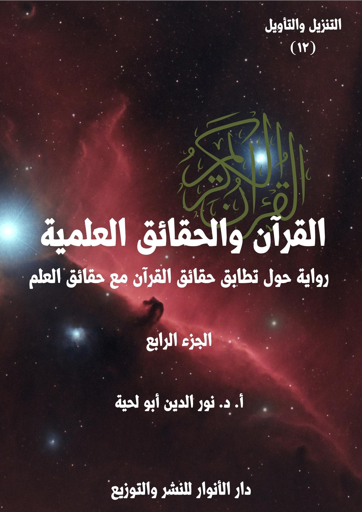

الكتاب: القرآن.. والحقائق العلمية ج4
الوصف: رواية حول تطابق حقائق القرآن مع حقائق العلم
السلسلة: التنزيل والتأويل
المؤلف: أ. د. نور الدين أبو لحية
الناشر: دار الأنوار للنشر والتوزيع
الطبعة: الأولى، 1444 هـ
عدد الصفحات: 550
ISBN: 978-620-4-72102-6
لمطالعة الكتاب من تطبيق مؤلفاتي المجاني وهو أحسن وأيسر: هنا

يحاول هذا الكتاب بيان مطابقة القرآن الكريم للحقائق العلمية الحديثة، وفي الجوانب الكونية المختلفة ابتداء من السماء، وانتهاء بالإنسان، وقد حاولنا أن نستوعب فيه أكثر ما طرح في هذا الجانب من النواحي التالية:
1. محاولة ذكر المواقف المختلفة من التفسير العلمي للقرآن الكريم، سواء من الناحية العامة، أو عند الحديث عند كل آية، لنترك للقارئ حرية الترجيح بينها.
2. ذكر ما ورد في التفاسير القرآنية القديمة والحديثة حول الآيات المتعلقة بالحقائق العلمية، مع ذكر ما ذكرته الدراسات العلمية الحديثة بشأنها.
3. توفير ثقافة علمية للقارئ ترتبط بمعاني الآيات الكريمة التي يتلوها، ولهذا حاولنا أن نفسر كل الآيات التي ذكرت الحقائق المرتبطة بالكون، مع ذكر التفاصيل العلمية الكثيرة الواردة بشأنها، والرجوع للمصادر العلمية الموثوقة في ذلك.
4. محاولة تبسيط المادة العلمية المرتبطة بهذا سواء من خلال تبسيط الفهوم والتفسيرات، أو ذكر الحقائق العلمية.
5. الرد على التفاسير المسيئة للقرآن الكريم، من خلال تحميلها له ما لا يحتمل، أو من خلال الاعتماد على معلومات غير صحيحة، وتطبيقها على القرآن الكريم.
6. محاولة الجمع بين جوانب الهداية المرتبطة بالآيات الكريمة التي نفسرها، والجوانب العلمية، حتى نبين أن المقصود من الآيات الكريمة ليس معانيها العلمية، وإنما جوانب الهداية فيها، والجوانب العلمية مجرد أمثلة ودلائل.
القرآن.. والحقائق العلمية (4/8)
يتناول هذا الجزء من كتاب [القرآن والحقائق العلمية] الفصل الحادي عشر من الكتاب، والذي تناولنا فيه الآيات الكريمة التي تتحدث عن الحيوانات وأوصافها وأنواعها وما يرتبط بها، وعلاقتها خصوصا بالحقائق التي ذكرها علماء الحيوان، وقد ذكرنا فيه جميع ما ورد في القرآن الكريم من الحيوانات مع التفسير والحقائق العلمية المرتبطة بها، وقد رجعنا فيه خصوصا للمواقع العلمية الرسمية المهتمة بالحديث عن الحيوانات، ولم نكتف بالمعلومات التي ذكرها السابقون والمعاصرون، باعتبار التطور العلمي في هذه الجوانب.
ونحب أن نعيد هنا ـ من باب التذكير ـ ما ذكرناه في مقدمة الجزء الأول من أغراض الكتاب ومنهجه، وباختصار، وخاصة للذين لم يتسن لهم أن يطلعوا عليها، فهذا الكتاب ـ بأجزائه الخمسة ـ يحاول أن يستوعب أكثر ما طرح حول التفسير العلمي للقرآن الكريم، وذلك من النواحي التالية:
1. محاولة ذكر المواقف المختلفة من التفسير العلمي للقرآن الكريم، سواء من الناحية العامة، أو عند الحديث عند كل آية كريمة، لنترك للقارئ حرية الترجيح والاختيار بينها.
2. الرد على المنكرين لتفسير القرآن الكريم وفق ما ورد في العلم الحديث مطلقا، حتى لو كانت الآيات الكريمة واضحة في دلالتها، والعلم قطعيا في ثبوته، سواء من خلال ذكر أقوال المفسرين المعتبرين، أو من خلال ذكر الحقائق العلمية وربطها بما ورد في القرآن الكريم، ومساعدة اللغة العربية على ذلك.
القرآن.. والحقائق العلمية (4/9)
3. تأييد ما ورد من ربط للقرآن الكريم بالحقائق العلمية، ما دامت الآيات واضحة الدلالة، والحقائق العلمية ثابتة ومتفق عليها عند جماهير العلماء.
4. ذكر ما ورد في تفاسير القرآن الكريم القديمة والحديثة حول الآيات المتعلقة بالحقائق العلمية، ولم نراع في ذلك دقة المعلومات التي أوردها المفسرون، أو اتفاقها مع ما ورد في مكتشفات العلم الحديث، لأن الهدف هو بيان اهتمام العلماء بتفسير الآيات التي نتحدث عنها بما يتوافق مع العلم.
5. الابتعاد عن الصيغة التي درج عليها الكثير من الكتاب في هذا المجال عند طرحهم للحقائق العلمية المقترنة بالقرآن الكريم، من ذكر كونها سبقا علميا، ونحو ذلك، لأنا رأينا أن مثل هذا يبقى نتيجة يستنتجها القارئ من غير أن ينبه إليها كل حين.
6. توفير ثقافة علمية للقارئ ترتبط بمعاني الآيات الكريمة التي يتلوها، ولهذا حاولنا أن نفسر الآيات التي ذكرت الحقائق الكونية، بغض النظر عن ذكرها لأي حقيقة علمية.
7. محاولة تبسيط المادة العلمية المرتبطة بهذا سواء من خلال تبسيط الفهوم والتفسيرات، أو ذكر الحقائق العلمية، ولهذا اعتمدنا في هذا أسلوبا خاصة في الرواية.
8. الرد على التفاسير المسيئة للقرآن الكريم، من خلال تحميلها له ما لا يحتمل، أو من خلال الاعتماد على معلومات غير صحيحة، وتطبيقها على القرآن الكريم، وادعاء السبق له فيها.
9. محاولة الجمع بين جوانب الهداية المرتبطة بالآيات الكريمة التي نفسرها، والجوانب العلمية، ذلك أن الجوانب العلمية مجرد أمثلة ودلائل.
القرآن.. والحقائق العلمية (4/10)
بعد انتهاء العلماء من ردّ الدعاوى التي ادعاها عليهم خصومهم بشأن ما ورد في القرآن الكريم من الحديث عن النباتات، وما أودع الله فيها من الخصائص والصفات والنعم، قال القاضي: بعد سماعنا لما ذكرتموه من الفهوم المرتبطة بالآيات الكريمة التي تتحدث عن النباتات وعلاقة فهمها بمكتشفات العلم الحديث، ننتقل في هذه الجلسة إلى الحديث عما ورد في القرآن الكريم من الآيات الكريمة التي تتحدث عن الدواب والحيوانات، وما ورد فيها من الأوصاف ومدى تطابقها مع الكشوفات العلمية الحديثة.
قال ذلك، ثم التفت للحكماء، وقال: لقد اتهمكم المخالفون لكم بأنكم زججتم بالآيات الكريمة التي تحدثت عن الحيوانات والدواب والأنعام في محال لا علاقة لها بها، فحمّلتموها ما لا تحتمل.
قال أحد العلماء: معاذ الله أن نفعل ذلك.. بل نحن لم نقم سوى بفهم تلك الآيات الكريمة على ضوء ما اكتشفه العلم الحديث، من غير أن نعتب على العلماء السابقين، ولا أن نلومهم.. وكيف نلومهم على الحديث عن شيء لم يحن حينه؟
قال آخر(1): ولذلك، فإننا لم نقم سوى بتطبيق ما أمرنا ربنا به من التأمل في الحيوانات التي ذكرها الله تعالى، أو دعانا إلى النظر فيها.
قال آخر: وكيف لا نفعل ذلك وقد وردت كلمة ﴿دَابَّةٍ﴾، والتي تشير في عمومها إلى الحيوانات في القرآن الكريم ثماني عشرة مرة.
قال آخر: وقد وردت بصيغة المفرد 14 مرة، كما قال تعالى: ﴿وَاللَّهُ خَلَقَ كُلَّ دَابَّةٍ مِنْ
__________
(1) مفاهيم قرآنية: (3/563)
القرآن.. والحقائق العلمية (4/11)
مَاءٍ﴾ [النور: 45].. وبصيغة الجمع أربع مرات، كما قال تعالى: ﴿إِنَّ شَرَّ الدَّوَابِّ عِنْدَ اللَّهِ الصُّمُّ الْبُكْمُ الَّذِينَ لَا يَعْقِلُونَ﴾ [الأنفال: 22].. ووردت كلمة ﴿دَابَّةٍ﴾ في القرآن الكريم بمعنى كل ما يمشي على الأرض ذكرا كان أو أنثى، عاقلا كان أو غير عاقل، كما قال تعالى: ﴿وَمَا مِنْ دَابَّةٍ فِي الْأَرْضِ إِلَّا عَلَى اللَّهِ رِزْقُهَا﴾ [هود: 6]
قال آخر: وقد ذكر الله تعالى في القرآن الكريم جملة من الحقائق المرتبطة بها، ومنها أنها خلقت من ماء، كما قال تعالى: ﴿وَاللَّهُ خَلَقَ كُلَّ دَابَّةٍ مِنْ مَاءٍ﴾ [النور: 45]
قال آخر: ومنها أنها مختلفة في حركتها، كما قال تعالى: ﴿وَاللَّهُ خَلَقَ كُلَّ دَابَّةٍ مِنْ مَاءٍ فَمِنْهُمْ مَنْ يَمْشِي عَلَى بَطْنِهِ وَمِنْهُمْ مَنْ يَمْشِي عَلَى رِجْلَيْنِ وَمِنْهُمْ مَنْ يَمْشِي عَلَى أَرْبَعٍ يَخْلُقُ اللَّهُ مَا يَشَاءُ إِنَّ اللَّهَ عَلَى كُلِّ شَيْءٍ قَدِيرٌ﴾ [النور: 45]
قال آخر: ومنها أنها مختلفة في ألوانها، كما قال تعالى: ﴿وَمِنَ النَّاسِ وَالدَّوَابِّ وَالْأَنْعَامِ مُخْتَلِفٌ أَلْوَانُهُ﴾ [فاطر: 28]
قال آخر: ومنها أنها جميعا تحتاج إلى الرزق، كما قال تعالى: ﴿وَكَأَيِّنْ مِنْ دَابَّةٍ لَا تَحْمِلُ رِزْقَهَا اللَّهُ يَرْزُقُهَا وَإِيَّاكُمْ وَهُوَ السَّمِيعُ الْعَلِيمُ﴾ [العنكبوت: 60]، وقال: ﴿وَمَا مِنْ دَابَّةٍ فِي الْأَرْضِ إِلَّا عَلَى اللَّهِ رِزْقُهَا﴾ [هود: 6]
قال آخر: ومنها أن الدواب أمم وفصائل ومجتمعات، كما قال تعالى: ﴿وَمَا مِنْ دَابَّةٍ فِي الْأَرْضِ وَلَا طَائِرٍ يَطِيرُ بِجَنَاحَيْهِ إِلَّا أُمَمٌ أَمْثَالُكُمْ﴾ [الأنعام: 38]، وقال: ﴿حَتَّى إِذَا أَتَوْا عَلَى وَادِ النَّمْلِ قَالَتْ نَمْلَةٌ يَا أَيُّهَا النَّمْلُ ادْخُلُوا مَسَاكِنَكُمْ لَا يَحْطِمَنَّكُمْ سُلَيْمَانُ وَجُنُودُهُ وَهُمْ لَا يَشْعُرُونَ﴾ [النمل: 18]
قال آخر: ومنها أنها منتشرة في الأرض والسماوات، كما قال تعالى: ﴿وَمِنْ آيَاتِهِ خَلْقُ السَّمَاوَاتِ وَالْأَرْضِ وَمَا بَثَّ فِيهِمَا مِنْ دَابَّةٍ﴾ [الشورى: 29]، وقال: ﴿وَمَا أَنْزَلَ اللَّهُ مِنَ السَّمَاءِ
القرآن.. والحقائق العلمية (4/12)
مِنْ مَاءٍ فَأَحْيَا بِهِ الْأَرْضَ بَعْدَ مَوْتِهَا وَبَثَّ فِيهَا مِنْ كُلِّ دَابَّةٍ﴾ [البقرة: 164]، وقال: ﴿وَأَلْقَى فِي الْأَرْضِ رَوَاسِيَ أَنْ تَمِيدَ بِكُمْ وَبَثَّ فِيهَا مِنْ كُلِّ دَابَّةٍ﴾ [لقمان: 10]، وقال: ﴿وَفِي خَلْقِكُمْ وَمَا يَبُثُّ مِنْ دَابَّةٍ آيَاتٌ لِقَوْمٍ يُوقِنُونَ﴾ [الجاثية: 4]
قال آخر: ومنها أن لها أجلا معلوما تعيش فيه، كما قال تعالى: ﴿وَلَوْ يُؤَاخِذُ اللَّهُ النَّاسَ بِمَا كَسَبُوا مَا تَرَكَ عَلَى ظَهْرِهَا مِنْ دَابَّةٍ وَلَكِنْ يُؤَخِّرُهُمْ إلى أَجَلٍ مُسَمًّى﴾ [فاطر: 45]
قال آخر: ومنها أن لله تعالى تمام السيطرة والهيمنة عليها؛ فليس من شيء يدب على هذه الأرض إلا والله مالكه، وهو في سلطانه وتصرفه، كما قال تعالى: ﴿مَا مِنْ دَابَّةٍ إِلَّا هُوَ آخِذٌ بِنَاصِيَتِهَا﴾ [هود: 56]، وقال: ﴿وَمَا مِنْ دَابَّةٍ فِي الْأَرْضِ إِلَّا عَلَى اللَّهِ رِزْقُهَا وَيَعْلَمُ مُسْتَقَرَّهَا وَمُسْتَوْدَعَهَا كُلٌّ فِي كِتَابٍ مُبِينٍ﴾ [هود: 6]، وقال: ﴿أَلَمْ يَرَوْا إلى الطَّيْرِ مُسَخَّرَاتٍ فِي جَوِّ السَّمَاءِ مَا يُمْسِكُهُنَّ إِلَّا اللَّهُ إِنَّ فِي ذَلِكَ لَآيَاتٍ لِقَوْمٍ يُؤْمِنُونَ﴾ [النحل: 79]
قال آخر: ومنها أن الله تعالى قادر على جمعها وحشرها، كما قال تعالى: ﴿وَمَا بَثَّ فِيهِمَا مِنْ دَابَّةٍ وَهُوَ عَلَى جَمْعِهِمْ إِذَا يَشَاءُ قَدِيرٌ﴾ [الشورى: 29]، وقال: ﴿وَإِذَا الْوُحُوشُ حُشِرَتْ﴾ [التكوير: 5]
قال آخر: ومنها أنها تسجد لله، كما قال تعالى: ﴿أَلَمْ تَرَ أَنَّ اللَّهَ يَسْجُدُ لَهُ مَنْ فِي السَّمَاوَاتِ وَمَنْ فِي الْأَرْضِ وَالشَّمْسُ وَالْقَمَرُ وَالنُّجُومُ وَالْجِبَالُ وَالشَّجَرُ وَالدَّوَابُّ وَكَثِيرٌ مِنَ النَّاسِ﴾ [الحج: 18]
قال آخر: ومنها أنها جميعا تعرف الله، وتؤمن به، وتخضع له، كما قال تعالى: ﴿وَتَفَقَّدَ الطَّيْرَ فَقَالَ مَا لِيَ لَا أَرَى الْهُدْهُدَ أَمْ كَانَ مِنَ الْغَائِبِينَ لَأُعَذِّبَنَّهُ عَذَابًا شَدِيدًا أَوْ لَأَذْبَحَنَّهُ أَوْ لَيَأْتِيَنِّي بِسُلْطَانٍ مُبِينٍ فَمَكَثَ غَيْرَ بَعِيدٍ فَقَالَ أَحَطْتُ بِمَا لَمْ تُحِطْ بِهِ وَجِئْتُكَ مِنْ سَبَإٍ بِنَبَإٍ يَقِينٍ إِنِّي وَجَدْتُ امْرَأَةً تَمْلِكُهُمْ وَأُوتِيَتْ مِنْ كُلِّ شَيْءٍ وَلَهَا عَرْشٌ عَظِيمٌ وَجَدْتُهَا وَقَوْمَهَا يَسْجُدُونَ
القرآن.. والحقائق العلمية (4/13)
لِلشَّمْسِ مِنْ دُونِ اللَّهِ وَزَيَّنَ لَهُمُ الشَّيْطَانُ أَعْمَالَهُمْ فَصَدَّهُمْ عَنِ السَّبِيلِ فَهُمْ لَا يَهْتَدُونَ أَلَّا يَسْجُدُوا لِلَّهِ الَّذِي يُخْرِجُ الْخَبْءَ فِي السَّمَاوَاتِ وَالْأَرْضِ وَيَعْلَمُ مَا تُخْفُونَ وَمَا تُعْلِنُونَ اللَّهُ لَا إِلَهَ إِلَّا هُوَ رَبُّ الْعَرْشِ الْعَظِيمِ﴾ [النمل: 20 ـ 26]، وقال: ﴿وَالطَّيْرُ صَافَّاتٍ كُلٌّ قَدْ عَلِمَ صَلَاتَهُ وَتَسْبِيحَهُ﴾ [النور: 41]
قال آخر: ومنها أن كل مخلوق قد أرشده الله وعلمه كيف يؤدي وظائفه، كما قال تعالى: ﴿وَأَوْحَى رَبُّكَ إلى النَّحْلِ أَنِ اتَّخِذِي مِنَ الْجِبَالِ بُيُوتًا وَمِنَ الشَّجَرِ وَمِمَّا يَعْرِشُونَ ثُمَّ كُلِي مِنْ كُلِّ الثَّمَرَاتِ فَاسْلُكِي سُبُلَ رَبِّكِ ذُلُلًا يَخْرُجُ مِنْ بُطُونِهَا شَرَابٌ مُخْتَلِفٌ أَلْوَانُهُ فِيهِ شِفَاءٌ لِلنَّاسِ إِنَّ فِي ذَلِكَ لَآيَةً لِقَوْمٍ يَتَفَكَّرُونَ﴾ [النحل: 68 ـ 69]
قال القاضي: انطلاقا مما ذكرتم، نريد أن نسمع منكم، ومن المدّعين عليكم، الحديث عن الآيات الكريمة التي ورد الخلاف في شأن التفسير العلمي لها.
قال أحد المدّعين، وكان من المشككين: أجل.. فقد ربطوا هذه الآية: ﴿وَمَا مِنْ دَابَّةٍ فِي الْأَرْضِ وَلَا طَائِرٍ يَطِيرُ بِجَنَاحَيْهِ إِلَّا أُمَمٌ أَمْثَالُكُمْ﴾ [الأنعام: 38] بالكثير من الكشوف العلمية التي لا علاقة لها بها.
قال آخر: بالإضافة إلى ذلك، فإنه من العجيب أن تُوصف الحيوانات بأنها أمم مماثلة لمجتمعات البشر المنظمة.
قال آخر: وإن جاز لأحد أن يصف مجتمعًا كالنحل ـ مثلاً ـ بأنه أمة ومجتمع، فلا يصح بحال أن يُطلق هذا الوصف على العناكب التي تأكل الأنثى فيه زوجها بعد التلقيح، فكيف يوصف بأنها أمة كالبشر!؟
القرآن.. والحقائق العلمية (4/14)
التفت القاضي إلى العلماء، وقال: فبم تجيبونهم على ما ذكروه؟
قال أحد العلماء(1): لقد أثبتت جهود العلماء والباحثين في علم الحيوان أن عالم الحيوان يزخر بما لا يُحصى من الغرائب والعجائب، وأن هذه الحيوانات سواء ما يدب منها على الأرض، أو يطير في السماء بجناحيه، أو يسبح في الماء ـ إنما هي شعوب وقبائل وأمم تربطها صلات وعلاقات وثيقة، فهي لا تختلف في حياتها ونشاطها عن أمم البشر.
قال آخر: كما أن سلوكها لا يخلو من التفكير والمنطق والتخطيط، واستشراف المستقبل، سواء في بنائها لمنازلها، أو رعايتها لأبنائها، أو التعاون فيما بينها، أو في التكافل والتعاون مع غيرها.
قال آخر: ويوجد بينها خداع وغدر وأنانية وظلم أيضًا كما هو موجود في مجتمع العناكب؛ مما يؤكد كونها أمما مماثلة لأمم البشر في كثير من النواحي، وبهذا تتطابق الآية مع ما أثبته العلم الحديث، فأين المخالفة إذًا!؟
قال القاضي: هذه الجملة، فحدثونا عن التفاصيل المثبتة لذلك.
قال أحد العلماء: لقد أثبتت جهود الباحثين على مر العصور وفي مختلف بلاد العالم أن عالم الحيوان يزخر بما لا يُحصى من الغرائب والعجائب، كما أن المجموعات الحيوانية التي تشارك الإنسان في العيش على ظهر الأرض كثيرة ومتنوعة بدرجة تفوق كل خيال، وقد
__________
(1) انظر المادة العلمية المرتبطة بهذا في: موسوعة بيان الإسلام الرد على الافتراءات والشبهات، نخبة من كبار العلماء.. ورحيق العلم والإيمان، د. أحمد فؤاد باشا، ص146.. والموسوعة الكونية الكبرى: آيات الله في خلق الحيوانات البرية والبحرية وبعثها وحسابها، د. ماهر الصوفي، ج11، ص95.. والتضحية عند الحيوانات، ص14.. ومعجزات القرآن العلمية في الأرض مقابلة مع التوراة والإنجيل، عبد الوهاب الراوي، ص107.. والقرآن والعلم، تعريب: د. إبراهيم الصنافيري، ص66.. وموسوعة الإعجاز العلمي في الحديث النبوي، د. أحمد شوقي إبراهيم، نهضة مصر، القاهرة، ط1، 2006م، ج6، ص107.. ومعجزة العنكبوت، ص124.
القرآن.. والحقائق العلمية (4/15)
أصبح من المعروف حاليًّا أنه يوجد ما يقرب من مليون نوع من الحيوانات المختلفة التي توصل العلم إلى معرفتها.
قال آخر: ولا شك أن هذا العدد الضخم من الحيوانات تحتاج دراسته العلمية المنهجية إلى ترتيب وتبويب؛ لذلك نشأ علم خاص بهذه الموضوعات التصنيفية أُطلق عليه اسم [علم تصنيف الحيوان]
قال آخر: ويرتكز المفهوم العام لهذا العلم على أساس تقسيم هذا العدد الضخم من الحيوانات المعروفة إلى مجموعات كبيرة تتشابه في صفاتها الرئيسية، ويُطلق عليها اسم [الشُّعَب]، وتضم الشعبة الواحدة عدة [طوائف]، وتحتوي كل طائفة على مجموعة من [الرتب]، وتنقسم الرتبة الواحدة إلى عدة [فصائل]، والفصيلة تشتمل على عدة [أجناس]، والجنس على عدة [أنواع]
قال آخر: وطبقًا لهذا النظام التصنيفي نجد أن عالم الحيوان يحتوي على ست طبقات أساسية تتدرج من الأدنى إلى الأعلى كما يلي: (النوع ـ الجنس ـ الفصيلة ـ الرتبة ـ الطائفة ـ الشعبة)
قال آخر: ومن الأمثلة على ذلك يذكر العلماء أعداد بعض أنواع دواب الأرض وحشراتها وطيورها، ومنها مئات الآلاف من الأنواع البحرية حتى هذه الساعة، ورغم كل التقدم الذي نعيشه لم يستطع العلماء حصر أعداد أنواع الحيوانات البحرية؛ لصعوبة العمل داخل الماء، ولكن قدَّروها بمئات الآلاف.
قال آخر: ومنها ملايين الأنواع من الحشرات البرية والجبلية والسهلية والصحراوية.
قال القاضي: فهل تعتبرون كل نوع من هذه الأنواع أمة كأمم البشر؟
القرآن.. والحقائق العلمية (4/16)
قال أحد العلماء: الجواب على هذا يستدعي التعرف على جوانب التماثل بين الإنسان وسائر الكائنات الحية، ذلك أنه من المعروف أن الإنسان هو الكائن الحي الوحيد الذي تحكمه العقلانية والمنطقية في السلوك.
قال آخر: فبالإضافة إلى مميزاته البدنية، فإن الميزة الفريدة التي تجعله في صعيد مختلف عن باقي الكائنات الحية هي العقل والمنطق، وعلى ضوء ذلك يتميز بمحاسبة نفسه واستشراف المستقبل، فضلاً عن رد الفعل تجاه الأحداث الحاصلة.
قال آخر: وهذا ما نجده بصور مختلفة عند كل الحيوانات، فالقندس مثلا مثال رائع على العقلانية والتخطيط والحساب الدقيق، فهو مهندس بارع وبنّاء ماهر في الوقت نفسه؛ حيث ينشئ عشه بمهارة فائقة، وبالمهارة نفسها ينشئ سدًّا منيعًا لتهدئة سرعة المياه الجارية وحماية عشه منها، وهو يبذل جهدًا خارقًا وعلى مدى عدة مراحل لإنجاز هذا العمل المرهق.
قال آخر: ففي المرحلة الأولى يقوم بتجميع كَمّ هائل من أغصان الأشجار ليستخدمها في غذائه، وفي بناء عشه والسد الذي أمامه؛ ولهذا يقوم بقرض الأشجار المتوافرة لقطعها، وأثبتت الأبحاث العلمية أنه يقوم بحسابات دقيقة عند عملية القطع، كما يفضل العمل على ضفة المياه التي تهب عليها الرياح؛ حتى تساعده المياه في جلب تلك الأغصان باتجاه عشه.
قال آخر: ويتميز عش هذا الحيوان بتخطيط بارع ومفصل؛ إذ يحتوي على مدخلين سفليين تحت سطح الماء، وغرفة خاصة أعلى من مستوى الماء للتغذية، وفوقها غرفة خاصة للنوم، إضافة إلى قناة خاصة للتهوية، ويقوم القندس بتجميع الأغصان واحدًا فوق الآخر؛ لتشكيل الهيكل الخارجي للعش بعناية كبيرة مستخدمًا أعوادًا صغيرة مع كمية من الطين؛
القرآن.. والحقائق العلمية (4/17)
حيث لا يترك فيه أية فجوة أو ثقب.
قال آخر: أما المواد التي يستخدمها القندس في بناء عشه فهي تساعد على تماسكه من جهة، والحفاظ على درجة الحرارة داخله من جهة أخرى، فبالرغم من انخفاض درجة الحرارة في الشتاء إلى 35 درجة تحت الصفر فإن الحرارة داخل العش تبقى فوق الصفر باستمرار.
قال آخر: ويقوم القندس أيضًا بإنشاء مخزن للأغذية تحت العش يتغذى منه طوال فصل الشتاء، وفي تلك الأثناء يقوم بإنشاء قنوات تحتية على شكل شبكة، ويبلغ طول هذه القنوات مترين، يستطيع بواسطتها أن يصل إلى اليابسة؛ حيث توجد الأشجار التي يتغذى عليها.
قال آخر: والسدود التي يبنيها تتألف من النباتات والأحجار التي يركمها فوق بعضها البعض بالطريقة نفسها التي يبني بها العش، وهو يبذل جهده في رص الأغصان على شكل مثلث طويل يربط بين ضفتي المياه، إضافة إلى رتق الفجوات الموجودة في السد عبر ملئها بالمواد اللازمة.
قال آخر: وكل هذا يحدث وهو يسبح ضد تيار الماء ويمتطي كومة عشه في الوقت نفسه، وعند حدوث أية فجوة أو خلل في بناء السد يقوم باستخدام الطين أو أغصان الأشجار لملئه ثانية.
قال آخر: وهكذا يتحول السد إلى نوع من الحوض العميق يستطيع من خلاله أن يجعل من عشه مخبأ كبيرًا للأغذية والمؤونة تساعده على الحياة طوال فصل الشتاء.
قال آخر: ويستطيع القندس أن يوسع من المساحة المائية داخل العش لنقل أكبر كمية ممكنة من الغذاء والمواد اللازمة لبناء العش وترميمه، حتى إن هذا الأسلوب يجعل العش
القرآن.. والحقائق العلمية (4/18)
في مأمن من الأعداء، وفي هذا يشبه عش القندس قلعة محاطة بخنادق الدفاع يصعب الهجوم عليها.
قال آخر: والقندس ليس الحيوان الوحيد الذي يبدي سلوكًا مخططًا مدروسًا؛ فهناك العديد من الأمثلة الحية والتي لا يمكن حصرها، ومنها [دودة القز]، وهي من الحشرات التي تفرز يرقتها خيوط الحرير، وهي أصغر بكثير من القندس.
قال آخر: وهي كباقي أنواع اليرقات تقضي فترة من فترات حياتها داخل شرنقة، وعند خروجها من الشرنقة تقوم بإخفاء نفسها داخل ورقة نباتية، وعملية الاختفاء تتم بمنتهى الإحكام وفق مخطط مدروس مسبق، وعبر مراحل تتطلب خبرة وقدرة فائقة؛ لصعوبة طي الورقة الخضراء؛ وبالتالي لا يمكن لها أن تخفي جسم الدودة بسهولة.
قال آخر: لذا فقد استطاعت أن تجد حلاًّ بسيطًا لكنه يفي بالغرض إلى أبعد حد؛ حيث تقوم الدودة بقرض جزء الورقة المتصل بالنبات لقطعها، ولمنع سقوطها تقوم بربطها بشكل محكَم عبر إفراز خيوط الحرير، ثم تبدأ الورقة بالتيبس وتنكمش الورقة اليابسة حول نفسها، وبعد ساعات تأخذ الورقة شكلها النهائي كأنبوب يصلح أن يكون مخبأ أمينًا لها، وسرعان ما تلجه متخذة إياه مسكنًا لها.
قال آخر: ثم تقدم الدودة على اختراع جديد بواسطته تنقذ نفسها من مخالب الطيور؛ إذ تقوم بإجراء عملية حسابية دقيقة كالذي يقوم بها إخصائيو الرياضيات، استنادًا إلى مبدأ الاحتمالات؛ ولذلك تقوم بالعمل نفسه في أوراق نباتية أخرى، وتقوم بربط هذه الأوراق حول الورقة التي تختبئ داخلها كنوع من أنواع التمويه ضد الأعداء.
قال آخر: وهكذا يصبح على غصن واحد أكثر من ورقة (6 ـ 7)، واحدة منها فقط تحوي الدودة المختبئة والباقية خالية تمامًا، وإذا حدث وتناول أحد الطيور هذه الأوراق
القرآن.. والحقائق العلمية (4/19)
فيصبح احتمال وقوع الدودة كفريسة 6/1.. ولا شك أن كل هذه الظواهر السلوكية تعتمد على منطق معين.
قال آخر: ومن الأمثلة على التنظيم والتعاون النمل، وهو مشهور بمقدرته الفائقة على التنظيم والحياة الاجتماعية؛ فهو يوزع حجرات عشه بحسب الاختصاص: حجرات مخزن الطعام، حجرات للصغار، حجرة للملكة.
قال آخر: ويعتمد مبدأ تقسيم العمل كما يفعل الإنسان؛ فمجموعة تختص بالحراسة على أبواب الأعشاش، وأخرى بالتنظيف، وأخرى من جنود فرسان، وأخرى من النمل الكسول.
قال آخر: بالإضافة إلى ذلك نجد التعاون والود على أشده عند النمل، لدرجة أنه يتبادل الطعام مع بعض، أو يطعم بعضه البعض.
قال آخر: وهكذا نجد الحياة الاجتماعية للنحل تتجلى بأحسن صورة، حيث يتخذ له من تجاويف الأشجار وما شابهها مساكن على هيئة مستعمرات، في كل منها ملكة، وعدة مئات من الذكور، و10 ـ 80 ألفًا من الشغالات، فإن في كل مستعمرة ملكة واحدة وظيفتها وضع البيض، وأيضًا إفراز المواد المهمة اللازمة لوحدة المستعمرة وتسيير النظام فيها، أما وظيفة الذكور فهي تلقيح الملكة، بينما تقوم الشغالات بجميع الأعمال الأخرى من جمع الغذاء، وإنتاج عسل النحل، وتنظيم حرارة الخلية، والنظافة، والدفاع، ولكل مرحلة من الحياة في الخلية نظام معين، ويتم أداء جميع الوظائف دونما تقصير، بدءًا من العناية باليرقات وحتى توفير الاحتياجات العامة للخلية.
قال آخر: بالإضافة إلى ذلك، نجد الأمثلة الكثيرة على التعاون والتكافل بين الكائنات الحية المختلفة، ومن الأمثلة على ذلك الحيوانات التي تعيش ضمن تجمعات،
القرآن.. والحقائق العلمية (4/20)
حيث تقوم عند إحساسها بالخطر القادم بتنبيه الباقين بدلاً من الهرب والنجاة.
قال آخر: ولكل نوع من أنواع الأحياء طريقته الخاصة في التنبيه، فالأرنب مثلا يقوم برفع ذيله بصورة قائمة عند قدوم العدو المفترس كوسيلة لتنبيه باقي أفراد القطيع، أما الغزلان فتقوم بأداء رقصة على شكل قفزات.
قال آخر: أما الطيور الصغيرة فتقوم بإصدار أصوات خاصة عند قدوم الخطر، ومنها من يقوم بإصدار أصوات ذات ترددات عالية مع فواصل متقطعة، وأذن الإنسان تتحسس هذا النوع من الصوت على شكل صفير، وأهم ميزة لهذا الصوت هي عدم معرفة مصدره، وهذا لا يكون لصالح الطير المنبه بالطبع؛ لأن الخطورة تكمن في معرفة مكان الطير الذي يقوم بوظيفة التنبيه بالخطر، وتقل نسبة الخطورة لعدم معرفة هذا الصوت.
قال آخر: أما الحشرات التي تعيش ضمن مستعمرات فوظيفة التنبيه والإنذار تقع على عاتق أول حشرة ترى وتحس، إلا أن الحشرة التي تقوم بالإنذار تفرز رائحة الإنذار، مما يجلب نظر العدو؛ أي إن الحشرة المنذرة تضحي بحياتها من أجل سلامة المستعمرة.
قال آخر: أما الكلاب البرية فتعيش ضمن مجاميع كبيرة، ومساكنها التي تسع 30 كلبًا تكون شبيهة بمدينة صغيرة، ويعرف الأفراد بعضهم بعضًا في هذه المستعمرة، وهناك دائمًا حراس مناوبون في مداخل هذه المدينة الصغيرة، يقفون على أطرافهم الخلفية مراقبين البيئة من جميع الجهات، وإذا حدث أن أحد المراقبين رأى عدوًّا يقترب يبدأ من فوره بنباح متصل شبيه بصوت الصفير، ويقوم باقي الحراس بتأكيد هذا الخبر بواسطة النباح أيضًا، وعندئذ تكون قد علمت المجموعة بقدوم الخطر، ودخلت مرحلة الاستعداد للمجابهة.
قال آخر: ولا تكتفي الحيوانات التي تعيش على شكل مجموعات بإنذار بعضها البعض بقدوم الخطر، بل تشارك أيضًا بمجابهته؛ فالطيور الصغيرة تقوم بمحاصرة الصقر
القرآن.. والحقائق العلمية (4/21)
أو البوم الذي يتجرأ ويدخل مساكنها، وفي تلك الأثناء تقوم بطلب المساعدة من الطيور الموجودة في تلك المنطقة، وهذا الهجوم الجماعي الذي تقوم به يكفي لطرد الطيور المفترسة.
قال آخر: ويشكل السرب الذي تطير ضمنه الطيور خير وسيلة للدفاع؛ فالزرزور مثلاً تترك بينها مسافات طويلة أثناء الطيران، وإذا رأوا طائرًا مفترسًا يقترب كالصقر، سرعان ما يقللون ما بينهم من مسافات، مقتربين من بعضهم البعض، بذلك يقللون من إمكانية اقتحام الصقر للسرب، وإذا أمكن له ذلك فسيجد مقاومة شديدة، وربما يُصاب بجروح في جناحيه ويعجز عن الصيد.
قال آخر: أما الثدييات فإنها تتصرف على هذه الشاكلة أيضًا خصوصًا إذا كانت تعيش ضمن قطعان، ومثال ذلك الحمار الوحشي، حيث يدفع بصغاره نحو أواسط القطيع في أثناء هربه من العدو المفترس.
قال آخر: ويعيش الدلفين ضمن جماعات تسبح سويًّا، وتقوم بمهاجمة عدوها اللدود ـ الكواسج ـ بصورة جماعية أيضًا، وعندما يقترب الكوسج من هذه الجماعة يشكل خطرًا جسيمًا على صغار الدلفين، فيبتعد اثنان من الدلفين عن الجماعة ليلفتا انتباه الكوسج إليهما ويبعدانه عن الجماعة، وعندئذ تنتهز الجماعة تلك الفرصة في الهجوم فجأة، وتوجيه الضربات تلو الضربات لهذا العدو المفترس.
قال القاضي: وعينا هذا، فكيف تجيبونهم على إشكالهم المرتبط بالعناكب؟
قال أحد العلماء: نحن لا نختلف معهم في أن النحل غير العناكب؛ فبيت النحل يُؤسس على نظام مثالي، وخَلْق عظيم، ويعيش في بيته على الود والتعاون، والتراحم والتعاطف، بينما يسود بيت العنكبوت نظام عدواني، وانحطاط خلقي، ويعيش العنكبوت في بيته على الخداع والغدر، والأنانية والظلم، ولكن هل يستطيع أحد أن ينكر أن هناك من
القرآن.. والحقائق العلمية (4/22)
البشر من ينفر من الناس وينفر منه الناس، ويعيش على الخداع والغدر والأنانية والظلم والقتل والخيانة؟.. لا شك أن أمثال هؤلاء كثيرون في دنيا البشر، ولا يخلو منهم مجتمع من المجتمعات.
قال آخر: ثم لماذا لا ينظر المدّعون علينا إلى الجانب المشرق من حياة العناكب، وهي هندسة أنثى العنكبوت لبيتها، فالعنكبوت مهندس إنشائي بارع؛ حيث تقوم العنكبوت أولاً تنسج خيطًا واحدًا من الحرير.. ثم تكمل الإطار الخارجي، ومن وسط الخيط العلوي تنسج خيطًا آخر إلى أسفل.. وتبدأ من وسط هذا الخيط فتنسج خيطًا من كل اتجاه في زوايا متساوية تشبه أسلاك عجلة الدراجة.. وبعد أن تنتهي من ذلك تبدأ من الوسط وتصل الخيوط بعضها ببعض في اتجاه دائري، حتى ينتهي بناء البيت.
قال آخر: وتصمم أنثى العنكبوت البيت ليكون مصيدة للحشرات، ولذلك تضع مواد لاصقة على الخيوط، فما إن تصل حشرة إلى بيتها حتى تلتصق أقدامها بالخيوط اللزجة، فتسرع أنثى العنكبوت وتحيط فريستها بخيوطها، وكأنها تكفنها بعد أن تلدغها بسمها، وبعد ذلك تمتص عصارة جسم الحشرة وتتغذى عليها.
قال آخر: والعنكبوت الذي يخرج لتوِّه من البيضة يملك المعرفة الضرورية لنسج شبكة دون الحصول على أي تدريب، وبفضل هذه المعرفة تولد أجيال من العناكب لديها القدرة على نسج الشباك.
قال أحد المدّعين من غير المشككين: ولكن هذا شأن المفسرين المتخصصين، لا شأنكم.. فلِم تقحمون أنفسكم في أمور أنتم لستم أهلا لها؟
قال أحد العلماء: ومن ذكر لكم ذلك.. إن كبار المفسرين ذكروا هذا، وبحسب
القرآن.. والحقائق العلمية (4/23)
المعلومات التي كانت متاحة في عصورهم.
قال آخر: ومن الأمثلة على ذلك الرازي، فقد قدم لذلك بذكر مناسبة الآية الكريمة لما قبلها، وقد ذكر فيه وجهين، عبر عن أولهما بقوله: (الله تعالى بين في الآية الأولى أنه لو كان إنزال سائر المعجزات مصلحة لهم لفعلها ولأظهرها إلا أنه لما لم يكن إظهارها مصلحة للمكلفين، لا جرم ما أظهرها، وهذا الجواب إنما يتم إذا ثبت أنه تعالى يراعي مصالح المكلفين ويتفضل عليهم بذلك فبين أن الأمر كذلك، وقرره بأن قال: ﴿وَمَا مِنْ دَابَّةٍ فِي الْأَرْضِ وَلَا طَائِرٍ يَطِيرُ بِجَنَاحَيْهِ إِلَّا أُمَمٌ أَمْثَالُكُمْ﴾ في وصول فضل الله وعنايته ورحمته وإحسانه إليهم، وذلك كالأمر المشاهد المحسوس فإذا كانت آثار عنايته واصلة إلى جميع الحيوانات فلو كان في إظهار هذه المعجزات القاهرة مصلحة للمكلفين لفعلها ولأظهرها ولامتنع أن يبخل بها مع ما ظهر أنه لم يبخل على شيء من الحيوانات بمصالحها ومنافعها، وذلك يدل على أنه تعالى إنما لم يظهر تلك المعجزات، لأن إظهارها يخل بمصالح المكلفين)(1)
قال آخر: أما الوجه الثاني، فعبر عنه بقوله: (إنه تعالى لما قدم ذكر الكفار وبين أنهم يرجعون إلى الله ويحشرون بين أيضا بعده بقوله: ﴿وَمَا مِنْ دَابَّةٍ فِي الْأَرْضِ وَلَا طَائِرٍ يَطِيرُ بِجَنَاحَيْهِ إِلَّا أُمَمٌ أَمْثَالُكُمْ﴾ في أنهم يحشرون، والمقصود: بيان أن الحشر والبعث كما هو حاصل في حق الناس فهو أيضا حاصل في حق البهائم)(2)
قال آخر: ثم قال: (الحيوان إما أن يكون بحيث يدب أو يكون بحيث يطير فجميع ما خلق الله تعالى من الحيوانات، فإنه لا يخلو عن هاتين الصفتين، إما أن يدب، وإما أن
__________
(1) مفاتيح الغيب (12/ 523)
(2) مفاتيح الغيب (12/ 523)
القرآن.. والحقائق العلمية (4/24)
يطير.. أما حيتان البحر، وسائر ما يسبح في الماء ويعيش فيه، فلا يبعد أن توصف بأنها دابة من حيث إنها تدب في الماء أو هي كالطير، لأنها تسبح في الماء، كما أن الطير يسبح في الهواء، إلا أن وصفها بالدبيب أقرب إلى اللغة من وصفها بالطيران)(1)
قال آخر: ثم ذكر سر تقييد الدابة بكونها في الأرض، فقال: (وذلك من وجهين: الأول: أنه خص ما في الأرض بالذكر دون ما في السماء احتجاجا بالأظهر لأن ما في السماء وإن كان مخلوقا مثلنا فغير ظاهر.. والثاني: أن المقصود من ذكر هذا الكلام أن عناية الله تعالى لما كانت حاصلة في هذه الحيوانات فلو كان إظهار المعجزات القاهرة مصلحة لما منع الله من إظهارها.. وهذا المقصود إنما يتم بذكر من كان أدون مرتبة من الإنسان لا بذكر من كان أعلى حالا منه، فلهذا المعنى قيد الدابة بكونها في الأرض)(2)
قال آخر: ثم تحدث عن سر إضافة ﴿يَطِيرُ بِجَنَاحَيْهِ﴾ مع أن كل طائر إنما يطير بجناحيه، فقال: (والجواب فيه من وجوه: الأول: أن هذا الوصف إنما ذكر للتأكيد كقوله نعجة أنثى، وكما يقال: كلمته بفي، ومشيت إليه برجلي.. والثاني: أنه قد يقول الرجل لعبده طر في حاجتي، والمراد الإسراع، وعلى هذا التقدير: فقد يحصل الطيران لا بالجناح.. فذكر الجناح ليتمحض هذا الكلام في الطير.. والثالث: أنه تعالى قال في صفة الملائكة: ﴿جَاعِلِ الْمَلَائِكَةِ رُسُلًا أُولِي أَجْنِحَةٍ مَثْنَى وَثُلَاثَ وَرُبَاعَ﴾ [فاطر: 1] فذكر هاهنا قوله ﴿وَلَا طَائِرٍ يَطِيرُ بِجَنَاحَيْهِ﴾ ليخرج عنه الملائكة، فإنا بينا أن المقصود من هذا الكلام إنما يتم بذكر من كان أدون حالا من الإنسان، لا بذكر من كان أعلى حالا منه)(3)
__________
(1) مفاتيح الغيب (12/ 523)
(2) مفاتيح الغيب (12/ 524)
(3) مفاتيح الغيب (12/ 524)
القرآن.. والحقائق العلمية (4/25)
قال آخر: ثم ذكر سر جمع أمم مع إفراد الدابة والطائر، فقال: (والجواب: لما كان قوله: ﴿ما من دابة ولا طائر﴾ دالا على معنى الاستغراق ومغنيا عن أن يقول: وما من دواب ولا طيور لا جرم حمل قوله إلا أمم على المعنى)(1)
قال آخر: ثم تحدث عن قوله تعالى: ﴿إِلَّا أُمَمٌ أَمْثَالُكُمْ﴾، فقال: (الآية دلت على أن هذه الدواب والطيور أمثالنا، وليس فيها ما يدل على أن هذه المماثلة في أي المعاني حصلت ولا يمكن أن يقال: المراد حصول المماثلة من كل الوجوه وإلا لكان يجب كونها أمثالا لنا في الصورة والصفة والخلقة وذلك باطل فظهر أنه لا دلالة في الآية على أن تلك المماثلة حصلت في أي الأحوال والأمور فبينوا ذلك)(2)
قال آخر: ثم ذكر الاختلاف في تعيين الأمر الذي حكم الله تعالى فيه بالمماثلة بين البشر وبين الدواب والطيور، ومن الأقوال التي ذكرها: (القول الأول: عن ابن عباس أنه قال: يريد، يعرفونني ويوحدونني ويسبحونني ويحمدونني، وإلى هذا القول ذهب طائفة عظيمة من المفسرين، وقالوا: إن هذه الحيوانات تعرف الله وتحمده وتوحده وتسبحه واحتجوا عليه بقوله تعالى: ﴿وَإِنْ مِنْ شَيْءٍ إِلَّا يُسَبِّحُ بِحَمْدِهِ﴾ [الإسراء: 44]، وبقوله في صفة الحيوانات: ﴿كُلٌّ قَدْ عَلِمَ صَلَاتَهُ وَتَسْبِيحَهُ﴾ [النور: 41]، وبما أنه تعالى خاطب النمل وخاطب الهدهد)(3)
قال آخر: أما القول الثاني، فهو أن (المراد ﴿إِلَّا أُمَمٌ أَمْثَالُكُمْ﴾ في كونها أمما وجماعات، وفي كونها مخلوقة بحيث يشبه بعضها بعضا، ويأنس بعضها ببعض، ويتوالد بعضها من
__________
(1) مفاتيح الغيب (12/ 524)
(2) مفاتيح الغيب (12/ 524)
(3) مفاتيح الغيب (12/ 524)
القرآن.. والحقائق العلمية (4/26)
بعض كالإنس)(1)
قال آخر: أما القول الثالث، فهو أن (المراد أنها أمثالنا في أن دبرها الله تعالى وخلقها وتكفل برزقها، وهذا يقرب من القول الثاني في أنه يجري مجرى الإخبار عما علم حصوله بالضرورة)(2)
قال آخر: أما القول الرابع، فهو (أنه تعالى كما أحصى في الكتاب كل ما يتعلق بأحوال البشر، من العمر والرزق والأجل والسعادة والشقاوة فكذلك أحصى في الكتاب جميع هذه الأحوال في كل الحيوانات، والدليل عليه قوله تعالى: ﴿مَا فَرَّطْنَا فِي الْكِتَابِ مِنْ شَيْءٍ﴾)(3)
قال آخر: أما القول الخامس، فهو أن الله تعالى (أراد أنها أمثالنا في أنها تحشر يوم القيامة يوصل إليها حقوقها، كما روي عن النبي صلى الله عليه وآله وسلم أنه قال: (يقتص للجماء من القرناء)(4)(5)
قال آخر: أما القول السادس، فهو أن (الكفار طلبوا من النبي صلى الله عليه وآله وسلم الإتيان بالمعجزات القاهرة الظاهرة، فبين تعالى أن عنايته وصلت إلى جميع الحيوانات كما وصلت إلى الإنسان، ومن بلغت رحمته وفضله إلى حيث لا يبخل به على البهائم كان بأن لا يبخل به على الإنسان أولى، فدل منع الله من إظهار تلك المعجزات القاهرة على أنه لا مصلحة لأولئك السائلين في إظهارها، وأن إظهارها على وفق سؤالهم واقتراحهم يوجب عود الضرر العظيم
__________
(1) مفاتيح الغيب (12/ 525)
(2) مفاتيح الغيب (12/ 524)
(3) مفاتيح الغيب (12/ 524)
(4) البخاري في الأدب المفرد (62 - 63)، ومسلم (2: 285)
(5) مفاتيح الغيب (12/ 524)
القرآن.. والحقائق العلمية (4/27)
إليهم)(1)
قال آخر: أما القول السابع، فهو (ما رواه أبو سليمان الخطابي عن سفيان بن عيينة، أنه لما قرأ هذه الآية قال: (ما في الأرض آدمي إلا وفيه شبه من بعض البهائم، فمنهم من يقدم إقدام الأسد، ومنهم من يعدو عدو الذئب، ومنهم من ينبح نباح الكلب، ومنهم من يتطوس كفعل الطاووس، ومنهم من يشبه الخنزير فإنه لو ألقي إليه الطعام الطيب تركه وإذا قام الرجل عن رجيعه ولغ فيه. فكذلك نجد من الآدميين من لو سمع خمسين حكمة لم يحفظ واحدة منها، فإن أخطأت مرة واحدة حفظها، ولم يجلس مجلسا إلا رواه عنه)، ثم قال: فاعلم يا أخي أنك إنما تعاشر البهائم والسباع، فبالغ في الحذار والاحتراز)(2)
قال آخر: ومنهم ابن كثير، فقد قال في تفسيرها: (قال مجاهد: أي أصناف مصنفة تعرف بأسمائها، وقال قتادة: الطير أمة، والإنس أمة، والجن أمة، وقال السدي: ﴿إِلَّا أُمَمٌ أَمْثَالُكُمْ﴾ أي: خلق أمثالكم)(3)
قال آخر: ومنهم ابن الجوزي، فقد قال في تفسيرها: (وفي معنى ﴿أَمْثَالَكُمْ﴾ أربعة أقوال: أحدها: أمثالكم في كون بعضها يفقه عن بعض، رواه أبو صالح عن ابن عباس.. والثاني: في معرفة الله، قاله عطاء.. والثالث: أمثالكم في الخلق والموت والبعث، قاله الزجاج.. والرابع: أمثالكم في كونها تطلب الغذاء، وتبتغي الرزق، وتتوقى المهالك، قاله ابن قتيبة)(4)
قال آخر: ثم قال: (وموضع الاحتجاج من هذه الآية أن الله تعالى ركب في المشركين
__________
(1) مفاتيح الغيب (12/ 524)
(2) مفاتيح الغيب (12/ 524)
(3) تفسير ابن كثير: (3/ 253)
(4) زاد المسير في علم التفسير (2/ 26)
القرآن.. والحقائق العلمية (4/28)
عقولا، وجعل لهم أفهاما ألزمهم بها أن يتدبروا أمر النبي صلى الله عليه وآله وسلم ويتمسكوا بطاعته، كما جعل للطير أفهاما يعرف بها بعضها إشارة بعض، وهدى الذكر منها لإتيان الأنثى، وفي كل ذلك دليل على نفاذ قدرة المركب ذلك فيها)(1)
قال آخر: ثم نقل عن الزمخشري قوله في الغرض من ذكر هذا: (للدلالة على عظم قدرته، ولطف علمه، وسعة سلطانه، وتدبيره تلك الخلائق المتفاوتة الأجناس، المتكاثرة الأصناف، وهو حافظ لما لها وما عليها، مهيمن على أحوالها، لا يشغله شأن عن شأن، وأن المكلفين ليسوا بمخصوصين بذلك دون من عداهم من سائر الحيوان)(2)
قال آخر: ومنهم ابن القيم، فقد قال: (وقد أخبر الله عن وجود المماثلة بين الإنسان وبين كل طائر ودابة، وذلك ممتنع من جهة الخلقة والصورة، وعدم من جهة النطق والمعرفة، فوجب أن يكون منصرفا إلى المماثلة في الطباع والأخلاق، فالله سبحانه قد جعل بعض الدواب كسوبا محتالا، وبعضها متوكلا غير محتال، وبعض الحشرات يدخر لنفسه قوت سنته، وبعضها يتكل على الثقة بأن له في كل يوم قدر كفايته رزقا مضمونا وأمرا مقطوعا، وبعضها لا يعرف ولده البتة، وبعض الإناث تكفل ولدها لا تعدوه، وبعضها تضيع ولدها وتكفل ولد غيرها، وبعضها لا تعرف ولدها إذا استغنى عنها، وبعضها يدخر، وبعضها لا تكسب له، وبعض الذكور يعول ولده، وبعضها لا تزال تعرفه وتعطف عليه، وجعل بعض الحيوانات يتمها من قبل أمهاتها، وبعضها يتمها من قبل آبائها، وبعضها لا يلتمس الولد، وبعضها يستفرغ الهم في طلبه، وبعضها يعرف الإحسان ويشكره، وبعضها ليس ذلك عنده شيئا، وبعضها يؤثر على نفسه، وبعضها إذا ظفر بما يكفي أمة من جنسه لم يدع أحدا يدنو
__________
(1) زاد المسير في علم التفسير (2/ 26)
(2) زاد المسير في علم التفسير (2/ 26)
القرآن.. والحقائق العلمية (4/29)
منه، وبعضها لا يأكل إلا الطيب، وبعضها لا يأكل إلا الخبائث، وبعضها يجمع بين الأمرين، وبعضها لا يؤذي إلا من بالغ في أذاها، وبعضها يؤذي من لا يؤذيها، وبعضها حقود لا تنسى الإساءة، وبعضها لا يذكرها البتة، وبعضها لا يغضب، وبعضها يشتد غضبه فلا يزال يسترضى حتى يرضى، وبعضها عنده علم ومعرفة بأمور دقيقة لا يهتدي إليها أكثر الناس، وبعضها لا معرفة له بشيء من ذلك البتة، وبعضها يستقبح القبيح وينفر منه، وبعضها الحسن والقبيح سواء عنده، وبعضها يقبل التعليم بسرعة، وبعضها مع الطول، وبعضها لا يقبل ذلك بحال)(1)
قال آخر: ومنهم المراغي، فقد قال في تفسيرها: (أي لا يوجد نوع من أنواع الأحياء التي تدب على الأرض ولا من أنواع الطير التي تسبح في الهواء إلا وهي أمم مماثلة لكم أيها الناس، وقد أثبت الإخصائيون الباحثون في طباع الحيوان الذين تفرغوا لدرس غرائزها وأعمالها أن النمل مثلا يغزو بعضه بعضا، وأن المنتصر يسترق المنكسر ويسخره في حمل قوته وبناء قراه، إلى نحو أولئك من الأعمال التي تخصه وقد حرصت الأمم المتدينة على تحريم اصطياد بعض أنواع الحيوان، فإذا رأت بعض ما يصاد من الطير وغيرها قل في بلادها وخشى انقراضه منها حرمت صيده)(2)
قال آخر: ثم قال: (وخص دواب الأرض بالذكر لأنها هي التي يراها المخاطبون عامة ويدركون فيها معنى المماثلة، دون دواب الأجرام السماوية القابلة للحياة الحيوانية التي أعلمنا الله بوجودها في قوله: ﴿وَمِنْ آيَاتِهِ خَلْقُ السَّمَاوَاتِ وَالْأَرْضِ وَمَا بَثَّ فِيهِمَا مِنْ دَابَّةٍ وَهُوَ عَلَى جَمْعِهِمْ إِذَا يَشَاءُ قَدِيرٌ﴾ [الشورى: 29] وهذا من أخبار الغيب التي دل العلم الحديث
__________
(1) شفاء العليل في مسائل القضاء والقدر والحكمة والتعليل (ص 78)
(2) تفسير المراغي (7/ 118)
القرآن.. والحقائق العلمية (4/30)
على صدقها.. وهذه الآية الكريمة ونحوها ترشدنا إلى البحث في طباع الأحياء ليزداد علما بسنن الله وأسراره في خلقه ونزداد بآياته فيها إيمانا وحكمة وكمالا وعلما ونعتبر بحال المكذبين بها الذين لم يستفيدوا مما فضلهم الله به على الحيوان فكانوا أضل من جميع أنواعه التي لا تجني على نفسها ما يجنيه الكافر على نفسه)(1)
قال آخر: ومنهم سيد قطب، فقد قال في تفسيرها: (إن الناس ليسوا وحدهم في هذا الكون، حتى يكون وجودهم مصادفة، وحتى تكون حياتهم سدى.. إن حولهم أحياء أخرى، كلها ذات أمر منتظم، يوحي بالقصد والتدبير والحكمة، ويوحي كذلك بوحدة الخالق، ووحدة التدبير الذي يأخذ به خلقه كله.. إنه ما من دابة تدب على الأرض ـ وهذا يشمل كل الأحياء من حشرات وهوام وزواحف وفقاريات ـ وما من طائر يطير بجناحيه في الهواء ـ وهذا يشمل كل طائر من طير أو حشرة غير ذلك من الكائنات الطائرة.. ما من خلق حي في هذه الأرض كلها إلا وهو ينتظم في أمة، ذات خصائص واحدة، وذات طريقة في الحياة واحدة كذلك.. شأنها في هذا شأن أمة الناس.. ما ترك الله شيئا من خلقه بدون تدبير يشمله، وعلم يحصيه.. وفي النهاية تحشر الخلائق إلى ربها.. فيقضي في أمرها بما يشاء)(2)
قال آخر: ثم قال: (إن هذه الآية القصيرة ـ فوق تقريرها الحاسم في حقيقة الحياة والأحياء ـ لتهز القلب بما ترسم من آفاق الإشراف الشامل، والتدبير الواسع، والعلم المحيط، والقدرة القادرة، لله ذي الجلال.. وكل جانب من هذه الجوانب لا نملك التوسع في الحديث عنه حتى لا نخرج عن منهج الظلال، فنجاوزه إذن لنتمشى مع السياق.. إذ
__________
(1) تفسير المراغي (7/ 118)
(2) في ظلال القرآن: (2/ 1080)
القرآن.. والحقائق العلمية (4/31)
المقصود الأول هنا هو توجيه القلوب والعقول، إلى أن وجود هذه الخلائق بهذا النظام، وشمولها بهذا التدبير، وإحصاءها في علم الله، ثم حشرها إلى ربها في نهاية المطاف.. توجيه القلوب والعقول إلى ما في هذه الحقيقة الهائلة الدائمة من دلائل وأمارات، أكبر من الآيات والخوارق التي يراها جيل واحد من الناس)(1)
قال آخر: ومنهم الخطيب، فقد قال في تفسيرها: (في قوله تعالى: ﴿إِلَّا أُمَمٌ أَمْثَالُكُمْ﴾ تسوية بين عالم الإنسان، وعالم الحيوان، في إقامة كل جنس من أجناس الحيوان، على نظام في حياته، وفي أسلوب معيشته، وتوالده، وصلات أفراده بعضها ببعض أو صلاته بالقريب والبعيد منه من أجناس الحيوان ـ أشبه بنظام المجتمع الإنساني.. فكما أن الناس يمسكهم نظام، ويضبط حياتهم سلوك، وتربط بينهم عادات، وتحكمهم قوانين، فكذلك كل جنس من أجناس الحيوان، وكل نوع من أنواعه.. له عالمه الذي يعيش فيه، وله تقاليده، وعاداته، ولغته التي يتفاهم بها، وله سلطانه الذي يأخذ به الخارجين على نظام الجماعة، المتمردين على أوضاعها المستقرة فيها)(2)
قال آخر: ثم ذكر السر التعبير في قوله تعالى: ﴿وَلَا طَائِرٍ يَطِيرُ بِجَنَاحَيْهِ﴾، فقال: (أجناس الطير كثيرة، متفاوتة القدر، مختلفة الحجم والصورة، من النسر، والصقر، إلى البعوضة، والذرة.. وكلها ذات جناحين تطير بهما، ومن هذه الطيور ما لا ترى العين جناحيه، ولا يكاد يتصور العقل أنه يحمل أجنحة، وفي ذكر القرآن للأجنحة التي لكل طائر، ما يدعو الإنسان إلى إعادة النظر وإمعانه في هذه المخلوقات الضئيلة، وفي دقة تركيبها، وروعة بنائها، وأنها ـ على صغر جرمها ـ عالم متكامل، في تكوينه، قد أودعت يد
__________
(1) في ظلال القرآن: (2/ 1080)
(2) التفسير القرآني للقرآن (4/ 167)
القرآن.. والحقائق العلمية (4/32)
القدرة فيه من الأجهزة، والحواس، ما أودعته في أرقى الكائنات الحية، من قوى، ومشاعر، ومدركات)(1)
قال آخر: ثم قال: (وفي القرآن الكريم كشوف رائدة، رائعة، عن عالم الحيوان، وما أودع الخالق العظيم فيه من قوى وأسرار، لا تقل روعة وإحكاما، عما في الإنسان الذي ينظر إلى وجوده بين هذه المخلوقات وكأنه إله، وكأنها هي من نافلة الحياة، أو من نفاياتها بالنسبة له.. فهذه النملة ـ على صغر جرمها، وضآلة شأنها.. تقف من سليمان موقف الند للند، وتتصدى له، وهو في بهاء ملكه، ومظاهر عظمته، وقد حشر له الجن والإنس والطير، في مظاهرة ولاء، واستعراض انقياد وخضوع، وإذا النملة التي يمر بها سليمان، فلا يأبه لها، ولا يحفل بها، بل ولا يكاد يذكر عن أمرها شيئا، وهو متخم بهذا السلطان العظيم الذي بين يديه ـ إذا هذه النملة تلقى سليمان لقاء مثيرا، وتحاجه في منطق قاهر، لا يقل عن منطق سلطانه القوى المبين، فيعجب لهذا الذي يأتيه من قبل أضعف المخلوقات شأنا، وأهونها قدرا، وإذا سلطانه الذي بين يديه يهتز، ثم يتهاوى، وإذا هو والنملة على سواء)(2)
قال آخر: ثم قال: (إنها تقوم على دولة لا تقل عن دولته، نظاما وإحكاما وروعة، وإنها لتقوم على رعية تسوسها بالرأفة والحكمة، وتحوطها بالرعاية والعناية، وتوفر لها الأمن والسلامة، بما لا يكون إلا من القلة القليلة من أصحاب الحكم والسلطان)(3)
قال آخر: ثم ذكر الآيات الكريمة التي تقص قصة سليمان عليه السلام مع النملة، وعقب عليها بقوله: (وإذا نستمع إلى كلمات الله هذه، نكاد ننصرف بأبصارنا ومشاعرنا عن
__________
(1) التفسير القرآني للقرآن (4/ 168)
(2) التفسير القرآني للقرآن (4/ 169)
(3) التفسير القرآني للقرآن (4/ 169)
القرآن.. والحقائق العلمية (4/33)
سليمان، عليه السلام، وحشوده الحاشدة، من الجن والإنس والطير، إلى هذا المجتمع الضئيل من النمل، وإلى هذه النملة التي تقوم على سياسته، وتدبير أمره، بل إن سليمان نفسه، لينصرف عن حشوده تلك، حين تلقاه النملة هذا اللقاء المثير، وإذا هو منها بين يدى قدرة القدير، وحكمة الحكيم، فلا يملك إلا أن يتوجه بكيانه كله إلى الله، ضارعا بالحمد والشكر: ﴿رَبِّ أَوْزِعْنِي أَنْ أَشْكُرَ نِعْمَتَكَ الَّتِي أَنْعَمْتَ عَلَيَّ وَعَلَى وَالِدَيَّ وَأَنْ أَعْمَلَ صَالِحًا تَرْضَاهُ وَأَدْخِلْنِي بِرَحْمَتِكَ فِي عِبَادِكَ الصَّالِحِينَ﴾ [النمل: 19].. وليس ببعيد أن تكون النملة ـ فيما رأى سليمان ممن عدهم من عباد الله الصالحين، الذين دعا الله أن يلحقه بهم، ويدخله في زمرتهم)(1)
قال آخر: ثم قال: (والهدهد، وقصته مع سليمان، لا تقل روعة وعجبا من قصة النملة، فقد جاء إلى سليمان، وهو في أبهة ملكه، وعظمة سلطانه، وبين يديه ما سخر الله له من الجن والإنس والطير ـ جاءه وهو في هذا السلطان العظيم، ليلقاه بهذا الخبر، وليلقى به إليه في صورة من هو أكثر منه علما، وأكبر سلطانا، وإن كان ـ فيما يظهر منه ـ ضئيل الشأن، باهت القدر، فيقول لسليمان: ﴿أَحَطْتُ بِمَا لَمْ تُحِطْ بِهِ﴾ [النمل: 22] هكذا المتمكن من نفسه الواثق من وجوده، يقول قولة الحق، في غير خوف أو تردد، وكأن الهدهد إنما يثأر بهذا لنفسه، وللجماعة المسخرة لسليمان، حين توعد الهدهد على ملأ منها بقوله: ﴿لَأُعَذِّبَنَّهُ عَذَابًا شَدِيدًا أَوْ لَأَذْبَحَنَّهُ أَوْ لَيَأْتِيَنِّي بِسُلْطَانٍ مُبِينٍ﴾ [النمل: 21].. فجاءه بهذا الجواب القوى المبين)(2)
قال آخر: ثم قال: (ففي هذه النملة التي تمثل الدواب على الأرض، وهذا الهدهد
__________
(1) التفسير القرآني للقرآن (4/ 170)
(2) التفسير القرآني للقرآن (4/ 170)
القرآن.. والحقائق العلمية (4/34)
الذي يمثل ما طار بجناحيه في السماء، شاهدان يشهدان بأن هذه الكائنات التي تعيش معنا على هذا الكوكب الأرضي، من دواب الأرض، وطير السماء، هي أمم مثل الأمة الإنسانية، في وحدة التكوين والتنظيم، والمشاعر، والمدارك وغيرها، من تلك التي لا تكون الأمة أمة إلا بها)(1)
قال آخر: ثم قال: (فالأمة لا تسمى أمة، إلا إذا كان بناؤها الذي تقوم عليه ينتظم جميع الأفراد الذين يدخلون في حسابها، وينتسبون إليها، بمعنى أن يكون بين أفراد الأمة من قوى التلاحم والترابط ما يجمع بعضهم إلى بعض، ويؤلف منهم جسدا اجتماعيا أشبه بجسد الكائن الحى وما بين أعضائه، من ترابط، وتساند، وانسجام، ومن هنا يمكن أن تتغير نظرة الإنسان إلى عالم الحيوان، وأن يفتح له العلم الحديث آفاقا جديدة في دراسة علم الحيوان، فلا يقف عند حدود دراسة جسدية له، تدور حول الوظائف العضوية وما يتصل بها، بل ينبغي أن يتجاوز العلم هذه الدراسة إلى دراسات نفسية، وعقلية أيضا.. بحيث يكون من موضوعات هذه الدراسات: لغة الحيوان.. بجميع أجناسه وأنواعه، وعن طريق التعرف إلى هذه اللغة يمكن التعرف على معارف عالم الحيوان، ونظرته إلى الكون، وصراعه مع الطبيعة، ووسائله التي بلغها في التغلب عليها)(2)
قال آخر: ثم قال: (ولربما يقع للعلم في هذه الدراسات، من أسرار وعجائب، ما لم يقع له إلى اليوم من أسرار وعجائب.. وإن عجزا من الإنسان، وقصورا في علمه، هو الذي وقف به على شاطئ هذا المحيط العظيم من عالم الحيوان، فلم يعرف كيف يتفاهم مع الحيوانات، ويترجم مشاعرها وإحساسها، ويفسر حركاتها وسكناتها.. وليس بغير العلم
__________
(1) التفسير القرآني للقرآن (4/ 170)
(2) التفسير القرآني للقرآن (4/ 171)
القرآن.. والحقائق العلمية (4/35)
تنفتح مغالق هذه العوالم.. ويوم يبلغ الإنسان من العلم ما يستطيع به الالتحام مع عالم الحيوان والتفاهم معه، يومئذ يكون الإنسان بحق هو سيد هذا العالم الأرضي، وخليفة الله فيه، وإلا فهو ليس بالسيد ولا بالخليفة، إذ لا سيادة لمن لا يعرف كيف يخاطب المسودين له، ولا خلافة لمن لا يحسن الفهم عمن هو خليفة عليهم.. وإنه ما انقادت تلك الجماعات من الجن والإنس والطير لسليمان، إلا بعد أن أوتي من العلم ما أقدره على فهم هذه الجماعات، والتفاهم معها)(1)
قال آخر: ومنهم أبو زهرة، فقد قال في تفسيرها: (بين الله سبحانه وتعالى عظم خلق الحيوان، وأنها جماعات وطوائف مخصوصة، كل طائفة تكون جنسا قائما.. فكل نوع منها على طريقة قد سخرها الله عليها بالطبع، فهي من ناسجة كالعنكبوت، وبانية كالشرنقة، ومدخرة كالنمل، ومعتمد على قوت وقته كالعصفور والحمام، إلى غير ذلك من الطبائع التي يخصص بها كل نوع، والنص فيه تعميم للأنواع كلها لأن اجتماع (ما)، و(من) يدل على الاستغراق للجماعات والآحاد معا، فهي في علم الله تعالى جماعات وأجناس وطبائع مختلفة مثلكم)(2)
قال آخر: ثم قال: (وقوله تعالى: (ولا طائر يطير بجناحيه) لإفادة التعميم في أن علمه تعالى يشمل الطائر في الجو، كما يشمل الدابة التي تدب في الأرض، والطائر الذي يطير، فذكر الذي يطير بجناحيه يدل على علم الله تعالى على ما في الأرض من دواب تدب، وأسماك ولآلئ تسبح، وما في الجو من طيور تطير، وكل هذه أجناس ذات طبائع مختلفة، وذكر الجناحين في الطير لتوجيه الأنظار إلى الإبداع في الصنع مع جمال التكوين والقدرة..
__________
(1) التفسير القرآني للقرآن (4/ 171)
(2) زهرة التفاسير (5/ 2491)
القرآن.. والحقائق العلمية (4/36)
وفي ذلك بيان لقدرة الله تعالى، وبيان لأن الإنسان لا يصح أن يعلو ويستكبر فأمثاله من الأحياء عدد كثير، وليس عددا قليلا)(1)
قال آخر: ومنهم مغنيّة، فقد قال في تفسيرها: (بين سبحانه في هذه الآية أن بيننا وبين الدواب والطيور نوعا من الشبه، ولكنه لم يصرح بهذا النوع: هل تشبهنا الدواب والطيور في أنها مخلوقة لله، أو في إيمانها به، وتسبيحها بحمده، أو في أنها أصناف مصنفة تعرف بأسمائها، كما تعرف الأسر والقبائل، أو في تدبير معاشها، وتصريف الأمور وفقا لمصالحها؟.. وعلى أية حال، فقد تفرغ كثير من العلماء لدرس طبائع الحيوانات والحشرات والطيور، وغرائزها وأعمالها، ووقفوا على أسرار غريبة تشهد بوجود مدبر حكيم، نذكر منها على سبيل المثال أن الفيلة تعقد المحاكم للمخالفات التي تقع من بعضها، وتصدر المحكمة حكمها على الفيل المذنب بالنفي عن الجماعة ليعيش وحيدا في عزلته.. والغراب إذا أحس بالخطر على الغربان أنذرها بصوت خاص، أما في حال المرح فإنه يخرج صوتا قريبا من القهقهة)(2)
قال آخر: ومنهم الطباطبائي، فقد قال في تفسيرها: (الخطاب في الآية للناس، وقد ذكر فيها أن الحيوانات أرضية كانت أو هوائية هي أمم أمثال الناس، وليس المراد بذلك كونها جماعات ذوات كثرة وعدد، فإن الأمة لا تطلق على مجرد العدد الكثير، بل إذا جمع ذلك الكثير جامع واحد من مقصد اضطراري أو اختياري يقصده أفراده، ولا أن المراد مجرد كونها أنواعا شتى كل نوع منها يشترك أفراده في نوع خاص من الحياة والرزق والسفاد والنسل والمأوى وسائر الشئون الحيوية فإن هذا المقدار من الاشتراك وإن صحح الحكم
__________
(1) زهرة التفاسير (5/ 2491)
(2) التفسير الكاشف: (3/ 185)
القرآن.. والحقائق العلمية (4/37)
بمماثلتها الإنسان لكن قوله في ذيل الآية: ﴿ثُمَّ إلى رَبِّهِمْ يُحْشَرُونَ﴾ يدل على أن المراد بالمماثلة ليس مجرد التشابه في الغذاء والإيواء، بل هناك جهة اشتراك أخرى تجعلها كالإنسان في ملاك الحشر إلى الله)(1)
قال آخر: ثم قال: (وليس ملاك الحشر إلى الله في الإنسان إلا نوعا من الحياة الشعورية التي تخد للإنسان خدا إلى سعادته وشقائه، فإن الفرد من الإنسان يمكن أن ينال في الدنيا ألذ الغذاء وأوفق النكاح وأنضر المسكن ولا يكون مع ذلك سعيدا في حياته لما ينكب عليه من الظلم والفجور أو أن يحيط به جماع المحن والشدائد والبلايا وهو سعيد في حياته مبتهج بكمال الإنسانية ونور العبودية، بل حياة الإنسان الشعورية وإن شئت فقل: الفطرة الإنسانية وما يؤيدها من دعوة النبوة تسن للإنسان سنة مشروعة من الاعتقاد والعمل إن أخذ بها وجرى عليها ووافقه المجتمع عليه سعد في الحياتين: الدنيا والآخرة، وإن استن بها وحده سعد بها في الآخرة أو في الدنيا والآخرة معا، وإن لم يعمل بها وتخلف عن الأخذ ببعضها أو كلها كان في ذلك شقاؤه في الدنيا والآخرة)(2)
قال آخر: ثم قال: (وهذه السنة المكتوبة له تجمعها كلمتان: البعث إلى الخير والطاعة، والزجر عن الشر والمعصية، وإن شئت قلت: الدعوة إلى العدل والاستقامة، والنهي عن الظلم والانحراف عن الحق، فإن الإنسان بفطرته السليمة يستحسن أمورا هي العدل في نفسه أو غيره، ويستقبح أمورا هي الظلم على نفسه أو غيره ثم الدين الإلهي يؤيدها ويشرح له تفاصيلها)(3)
__________
(1) تفسير الميزان: (7/ 37)
(2) تفسير الميزان: (7/ 37)
(3) تفسير الميزان: (7/ 37)
القرآن.. والحقائق العلمية (4/38)
قال آخر: ثم قال: (وهذا محصل ما تبين لنا في كثير من الأبحاث السابقة، وكثير من الآيات القرآنية تفيد ذلك وتؤيده كقوله تعالى: ﴿وَنَفْسٍ وَمَا سَوَّاهَا فَأَلْهَمَهَا فُجُورَهَا وَتَقْوَاهَا قَدْ أَفْلَحَ مَنْ زَكَّاهَا وَقَدْ خَابَ مَنْ دَسَّاهَا﴾ [الشمس: 7 ـ 10]، وقوله تعالى: ﴿كان الناس أمة واحدة فبعث الله النبيين مبشرين ومنذرين وأنزل معهم الكتاب بالحق ليحكم بين الناس فيما اختلفوا فيه وما اختلف فيه إلا الذين أوتوه من بعد ما جاءتهم البينات بغيا بينهم فهدى الله الذين آمنوا لما اختلف فيه من الحق بإذنه والله يهدي من يشاء إلى صراط مستقيم﴾)(1)
قال آخر: ثم قال: (والإمعان في التفكر في أطوار الحيوانات العجم التي تزامل الإنسان في كثير من شئون الحياة، وأحوال نوع منها في مسير حياتها وتعيشها يدلنا على أن لها كالإنسان عقائد وآراء فردية واجتماعية تبني عليها حركاتها وسكناتها في ابتغاء البقاء نظيره ما يبني الإنسان تقلباته في أطوار الحياة الدنيا على سلسلة من العقائد والآراء، فالواحد منا يشتهي الغذاء والولد أو غير ذلك، أو يكره الضيم أو الفقر أو غير ذلك فيلوح له من الرأي أن من الواجب أن يطلب الغذاء أو يأكله أو يدخره في ملكه، وأن يتزوج وأن ينسل وهكذا، وأن من الممنوع المحرم عليه أن يصبر على ضيم أو يتحمل مصيبة الفقر وهكذا فيتحرك ويسكن على طبق ما اتخذ له هذه الآراء اللائحة لنفسه من الطريق)(2)
قال آخر: ثم قال: (كذلك الواحد من الحيوان ـ على ما نشاهده ـ يأتي في مبتغيات حياته من الحركات المنظمة التي يحتال بها إلى رفع حوائج نفسه في الغذاء والمأوى بما لا نشك به في أن له شعورا بحوائجه وما يرتفع به حاجته، وآراء وعقائد ينبعث بها إلى جلب المنافع
__________
(1) تفسير الميزان: (7/ 37)
(2) تفسير الميزان: (7/ 37)
القرآن.. والحقائق العلمية (4/39)
ودفع المضار كما في الإنسان، وربما عثرنا فيها من أنواع الحيل والمكائد للحصول على الصيد والنجاة من العدو من الطرق الاجتماعية والفردية ما لم يتنبه إليه الإنسان إلا بعد طي قرون وأحقاب من عمره النوعي)(1)
قال آخر: ثم قال: (وقد عثر العلماء الباحثون عن الحيوان في كثير من أنواعه، كالنمل والنحل والأرضة على عجائب من آثار المدنية والاجتماع، ودقائق من الصنعة ولطائف من السنن والسياسات لا تكاد توجد نظائرها إلا في الأمم ذوي الحضارة والمدنية من الإنسان)(2)
قال آخر: ثم قال: (وقد حث القرآن الكريم على معرفة الحيوان والتفكر في خلقها وأعمالها عامة كقوله تعالى: ﴿وَفِي خَلْقِكُمْ وَمَا يَبُثُّ مِنْ دَابَّةٍ آيَاتٌ لِقَوْمٍ يُوقِنُونَ﴾ [الجاثية: 4] ودعا إلى الاعتبار بأمر كثير منها كالأنعام والطير والنحل والنمل)(3)
قال آخر: ثم قال: (وهذه الآراء والعقائد التي نرى أن الحيوان على اختلاف أنواعها في شئون الحياة ومقاصدها تبنى عليها أعمالها إذا لم تخل عن الأحكام الباعثة والزاجرة لم تخل عن استحسان أمور واستقباح أمور، ولم تخل عن معنى العدل أو الظلم، وهو الذي يؤيده ما نشاهده من بعض الاختلاف في أفراد أي نوع من الحيوان في أخلاقها، فكم بين الفرس والفرس وبين الكبش والكبش وبين الديك والديك مثلا من الفرق الواضح في حدة الخلق أو سهولة الجانب ولين العريكة)(4)
قال آخر: ثم قال: (وكذا يؤيده جزئيات أخرى من حب وبغض وعطوفة ورحمة أو
__________
(1) تفسير الميزان: (7/ 38)
(2) تفسير الميزان: (7/ 38)
(3) تفسير الميزان: (7/ 38)
(4) تفسير الميزان: (7/ 38)
القرآن.. والحقائق العلمية (4/40)
قسوة أو تعد وغير ذلك مما نجدها بين الأفراد من نوع، وقد وجدنا نظائرها بين أفراد الإنسان، ووجدناها مؤثرة في الاعتقاد بالحسن والقبح في الأفعال، والعدل والظلم في الأعمال، ثم إنها مؤثرة أيضا في حياة الإنسان الأخروية، وملاكا لحشره ومحاسبة أعماله والجزاء عليها بنعمة أو نقمة أخروية)(1)
قال آخر: ثم قال: (وببلوغ البحث هذا المبلغ ربما لاح لنا أن للحيوان حشرا كما أن للإنسان حشرا، فإن الله سبحانه يعد انطباق العدل والظلم والتقوى والفجور على أعمال الإنسان ملاكا للحشر ويستدل به عليه كما في قوله تعالى: ﴿أَمْ نَجْعَلُ الَّذِينَ آمَنُوا وَعَمِلُوا الصَّالِحَاتِ كَالْمُفْسِدِينَ فِي الْأَرْضِ أَمْ نَجْعَلُ الْمُتَّقِينَ كَالْفُجَّارِ﴾ [ص: 28]، بل يعد بطلان الحشر في ما خلقه من السماء والأرض وما بينهما بطلانا لفعله وصيرورته لعبا أو جزافا كما في الآية السابقة على هذه الآية: ﴿وَمَا خَلَقْنَا السَّمَاءَ وَالْأَرْضَ وَمَا بَيْنَهُمَا بَاطِلًا ذَلِكَ ظَنُّ الَّذِينَ كَفَرُوا فَوَيْلٌ لِلَّذِينَ كَفَرُوا مِنَ النَّارِ﴾ [ص: 27]، فهل للحيوان غير الإنسان حشر إلى الله سبحانه كما أن للإنسان حشرا إليه؟ ثم إذا كان له حشر فهل يماثل حشره حشر الإنسان فيحاسب على أعماله وتوزن وينعم بعد ذلك في جنة أو نار على حسب ما له من التكليف في الدنيا؟ وهل استقرار التكليف الدنيوي عليه ببعث الرسل وإنزال الأحكام؟ وهل الرسول المبعوث إلى الحيوان من نوع نفسه أو أنه إنسان؟)(2)
قال آخر: ثم قال: (هذه وجوه من السؤال تسبق إلى ذهن الباحث في هذا الموقف: أما السؤال الأول هل للحيوان غير الإنسان حشر؟ فقوله تعالى في الآية: ﴿ثُمَّ إلى رَبِّهِمْ يُحْشَرُونَ﴾ يتكفل الجواب عنه، ويقرب منه قوله تعالى: ﴿وَإِذَا الْوُحُوشُ حُشِرَتْ﴾ [التكوير:
__________
(1) تفسير الميزان: (7/ 38)
(2) تفسير الميزان: (7/ 38)
القرآن.. والحقائق العلمية (4/41)
5].. بل هناك آيات كثيرة جدا دالة على إعادة السماوات والأرض والشمس والقمر والنجوم والجن والحجارة والأصنام وسائر الشركاء المعبودين من دون الله، والذهب والفضة حيث يحمى عليهما في نار جهنم فتكوى بها جباه مانعي الزكاة وجنوبهم إلى غير ذلك في آيات كثيرة لا حاجة إلى إيرادها، والروايات في هذه المعاني لا تحصى كثرة)(1)
قال آخر: ثم قال: (وأما السؤال الثاني، وهو أنه هل يماثل حشره حشر الإنسان فيبعث وتحضر أعماله ويحاسب عليها فينعم أو يعذب بها فجوابه أن ذلك لازم الحشر بمعنى الجمع بين الأفراد وسوقهم إلى أمر بالإزعاج، وأما مثل السماء والأرض وما يشابههما من شمس وقمر وحجارة وغيرها فلم يطلق في موردها لفظ الحشر كما في قوله تعالى: ﴿يَوْمَ تُبَدَّلُ الْأَرْضُ غَيْرَ الْأَرْضِ وَالسَّمَاوَاتُ وَبَرَزُوا لِلَّهِ الْوَاحِدِ الْقَهَّارِ﴾ [إبراهيم: 48] وقوله: ﴿وَالْأَرْضُ جَمِيعًا قَبْضَتُهُ يَوْمَ الْقِيَامَةِ وَالسَّمَاوَاتُ مَطْوِيَّاتٌ بِيَمِينِهِ﴾ [الزمر: 67] وقوله: ﴿وَجُمِعَ الشَّمْسُ وَالْقَمَرُ﴾ [القيامة: 9] وقوله: ﴿إِنَّكُمْ وَمَا تَعْبُدُونَ مِنْ دُونِ اللَّهِ حَصَبُ جَهَنَّمَ أَنْتُمْ لَهَا وَارِدُونَ لَوْ كَانَ هَؤُلَاءِ آلِهَةً مَا وَرَدُوهَا﴾ [الأنبياء: 98 ـ 99] على أن الملاك الذي يعطيه كلامه تعالى في حشر الناس هو القضاء الفصل بينهم فيما اختلفوا فيه من الحق قال تعالى: ﴿إِنَّ رَبَّكَ هُوَ يَفْصِلُ بَيْنَهُمْ يَوْمَ الْقِيَامَةِ فِيمَا كَانُوا فِيهِ يَخْتَلِفُونَ﴾ [السجدة: 25] وقوله: ﴿ثُمَّ إِلَيَّ مَرْجِعُكُمْ فَأَحْكُمُ بَيْنَكُمْ فِيمَا كُنْتُمْ فِيهِ تَخْتَلِفُونَ﴾ [آل عمران: 55]، وغير ذلك من الآيات)(2)
قال آخر: ثم قال: (ومرجع الجميع إلى إنعام المحسن والانتقام من الظالم بظلمه كما ذكره في قوله: ﴿إِنَّا مِنَ الْمُجْرِمِينَ مُنْتَقِمُونَ﴾ [السجدة: 22]، وقوله: ﴿فَلَا تَحْسَبَنَّ اللَّهَ مُخْلِفَ وَعْدِهِ رُسُلَهُ إِنَّ اللَّهَ عَزِيزٌ ذُو انْتِقَامٍ يَوْمَ تُبَدَّلُ الْأَرْضُ غَيْرَ الْأَرْضِ وَالسَّمَاوَاتُ وَبَرَزُوا لِلَّهِ
__________
(1) تفسير الميزان: (7/ 38)
(2) تفسير الميزان: (7/ 39)
القرآن.. والحقائق العلمية (4/42)
الْوَاحِدِ الْقَهَّارِ﴾ [إبراهيم: 47 ـ 48] وهذان الوصفان أعني الإحسان والظلم موجودان في أعمال الحيوانات في الجملة، ويؤيده ظاهر قوله تعالى: ﴿وَلَوْ يُؤَاخِذُ اللَّهُ النَّاسَ بِمَا كَسَبُوا مَا تَرَكَ عَلَى ظَهْرِهَا مِنْ دَابَّةٍ وَلَكِنْ يُؤَخِّرُهُمْ إلى أَجَلٍ مُسَمًّى﴾ [فاطر: 45] فإن ظاهره أن ظلم الناس لو استوجب المؤاخذة الإلهية كان ذلك لأنه ظلم والظلم شائع بين كل ما يسمى دابة: الإنسان وسائر الحيوانات فكان ذلك مستعقبا لأن يهلك الله تعالى كل دابة على ظهرها هذا وإن ذكر بعضهم: أن المراد بالدابة في الآية خصوص الإنسان)(1)
قال آخر: ثم قال: (ولا يلزم من شمول الأخذ والانتقام يوم القيامة لسائر الحيوان أن يساوي الإنسان في الشعور والإرادة، ويرقى الحيوان العجم إلى درجة الإنسان في نفسياته وروحياته، والضرورة تدفع ذلك، والآثار البارزة منها ومن الإنسان تبطله.. وذلك أن مجرد الاشتراك في الأخذ والانتقام والحساب والأجر بين الإنسان وغيره لا يقضي بالمعادلة والمساواة من جميع الجهات كما لا يقتضي الاشتراك فيما هو أقرب من ذلك بين أفراد الإنسان أنفسهم أن يجري حساب أعمالهم من حيث المداقة والمناقشة مجرى واحدا فيوقف العاقل والسفيه والرشيد والمستضعف في موقف واحد)(2)
قال آخر: ثم قال: (على أنه تعالى ذكر من بعض الحيوان من لطائف الفهم ودقائق النباهة ما ليس بكل البعيد من مستوى الإنسان المتوسط الحال في الفقه والتعقل كالذي حكى عن نملة سليمان بقوله: ﴿حَتَّى إِذَا أَتَوْا عَلَى وَادِ النَّمْلِ قَالَتْ نَمْلَةٌ يَا أَيُّهَا النَّمْلُ ادْخُلُوا مَسَاكِنَكُمْ لَا يَحْطِمَنَّكُمْ سُلَيْمَانُ وَجُنُودُهُ وَهُمْ لَا يَشْعُرُونَ﴾ [النمل: 18]، وما حكاه من قول هدهد له عليه السلام في قصة غيبته عنه: ﴿فَقَالَ أَحَطْتُ بِمَا لَمْ تُحِطْ بِهِ وَجِئْتُكَ مِنْ سَبَإٍ بِنَبَإٍ
__________
(1) تفسير الميزان: (7/ 39)
(2) تفسير الميزان: (7/ 39)
القرآن.. والحقائق العلمية (4/43)
يَقِينٍ إِنِّي وَجَدْتُ امْرَأَةً تَمْلِكُهُمْ وَأُوتِيَتْ مِنْ كُلِّ شَيْءٍ وَلَهَا عَرْشٌ عَظِيمٌ وَجَدْتُهَا وَقَوْمَهَا يَسْجُدُونَ لِلشَّمْسِ مِنْ دُونِ اللَّهِ وَزَيَّنَ لَهُمُ الشَّيْطَانُ أَعْمَالَهُمْ فَصَدَّهُمْ عَنِ السَّبِيلِ فَهُمْ لَا يَهْتَدُونَ﴾ [النمل: 22 ـ 24] إلى آخر الآيات، فإن الباحث النبيه إذا تدبر هذا الآيات بما يظهر منها من آثار الفهم والشعور لها ثم قدر زنته لم يشك في أن تحقق هذا المقدار من الفهم والشعور يتوقف على معارف جمة وإدراكات متنوعة كثيرة من بساط المعاني ومركباتها)(1)
قال آخر: ثم قال: (وربما أيد ذلك ما حصله أصحاب معرفة الحيوان بعميق مطالعاتهم وتربيتهم لأنواع الحيوان المختلفة من عجائب الأحوال التي لا تكاد تظهر إلا من موجود ذي إرادة لطيفة وفكر عميق وشعور حاد)(2)
قال آخر: ثم قال: (وأما السؤال الثالث والرابع أعني أنه: هل الحيوان يتلقى تكليفه في الدنيا برسول يبعث إليه ووحي ينزل عليه؟ وهل هذا الرسول المبعوث إلى نوع من أنواع الحيوان من أفراد ذلك النوع بعينه؟ فعالم الحيوان إلى هذا الحين مجهول لنا مضروب دونه بحجاب فالاشتغال بهذا النوع من البحث مما لا فائدة فيه ولا نتيجة له إلا الرجم بالغيب، والكلام الإلهي على ما يظهر لنا من ظواهره غير متعرض لبيان شيء من ذلك، ولا يوجد في الروايات المأثورة عن النبي والأئمة من أهل بيته ما يعتمد عليه في ذلك)(3)
قال آخر: ثم قال: (فقد تحصل أن المجتمعات الحيوانية كالمجتمع الإنساني فيها مادة الدين الإلهي ترتضع من فطرتها نحو ما يرتضع الدين من الفطرة الإنسانية ويمهدها للحشر إلى الله سبحانه كما يمهد دين الفطرة الإنسان للحشر والجزاء، وإن كان المشاهد من حال
__________
(1) تفسير الميزان: (7/ 39)
(2) تفسير الميزان: (7/ 39)
(3) تفسير الميزان: (7/ 40)
القرآن.. والحقائق العلمية (4/44)
الحيوان بالقياس إلى الإنسان ـ وتؤيده الآيات القرآنية الناطقة بتسخير الأشياء للإنسان وأفضليته من عامة الحيوان ـ أن الحيوان لم يؤت تفاصيل المعارف الإنسانية ولا كلف بدقائق التكاليف الإلهية التي كلف بها الإنسان)(1)
قال آخر: ثم قال: (ولنرجع إلى متن الآية فقوله تعالى: ﴿وَمَا مِنْ دَابَّةٍ فِي الْأَرْضِ وَلَا طَائِرٍ يَطِيرُ بِجَنَاحَيْهِ إِلَّا أُمَمٌ أَمْثَالُكُمْ﴾ يدل على أن المجتمعات الحيوانية التي توجد بين كل نوع من أنواع الحيوان إنما تأسست على مقاصد نوعية شعورية يقصدها كل نوع من الحيوان على اختلافها بالشعور والإرادة كالإنسان، وليس ذلك مقصورا على المقاصد الطبيعية أعني مقاصد التغذي والنمو وتوليد المثل المحدودة بهذه الحياة الدنيا بل ينبسط ذيله على ما بعد الموت ويتهيأ به إلى حياة أخرى ترتبط بالسعادة والشقاوة المرتضعتين من ثدي الشعور والإرادة)(2)
قال آخر: ثم قال: (وربما اعترض عليه أن القوم تسلموا أن غير الإنسان من أنواع الحيوان محروم من موهبة الاختيار، ولذلك يعد أفعال الحيوان كأفعال النبات طبيعية غير اختيارية لما يشاهد من حالها أنها لا تملك نفسها من الإقدام على الفعل إذا صادف ما فيه نفعها المطلوب كالهرة إذا رأت فأرة أو الأسد إذا رأى فريسته، والهرب إذا صادف ما يخافه من عدو غالب كالفأرة إذا رأت هرة أو الغزالة إذا شاهدت أسدا فلا معنى للسعادة والشقاوة الاختياريتين في الحيوان غير الإنسان، لكن التأمل في معنى الاختيار والحالات النفسية التي يتوسل بها الإنسان إلى إتيان أفعاله الاختيارية يدفع هذه الشبهة وذلك أن الشعور والإرادة الذين يتم بهما فعل الإنسان الاختياري بالحقيقة إنما أودعا في الإنسان مثلا
__________
(1) تفسير الميزان: (7/ 40)
(2) تفسير الميزان: (7/ 40)
القرآن.. والحقائق العلمية (4/45)
لأنه نوع شعوري يتصرف في المادة الخارجية للانتفاع بها في بقاء وجوده بتمييز ما ينفعه مما يضره، ولذلك جهزته العناية الإلهية بالشعور والإرادة فهو يميز بشعوره الحي ما يضره مما ينفعه فإذا تحقق النفع أراد ففعل فما كان من الأمور بين النفع ولا يحتاج في الحكم بكونه مما ينتفع به إلى أزيد من وجدانه وحصول العلم به إرادة من فوره وفعله وتصرف فيه من غير توقف كما في موارد الملكات الراسخة غالبا مثل التنفس، وأما ما كان من الأمور غير بين النفع موسوما بنقص من الأسباب أو محفوفا بشيء من الموانع الخارجية أو الاعتقادية لم يكف مجرد العلم بتحققه في إرادته وفعله لعدم الجزم بالانتفاع به)(1)
قال آخر: ثم قال: (فهذه الأمور هي التي يتوقف الانبعاث إليها إلى التفكر مثلا فيها من جهة ما معها من النواقص والموانع والتروي فيها ليميز بذلك إنما هل هي من قبيل النافع أو الضار؟ فإن أنتج التروي كونها نافعة ظهرت الإرادة متعلقة بها وفعلت كما لو كانت بينة النفع غير محتاجة إلى التروي فيها، وذلك كالإنسان الجائع إذا وجد غذاء يمكنه أن يسد به خلة الجوع فربما شك في أمره أنه هل هو غذاء طيب صالح لأن يتغذى به أو أنه غير صالح فاسد أو مسموم أو مشتمل على مواد مضرة؟ وأنه هل هو ماله نفسه ولا مانع من التصرف فيه كاحتياج مبرم مستقبل أو صوم ونحوه أو مال غيره ولا يجوز التصرف فيه؟ وحينئذ يتوقف عن المبادرة إلى التصرف فيه، ولا يزال يتروى حتى يقطع بأحد الطرفين فإن حكم بالجواز كان مصداقا لما ينتفع فلا يتوقع بعد ذلك دون أن يريد فيتصرف فيه، وإن لم يشك في أمره وكان بينا عنده من أول الأمر أنه طيب صالح للتغذي إرادة إذا علم بوجوده من غير ترو أو تفكر، ولم ينفك العلم به عن إرادة التصرف فيه قطعا)(2)
__________
(1) تفسير الميزان: (7/ 40)
(2) تفسير الميزان: (7/ 40)
القرآن.. والحقائق العلمية (4/46)
قال آخر: ثم قال: (فمحصل حديث الاختيار أن الإنسان إذا لم يتميز عنده بعض الأمور التي يتصرف فيها أنها نافعة أو ضارة ميز ذلك بالتروي والتفكر فاختار أحد الجانبين أو الجوانب، وأما لو تميز من أول الأمر إرادة ففعله من غير مهل ولم يحتج إلى ترو أصلا فالإنسان يختار ما يرى نفعه بترو أو من غير ترو ولا تروي إلا لرفع الموانع عن الحكم)(1)
قال آخر: ثم قال: (والإمعان فيما تقدم يعطي أن يجزم بأن الحيوان غير الإنسان غير محروم من موهبة الاختيار في الجملة وإن كان أضعف مما نجده في المتوسط من الناس من معنى الاختيار وذلك لما نشاهده في كثير من الحيوانات وخاصة الحيوانات الأهلية من آثار التردد في بعض الموارد المقرونة بالموانع من الفعل وكذا الكف عن الفعل بزجر أو إخافة أو تربية، فجميع ذلك يدل على أن في نفوسها صلاحية الحكم بلزوم الفعل والترك، وهو الملاك في أصل الاختيار وإن كان التروي ضعيفا فيها جدا غير بالغ حد ما نجده في الإنسان المتوسط)(2)
قال آخر: ثم قال: (وإذا صح أن الحيوان غير الإنسان لا يخلو عن معنى الاختيار في الجملة وإن كان ضعيفا فمن الجائز أن يجعل الله سبحانه المتوسط من مراتب الاختيار الموجودة فيها ملاكا لتكاليف مناسبة لها خاصة بها لا نحيط بها، أو يعاملها بما لها من موهبة الاختيار بنحو آخر لا معرفة لنا به إلا أنه فيها بنحو يصحح الإنعام عليها عند الموافقة، ومؤاخذتها والانتقام منها عند المخالفة بما الله سبحانه أعلم به)(3)
قال آخر: ومنهم فضل الله، فقد قال في تفسيرها: (في هذه الآية حديث عن نقطتين
__________
(1) تفسير الميزان: (7/ 41)
(2) تفسير الميزان: (7/ 41)
(3) تفسير الميزان: (7/ 41)
القرآن.. والحقائق العلمية (4/47)
مهمتين تتعلقان بالحيوان، وما يتميز به في مجتمعاته التي يتجمع فيها أفراده، وفي ما ينتهي إليه أمره من الحشر إلى الله، ففي النقطة الأولى، توجهنا الآية إلى كل دابة في الأرض من ذوات الأربع أو من الزواحف والحشرات، وربما أيضا إلى حيوانات البحر، باعتبارها من الدواب في الماء، بطريقة السباحة، إذا صح التعبير، وإلى كل طائر يطير بجناحيه، وتدعونا إلى دراسة خصائصها الذاتية، وعلاقاتها ببعضها البعض وطريقتها في ممارسة حياتها، وتنظيم أمورها، وتوزيع أدوارها على أفرادها مما يجعل لها شخصية الأمة التي تتمثل في نوع معين من الترابط الاجتماعي، والتوازن الذاتي، المرتكزين على ما أودعه الله فيها من خصائص الغرائز الدقيقة التي تنظم لها حياتها بشكل دقيق متوازن، بما ألهم فيها كل نفس هداها)(1)
قال آخر: ثم قال: (وقد تكون الغاية من هذه الإشارة إلى طبيعة شخصية الأمة في الحيوان، هي توجيه الإنسان إلى أن يدرس طبيعة المجتمعات الحيوانية، ليراقب طريقتها في النمو، وفي العلاقات، وفي ممارسة غرائزها وحاجاتها وفي أسلوبها المتنوع في الدفاع عن نفسها في مواجهة الأوضاع الطبيعية، أو الحالات الطارئة التي تشهد وجودها وذلك ليخرج الإنسان من خلال هذه الدراسة الشاملة بفهم كيفية التعامل مع الحيوان، وطريقة الاستفادة من خصائصه وأساليبه في العيش وبناء العلاقات، فإن الله يريد للإنسان أن يفهم كل ما حوله ليتعلم منه دروس الحياة، ولينطلق في هذه الرحلة الكونية الحية، ليعرف منها عظمة الخالق من خلال عظمة المخلوق، لتلتقي، لدى الإنسان المعرفة الكونية بالمعرفة الإلهية.. وهذا هو الأسلوب القرآني المميز الذي يوحي للإنسان باللاهوت من خلال حركة
__________
(1) من وحي القرآن: (9/ 89)
القرآن.. والحقائق العلمية (4/48)
الحياة من حوله، لا من خلال الطريقة التجريدية في التفكير، فلا تنفصل العقيدة عن الحياة، بل تتعمق بها، وتنمو في حيويتها وتطورها)(1)
قال آخر: ثم قال: (وقد يتساءل متسائل عن طبيعة هذه المماثلة بيننا وبين الحيوانات التي تدب في الأرض أو تطير في الهواء، فهل لها تفكير وعقل وإرادة، كما لنا ذلك كله؟ وهل نستطيع اكتشاف ذلك من خلال التنظيم الدقيق الذي يحكم أفرادها ومجتمعاتها وينظم علاقاتها ببعضها البعض، أم أن ذلك يتحرك في حياتها بطريقة غريزية تلقائية لا أثر فيها للاختيار المتنوع والإرادة المعقدة؟ وقد نتصور المماثلة في هذا التكوين الاجتماعي الذي يجعل لكل فرد أو جماعة دورا محددا في حركة الأفراد، مما يوحي بالدقة في الخلق والتنظيم الإلهي للكون، وربما كان هذا الاحتمال أقرب إلى مدلول كلمة (أمم) التي تمثل المضمون الاجتماعي في معناها الدقيق، وفي هذا الجو، قد ينبغي للعاملين في حقل التربية الإسلامي، أن يجعلوا من علم الحيوان مادة ثقافية تربوية، تربط الإنسان بالله، من خلال انفتاحه على الكائنات الحية التي تعيش معه وتتحرك من حوله، وتوحي له بالاستفادة من خصائصها الذاتية في توجيهه إلى الدقة في التنظيم، والدأب في العمل، كما نلاحظه في الحديث عن مجتمع النمل والنحل)(2)
قال آخر: ومنهم الشيرازي، فقد قال في تفسيرها: (يتضح من هذا أن فصائل الحيوان والطيور أمم مثل البشر، غير أن للمفسرين أقوالا مختلفة بشأن وجه الشبه في هذا التمثيل.. بعض يقول: إن التشابه يختص بأسرار خلقتها العجيبة التي تدل على عظمة الخالق سبحانه.. وبعض آخر يرى التشابه في حاجاتها الحياتية المختلفة وفي طرق سد تلك
__________
(1) من وحي القرآن: (9/ 90)
(2) من وحي القرآن: (9/ 90)
القرآن.. والحقائق العلمية (4/49)
الحاجات وإشباعها.. ومنهم من يعتقد أن التشابه كائن في تشابه الإدراك والفهم والمشاعر، أي أن للحيوان والطير أيضا ـ إدراكه ومشاعره في عالمه الخاص، ويعرف الله ويسبح له ويقدسه بحسب طاقته، وإن تكن قوة إدراكه أدنى مما في الإنسان، ثم إن نهاية الآية تؤيد هذا الرأي الأخير)(1)
قال آخر: ثم تحدث عن بعث الحيوانات، فقال: (ما من شك أن الشرط الاول للمحاسبة والجزاء هو (العقل والإدراك) ويستتبعهما (التكليف والمسؤولية)، ويقول أصحاب هذا الرأي: إن لديهم ما يثبت أن للحيوانات إدراكا وفهما بمقدار ما تطيق، ومن ذلك أن حياة كثير من الحيوانات تجري وفق نظام دقيق ومثير للعجب، ويدل على ارتفاع مستوى إدراكها وفهمها، فمن ذا الذي لم يسمع بالنمل والنحل وتمدنها العجيب ونظامها المحير في بناء بيوتها وخلاياها، ولم يستحسن فهمها وإدراكها؟ فعلى الرغم من أن بعضهم يعزوا ذلك كله إلى نوع من الالهام الغريزي، فليس ثمة دليل على أن هذه الأعمال تجري بصورة غريزية لا عقلية)(2)
قال آخر: ثم قال: (ما الدليل على أن هذه الأعمال ـ حسبما يدل ظاهرها ـ ليست ناشئة عن تعقل وإدراك؟ كثيرا ما يحدث أن الحيوان يبتكر ـ استجابة لظرف من الظروف ـ شيئا لم يسبق له أن مر به وجربه، فالشاة التي لم يسبق لها أن رأت ذئبا في حياتها تفزع منه أول ما تراه وتدرك خطره عليها، وتتوسل بكل حيلة لدرء خطره عنها.. إن العلاقة التي تتكون بين الحيوان وصاحبه تدريجيا دليل آخر على هذا الأمر، فكثير من الكلاب المفترسة الخطرة تعامل أصحابها ـ بل وحتى أطفالهم ـ كما يعاملهم الخادم العطوف.. ويحكى الكثير عن وفاء
__________
(1) الأمثل في تفسير كتاب الله المنزل: (4/ 271)
(2) الأمثل في تفسير كتاب الله المنزل: (4/ 272)
القرآن.. والحقائق العلمية (4/50)
الحيوانات وعن تقديمها كثيرا من الخدمات الإنسانية ولا شك أن هذه أمور ليس من السهل اعتبارها ناشئة بدافع الغريزة، إذ إن الغريزة تنشأ عنها أعمال رتيبة من طراز واحد باستمرار، أما الأعمال التي تقع في ظروف خاصة كردود فعل لحوادث طارئة غير متوقعة، فهذه تكون إلى التعقل والإدراك أقرب منها إلى الغريزة)(1)
قال آخر: ثم قال: (نشاهد اليوم أن حيوانات مختلفة يجري تدريبها لأغراض متنوعة، فالكلاب البوليسية تدرب للقبض على المجرمين، والحمام الزاجل لنقل الرسائل، وحيوانات أخرى ترسل لابتياع بعض الحوائج من السوق، وحيوانات أخرى للصيد، وهي كلها تؤدي مهماتها بكل دقة وإتقان حتى أنهم افتتحوا مؤخرا مدارس خاصة لتعليم مختلف الحيوانات)(2)
قال آخر: ثم قال: (فضلا عن ذلك كله، فإن هناك بعض الآيات التي تدل ـ بوضوح ـ على أن للحيوانات فهما وإدراكا، من ذلك حكاية هروب النمل من أمام جيش سليمان، وحكاية ذهاب الهدهد إلى منطقة سبأ باليمن ورجوعه بأخبار مثيرة لسليمان، وثمة أحاديث إسلامية كثيرة حول بعث الحيوانات، من ذلك ما روي عن أبي ذر قال: بينا أنا عند رسول الله صلى الله عليه وآله وسلم إذ انتطحت عنزان، فقال رسول الله صلى الله عليه وآله وسلم: (أتدرون فيما انتطحتا؟) فقالوا: لا ندري، قال: (ولكن الله يدري وسيقضي بينهما)(3)(4)
قال آخر: ثم قال: (وفي رواية عن رسول الله صلى الله عليه وآله وسلم في تفسير هذه الآية أنه قال: (إنه
__________
(1) الأمثل في تفسير كتاب الله المنزل: (4/ 273)
(2) الأمثل في تفسير كتاب الله المنزل: (4/ 273)
(3) أحمد 5/ 162 (21768)
(4) الأمثل في تفسير كتاب الله المنزل: (4/ 273)
القرآن.. والحقائق العلمية (4/51)
يحشر هذه الأمم يوم القيامة ويقتص من بعضها لبعض حتى يقتص للجماء من القرناء)(1).. وقال تعالى: ﴿وَإِذَا الْوُحُوشُ حُشِرَتْ﴾ [التكوير: 5]، وهي دليل آخر على ذلك)(2)
قال آخر: ثم تحدث عن علاقة الحشر بالتكليف، وعلاقته بعالم الحيوانات، فقال: (تطرح هنا مسألة يتوقف فهم الآية عليها، وهي هل أن مقولة تكليف الحيوانات معقولة، مع أن من شروط التكليف العقل، ولهذا لا يكون الطفل والمجنون مكلفين؟ فهل للحيوانات ذلك العقل الذي يؤهلها للتكليف؟ وهل يمكن أن نعتبر الحيوان أكثر عقلا وإدراكا من الصبي غير البالغ ومن الجنون؟ فإذا لم يكن له مثل هذا العقل والإدراك، فكيف يجوز أن يكلف، وبأي تكليف؟)(3)
قال آخر: ثم أجاب على هذه الأسئلة بقوله: (إن للتكليف مراحل ودرجات، وكل مرحلة تناسب درجة معينة من العقل والإدراك، وان التكاليف الكثيرة المفروضة في القوانين الإسلامية على الإنسان تتطلب مستوى رفيعا من العقل والإدراك لإنجازها، ولا يمكن أن نفرض مثل تلك التكاليف على الحيوانات طبعا، لأن الشرط المطلوب لإنجازها غير متوفر في الحيوانات، إلا أن مرحلة من التكاليف البسيطة التي يكفي لها ما يناسبها من الفهم والإدراك يمكن تصورها وقبولها في الحيوان ولا يمكن إنكارها، بل من الصعب أن نرفض كل تكليف بشأن الأطفال والمجانين القادرين على فهم بعض المسائل، فالصبي الذي لم يبلغ سن الرشد ـ كأن يكون عمره 14 سنة مثلا ـ لو ارتكب جريمة قتل، وهو عالم بكل أضرار هذا العمل، فلا يمكن اعتباره بريئا، والقوانين الجزائية في العالم تضع عقوبات
__________
(1) البخاري في الأدب المفرد (62 - 63)، ومسلم (2: 285)
(2) الأمثل في تفسير كتاب الله المنزل: (4/ 274)
(3) الأمثل في تفسير كتاب الله المنزل: (4/ 274)
القرآن.. والحقائق العلمية (4/52)
على بعض جرائم الأطفال غير البالغين، وإن كانت العقوبات أخف طبعا، وعليه، فإن البلوغ واكتمال العقل من شروط التكليف في المراحل العليا المتكاملة، أما في المراحل الأدنى، أي في الذنوب التي لا يخفى قبحها حتى على من هم أدنى مرتبة، فان البلوغ والتكامل العقلي ليسا شرطا لازما.. فإذا أخذنا اختلاف مراحل التكليف واختلاف مراتب العقل بنظر الاعتبار، يمكن حل قضية الحيوانات أيضا بهذا الشأن)(1)
التفت القاضي إلى المدّعين، وقال: أظن أن ما سمعتموه من الحجج كاف.. فحدثونا عن آية أخرى تتعلق بهذا ترون أنهم أخطأوا في تفسيرها؟
قال أحد المدّعين، وكان من المشككين: أجل.. فقد ربطوا هذه الآية: ﴿وَاللَّهُ خَلَقَ كُلَّ دَابَّةٍ مِنْ مَاءٍ فَمِنْهُمْ مَنْ يَمْشِي عَلَى بَطْنِهِ وَمِنْهُمْ مَنْ يَمْشِي عَلَى رِجْلَيْنِ وَمِنْهُمْ مَنْ يَمْشِي عَلَى أَرْبَعٍ﴾ [النور: 45] بالكثير من الكشوف العلمية التي لا علاقة لها بها.
قال آخر: بل إن التصنيف الوارد فيها يتناقض مع الحقائق العلمية الثابتة؛ إذ حصرت الآية حركة الدواب في المشي على البطن وعلى رِجْلين وعلى أربع، ولم تخبر أن من الحشرات ما يمشي على أكثر من ذلك، في حين أن 70 بالمئة من المملكة الحيوانية يسير على ست أرجل أو أكثر.
التفت القاضي إلى العلماء، وقال: فبم تجيبونهم على ما ذكروه؟
__________
(1) الأمثل في تفسير كتاب الله المنزل: (4/ 274)
القرآن.. والحقائق العلمية (4/53)
قال أحد العلماء(1): ليس هناك أدنى تعارض بين الآية الكريمة والحقائق العلمية، ذلك أنها لم تحصر حركة الدواب في المشي على البطن وعلى الرِّجْلين وعلى الأرجل الأربع ـ كما توهم المدّعون ـ وإنما جعلت ذلك أمثلة للحركة.
قال آخر: ولذلك جاءت [من] التبعيضية قبل كل نوع من أنواع الحركة للإخبار أن ذلك للبعض، وليس للكل، ثم عقب الله تعالى على ذلك بقوله: ﴿يَخْلُقُ اللَّهُ مَا يَشَاءُ إِنَّ اللَّهَ عَلَى كُلِّ شَيْءٍ قَدِيرٌ﴾ للدلالة على أن هناك أنماطًا أخرى غير ذلك.
قال آخر: ولو عدَّد الله تعالى كل الأنواع لبعدت هذه الآية كل البعد عما تقتضيه البلاغة، ولأصبحت ثقيلة من كثرة الأنماط الحركية المكررة دون أية فائدة.
قال القاضي: هذه الجملة فحدثونا عن التفاصيل.
قال أحد العلماء: إن قوله تعالى: ﴿وَاللَّهُ خَلَقَ كُلَّ دَابَّةٍ مِنْ مَاءٍ فَمِنْهُمْ مَنْ يَمْشِي عَلَى بَطْنِهِ وَمِنْهُمْ مَنْ يَمْشِي عَلَى رِجْلَيْنِ وَمِنْهُمْ مَنْ يَمْشِي عَلَى أَرْبَعٍ﴾ يعني أن بعض هذه الدواب يمشي على بطنه، وبعضها يمشي على رجلين، وبعضها يمشي على أربع أرجل، فحرف [من] الذي استُعمل للتبعيض ذُكر ثلاث مرات في الآية.
قال آخر: وذلك للإخبار أن هذا إنما هو للبعض وليس للكل؛ ولذلك لم يحصر الله تعالى الحركة في تلك الأنماط الثلاثة فقط، وإنما ذكرها كمثال.
قال آخر: بالإضافة إلى ذلك، فإن قوله تعالى بعدها: ﴿يَخْلُقُ اللَّهُ مَا يَشَاءُ إِنَّ اللَّهَ عَلَى كُلِّ شَيْءٍ قَدِيرٌ﴾ يفيد أن هناك أنماطًا أخرى، وأن الذي خلق المشي دون أرجل، ثم المشي
__________
(1) انظر المادة العلمية المرتبطة بهذا في: موسوعة بيان الإسلام الرد على الافتراءات والشبهات، نخبة من كبار العلماء.. و﴿وَاللَّهُ خَلَقَ كُلَّ دَابَّةٍ مِنْ مَاءٍ﴾، عزام محمد ذيب الشريدة، مقال منشور بشبكة: الفصيح لعلوم العربية.. ومملكة الحيوان: دعوة مفتوحة إلى حدائق الإيمان، يوسف نوفل، ص477.. وتفسير الآيات الكونية في القرآن الكريم، د. زغلول النجار، ج2، ص310.. ومن آيات الإعجاز العلمي: الحيوان في القرآن الكريم، د. زغلول النجار، ص340.
القرآن.. والحقائق العلمية (4/54)
على اثنين، ثم أربع قادر على خلق المشي على مضاعفات هذه الأرقام، فتكرار الأرقام لا يفيد كثيرًا في السياق.
قال آخر: ولو قال الله تعالى: من يمشي على بطنه، ومن يمشي على رجلين، ومن يمشي على أربع، ومن يمشي على ست، ومن يمشي على ثمان، ومن يمشي على أربع وأربعين، ومن يمشي على ألف، لبعد كل البعد عن بلاغة العرب وفصاحتهم، ولكن استعاض الله عن كل هذا بالبلاغة القرآنية التي صيغت بها الآية.
قال القاضي: وعينا هذا، وهو لا يحتاج إلى شرح.. فحدثونا عن الحركات التي وصفتها الآية الكريمة.
قال أحد العلماء: هذه الآية الكريمة تدور حول بيان قدرة الله تعالى على الخلق وتنوع مخلوقاته؛ لذلك قدمت ذكر المخلوقات التي تدل على هذا الأمر أكثر من غيرها، وهي المخلوقات التي تمشي على البطن كالأفعى، ثم المخلوقات التي تمشي على رجلين كالطير والإنسان؛ لأنها أدل على قدرة الله من تلك التي تمشي على أربع؛ وبهذا ترتبت المخلوقات بحسب قوة العلاقة المعنوية مع موضوع الحديث، وهو قدرة الله.
قال آخر: والغالبية العظمى من الحشرات ذوات [دورة الحياة الكاملة]؛ أي: بيضة ثم يرقة ثم عذراء ثم حشرة كاملة، واليرقة طور مهم يستهلك قدرًا كبيرًا من فترة حياة الحشرة، وهو ما نسميه بالدودة، وفيه تتحرك الحشرة على بطنها؛ أي: إن معظم ذوات الست أرجل لهن مرحلة طويلة يتحركن فيها على بطونهن كما جاء في الآية الكريمة.
قال آخر: بالإضافة إلى ذلك، فقد وضحت الآية الكريمة أن طرائق تحرك الدواب هي وسيلة من وسائل تصنيفها الجيدة.
قال آخر: وحركة الدابة هي انتقالها من مكان إلى آخر سعيًا وراء طلب الطعام
القرآن.. والحقائق العلمية (4/55)
والشراب، أو للهرب من الأعداء، أو للارتحال عند التغيرات البيئية إلى مكان أنسب، والطريقة الأولى التي حددتها الآية الكريمة في حركة الدواب، هي المشي على البطن، كما هو شائع في الديدان وفي العديد من طائفة الزواحف.
قال آخر: ومن أكبر مجموعات الحياة الحيوانية ما يُجمع تحت شعبة خاصة تُعرف باسم [شعبة مفصليات الأقدام]، التي تضم أكبر عدد من أفراد الحيوانات البحرية والأرضية وأنواعها؛ حيث يصل عدد أنواع هذه الشعبة إلى مليون وأكثر من المليون نوع.
قال آخر: وتتميز الأفراد في شعبة مفصليات الأقدام بأقسامها المقسمة إلى عدد من الحلقات المرتبطة ببعضها البعض بمفاصل تسمح لكل منها بالحركة، وبهياكلها الكيتينية، وبأطرافها المقسمة والمفصلية والموجودة في هيئة زوجية على كل حلقة من حلقات الجسم.
قال آخر: وهنا تتعدد الأرجل إلى العشرات بل المئات حتى الآلاف؛ ولذلك خُتمت الآية الكريمة بقوله تعالى: ﴿يَخْلُقُ اللَّهُ مَا يَشَاءُ إِنَّ اللَّهَ عَلَى كُلِّ شَيْءٍ قَدِيرٌ﴾، تأكيدًا على طلاقة القدرة الإلهية في الخلق.
قال أحد المدّعين من غير المشككين: ولكن هذا شأن المفسرين المتخصصين، لا شأنكم.. فلِم تقحمون أنفسكم في أمور أنتم لستم أهلا لها؟
قال أحد العلماء: ومن ذكر لكم ذلك.. إن كبار المفسرين ذكروا هذا، وبحسب المعلومات التي كانت متاحة في عصورهم، ومن الأمثلة على ذلك الرازي، فقد قال في تفسيرها: (اعلم أن هذا هو النوع الثالث من الدلائل على الوحدانية، وذلك لأنه لما استدل
القرآن.. والحقائق العلمية (4/56)
أولا بأحوال السماء والأرض، وثانيا بالآثار العلوية استدل ثالثا بأحوال الحيوانات)(1)
قال آخر: ثم طرح مجموعة أسئلة يستدعيها تدبر الآية الكريمة، ومنها (لم سمى الزحف على البطن مشيا؟.. ذلك أن الصبي قد يوصف بأنه يحبو، ولا يقال إنه يمشي وإن زحف على حد ما تزحف الحية؟)، وقد أجاب عليه بقوله: (هذا على سبيل الاستعارة كما قالوا في الأمر المستمر قد مشى هذا الأمر، ويقال فلان لا يتمشى له أمر أو على طريق المشاكلة لذلك الزاحف مع الماشين)(2)
قال آخر: ومن تلك الأسئلة (أن الآية الكريمة لم تستوف القسمة، لأنا نجد ما يمشي على أكثر من أربع كالعناكب والعقارب، بل مثل الحيوان الذي له أربعة وأربعون رجلا الذي يسمى دخال الأذن)، وقد أجاب عليه بقوله: (القسم الذي ذكرتم كالنادر فكان ملحقا بالعدم، ولأن الفلاسفة يقرون بأن ما له قوائم كثيرة فاعتماده إذا مشى على أربع جهاته لا غير، فكأنه يمشي على أربع، ولأن قوله تعالى: ﴿يَخْلُقُ اللَّهُ مَا يَشَاءُ﴾ كالتنبيه على سائر الأقسام)(3)
قال آخر: ومن تلك الأسئلة (لم جاءت الأجناس الثابتة على هذا الترتيب؟)، وقد أجاب عليه بقوله: (قد قدم ما هو أعجب، وهو الماشي بغير آلة مشي من أرجل أو قوائم، ثم الماشي على رجلين، ثم الماشي على أربع)(4)
قال آخر: ثم ذكر تنبيه الآية الكريمة إلى تصنيف الحيوانات بالتصنيفات المختلفة، فقال: (واعلم أن قوله: ﴿يَخْلُقُ اللَّهُ مَا يَشَاءُ﴾ تنبيه على أن الحيوانات كما اختلفت بحسب
__________
(1) مفاتيح الغيب (24/ 406)
(2) مفاتيح الغيب (24/ 407)
(3) مفاتيح الغيب (24/ 407)
(4) مفاتيح الغيب (24/ 407)
القرآن.. والحقائق العلمية (4/57)
كيفية المشي فكذا هي مختلفة بحسب أمور أخر)(1)
قال آخر: ثم ذكر نماذج عن تلك التقسيمات، ومنها أن (الحيوانات قد تشترك في أعضاء، وقد تتباين بأعضاء، أما الشركة فمثل اشتراك الإنسان والفرس في أن لهما لحما وعصبا وعظما، وأما التباين فإما أن يكون في نفس العضو أو في صفته، أما التباين في نفس العضو، فعلى وجهين: أحدهما: ألا يكون العضو حاصلا للآخر، وإن كانت أجزاؤه حاصلة للثاني كالفرس والإنسان، فإن الفرس له ذنب والإنسان ليس له ذنب، ولكن أجزاء الذنب ليست إلا العظم والعصب واللحم والجلد والشعر، وكل ذلك حاصل للإنسان، والثاني: ألا يكون ذلك العضو حاصلا للثاني لا بذاته ولا بأجزائه مثل أن للسلحفاة صدفا يحيط به وليس للإنسان ذلك وكذا للسمك فلوس وللقنفذ شوك وليس شيء منها للإنسان، وأما التباين في صفة العضو، فإما أن يكون من باب الكمية أو الكيفية أو الوضع أو الفعل أو الانفعال، أما الذي في الكم، فإما أن يتعلق بالمقدار مثل أن عين البوم كبيرة وعين العقاب صغيرة أو بالعدد مثل أن أرجل ضرب من العناكب ستة وأرجل ضرب آخر ثمانية أو عشرة، والذي في الكيف فكاختلافها في الألوان والأشكال والصلابة واللين، والذي في الوضع فمثل اختلاف وضع ثدي الفيل فإنه يكون قريبا من الصدر وثدي الفرس فإنه عند السرة، وأما الذي في الفعل فمثل كون أذن الفيل صالحا للذب مع كونه آلة للسمع وليس كذلك في الإنسان وكون أنفه آلة للقبض دون أنف غيره، وأما الذي في الانفعال فمثل كون عين الخفاش سريعة التحير في الضوء وعين الخطاف بخلاف ذلك)(2)
قال آخر: ومنها أن (الحيوان إما أن يكون مائيا بمعنى أن مسكنه الأصلي هو الماء أو
__________
(1) مفاتيح الغيب (24/ 407)
(2) مفاتيح الغيب (24/ 407)
القرآن.. والحقائق العلمية (4/58)
أرضيا أو يكون مائيا ثم يصير أرضيا، أما الحيوانات المائية فتغير أحوالها من وجوه: الأول: أنه إما أن يكون مكانه وغذاؤه ونفسه مائيا فله بدل التنفس في الهواء التنشق المائي فهو يقبل الماء إلى باطنه ثم يرده ولا يعيش إذا فارقه، والسمك كله كذلك، ومنه ما مكانه وغذاؤه مائي، ولكنه يتنفس من الهواء مثل السلحفاة المائية، ومنه ما مكانه وغذاؤه مائي وليس يتنفس ولا يستنشق مثل أصناف من الصدف لا تظهر للهواء ولا تدخل الماء إلى باطنها.. والوجه الثاني: الحيوانات المائية بعضها مأواها مياه الأنهار الجارية وبعضها مياه البطائح مثل الضفادع، وبعضها مأواها مياه البحر.. والوجه الثالث: منها لجية ومنها شطية ومنها طينية ومنها صخرية.. والوجه الرابع: الحيوان المنتقل في الماء منه ما يعتمد في غوصه على رأسه وفي السباحة على أجنحته كالسمك ومنه ما يعتمد في السباحة على رجليه كالضفدع، ومنه ما يمشي في قعر الماء كالسرطان، ومنه ما يزحف مثل ضرب من السمك لا جناح له وكالدود)(1)
قال آخر: ثم قال: (أما الحيوانات البرية فتغير أحوالها أيضا من وجهين.. الأول: أن منها ما يتنفس من طريق واحد كالفم والخيشوم ومنها ما لا يتنفس كذلك، بل على نحو آخر من مسامه مثل الزنبور والنحل.. والوجه الثاني: أن الحيوانات الأرضية منها ما له مأوى معلوم، ومنها ما مأواه كيف اتفق إلا أن يلد فيقيم للحضانة واللواتي لها مأوى فبعضها مأواه شق وبعضها حفر وبعضها مأواه قلة رابية وبعضها مأواه وجه الأرض.. والوجه الثالث: الحيوان البري كل طائر منه ذو جناح فإنه يمشي برجليه، ومن جملة ذلك ما مشيه صعب عليه كالخطاف الكبير الأسود والخفاش، وأما الذي جناحه جلد أو غشاء
__________
(1) مفاتيح الغيب (24/ 408)
القرآن.. والحقائق العلمية (4/59)
فقد يكون عديم الرجل كضرب من الحيات الحبشية يطير)(1)
قال آخر: ثم قال: (والوجه الرابع: الطير يختلف فبعضها يتعايش معا كالكراكي وبعضها يؤثر التفرد كالعقاب وجميع الجوارح التي تتنازع على الطعم لاحتياجها إلى الاحتيال لتصيد ومنافستها فيه، ومنها ما يتعايش زوجا ويكون معا كالقطا، ومنه ما يجتمع تارة وينفرد أخرى.. والحيوانات المنفردة قد تكون مدنية وقد تكون برية صرفة وقد تكون بستانية، والإنسان من بين الحيوان هو الذي لا يمكنه أن يعيش وحده فإن أسباب حياته ومعيشته تلتئم بالمشاركة المدنية والنحل والنمل وبعض الغرانيق يشارك الإنسان في ذلك لكن النحل والكراكي تطيع رئيسا واحدا والنمل له اجتماع ولا رئيس)(2)
قال آخر: ثم قال: (والخامس: الطير منه آكل لحم ومنه لا قط حب ومنه آكل عشب، وقد يكون لبعض الطير طعم معين كالنحل فإن غذاءه زهر والعنكبوت فإن غذاءه الذباب وقد يكون بعضه متفق الطعم أما القسم الثالث: وهو الحيوان الذي يكون تارة مائيا، وأخرى بريا فيقال إنه حيوان يكون في البحر ويعيش فيه ثم إنه يبرز إلى البر ويبقى فيه)(3)
قال آخر: ومن تلك التقسيمات (أن الحيوان منه ما هو إنسي بالطبع كالإنسان ومنه ما هو إنسي بالمولد كالهرة والفرس، ومنه ما هو إنسي بالقسر كالفهد، ومنه ما لا يأنس كالنمر، والمستأنس بالقسر منه ما يسرع استئناسه ويبقى مستأنسا كالفيل ومنه ما يبطئ كالأسد ويشبه أن يكون من كل نوع صنف إنسي وصنف وحشي حتى من الناس)(4)
قال آخر: ومن تلك التقسيمات التقسيم بحسب الأخلاق (فبعض الحيوانات هادئ
__________
(1) مفاتيح الغيب (24/ 408)
(2) مفاتيح الغيب (24/ 408)
(3) مفاتيح الغيب (24/ 408)
(4) مفاتيح الغيب (24/ 408)
القرآن.. والحقائق العلمية (4/60)
الطبع قليل الغضب مثل البقرة، وبعضه شديد الجهل حاد الغضب كالخنزير البري وبعضها حليم خدوع كالبعير وبعضها رديء الحركات مغتال كالحية وبعضها جريء قوي شهم كبير النفس كريم الطبع كالأسد ومنها قوي مغتال وحشي كالذئب وبعضها محتال مكار رديء الحركات كالثعلب وبعضها غضوب شديد الغضب سفيه إلا أنه ملق متودد كالكلب وبعضها شديد الكيس مستأنس كالفيل والقرد وبعضها حسود متباه بجماله كالطاووس وبعضها شديد التحفظ كالجمل والحمار)(1)
قال آخر: ثم قال: (واعلم أن العقول قاصرة عن الإحاطة بأحوال أصغر الحيوانات على سبيل الكمال، ووجه الاستدلال بها على الصانع ظاهر لأنه لو كان الأمر بتركيب الطبائع الأربع فذلك بالنسبة إلى الكل على السوية فاختصاص كل واحد من هذه الحيوانات بأعضائها وقواها ومقادير أبدانها وأعمارها وأخلاقها لا بد وأن يكون بتدبير مدبر قاهر حكيم سبحانه وتعالى عما يقول الجاحدون، وأحسن كلام في هذا الموضع قوله سبحانه: ﴿يَخْلُقُ اللَّهُ مَا يَشَاءُ إِنَّ اللَّهَ عَلَى كُلِّ شَيْءٍ قَدِيرٌ﴾ لأنه هو القادر على الكل والعالم بالكل فهو المطلع على أحوال هذه الحيوانات، فأي عقل يقف عليها وأي خاطر يصل إلى ذرة من أسرارها، بل هو الذي يخلق ما يشاء ولا يمنعه منه مانع ولا دافع)(2)
قال آخر: ومنهم ابن كثير، فقد قال في تفسيرها: (يذكر تعالى قدرته التامة وسلطانه العظيم، في خلقه أنواع المخلوقات، على اختلاف أشكالها وألوانها، وحركاتها وسكناتها، من ماء واحد، ﴿فَمِنْهُمْ مَنْ يَمْشِي عَلَى بَطْنِهِ﴾ كالحية وما شاكلها، ﴿وَمِنْهُمْ مَنْ يَمْشِي عَلَى رِجْلَيْنِ﴾ كالإنسان والطير، ﴿وَمِنْهُمْ مَنْ يَمْشِي عَلَى أَرْبَعٍ﴾ كالأنعام وسائر الحيوانات؛
__________
(1) مفاتيح الغيب (24/ 409)
(2) مفاتيح الغيب (24/ 409)
القرآن.. والحقائق العلمية (4/61)
ولهذا قال: ﴿يَخْلُقُ اللَّهُ مَا يَشَاءُ﴾ أي: بقدرته؛ لأنه ما شاء كان، وما لم يشأ لم يكن؛ ولهذا قال: ﴿أَنَّ اللَّهَ عَلَى كُلِّ شَيْءٍ قَدِيرٌ﴾)(1)
قال آخر: ومنهم ابن الجوزي، فقد قال في تفسيرها: (وإنما قال: ﴿فَمِنْهُمْ﴾ تغليبا لما يعقل، وإنما لم يذكر الذي يمشي على أكثر من أربع، لأنه في رأي العين كالذي يمشي على أربع، وقيل: لأنه يعتمد في المشي على أربع، وإنما سمى السائر على بطنه ماشيا، لأن كل سائر ومستمر يقال له: ماش وإن لم يكن حيوانا، حتى إنه يقال: قد مشى هذا الأمر، هذا قول الزجاج، وقال أبو عبيدة: إنما هذا على سبيل التشبيه بالماشي، لأن المشي لا يكون على البطن، إنما يكون لمن له قوائم، فإذا خلطوا ما له قوائم بما لا قوائم له، جاز ذلك، كما يقولون: أكلت خبزا ولبنا، ولا يقال: أكلت لبنا)(2)
قال آخر: ومنهم المراغي، فقد قال في تفسيرها: (هذا هو رابع الأدلة على التوحيد، فقد استدل بأحوال السماء والأرض، وبالآثار العلوية، وهنا استدل بأحوال الحيوان فقال: ﴿وَاللَّهُ خَلَقَ كُلَّ دَابَّةٍ مِنْ مَاءٍ﴾ أي والله خلق كل حيوان يدب على الأرض من ماء هو جزء مادته، وخص الماء بالذكر من بين ما يتركب منه من المواد، لظهور احتياج الحيوان إليه، ولا سيما بعد كمال تركيبه، ولامتزاج الأجزاء الترابية به، ثم فصل أقسام الحيوان مما يدب على وجه الأرض فقال: ﴿فَمِنْهُمْ مَنْ يَمْشِي عَلَى بَطْنِهِ﴾ كالحيات والسمك وغيرهما من الزواحف، وسمى حركتها مشيا مع كونها تزحف زحفا، إشارة إلى كمال القدرة، وأنها مع عدم وجود آلة المشي كأنها تمشى.. ﴿وَمِنْهُمْ مَنْ يَمْشِي عَلَى رِجْلَيْنِ﴾ كالإنسان والطير.. ﴿وَمِنْهُمْ مَنْ يَمْشِي عَلَى أَرْبَعٍ﴾ كالأنعام والوحوش.. ولم يذكر سبحانه ما يمشي على أكثر
__________
(1) تفسير ابن كثير: (6/ 73)
(2) زاد المسير في علم التفسير (3/ 301)
القرآن.. والحقائق العلمية (4/62)
من ذلك كالعناكب وغيرها من الحشرات، لدخوله في قوله: ﴿يَخْلُقُ اللَّهُ مَا يَشَاءُ﴾ مما ذكر ومما لم يذكر، مع الاختلاف في الصور والأعضاء، والحركات والطبائع، والقوى والأفاعيل.. ﴿أَنَّ اللَّهَ عَلَى كُلِّ شَيْءٍ قَدِيرٌ﴾ أي إن الله على إحداث ذلك وخلقه وخلق ما يشاء من الأشياء ـ لذو قدرة فلا يتعذر عليه شيء أراده)(1)
قال آخر: ثم قال: (وعلى الجملة فاختلاف هذه الحيوانات في الأعضاء والقوى، ومقادير الأبدان والأعمال والأخلاق لا بد أن يكون بتدبير مدبر حكيم، مطلع على أحوالها وأسرار خلقها، لا يعزب عنه مثقال ذرة في الأرض ولا في السماء، تعالى الله عما يقول الجاحدون علوا كبيرا)(2)
قال آخر: ومنهم سيد قطب، فقد قال في تفسيرها: (وهذه الحقيقة الضخمة التي يعرضها القرآن بهذه البساطة، حقيقة أن كل دابة خلقت من ماء، قد تعني وحدة العنصر الأساسي في تركيب الأحياء جميعا، وهو الماء، وقد تعني ما يحاول العلم الحديث أن يثبته من أن الحياة خرجت من البحر ونشأت أصلا في الماء، ثم تنوعت الأنواع، وتفرعت الأجناس، ولكننا نحن على طريقتنا في عدم تعليق الحقائق القرآنية الثابتة على النظريات العلمية القابلة للتعديل والتبديل، لا نزيد على هذه الإشارة شيئا، مكتفين بإثبات الحقيقة القرآنية، وهي أن الله خلق الأحياء كلها من الماء، فهي ذات أصل واحد، ثم هي ـ كما ترى العين ـ متنوعة الأشكال، منها الزواحف تمشي على بطنها، ومنها الإنسان والطير يمشي على قدمين، ومنها الحيوان يدب على أربع، كل أولئك وفق سنة الله ومشيئته، لا عن فلتة ولا مصادفة: ﴿يَخْلُقُ اللَّهُ مَا يَشَاءُ﴾ غير مقيد بشكل ولا هيئة، فالنواميس والسنن التي تعمل في الكون قد
__________
(1) تفسير المراغي (18/ 118)
(2) تفسير المراغي (18/ 119)
القرآن.. والحقائق العلمية (4/63)
اقتضتها مشيئته الطليقة وارتضتها: ﴿أَنَّ اللَّهَ عَلَى كُلِّ شَيْءٍ قَدِيرٌ﴾.. وإن تملي الأحياء، وهي بهذا التنوع في الأشكال والأحجام، والأصول والأنواع، والشيات والألوان، وهي خارجة من أصل واحد، ليوحي بالتدبير المقصود، والمشيئة العامدة، وينفي فكرة الفلتة والمصادفة، وإلا فأي فلتة تلك التي تتضمن كل هذا التدبير وأية مصادفة تلك التي تتضمن كل هذا التقدير؟ إنما هو صنع الله العزيز الحكيم الذي أعطى كل شيء خلقه ثم هدى)(1)
قال آخر: ومنهم الخطيب، فقد قال في تفسيرها: (وفي قوله تعالى: ﴿فَمِنْهُمْ مَنْ يَمْشِي عَلَى بَطْنِهِ وَمِنْهُمْ مَنْ يَمْشِي عَلَى رِجْلَيْنِ وَمِنْهُمْ مَنْ يَمْشِي عَلَى أَرْبَعٍ﴾.. إشارة إلى تنوع صور المخلوقات، وتعدد أشكالها، وهي جميعها من مادة واحدة، لا لون لها، ولا طعم، ولا رائحة، إنها شيء واحد، ومع هذا فقد جاءت بقدرة القادر، وصنعة الخبير الصانع على هذه الصور التي لا تكاد تحصر من عوالم الأحياء، على اختلاف صورها، وتباين أشكالها، وتعدد ألوانها، وهذا التقسيم الذي أشارت إليه الآية، هو تقسيم عام، حيث يندرج تحت كل قسم ما لا حصر له من صور وأشكال، تنضوي تحت كل قسم، وتندرج تحت كل صنف، فأنواع الزواحف، من ديدان، وحيات، وحشرات.. وما شاكلها هي مما يمشى على بطنه.. والناس، واختلاف ألسنتهم وألوانهم.. والطير، وتعدد أجناسه واختلاف ألوانه وأشكاله.. ذلك كله ممن يمشى على رجلين.. والبهائم والدواب، والأنعام، والوحوش.. في تعدد عوالمها، واختلاف أجناسها.. ممن يمشى على أربع)(2)
قال آخر: ثم قال: (وقوله تعالى: ﴿يَخْلُقُ اللَّهُ مَا يَشَاءُ﴾ إلفات إلى هذه القدرة القادرة، التي تبدع وتصور وتخلق، هذه الصور، وتلك الأجناس والأنواع، من عنصر واحد.. وهذا
__________
(1) في ظلال القرآن: (4/ 2523)
(2) التفسير القرآني للقرآن (9/ 1304)
القرآن.. والحقائق العلمية (4/64)
لا يكون إلا من قادر حكيم عليم، يتصرف كيف يشاء.. ولو كان ذلك من عمل غير هذه القدرة المطلقة، لجاءت جميع المخلوقات في قالب واحد، وعلى صورة واحدة)(1)
قال آخر: ومنهم مغنيّة، فقد قال في تفسيرها: (إن لقدرة الله ووحدانيته شواهد وبينات لا يبلغها الإحصاء، منها ما يتجلى في خلق الجماد، ومنها ما نشاهده في خلق النبات، ومنها في خلق الحيوان، وما يدب على الأرض، وإليه الاشارة في هذه الآية، ومحل الشاهد في الدابة على قدرة الله وعظمته أن الماء عنصر أساسي في تكوين الدابة وتركيبها، وحقيقة الماء واحدة مع أن الدابة التي خلقت منه متنوعة، فمنها من يمشي على بطنه كالزواحف، ومنها من يمشي على رجلين كالإنسان، ومنها ما يمشي على أربع كالأنعام والخيل والبغال والحمير والوحوش، إلى غير ذلك من الأنواع التي أشار اليها سبحانه بقوله: ﴿يَخْلُقُ اللَّهُ مَا يَشَاءُ إِنَّ اللَّهَ عَلَى كُلِّ شَيْءٍ قَدِيرٌ﴾، إن الدواب جميعا من أدنى نوع إلى أعلاه يسير على أكمل نظام، ويفعل ما يلائمه ويتفق مع مصلحته، وهذا دليل قاطع على أن وراء ذلك خالقا عظيما ومدبرا حكيما)(2)
قال آخر: ومنهم الطباطبائي، فقد قال في تفسيرها: (وفي هذه الآيات نوع آخر من البيان أخذت فيه الأشياء منسوبة إلى الخلقة وأعمالها وأنواع آثارها وحركاتها وسكناتها منسوبة إلى التقدير والهداية الإلهية، فإلى تقديره تعالى تنتهي خصوصيات أعمال الأشياء وآثارها كالإنسان يخطو ويمشي في انتقاله المكاني والحوت يسبح والطير يطير بجناحيه قال تعالى: ﴿فَمِنْهُمْ مَنْ يَمْشِي عَلَى بَطْنِهِ وَمِنْهُمْ مَنْ يَمْشِي عَلَى رِجْلَيْنِ وَمِنْهُمْ مَنْ يَمْشِي عَلَى أَرْبَعٍ يَخْلُقُ اللَّهُ مَا يَشَاءُ﴾ والآيات في هذا المعنى كثيرة، فخصوصيات أعمال الأشياء وحدودها
__________
(1) التفسير القرآني للقرآن (9/ 1304)
(2) التفسير الكاشف: (5/ 430)
القرآن.. والحقائق العلمية (4/65)
وأقدارها تنتهي إليه تعالى، وكذلك الغايات التي تقصدها الأشياء على اختلافها فيها وتشتتها وتفننها إنما تتعين لها وتروم نحوها بالهداية الإلهية التي تصحبها منذ أول وجودها إلى آخره، وينتهي ذلك إلى تقدير العزيز العليم)(1)
قال آخر: ثم قال: (فالأشياء في جواهرها وذواتها تستند إلى الخلقة الإلهية وحدود وجودها وتحولاتها وغاياتها وأهدافها في مسير وجودها وحياتها كل ذلك ينتهي إلى التقدير المنتهي إلى خصوصيات الخلقة الإلهية، وهناك آيات أخرى كثيرة ناطقة بأن أجزاء الكون متصل بعضه ببعض متلائم بعض منه مع بعض متوحدة في الوجود يحكم فيها نظام واحد لا مدبر له إلا الله سبحانه، وهو الذي ربما سمي ببرهان اتصال التدبير)(2)
قال آخر: وقال: (وقوله تعالى: ﴿وَاللَّهُ خَلَقَ كُلَّ دَابَّةٍ مِنْ مَاءٍ فَمِنْهُمْ مَنْ يَمْشِي عَلَى بَطْنِهِ وَمِنْهُمْ مَنْ يَمْشِي عَلَى رِجْلَيْنِ وَمِنْهُمْ مَنْ يَمْشِي عَلَى أَرْبَعٍ﴾ بيان آخر لرجوع الأمر إلى مشيئته تعالى محضا حيث يخلق كل دابة من ماء ثم تختلف حالهم في المشي فمنهم من يمشي على بطنه كالحيات والديدان، ومنهم من يمشي على رجلين كالأناسي والطيور ومنهم من يمشي على أربع كالبهائم والسباع، واقتصر سبحانه على هذه الأنواع الثلاثة ـ وفيهم غير ذلك ـ إيجازا لحصول الغرض بهذا المقدار.. وقوله: ﴿يَخْلُقُ اللَّهُ مَا يَشَاءُ﴾ تعليل لما تقدم من اختلاف الدواب، مع وحدة المادة التي خلقت منها يبين أن الأمر إلى مشية الله محضا فله أن يعمم فيضا من فيوضه على جميع خلقه كالنور العام، والرحمة العامة وله أن يختص بفيض من فيوضه بعضا من خلقه دون بعض كالنور الخاص والرحمة الخاصة)(3)
__________
(1) تفسير الميزان: (7/ 162)
(2) تفسير الميزان: (7/ 162)
(3) تفسير الميزان: (15/ 71)
القرآن.. والحقائق العلمية (4/66)
قال آخر: ومنهم الشيرازي، فقد قال في تفسيرها: (يطرح هنا سؤال يقول: إن الحيوانات لا تحدد بهذه الأنواع الثلاثة (الزواحف وثنائية الأرجل ورباعيتها) إذ أن هناك دوابا لها أكثر من أربع أرجل؟.. والجواب عنه يكمن في الآية ذاتها، أي في قوله تعالى ﴿يَخْلُقُ اللَّهُ مَا يَشَاءُ﴾، فهي تتناول الحيوانات كافة، مضافا إلى أن أهم الحيوانات التي يستخدمها الإنسان، هي هذه الأنواع الثلاثة، ويرى البعض أن الأحياء التي لها أكثر من أربع أرجل، تعتمد على أربع منها، والباقي منها سواعد مساعدة لها)(1)
قال آخر: ومنهم السبحاني، فقد قال في تفسيرها: (تذكر الآية تعلق مشيئة الله سبحانه باختلاف طرائق تحرك الدواب، فيقول سبحانه: ﴿فَمِنْهُمْ مَنْ يَمْشِي عَلَى بَطْنِهِ﴾ كما هو شائع في الديدان، وفي العديد من الزواحف كالحيات ﴿وَمِنْهُمْ مَنْ يَمْشِي عَلَى رِجْلَيْنِ﴾ كالأناسي والطيور ﴿وَمِنْهُمْ مَنْ يَمْشِي عَلَى أَرْبَعٍ﴾ كالبهائم، والسباع، والتماسيح وبعض السحالي، وهما من الزواحف)(2)
قال آخر: ثم قال: (ثم إنه يقع الكلام: ما هو السر في هذا الترتيب؟ فيمكن أن يقال: إنه قدم ما هو أعجب وهو الماشي بغير آلة مشي من أرجل أو قوائم، ثم الماشي على رجلين، ثم الماشي على أربع.. وإنما اقتصر سبحانه على هذه الثلاثة للإيجاز، بمعنى حصول الغرض بذكرها، فإن قيل: إنه سبحانه لم يستوف القسمة، لأن هناك ما يمشي على أكثر من أربع كالعناكب والعقارب وغيرها مما يقع تحت شعبة خاصة تعرف باسم شعبة مفصليات الأقدام، قلت: ولكنه سبحانه أشار إليها بقوله: ﴿يَخْلُقُ اللَّهُ مَا يَشَاءُ﴾)(3)
__________
(1) الأمثل في تفسير كتاب الله المنزل: (11/ 132)
(2) منية الطالبين، 19/ 311.
(3) منية الطالبين، 19/ 312.
القرآن.. والحقائق العلمية (4/67)
قال آخر: ومنهم المدرّسي، فقد قال في تفسيرها: (إن تنويع الخلقة، والتركيز على أن كل نوع منها يسير وفق سلسلة معينة في تدرج الحياة يعطينا إيمانا بالله، وبقدرته اللامتناهية حيث خلقها جميعا من الماء، ﴿فَمِنْهُمْ مَنْ يَمْشِي عَلَى بَطْنِهِ﴾ كالزواحف، ﴿وَمِنْهُمْ مَنْ يَمْشِي عَلَى رِجْلَيْنِ﴾ كالإنسان، ﴿وَمِنْهُمْ مَنْ يَمْشِي عَلَى أَرْبَعٍ﴾ كالدواب، ﴿يَخْلُقُ اللَّهُ مَا يَشَاءُ إِنَّ اللَّهَ عَلَى كُلِّ شَيْءٍ قَدِيرٌ﴾)(1)
قال آخر: ثم قال: (سأل رجل الامام الصادق: لماذا خلق الله كل هذه الأحياء؟ فأجابه: إن الله عز وجل خلق أنواع الخلقة حتى لا يقول الإنسان لو كان الله قادرا لخلق حيوانا بالصفات الفلانية، فكل ما يمكن أن يتصوره الإنسان من أنواع الحيوانات يجده مخلوقا، إن لم يكن في عصره، ففي العصور الغابرة، وان لم يكن في بيئته، ففي البيئات الأخرى)(2)
التفت القاضي إلى المدّعين، وقال: أظن أن ما سمعتموه من الحجج كاف.. فحدثونا عن آية أخرى تتعلق بهذا ترون أنهم أخطأوا في تفسيرها؟
قال أحد المدّعين: أجل.. فقد خالفوا ما ذكره سلفنا الصالح من العلماء في تفسير قوله تعالى: ﴿وَالْأَنْعَامَ خَلَقَهَا لَكُمْ فِيهَا دِفْءٌ وَمَنَافِعُ وَمِنْهَا تَأْكُلُونَ وَلَكُمْ فِيهَا جَمَالٌ حِينَ تُرِيحُونَ وَحِينَ تَسْرَحُونَ وَتَحْمِلُ أَثْقَالَكُمْ إلى بَلَدٍ لَمْ تَكُونُوا بَالِغِيهِ إِلَّا بِشِقِّ الْأَنْفُسِ إِنَّ رَبَّكُمْ لَرَءُوفٌ رَحِيمٌ﴾ [النحل: 5 ـ 7]، فقد حمّلوها من التفاسير العلمية ما لا طاقة لها بها.
__________
(1) من هدي القرآن: (8/ 337)
(2) من هدي القرآن: (8/ 337)
القرآن.. والحقائق العلمية (4/68)
قال آخر: وهم بذلك، قد خالفوا ما ذكره المفسرون بشأنها، ومنهم ابن كثير، فقد قال في تفسيرها: (يمتن الله تعالى على عباده بما خلق لهم من الأنعام، وهي الإبل والبقر والغنم، كما فصلها في سورة الأنعام إلى ثمانية أزواج، وبما جعل لهم فيها من المصالح والمنافع، من أصوافها وأوبارها وأشعارها يلبسون ويفترشون، ومن ألبانها يشربون، ويأكلون من أولادها، وما لهم فيها من الجمال وهو الزينة؛ ولهذا قال: ﴿وَلَكُمْ فِيهَا جَمَالٌ حِينَ تُرِيحُونَ﴾ وهو وقت رجوعها عشيا من المرعى فإنها تكون أمده خواصر، وأعظمه ضروعا، وأعلاه أسنمة، ﴿وَحِينَ تَسْرَحُونَ﴾ أي: غدوة حين تبعثونها إلى المرعى.. ﴿وَتَحْمِلُ أَثْقَالَكُمْ﴾ وهي الأحمال المثقلة التي تعجزون عن نقلها وحملها، ﴿إِلَى بَلَدٍ لَمْ تَكُونُوا بَالِغِيهِ إِلَّا بِشِقِّ الْأَنْفُسِ﴾ وذلك في الحج والعمرة والغزو والتجارة، وما جرى مجرى ذلك، تستعملونها في أنواع الاستعمال، من ركوب وتحميل، كما قال تعالى: ﴿وَإِنَّ لَكُمْ فِي الْأَنْعَامِ لَعِبْرَةً نُسْقِيكُمْ مِمَّا فِي بُطُونِهَا وَلَكُمْ فِيهَا مَنَافِعُ كَثِيرَةٌ وَمِنْهَا تَأْكُلُونَ وَعَلَيْهَا وَعَلَى الْفُلْكِ تُحْمَلُونَ﴾ [المؤمنون: 21، 22]، وقال تعالى: ﴿اللَّهُ الَّذِي جَعَلَ لَكُمُ الْأَنْعَامَ لِتَرْكَبُوا مِنْهَا وَمِنْهَا تَأْكُلُونَ وَلَكُمْ فِيهَا مَنَافِعُ وَلِتَبْلُغُوا عَلَيْهَا حَاجَةً فِي صُدُورِكُمْ وَعَلَيْهَا وَعَلَى الْفُلْكِ تُحْمَلُونَ وَيُرِيكُمْ آيَاتِهِ فَأَيَّ آيَاتِ اللَّهِ تُنْكِرُونَ﴾ [غافر: 79 ـ 81]؛ ولهذا قال هاهنا بعد تعداد هذه النعم: ﴿إِنَّ رَبَّكُمْ لَرَءُوفٌ رَحِيمٌ﴾ أي: ربكم الذي قيض لكم هذه الأنعام وسخرها لكم، كما قال: ﴿أَوَلَمْ يَرَوْا أَنَّا خَلَقْنَا لَهُمْ مِمَّا عَمِلَتْ أَيْدِينَا أَنْعَامًا فَهُمْ لَهَا مَالِكُونَ وَذَلَّلْنَاهَا لَهُمْ فَمِنْهَا رَكُوبُهُمْ وَمِنْهَا يَأْكُلُونَ﴾ [يس: 71 ـ 72]، وقال: ﴿وَجَعَلَ لَكُمْ مِنَ الْفُلْكِ وَالْأَنْعَامِ مَا تَرْكَبُونَ لِتَسْتَوُوا عَلَى ظُهُورِهِ ثُمَّ تَذْكُرُوا نِعْمَةَ رَبِّكُمْ إِذَا اسْتَوَيْتُمْ عَلَيْهِ وَتَقُولُوا سُبْحَانَ الَّذِي سَخَّرَ
القرآن.. والحقائق العلمية (4/69)
لَنَا هَذَا وَمَا كُنَّا لَهُ مُقْرِنِينَ وَإِنَّا إلى رَبِّنَا لَمُنْقَلِبُونَ﴾ [الزخرف: 12 ـ 14])(1)
قال آخر: ومنهم ابن الجوزي، فقد قال في تفسيرها: (قوله تعالى: ﴿لَكُمْ فِيهَا دِفْءٌ﴾ فيه قولان: أحدهما: أنه ما استدفئ من أوبارها تتخذ ثيابا، وأخبية، وغير ذلك، روى العوفي عن ابن عباس أنه قال: يعني بالدفء: اللباس، وإلى هذا المعنى ذهب الأكثرون، والثاني: أنه نسلها، روى عكرمة عن ابن عباس: فيها دفء قال: الدفء: نسل كل دابة.. وحكى ابن فارس اللغوي عن الأموي، قال: الدفء عند العرب: نتاج الإبل وألبانها)(2)
قال آخر: ثم قال: (وقوله تعالى: ﴿وَمَنَافِعُ﴾ أي: سوى الدفء من الجلود، والألبان، والنسل، والركوب، والعمل عليها، إلى غير ذلك.. ﴿وَمِنْهَا تَأْكُلُونَ﴾ يعني: من لحوم الأنعام.. ﴿وَلَكُمْ فِيهَا جَمَالٌ﴾ أي: زينة، ﴿حِينَ تُرِيحُونَ﴾ أي: حين تردونها إلى مراحها، وهو المكان الذي تأوي إليه، فترجع عظام الضروع والأسنمة، فيقال: هذا مال فلان، ﴿وَحِينَ تَسْرَحُونَ﴾ أي ترسلونها بالغداة إلى مراعيها)(3)
قال آخر: ثم قال: (وقوله تعالى: ﴿وَتَحْمِلُ أَثْقَالَكُمْ﴾ الإشارة بهذا إلى ما يطيق الحمل منها، والأثقال: جمع ثقل، وهو متاع المسافر، وفي قوله تعالى: ﴿إِلَى بَلَدٍ﴾ قولان: أحدهما: أنه عام في كل بلد يقصده المسافر، وهو قول الأكثرين، والثاني: أن المراد به: مكة، قاله عكرمة، والأول أصح، والمعنى: أنها تحملكم إلى كل بلد لو تكلفتم أنتم بلوغه لم تبلغوه إلا بشق الأنفس.. وفي معنى (شق الأنفس) قولان: أحدهما: أنه المشقة، قاله الأكثرون، قال ابن قتيبة: يقال: نحن بشق من العيش، أي: بجهد.. والثاني: أن الشق: النصف، فكان الجهد
__________
(1) تفسير ابن كثير: (4/ 557)
(2) زاد المسير في علم التفسير (2/ 550)
(3) زاد المسير في علم التفسير (2/ 550)
القرآن.. والحقائق العلمية (4/70)
ينقص من قوة الرجل ونفسه كأنه قد ذهب نصفه، ذكره الفراء)(1)
قال آخر: ومنهم المراغي، فقد قال في تفسيرها: (امتن سبحانه على عباده بما خلق لهم من الأنعام وهي الإبل والبقر والغنم كما تقدم تفصيل ذلك في سورة الأنعام، إذ عدها ثمانية أزواج، وبما جعل لهم فيها من المنافع من الأصواف والأوبار والأشعار، لباسا وفراشا، ومن الألبان شرابا، ومن الأولاد أكلا.. ﴿وَلَكُمْ فِيهَا جَمَالٌ حِينَ تُرِيحُونَ وَحِينَ تَسْرَحُونَ﴾ أي ولكم في هذه الأنعام زينة حين تردونها بالعشي من مسارحها إلى منازلها التي تأوي إليها، وحين إخراجها من مراحها إلى مسارحها، وخصص هذين الوقتين بالذكر، لأن الأفنية تتزين بها ويتجاوب ثغاؤها ورغاؤها حين الذهاب والإياب، فيعظم أربابها في أعين الناظرين إليها، وقدم الإراحة على السرح مع تأخرها في الوجود، لأن الجمال فيها أظهر، وجلب السرور فيها أكمل، ففيها حضور بعد غيبة، وإقبال بعد إدبار، على أحسن ما يكون، إذ تكون ملأى البطون، حافلة الضروع)(2)
قال آخر: ثم فسر قوله تعالى: ﴿وَتَحْمِلُ أَثْقَالَكُمْ إلى بَلَدٍ لَمْ تَكُونُوا بَالِغِيهِ إِلَّا بِشِقِّ الْأَنْفُسِ﴾، فقال: (أي وهي أيضا تحمل أمتعتكم وأحمالكم من بلد إلى آخر لم تكونوا بالغيه بدونها إلا بكلفة ومشقة وجهد شديد، كما قال تعالى: ﴿وَإِنَّ لَكُمْ فِي الْأَنْعَامِ لَعِبْرَةً نُسْقِيكُمْ مِمَّا فِي بُطُونِهَا وَلَكُمْ فِيهَا مَنَافِعُ كَثِيرَةٌ وَمِنْهَا تَأْكُلُونَ وَعَلَيْهَا وَعَلَى الْفُلْكِ تُحْمَلُونَ﴾ [المؤمنون: 21 ـ 22] وقوله: ﴿اللَّهُ الَّذِي جَعَلَ لَكُمُ الْأَنْعَامَ لِتَرْكَبُوا مِنْهَا وَمِنْهَا تَأْكُلُونَ وَلَكُمْ فِيهَا مَنَافِعُ وَلِتَبْلُغُوا عَلَيْهَا حَاجَةً فِي صُدُورِكُمْ وَعَلَيْهَا وَعَلَى الْفُلْكِ تُحْمَلُونَ﴾ [غافر: 79 ـ 80])(3)
__________
(1) زاد المسير في علم التفسير (2/ 550)
(2) تفسير المراغي (14/ 56)
(3) تفسير المراغي (14/ 56)
القرآن.. والحقائق العلمية (4/71)
قال آخر: ثم فسر قوله تعالى: ﴿إِنَّ رَبَّكُمْ لَرَءُوفٌ رَحِيمٌ﴾، فقال: ومن ثم أسبغ عليكم نعمه الجليلة، ويسر لكم الأمور الشاقة العسيرة، ومن رأفته ورحمته بكم أن خلق لكم الأنعام لمنافعكم ومصالحكم كما قال: ﴿أَوَلَمْ يَرَوْا أَنَّا خَلَقْنَا لَهُمْ مِمَّا عَمِلَتْ أَيْدِينَا أَنْعَامًا فَهُمْ لَهَا مَالِكُونَ وَذَلَّلْنَاهَا لَهُمْ فَمِنْهَا رَكُوبُهُمْ وَمِنْهَا يَأْكُلُونَ وَلَهُمْ فِيهَا مَنَافِعُ وَمَشَارِبُ أَفَلَا يَشْكُرُونَ﴾ [يس: 71 ـ 73])(1)
قال آخر: ومنهم الخطيب، فقد قال في تفسيرها: (هذا عرض لبعض مظاهر قدرة الله، وفضله على عباده، الذين كفروا بنعمته، وضلوا عن سبيله، فهو ـ سبحانه ـ الذي خلق الأنعام كلها، ينتفع الإنسان منها في وجوه كثيرة.. فمنها كساؤه وغطاؤه، الذي يدفع عنه عادية البرد والحر، ومنها طعامه الذي يغتدى به، فيأكل من لحمها، ولبنها.. ومنها يجد الروح لنفسه، والبهجة لعينيه، إذ يراها، غادية رائحة بين يديه، وعليها يحمل أثقاله، ويمتطيها ركوبة له إلى أماكن بعيدة، لم يكن يبلغها سعيا على قدميه إلا بشق الأنفس.. وذلك من رحمة الله به، وشفقته عليه.. ﴿إِنَّ رَبَّكُمْ لَرَءُوفٌ رَحِيمٌ﴾)(2)
التفت القاضي إلى العلماء، وقال: لقد سمعتم ما ذكروا، فبم تجيبونهم؟
قال أحد العلماء: نحن نتفق معهم تماما فيما ذكروه، ولا نرى أي تعارض بينه وبين ما يقوله العلم الحديث بشأنها، ولذلك نرى من المفسرين من يذكر هذا، ومنهم الرازي، فقد قال في تفسيرها: (اعلم أن أشرف الأجسام الموجودة في العالم السفلي بعد الإنسان سائر الحيوانات لاختصاصها بالقوى الشريفة، وهي الحواس الظاهرة والباطنة، والشهوة والغضب، ثم هذه الحيوانات قسمان.. منها ما ينتفع الإنسان بها، ومنها ما لا يكون كذلك،
__________
(1) تفسير المراغي (14/ 56)
(2) التفسير القرآني للقرآن (7/ 270)
القرآن.. والحقائق العلمية (4/72)
والقسم الأول أشرف من الثاني، لأنه لما كان الإنسان أشرف الحيوانات وجب في كل حيوان يكون انتفاع الإنسان به أكمل، وأكثر أن يكون أكمل وأشرف من غيره)(1)
قال آخر: ثم قال: (والحيوان الذي ينتفع الإنسان به إما أن ينتفع به في ضروريات معيشته مثل الأكل واللبس أو لا يكون كذلك، وإنما ينتفع به في أمور غير ضرورية مثل الزينة وغيرها، والقسم الأول أشرف من الثاني، وهذا القسم هو الأنعام، فلهذا السبب بدأ الله بذكره في هذه الآية، فقال: ﴿وَالْأَنْعَامَ خَلَقَهَا لَكُمْ﴾)(2)
قال آخر: ثم قال: (واعلم أن الأنعام عبارة عن الأزواج الثمانية وهي: الضأن، والمعز، والإبل، والبقر، وقد يقال أيضا: الأنعام ثلاثة: الإبل، والبقر، والغنم)(3)
قال آخر: ثم قال: (لما ذكر الله تعالى أنه خلق الأنعام للمكلفين أتبعه بتعديد تلك المنافع، زمنها ضرورية، ومنها غير ضرورية، والله تعالى بدأ بذكر المنافع الضرورية.. فالمنفعة الأولى: قوله: ﴿لَكُمْ فِيهَا دِفْءٌ﴾، وقد ذكر هذه المعنى في آية أخرى فقال: ﴿وَمِنْ أَصْوَافِهَا وَأَوْبَارِهَا وَأَشْعَارِهَا﴾ [النحل: 80]، والدفء عند أهل اللغة ما يستدفأ به من الأكسية)(4)
قال آخر: ثم قال: (والمنفعة الثانية، قوله: ﴿وَمَنَافِعُ﴾، والمراد نسلها ودرها، وإنما عبر الله تعالى عن نسلها ودرها بلفظ المنفعة، وهو اللفظ الدال على الوصف الأعم، لأن النسل والدر قد ينتفع به في الأكل، وقد ينتفع به في البيع بالنقود، وقد ينتفع به بأن يبدل بالثياب وسائر الضروريات، فعبر عن جملة هذه الأقسام بلفظ المنافع ليتناول الكل)(5)
__________
(1) مفاتيح الغيب (19/ 174)
(2) مفاتيح الغيب (19/ 174)
(3) مفاتيح الغيب (19/ 175)
(4) مفاتيح الغيب (19/ 175)
(5) مفاتيح الغيب (19/ 175)
القرآن.. والحقائق العلمية (4/73)
قال آخر: ثم ذكر مجموعة أسئلة حول المنفعة الثالثة، والواردة في قوله تعالى: ﴿وَمِنْهَا تَأْكُلُونَ﴾، وأولها ما عبر عنه بقوله: (فإن قيل: قوله: ﴿وَمِنْهَا تَأْكُلُونَ﴾ يفيد الحصر وليس الأمر كذلك، فإنه قد يؤكل من غيرها، وأيضا منفعة الأكل مقدمة على منفعة اللبس، فلم أخر منفعته في الذكر؟)، ثم أجاب عن الأول بقوله: (إن الأكل منها هو الأصل الذي يعتمده الناس في معايشهم، وأما الأكل من غيرها كالدجاج والبط وصيد البر والبحر، فيشبه غير المعتاد، وكالجاري مجرى التفكه، ويحتمل أيضا أن غالب أطعمتكم منها لأنكم تحرثون بالبقر والحب والثمار التي تأكلونها منها، وأيضا تكتسبون بإكراء الإبل وتنتفعون بألبانها ونتاجها وجلودها، وتشترون بها جميع أطعمتكم)، وأجاب عن الثاني، بأن (الملبوس أكثر بقاء من المطعوم، فلهذا قدمه عليه في الذكر)(1)
قال آخر: وبعد أن ذكر المنافع الضرورية الحاصلة من الأنعام، ذكر المنافع غير الضرورية، وأولها ما عبر عنه قوله تعالى: ﴿وَلَكُمْ فِيهَا جَمَالٌ حِينَ تُرِيحُونَ وَحِينَ تَسْرَحُونَ﴾، وقد فسرها بقوله: (لإراحة رد الإبل بالعشي إلى مراحها حيث تأوي إليه ليلا، ويقال: سرح القوم إبلهم سرحا إذا أخرجوها بالغداة إلى المرعى، قال أهل اللغة: هذه الإراحة أكثر ما تكون أيام الربيع إذا سقط الغيث وكثر الكلأ وخرجت العرب للنجعة، وأحسن ما يكون النعم في ذلك الوقت.. ووجه التجمل بها أن الراعي إذا روحها بالعشي وسرحها بالغداة تزينت عند تلك الإراحة والتسريح الأفنية، وتجاوب فيها الثغاء والرغاء، وفرحت أربابها وعظم وقعهم عند الناس بسبب كونهم مالكين لها)(2)
قال آخر: ثم ذكر سر تقديم الإراحة على التسريح، فقال: (لأن الجمال في الإراحة
__________
(1) مفاتيح الغيب (19/ 175)
(2) مفاتيح الغيب (19/ 176)
القرآن.. والحقائق العلمية (4/74)
أكثر، لأنها تُقبل ملأى البطون حافلة الضروع، ثم اجتمعت في الحظائر حاضرة لأهلها بخلاف التسريح، فإنها عند خروجها إلى المرعى تخرج جائعة عادمة اللبن ثم تأخذ في التفرق والانتشار، فظهر أن الجمال في الإراحة أكثر منه في التسريح)(1)
قال آخر: ثم ذكر المنفعة الثانية، وهي الواردة في قوله تعالى: ﴿وَتَحْمِلُ أَثْقَالَكُمْ إلى بَلَدٍ لَمْ تَكُونُوا بَالِغِيهِ إِلَّا بِشِقِّ الْأَنْفُسِ﴾، فقال: (الأثقال جمع ثقل، وهو متاع المسافر، ولم تكونوا بالغيه إلا بشق الأنفس، قال ابن عباس: يريد من مكة إلى المدينة، أو إلى اليمن، أو إلى الشام، أو إلى مصر، قال الواحدي: هذا قوله، والمراد كل بلد لو تكلفتم بلوغه على غير إبل لشق عليكم، وخص ابن عباس هذه البلاد، لأن متاجر أهل مكة كانت إلى هذه البلاد)(2)
قال آخر: ومنهم سيد قطب، فقد قال في تفسيرها: (في بيئة كالبيئة التي نزل فيها القرآن أول مرة، وأشباهها كثير وفي كل بيئة زراعية والبيئات الزراعية هي الغالبة حتى اليوم في العالم.. في هذه البيئة تبرز نعمة الأنعام، التي لا حياة بدونها لبني الإنسان، والأنعام المتعارف عليها في الجزيرة كانت هي الإبل والبقر والضأن والمعز، أما الخيل والبغال والحمير فللركوب والزينة ولا تؤكل)(3)
قال آخر: ثم قال: (والقرآن إذ يعرض هذه النعمة هنا ينبه إلى ما فيها من تلبية لضرورات البشر وتلبية لأشواقهم كذلك، ففي الأنعام دفء من الجلود والأصواف والأوبار والأشعار، ومنافع في هذه وفي اللبن واللحم وما إليها، ومنها تأكلون لحما ولبنا
__________
(1) مفاتيح الغيب (19/ 176)
(2) مفاتيح الغيب (19/ 176)
(3) في ظلال القرآن: (4/ 2161)
القرآن.. والحقائق العلمية (4/75)
وسمنا، وفي حمل الأثقال إلى البلد البعيد لا يبلغونه إلا بشق الأنفس، وفيها كذلك جمال عند الإراحة في المساء وعند السرح في الصباح، جمال الاستمتاع بمنظرها فارهة رائعة صحيحة سمينة، وأهل الريف يدركون هذا المعنى بأعماق نفوسهم ومشاعرهم أكثر مما يدركه أهل المدينة)(1)
قال آخر: ثم قال: (وفي الخيل والبغال والحمير تلبية للضرورة في الركوب، وتلبية لحاسة الجمال في الزينة: ﴿لِتَرْكَبُوهَا وَزِينَةً﴾، وهذه اللفتة لها قيمتها في بيان نظرة القرآن ونظرة الإسلام للحياة، فالجمال عنصر أصيل في هذه النظرة وليست النعمة هي مجرد تلبية الضرورات من طعام وشراب وركوب، بل تلبية الأشواق الزائدة على الضرورات.. تلبية حاسة الجمال ووجدان الفرح والشعور الإنساني المرتفع على ميل الحيوان وحاجة الحيوان)(2)
قال آخر: ومنهم أبو زهرة، فقد قال في تفسيرها: (الأنعام جمع نعم، وهي الإبل والبقر والغنم، وما يشبهها من غزال أو نحوه، وقد ذكر سبحانه وتعالى في هذه الآية نعما على الإنسان، فقال تعالى: ﴿لَكُمْ فِيهَا دِفْءٌ وَمَنَافِعُ وَمِنْهَا تَأْكُلُونَ﴾، والنعمة الأولى منها الدفء، وهي دفع البرد، وذلك بإلباس من وبرها وصوفها، ومن النفع اتخاذها أثاثا وبيوتا من الخيام، كما قال تعالى: ﴿وَمِنْ أَصْوَافِهَا وَأَوْبَارِهَا وَأَشْعَارِهَا أَثَاثًا وَمَتَاعًا إلى حِينٍ﴾ [النحل: 80]، والمنافع كما قال ابن عباس: النسل والركوب واتخاذها في الحرب لحمل المجاهدين، والثالث منها تأكلون أي من لحومها وألبانها)(3)
__________
(1) في ظلال القرآن: (4/ 2161)
(2) في ظلال القرآن: (4/ 2161)
(3) زهرة التفاسير (8/ 4132)
القرآن.. والحقائق العلمية (4/76)
قال آخر: ثم قال: (وذكر سبحانه نعما للإنسان أخرى فيها، وهي قوله تعالى: ﴿وَلَكُمْ فِيهَا جَمَالٌ حِينَ تُرِيحُونَ وَحِينَ تَسْرَحُونَ﴾ ترى الراعي للإبل أو القطيع ساقها إلى الرواح قد ذهب عنها الجوع وامتلأت شبعا من الكلأ والنبات، ويخرج بالنعم سارحا إلى حيث المرعى والمسقى، وحيث يرعاها ويشرف عليها في حركاتها وملاعبها ذلك هو معنى تريحون وتسرحون، و(الجمال) هو الصورة التي تكون متناسقة وتؤثر في النفس، وهو يكون في الخلق والتكوين، كما ترى في جمال الأشخاص والصور والمناظر وتنفعل به النفس في إحساس بالسرور والارتياح، ويكون في جمال الطبائع السليمة الطيبة، ويكون في المعاني والصور النفسية.. وإن في منظر قطعان الإبل والغنم والبقر وهي سارحة متجهة إلى مراعيها، ما يشرح النفس؛ لأن منظر الحياة في الأحياء يفرح النفس، ويلقي فيها بهجة، ومنظرها وهي عائدة ريانة بالشبع والسقي يعطي ارتياحا أشد.. وقد ذكر رواحها، قبل سراحها مع أن الرواح خاتمة اليوم والسراح ابتداؤه، لأن الإحساس بالجمال في الرواح أشد، إذ تكون مزدهرة مملوءة بالشبع، ورواحها يكون أشد، وجمالها أوقع في نفس صاحبها، لأنه يكون بعد تعب رعيها والإشراف عليها، ولأنه يكون بعد انتصارها على مطامعها، وإشباع حاجتها)(1)
قال آخر: ثم قال: (وقد يسأل سائل لماذا ذكر جمال النعم في غدوها ورواحها وجمال الدنيا كثير؟ والجواب عن ذلك أن الله تعالى ذكر زينة الأرض بنباتها، وزخرفها، وذكر أنها زينت بذلك للناظرين، وإن ذكر جمال النعم في تلك الأوقات ترغيبا في تربيتها والعناية بها، لأن فيها نفعا وغذاء)(2)
__________
(1) زهرة التفاسير (8/ 4132)
(2) زهرة التفاسير (8/ 4132)
القرآن.. والحقائق العلمية (4/77)
قال آخر: ومنهم الشيرازي، فقد قال في تفسيرها: (يشير القرآن الكريم إلى نعمة خلق الحيوانات وما تدر من فوائد كثير للإنسان فيقول: ﴿وَالْأَنْعَامَ خَلَقَهَا لَكُمْ فِيهَا دِفْءٌ وَمَنَافِعُ وَمِنْهَا تَأْكُلُونَ﴾، فخلق الأنعام الدال على علم وقدرة الباري سبحانه، فيها من الفوائد الكثيرة للإنسان، وقد أشارت الآية إلى ثلاث فوائد.. أولها: (الدفء) ويشمل كل ما يتغطى به بالاستفادة من وبرها وجلودها كاللباس والأغطية والأحذية والأخبية.. وثانيها: (المنافع) وهي إشارة إلى اللبن ومشتقاته.. وثالثها: (منها تأكلون) أي، اللحم)(1)
قال آخر: ثم قال: (ويلاحظ تقديم الملابس والأغطية والمسكن، في عرض منافع الأنعام دون المنافع الأخرى، وهذا دليل على أهميتها وضروريتها في الحياة.. ويلاحظ أيضا مجيء كلمة (دفء) قبل (منافع) إشارة إلى أن ما تدفع به الضرر مقدم على ما يجلب لك فيه المنفعة.. ويمكن للبعض ممن يخالفون أكل اللحوم أن يستدلوا بظاهر هذه الآية، حيث لم يعتبر الباري جل شأنه مسألة أكل لحومها ضمن منافعها، ولهذا نرى قد جاءت ﴿وَمِنْهَا تَأْكُلُونَ﴾ بعد ذكر كلمة ﴿مَنَافِعُ﴾، وأقل ما يستنتج من الآية اعتبارها لأهمية الألبان أكثر بكثير من اللحوم)(2)
قال آخر: ثم قال: (ولم يكتف الله تعالى بذكر منافعها المادية، بل أشار إلى المنافع النفسية والمعنوية كذلك حين قال: ﴿وَلَكُمْ فِيهَا جَمَالٌ حِينَ تُرِيحُونَ وَحِينَ تَسْرَحُونَ﴾، و(تريحون) من مادة الإراحة بمعنى إرجاع الحيوانات عند الغروب إلى محل استراحتها، ولهذا يطلق على ذلك المحل اسم (المراح).. وتسرحون من مادة السروح بمعنى خروج الحيوانات صباحا إلى مراعيها.. وعبر القرآن بكلمة ﴿جَمَالٌ﴾ عن تلك الحركة الجماعية
__________
(1) الأمثل في تفسير كتاب الله المنزل: (8/ 133)
(2) الأمثل في تفسير كتاب الله المنزل: (8/ 133)
القرآن.. والحقائق العلمية (4/78)
للأنعام حين تسرع إلى مراعيها وتعود إلى مراحها، لما لها من جمال ورونق خاص يغبط الإنسان، والمعبر عن حقيقة راسخة في عمق المجتمع.. فحركة الإبل إضافة إلى روعتها فإنها تطمئن المجتمع بأن ما تحتاجه من مستلزمات حياتك ها هو يسير بين عينيك، فتمتع به وخذ منه ما تحتاجه، ولا داعي لأن ترتبط بهذا أو ذاك فتستضعف، وكأنها تخاطبه: فأنت مكتف ذاتيا بواسطتي، فـ (الجمال) جمال استغناء واكتفاء ذاتي، وجمال إنتاج وتأمين متطلبات أمة كاملة، وبعبارة أوضح: جمال الاستقلال الاقتصادي وقطع كل تبعية للغير)(1)
قال آخر: ثم قال: (والحقيقة التي يدركها القرويون وأبناء الريف أكثر من غيرهم، هي ما تعطيه حركة تلك الأنعام من راحة نفسية للإنسان، راحة الإحساس بعدم الحاجة والاستغناء، راحة تأدية إحدى الوظائف الاجتماعية الهامة.. ومن لطيف الإشارة أن بدأت الآية أعلاه بذكر عودة الأنعام إلى مراحها، حيث الملاحظ عليها في هذه الحال أثديتها ملأى باللبن، بطونها ممتلئة، يشاهد على وجوهها علائم الرضا والارتياح ولا يرى فيها ذلك الحرص والولع والعجلة التي تظهر عليها حين خروجها في الصباح، بل تسير هادئة مطمئنة نحو محل استراحتها، ويكفيك الشعور بالغنى من خلال رؤية أثدائها)(2)
قال آخر: ثم قال: (ثم يشير تعالى في الآية التي تليها إلى إحدى المنافع المهمة الأخرى فيقول: ﴿وَتَحْمِلُ أَثْقَالَكُمْ إلى بَلَدٍ لَمْ تَكُونُوا بَالِغِيهِ إِلَّا بِشِقِّ الْأَنْفُسِ﴾ وهذا مظهر من مظاهر رحمة الله عزوجل ورأفته حيث سخر لنا هذه الحيوانات مع ما تملك من قدرة وقوة ﴿إن ربكم لرؤوف رحيم﴾، و(الشق) من مادة المشقة، لكن بعض المفسرين احتمل أنها بمعنى الشق والقطع، أي أنكم لا تستطيعون حمل هذه الأثقال وإيصالها إلى مقاصدكم إلا بعد أن
__________
(1) الأمثل في تفسير كتاب الله المنزل: (8/ 134)
(2) الأمثل في تفسير كتاب الله المنزل: (8/ 134)
القرآن.. والحقائق العلمية (4/79)
تخسروا نصف قوتكم، ويبدو أن التفسير الأول أقرب من الثاني)(1)
قال آخر: ثم قال: (فالأنعام إذن: تعطي للإنسان ما يلبسه ويدفع عنه الحر والبرد، وكذلك تعطيه الألبان واللحوم ليتقوت بها، وتترك في نفس الإنسان آثارا نفسية طيبة، وأخيرا تحمل أثقاله.. وبالرغم مما وصل إليه التقدم التقني في مدنية الإنسان وتهيئة وسائل النقل الحديثة، إلا أن سلوك كثير من الطرق لا زال منحصرا بالدواب)(2)
قال آخر: ثم قال: (على الرغم من انتشار الآلات الإنتاجية في جميع مرافق الحياة، كما هو حاصل في يومنا، إلا أن الزراعة وتربية الحيوانات تبقى متصدرة لقائمة المنتوجات من حيث الأهمية في حياة الإنسان، لأنهما مصدر الغذاء، ولا حياة بدونه، حتى أن الاكتفاء الذاتي في مجالي الزراعة والثروة الحيوانية يعتبر الدعامة الرئيسية لضمان الاستقلالين الاقتصادي والسياسي إلى حد كبير، ولذلك نرى شعوب العالم تسعى جاهدة لإيصال زراعتها وثروتها الحيوانية لأعلى المستويات مستفيدة من التقدم التقني الحاصل)(3)
قال آخر: ومنهم السبحاني، فقد قال في تفسيرها: (لما أشار سبحانه إلى النعمة الكبرى وهي التي تعم صحيفة الوجود، أعني: خلق السماوات والأرض، وإلى نعمة صيرورة الإنسان مِنطيقا مجادلا، أخذ في عرض بعض النعم التي ينتفع بها الإنسان في حياته الأرضية، ومنها الأنعام وتشمل الإبل والبقر والمعز والغنم، وذكر لها في هذه الآية منافع ثلاثة، الأولى: ﴿وَالْأَنْعَامَ خَلَقَهَا لَكُمْ فِيهَا دِفْءٌ﴾، والدفء ما يتدفأ به، وذلك باستخدام جلودها وأصوافها وأوبارها في صنع الملابس والأغطية التي تحمي الإنسان من البرد..
__________
(1) الأمثل في تفسير كتاب الله المنزل: (8/ 135)
(2) الأمثل في تفسير كتاب الله المنزل: (8/ 135)
(3) الأمثل في تفسير كتاب الله المنزل: (8/ 136)
القرآن.. والحقائق العلمية (4/80)
والثانية: ﴿وَمَنَافِعُ﴾، وهي من عطف العام على الخاص، وللأنعام منافع كثيرة، فالأغنام مثلا، توفر ـ في العصر الحاضر ـ الخامات الأولية للعديد من المنتجات الثانوية، مثل الغراء، والدهن، والشحم، والصابون، ومواد التجميل، وغير ذلك.. والثالثة: ﴿وَمِنْهَا تَأْكُلُونَ﴾ خص الأكل بالذكر لأن قوام الحياة بأكل اللحوم)(1)
قال آخر: ثم قال في تفسير قوله تعالى: ﴿وَلَكُمْ فِيهَا جَمَالٌ حِينَ تُرِيحُونَ وَحِينَ تَسْرَحُونَ﴾: (كانت الآية السابقة تركز على منافع الأنعام من الجانب المادي، وأما هذه الآية فتشير إلى منفعة رابعة ناظرة إلى المنافع النفسية والمعنوية فإن في حركة الأنعام الجماعية حين تسرح إلى مراعيها وتعود إلى مراحها جمالا وزينة تورث الانشراح في نفس مالكها، وهذا الأمر يحس به من مارس تربية الأنعام، فكأن مالكها ملك وهؤلاء جيشه، يسرحون ويمرحون.. والآية إن دلت على شيء فإنما تدل على أن الدين الإسلامي يولي أهمية للجمال وما يدخل الفرح والسرور على روح الإنسان المسلم)(2)
قال آخر: ثم قال في تفسير قوله تعالى: ﴿وَتَحْمِلُ أَثْقَالَكُمْ إلى بَلَدٍ لَمْ تَكُونُوا بَالِغِيهِ إِلَّا بِشِقِّ الْأَنْفُسِ إِنَّ رَبَّكُمْ لَرَءُوفٌ رَحِيمٌ﴾: (الآية تشير إلى فائدة خامسة وهي خاصة للإبل (والبقر أحيانا) من الأنعام، وهي حمل الأثقال من بلد إلى بلد، وقد كانت لأهل مكة رحلتان تجاريتان: إلى الشام في الصيف، وإلى اليمن في الشتاء، والذي كان يحمل أثقالهم من بلدهم إلى البلاد النائية وبالعكس، هو سفن الصحراء التي هي الإبل، كما يقول: ﴿وَتَحْمِلُ أَثْقَالَكُمْ﴾: أي تحمل الأنعام أثقالكم ﴿إِلَى بَلَدٍ﴾ ناء ﴿لَمْ تَكُونُوا بَالِغِيهِ﴾ لولا الأنعام ﴿إِلَّا بِشِقِّ الْأَنْفُسِ﴾: أي بمشقة بالغة وبكلفة تلحق أنفسكم، وربما يقال بأن المراد هو: إلا
__________
(1) منية الطالبين، 16/ 32.
(2) منية الطالبين، 16/ 33.
القرآن.. والحقائق العلمية (4/81)
بذهاب شطر قوتكم من التعب، أي نصف قوة الأنفس، والأفضل هو المعنى الأول)(1)
قال آخر: ثم قال: (إن الحضارة الحديثة مع أنها أوجدت وسائل نقل سريعة إلا أن هناك الملايين من الناس في آسيا وأفريقيا لا يزالون يعتمدون على الجمال في قضاء معظم حاجاتهم اليومية، ومنها حمل الغلال للأسواق، ونقل الأطعمة والملابس، وغيرها)(2)
قال القاضي: وعينا ما ذكرتم من فهوم المفسرين للآية الكريمة، فما الذي أضفتم إلى ما فهموه منها، مما أنكره عليكم المدّعون عليكم؟
قال أحد العلماء: نحن لم نضف شيئا سوى أننا قمنا بتحديث المعلومات التي ذكرها من سبقنا، لتتناسب مع عصرنا، ومع المكتشفات التي جدّت؛ فنحن مطالبون بأن نخاطب الناس على قدر عقولهم وأزمنتهم.
قال آخر: وقد رأينا من خلال الآية الكريمة أنها تدعونا إلى الاهتمام بالفوائد المختلفة التي نجنيها من الأنعام، سواء من حيث إنتاج اللبن واللحم، أو استخدامها في العمل وفي تصنيع الجلود والأوبار وغيرها.
قال آخر: وهذه المنافع هي بحذافيرها التي جعلها علم الإنتاج الحيواني هدفا جوهريا له، يعمل علماؤه جاهدين لتحقيقه على نطاق واسع.
قال آخر: فعلم الإنتاج الحيواني الحديث يعمل على تربية الأبقار والجواميس والأغنام والماعز والإبل.. وفي علم الحيوان نجد أن شعبة الحبليات تضم طائفة الثدييات نسبة إلى الثدي الذي يفرز اللبن.. ومن ثم سميت أيضا باللبونات.. ومن الثدييات توجد
__________
(1) منية الطالبين، 16/ 34.
(2) منية الطالبين، 16/ 34.
القرآن.. والحقائق العلمية (4/82)
مجموعات ذوات الظلف أو الحفريات ومن هذه مجموعة المجترات.. وهنا نجد أن العلم يطابق القرآن في الاستخدامات التي بينها الله تعالى، داعيا في طياتها إلى الاعتناء والاستعانة بها فيما يفيد في الحياة.
قال آخر: ولهذا نجد الله تعالى يعتبر الأنعام من النعم الكبرى المنزلة للإنسان، كما قال تعالى: ﴿ثَمَانِيَةَ أَزْوَاجٍ مِنَ الضَّأْنِ اثْنَيْنِ وَمِنَ الْمَعْزِ اثْنَيْنِ قُلْ آلذَّكَرَيْنِ حَرَّمَ أَمِ الْأُنْثَيَيْنِ أَمَّا اشْتَمَلَتْ عَلَيْهِ أَرْحَامُ الْأُنْثَيَيْنِ نَبِّئُونِي بِعِلْمٍ إِنْ كُنْتُمْ صَادِقِينَ وَمِنَ الْإِبِلِ اثْنَيْنِ وَمِنَ الْبَقَرِ اثْنَيْنِ قُلْ آلذَّكَرَيْنِ حَرَّمَ أَمِ الْأُنْثَيَيْنِ أَمَّا اشْتَمَلَتْ عَلَيْهِ أَرْحَامُ الْأُنْثَيَيْنِ أَمْ كُنْتُمْ شُهَدَاءَ إِذْ وَصَّاكُمُ اللَّهُ بِهَذَا فَمَنْ أَظْلَمُ مِمَّنِ افْتَرَى عَلَى اللَّهِ كَذِبًا لِيُضِلَّ النَّاسَ بِغَيْرِ عِلْمٍ إِنَّ اللَّهَ لَا يَهْدِي الْقَوْمَ الظَّالِمِينَ﴾ [الأنعام: 143 ـ 144]
قال آخر: وهاتان الآيتان الكريمتان تحددان الأنعام بأنها ثمانية أزواج.. أي أربع مجموعات كل مجموعة تتكون من ذكر وأنثى.. والمجموعات الأربع هي الضأن والمعز والإبل والبقر.. والآيتان تناقشان مزاعم المشركين بخصوص تحريمهم لأفراد من الأنعام أو أجزائها جزافا، ومن دون مستند سليم يعتمد عليه، وهذا تبكيت لهم وسخرية منهم.
قال آخر: وبناء على هذا يقسم علم الحيوان الأنعام إلى قسمين.. أولها فصيلة الجمال (الإبل) وتشمل الجمال ذات السنام الواحد، والجمال ذات السنامين كما تشمل حيوانات شبيهة بالجمال، لكنها أصغر منها حجما تعرف (باللاما) ولا سنام لها.. وثانيها الفصيلة البقرية، وتضم حيوانات تنتشر في كل بقاع العالم، وهي تشمل أجناسا وأنواعا عديدة مختلف الأحجام، وتضم الفصيلة البقرية: البقر والجاموس والماعز والغنم.
قال آخر: وتقف الأنعام موقف الصدارة بين مجاميع الحيوانات الأخرى، من حيث تعدد منافعها وتنوع فوائدها وهذا ما يسجله جليا القرآن الكريم، ويطابقه فيه علم تربية
القرآن.. والحقائق العلمية (4/83)
الحيوان الحديث.
قال القاضي: وعينا هذا.. فحدثونا عن بعض منافعها التي أشار إليها قوله تعالى: ﴿لَكُمْ فِيهَا دِفْءٌ﴾
قال أحد العلماء(1): في هذه العبارة الكريمة إشارة إلى الفوائد المرتبطة بصناعة الملابس، ونرى في الواقع أن الصوف يحتل أهمية كبيرة من بين المنتجات الحيوانية المختلفة الذي يستخدم كمادة خام في الصناعات النسيجية، بسبب خواصه الفيزيائية الهامة التي تعطيه الأفضلية على وبر الجمال وشعر الماعز وغيرها من المواد التركيبية والتصنيعية كالنايلون، وكذلك الألياف النباتية (الكتان).
قال آخر: والصوف الطبيعي يتملك مجموعة من الخواص المهمة، منها سهولة الغزل حيث تتلبد أليافه وتتجمع بسهولة، وذلك بسبب وجود الحراشف.. ومنها أنها تتميز بوجود تموجات على طول الليفة، ويختلف عددها باختلاف درجة نعومة الصوف فهي تزداد بازدياد نعومته.
قال آخر: ومنها أنها تذوب في المحاليل القاعدية وهي ثابتة في المحاليل الحمضية، بينما الخيوط الصناعية والتركيبية تتحطم في المحاليل الحامضية الضعيفة ولا تتأثر بالقواعد أو الأسس ولا تتحد مع بعضهما لتشكل الخصل، ولا تمتلك رائحة مميزة لأليافها، والألياف النباتية تخترق بسرعة ولا تترك أثراً.
قال آخر: ومنها أنها تمتص الماء من الجو المحيط بدرجة أفضل من باقي ألياف المنسوجات الأخرى فهي تمتلك مسامات وفراغات بينية في تركيبتها، حيث تستطيع ألياف
__________
(1) انظر المادة العلمية المرتبطة بهذا في: إنتاج الأغنام (الجزء العملي)، محمد ربيع موفق، وباسم مسلم اللحام (2007 ـ 2008)
القرآن.. والحقائق العلمية (4/84)
الصوف أن تمتص 18 بالمائة من وزنها رطوبة، ومع ذلك لا يشهر الإنسان بهذه الرطوبة، وهذا عامل مهم من الناحية الصحية التي يجب توفرها في الملابس.
قال آخر: ومنها أنها المنسوجات المصنعة من الألياف الصوفية تعطي شعوراً بالدفء أكثر من باقي الألياف النباتية أو الصناعية الأخرى.
قال آخر: ومنها أن الصوف عازل جيد للحرارة فيمنع حرارة الجسم من التسرب للخارج، والهواء البارد من التسرب للداخل، ولهذا فإن المنسوجات الصوفية تستخدم كغطاء واق من الحرارة في الاماكن الحارة ومن البرودة في الشتاء القارص.
قال آخر: ومنها أنها تعكس الضوء بصورة كبيرة.. وهي مرنة جداً وذا مطاطية عالية فهي تزيد حوالي 30 بالمائة من طولها عند الشد البسيط لها، وتعود لحالتها الطبيعية عند إزالة قوة الشد المطبقة.
قال آخر: ومنها أن الصوف يحتفظ بالصبغات مدة طويلة.. وتتحمل الأنسجة الصوفية عوامل الاهتراء فترة أطول من باقي الأنسجة الأخرى وهي أكثر متانة.. وهي غير قابلة للاشتعال وتتوقف عن الاحتراق عند إبعاد مصدر النار.
قال القاضي: وعينا هذا.. فحدثونا عن بعض منافعها التي أشار إليها قوله تعالى: ﴿وَمَنَافِعُ﴾
قال أحد العلماء: في هذه العبارة الكريمة إشارة إلى المنافع الكثيرة التي يمكن الاستفادة منها من خلال تربية الأنعام، وأولها اللبن، والذي أشار إليه قوله تعالى: ﴿وَإِنَّ لَكُمْ فِي الْأَنْعَامِ لَعِبْرَةً نُسْقِيكُمْ مِمَّا فِي بُطُونِهِ مِنْ بَيْنِ فَرْثٍ وَدَمٍ لَبَنًا خَالِصًا سَائِغًا لِلشَّارِبِينَ﴾ [النحل: 66]، وقوله: ﴿وَإِنَّ لَكُمْ فِي الْأَنْعَامِ لَعِبْرَةً نُسْقِيكُمْ مِمَّا فِي بُطُونِهَا وَلَكُمْ فِيهَا مَنَافِعُ كَثِيرَةٌ وَمِنْهَا تَأْكُلُونَ﴾ [المؤمنون: 21]
القرآن.. والحقائق العلمية (4/85)
قال آخر(1): وهي تشير إلى أهمية اللبن، وفوائده الكثيرة، والتي أكدها العلم الحديث، والواقع يدل عليها، فهو من المشروبات الصحية ذات القيمة الغذائية العالية، وقد عرف كغذاء أساسي للكبار والصغار منذ الأزل.
قال آخر: وذلك لغناه بالبروتين، والعناصر الأساسية، ومجموعة هائلة من الفيتامينات والمعادن الضرورية لصحة الجسم وبناء العظام، والأسنان، والعضلات، وكذلك وقاية من العديد من الأمراض.
قال آخر: ولعل من أهم فوائده للأطفال والكبار بناء العظام والحفاظ على صحتها وتعزيز قوتها، نظراً لاحتوائه على الكالسيوم وهو العنصر الغذائي الأساسي لتقوية العظام، والأسنان، وحركة العضلات، وكذلك الإشارات العصبية.
قال آخر: علاوة على ذلك، يحتوي على الفوسفور، والمغنيسيوم، وفيتامين د، وجميع هذه العناصر مهمة لامتصاص الكالسيوم الضروري لصحة العظام والحفاظ على كثافتها، وبذلك فإنه يعد من أهم الأغذية التي تقوي العظام وتقي من أمراضها كالإصابة بالكسور، وهشاشة العظام، والكساح، وغيرها.
قال آخر: ومن فوائده كونه مصدراً للبوتاسيوم، حيث يساهم تناول الأطعمة الغنية بالبوتاسيوم مع تقليل تناول الصوديوم في تمدد الأوعية الدموية وخفض ضغط الدم، ومن ثم التقليل من خطر الإصابة بأمراض القلب والسكتة الدماغية.
قال آخر: ولذلك يُنصح مرضى القلب بتناول اللبن باعتدال ويفضل تناول اللبن قليل الدسم، نظراً لاحتواء اللبن كامل الدسم ـ خاصة حليب الأبقار ـ على كمية عالية من
__________
(1) فوائد الحليب الصحية المذهلة، موقع الطبي،، وغيره من المواقع المهتمة بالأغذية وفوائدها الصحية.
القرآن.. والحقائق العلمية (4/86)
الدهون المشبعة والكوليسترول.
قال آخر: ويحتوي اللبن على مجموعة متنوعة من المكونات تساهم في إنقاص الوزن ومنع زيادته، فعلى سبيل المثال يساعد البروتين على الشعور بالشبع فترة أطول، مما قد يمنع الإفراط في تناول الطعام.. بالإضافة إلى ذلك يتميز حمض اللينوليك المترافق في اللبن بقدرته على تحفيز فقدان الوزن عن طريق تعزيز تكسير الدهون وتثبيط إنتاج الدهون.
قال آخر: كما ثبت أن الأنظمة الغذائية الغنية بالكالسيوم مرتبطة بانخفاض خطر الإصابة بالسمنة، حيث أن المستويات العالية من الكالسيوم الغذائي تعزز تكسير الدهون وتعوق امتصاصها.
قال آخر: ووجدت دراسة أمريكية أجريت عام 2017 على 145 طفلاً يبلغون من العمر ثلاث سنوات أن استهلاك اللبن كامل الدسم كان مرتبطاً بانخفاض خطر الإصابة بالسمنة لدى الأطفال.
قال آخر: وأظهرت دراسة أمريكية أخرى أجريت عام 2016 شملت أكثر من 18،000 امرأة في منتصف العمر وكبار السن أن الإكثار من تناول منتجات الألبان كاملة الدسم كان مرتبطاً بالحد من زيادة الوزن وتقليل خطر الإصابة بالسمنة.
قال آخر: ومن فوائد اللبن المدعم بفيتامين د مساهمته في التخفيف من أعراض الاكتئاب، حيث أن الحصول على ما يكفي من فيتامين د يعزز إنتاج السيروتونين (هرمون السعادة) المرتبط بتحسين المزاج والشهية.
قال آخر: ومن فوائد اللبن قبل النوم مساهمته في الحصول على نوم هادئ، فقد وجد أنه يحتوي على الحمض الأميني التريبتوفان الذي يلعب دوراً في إنتاج السيروتونين المسؤول عن تحسين المزاج، وتعزيز الاسترخاء، وإنتاج هرمون الميلاتونين (هرمون النوم)؛ لذا
القرآن.. والحقائق العلمية (4/87)
ينصح بشرب كوب من اللبن الدافئ قبل النوم.
قال آخر: كما يساهم تناول اللبن في الحفاظ على بشرة صحية ونضرة، حيث يحتوي على العديد من المواد الغذائية الضرورية لصحة البشرة مثل الريتينول، ومضادات الأكسدة، وفيتامين د، التي تساعد جميعها على تعزيز صحة الجلد، والوقاية من التجاعيد والشيخوخة.
قال القاضي: وعينا هذا.. فحدثونا عن بعض منافعها التي أشار إليها قوله تعالى: ﴿وَمِنْهَا تَأْكُلُونَ﴾
قال أحد العلماء(1): في هذه العبارة الكريمة دعوة إلى الاهتمام بإنتاج اللحوم من الأنعام، ونلاحظ في الواقع تزايد استهلاك شعوب العالم للحوم بشكل عام ولحم البقر بشكل خاص في الآونة الأخيرة وبمرور الوقت أصبحت جزء لا يتجزأ من الوجبات الغذائية للناس حول العالم، حيث تعتبر اللحوم الحمراء وهو اسم يطلق على لحوم الثدييات بشكل عام بسبب لونها الأحمر وهي نيئة مثل لحم البقر والغنم من أهم المصادر الغذائية للبروتين.
قال آخر: ويمثل لحم البقر غذاء إلى حد ما متكامل بسبب احتوائه على نوعيات مختلفة من المغذيات حيث يعتبر مصدرا مهما للبروتين عالي الجودة بسبب احتوائه على الأحماض الأمينية الأساسية الضرورية لنمو خلايا الجسد، وإصلاح التلف في الخلايا، والمحافظة على مناعته ضد الأمراض، كما يحتوي على الأملاح المعدنية المهمة لقيام الجسم بوظائفه الحيوية مثل: الحديد، والزنك، والمغنيسيوم، والسيلينيوم، والفسفور، ويحتوي على دهون مفيدة لصحة الإنسان.
__________
(1) انظر المادة العلمية المرتبطة بهذا في: فوائد لحم البقر، موقع الطبي، وتسع مشكلات صحية بسبب الإفراط في تناول اللحوم، ويب طب، وغيرها من المواقع المهتمة بالأغذية والأعشاب وفوائدها الصحية.
القرآن.. والحقائق العلمية (4/88)
قال آخر: ويحتوي لحم البقر على جميع الأحماض الأمينية الأساسية لبناء خلايا الجسم، ولذلك يعتبر مصدرا كاملا للبروتين حيث يشكل 25 بالمائة من وزن اللحم، للبروتين دور أساسي في المساعدة على التعافي بعد الإصابات وتزويد الجسم بالطاقة اللازمة للقيام بالنشاطات البدنية المختلفة كما تعتبر البروتينات مادة أساسية لبناء الكتلة العضلية في الجسم.
قال آخر: ويحتوي لحم البقر على نسب مختلفة ما بين 5 بالمائة ـ 10 بالمائة من الدهون تتأثر بعوامل منها عمر الحيوان الذي أخذت منه والمكان في جسد الحيوان الذي أخذت منه، اللحوم المصنعة مثل النقانق تحتوي على نسب أعلى من الدهون، يحتوي لحم البقر على العديد من الدهون الغير مشبعة مثل حمض الستيريك، وحمض الأوليك، وحمض البالمتيك، وحمض اللينوليك المترافق.. وحمض اللينوليك يلعب دورا مهما في الحماية من أمراض القلب والسرطان ويمكن أن يساهم في إنقاص الوزن بناء على نتائج الدراسات.
قال آخر: ومع كون اللحوم من الأطعمة التي لا يمكن الاستغناء عنها، كما أنها هامة لجسم الإنسان، لكن يجب تناولها بشكل معتدل لأن الإفراط في تناول اللحوم يمكن أن يؤدي للعديد من المشكلات الصحية.
قال آخر: حيث تشير بعض الأبحاث الحديثة إلى أن الإفراط في تناول اللحوم الحمراء والمصنعة قد يزيد من خطر الإصابة بالسرطان، مثل: سرطان القولون، وسرطان البنكرياس، وسرطان المعدة.
قال آخر: بالإضافة إلى ذلك، فاللحوم من الأطعمة التي تحتاج إلى وقت حتى يتم هضمها، ولا تحتوي على الألياف، ويمكن أن تسبب حدوث انتفاخات، وخاصةً اللحم الذي يحتوي على دهون، ولذلك فإن الإفراط في تناول اللحوم يؤدي إلى الإصابة
القرآن.. والحقائق العلمية (4/89)
باضطرابات في عملية الإخراج ومواعيدها، والأفضل هو تناول كميات معتدلة من اللحوم، بالإضافة إلى الكربوهيدرات الصحية، مثل: الحبوب الكاملة والخضروات والفاكهة، والتي تساعد في الهضم والتبرز بشكل أفضل.
قال آخر: بالإضافة إلى ذلك، فنادرًا ما يتوفر فيتامين ج في المنتجات الحيوانية، كما أن اللحوم ليست غنية بفيتامين ج الهام في تكوين الكولاجين الذي يحافظ على صحة البشرة والشعر والأظافر، ولذلك يجب التقليل من تناول اللحوم لإفساح المجال لتناول الأغذية الأخرى الصحية والهامة لكافة أعضاء الجسم.
قال آخر: ولنفس السبب السابق، يمكن أن تزداد احتمالية الإصابة بالأمراض، وخاصة المتعلقة بالمناعة والفيروسات، مثل: نزلات البرد، وذلك لأن المفرط في تناول اللحوم لا يتناول كميات كبيرة من الفيتامينات والمعادن اللازمة لمقاومة العدوى وعلى رأسها فيتامين ج.
قال آخر: كما أن الجسم يحتاج إلى تناول الألياف، ليس لسهولة الهضم فحسب، ولكن لأنها تقلل من امتصاص الكوليسترول، وبالتالي تحمي القلب من الأمراض الخطيرة التي يمكن أن تصيبه.
قال آخر: وإذا كان تناول اللحوم يأتي على حساب مصادر الألياف الأخرى، فإنها ستؤثر مع الوقت على صحة القلب والشرايين، حيث أنها ترفع مستوى الكوليسترول الضار بالجسم، وخاصةً اللحوم المصنعة أو التي تحتوي على كميات كبيرة من الدهون غير الصحية.
قال آخر: والدهون المشبعة الموجودة في اللحم تعزز إصابة الجسم بالالتهابات، كما أنها تفتقر إلى مضادات الأكسدة التي تساعد في مكافحة الالتهابات والوقاية منها.
القرآن.. والحقائق العلمية (4/90)
قال آخر: ولذلك من المهم تناول الأطعمة الملونة، والمقصود بها الخضروات والفواكه ذات الألوان العديدة لاحتوائها على مضادات الأكسدة الهامة للجسم.
قال آخر: كما أن للإفراط في تناول اللحوم مضار على الكلى وزيادة احتمالية تكون الحصوات، حيث أن البروتينات الحيوانية تحتوي على مركبات تسمى البيورينات التي تتحلل إلى حمض اليوريك، والكثير من هذا الحمض يسبب تكون حصوات الكلى.
التفت القاضي إلى المدّعين، وقال: أظن أن ما سمعتموه من الحجج كاف.. فحدثونا عن آية أخرى تتعلق بهذا ترون أنهم أخطأوا في تفسيرها؟
قال أحد المدّعين: أجل.. فقد خالفوا ما ذكره سلفنا الصالح من العلماء في تفسير قوله تعالى: ﴿أَفَلَا يَنْظُرُونَ إلى الْإِبِلِ كَيْفَ خُلِقَتْ﴾ [الغاشية: 17]، فقد حمّلوها من التفاسير العلمية ما لا طاقة لها بها.
قال آخر: مع أن الآية لا تحمل أي دلالات علمية عن الإبل وخَلْقها، ولا تعطي أي حقيقة علمية عنها، سوى مجرد الحث على النظر إلى هيئتها وشكلها.
قال آخر: وهم بذلك، قد خالفوا ما ذكره المفسرون بشأنها، ومنهم ابن كثير، فقد اكتفى في تفسيرها بقوله: (يقول تعالى آمرا عباده بالنظر في مخلوقاته الدالة على قدرته وعظمته: ﴿أَفَلَا يَنْظُرُونَ إلى الْإِبِلِ كَيْفَ خُلِقَتْ﴾؟ فإنها خلق عجيب، وتركيبها غريب، فإنها في غاية القوة والشدة، وهي مع ذلك تلين للحمل الثقيل، وتنقاد للقائد الضعيف، وتؤكل، وينتفع بوبرها، ويشرب لبنها.. ونُبهوا بذلك لأن العرب غالب دوابهم كانت
القرآن.. والحقائق العلمية (4/91)
الإبل)(1)
قال آخر: ومنهم ابن الجوزي، فقد قال في تفسيرها: (لما نعت الله سبحانه وتعالى ما في الجنة، عجب من ذلك أهل الكفر، فذكرهم صنعه، فقال عز وجل: ﴿أَفَلَا يَنْظُرُونَ إلى الْإِبِلِ﴾، وقال قتادة: ذكر الله ارتفاع سرر الجنة، وفرشها، فقالوا: كيف نصعدها، فنزلت هذه الآية، قال العلماء: وإنما خص الإبل من غيرها لأن العرب لم يروا بهيمة قط أعظم منها، ولم يشاهدوا الفيل إلا الشاذ منهم، ولأنها كانت أنفس أموالهم وأكثرها، لا تفارقهم ولا يفارقونها، فيلاحظون فيها العبر الدالة على قدرة الخالق، من إخراج لبنها من بين فرث ودم وعجيب خلقها، وهي على عظمها مذللة للحمل الثقيل، وتنقاد للصبي الصغير، وليس في ذوات الأربع ما يحمل عليه وقره وهو بارك فيطيق النهوض به سواها)(2)
قال آخر: ومنهم الشوكاني، فقد قال في تفسيرها: (والمعنى: أينكرون أمر البعث ويستبعدون وقوعه، أفلا ينظرون إلى الإبل التي هي غالب مواشيهم وأكبر ما يشاهدونه من المخلوقات كيف خلقت على ما هي عليه من الخلق البديع من عظم جثتها ومزيد قوتها وبديع أوصافها، قال أبو عمرو بن العلاء: إنما خص الإبل لأنها من ذوات الأربع تبرك فتحمل عليها الحمولة، وغيرها من ذوات الأربع لا يحمل عليه إلا وهو قائم، وقال الزجاج: نبههم على عظيم من خلقه قد ذله الله للصغير يقوده وينيخه وينهضه ويحمل عليه الثقيل من الحمل وهو بارك، فينهض بثقل حمله، وليس ذلك في شيء من الحوامل غيره، فأراهم عظيما من خلقه ليدل بذلك على توحيده.. وسئل الحسن عن هذه الآية، وقيل له: الفيل أعظم في الأعجوبة، فقال: أما الفيل فالعرب بعيدة العهد به، ثم هو خنزير لا يركب
__________
(1) تفسير ابن كثير: (8/ 387)
(2) زاد المسير في علم التفسير (4/ 436)
القرآن.. والحقائق العلمية (4/92)
ظهره، ولا يؤكل لحمه، ولا يحلب دره، والإبل من أعز مال العرب وأنفسه، تأكل النوى والقت، وتخرج اللبن، ويأخذ الصبي بزمامها فيذهب بها حيث شاء مع عظمها في نفسها)(1)
قال آخر: ومنهم المراغي، فقد قال في تفسيرها: (أي أينكر هؤلاء المشركون ما ذكرنا من أمر البعث وما يتصل به من سعادة وشقاء، ويستبعدون وقوعه، ولا يتدبرون في الإبل التي هي نصب أعينهم، ويستعملونها في كل حين؟ ولو أنهم تدبروا في خلقها لرأوا خلقا بديعا لا يشاكل خلق أكثر الحيوان، فلها من عظم الجثة، وشدة القوة، وعظيم الصبر على الجوع والعطش ما لا يشاركها فيه حيوان آخر إلى أنها تحتمل المشاق، وتنهض بالأوقار، وتقطع شاسع المسافات، حتى لقبوها: سفينة الصحراء، وتكتفى في المرعى بما تيسر لها من الشوك والشجر، إلى أنها أعجب ما عندهم، وهم واقفون على أحوالها، عالمون بطباعها)(2)
قال آخر: ومنهم الخطيب، فقد قال في تفسيرها: (هو إلفات لهؤلاء المشركين المكذبين بالغاشية، إلى قدرة الله سبحانه وتعالى، تلك القدرة القادرة على أن تعيدهم إلى الحياة بعد الموت، وأن تردهم إلى الله سبحانه، للحساب والجزاء، وفي إلفاتهم إلى الإبل، وإلى ضخامتها، وقوتها، وما أودع الخالق فيها من قوى قادرة على حمل الأثقال، والمشي في الرمال، وإلى الصبر على الجوع والعطش كل هذا يكشف عن صانع عظيم، عليم، حكيم، خلق فسوى، وقدر فهدى)(3)
قال آخر: ومنهم مغنيّة، فقد قال في تفسيرها: (وتسأل: لما ذا خص سبحانه الإبل
__________
(1) فتح القدير للشوكاني (5/ 523)
(2) تفسير المراغي (30/ 136)
(3) التفسير القرآني للقرآن (16/ 1542)
القرآن.. والحقائق العلمية (4/93)
بالذكر دون الحيوانات؟.. وأجاب الشيخ محمد عبده بأنها أفضل دواب العرب وأعمها نفعا، ولأنها خلق عجيب، فإنها على شدتها تنقاد للضعيف، ثم في تركيبها ما أعد لحمل الأثقال، وهي تبرك لتحمل، ثم تنهض بما تحمل مع الصبر على السير والعطش والجوع، وفيها غير ذلك ما لا يماثلها حيوان آخر)(1)
قال آخر: ومنهم الطباطبائي، فقد قال في تفسيرها: (وقد دعاهم أولا أن ينظروا إلى الإبل كيف خلقت؟ وكيف صور الله سبحانه أرضا عادمة للحياة فاقدة للشعور بهذه الصورة العجيبة في أعضائها وقواها وأفاعيلها فسخرها لهم ينتفعون من ركوبها وحملها ولحمها وضرعها وجلدها ووبرها حتى بولها وبعرتها فهل هذا كله توافق اتفاقي غير مطلوب بحياله؟.. وتخصيص الإبل بالذكر من جهة أن السورة مكية وأول من تتلى عليهم الإعراب واتخاذ الآبال من أركان عيشتهم)(2)
التفت القاضي إلى العلماء، وقال: لقد سمعتم ما ذكروا، فبم تجيبونهم؟
قال أحد العلماء: نحن نتفق معهم تماما فيما ذكروه، ولا نرى أي تعارض بينه وبين ما يقوله العلم الحديث بشأنها، ولذلك نرى الكثير من المفسرين يذكرون هذا، ومنهم الرازي، فقد بدأ تفسيره للآية الكريمة بطرح هذا الإشكال: (أي مجانسة بين الإبل والسماء والجبال والأرض، ثم لم بدأ بذكر الإبل؟)، وقد ذكر في الجواب عليه وجهان، عبر عن الأول بقوله: (إن جميع المخلوقات متساوية في هذه الدلالة، وذكر جميعها غير ممكن لكثرتها، وأي واحد منها ذكر دون غيره كان هذا السؤال عائدا، فوجب الحكم بسقوط هذا السؤال على جميع التقادير، وأيضا فلعل الحكمة في ذكر هذه الأشياء التي هي غير متناسبة التنبيه
__________
(1) التفسير الكاشف: (7/ 557)
(2) تفسير الميزان: (20/ 154)
القرآن.. والحقائق العلمية (4/94)
على أن هذا الوجه من الاستدلال غير مختص بنوع دون نوع بل هو عام في الكل على ما قال: ﴿وَإِنْ مِنْ شَيْءٍ إِلَّا يُسَبِّحُ بِحَمْدِهِ﴾ [الإسراء: 44]، ولو ذكر غيرها لم يكن الأمر كذلك لا جرم ذكر الله تعالى أمورا غير متناسبة بل متباعدة جدا، تنبيها على أن جميع الأجسام العلوية والسفلية صغيرها وكبيرها حسنها وقبيحها متساوية في الدلالة على الصانع الحكيم، فهذا وجه حسن معقول وعليه الاعتماد)(1)
قال آخر: وعبر عن الوجه الثاني بقوله: (وهو أن نبين ما في كل واحد من هذه الأشياء من المنافع والخواص الدالة على الحاجة إلى الصانع المدبر، ثم نبين أنه كيف يجانس بعضها بعضا)(2)
قال آخر: وقد بدأ بذكر الإبل، فقال: (الإبل له خواص، منها أنه تعالى جعل الحيوان الذي يقتنى أصنافا شتى، فتارة يقتنى ليؤكل لحمه، وتارة ليشرب لبنه، وتارة ليحمل الإنسان في الأسفار، وتارة لينقل أمتعة الإنسان من بلد إلى بلد، وتارة ليكون له به زينة وجمال، وهذه المنافع بأسرها حاصلة في الإبل)(3)
قال آخر: ثم قال: (وقد أبان الله عز وجل عن ذلك بقوله: ﴿أَوَلَمْ يَرَوْا أَنَّا خَلَقْنَا لَهُمْ مِمَّا عَمِلَتْ أَيْدِينَا أَنْعَامًا فَهُمْ لَهَا مَالِكُونَ وَذَلَّلْنَاهَا لَهُمْ فَمِنْهَا رَكُوبُهُمْ وَمِنْهَا يَأْكُلُونَ﴾ [يس: 71 ـ 72]، وقال: ﴿وَالْأَنْعَامَ خَلَقَهَا لَكُمْ فِيهَا دِفْءٌ وَمَنَافِعُ وَمِنْهَا تَأْكُلُونَ وَلَكُمْ فِيهَا جَمَالٌ حِينَ تُرِيحُونَ وَحِينَ تَسْرَحُونَ وَتَحْمِلُ أَثْقَالَكُمْ إلى بَلَدٍ لَمْ تَكُونُوا بَالِغِيهِ إِلَّا بِشِقِّ الْأَنْفُسِ﴾ [النحل: 5 ـ 7]، وإن شيئا من سائر الحيوانات لا يجتمع فيه هذه الخصال فكان اجتماع هذه الخصال فيه
__________
(1) مفاتيح الغيب (31/ 144)
(2) مفاتيح الغيب (31/ 144)
(3) مفاتيح الغيب (31/ 144)
القرآن.. والحقائق العلمية (4/95)
من العجائب)(1)
قال آخر: ثم بين فضل الإبل على سائر الحيوانات، فقال: (ثم إنه في كل واحد من هذه الخصال أفضل من الحيوان الذي لا يوجد فيه إلا تلك الخصلة لأنها إن جعلت حلوبة سقت فأروت الكثير، وإن جعلت أكولة أطعمت وأشبعت الكثير، وإن جعلت ركوبة أمكن أن يقطع بها من المسافات المديدة ما لا يمكن قطعه بحيوان آخر، وذلك لما ركب فيها من قوة احتمال المداومة على السير والصبر على العطش والاجتزاء من العلوفات بما لا يجتزئ حيوان آخر، وإن جعلت حمولة استغلت بحمل الأحمال الثقيلة التي لا يستقل بها سواها)(2)
قال آخر: ثم قال: (ومنها أن هذا الحيوان كان أعظم الحيوانات وقعا في قلب العرب، ولذلك فإنهم جعلوا دية قتل الإنسان إبلا، وكان الواحد من ملوكهم إذا أراد المبالغة في إعطاء الشاعر الذي جاءه من المكان البعيد أعطاه مائة بعير، لأن امتلاء العين منه أشد من امتلاء العين من غيره، ولهذا قال تعالى: ﴿وَلَكُمْ فِيهَا جَمَالٌ حِينَ تُرِيحُونَ وَحِينَ تَسْرَحُونَ﴾ [النحل: 6])(3)
قال آخر: ثم قال: (ومنها أني كنت مع جماعة في مفازة فضللنا الطريق فقدموا جملا وتبعوه فكان ذلك الجمل ينعطف من تل إلى تل ومن جانب إلى جانب والجميع كانوا يتبعونه حتى وصل إلى الطريق بعد زمان طويل فتعجبنا من قوة تخيل ذلك بالحيوان أنه بالمرة الواحدة كيف انحفظت في خياله صورة تلك المعاطف، حتى أن الذين عجز جمع من العقلاء إلى الاهتداء إليه فإن ذلك الحيوان اهتدى إليه)(4)
__________
(1) مفاتيح الغيب (31/ 144)
(2) مفاتيح الغيب (31/ 144)
(3) مفاتيح الغيب (31/ 144)
(4) مفاتيح الغيب (31/ 145)
القرآن.. والحقائق العلمية (4/96)
قال آخر: ثم قال: (ومنها أنها مع كونها في غاية القوة على العمل مباينة لغيرها في الانقياد والطاعة لأضعف الحيوانات كالصبي الصغير، ومباينة لغيرها أيضا في أنها يحمل عليها وهي باركة ثم تقوم)(1)
قال آخر: ثم ختم ذكره لهذه المزايا بقوله: (فهذه الصفات الكثيرة الموجودة فيها توجب على العاقل أن ينظر في خلقتها وتركيبها ويستدل بذلك على وجود الصانع الحكيم سبحانه، ثم إن العرب من أعرف الناس بأحوال الإبل في صحتها وسقمها ومنافعها ومضارها فلهذه الأسباب حسن من الحكيم تعالى أن يأمر بالتأمل في خلقتها¬)(2)
قال آخر: ومنهم القاسمي، فقد قال في تفسيرها: (أي أينكرون ما ذكر من البعث وأحكامه، ويستبعدون وقوعه من قدرة الله عز وجل، فلا ينظرون إلى الإبل التي هي نصب أعينهم يستعملونها كل حين، إلى أنها كيف خلقت خلقا بديعا معدولا به عن سنن خلقة سائر أنواع الحيوانات، في عظم جثتها وشدة قوتها وعجيب هيئتها اللائقة به تأتي ما يصدر عنها من الأفاعيل الشاقة، كالنوء بالأوقار الثقيلة وجر الأثقال الفادحة إلى الأقطار النازحة، وفي صبرها على الجوع والعطش، حتى أن أظماءها لتبلغ العشر فصاعدا، واكتفائها باليسير، ورعيها لكل ما يتيسر من شوك وشجر وغير ذلك، مما لا يكاد يرعاه سائر البهائم، وفي انقيادها مع ذلك الإنسان في الحركة والسكون والبروك والنهوض، حيث يستعملها في ذلك كيفما يشاء، ويقتادها بقطارها كل صغير وكبير)(3)
قال آخر: ومنهم سيد قطب، فقد قال في تفسيرها: (والإبل حيوان العربي الأول،
__________
(1) مفاتيح الغيب (31/ 145)
(2) مفاتيح الغيب (31/ 145)
(3) تفسير القاسمي (9/ 462)
القرآن.. والحقائق العلمية (4/97)
عليها يسافر ويحمل، ومنها يشرب ويأكل، ومن أوبارها وجلودها يلبس وينزل، فهي مورده الأول للحياة، ثم إن لها خصائص تفردها من بين الحيوان، فهي على قوتها وضخامتها وضلاعة تكوينها ذلول يقودها الصغير فتنقاد، وهي على عظم نفعها وخدمتها قليلة التكاليف، مرعاها ميسر، وكلفتها ضئيلة، وهي أصبر الحيوان المستأنس على الجوع والعطش والكدح وسوء الأحوال.. ثم إن لهيئتها مزية في تناسق المشهد الطبيعي المعروض كما سيجيئ، لهذا كله يوجه القرآن أنظار المخاطبين إلى تدبر خلق الإبل وهي بين أيديهم، لا تحتاج منهم إلى نقلة ولا علم جديد.. ﴿أَفَلَا يَنْظُرُونَ إلى الْإِبِلِ كَيْفَ خُلِقَتْ﴾.. أفلا ينظرون إلى خلقتها وتكوينها؟ ثم يتدبرون: كيف خلقت على هذا النحو المناسب لوظيفتها، المحقق لغاية خلقها، المتناسق مع بيئتها ووظيفتها جميعا! إنهم لم يخلقوها، وهي لم تخلق نفسها، فلا يبقى إلا أن تكون من إبداع المبدع المتفرد بصنعته، التي تدل عليه، وتقطع بوجوده كما تشي بتدبيره وتقديره)(1)
قال آخر: ومنهم فضل الله، فقد قال في تفسيرها: (﴿أَفَلَا يَنْظُرُونَ إلى الْإِبِلِ كَيْفَ خُلِقَتْ﴾ في هذا الإعداد الوجودي الفريد الذي يتحرك من خلاله هذا الحيوان الصحراوي الذي يسهل لإنسان الصحراء، أو الإنسان الذي تفرض عليه ظروف حياته أن يقطع الصحراء، عملية نقله من مكان إلى آخر، لانعدام أي وسيلة أخرى آنذاك، فقد ركب الله في هذا الحيوان خزانا يحتفظ بالماء ليروي ظمأه منه عندما يحتاج إليه، ومجمعا دهنيا يستطيع التغذي منه عندما يجوع، كما جعله ذلولا ينقاد لصاحبه ولراكبه ولقائده مع ضخامة جثته وشدة بأسه، حتى أنه يخضع للطفل الصغير، ومنحه الصبر العجيب الذي يتحمل به كل
__________
(1) في ظلال القرآن: (6/ 3898)
القرآن.. والحقائق العلمية (4/98)
قسوة الصحراء ومشكلاتها الطارئة، وكل أوضاع الجوع والعطش وسوء الأحوال، كما أنه لا يحتاج إلى المال الكثير لتغذيته لتيسر مرعاه بشكل غير مكلف أو معقد، إلى غير ذلك من الخصائص العجيبة التي لا يملك الإنسان، عندما يراها أو يكتشفها، إلا أن يدرك أن الله الواحد العظيم الحكيم هو الذي أبدع هذا الحيوان ليقوم بدوره الكبير في النظام العام للحياة ولحركة الإنسان فيها)(1)
قال آخر: ومنهم الشيرازي، فقد قال في تفسيرها: (ولكن، لم اختص ذكر الإبل قبل غيره؟.. للمفسرين حديث طويل في ذلك، لكن الواضح إن الآيات في أول نزولها كانت تخاطب أهل مكة قبل غيرهم، والإبل أهم شيء في حياة أهل مكة في ذلك الزمان، فهي معهم ليل نهار وتنجز لهم ضروب الأعمال وتدر عليهم الفوائد الكثيرة.. أضف إلى ذلك أن لهذا الحيوان خصائص عجيبة قد تفرد بها عن بقية الحيوانات، ويعتبر بحق آية من آيات خلق الله الباهرة)(2)
قال آخر: ثم تحدث بتفصيل عن كثير من خصائص الإبل، ومنها أنه (لو نظرنا إلى موارد الاستفادة من الحيوانات الأليفة، فسنرى أن قسما منها لا يستفاد إلا من لحومها، والقسم الآخر يستفاد من ألبانها على الأغلب، وقسم لا يستفاد منه إلا في الركوب، وقسم قد تخصص في حمل ونقل الأثقال، ولكن الإبل تقدم كل هذه الخدمات: اللحم، واللبن، والركوب والحمل)(3)
قال آخر: ومنها (قدرة حمل وتحمل الإبل أكثر بكثير من بقية الحيوانات الأهلية،
__________
(1) من وحي القرآن: (24/ 226)
(2) الأمثل في تفسير كتاب الله المنزل: (20/ 158)
(3) الأمثل في تفسير كتاب الله المنزل: (20/ 158)
القرآن.. والحقائق العلمية (4/99)
حتى أنها لتبرك على الأرض فتوضع الأثقال عليها ثم تنهض بها، وهذا ما لا تستطيع فعله بقية الحيوانات الأهلية.. وتتحمل العطش لأيام متتالية (بين السبعة إلى عشرة أيام)، وقابليتها على تحمل الجوع مذهلة، ولذلك يطلق عليها اسم (سفينة الصحراء)، لما لها من قابلية فائقة على طي مسافات طويلة في اليوم الواحد، رغم الظروف الصحراوية الصعبة، فلا يعرقل حركتها صعوبة الأرض أو كثرة المنخفضات الرملية، وهذا ما لا نجده في أي حيوان أخر وبهذه المواصفات)(1)
قال آخر: ومنها أنها (مع كونها تتغذى على أي شوك وأي نبات، فهي تشبع بالقليل أيضا.. ولعينها وأذنها وأنفها قدرة كبيرة على مقاومة الظروف الجوية الصعبة في الصحراء، وحتى العواصف الرملية لا تقف حائلا أمام مسيرها.. وأنها مطيعة وسهلة الانقياد، لدرجة أن بإمكان طفل صغير أن يأخذ بزمام مجموعة كبيرة من الإبل وتتحرك معه حيث يريد)(2)
قال آخر: ثم قال: (والخلاصة: إن ما يتمتع به هذا الحيوان من خصائص تدفع الإنسان لأن يلتفت إلى قدرة الخالق سبحانه وتعالى، وها هو القرآن ينادي بكل وضوح: يا أيها الضالون في وادي الغفلة ألا تتفكرون في كيفية خلق الإبل، لتعرفوا الحق وتخرجوا من ضلالكم!؟.. ولابد من التذكير، بأن (النظر) الوارد في الآية، يراد به النظر الذي يصحبه تأمل ودراسة)(3)
قال آخر: ومنهم السبحاني، فقد قال في تفسيرها: (أي أفلا يتفكرون بنظرهم إلى الإبل ويعتبرون بما خلقه الله عليها من عجيب الخلق؟ فإن لها مزايا لا توجد في غيرها..
__________
(1) الأمثل في تفسير كتاب الله المنزل: (20/ 158)
(2) الأمثل في تفسير كتاب الله المنزل: (20/ 159)
(3) الأمثل في تفسير كتاب الله المنزل: (20/ 159)
القرآن.. والحقائق العلمية (4/100)
فهي مع قوتها وعظمتها يذللها الصغير وتنقاد له بتسخير الله إياها لعبده، فيبركها ويحمل عليها ثم تقوم، وليس ذلك في غيرها من ذوات الأربع فلا يحمل على شيء منها إلا وهو قائم.. وهي تتحمل العطش والجوع، وتستطيع العيش لأيام وربما لأسابيع بقليل من الطعام والماء أو بلا شيء على الإطلاق، وليس لغيرها من الدواب ذلك التحمل، يذكر أن معظم الحيوانات تختزن الشحم في أجسامها، ولكن الإبل وحدها التي تختزن معظم شحمها في سنامها، وإذا عز الحصول على الطعام فإن الشحم الذي في السنام يزود الإبل بالطاقة التي قد تحتاج إليها.. وهي تطوي مسافات طويلة في اليوم الواحد في الصحاري الحارة الجافة المحرقة، وتسير فوق الرمال الناعمة بيسر وخفة، حيث تساعدها أخفافها على تثبيت أقدامها في الرمال، كما تفعل أحذية الجليد التي تساعد في تثبيت أقدام صاحبها.. وهي تتغذى على أي شوك ونبات إلا الضريع وتشبع بالقليل، وإذا أصبح الطعام نادرا، فبإمكانها حينئذ أن تأكل أي شيء مثل العظام والسمك واللحم والجلد، حتى خيام أصحابها.. ولعينها وأذنها قوة خاصة أمام العواصف الرملية لا تعيقها عن السير، فللجمل عينان واسعتان، ولكل عين رموش مقوسة تقي العينين من الرمال، وعندما تعلو الشمس، فإن الجفون الكثيرة الشعر تقي العيون من شمس الصحراء، ولا تسمح بدخول ضوء زائد عن الحد.. إلى غير ذلك من الأوصاف التي تختص بها)(1)
قال آخر: ومنهم المدرّسي، فقد قال في تفسيرها: (حقا: إن هذه الإبل التي اندمجت بحياتهم حتى جعلت حياتهم وإياها نسيجا واحدا، وابتدعوا لها ألف اسم يصفون فيه كل مراحل وجودها وأغلب صفاتها وحالاتها، وربما لم يبتدعوا للإنسان مثل هذا العدد من
__________
(1) منية الطالبين، 30/ 312، وقد نقل المعلومات عن: الموسوعة العربية العالمية: 8/ 468 ـ 475.
القرآن.. والحقائق العلمية (4/101)
الأسماء.. هذه الإبل التي يمتطون ظهرها، ويشربون لبنها، ويأكلون لحمها، ويتداوون ببولها، ويصنعون من أشعارها وأوبارها بيوتا خفيفة وثيابا وزينة، أفلا ينظرون إليها ليعرفوا كيف خلقت لتكمل حياتهم خصوصا في تلك الصحاري القاحلة؟.. إنها من أصعب الحيوانات مراسا وقدرة على تحمل المشاق، إنها تحمل أثقالا عظيمة، وتخوض غمار البراري القفر، وتصبر أياما عديدة ربما بلغت أسبوعا أو عشرة أيام بلا زاد ولا شراب، وتتحدى الأعاصير الرملية بما خلق فيها من قدرة ومن أهداب لمقاومتها)(1)
قال آخر: ثم قال: (إن أرجلها المفلطحة تستطيع أن تطفو على الرمال الرخوة حتى سميت بسفينة الصحراء.. ثم تراها تقتات الأشواك الحادة، وتختزنها لحين اجترارها في الوقت المناسب، كما تختزن الماء لفترات طويلة، من الذي خلقها بهذه الطريقة العجيبة؟.. ومع ضخامة جثتها، وعظم قدرتها، تراها خاضعة للإنسان الضعيف أليفة وديعة، حتى حكيت قصة الفارة التي سحبت حبل بعير، فتبعها ظنا منه أنها صاحبه.. وإذا قارنت الإبل بما يشابهها من الحيوانات كالفيل ووحيد القرن لرأيت الإبل أعظم منفعة وأقل مؤنة، فإن الفيل مثلا لا يؤكل لحمه، ولا يشرب لبنه)(2)
قال آخر: ثم نقل بعض ما قاله الدكتور أحمد زكي في كتابه: (في سبيل موسوعة علمية)، ومن ذلك قوله: (ومن تصاميم الخلق مواءمة بين حيوان وبيئته أن حمل الجمل على ظهره سناما، هو من عضل وشحم، وهو يزداد لحما وشحما على الغذاء عند ما يكثر ويطيب، حتى إذا خرج الجمل إلى سفر وعزه الغذاء وكاد ينذره الجوع بالفناء وجد الجسم فيما حمل من شحم في سنامه غذاء يطول به العيش أياما.. ومن زاد الصحراء الماء، ولعله أول زاد،
__________
(1) من هدي القرآن: (18/ 69)
(2) من هدي القرآن: (18/ 69)
القرآن.. والحقائق العلمية (4/102)
وفي جسم الجمل من الاحتياط ما يحفظ به عليه الماء، من ذلك أنه لا يعرف أو لا يكاد، ومن ذلك أن أنفه متصل بفمه، والفم يحبس ما يخرج مع هواء التنفس من ماء.. وقد يبلغ ما يشربه به الجمل ستين لترا من الماء! أفليس بمعدته خزائن ثلاث؟)(1)
قال آخر: ومن ذلك قوله: (وما كان لغير الجمل من الحيوانات أن يقطع الصحاري، وتهيأ الجمل لذلك بخفه، فهو لا يغرز في الرمل، وتغرز الحوافر في حمر وخيل.. وتهيأ الجمل بقوائمه الطويلة القوية، فيه صلبة صلدة تحمل جسدا ضخما فوقه سنام، وأعان ارتفاع قوائم الجمل على تخطي ما يعترضه في الصحراء من أرض قليلة الاستواء وعينا الجمل عليهما رموش ثقيلة، وهي لمنع الرمال أن تدخل إلى عينيه عندما يغمضها، وأذنا الجمل كثيرة الشعر، ولعل هذا المنع دخول الرمل فيهما، وأنف الجمل إنما هو شقان ضيقان، يسهل إغلاقهما عند الحاجة، والجمل يغلقهما حبسا للرمل أن يدخلهما.. كل شيء في خلق الجمل يهدف إلى الرمل يتوقاه، من الخف إلى الرأس)(2)
قال القاضي: وعينا ما ذكرتم من فهوم المفسرين للآية الكريمة، فما الذي أضفتم إلى ما فهموه منها، مما أنكره عليكم المدّعون عليكم؟
قال أحد العلماء: نحن لم نضف شيئا سوى أننا قمنا بتحديث المعلومات التي ذكرها من سبقنا، لتتناسب مع عصرنا، ومع المكتشفات التي جدّت؛ فنحن مطالبون بأن نخاطب الناس على قدر عقولهم وأزمنتهم.
__________
(1) من هدي القرآن: (18/ 70)
(2) من هدي القرآن: (18/ 70)
القرآن.. والحقائق العلمية (4/103)
قال آخر(1): ولذلك نرى أن هذه الآية الكريمة تدعونا إلى التأمل في الإبل، باعتبارها إحدى مخلوقات الله تعالى العجيبة في خلقها وتركيبها وهيئتها، فهي غاية في القوة والشدة، ومع ذلك فهي لينة، طيعة للحمل الثقيل، وتبرك فيُحمل عليها، أما غيرها من ذوات الأربع لا يُحمل عليها إلا وهي قائمة.
قال آخر: كما أن لها من القدرة العجيبة على تحمل العطش والصبر عليه في الحر الشديد، بل إنتاج الماء من خلال تخزينها للدهون والشحوم في سنامها بطريقة كيميائية تعجز مصانع الأرض قاطبة عن مضاهاتها في كفاءتها ودقتها.
قال آخر: كما أن الجمل قد زُوِّد في تركيبه وخَلْقه بكل ما يناسبه للتكيف والتعايش مع البيئة الصحراوية، وذلك في خَلْق الأنف وتجويفها، ورموش العينين، والأذن، والتركيب الجسدي العملاق في تحمل الحر الشديد والبرد القارس، ونظام قدمه وخُفِّه في تيسير عملية السير على الرمال الناعمة، وقدرته أيضًا على شرب الماء المالح وتحويله إلى ماء عذب في أمعائه، وطرد الأملاح مع البول، وقدرته على أكل الأشواك والنباتات الصحراوية الـمرة والجافة دون ظمأ، وتحمله الكبير للعطش والجوع لأسابيع عدة.
قال آخر: فلو نظرنا إلى مظاهر خلق الإبل وتأملناها لوقفنا على خالق بديع محكم، خلق هذا الكائن ليتوافق تمامًا مع بيئته الصحراوية القاسية، وليخدم الإنسان ابن البادية؛ ولذلك جاء التوجيه من الله تعالى على تأمل هذا الكائن واكتشاف أسراره ودقائق خلقه، فقال تعالى: ﴿أَفَلَا يَنْظُرُونَ إلى الْإِبِلِ كَيْفَ خُلِقَتْ﴾ [الغاشية: 17]
__________
(1) انظر المادة العلمية المرتبطة بهذا في: موسوعة بيان الإسلام الرد على الافتراءات والشبهات، نخبة من كبار العلماء.. ومن آيات الإعجاز العلمي: الحيوان في القرآن الكريم، د. زغلول النجار، ص272.. والموسوعة الكونية الكبرى: آيات الله في خلق الحيوانات البرية والبحرية وبعثها وحسابها، د. ماهر أحمد الصوفي، ج6، ص136.. وآيات الإعجاز العلمي من وحي الكتاب والسنة، عبد الرحمن سعد صبي الدين، ص220.. والإعجاز العلمي في الإسلام: القرآن الكريم، محمد كامل عبد الصمد، ص158.. والإعجاز القرآني في علوم الأحياء والبيولوجيا، أحمد المرسي حسين جوهر، ص214.
القرآن.. والحقائق العلمية (4/104)
قال آخر: فهذه الآية الكريمة تدل دلالة علمية واضحة على دقة خلق الجمل، وعجيب صنعه من خلال دلالتها عليه، وتوجيهها لتأمل خلقه وكشف أسراره.
قال القاضي: هذه الجملة، فحدثونا عن التفاصيل.
قال أحد العلماء: تنتمي الإبل إلى مجموعة من الحيوانات الثديية المشيمية المجترة، وإلى قسم خاص منها يُعرف باسم [ذوات الحافر (الخف) مزدوج الأصابع]، وهي من آكلات العشب التي يجمعها القرآن الكريم تحت مسمَّى [الأنعام]؛ لما فيها من نعم الله العظيمة على الإنسان، وتشمل كلاًّ من الإبل والبقر والضأن والماعز.
قال آخر: وتضم الإبل بالإضافة إلى الجمال مجموعة الغزلان، وكلاهما يُصنف في عائلة واحدة تُعرف باسم عائلة [الإبليات] أو [الجمليات]، وبها نوعان متميزان هما: نوع الجمل، ونوع اللاما الذي يشبه الجمل ولكن لا سنام له.
قال آخر: ومن الجمال ما له سنام واحد وهو الجمل العربي، وما له سنامان وهو الجمل الآسيوي، وينتشر في آسيا الوسطى وصولاً إلى منشوريا في بلاد الصين.
قال آخر: والإبل بأنواعها تتميز عن جميع الأنعام بميزات بدنية وتشريحية ووظائفية عجيبة؛ فمن الصفات الجسدية للجمل ضخامة الجسم، وارتفاع القوائم، وطول العنق في تناسق عجيب يمكِّن الجمل من سرعة الحركة، واتساع مجال الرؤية، ومن اختزان كميات كبيرة من الماء والغذاء والدهون والطاقة تعينه على احتمال الجوع والعطش لفترات لا يقوى عليها حيوان آخر.
قال آخر: ولرأس الجمل أنف ذو منخارين لهما القدرة على الانغلاق كليًّا؛ تحاشيًا لرمال الصحراء العاصفة، ومنعًا لجفاف القصبة الهوائية، وله زوج من العيون الحادة الإبصار، ترتفعان فوق رأسه المحمول على عنقه الطويل، وجسده المرتفع عن الأرض مما
القرآن.. والحقائق العلمية (4/105)
يوسع مجال الرؤية، ولكل واحدة من هاتين العينين المندفعتين إلى الخلف طبقة من الأهداب تقيها من هبوب العواصف الرملية في الصحراء وما تحمله من أذى وقذى، ولفم الجمل شفتان عريضتان، السفلى منهما مشقوقة حتى تمكنه من تناول الأعشاب الشوكية دون أن تؤذيه.
قال آخر: وعلى جانبي رأس الجمل أذنان صغيرتان يكتنف كلاًّ منهما شعر كثيف لوقايتهما من الرمال العاصفة، خاصة أن الله تعالى قد أعطاهما القدرة على الانثناء إلى الخلف، والالتصاق بجانبي الرأس؛ لمنع دخول الرمال فيهما.
قال آخر: وأقدام الجمل منبسطة على هيئة الخف المكون من نسيج دهني سميك، يعين الجمل على السير فوق الرمال الناعمة وأيضًا التربة الخشنة والصخور الناتئة.
قال آخر: وذيل الجمل محاط بشعر كثيف يحمي أجزاء جسده الخلفية من كل أذى، خاصة من الرياح العاصفة المحمَّلة بالرمال.
قال آخر: وطول سيقان الجمل تبعده عن التأثر بحرارة الأرض، وارتفاع سنامه يبعد غالبية جسده عن التأثر بحرارة الشمس؛ لأن تكتل كمية كبيرة من الدهون في منطقة السنام يحول دون انتشار حرارة الشمس إلى داخل بقية الجسم، خاصة أنه ألهم بالوقوف متعامدًا مع أشعة الشمس قدر الاستطاعة حتى لا يتعرض لها من جسده إلا أقل مساحة ممكنة.
قال آخر: بالإضافة إلى ذلك، فقد خلق الله تعالى للجمل وسادة حرشفية قرنية أسفل صدره تُعرف باسم [الكلكل]، ووسائد متشابهة فوق كل ركبة من ركبه، وهذه الوسائد تمكِّن الجمل من الرقود على الأرض مهما كانت قاسية وخشنة دون أذى، كما تعينه على رفع جسده عن الأرض لعزله عن حرارتها، وللسماح لتيار من الهواء أن يتحرك بين جسمه وبين الأرض لتهويته وتلطيف درجة حرارته.
القرآن.. والحقائق العلمية (4/106)
قال آخر: وقد جعل الله تعالى للجمل جلدًا غليظًا جدًّا، يجعله قادرًا على تحمل العواصف الحارة المحمَّلة بالرمال عند هبوبها، وعلى مقاومة لسعات الحشرات وقرصات غيرها من الطفيليات، خاصة أن هذا الجلد قليل المرونة يغطيه وبر سميك يدفئ جسم الجمل في الشتاء، ويحفظ حرارته من التصرف إلى الخارج، ويحميه من حرارة الشمس الحارقة في الصيف، خاصة أنه يعكس أشعتها بلونه الفاتح، كذلك يمتاز جلد الجمل بقلة انتشار الغدد العرقية فيه؛ مما يقلل من فقدان مخزونه المائي عن طريق العرق.
قال آخر: ويساعد طول عنق الجمل وارتفاع أقدامه على تمكينه من تناول أوراق الأشجار العالية، وتساعد شفته السفلى المشقوقة على تناول الأعشاب الشوكية دون أن تؤذيه، خاصة أن الله تعالى قد جعل له ميلاً للأعشاب المالحة التي تكثر في الصحاري الجافة، وذلك مثل أنواع الحلفاء.
قال آخر: وللجمل قدرة فائقة على استيعاب كميات كبيرة من أملاح هذه الأعشاب دون التأثير على درجة ارتوائه أو شعوره بالعطش، وذلك مثل أملاح الصوديوم والكالسيوم واللينيوم والفوسفور والنحاس وغيرها.
قال آخر: وكل واحد من هذه الأملاح يلعب دورًا مهمًّا في حياة الجمل، وفي تخليق أعداد من الإنزيمات اللازمة لنشاطه الحيوي، والجمل يستهلك من هذه الأملاح ما يحتاجه، ويختزن الباقي في الكبد لاسترجاعه عند الحاجة إليه.
قال آخر: بالإضافة إلى ذلك، فإن الجمل من الثدييات المشيمية المجترة، ولكنه يختلف عن كثير منها بتضاؤل المعدة الثالثة، وبوجود ما يُسمى مجازًا باسم [الأكياس المائية في المعدة الأولى]، وهذه الأكياس عبارة عن انثناءات تضم الملايين من الخلايا الغددية التي تلعب دورًا رئيسيًّا في تفعيل عملية الهضم، وإنتاج كم كبير من السوائل.
القرآن.. والحقائق العلمية (4/107)
قال آخر: والبلعوم الطويل للجمل يحتوي على عدد هائل من الغدد التي تعمل على ترطيب الوجبة الغذائية الجافة؛ مما يعين على سهولة تحركها إلى باقي أجزاء الجهاز الهضمي، خاصة أن الجمل يعتمد في غذائه أساسًا على الأعشاب الجافة، وأوراق الأشجار الشمعية القاسية.
قال آخر: وقد زوَّد الله تعالى الجهاز الهضمي للجمل بالعديد من الإنزيمات المنتجَة فيه، والكائنات الدقيقة المتعايشة معه؛ لتقوم بتحليل المواد السيليولوزية القاسية في معدة الاجترار إلى عدد من المركبات النيتروجينية مثل: الأمونيا واليوريا، ثم بناء عدد من الأحماض الأمينية والبروتينات والدهون، وفي تجهيز عدد من الفيتامينات اللازمة لحياة الجمل.
قال آخر: ومن العجيب أن يصل تركيز أحد الفيتامينات المهمة مثل: (فيتامين د) في جسم الجمل إلى خمسة عشر ضِعْفًا لما هو موجود في أجساد باقي الحيوانات المجترة، على الرغم من فقر غذاء الجمل بصفة عامة؛ وذلك لأن هذا الفيتامين يلعب دورًا مهمًّا في تركيز الكالسيوم في العظام، وهو أمر يحتاجه الجمل بهيكله العظمي الضخم.
قال آخر: بالإضافة إلى ذلك، فالجمل من ذوات الدم الحار، ولكن الله تعالى قد وهبه القدرة على تغيير حرارة جسده ليتوافق مع درجات الحرارة المحيطة به صيفًا وشتاءً، ونهارًا وليلاً، دون أن يصاب بأذى، ويتراوح المدى الحراري لدماء الجمل بين 34˚م، 41˚م، وهو مدى يُعتبر قاتلاً للعديد من الأحياء.
قال آخر: ويؤدي نقصان كمية الماء في أجسام معظم الحيوانات إلى زيادة لزوجة دمائها؛ مما يؤدي إلى ارتفاع درجة حرارة الجسم، وينتهي بالكائن إلى الوفاة، أما الجمل فتبقى لزوجة دمه ثابتة مهما نقص الماء في جسمه؛ مما يسمح لعملية النقل الحراري أن تتم
القرآن.. والحقائق العلمية (4/108)
بين القلب والأطراف بسهولة ويسر.
قال آخر: والارتفاع في درجة حرارة جسم الجمل يعين على نقص استخدام الأكسجين، مما يبطئ من عملية التمثيل الغذائي في داخل جسمه؛ وبالتالي يحد من ارتفاع درجة حرارته، وهذا بعكس المعروف عند الحيوانات الأخرى.
قال آخر: ويستطيع الجمل العيش دون شرب الماء لعدة أسابيع، وكمية الماء التي يتناولها ترتبط بنوعية الأكل الذي يأكله، وعلى درجة الحرارة الخارجية حوله، وفي الجو البارد يستطيع الجمل العيش على كمية الماء الموجودة فيما يتناوله من طعام إذا كان غضًّا طريًّا، وفي هذه الحالة يمكنه الاستغناء عن شرب الماء لمدة تصل إلى شهر كامل، أما في الأجواء الحارة ومع تناول الطعام اليابس فإن الجمل بإمكانه الاستغناء عن شرب الماء لمدة تصل إلى الأسبوع.
قال آخر: ولذلك وهب الله تعالى الجمل القدرة على تحمل ندرة كل من الماء ومصادر الغذاء في الصحراء، وقلة تنوع تلك المصادر، وضعف محتواها الغذائي، كما أعطاه القدرة على شرب كميات كبيرة من الماء عند توافره دون أن يؤذيه ذلك، وأعطاه القدرة كذلك على تحمل إنقاص وزنه بمعدل الثلث، وزيادته بالمعدل نفسه دون التعرض لأية مخاطر صحية، علمًا بأن ذلك يودي بحياة غيره من الحيوانات.
قال آخر: وللجمل أساليب عدة في الحفاظ على مخزونه من الماء، وتحمل الحرارة الشديدة دون عطش أو حاجة للماء، من هذه الأساليب أنه لا يتنفس من فمه، ولا يلهث أبدًا مهما اشتد الحر أو استبد به العطش، وهو بذلك يتجنب بخر الماء من هذا السبيل.
قال آخر: كذلك يمتاز بأنه لا يفرز إلا مقدارًا ضئيلاً من العرق عند الضرورة القصوى بفضل قدرة جسمه على التكيف مع المعيشة في ظروف الصحراء التي تتغير فيها
القرآن.. والحقائق العلمية (4/109)
درجة الحرارة بين الليل والنهار.
قال آخر: ويستطيع جهاز ضبط الحرارة في جسم الجمل أن يجعل مدى تفاوت الحرارة نحو سبع درجات كاملة دون ضرر؛ أي بين 34˚م و41˚م، ولا يعرق الجمل إلا إذا تجاوزت حرارة جسمه 41˚م، ويكون هذا في فترة قصيرة من النهار، أما في المساء فإن الجمل يتخلص من الحرارة التي اختزنها عن طريق الإشعاع إلى هواء الليل البارد دون أن يفقد قطرة ماء، وهذه الآلية وحدها توفر للجمل خمسة لترات كاملة من الماء.
قال آخر: ولا يفوتنا أن نقارن بين هذه الخاصية التي يمتاز بها الجمل وبين نظيرتها عند الإنسان الذي تثبت درجة حرارة جسمه العادية عند حوالي 37˚م، وإذا انخفضت أو ارتفعت يكون هذا نذير مرض ينبغي أن يتدارك بالعلاج السريع، وربما تُوفي الإنسان إذا لم يسارع إلى خفض درجة حرارته إذا ارتفعت إلى مستوى 42˚م.
قال آخر: بالإضافة إلى ذلك، فإن الجسم يكتسب الحرارة من الوسط المحيط به بقدر الفرق بين درجة حرارته ودرجة حرارة ذلك الوسط، ولو لم يكن جهاز ضبط حرارة جسم الجمل ذكيًّا ومرنًا لكان الفرق بين درجة حرارة الجمل ودرجة حرارة هجير الظهيرة فرقًا كبيرًا يجعل جسمه يمتص كمية هائلة من حرارة الجو المحيط، ولكن عندما ترتفع درجة حرارة جسم الجمل إلى 41˚م في نهار الصحراء الحارق يصبح هذا الفرق ضئيلاً، وتقل تبعًا لذلك كمية الحرارة التي يمتصها الجسم، وهذا يعني أن الجمل الظمآن يكون أقدر على تحمل القيظ من الجمل الريان.
التفت القاضي إلى المدّعين، وقال: أظن أن ما سمعتموه من الحجج كاف.. فحدثونا
القرآن.. والحقائق العلمية (4/110)
عن آية أخرى تتعلق بهذا ترون أنهم أخطأوا في تفسيرها؟
قال أحد المدّعين، وكان من المشككين: أجل.. فقد ربطوا هذه الآية: ﴿نُسْقِيكُمْ مِمَّا فِي بُطُونِهِ مِنْ بَيْنِ فَرْثٍ وَدَمٍ لَبَنًا خَالِصًا سَائِغًا لِلشَّارِبِينَ﴾ [النحل: 66] بالكثير من الكشوف العلمية التي لا علاقة لها بها.
قال آخر: مع أنها تتناقض مع معطيات العلم الحديث؛ إذ إن اللبن لا يخرج من البطن ولا علاقة له بالفرث أو الدم، وإنما يخرج من غدد لبنية في ضروع الأنعام.
التفت القاضي إلى العلماء، وقال: فبم تجيبونهم على ما ذكروه؟
قال أحد العلماء(1): ليس هناك أدنى تعارض بين الآية الكريمة والحقائق العلمية، فهي تشير إلى تكون لبن الأنعام من مادتي الفرث والدم في أصل مصدره؛ لأنه موضع العظة والعبرة، ولم تشر الآية مطلقًا إلى مكان خروجه ـ الذي هو من الضرع كما هو معروف ومشاهَد ـ كما يدَّعي المدّعون.
قال آخر: وقد دل على هذا ما أفادته اللغة وأقوال المفسرين، وهو ما أثبته العلم حديثًا؛ حيث توصل إلى أن اللبن يتكون في الأساس من خلاصة محتوى الأمعاء الدقيقة ـ من الغذاء المهضوم ـ والأغشية التي تغلفها، وهي الأوردة الدموية التي تمتص هذه الخلاصة فتوصلها إلى الغدد اللبنية في ضروع الأنعام، فيتكون من خلالها ﴿لَبَنًا خَالِصًا سَائِغًا
__________
(1) انظر المادة العلمية المرتبطة بهذا في: موسوعة بيان الإسلام الرد على الافتراءات والشبهات، نخبة من كبار العلماء.. وإشارات إعجازية في تكوين لبن الأنعام، د. حامد عطية محمد، بحث منشور ضمن بحوث المؤتمر العالمي العاشر للإعجاز العلمي في القرآن والسنة، ج1، ص31.. وآية اللبن ﴿مِن بَيْنِ فَرْثٍ وَدَمٍ﴾، عبد المجيد الزنداني، بحث منشور بمنتدى: قصة العلوم.. ومن آيات الإعجاز العلمي: الحيوان في القرآن الكريم، د. زغلول النجار، ص318.. وموسوعة الإعجاز العلمي في الحديث النبوي، د. أحمد شوقي إبراهيم، ج7، ص36.. والتوراة والأناجيل والقرآن الكريم بمقياس العلم الحديث، د. موريس بوكاي، ص241.. وإشارات إعجازية في تكوين لبن الأنعام، د. حامد عطية محمد، ج1، ص40.. ومعجزات القرآن العلمية في الأرض مقابلة مع التوراة والإنجيل، عبد الوهاب الراوي، ص132.
القرآن.. والحقائق العلمية (4/111)
لِلشَّارِبِينَ﴾ [النحل: 66]
قال القاضي: هذه الجملة، فحدثونا عن التفاصيل.
قال أحد العلماء: لقد أثبت العلم حديثًا أن اللبن يتكون في بطون الأنعام بالتنسيق المحكم والتدرج الدقيق بين الجهاز الهضمي والجهاز الدوري والجهاز التناسلي عن طريق الغدد اللبنية في الضروع وغيرها من الأجهزة.. حيث إن لكل جهاز وظيفة خاصة يقوم بها ليتكون في نهاية المطاف اللبن الخالص السائغ للشاربين.
قال آخر: ويمكن أن نجمل مراحل تكون اللبن في مجموعة عمليات، منها عملية الهضم في الكرش، وهو تحول العلف الذي تأكله الأنعام بعد هضمه جزئيًّا بشتى عمليات الهضم إلى فرث رائق.
قال آخر: ومنها عملية استخلاص الأحماض الأمينية من بين الفرث، حيث يحدث تخمر وتغيير في تركيب الفرث من جراء هدم فلورا ـ الكائنات الدقيقة ـ الكرش لهذا السليلوز والمواد السكرية؛ مما يؤدي إلى إنتاج ثلاثة أحماض دهنية، وهي: حمض الخليك، وحمض البيوترك، وحمض البروبيونيك، فتمتص الشعيرات الدموية المنتشرة حول الكرش هذه الأحماض، وذلك دون مرورها في القناة الهضمية إلى الأمعاء ـ كما هو متبع مع باقي الغذاء ـ فتصل إلى الغدد اللبنية.
قال آخر: وبانتقال الفرث إلى الأمعاء الدقيقة تستمر عملية الهضم، فيتعرض الفرث للإنزيمات الهاضمة في الأمعاء والبنكرياس والعصارة الصفراء ـ من الحويصلة الصفراوية ـ في الكبد، وبهذا يتم تحليل الأطعمة المحتوية على الجزيئات المعقدة جدًّا إلى جزيئات بسيطة.
قال آخر: فالنشاء والسكريات المعقدة تتحول إلى سكريات بسيطة (الجلوكوز)، والدهون تتحول إلى أحماض دهنية وجليسرين، والبروتينات تتحول إلى أحماض أمينية، أما
القرآن.. والحقائق العلمية (4/112)
الفيتامينات والأملاح والماء فلا تحتاج إلى هضم قبل امتصاصها، كما تقوم الخملات في الأمعاء الدقيقة بامتصاص المواد الغذائية المحللة بعدة طرق، وتصل هذه المواد إلى داخل الأوردة الدموية الصغيرة الواقعة تحت النسيج الطلائي، ومنها إلى الأوردة الدموية الأكبر فتدخل في تيار الدورة الدموية لكي تصل إلى القلب.
قال آخر: وبعد ذلك تأتي عملية الاستخلاص من بين الدم، فبعد امتصاص الأحماض الدهنية عن طريق الشعيرات الدموية المنتشرة حول الكرش تصل هذه الأحماض وتسير في الدم ومنه إلى الكبد؛ حيث تتم عمليات معقدة يتحول فيها حمض البروبينك إلى مادة الأوكسال اسيتيت، التي تتحول بدورها لإنتاج جزيء جلوكوز الذي يمر عبر الأوردة الدموية التي تغذي الضرع ليتحد مع جزيء الجلاكتوز لينتج جزيء اللكتوز (سكر اللبن)، وأما حمض الخليك فيقوم بتكوين دهن اللبن، وأما حمض البيوترك فيقوم بتكوين بروتين اللبن.
قال القاضي: وعينا هذا.. فحدثونا عن تكوين اللبن في ضروع الأنعام.
قال أحد العلماء: الضرع مدينة صناعية، يتكون من فصوص، وكل فص يتكون من عدد من الفصيصات، وكل فصيص يحتوي ما بين 150 ـ 220 حويصلة مجهرية، والحويصلة المجهرية عبارة عن تركيب يشبه الكيس؛ حيث يُصنع اللبن ويُفرز، وكل حويصلة تُعد وحدة صناعية مستقلة متكونة من تجويف لجمع اللبن، محاط بطبقة واحدة من الخلايا الطلائية (اللبنية)، وكل خلية في هذه الوحدة الصناعية وحدة متكاملة قائمة بذاتها، تحول ما بداخل جوفها من مواد أولية قادمة من الدم إلى قُطيرة لبن تُفرز في ذلك التجويف.
قال آخر: والغدد اللبنية المبطنة لضروع الأنعام هي غدد ذات فراغات كبيرة
القرآن.. والحقائق العلمية (4/113)
(أسناخ) يتكون فيها اللبن باستخلاصه من الشرايين الحاملة للدم المؤكسد، والأوعية الليمفاوية الحاملة لسوائلها عديمة اللون (الليمف)، وما بها من مواد غذائية مستمدة من الفرث المهضوم هضمًا جزئيًّا في معدة الحيوان.
قال آخر: وقد أثبتت الأبحاث عن طريق استخدام النظائر المشعة داخل الضرع أن أهم المكونات الخاصة باللبن يتم تخليقها داخل الضرع في الأبقار، وهناك كثير من مكونات اللبن لم يتم التعرف على طريقة تخليقها في اللبن حتى الآن.. وبعض هذه المكونات يتم تخليقها على مراحل متتالية ومعقدة من الصعب تتبعها حتى الآن.
قال آخر: وفي الواقع فإن عملية انتقال المكونات من الدم إلى اللبن تخضع لعدة عوامل؛ منها ألا يزيد ضغط اللبن داخل البُصَيْلات عن ضغط الدم داخل الشرايين المغذية لها؛ وذلك لضمان استمرارية انتقال المكونات من الدم إلى اللبن بطريقة طبيعية، وتُعتبر عملية الضغط داخل البصيلات من الأمور المهمة التي تؤثر بطريقة مباشرة أو غير مباشرة على سرعة عملية الحليب في المزارع.
قال القاضي: فهل هناك من المختصين من فسر الآية الكريمة بما ذكرتموه؟
قال أحد العلماء: أجل.. كثيرون هم، ومنهم الطبيب أحمد شوقي إبراهيم أحمد (ت 2016)، والذي كان يشغل منصب رئيس المجمع العلمي لبحوث القرآن والسنة، ورئيس لجنة الإعجاز العلمي في القرآن والسنة بالمجلس الأعلى للشؤون الإسلامية المصري، وعضو اللجنة الوطنية للتربية والعلوم والثقافة باليونسكو.
قال آخر: فقد قال في بعض بحوثه: (يبدأ تكون اللبن من المواد الغذائية الموجودة في طعام الحيوان، فما إن يصل الغذاء إلى الأمعاء حتى يُهضم، وتُمتص العناصر الغذائية من الأمعاء إلى الدم من خلال الأوردة الدموية، ويصل إلى الكبد؛ حيث تحدث معظم
القرآن.. والحقائق العلمية (4/114)
العمليات الحيوية، وبعد أن تحدث العمليات الحيوية في الكبد تصل المواد الغذائية إلى الدم، ومن ثم إلى خلايا الضرع وقنواته، وهناك يُصنع اللبن في عمليات حيوية في غاية الدقة والإعجاز في الخَلْق، ويُفرز اللبن خالصًا من كل الشوائب في قنوات الضرع)(1)
قال آخر: ومثله الدكتور الطبيب موريس بوكاي في كتابه [التوراة والأناجيل والقرآن الكريم بمقياس العلم الحديث]، فقد قال: (لكي نفهم المعنى الدقيق الذي تتضمنه هذه الآية من القرآن بشأن مصدر تكوين لبن الحيوان ـ يلزم أن نستعين بحقائق علوم الحيوان في تخصص (الألبان)، وأن نستعين أيضًا بحقائق علم وظائف الأعضاء)(2)
قال آخر: ثم قال: (وتقول لنا حقائق هذه العلوم الحديثة: إن المواد الأساسية التي تتكفل بتغذية الجسم عمومًا تنتج عن تفاعلات كيميائية تحدث في القناة الهضمية التي تدخل إليها هذه المواد من إنزيمات موجودة بالأمعاء لتختلط بالمواد الغذائية، وعندما تصل هذه المواد الموجودة بالأمعاء إلى مرحلة معينة من التفاعل الكيميائي تمر داخل جدران الأمعاء من خلال الخملات نحو الدورة الدموية العامة، ويتم هذا الانتقال بإحدى طريقتين: الانتقال مباشرة بواسطة الأوعية الليمفاوية، أو الانتقال بطريقة غير مباشرة عن طريق الكبد؛ حيث يلزم أن تطرأ عليها بعض التغييرات الناتجة عن إفرازات الكبد، ثم تخرج من الكبد إلى الدورة الدموية، ومن خلال هاتين الطريقتين يمر كل شيء ليدخل في الدورة الدموية)(3)
قال آخر: ثم قال: (والغدد الثديية هي التي تفرز مكونات اللبن، ومن الضروري أن
__________
(1) موسوعة الإعجاز العلمي في الحديث النبوي: 7/36.
(2) التوراة والأناجيل والقرآن الكريم بمقياس العلم الحديث، ص241.
(3) التوراة والأناجيل والقرآن الكريم بمقياس العلم الحديث، ص241.
القرآن.. والحقائق العلمية (4/115)
تتغذى هذه الغدد الثديية لتقوم بوظيفتها في إفراز مكونات اللبن بمنتجات هضم الأغذية ـ كما سبق أن أوضحناه ـ وهي تأتي إلى الغدد الثديية بواسطة الدورة الدموية، وهكذا يلعب الدم في الدورة الدموية دور المحصل والناقل للمواد المستخرجة من الأغذية بالنسبة للغدد الثديية، كما هو الشأن في تغذية الدم لأي عضو آخر من الأعضاء ذات الوظائف الحيوية في الجسم)(1)
قال آخر: ثم قال: (كل شيء يحدث إذًا بدءًا من التقاء محتوى الأمعاء مع الدم في جُدُر الأمعاء نفسها، وهذه الحقيقة تُعتبر اليوم من أهم اكتشافات علوم الكيمياء البيولوجية وعلوم وظائف الأعضاء، وهي لم تكن معروفة على الإطلاق في عصر النبي محمد صلى الله عليه وآله وسلم، إن معرفتها قد تحققت فحسب في العصر الحديث.. وها هو القرآن الكريم في الآية المشار إليها يربط بين إدرار اللبن وبين المكونات الغذائية وبين الدورة الدموية منذ أكثر من أربعة عشر قرنًا)(2)
قال آخر: ومثلهما الدكتور حامد عطية، وهو أستاذ بكلية الطب البيطري، فقد قال: (ما كان أحد يعلم قبل اكتشاف أجهزة التشريح في القرنين الماضيين أسرار ما يجري في الجهاز الهضمي عند الحيوان والإنسان، ووظائف ذلك الجهاز المعقد، وعلاقته بالدورة الدموية، ومراحل تكون اللبن في بطون الأنعام، فلما تكاملت صناعة الأجهزة والتجارب العلمية عبر قرون، عرف الإنسان أن مكونات اللبن تُستخلص بعد هضم الطعام من بين الفرث، وتجري مع مجرى الدم لتصل إلى الغدد اللبنية في ضروع الإناث، التي تقوم باستخلاص مكونات اللبن من بين الدم دون أن تبقى أية آثار في اللبن من الفرث أو الدم،
__________
(1) التوراة والأناجيل والقرآن الكريم بمقياس العلم الحديث، ص242.
(2) التوراة والأناجيل والقرآن الكريم بمقياس العلم الحديث، ص242.
القرآن.. والحقائق العلمية (4/116)
وتُضاف إليه في حويصلات اللبن مادة سكر اللبن التي تجعله سائغًا للشاربين)(1)
قال أحد المدّعين من غير المشككين: ولكن هذا شأن المفسرين المتخصصين، لا شأنكم.. فلِم تقحمون أنفسكم في أمور أنتم لستم أهلا لها؟
قال أحد العلماء: ومن ذكر لكم ذلك.. إن كبار المفسرين ذكروا هذا، وبحسب المعلومات التي كانت متاحة في عصورهم.
قال آخر: ومن الأمثلة على ذلك الرازي، فقد ذكر وجوها في بيان سر الضمير في قوله تعالى: ﴿مِمَّا فِي بُطُونِهِ﴾، بدل قوله: (مما في بطونها)، لأن الضمير عائد إلى الأنعام، منها أن (لفظ الأنعام لفظ مفرد وضع لإفادة جمع، كالرهط والقوم والبقر والنعم، فهو بحسب اللفظ لفظ مفرد فيكون ضميره ضمير الواحد، وهو التذكير، وبحسب المعنى جمع فيكون ضميره ضمير الجمع، وهو التأنيث، فلهذا السبب قال هاهنا ﴿فِي بُطُونِهِ﴾، وقال في سورة المؤمنين: ﴿فِي بُطُونِهَا﴾)(2)
قال آخر: ومن وجوه ذلك أن (قوله: ﴿فِي بُطُونِهِ﴾ أي في بطون ما ذكرنا، وهذا شائع في القرآن الكريم، كما قال تعالى: ﴿فَلَمَّا رَأَى الشَّمْسَ بَازِغَةً قَالَ هَذَا رَبِّي﴾ [الأنعام: 78] يعني هذا الشيء الطالع ربي، وقال: ﴿كَلَّا إِنَّهَا تَذْكِرَةٌ فَمَنْ شَاءَ ذَكَرَهُ﴾ [عبس: 11 ـ 12] أي ذكر هذا الشيء)(3)
قال آخر: ثم عقب على هذا بقوله: (واعلم أن هذا إنما يجوز فيما يكون تأنيثه غير
__________
(1) إشارات إعجازية في تكوين لبن الأنعام، د. حامد عطية محمد، ج1، ص40.
(2) مفاتيح الغيب (20/ 232)
(3) مفاتيح الغيب (20/ 232)
القرآن.. والحقائق العلمية (4/117)
حقيقي، أما الذي يكون تأنيثه حقيقيا، فلا يجوز، فإنه لا يجوز في مستقيم الكلام أن يقال جاريتك ذهب، ولا غلامك ذهب على تقدير أن نحمله على النسمة)(1)
قال آخر: ثم تحدث عن المعلومات المرتبطة بهذا، وبحسب ما أتيح له في عصره، وأول ذلك رده على ما ورد في بعض التفاسير من أن المراد هو أنه (إذا استقر العلف في الكرش صار أسفله فرثا وأعلاه دما وأوسطه لبنا، فيجري الدم في العروق واللبن في الضرع، ويبقى الفرث كما هو)، فقال: (ولقائل أن يقول: الدم واللبن لا يتولدان البتة في الكرش، والدليل عليه الحس فإن هذه الحيوانات تذبح ذبحا متواليا، وما رأى أحد في كرشها لا دما ولا لبنا، ولو كان تولد الدم واللبن في الكرش لوجب أن يشاهد ذلك في بعض الأحوال، والشيء الذي دلت المشاهدة على فساده لم يجز المصير إليه)(2)
قال آخر: ثم قال: (بل الحق أن الحيوان إذا تناول الغذاء وصل ذلك العلف إلى معدته إن كان إنسانا، وإلى كرشه إن كان من الأنعام وغيرها، فإذا طبخ وحصل الهضم الأول فيه فما كان منه صافيا انجذب إلى الكبد، وما كان كثيفا نزل إلى الأمعاء، ثم ذلك الذي يحصل منه في الكبد ينطبخ فيها ويصير دما، وذلك هو الهضم الثاني، ويكون ذلك الدم مخلوطا بالصفراء والسوداء وزيادة المائية، أما الصفراء فتذهب إلى المرارة، والسوداء إلى الطحال، والماء إلى الكلية، ومنها إلى المثانة، وأما ذلك الدم فإنه يدخل في الأوردة، وهي العروق النابتة من الكبد، وهناك يحصل الهضم الثالث، وبين الكبد وبين الضرع عروق كثيرة فينصب الدم في تلك العروق إلى الضرع، والضرع لحم غددي رخو أبيض فيقلب الله تعالى الدم عند انصبابه إلى ذلك اللحم الغددي الرخو الأبيض من صورة الدم إلى صورة اللبن فهذا هو
__________
(1) مفاتيح الغيب (20/ 232)
(2) مفاتيح الغيب (20/ 232)
القرآن.. والحقائق العلمية (4/118)
القول الصحيح في كيفية تولد اللبن)(1)
قال آخر: ثم فسر سر اختصاص الأنثى بذلك، بحسب المعلومات المتاحة في عصره، فقال: (فإن قيل: فهذه المعاني حاصلة في الحيوان الذكر فلم لم يحصل منه اللبن؟.. قلنا: الحكمة الإلهية اقتضت تدبير كل شيء على الوجه اللائق به الموافق لمصلحته، فمزاج الذكر من كل حيوان يجب أن يكون حارا يابسا، ومزاج الأنثى يجب أن يكون باردا رطبا، والحكمة فيه أن الولد إنما يتكون في داخل بدن الأنثى، فوجب أن تكون الأنثى مختصة بمزيد الرطوبات لوجهين: الأول: أن الولد إنما يتولد من الرطوبات، فوجب أن يحصل في بدن الأنثى رطوبات كثيرة لتصير مادة لتولد الولد.. والثاني: أن الولد إذا كبر وجب أن يكون بدن الأم قابلا للتمدد حتى يتسع لذلك الولد، فإذا كانت الرطوبات غالبة على بدن الأم كان بدنها قابلا للتمدد، فيتسع للولد، فثبت بما ذكرنا أنه تعالى خص بدن الأنثى من كل حيوان بمزيد الرطوبات لهذه الحكمة، ثم إن الرطوبات التي كانت تصير مادة لازدياد بدن الجنين حين كان في رحم الأم، فعند انفصال الجنين تنصب إلى الثدي والضرع ليصير مادة لغذاء ذلك الطفل الصغير.. إذا عرفت هذا فاعلم أن السبب الذي لأجله يتولد اللبن من الدم في حق الأنثى غير حاصل في حق الذكر فظهر الفرق)(2)
قال آخر: ثم قال: (إذا عرفت هذا التصوير فنقول: المفسرون قالوا: المراد من قوله: ﴿مِنْ بَيْنِ فَرْثٍ وَدَمٍ﴾ هو أن هذه الثلاثة تتولد في موضع واحد، فالفرث يكون في أسفل الكرش، والدم يكون في أعلاه، واللبن يكون في الوسط، وقد دللنا على أن هذا القول على خلاف الحس والتجربة، ولأن الدم لو كان يتولد في أعلى المعدة والكرش كان يجب إذا قاء
__________
(1) مفاتيح الغيب (20/ 232)
(2) مفاتيح الغيب (20/ 233)
القرآن.. والحقائق العلمية (4/119)
أن يقيء الدم وذلك باطل قطعا، وأما نحن فنقول: المراد من الآية هو أن اللبن إنما يتولد من بعض أجزاء الدم، والدم إنما يتولد من الأجزاء اللطيفة التي في الفرث، وهو الأشياء المأكولة الحاصلة في الكرش، وهذا اللبن متولد من الأجزاء التي كانت حاصلة فيما بين الفرث أولا، ثم كانت حاصلة فيما بين الدم ثانيا، فصفاه الله تعالى عن تلك الأجزاء الكثيفة الغليظة، وخلق فيها الصفات التي باعتبارها صارت لبنا موافقا لبدن الطفل، فهذا ما حصلناه في هذا المقام، والله أعلم)(1)
قال آخر: ثم قال: (اعلم أن حدوث اللبن في الثدي واتصافه بالصفات التي باعتبارها يكون موافقا لتغذية الصبي مشتمل على حكم عجيبة وأسرار بديعة، يشهد صريح العقل بأنها لا تحصل إلا بتدبير الفاعل الحكيم والمدبر الرحيم)(2)
قال آخر: ثم فسر ذلك بحسب ما أتيح له في عصره من العلوم، وبوجوه، أولها (أنه تعالى خلق في أسفل المعدة منفذا يخرج منه ثقل الغذاء، فإذا تناول الإنسان غذاء أو شربة رقيقة انطبق ذلك المنفذ انطباقا كليا لا يخرج منه شيء من ذلك المأكول والمشروب إلى أن يكمل انهضامه في المعدة وينجذب ما صفا منه إلى الكبد ويبقى الثقل هناك، فحينئذ ينفتح ذلك المنفذ ويترك منه ذلك الثقل، وهذا من العجائب التي لا يمكن حصولها إلا بتدبير الفاعل الحكيم، لأنه متى كانت الحاجة إلى بقاء الغذاء في المعدة حاصلة انطبق ذلك المنفذ، وإذا حصلت الحاجة إلى خروج ذلك الجسم عن المعدة انفتح، فحصول الانطباق تارة والانفتاح أخرى، بحسب الحاجة وتقدير المنفعة، مما لا يتأتى إلا بتقدير الفاعل الحكيم)(3)
__________
(1) مفاتيح الغيب (20/ 233)
(2) مفاتيح الغيب (20/ 233)
(3) مفاتيح الغيب (20/ 233)
القرآن.. والحقائق العلمية (4/120)
قال آخر: ومنها (أنه تعالى أودع في الكبد قوة تجذب الأجزاء اللطيفة الحاصلة في ذلك المأكول أو المشروب، ولا تجذب الأجزاء الكثيفة، وخلق في الأمعاء قوة تجذب تلك الأجزاء الكثيفة التي هي الثقل، ولا تجذب الأجزاء اللطيفة البتة، ولو كان الأمر بالعكس لاختلفت مصلحة البدن ولفسد نظام هذا التركيب)(1)
قال آخر: ومنها (أنه تعالى أودع في الكبد قوة هاضمة طابخة، حتى أن تلك الأجزاء اللطيفة تنطبخ في الكبد وتنقلب دما، ثم إنه تعالى أودع في المرارة قوة جاذبة للصفراء، وفي الطحال قوة جاذبة للسوداء، وفي الكلية قوة جاذبة لزيادة المائية، حتى يبقى الدم الصافي الموافق لتغذية البدن، وتخصيص كل واحد من هذه الأعضاء بتلك القوة والخاصية لا يمكن إلا بتقدير الحكيم العليم)(2)
قال آخر: ومنها (أن في الوقت الذي يكون الجنين في رحم الأم ينصب من ذلك الدم نصيب وافر إليه حتى يصير مادة لنمو أعضاء ذلك الولد وازدياده، فإذا انفصل ذلك الجنين عن الرحم ينصب ذلك النصيب إلى جانب الثدي ليتولد منه اللبن الذي يكون غذاء له، فإذا كبر الولد لم ينصب ذلك النصيب لا إلى الرحم ولا إلى الثدي، بل ينصب على مجموع بدن المتغذي، فانصباب ذلك الدم في كل وقت إلى عضو آخر انصبابا موافقا للمصلحة والحكمة لا يتأتى إلا بتدبير الفاعل المختار الحكيم)(3)
قال آخر: ومنها (أنه عند تولد اللبن في الضرع أحدث تعالى في حلمة الثدي ثقوبا صغيرة ومسام ضيقة، وجعلها بحيث إذا اتصل المص أو الحلب بتلك الحلمة انفصل اللبن
__________
(1) مفاتيح الغيب (20/ 233)
(2) مفاتيح الغيب (20/ 233)
(3) مفاتيح الغيب (20/ 234)
القرآن.. والحقائق العلمية (4/121)
عنها في تلك المسام الضيقة، ولما كانت تلك المسام ضيقة جدا، فحينئذ لا يخرج منها إلا ما كان في غاية الصفاء واللطافة، وأما الأجزاء الكثيفة فإنه لا يمكنها الخروج من تلك المنافذ الضيقة فتبقى في الداخل، والحكمة في إحداث تلك الثقوب الصغيرة، والمنافذ الضيقة في رأس حلمة الثدي أن يكون ذلك كالمصفاة، فكل ما كان لطيفا خرج، وكل ما كان كثيفا احتبس في الداخل ولم يخرج، فبهذا الطريق يصير ذلك اللبن خالصا موافقا لبدن الصبي سائغا للشاربين)(1)
قال آخر: ومنها (أنه تعالى ألهم ذلك الصبي إلى المص، فإن الأم كلما ألقمت حلمة الثدي في فم الصبي فذلك الصبي في الحال يأخذ في المص، فلولا أن الفاعل المختار الرحيم ألهم ذلك الطفل الصغير ذلك العمل المخصوص، وإلا لم يحصل الانتفاع بتخليق ذلك اللبن في الثدي)(2)
قال آخر: ومنها (أنا بينا أنه تعالى إنما خلق اللبن من فضلة الدم، وإنما خلق الدم من الغذاء الذي يتناوله الحيوان، فالشاة لما تناولت العشب والماء فالله تعالى خلق الدم من لطيف تلك الأجزاء، ثم خلق اللبن من بعض أجزاء ذلك الدم، ثم إن اللبن حصلت فيه أجزاء ثلاثة على طبائع متضادة، فما فيه من الدهن يكون حارا رطبا، وما فيه من المائية يكون باردا رطبا، وما فيه من الجبنية يكون باردا يابسا، وهذه الطبائع ما كانت حاصلة في ذلك العشب الذي تناولته الشاة، فظهر بهذا أن هذه الأجسام لا تزال تنقلب من صفة إلى صفة ومن حالة إلى حالة، مع أنه لا يناسب بعضها بعضا ولا يشاكل بعضها بعضا، وعند ذلك يظهر أن هذه الأحوال إنما تحدث بتدبير فاعل حكيم رحيم يدبر أحوال هذا العالم على وفق مصالح
__________
(1) مفاتيح الغيب (20/ 234)
(2) مفاتيح الغيب (20/ 234)
القرآن.. والحقائق العلمية (4/122)
العباد، فسبحان من تشهد جميع ذرات العالم الأعلى والأسفل بكمال قدرته ونهاية حكمته ورحمته، له الخلق والأمر تبارك الله رب العالمين)(1)
قال آخر: ثم فسر قوله تعالى: ﴿سَائِغًا لِلشَّارِبِينَ﴾، فقال: (معناه: جاريا في حلوقهم لذيذا هنيئا، يقال: ساغ الشراب في الحلق وأساغه صاحبه، ومنه قوله: ﴿وَلَا يَكَادُ يُسِيغُهُ﴾ [إبراهيم: 17])(2)
قال آخر: ثم قال: (واعتبار حدوث اللبن كما يدل على وجود الصانع المختار سبحانه، فكذلك يدل على إمكان الحشر والنشر، وذلك لأن هذا العشب الذي يأكله الحيوان إنما يتولد من الماء والأرض، فخالق العالم دبر تدبيرا، فقلب ذلك الطين نباتا وعشبا، ثم إذا أكله الحيوان دبر تدبيرا آخر فقلب ذلك العشب دما، ثم دبر تدبيرا آخر فقلب ذلك الدم لبنا، ثم دبر تدبيرا آخر فحدث من ذلك اللبن الدهن والجبن، فهذا يدل على أنه تعالى قادر على أن يقلب هذه الأجسام من صفة إلى صفة، ومن حالة إلى حالة فإذا كان كذلك لم يمتنع أيضا أن يكون قادرا على أن يقلب أجزاء أبدان الأموات إلى صفة الحياة والعقل كما كانت قبل ذلك، فهذا الاعتبار يدل من هذا الوجه على أن البعث والقيامة أمر ممكن غير ممتنع)(3)
قال آخر: ومنهم ابن كثير، فقد قال في تفسيرها: (قوله تعالى: ﴿وَإِنَّ لَكُمْ﴾ أيها الناس ﴿فِي الْأَنْعَامِ﴾ وهي: الإبل والبقر والغنم، ﴿لَعِبْرَةً﴾ أي لآية ودلالة على قدرة خالقها وحكمته ولطفه ورحمته، ﴿نُسْقِيكُمْ مِمَّا فِي بُطُونِهِ﴾ وأفرد هاهنا الضمير عودا على
__________
(1) مفاتيح الغيب (20/ 234)
(2) مفاتيح الغيب (20/ 234)
(3) مفاتيح الغيب (20/ 234)
القرآن.. والحقائق العلمية (4/123)
معنى النعم، أو الضمير عائد على الحيوان؛ فإن الأنعام حيوانات، أي نسقيكم مما في بطن هذا الحيوان، وفي الآية الأخرى: ﴿مِمَّا فِي بُطُونِهَا﴾، ويجوز هذا وهذا، كما في قوله تعالى: ﴿كَلَّا إِنَّهُ تَذْكِرَةٌ فَمَنْ شَاءَ ذَكَرَهُ﴾ [المدثر: 54 ـ 55]، وفي قوله تعالى: ﴿وَإِنِّي مُرْسِلَةٌ إِلَيْهِمْ بِهَدِيَّةٍ فَنَاظِرَةٌ بِمَ يَرْجِعُ الْمُرْسَلُونَ فَلَمَّا جَاءَ سُلَيْمَانَ﴾ [النمل: 35 ـ 36] أي: المال)(1)
قال آخر: ثم قال: (وقوله: ﴿مِنْ بَيْنِ فَرْثٍ وَدَمٍ لَبَنًا خَالِصًا﴾ أي: يتخلص الدم بياضه وطعمه وحلاوته من بين فرث ودم في باطن الحيوان، فيسري كل إلى موطنه، إذا نضج الغذاء في معدته تصرف منه دم إلى العروق، ولبن إلى الضرع وبول إلى المثانة، وروث إلى المخرج، وكل منها لا يشوب الآخر ولا يمازجه بعد انفصاله عنه، ولا يتغير به.. وقوله: ﴿لَبَنًا خَالِصًا سَائِغًا لِلشَّارِبِينَ﴾ أي: لا يغص به أحد)(2)
قال آخر: ومنهم القاسمي، فقد قال في تفسيرها: (بين تعالى آيته في الأنعام بما ذكر، ليستدل به على وحدانيته وانفراده بالألوهية، وليستدل به أيضا على الحشر، فإن العشب الذي يأكله الحيوان إنما يتولد من الماء والتراب، فقلب الطين نباتا وعشبا، ثم تبديله دما في جوف الحيوان، ثم تحويله إلى لبن، أعظم عبرة على قدرته تعالى على قلب هذه الأجسام الميتة من صفة إلى صفة)(3)
قال آخر: ومنهم المراغي، فقد قال في تفسيرها: (أي وإن لكم أيها الناس لعظة في الأنعام دالة على باهر قدرتنا، وبديع صنعنا، وواسع فضلنا، ورحمتنا بعبادنا، فإننا نسقيكم مما في بطونها من اللبن الخالص من شائبات المواد الغربية، السهل التناول، اللذيذ الطعم،
__________
(1) تفسير ابن كثير: (4/ 580)
(2) تفسير ابن كثير: (4/ 581)
(3) تفسير القاسمي (6/ 383)
القرآن.. والحقائق العلمية (4/124)
وهو متولد من بين فرث ودم، فإن الله جلت قدرته جعل الحيوان يتغذى بما يأكل من نبات ولحوم ونحوهما حتى إذا هضم المأكول تحول بإذنه تعالى إلى عصارة نافعة للجسم وفضلات تطرد إلى الخارج، ومن هذه العصارة يتكون الدم الذي يسرى في عروق الجسم لحفظ الحياة، وبعض هذا الدم يذهب إلى الغدد التي في الضرع فتحولها إلى لبن، فكأن الصانع الحكيم جعلها مصنعا ومعملا لتحويل الدم إلى لبن، وهكذا في الجسم غدد أخرى كالغدد الأنفية للمخاط والغدد الدمعية للعين، والغدد المنوية التي تحول الدم إلى مادة التلقيح)(1)
قال آخر: ومنهم سيد قطب، فقد قال في تفسيرها: (فهذا اللبن الذي تدره ضروع الأنعام مم هو؟ إنه مستخلص من بين فرث ودم، والفرث ما يتبقى في الكرش بعد الهضم، وامتصاص الأمعاء للعصارة التي تتحول إلى دم، هذا الدم الذي يذهب إلى كل خلية في الجسم، فإذا صار إلى غدد اللبن في الضرع تحول إلى لبن ببديع صنع الله العجيب، الذي لا يدري أحد كيف يكون)(2)
قال آخر: ثم قال: (وعملية تحول الخلاصات الغذائية في الجسم إلى دم، وتغذية كل خلية بالمواد التي تحتاج إليها من مواد هذا الدم، عملية عجيبة فائقة العجب، وهي تتم في الجسم في كل ثانية، كما تتم عمليات الاحتراق، وفي كل لحظة تتم في هذا الجهاز الغريب عمليات هدم وبناء مستمرة لا تكف حتى تفارق الروح الجسد.. ولا يملك إنسان سوي الشعور أن يقف أمام هذه العمليات العجيبة لا تهتف كل ذرة فيه بتسبيح الخالق المبدع لهذا الجهاز الإنساني، الذي لا يقاس إليه أعقد جهاز من صنع البشر، ولا إلى خلية واحدة من
__________
(1) تفسير المراغي (14/ 103)
(2) في ظلال القرآن: (4/ 2180)
القرآن.. والحقائق العلمية (4/125)
خلاياه التي لا تحصى)(1)
قال آخر: ثم قال: (ووراء الوصف العام لعمليات الامتصاص والتحول والاحتراق تفصيلات تدير العقل، وعمل الخلية الواحدة في الجسم في هذه العملية عجب لا ينقضي التأمل فيه.. وقد بقي هذا كله سرا إلى عهد قريب، وهذه الحقيقة العلمية التي يذكرها القرآن هنا عن خروج اللبن من بين فرث ودم لم تكن معروفة لبشر، وما كان بشر في ذلك العهد ليتصورها فضلا على أن يقررها بهذه الدقة العلمية الكاملة، وما يملك إنسان يحترم عقله أن يماري في هذا أو يجادل، ووجود حقيقة واحدة من نوع هذه الحقيقة يكفي وحده لإثبات الوحي من الله بهذا القرآن، فالبشرية كلها كانت تجهل يومذاك هذه الحقيقة، والقرآن ـ يعبر هذه الحقائق العلمية البحتة يحمل أدلة الوحي من الله في خصائصه الأخرى لمن يدرك هذه الخصائص ويقدرها ولكن ورود حقيقة واحدة على هذا النحو الدقيق يفحم المجادلين المتعنتين)(2)
قال آخر: ومنهم الخطيب، فقد استعرض الآيات الكريمة التي تتحدث عن الأنعام، وذلك عند بيانه في سر عود الضمير في قوله تعالى: ﴿مِمَّا فِي بُطُونِهِ﴾ ثم قال: (هذا هو بعض ما ورد في القرآن الكريم من ذكر الأنعام.. وقد استعملت استعمال الجمع غير العاقل، فعاد إليها الضمير مفردا مؤنثا.. كما أضيفت إليها (الآذان) جمعا.. وكما أضيفت هي إلى الناس هكذا (أنعامكم) وليس بمعقول أن يرعى الناس جميعا بهيمة واحدة، والذي نراه في مجيء الضمير في آية النحل مفردا مذكرا، على غير ما يقتضيه الاستعمال اللغوي، هو أن الحيوان الذي يشرب لبنه، ويؤكل لحمه، هو الحيوان المجتر، بخلاف الحيوان الذي له لبن، ولكن
__________
(1) في ظلال القرآن: (4/ 2180)
(2) في ظلال القرآن: (4/ 2180)
القرآن.. والحقائق العلمية (4/126)
لا يحل شرب لبنه، ولا أكل لحمه، وهو غير مجتر، كالكلب، والخنزير.. والحيوان المجتر، له خاصية في جهازه الهضمي.. فله معدة، وله معي، وله كرش، يختزن فيه الطعام، وبعيد مضغة مجترا.. بخلاف الحيوان غير المجتر فإنه ليس له هذا (الكرش) الذي يختزن فيه الطعام، ومن هنا يبدو الحيوان المجتر وكأنه لا يحمل بطنا واحدا كسائر الحيوانات، بل يحمل بطونا.. المعدة، والمعي، والكرش، الذي هو أشبه بمجموعة من البطون، ومن هنا أيضا جاء النظم القرآني: ﴿نُسْقِيكُمْ مِمَّا فِي بُطُونِهِ﴾ مشيرا إلى بطون هذا الحيوان المجتر الذي أحل شرب لبنه، وأكل لحمه، وأن الحيوان الذي ليس له هذه البطون لا يؤكل لحمه، ولا يشرب لبنه.. ومن هنا كان على الإنسان أن ينظر في الحيوان الذي يشرب من لبنه ويأكل من لحمه، فإذا كان على تلك الصفة أكل من لحمه وشرب من لبنه، وإلا أمسك عنه)(1)
قال آخر: ثم قال: (فالآية الكريمة إذ تنبه الإنسان إلى ما في بطون الأنعام من عبرة في خروج اللبن من بين الفرث والدم تنبهه كذلك إلى ما أحل له من الحيوان ذي اللبن، ولهذا جاء وصف اللبن بهذين الوصفين: ﴿لَبَنًا خَالِصًا سَائِغًا لِلشَّارِبِينَ﴾)(2)
قال آخر: ثم قال: (وعلى هذا يكون الضمير في (بطونه) عائدا إلى الحيوان المجتر ذي البطون، وذي اللبن الخالص، السائغ للشاربين.. هذا الحيوان المنتقى من بين مجموعة الأنعام كلها، فهو حيوانها الذي ينبغي أن يتجه النظر إليه في هذا المقام، مقام أخذ اللبن الخالص السائغ منه)(3)
قال آخر: ثم قال: (أما آية (المؤمنون) فلم يكن المراد منها التنبيه إلى هذه الخاصية من
__________
(1) التفسير القرآني للقرآن (7/ 320)
(2) التفسير القرآني للقرآن (7/ 321)
(3) التفسير القرآني للقرآن (7/ 321)
القرآن.. والحقائق العلمية (4/127)
الحيوان، ذي اللبن الخالص السائغ، حيث جاءت الآية هكذا: ﴿وَإِنَّ لَكُمْ فِي الْأَنْعَامِ لَعِبْرَةً نُسْقِيكُمْ مِمَّا فِي بُطُونِهَا وَلَكُمْ فِيهَا مَنَافِعُ كَثِيرَةٌ وَمِنْهَا تَأْكُلُونَ وَعَلَيْهَا وَعَلَى الْفُلْكِ تُحْمَلُونَ﴾ [المؤمنون: 21 ـ 22].. فهي تحدث عن الأنعام في جملتها، وعما يجنيه الناس منها من ثمرات، ليس اللبن إلا بعضا منها، وليس في الآية ما في آية النحل من إلفات خاص إلى اللبن الصافي السائغ، الذي يخرج بقدرة القدير، وتدبير الحكيم العليم.. من بين الفرث والدم، فآية النحل تلفت الأبصار والبصائر في قوة، إلى هذه الظاهرة العجيبة، التي تحدث عن قدرة الله، وإلى ما تملك القدرة من قوى التصريف والإبداع، فمن بين الفرث، وهو (الروث)، وبين الدم ـ يجرى اللبن الخالص، السائغ، دون أن تعلق به شائبة، أو يمسه سوء، يغير لونه أو طعمه، أو ريحه.. ومن تلك الأخلاط التي تجمع من الأطعمة التي يتناولها الحيوان، وتتجمع في كرشه ومعدته ـ من تلك الأخلاط يخرج الفرث، واللبن، والدم.. فيأخذ الفرث سبيله إلى العمى، ثم إلى خارج الجسد، ويأخذ اللبن مجراه إلى الضرع، ويأخذ الدم مساره في العروق، دون أن يبغى بعضها على بعض، أو يختلط بعضها ببعض، حتى لكان كلا منها وارد من عالم لا يتصل بالعالمين الآخرين، بأية صلة)(1)
قال آخر: ثم قال: (وفي تقديم قوله تعالى: ﴿مِنْ بَيْنِ فَرْثٍ وَدَمٍ﴾ على قوله سبحانه ﴿لَبَنًا﴾ الذي هو مطلوب للفعل ﴿نُسْقِيكُمْ﴾ إلفات إلى الفرث والدم وما يخرج من بينهما، وهو اللبن الخالص السائغ للشاربين.. فإنه قبل أن يقع لنظر الناظر هذا اللبن، يلتقى نظره أولا بالفرث والدم، الذي لا يتصور أن يخرج منهما إلا ما يشاكلهما.. فإذا رأى بعد هذا أن ذلك اللبن الخالص السائغ يخرج من بين هذين الشيئين: الفرث والدم، عجب لذلك كل
__________
(1) التفسير القرآني للقرآن (7/ 321)
القرآن.. والحقائق العلمية (4/128)
العجب، وحمله ذلك على أن يقف عند هذه الظاهرة وقوفا طويلا، يشهد فيها لمحات من قدرة الله، وعلمه، وحكمته)(1)
قال آخر: ومنهم ابن عاشور، فقد قال في تفسيرها: (ومعنى كون اللبن من بين الفرث والدم أنه إفراز حاصل في حين إفراز الدم وإفراز الفرث، وعلاقته بالفرث أن الدم الذي ينحدر في عروق الضرع يمر بجوار الفضلات البولية والثفلية، فتفرزه غدد الضرع لبنا كما تفرزه غدد الكليتين بولا بدون معالجة زائدة، وكما تفرز تكاميش الأمعاء ثفلا بدون معالجة بخلاف إفراز غدد المثانة للمني لتوقفه على معالجة ينحدر بها الدم إليها.. وليس المراد أن اللبن يتميع من بين طبقتي فرث ودم، وإنما الذي أوهم ذلك من توهمه حمله بين على حقيقتها من ظرف المكان، وإنما هي تستعمل كثيرا في المكان المجازي فيراد بها الوسط بين مرتبتين كقولهم: الشجاعة صفة بين التهور والجبن، فمن بلاغة القرآن هذا التعبير القريب للأفهام لكل طبقة من الناس بحسب مبالغ علمهم، مع كونه موافقا للحقيقة)(2)
قال آخر: ثم قال: (والمعنى: إفراز ليس هو بدم لأنه ألين من الدم، ولأنه غير باق في عروق الضرع كبقاء الدم في العروق، فهو شبيه بالفضلات في لزوم إفرازه، وليس هو بالفضلة لأنه إفراز طاهر نافع مغذ، وليس قذرا ضارا غير صالح للتغذية كالبول والثفل.. وموقع من بين فرث ودم موقع الصفة ل لبنا، قدمت عليه للاهتمام بها لأنها موضع العبرة، فكان لها مزيد اهتمام، وقد صارت بالتقديم حالا)(3)
قال آخر: ثم قال: (ولما كان اللبن يحصل في الضرع لا في البطن جعل مفعولا لـ
__________
(1) التفسير القرآني للقرآن (7/ 322)
(2) التحرير والتنوير (14/ 200)
(3) التحرير والتنوير (14/ 201)
القرآن.. والحقائق العلمية (4/129)
﴿نُسْقِيكُمْ﴾، وجعل مما في بطونه تبيينا لمصدره لا لمورده، فليس اللبن مما في البطون ولذلك كان مما في بطونه متقدما في الذكر ليظهر أنه متعلق بفعل نسقيكم وليس وصفا للبن)(1)
قال آخر: ثم قال: (وقد أحاط بالأوصاف التي ذكرناها للبن قوله تعالى: ﴿خَالِصًا سَائِغًا لِلشَّارِبِينَ﴾، فخلوصه نزاهته مما اشتمل عليه البول والثفل، وسوغه للشاربين سلامته مما يشتمل عليه الدم من المضار لمن شربه، فلذلك لا يسيغه الشارب ويتجهمه)(2)
قال آخر: ثم قال: (وهذا الوصف العجيب من معجزات القرآن العلمية، إذ هو وصف لم يكن لأحد من العرب يومئذ أن يعرف دقائق تكوينه، ولا أن يأتي على وصفه بما لو وصف به العالم الطبيعي لم يصفه بأوجز من هذا وأجمع)(3)
قال آخر: ومنهم أبو زهرة، فقد قال في تفسيرها: (والعبرة التي ذكرها القرآن الكريم في خلق النعم من نواح كثيرة، فهي في خلقها وجمالها حين تريحون وحين تسرحون، وفي تذليلها للإنسان وإلفها له لتذل له وتخضع وتستكين فبها يحرث الحرث وعليها يحمل أثقالا ومن أرواثها يكون السماد الصالح، ومنها يتخذ الدفء والغطاء ومن أصوافها وأوبارها وأشعارها يتخذ متاعا إلى حين.. وهكذا تتكاثر أوجه الانتفاع وكل ذلك بتسخير الله تعالى لمن أراد أن يعتبر ويؤمن بنعم الله تعالى ويشكرها كما أنعم، وقد ذكر سبحانه وتعالى بعض العبرة في الخلق والتكوين، وفيما يكون منها من لبن سائغ للشاربين، فقال عز من قائل: ﴿نُسْقِيكُمْ مِمَّا فِي بُطُونِهِ مِنْ بَيْنِ فَرْثٍ وَدَمٍ لَبَنًا خَالِصًا سَائِغًا لِلشَّارِبِينَ﴾)(4)
قال آخر: ثم قال: (وقوله تعالى: ﴿مِنْ بَيْنِ فَرْثٍ وَدَمٍ لَبَنًا خَالِصًا سَائِغًا لِلشَّارِبِينَ﴾،
__________
(1) التحرير والتنوير (14/ 201)
(2) التحرير والتنوير (14/ 201)
(3) التحرير والتنوير (14/ 201)
(4) زهرة التفاسير (8/ 4210)
القرآن.. والحقائق العلمية (4/130)
و﴿مِنَ﴾ للابتداء، أي تكون بين فرث ودم، والفرث فضلات الطعام، وقد قال ابن عباس: إن الدابة كل العلف فإذا استقر في كرشها طبخته، فكان أسفله فرثا، وأوسطه لبنا وأعلاه دما، وهذا معناه أنه في الوسط بينهما اللبن، وقد يكون ذلك التفسير من الناحية العلمية مقربا، ذلك أن أكل البهائم يهضم، ثم يتمثل جزء منه في الدم، وجزء ينزل لبنا درا)(1)
قال آخر: ثم قال: (وقد وصف اللبن بوصفين: الوصف الأول أنه خالص ليس فيه اعتكار بدم، ولا بقية من روث، بل هو صاف نقي لا عكرة فيه.. والوصف الثاني ـ أنه سائغ للشاربين، أي يستسيغونه ولا يمجونه، وفيه إشارة إلى أنه طعام سهل سريع الهضم والتمثيل وكل طعام تقبله معدات بعض الأشخاص، وتعافه الأخرى، إلا اللبن، فإنه سائغ للجميع)(2)
قال آخر: ومنهم مغنيّة، فقد قال في تفسيرها: (وذكر، جلت حكمته، هنا من فوائد الأنعام اللبن بالخصوص، وقال: إنه يخرج من بطون بعض الأنعام أي الإناث وأنه مستخلص من بين فرث ودم، والفرث ما يبقى في الكرش بعد الهضم، ويقول العارفون: إن الحيوان يأكل النبات، وبعد الهضم تطرد أمعاؤه الفضلات الضارة إلى الخارج، وتمتص العصارة النافعة التي تتحول إلى دم يسري في العروق والغدد حتى إذا وصل بعض هذا الدم إلى الغدد التي في الضرع تحول إلى لبن خالص سائغ للشاربين)(3)
قال آخر: ومنهم الطباطبائي، فقد قال في تفسيرها: (الفرث في الكرش وألبان الأنعام مكانها مؤخر البطن بين الرجلين، والدم مجراه الشرايين والأوردة وهي محيطة بهما
__________
(1) زهرة التفاسير (8/ 4211)
(2) زهرة التفاسير (8/ 4211)
(3) التفسير الكاشف: (4/ 528)
القرآن.. والحقائق العلمية (4/131)
جميعا فأخذ اللبن شيئا هو بين الفرث والدم كأنه باعتبار مجاورته لكل منهما واجتماع الجميع في داخل الحيوان وهذا كما يقال، اخترت زيدا من بين القوم ودعوته وأخرجته من بينهم إذا اجتمع معهم في مكان واحد وجاورهم فيه وإن كان جالسا في حاشية القوم لا وسطهم، والمراد بذلك أني ميزته من بينهم وقد كان غير متميز)(1)
قال آخر: ثم قال: (والمعنى: نسقيكم مما في بطونه لبنا خارجا من بين فرث ودم خالصا غير مختلط ولا مشوب بهما ولا مستصحب لشيء من طعمهما ورائحتهما سائغا للشاربين فذلك عبرة لمن اعتبر وذريعة إلى العلم بكمال القدرة ونفوذ الإرادة، وأن الذي خلص اللبن من بين فرث ودم لقادر على أن يبعث الإنسان ويحييه بعد ما صار عظاما رميما وضلت في الأرض أجزاؤه)(2)
قال آخر: ومنهم الشيرازي، فقد قال في تفسيرها: (وبعد ذكر نعمة الماء الذي يعتبر الخطوة الأولى على طريق الحياة، يشير القرآن الكريم إلى نعمة وجود الأنعام، وبخصوص ما يؤخذ منها من اللبن كمادة غذائية كثيرة الفائدة، فيقول: ﴿وَإِنَّ لَكُمْ فِي الْأَنْعَامِ لَعِبْرَةً﴾، وأية عبرة أكثر من أن: ﴿نُسْقِيكُمْ مِمَّا فِي بُطُونِهِ مِنْ بَيْنِ فَرْثٍ وَدَمٍ لَبَنًا خَالِصًا سَائِغًا لِلشَّارِبِينَ﴾)(3)
قال آخر: ثم قال: (و(الفرث) لغة: بمعنى الأغذية المهضومة في المعدة والتي بمجرد وصولها إلى الأمعاء تزود البدن بمادتها الحياتية، بينما يدفع الزائد منها إلى الخارج.. فما يهضم من غذاء داخل المعدة يسمى (فرثا) وما يدفع إلى الخارج يسمى (روثا).. ونعلم بأن جدار
__________
(1) تفسير الميزان: (12/ 150)
(2) تفسير الميزان: (12/ 150)
(3) الأمثل في تفسير كتاب الله المنزل: (8/ 231)
القرآن.. والحقائق العلمية (4/132)
المعدة لا يمتص إلا مقدارا قليلا من الغذاء كبعض المواد السكرية، والقسم الأكبر منه ينتقل إلى الأمعاء كي يمتص الدم ما يحتاجه منه.. وكما نعلم أيضا بأن اللبن يترشح من غدد خاصة داخل ثدي الإناث، ومادته الأصلية تؤخذ من الدم والغدد الدهنية.. فهذه المادة الناصعة البياض ذات القوة الغذائية العالية تنتج من الأغذية المهضومة المخلوطة بالفضلات، ومن الدم.. والعجب يكمن في استخلاص هذا النتاج الخالص الرائع من عين ملوثة)(1)
قال آخر: ثم ذكر التفسيرات العلمية لهذا، فقال: (يقول القرآن الكريم في تكوين اللبن أنه يخرج من بين (فرث)، وهي الأغذية المهضومة داخل المعدة و(دم)، وقد أثبت ذلك فيزيولوجيا: حيث أنه عندما يتم هضم الغذاء داخل المعدة ويكون جاهزا للامتصاص ينتشر داخل المعدة والأمعاء بشكل واسع وأمام الملايين من العروق الشعيرية، فتمتص منه العناصر المفيدة المطلوبة لتوصلها إلى تلك الشجرة ذات الجذور التي تنتهي عروقها عند عروق الثدي، وعندما تتناول المرأة الحامل الغذاء تنتقل عصارته إلى الدم الذي يجري في عروقها حتى يصل نهاية العروق المجاورة لعروق الجنين ليتغذى الجنين بهذه الطريقة ما دام في بطن أمه، وعندما ينفصل عن أمه يتحول طريق تغذيته إلى الثدي.. وهنا لا تستطيع الأم أن تصل دمها إلى دم ولدها، ولذلك ينبغي تصفية الغذاء وتغيير حالته بما ينسجم والوضع الجديد للطفل، وهنا يتكون اللبن من بين فرث ودم، أي: من بين ما تتناوله الأم الذي يتحول إلى فرث وما ينتقل من مواده إلى الدم ليتكون منه اللبن)(2)
قال آخر: ثم قال: (فاللبن في حقيقة شيء وسط بين الفرث والدم، فلا هو دم مصفى ولا هو غذاء مهضوم، وهو أعلى من الثاني ودون الأول.. علما بأن الثدي يستفيد من
__________
(1) الأمثل في تفسير كتاب الله المنزل: (8/ 232)
(2) الأمثل في تفسير كتاب الله المنزل: (8/ 233)
القرآن.. والحقائق العلمية (4/133)
الحوامض الأمينية المخزونة في البدن فقط في صناعة المواد البروتينية للبن، وثمة مكونات أخرى للبن لا توجد في الدم وإنما تنتجها غدد خاصة في الثدي (كالكازوئين)، والبعض الآخر من المكونات يأتي من ترشح بلازما الدم مباشرة، ويدخل في تكوين اللبن من دون أي تغيير كالفيتامينات وملح الطعام والفوسفات.. أما سكر اللاكتوز الموجود في اللبن فيؤخذ من السكر الموجود في الدم بعد أن تجري عليه الغدد الخاصة في الثدي التغييرات اللازمة لتحويله إلى نوع جديد من السكر)(1)
قال آخر: ثم قال: (ومع أن إنتاج اللبن يكون عن طريق جذب المواد الغذائية بواسطة الدم، ومن خلال الارتباط المباشر بين الدم وغدد الثدي، إلا أننا لا نلاحظ أي أثر لرائحة الفرث أو لون الدم فيه، بل يبدأ اللبن بالترشح من ثدي الأم بلون جديد ورائحة خاصة به.. ومن لطيف ما ينقل عن العلماء المتخصصين أن إنتاج لتر واحد من اللبن في الثدي يحتاج بما لا يقل عن عبور لتر من الدم خلال الثدي ليستطيع من امتصاص المواد اللازمة لإنتاج اللبن، كما يلزم لإنتاج لتر واحد من الدم عبور مواد غذائية كثيرة من الأمعاء.. وبهذا يتضح لنا معنى ﴿مِنْ بَيْنِ فَرْثٍ وَدَمٍ﴾ كاملا)(2)
قال آخر: ثم تحدث عن أهمية اللبن الغذائية، فقال: (اللبن مليء بالمواد الغذائية المختلفة التي تشكل مع بعضها مجموعة غذائية كاملة، فالمواد المعدنية في اللبن، عبارة عن: الصوديوم، البوتاسيوم، الكالسيوم، المغنيسيوم، النحاس، قليل من الحديد بالإضافة إلى الفسفور والكلور وغيرها.. ويوجد في اللبن كذلك غاز الأوكسجين وحامض الكاربونيك.. أما المواد السكرية فموجودة بكمية كافية على شكل (لاكتوز).. والفيتامينات
__________
(1) الأمثل في تفسير كتاب الله المنزل: (8/ 233)
(2) الأمثل في تفسير كتاب الله المنزل: (8/ 234)
القرآن.. والحقائق العلمية (4/134)
المحلولة في اللبن عبارة عن: فيتامين ب، پ، آ، د.. وقد أثبت العلم الحديث أن الحيوان الذي يتغذى بشكل جيد يكون لبنه حاويا لكافة أنواع الفيتامينات، وأصبح بديهيا أن اللبن الطازج يعتبر غذاء كاملا)(1)
قال آخر: ثم تحدث عما ورد في الآية الكريمة من صفات اللبن، فقال: (لقد أكدت الآيات الكريمة على ميزتين مهمتين للبن ـ كونه (خالصا)، و(سائغا) أي لذيذا وسريع الهضم ـ وكما هو المعروف عن اللبن من كونه غذاء كثير الفائدة على الرغم من قلة حجمه، و(خالص) أي خال من المواد الزائدة وبذات الوقت فهو سهل الهضم بالشكل الذي جعل ملائما لأي إنسان وعلى مختلف الأعمار ـ منذ الطفولة حتى الشيخوخة ـ ولهذا يعتمده المرضى كغذاء ملائم ومفيد ومقبول، وبالخصوص ما له من أثر فعال بالنسبة لنمو العظام، ولهذا يوصى بالإكثار من تناوله في حالات كسور العظام وما شابهها)(2)
قال آخر: ومنهم السبحاني، فقد قال في تفسيرها: (جعل سبحانه الأنعام معبرا من الجهل إلى العلم، فلو تدبر الإنسان في خلق الأنعام وفي كيفية إنتاجها اللبن الذي يعد من أكثر المواد الغذائية فائدة له، لنبذ الشرك ودان بالتوحيد وخضع للخالق القادر الحكيم، حيث إن ما تشربه الأنعام وما تأكل سيتبدل بعد زمان إلى لبن صاف نقي لذيذ للإنسان كما يقول: ﴿وَإِنَّ لَكُمْ فِي الْأَنْعَامِ﴾ يعني الإبل والبقر والغنم، (لعبرة) اعتبارا ودلالة على قدرة الخالق)(3)
قال آخر: ثم قال: (قوله تعالى: ﴿مِنْ بَيْنِ فَرْثٍ وَدَمٍ لَبَنًا﴾، ظاهر قوله: ﴿مِنْ بَيْنِ﴾
__________
(1) الأمثل في تفسير كتاب الله المنزل: (8/ 234)
(2) الأمثل في تفسير كتاب الله المنزل: (8/ 235)
(3) منية الطالبين، 16/ 151.
القرآن.. والحقائق العلمية (4/135)
أن اللبن يقع بين فرث ودم، حتى أن الطبرسي نقل عن ابن عباس قوله: (إذا استقر العلف في الكرش، صار أسفله فرثا، وأعلاه دما، ووسطه لبنا)، وليس كذلك بل أريد من كلمة (بين) التوسط بالمعنى المجازي)(1)
قال آخر: ثم فسر ذلك بقوله: (إن الأنعام تتغذى على النباتات، فإذا صارت في المعدة مهضومة، فما يبقى في المعدة مقوما لحياتها يسمى فرثا، وما يدفع إلى الخارج يسمى روثا، والفرث بعد مدة يقضيها في الكرش ويتم هضمه فيها ينتقل إلى الأمعاء، ويقوم جدار الأمعاء بامتصاص المواد الغذائية من الفرث، وحينما يصل الدم إلى ضرع الحيوان تقوم هذه الغدد بعملية معقدة في استخلاص المواد الغذائية من الدم ومزجها مع المياه، وهذه تتجمع في الضرع تنتظر وليد الحيوان أن يرضعها أو أن يحلبها صاحب الحيوانات بيده أو بالأجهزة الحديثة، وتصل إلى الإنسان لبنا خالصا عجزت المختبرات الحديثة عن تركيب سائل مثله، فكأن الصانع الحكيم جعل الضرع مصنعا لتحويل الدم إلى اللبن، وهكذا توجد غدد أخرى تحول الدم إلى مادة منوية، أو مادة لعابية، أو دموع، وغير ذلك)(2)
قال آخر: ثم قال: (وبما ذكرنا ظهر معنى قوله سبحانه: ﴿مِنْ بَيْنِ فَرْثٍ وَدَمٍ﴾ حيث إن الغذاء يتحول إلى فرث، وعصارته تتحول إلى الدم الذي يذهب إلى كل خلية في الجسم فيتحول في عروق الضرع إلى لبن خالص سائغ للشاربين.. وبهذا يتبين لنا أن كلمة (بين) استعملت في مكان مجازي، وهي كثيرا ما تستعمل في إرادة الوسط بين مرتبتين كقولهم: الشجاعة صفة بين التهور والجبن، فمن بلاغة القرآن هذا التعبير القريب للأفهام لكل طبقة
__________
(1) منية الطالبين، 16/ 152.
(2) منية الطالبين، 16/ 152.
القرآن.. والحقائق العلمية (4/136)
من الناس، بحسب مبالغ علمهم مع كونه موافقا للحقيقة)(1)
التفت القاضي إلى المدّعين، وقال: أظن أن ما سمعتموه من الحجج كاف.. فحدثونا عن آية أخرى تتعلق بهذا ترون أنهم أخطأوا في تفسيرها؟
قال أحد المدّعين، وكان من المشككين: أجل.. فقد ربطوا هذه الآية: ﴿وَالْخَيْلَ وَالْبِغَالَ وَالْحَمِيرَ لِتَرْكَبُوهَا وَزِينَةً وَيَخْلُقُ مَا لَا تَعْلَمُونَ﴾ [النحل: 8] بالكثير من الكشوف العلمية التي لا علاقة لها بها.
قال آخر: ولم يلتفتوا إلى أنها دليل على أن القرآن الكريم كتاب لا يصلح لكل العصور إلا لعصر البداوة الأول.. فهل نركب الآن البغال والخيول والحمير في تنقلاتنا وسفرنا!؟ ولماذا لم يتنبأ القرآن بوجود سيارات وحافلات!؟
التفت القاضي إلى العلماء، وقال: فبم تجيبونهم على ما ذكروه؟
قال أحد العلماء(2): ليس هناك أدنى تعارض بين الآية الكريمة والحقائق العلمية، فليس المراد من الآية الكريمة بيان أن هذه الحيوانات تُتخذ للركوب والزينة فحسب، وإنما يُراد به معنى آخر، وهو السر وراء ذلك الترتيب المعجز؛ حيث تشترك جميعًا في صفات
__________
(1) منية الطالبين، 16/ 153.
(2) انظر المادة العلمية المرتبطة بهذا في: موسوعة بيان الإسلام الرد على الافتراءات والشبهات، نخبة من كبار العلماء.. وموسوعة الإعجاز العلمي في الحديث النبوي، د. أحمد شوقي إبراهيم، ج7، ص76.. والإشارات العلمية في القرآن الكريم بين العلم والكون والإيمان، د. أحمد عبده عوض، ص178.. والإعجاز العلمي في وسائل النقل، د. مصطفى يعقوب، بحث منشور بموقع: شبكة الإعجاز في القرآن والسنة.. والإعجاز العلمي في قوله تعالى: ﴿وَالْخَيْلَ وَالْبِغَالَ وَالْحَمِيرَ لِتَرْكَبُوهَا وَزِينَةً وَيَخْلُقُ مَا لاَ تَعْلَمُونَ﴾، د. محمد راتب النابلسي، مقال منشور بموقعه.. ودراسة تؤكد أن معظم الاختراعات هي تقليد للطبيعة، بحث منشور بموقع: الإعجاز العلمي في القرآن والسنة.
القرآن.. والحقائق العلمية (4/137)
واحدة وخصائص متشابهة، وهذا ما كشف عنه العلم الحديث.
قال آخر: ولما كان القرآن الكريم صالحًا لكل زمان ومكان، فقد ختم الله تعالى الآية الكريمة بقوله: ﴿وَيَخْلُقُ مَا لَا تَعْلَمُونَ﴾، وفي ذلك إشارة تنـبئية إلى ما يستجد مستقبلاً من وسائل نقل أخرى؛ كالسيارات والطائرات والقطارات، كما ذكر ذلك كثير من المفسرين والباحثين في العصر الحديث.
قال القاضي: هذه الجملة، فحدثونا عن التفاصيل.
قال أحد العلماء: أول ما نلاحظه في هذه الآية الكريمة أنها جمعت الخيل والبغال والحمير على أساس علمي؛ فالثلاثة من عائلة واحدة، وهي [العائلة الخيلية]، وتشترك جميعًا في صفات واحدة وخصائص متشابهة، فهي تتحرك بقوائمها الأربعة حركات من شأنها أن يتوزع وزن الجسم بالتساوي على هذه القوائم، وأثناء وقوفها لا تبذل جهدًا عضليًّا يُذكر؛ لذلك تقضي الخيول فترة نومها واقفة على قوائمها الأربعة، وكذلك تفعل البغال والحمير.
قال آخر: ويقف الحصان وكل العائلة الخيلية على قوائمه، يقف على ثلاثة منها، ويريح الرابعة بالتبادل مع القوائم الأخرى؛ وذلك لأن في مفاصل أرجله أربطة حافظة تحول دون ثني المفصل أثناء الوقوف والسكون.
قال آخر: وهذه الدواب الثلاث تتناول العشب، ولا تتناول النباتات الشوكية كما يفعل الجمل، كما أنها تتحمل المشاق، وهي أيضًا تعتمد على حاستي السمع والشم أكثر من اعتمادها على الحواس الأخرى؛ لأنها ليست حادة البصر.
قال آخر: وليس هذا فحسب، بل إن ترتيب ذكر الدواب الثلاث في الآية ـ الخيل أولاً ثم البغال ثم الحمير ـ له أسباب علمية، فعلى أساس الحجم؛ فالخيل أكبر من البغال
القرآن.. والحقائق العلمية (4/138)
حجمًا، والبغال أكبر حجمًا من الحمير.. وعلى أساس القوة البدنية؛ فالخيل أقوى من البغال، والبغال أقوى من الحمير.. وعلى أساس تمييز الألوان؛ فالحصان يميز أربعة ألوان، والبغل يميز ثلاثة ألوان، والحمار يميز لونين فقط: الأصفر والأخضر، وبه عمى للألوان الأخرى.
قال آخر: بالإضافة إلى ذلك، فإن الخيل تمتلك 64 نوعًا من الكروموزومات، في حين تمتلك الحمير 62 كروموزومًا، أما البغال فتأتي في الوسط بـ 63 كروموزومًا.
قال آخر: وهكذا يظهر الترتيب من حيث المتعة بالركوب؛ فهي تكون ممتازة في ركوب الخيل، ومتوسطة في ركوب البغال، وقليلة في ركوب الحمير.
قال آخر: أما قوله تعالى: ﴿وَيَخْلُقُ مَا لَا تَعْلَمُونَ﴾، فهو يشير إلى ما سيصل إليه مآل الإنسان في الحصول على الوسائط النقلية المدنية من غير الحيوانات، من المراكب ووسائل النقل التي وهب الله تعالى الإنسان القدرة على اختراعها، وهذا ما ذكره كثير من المفسرين والباحثين في العصر الحديث.
قال أحد المدّعين من غير المشككين: ولكن هذا شأن المفسرين المتخصصين، لا شأنكم.. فلِم تقحمون أنفسكم في أمور أنتم لستم أهلا لها؟
قال أحد العلماء: ومن ذكر لكم ذلك.. إن كبار المفسرين ذكروا هذا، وبحسب المعلومات التي كانت متاحة في عصورهم.
قال آخر: ومنهم الرازي، فقد قال في تفسيرها: (لقائل أن يقول لما كان معنى الآية أنه تعالى خلق الخيل والبغال والحمير لتركبوها وليجعلها زينة لكم فلم ترك هذه العبارة؟.. وجوابه أنه تعالى لو ذكر هذا الكلام بهذه العبارة لصار المعنى أن التزين بها أحد الأمور المعتبرة في المقصود، وذلك غير جائز، لأن التزين بالشيء يورث العجب والتيه والتكبر،
القرآن.. والحقائق العلمية (4/139)
وهذه أخلاق مذمومة والله تعالى نهى عنها وزجر عنها فكيف يقول: إني خلقت هذه الحيوانات لتحصيل هذه المعاني؟ بل قال: خلقها لتركبوها فتدفعوا عن أنفسكم بواسطتها ضرر الإعياء والمشقة، وأما التزين بها فهو حاصل في نفس الأمر، ولكنه غير مقصود بالذات، فهذا هو الفائدة في اختيار هذه العبارة)(1)
قال آخر: ثم قال: (واعلم أنه تعالى لما ذكر أولا: أحوال الحيوانات التي ينتفع الإنسان بها انتفاعا ضروريا، وثانيا: أحوال الحيوانات التي ينتفع الإنسان بها انتفاعا غير ضروري، بقي القسم الثالث من الحيوانات وهي الأشياء التي لا ينتفع الإنسان بها في الغالب فذكرها على سبيل الإجمال فقال: ﴿وَيَخْلُقُ مَا لَا تَعْلَمُونَ﴾، وذلك لأن أنواعها وأصنافها وأقسامها كثيرة خارجة عن الحد والإحصاء، ولو خاض الإنسان في شرح عجائب أحوالها لكان المذكور بعد كتبة المجلدات الكثيرة كالقطرة في البحر فكان أحسن الأحوال ذكرها على سبيل الإجمال كما ذكر الله تعالى في هذه الآية)(2)
قال آخر: ومنهم ابن كثير، فقد قال في تفسيرها: (هذا صنف آخر مما خلق تبارك وتعالى لعباده، يمتن به عليهم، وهو: الخيل والبغال والحمير، التي جعلها للركوب والزينة بها، وذلك أكبر المقاصد منها، ولما فصلها من الأنعام وأفردها بالذكر استدل من استدل من العلماء ـ ممن ذهب إلى تحريم لحوم الخيل؛ لأنه تعالى قرنها بالبغال والحمير، وهي حرام، كما ثبتت به السنة النبوية، وذهب إليه أكثر العلماء.. وروي أن ابن عباس كان يكره لحوم الخيل والبغال والحمير، وكان يقول: قال الله: ﴿وَالْأَنْعَامَ خَلَقَهَا لَكُمْ فِيهَا دِفْءٌ وَمَنَافِعُ وَمِنْهَا تَأْكُلُونَ﴾ [النحل: 5] فهذه للأكل، ﴿وَالْخَيْلَ وَالْبِغَالَ وَالْحَمِيرَ لِتَرْكَبُوهَا﴾ فهذه
__________
(1) مفاتيح الغيب (19/ 177)
(2) مفاتيح الغيب (19/ 178)
القرآن.. والحقائق العلمية (4/140)
للركوب)(1)
قال آخر: ومنهم ابن الجوزي، فقد قال في تفسيرها: (قوله تعالى: ﴿وَيَخْلُقُ مَا لَا تَعْلَمُونَ﴾ ذكر قوم من المفسرين: أن المراد به عجائب المخلوقات في السماوات والأرض التي لم يطلع عليها، وقال أبو سليمان الدمشقي: في الناس من كره تفسير هذا الحرف، وقال الشعبي: هذا الحرف من أسرار القرآن)(2)
قال آخر: ومنهم المراغي، فقد قال في تفسيرها: (أي وخلق لكم الخيل والبغال والحمير أيضا لتركبوها، وجعلها لكم زينة تتزينون بها ـ إلى مالكم فيها من منافع أخرى.. ﴿وَيَخْلُقُ مَا لَا تَعْلَمُونَ﴾ غير هذه الدواب مما يهدى إليه العلم وتستنبطه العقول كالقطر البرية والبحرية والطائرات التي تحمل أمتعتكم وتركبونها من بلد إلى آخر ومن قطر إلى قطر، والمطاود الهوائية التي تسير في الجو والغواصات التي تجرى تحت الماء إلى نحو أولئك مما تعجبون منه، ويقوم مقام الخليل والبغال والحمير في الركوب والزينة)(3)
قال آخر: ومنهم ابن عاشور، فقد قال في تفسيرها: (﴿وَيَخْلُقُ﴾ مضارع مراد به زمن الحال لا الاستقبال، أي هو الآن يخلق ما لا تعلمون أيها الناس مما هو مخلوق لنفعهم وهم لا يشعرون به، فكما خلق لهم الأنعام والكراع خلق لهم ويخلق لهم خلائق أخرى لا يعلمونها الآن)(4)
قال آخر: ثم قال: (فيدخل في ذلك ما هو غير معهود أو غير معلوم للمخاطبين، وهو معلوم عند أمم أخرى كالفيل عند الحبشة والهنود، وما هو غير معلوم لأحد ثم يعلمه
__________
(1) تفسير ابن كثير: (4/ 558)
(2) زاد المسير في علم التفسير (2/ 551)
(3) تفسير المراغي (14/ 57)
(4) التحرير والتنوير (14/ 110)
القرآن.. والحقائق العلمية (4/141)
الناس من بعد مثل دواب الجهات القطبية كالفقمة والدب الأبيض، ودواب القارة الأمريكية التي كانت مجهولة للناس في وقت نزول القرآن، فيكون المضارع مستعملا في الحال للتجديد، أي هو خالق ويخلق)(1)
قال آخر: ثم قال: (ويدخل فيه كما قيل ما يخلقه الله من المخلوقات في الجنة، غير أن ذلك خاص بالمؤمنين، فالظاهر أنه غير مقصود من سياق الامتنان العام للناس المتوسل به إلى إقامة الحجة على كافري النعمة.. فالذي يظهر لي أن هذه الآية من معجزات القرآن الغيبية العلمية، وأنها إيماء إلى أن الله سيلهم البشر اختراع مراكب هي أجدى عليهم من الخيل والبغال والحمير، وتلك العجلات التي يركبها الواحد ويحركها برجليه وتسمى (بسكلات)، وأرتال السكك الحديدية، والسيارات المسيرة بمصفى النفط وتسمى (أطوموبيل)، ثم الطائرات التي تسير بالنفط المصفى في الهواء. فكل هذه مخلوقات نشأت في عصور متتابعة لم يكن يعلمها من كانوا قبل عصر وجود كل منها)(2)
قال آخر: ثم قال: (وإلهام الله الناس لاختراعها هو ملحق بخلق الله، فالله هو الذي ألهم المخترعين من البشر بما فطرهم عليه من الذكاء والعلم وبما تدرجوا في سلم الحضارة واقتباس بعضهم من بعض إلى اختراعها، فهي بذلك مخلوقة لله تعالى لأن الكل من نعمته)(3)
قال آخر: ومنهم مغنيّة، فقد قال في تفسيرها: (بعد أن ذكر سبحانه منافع الأنعام الثلاث أشار إلى منافع الخيل والبغال والحمير، وأهمها الركوب والزينة في ذاك العصر
__________
(1) التحرير والتنوير (14/ 111)
(2) التحرير والتنوير (14/ 111)
(3) التحرير والتنوير (14/ 111)
القرآن.. والحقائق العلمية (4/142)
﴿وَيَخْلُقُ مَا لَا تَعْلَمُونَ﴾، وقد فسر هذه الجملة كل عالم من خلاله عصره وحياته، فبعض القدامى قال: المراد أن الله يخلق من أنواع الحيوان والنبات والجماد الكثير الكثير مما لا يعلمه الناس، وقال الطبري: المعنى أن الله يخلق لأهل الجنة من أنواع النعيم، ولأهل النار من أنواع العذاب ما لا عين رأت، ولا أذن سمعت، ولا خطر على قلب بشر.. وقال بعض المفسرين الجدد، ومنهم الشيخ المراغي: (هذه اشارة إلى الطيارة والسيارة ونحوهما)، والمعنى المناسب للسياق ـ فيما نرى ـ أن الله سبحانه بعد أن ذكر هذه المنافع وامتن بها على عباده قال: إن هذا قليل من كثير، وإن هناك منافع لا تعلمونها ولا يبلغها الإحصاء، ومنها الطيارة والسيارة، أي إن قوله: ﴿وَيَخْلُقُ مَا لَا تَعْلَمُونَ﴾ أشبه بقوله: ﴿وَإِنْ تَعُدُّوا نِعْمَةَ اللَّهِ لَا تُحْصُوهَا﴾ [النحل: 18])(1)
قال آخر: ومنهم أبو زهرة، فقد قال في تفسيرها: (بعد أن ذكر سبحانه نعمته في الأنعام، وما تتخذ منها من منافع، وما يكون فيها ذكر نعمة في غيرها مما لَا يشمله اسمها وكان العرب يجدون فيها متاعا، وهي الخيل والبغال والحمير، فإن فيها نعمة التمكين من ركوبها أو نعمة أنها تتخذ زينة لهم في غدوهم ورواحهم، وقد قال تعالى: ﴿زُيِّنَ لِلنَّاسِ حُبُّ الشَّهَوَاتِ مِنَ النِّسَاءِ وَالْبَنِينَ وَالْقَنَاطِيرِ الْمُقَنْطَرَةِ مِنَ الذَّهَبِ وَالْفِضَّةِ وَالْخَيْلِ الْمُسَوَّمَةِ وَالْأَنْعَامِ وَالْحَرْثِ﴾ [آل عمران: 14]، فالخيل المسومة من زينة الحياة، فالخيل ومثلها البغال والحمير تتخذ زينة، وقد قال العلماء في الخيل ومثلها البغال، وكلمة الخيل قد يدخل في عمومها البغال.. والزينة هي ما يكون في الخيل من راحة للنفس، وفرق بين اتخاذها زينة والخيلاء بها، فإن الخيلاء تفسد القلب، أما التزين، أو طلب ما يكون فيه زينة فإنه لا شيء
__________
(1) التفسير الكاشف: (4/ 499)
القرآن.. والحقائق العلمية (4/143)
يمس القلب ليفسده.. ولقد قال تعالى بعد ذلك، ﴿وَيَخْلُقُ مَا لَا تَعْلَمُونَ﴾، أي يخلق ما نعلم وما لا نعلم، وما كان يعلمه العرب، وما لَا يعلمونه، ولو أن المتأمل المستبصر تعرف إعجاز القرآن في إخباره بما كان مغيبا في زمان نزوله لوجده في مثل هذه الآية)(1)
قال آخر: ومنهم الطباطبائي، فقد قال في تفسيرها: (قوله تعالى: ﴿وَالْخَيْلَ وَالْبِغَالَ وَالْحَمِيرَ لِتَرْكَبُوهَا وَزِينَةً وَيَخْلُقُ مَا لَا تَعْلَمُونَ﴾ معطوف على الأنعام فيما مر أي والخيل والبغال والحمير خلقها لكم لتركبوها، وزينة أي إن في خلقها ارتباطا بمنافعكم، وذلك أنكم تركبونها وتتخذونها زينة وجمالا، وقوله: ﴿وَيَخْلُقُ مَا لَا تَعْلَمُونَ﴾ أي يخلق ما لا علم لكم به من الحيوان وغيره، وسخرها لكم لتنتفعوا بها، والدليل على ما قدرناه هو السياق)(2)
قال آخر: ومنهم الشيرازي، فقد قال في تفسيرها: (ثم يعرج على نوع آخر من الحيوانات، يستفيد الإنسان منها في تنقلاته، فيقول: ﴿وَالْخَيْلَ وَالْبِغَالَ وَالْحَمِيرَ لِتَرْكَبُوهَا وَزِينَةً﴾، و(زينة) هنا ليست كلمة زائدة أو عابرة بقدر ما تعبر عن واقع الزينة في مفهومها الصحيح، وما لها من أثر على ظاهر الحياة الاجتماعية.. ولأجل الإيضاح بشكل أقرب نقول: لو قطع شخص طريقا صحراويا طويلا مشيا على الأقدام، فكيف سيصل مقصده؟ سيصله وهو متعب خائر القوى، ولا يقوى على القيام بأي نشاط.. أما إذا ما استعمل وسيلة مريحة سريعة في سفره، فإنه ـ والحال هذه ـ سيصل لأعلى المستويات مستفيدة من التقدم التقني الحاصل)(3)
__________
(1) زهرة التفاسير (8/ 4135)
(2) تفسير الميزان: (12/ 109)
(3) الأمثل في تفسير كتاب الله المنزل: (8/ 135)
القرآن.. والحقائق العلمية (4/144)
قال آخر: ومنهم السبحاني، فقد قال في تفسيرها: (ما زال الكثير من الناس يستخدمون الخيل للترويح والرياضة بالرغم من أنها لم تعد وسيلة نقل مهمة في الوقت الراهن، ومما يثير البهجة في نفوسهم عروض الخيل في الاحتفالات الكبيرة وغيرها.. وحاصل الكلام: إنه سبحانه خلق الخيل، وما عطف عليها، تقطع المسافات أولا، وثانيها أن وجود الخيل مورث للنشاط والارتياح، فهذه الآية أيضا دليل على أن الإسلام لم يهمل ما يعد نعمة للنفس والروح حيث إنها تلتذ بمشاهدة الخيل والبغال والحمير إذا كانت مجتمعة، راجعة إلى معاطنها، أو خروجها منها إلى المراعي أو مقاصد السفر)(1)
قال آخر: ثم قال: (ثم إنه سبحانه لم يذكر الأكل في المقام، مع أنه ذكره في الأنعام، وذلك لكراهة أكل هذه الأصناف الثلاثة، فهي لم تعد للأكل، كما أنه تعالى قد عطف على هذه المخلوقات قوله: ﴿وَيَخْلُقُ مَا لَا تَعْلَمُونَ﴾ فلو كان الخطاب مختصا بمشركي مكة وما حولها، فيكون المراد من خلق ما لا يعلمون هو ما خلقه سبحانه في البلاد النائية والقارات البعيدة من المخلوقات التي تخلو منها الجزيرة العربية، إذ كانت مجهولة للناس في وقت نزول القرآن، غير أن المعاصرين من المفسرين زعموا أن قوله سبحانه: ﴿وَيَخْلُقُ مَا لَا تَعْلَمُونَ﴾ إشارة إلى المخترعات الحديثة كالسيارة والطيارة، ونسبة خلقها إلى الله سبحانه باعتبار خلق موادها، وخلق الإنسان الذي اخترعها، حيث إنه مخلوق لله تعالى، ولو أريد هذا المعنى فيكون من الأخبار الغيبية للقرآن، ويؤيده قوله: (يخلق) بصيغة المضارع فيصلح أن يكون إشارة إلى المراكب التي أحدثتها الحضارة في القرون الأخيرة ولم يكن لها أثر حين نزول الآية، فالله سبحانه هو الذي ألهم الإنسان كيفية إيجاد هذه المخترعات)(2)
__________
(1) منية الطالبين، 16/ 35.
(2) منية الطالبين، 16/ 36.
القرآن.. والحقائق العلمية (4/145)
التفت القاضي إلى المدّعين، وقال: أظن أن ما سمعتموه من الحجج كاف.. فحدثونا عن آية أخرى تتعلق بهذا ترون أنهم أخطأوا في تفسيرها؟
قال أحد المدّعين: أجل.. فقد خالفوا ما ذكره سلفنا الصالح من العلماء في تفسير قوله تعالى: ﴿وَوَهَبْنَا لِدَاوُودَ سُلَيْمَانَ نِعْمَ الْعَبْدُ إِنَّهُ أَوَّابٌ إِذْ عُرِضَ عَلَيْهِ بِالْعَشِيِّ الصَّافِنَاتُ الْجِيَادُ فَقَالَ إِنِّي أَحْبَبْتُ حُبَّ الْخَيْرِ عَنْ ذِكْرِ رَبِّي حَتَّى تَوَارَتْ بِالْحِجَابِ رُدُّوهَا عَلَيَّ فَطَفِقَ مَسْحًا بِالسُّوقِ وَالْأَعْنَاقِ﴾ [ص: 30 ـ 33]، فقد ربطوها ببعض الكشوف العلمية التي لا علاقة لها بها.
قال آخر: وهم بذلك، قد خالفوا ما ذكره المفسرون بشأنها، ومنهم ابن كثير، فقد قال في تفسير قوله تعالى: ﴿فَقَالَ إِنِّي أَحْبَبْتُ حُبَّ الْخَيْرِ عَنْ ذِكْرِ رَبِّي حَتَّى تَوَارَتْ بِالْحِجَابِ﴾ [ص: 32]: (ذكر غير واحد من السلف والمفسرين أنه اشتغل بعرضها حتى فات وقت صلاة العصر، والذي يقطع به أنه لم يتركها عمدا، بل نسيانا.. ويحتمل أنه كان سائغا في ملتهم تأخير الصلاة لعذر الغزو والقتال، والخيل تراد للقتال، وقد ادعى طائفة من العلماء أن هذا كان مشروعا فنسخ ذلك بصلاة الخوف ومنهم من ذهب إلى ذلك في حال المسايفة والمضايقة، حيث لا يمكن صلاة ولا ركوع ولا سجود)(1)
قال آخر: ثم ذكر القول الأول في تفسير قوله تعالى: ﴿رُدُّوهَا عَلَيَّ فَطَفِقَ مَسْحًا بِالسُّوقِ وَالْأَعْنَاقِ﴾ [ص: 33]، فقال: (قال الحسن البصري: لا والله لا تشغليني عن عبادة
__________
(1) تفسير ابن كثير: (7/ 65)
القرآن.. والحقائق العلمية (4/146)
ربي آخر ما عليك، ثم أمر بها فعقرت، وكذا قال قتادة.. وقال السدي: ضرب أعناقها وعراقيبها بالسيوف)(1)
قال آخر: ثم ذكر القول الثاني، فقال: (وقال علي بن أبي طلحة عن ابن عباس: جعل يمسح أعراف الخيل، وعراقيبها حبالها، وهذا القول اختاره ابن جرير، قال: لأنه لم يكن ليعذب حيوانا بالعرقبة ويهلك مالا من ماله بلا سبب سوى أنه اشتغل عن صلاته بالنظر إليها ولا ذنب لها)(2)
قال آخر: وقد عقب ابن كثير على هذا الترجيح بقوله: (وهذا الذي رجح به ابن جرير فيه نظر؛ لأنه قد يكون في شرعهم جواز مثل هذا، ولا سيما إذا كان غضبا لله عز وجل بسبب أنه اشتغل بها حتى خرج وقت الصلاة؛ ولهذا لما خرج عنها لله تعالى عوضه الله تعالى ما هو خير منها، وهي الريح التي تجري بأمره رخاء حيث أصاب، غدوها شهر ورواحها شهر فهذا أسرع وخير من الخيل)(3)
قال آخر: ومنهم ابن الجوزي، فقد قال في تفسيرها: (وفي المراد بالمسح ها هنا ثلاثة أقوال.. أحدها: أنه ضربها بالسيف.. روى مجاهد عن ابن عباس قال: مسح أعناقها وسوقها بالسيف، وقال الحسن، وقتادة، وابن السائب: قطع أعناقها وسوقها، وهذا اختيار السدي، ومقاتل، والفراء، وأبي عبيدة، والزجاج، وابن قتيبة، وأبي سليمان الدمشقي، والجمهور.. والثاني: أنه جعل يمسح أعراف الخيل وعراقيبها حبا لها، رواه علي بن أبي طلحة عن ابن عباس، وقال مجاهد: مسحها بيده، وهذا اختيار ابن جرير، والقاضي أبو
__________
(1) تفسير ابن كثير: (7/ 65)
(2) تفسير ابن كثير: (7/ 65)
(3) تفسير ابن كثير: (7/ 66)
القرآن.. والحقائق العلمية (4/147)
يعلى.. والثالث: أنه كوى سوقها وأعناقها وحبسها في سبيل الله تعالى، حكاه الثعلبي)(1)
قال آخر: ثم ذكر ترجيح أكثر المفسرين للقول الأول، فقال: (والمفسرون على القول الأول، وقد اعترضوا على القول الثاني، وقالوا: أي مناسبة بين شغلها إياه عن الصلاة وبين مسح أعرافها حبا لها!؟ ولا أعلم قوله: (حبا لها) يثبت عن ابن عباس، وحملوا قول مجاهد: (مسحها بيده) أي: تولى ضرب أعناقها)(2)
قال آخر: ثم رد على الاعتراضات الموجهة لهذا القول، فقال: (فإن قيل: فالقول الأول يفسد بأنه لا ذنب للحيوان، فكيف وجه العقوبة إليه وقصد التشفي بقتله، وهذا يشبه فعل الجبارين، لا فعل الأنبياء؟ فالجواب: أنه لم يكن ليفعل ذلك إلا وقد أبيح له، وجائز أن يباح له ما يمنع منه في شرعنا، على أنه إذا ذبحها كانت قربانا، وأكل لحمها جائز، فما وقع تفريط، قال وهب بن منبه: لما ضرب سوقها وأعناقها، شكر الله تعالى له ذلك، فسخر له الريح مكانها، وهي أحسن في المنظر، وأسرع في السير، وأعجب في الأحدوثة)(3)
التفت القاضي إلى العلماء، وقال: لقد سمعتم ما ذكروا، فبم تجيبونهم؟
قال أحد العلماء: معاذ الله أن نتفق معهم فيما ذكروه من ترجيح كون سليمان عليه السلام عاقب الخيل، بل قتلها لذلك السبب، لأنه لا يتناسب مع عصمته وأخلاقه التي ذكرها الله تعالى.
قال آخر: ولذلك نرى الكثير من المفسرين ينكرون ذلك التفسير، ومنهم الرازي، فقد ذكر في تفسيره لقوله تعالى: ﴿فَطَفِقَ مَسْحًا بِالسُّوقِ وَالْأَعْنَاقِ﴾ التفاسير المستندة لتلك
__________
(1) زاد المسير في علم التفسير (3/ 572)
(2) زاد المسير في علم التفسير (3/ 572)
(3) زاد المسير في علم التفسير (3/ 572)
القرآن.. والحقائق العلمية (4/148)
الروايات المدلسة المسيئة، فقال: (قال الأكثرون معناه أنه مسح السيف بسوقها وأعناقها أي قطعها، وقالوا إنه عليه السلام لما فاتته صلاة العصر بسبب اشتغاله بالنظر إلى تلك الخيل استردها وعقر سوقها وأعناقها تقربا إلى الله تعالى)(1)
قال آخر: ثم رد على هذا بوجوه، أولها ما عبر عنه بقوله: (أنه لو كان معنى مسح السوق والأعناق قطعها لكان معنى قوله: ﴿وامسحوا برؤوسكم وأرجلكم﴾ قطعها، وهذا مما لا يقوله عاقل بل لو قيل مسح رأسه بالسيف فربما فهم منه ضرب العنق، أما إذا لم يذكر لفظ السيف لم يفهم البتة من المسح العقر والذبح)(2)
قال آخر: ثم ذكر الوجه الثاني، فقال: (القائلون بهذا القول جمعوا على سليمان عليه السلام أنواعا من الأفعال المذمومة فأولها: ترك الصلاة.. وثانيها أنه استولى عليه الاشتغال بحب الدنيا إلى حيث نسي الصلاة، وحب الدنيا رأس كل خطيئة.. وثالثها أنه بعد الإتيان بهذا الذنب العظيم لم يشتغل بالتوبة والإنابة البتة.. ورابعها: أنه خاطب رب العالمين بقوله: ﴿رُدُّوهَا عَلَيَّ﴾ وهذه كلمة لا يذكرها الرجل الحصيف إلا مع الخادم الخسيس.. وخامسها أنه أتبع هذه المعاصي بعقر الخيل في سوقها وأعناقها.. فهذه أنواع من الكبائر نسبوها إلى سليمان عليه السلام مع أن لفظ القرآن لم يدل على شيء منها)(3)
قال آخر: ثم قال: (وسادسها: أن هذه القصص إنما ذكرها الله تعالى عقيب قوله: ﴿وَقَالُوا رَبَّنَا عَجِّلْ لَنَا قِطَّنَا قَبْلَ يَوْمِ الْحِسَابِ﴾ [ص: 16] وأن الكفار لما بلغوا في السفاهة إلى هذا الحد قال الله تعالى لمحمد صلى الله عليه وآله وسلم: اصبر يا محمد على سفاهتهم واذكر عبدنا داود، وذكر قصة
__________
(1) مفاتيح الغيب (26/ 391)
(2) مفاتيح الغيب (26/ 391)
(3) مفاتيح الغيب (26/ 391)
القرآن.. والحقائق العلمية (4/149)
داود، ثم ذكر عقبيها قصة سليمان، وكان التقدير أنه تعالى قال لمحمد صلى الله عليه وآله وسلم: اصبر يا محمد على ما يقولون واذكر عبدنا سليمان، وهذا الكلام إنما يكون لائقا لو قلنا إن سليمان عليه السلام أتى في هذه القصة بالأعمال الفاضلة والأخلاق الحميدة، وصبر على طاعة الله، وأعرض عن الشهوات واللذات، فأما لو كان المقصود من قصة سليمان عليه السلام في هذا الموضع أنه أقدم على الكبائر العظيمة والذنوب الجسيمة لم يكن ذكر هذه القصة لائقا بهذا الموضع)(1)
قال آخر: ثم قال: (فثبت أن كتاب الله تعالى ينادي على هذه الأقوال الفاسدة بالرد والإفساد والإبطال بل التفسير المطابق للحق لألفاظ القرآن والصواب أن نقول إن رباط الخيل كان مندوبا إليه في دينهم كما أنه كذلك في دين محمد صلى الله عليه وآله وسلم ثم إن سليمان عليه السلام احتاج إلى الغزو فجلس وأمر بإحضار الخيل وأمر بإجرائها وذكر أني لا أحبها لأجل الدنيا ونصيب النفس، وإنما أحبها لأمر الله وطلب تقوية دينه وهو المراد من قوله ﴿عَنْ ذِكْرِ رَبِّي﴾)(2)
قال آخر: ثم قال: (ثم إنه عليه السلام أمر بإعدائها وتسييرها حتى توارت بالحجاب أي غابت عن بصره، ثم أمر الرائضين بأن يردوا تلك الخيل إليه، فلما عادت إليه طفق يمسح سوقها وأعناقها)(3)
قال آخر: ثم قال: (والغرض من ذلك المسح أمور الأول: تشريفا لها وإبانة لعزتها لكونها من أعظم الأعوان في دفع العدو.. والثاني: أنه أراد أن يظهر أنه في ضبط السياسة
__________
(1) مفاتيح الغيب (26/ 391)
(2) مفاتيح الغيب (26/ 391)
(3) مفاتيح الغيب (26/ 392)
القرآن.. والحقائق العلمية (4/150)
والملك يتضع إلى حيث يباشر أكثر الأمور بنفسه.. والثالث: أنه كان أعلم بأحوال الخيل وأمراضها وعيوبها، فكان يمتحنها ويمسح سوقها وأعناقها حتى يعلم هل فيها ما يدل على المرض)(1)
قال آخر: ثم قال: (فهذا التفسير الذي ذكرناه ينطبق عليه لفظ القرآن انطباقا مطابقا موافقا، ولا يلزمنا نسبة شيء من تلك المنكرات والمحذورات، وأقول أنا شديد التعجب من الناس كيف قبلوا هذه الوجوه السخيفة مع أن العقل والنقل يردها، وليس لهم في إثباتها شبهة فضلا عن حجة)(2)
قال آخر: ثم رد على دعوى تفسير الجمهور لها بذلك، فقال: (هاهنا مقامان.. الأول: أن ندعي أن لفظ الآية لا يدل على شيء من تلك الوجوه التي يذكرونها، وقد ظهر والحمد لله أن الأمر كما ذكرناه، وظهوره لا يرتاب العاقل فيه.. الثاني: أن يقال هب أن لفظ الآية لا يدل عليه إلا أنه كلام ذكره الناس، فما قولك فيه، وجوابنا أن الدلالة الكثيرة قامت على عصمة الأنبياء عليهم السلام، ولم يدل دليل على صحة هذه الحكايات ورواية الآحاد لا تصلح معارضة للدلائل القوية، فكيف الحكايات عن أقوام لا يبالى بهم ولا يلتفت إلى أقوالهم)(3)
قال آخر: ومنهم المراغي، فقد قال في تفسيرها: (المراد أنه حين وقع بصره عليها حال جريها كان يقول هذه الكلمة ﴿إِنِّي أَحْبَبْتُ حُبَّ الْخَيْرِ عَنْ ذِكْرِ رَبِّي﴾ وما زال يرددها حتى غابت عن عينيه بسبب الغبار من جهة، ولبعد المسافة من جهة أخرى، وبعد أن اطمأن إلى
__________
(1) مفاتيح الغيب (26/ 392)
(2) مفاتيح الغيب (26/ 392)
(3) مفاتيح الغيب (26/ 392)
القرآن.. والحقائق العلمية (4/151)
حالها، وحمد جميل أمرها قال: ﴿رُدُّوهَا عَلَيَّ﴾ فقد كفى ما قامت به من حضر دلت به على نجابتها وفراهتها، وأنها أهل لأن تقوم بما يطلب منها حين الملمات، وفيها الكفاية وفوق الكفاية حين حلول الأزمات، من غزو وغيره.. ولما ارتاح إليها وسر بما بذلته من جهد، وما ينتظر منها إذا جد الجد ـ أظهر استحسانه لها ولفرسانها، ﴿فَطَفِقَ مَسْحًا بِالسُّوقِ وَالْأَعْنَاقِ﴾ أي فجعل يمسح سوقها وأعناقها إظهارا لكرامتها لديه، إذ هي أعظم الأعوان، في دفع العدوان، ولا سيما وقد بلاها وخبر أمرها وعلم قوة أسرها، وأنها خلو من الأمراض التي قد تعوقها عن عملها حين البأساء)(1)
قال آخر: ومنهم سيد قطب، فقد قال في تفسيرها: (والإشارتان الواردتان هنا عن الصافنات الجياد وهي الخيل الكريمة، وعن الجسد الذي ألقي على كرسي سليمان.. كلتاهما إشارتان لم تسترح نفسي لأي تفسير أو رواية مما احتوته التفاسير والروايات عنهما، فهي إما إسرائيليات منكرة، وإما تأويلات لا سند لها، ولم أستطع أن أتصور طبيعة الحادثين تصورا يطمئن إليه قلبي، فأصوره هنا وأحكيه، ولم أجد أثرا صحيحا أركن إليه في تفسيرهما وتصويرهما)(2)
قال آخر: ومنهم مغنيّة، فقد قال في تفسيرها: (للمفسرين هنا أقوال، أرجحها ان سليمان قد بدا له في مساء يوم من الأيام أن يستعرض ما أعده للحرب والعزو من رباط الخيل، وقد كانت آنذاك السلاح الذي يرهب الأعداء، وبكلمة أخرى أراد أن يجري استعراضا عسكريا، فأمر بإحضار الخيل، وأن يجريها الفرسان أمام عينيه، وقال: أفعل هذا عن أمر ربي، لا عن هوى في نفسي.. حتى إذا أجريت أعجب بها واطمأن اليها، ولما غابت
__________
(1) تفسير المراغي (23/ 119)
(2) في ظلال القرآن: (5/ 3020)
القرآن.. والحقائق العلمية (4/152)
عن بصره في ركضها أمر بردها، وشرع يمسح سوقها وأعناقها مسرورا بها وراضيا عنها.. وعلى هذا يكون المراد بـ ﴿حُبَّ الْخَيْرِ﴾ استعراض الخيل وجريها أمام عينيه، أما قوله: ﴿عَنْ ذِكْرِ رَبِّي﴾ فمعناه أني فعلت هذا عن أمر الله لا عن أمري)(1)
قال آخر: ومنهم الشيرازي، فقد قال في تفسيرها: (البعض ممن ليس لديهم الاطلاع الكافي تحدثوا بأكثر من هذا، ونسبوا أمورا سيئة ومحرمة أخرى إلى هذا النبي الكبير، عندما قالوا: إن المقصود من جملة ﴿فَطَفِقَ مَسْحًا بِالسُّوقِ وَالْأَعْنَاقِ﴾ هو أنه أمر بضرب سوق وأعناق الخيل بالسيف، أو أنه نفذ هذا الأمر بشخصه، لأنها شغلته عن ذكر الله والصلاة.. طبيعي أن بطلان التفسير الأخير لا يخفى على أحد، لأن الخيول لا ذنب لها كي يقتلها سليمان بحد السيف، فإن كان هناك ذنب فقد ارتكبه هو، لأنه كان غارقا في مشاهدة خيله، ونسي صلاته.. بالإضافة إلى ذلك، فإن قتل الخيل إسراف إضافة إلى كونه جريمة، فكيف يمكن أن يصدر مثل هذا العمل المحرم من نبي، أما الروايات التي وردت من المصادر الإسلامية بشأن هذه الآية فإنها تنفي ـ بشدة ـ هذه التهمة الموجهة إلى سليمان عليه السلام.. أما التفاسير السابقة التي قالت بنسيان سليمان وغفلته عن أداء صلاة العصر، فهي موضع السؤال التالي، هل يمكن لنبي معصوم أن ينسى واجبا مكلفا به؟ رغم أن استعراضه للخيول كان واجبا آخر مكلفا به، إلا إذا كانت الصلاة ـ كما قال البعض ـ صلاة مندوبة أو مستحبة، ونسيانها لا يسبب أية مشاكل، ولكن إن كانت صلاة نافلة فلا ضرورة إذن لرد الشمس)(2)
قال آخر: ومنهم السبحاني، فقد قال في تفسيرها: (لما سبق أن أثنى عليه سبحانه بقوله: ﴿نِعْمَ الْعَبْدُ﴾ [ص: 44] شرع يذكر شيئا من أفعاله الممدوحة، فما سيوافيك من فعله
__________
(1) التفسير الكاشف: (6/ 379)
(2) الأمثل في تفسير كتاب الله المنزل: (14/ 502)
القرآن.. والحقائق العلمية (4/153)
فهو من مدائحه، قال تعالى اذكر: ﴿إِذْ عُرِضَ عَلَيْهِ بِالْعَشِيِّ الصَّافِنَاتُ الْجِيَادُ﴾: أي امدحه إذ عرض عليه الجياد الصافنات من العصر حتى آخر النهار، ليتعرف على مدى نشاطها ومقدار صلاحيتها للاستخدام في القتال والجهاد، وهذا يدل على أن عرض الجياد للقائد أمر يعد أمرا إلهيا لا لعبا ولا بطرا، وإنما قام سليمان باستعراض الخيل أمام عينيه، لأنها كانت أمضى وسيلة في الحرب، وأما اليوم فالعرض يكون بشكل آخر، يتناسب مع الظروف المحيطة.. ﴿فَقَالَ إِنِّي أَحْبَبْتُ حُبَّ الْخَيْرِ عَنْ ذِكْرِ رَبِّي حَتَّى تَوَارَتْ بِالْحِجَابِ﴾ أي إني أحببت حب الخيل نابعا ﴿عَنْ ذِكْرِ رَبِّي﴾، وأفعل هذا عن أمر ربي لا عن هوى في نفسي ﴿حَتَّى تَوَارَتْ بِالْحِجَابِ﴾ أي أجريت وغابت عن بصره، حيث إن جري الخيل يثير غبارا غليظا يشكل حجابا بين الناظر والخيل، ولما غابت عن بصره أمر بردها، كما يقول: ﴿رُدُّوهَا عَلَيَّ فَطَفِقَ مَسْحًا بِالسُّوقِ وَالْأَعْنَاقِ﴾ أي لما أمر بردها وجاءت الخيل إلى مجلس سليمان، أخذ عليه السلام يمسح سيقانها وأعناقها سرورا بها وتعبيرا عن إكرامه لها لما لها من دور مهم في منازلة الأعداء)(1)
قال آخر: ثم قال: (هذا هو مجمل القصة وهذا هو تفسير الآيات، غير أن عددا من المفسرين قد فسر الآيات بما لا يليق بساحة النبي عليه السلام الذي وصفه الله سبحانه بقوله: ﴿نِعْمَ الْعَبْدُ إِنَّهُ أَوَّابٌ﴾ [ص: 44]، وذلك اعتمادا على روايات غير موثوقة، لا يصح الركون إليها)(2)
قال آخر: ثم قال: (ثمة تفسير آخر للآيات، لا يقبله العقل ولا ينسجم مع منطق الوحي ولا ظاهر الآيات، ويبدو عليه تأثير الإسرائيليات التي تسربت إلى كتب الحديث،
__________
(1) منية الطالبين، 23/ 330.
(2) منية الطالبين، 23/ 330.
القرآن.. والحقائق العلمية (4/154)
قالوا: إن سليمان عليه السلام استعرض خيلا له في العشي ففاتته صلاة كان يصليها قبل الغروب، فقال: ردوها علي، فردوها عليه فجعل يضرب أعناقها وسيقانها جزاء ما شغلته عن ذكر ربه.. وهذا التفسير مما نقده العلماء المحققون الذين ينزهون المعصومين عن كل ما يمس ساحتهم المقدسة، قال السيد المرتضى: ظاهر الآية لا يدل على إضافة قبيح إلى النبي، والرواية إذا كانت مخالفة لما تقتضيه الأدلة لا يلتفت إليها لو كانت قوية ظاهرة، فكيف إذا كانت ضعيفة واهية، والذي يدل على ما ذكرناه على سبيل الجملة أن الله تعالى ابتدأ الآية بمدحه والثناء عليه، فقال: ﴿نِعْمَ الْعَبْدُ إِنَّهُ أَوَّابٌ﴾ [ص: 44] وليس يجوز أن يثني عليه بهذا الثناء ثم يتبعه من غير فصل بإضافة القبيح إليه، وأنه تلهى بعرض الخيل عن الفعل المفروض عليه من الصلاة.. والذي يقتضيه الظاهر أن حبه للخيل وشغفه بها كان عن إذن ربه وأمره وبتذكيره إياه، لأن الله تعالى قد أمرنا بإرباط الخيل وإعدادها لمحاربة الأعداء، فلا ينكر أن يكون سليمان عليه السلام مأمورا بمثل ذلك)(1)
قال آخر: ومنهم المدرّسي، فقد قال في تفسيرها: (ولما توجه سليمان عليه السلام إلى فوات الوقت، استراح عن الجهاد فقضى صلاته، ثم عاد ثانية، فقال: ﴿رُدُّوهَا عَلَيَّ﴾ يعني جياد الخيل، لكي يستمر في تفقد الجيش، ﴿فَطَفِقَ مَسْحًا بِالسُّوقِ وَالْأَعْنَاقِ﴾ وكان المسح على أعناق الخيل وسيقانها عند أهل الخبرة طريقا لمعرفة الجيد منها، وكان سليمان عليه السلام بعد إجراء هذه يقسمها على أفراد جيشه مما يدل على اهتمامه به)(2)
قال آخر: ثم قال: (قال ابن عباس سألت عليا عن هذه الآية، فقال: ما بلغك فيها يا ابن عباس؟ قلت: سمعت كعبا يقول: اشتغل سليمان بعرض الأفراس حتى فاتته الصلاة،
__________
(1) منية الطالبين، 23/ 331.
(2) من هدي القرآن: (11/ 357)
القرآن.. والحقائق العلمية (4/155)
فقال ردوها علي يعني الأفراس وكانت أربعة عشر فأمر بضرب سوقها: وأعناقها بالسيف فقتلها فسلبه الله ملكه أربع عشر يوما، لأنه ظلم الخيل بقتلها، فقال علي: (كذب كعب لكن اشتغل سليمان بعرض الافراس ذات يوم لأنه أراد جهاد العدو حتى توارت الشمس بالحجاب.. وإن أنبياء الله لا يظلمون ولا يأمرون بالظلم لأنهم معصومون مطهرون)(1)
قال القاضي: وعينا ما ذكرتم من فهوم المفسرين للآية الكريمة، فما الذي أضفتم إلى ما فهموه منها، مما أنكره عليكم المدّعون عليكم؟
قال أحد العلماء: نحن لم نضف شيئا سوى أننا قمنا بتحديث المعلومات التي ذكرها من سبقنا، لتتناسب مع عصرنا، ومع المكتشفات التي جدّت؛ فنحن مطالبون بأن نخاطب الناس على قدر عقولهم وأزمنتهم.
قال آخر(2): ولذلك نرى أن هذه الآيات الكريمة وصفت خيل سليمان عليه السلام بوصفين هما ﴿الصَّافِنَاتُ الْجِيَادُ﴾، وهو مدح لها واقفة ﴿الصَّافِنَاتُ﴾، وجارية ﴿الْجِيَادُ﴾، فإذا وقفت كان ذلك على ثلاث قوائم، وعلى طرف حافر القائم الرابع، وذلك من علامات السكون، والاطمئنان، والثقة في نفسها، والخيلاء بما أفاء الله تعالى عليها من قوة في البنية، وجمال في المظهر، وقدرات على الحس والإدراك، وإذا جرت كانت في عدوها سباقة، بسرعة، راكضة كأحسن ما تكون الجياد.
قال آخر: والخيل من الحيوانات الثديية المشيمية ذات الحافر، وتجمع في رتبة خاصة
__________
(1) من هدي القرآن: (11/ 357)
(2) انظر المادة العلمية المرتبطة بهذا في: ﴿الصَّافِنَاتُ الْجِيَادُ﴾، زغلول النجار، جريدة الأهرام، [من أسرار القرآن] بتاريخ 5 أبريل 2004 ضمن سلسلة (من الآيات الكونية في القرآن الكريم)
القرآن.. والحقائق العلمية (4/156)
بها تعرف باسم رتبه فردية أصابع الحافر، وذلك لتميزها بإصبع واحد كبير عامل في كل قدم، وهو مغطي بالحافر الواقي له من الصدمات من أجل حمايته، والحيوان الحافري إما أن يكون فردي الأصابع من مثل الخيل، والبغال، والحمير، والحمير الوحشية وأشباهها، وإما أن يكون زوجي الأصابع من مثل مختلف الأنعام (الإبل، والبقر، والغنم، والماعز، والغزلان، والزرافات، وأشباهها)
قال آخر: والخيل من الحيوانات آكلة الأعشاب، ولذلك تتميز بأسنانها الكبيرة، ذات السطوح العريضة، المزودة بعدد من البروزات المناسبة لجرش وطحن هذا النوع من الغذاء مثل الحشائش والتبن وغيرها من الحبوب، وتكثر هذه البروزات على أسطح تيجان طواحين الخيل.
قال آخر: والحصان حيوان قوي البنية، شديد الذكاء بصفة عامة، نبيل الطباع، قوي الذاكرة، له قدرة هائلة في التعرف على الأشخاص، وفي الحكم على المواقف، كما أن له قدرات فائقة، على الشم، والسمع، وعلى معرفة الاتجاهات والطرق والأماكن وتذكرها حتى بالليل وبعد فترات زمنية طويلة من مغادرتها.
قال آخر: بالإضافة إلى ذلك فان الحصان حيوان هادئ ورصين، ليست له طبيعة عدوانية إلا إذا هوجم بشيء من القسوة، وهو يهرب عادة من المواجهة التي يخافها ويقلق لأقل سبب لما له من طبيعة رقيقة، ويظهر ذلك عليه بشيء من الوجوم وعدم الحركة، ولكن إذا جوبه بالخطر أو إذا أسيئت معاملته فإنه يستطيع ضرب عدوه برجليه الأماميتين وبرقبته حتى يطرحه أرضا.
قال آخر: والحصان له رأس مستطيل، يحمل أكبر عينين لحيوان معاصر مقارنة إلى حجمه، ولذلك فإن الذاكرة البصرية عنده عالية جدا مما يجعله يجفل عند رؤيته لمكان أو
القرآن.. والحقائق العلمية (4/157)
لشيء أفزعه من قبل، وكذلك فإن ذاكرته السمعية لا تقل حدة عن ذاكرته البصرية، مما يدفع بالمدربين للجياد إلى استخدام نفس الجمل، ونفس نبرات الصوت في توجيهها، بل إن بعض الجياد يمكنها استقراء رغبات راكبيها قبل أن ينطق الراكب بها.
قال آخر: والجواد فوق ذلك يستشعر الحالة النفسية لراكبه من قلق واضطراب، أو ثقة واطمئنان ويتصرف على أساس ذلك، فإذا أساء الراكب معاملته فإن الجواد يستطيع الانتقام منه بطرق متعددة، كما يمكن له أن يعبر عن طاعته لصاحبه، وعن وفائه له وثقته فيه وعاطفته تجاهه وذلك بتعبيرات وجهه، وحركات أذنيه، وإيماءات رأسه، أو إظهار أسنانه، أو العض عليها، وبصوته ومختلف نبرات صهيله، أو بالركل بأرجله الخلفية في تناغم جميل كما يمكنه الإتيان بالعديد من الأعمال التي تعبر عن ذكائه من مثل فتح غطاء صندوق العلف المغلق أمامه، أو فتح باب الإسطبل الذي يحتجز فيه إذا أراد الخروج منه، وتتفاوت قدرات الخيل في ذلك تفاوتا كبيرا حتى ليكاد أن يكون لكل فرد منها شخصيته الخاصة، وصفاته المميزة له.
قال آخر: وللخيل قدرات فائقة على التلقي والإدراك، وعلى التعاطف مع من يعتنون بها، أو مع أفراد معينين من أسرة مالكيها، كما أن لها القدرة على كراهية أفراد آخرين والنفور منهم دون سبب واضح.
قال آخر: ولشدة الحاسة السمعية عند الخيل فإنها تستشعر الهزات الأرضية عند بدء انبثاقها فتهرب منها، وذلك قبل أن يدركها الإنسان بعدة ساعات، وللحصان ثماني عشرة عضلة لتحريك الأذن في 180 درجة، ولذلك فهو شديد الانتباه إلا في حالات النوم العميق، وهذا لا يحدث إلا على فترات قصيرة جدا في كل يوم.
قال آخر: وبالإضافة إلى ذاكرتيها البصرية والسمعية فإن للخيل حاسة شم قوية
القرآن.. والحقائق العلمية (4/158)
يتعرف بها كل فرد منها على رفاقه، وعلى أصحابه، كما يميز بها بين طعام صالح أو فاسد، وماء عذب أو آسن، ووسط نظيف أو قذر، وذلك لأن الخيل تأنف من الروائح الكريهة، وهذه الصفات كلها وغيرها كثير تشير إلى فضائل الخيل، والتي أشار إليها قوله تعالى: ﴿وَالْعَادِيَاتِ ضَبْحًا فَالْمُورِيَاتِ قَدْحًا فَالْمُغِيرَاتِ صُبْحًا فَأَثَرْنَ بِهِ نَقْعًا فَوَسَطْنَ بِهِ جَمْعًا﴾ [العاديات: 1 ـ 5]، فمن الأقوال في تفسيرها ما عبر عنه الشيرازي بقوله: (أن المقسوم به في الآية الخيل السريعة الجري نحو ميدان الجهاد.. ولما كان الجهاد أمرا مقدسا، فهذه الحيوانات في جريها في هذا المسير المقدس تنال من المكانة واللياقة ما تستحق أن يقسم بها)(1)
قال آخر: وقال المراغي في تفسيرها: (﴿وَالْعَادِيَاتِ ضَبْحًا﴾ أي قسما بالخيل التي تعدو وتجرى ويسمع لها حينئذ ضبح أي زفير شديد.. ﴿فَالْمُورِيَاتِ قَدْحًا﴾ أي والخيل التي تخرج النار بحوافرها ويتطاير منها الشرر أثناء الجري.. ﴿فَالْمُغِيرَاتِ صُبْحًا﴾ أي والخيل التي تعدو لتهجم على العدو وقت الصباح، لأخذه على غير أهبة واستعداد.. ﴿فَأَثَرْنَ بِهِ نَقْعًا﴾ أي فهيجن في الصبح غبارا لشدة عدوهن.. ﴿فَوَسَطْنَ بِهِ جَمْعًا﴾ أي فتوسطن جمعا من الأعداء ففرقنه وشتتن شمله)(2)
قال آخر: ثم قال: (أقسم سبحانه بالخيل التي لها هذه الصفات، والتي تعمل تلك الأعمال، ليعلي من شأنها في نفوس عباده المؤمنين أهل الجد والعمل، وليعنوا بتربيتها وتعويدها الكرّ والفرّ، وليحملهم على العناية بالفروسية والتدرب على ركوب الخيل والإغارة بها ليكون كل امرئ مسلم منهم عاملا ناصبا إذا جدّ الجد واضطرت الأمة إلى صد عدوّ أو بعثها باعث على كسر شوكته، يرشد إلى ذلك قوله في آية أخرى: ﴿وَأَعِدُّوا لَهُمْ
__________
(1) الأمثل في تفسير كتاب الله المنزل: (20/ 391)
(2) تفسير المراغي (30/ 222)
القرآن.. والحقائق العلمية (4/159)
مَا اسْتَطَعْتُمْ مِنْ قُوَّةٍ وَمِنْ رِبَاطِ الْخَيْلِ تُرْهِبُونَ بِهِ عَدُوَّ اللَّهِ وَعَدُوَّكُمْ﴾ [الأنفال: 60])(1)
قال آخر: ثم قال: (وفي إقسام الله بها بوصف العاديات المغيرات الموريات إشارة إلى أنه يجب أن تقنى الخيل لهذه الأغراض والمنافع لا للخيلاء والزينة، وأن الركوب الذي يحمد ما يكون لكبح جماح الأعداء، وخضد شوكتهم، وصد عدوانهم.. وقصارى ذلك إن للخيل في عدوها فوائد لا يحصى عدّها، فهي تصلح للطلب، وتسعف في الهرب، وتساعد جد المساعدة في النجاء، والكر والفر على الأعداء وقطع شاسع المسافة في الزمن القليل)(2)
قال القاضي: وعينا هذا.. فحدثونا عن الإشارات العلمية المرتبطة بقوله تعالى: ﴿فَطَفِقَ مَسْحًا بِالسُّوقِ وَالْأَعْنَاقِ﴾
قال أحد العلماء: الدراسات المتأخرة في علم سلوك الحيوان تؤكد أن لمس الإنسان لسيقان الخيل وأعناقها يلعب دورا مهما في تطمينها وإشعارها بالود والمحبة، فجلد الخيل من أكثر أجزاء جسده حساسية للمس، لدرجة أنها تشعر بالذبابة تحط عليه، وتعمل على طردها بحركة عضلاتها القوية التي تنقبض وتنبسط بسرعة فائقة فتهشّ الذبابة عن جسمها.
قال آخر: وأكثر مناطق جسم الحصان حساسية للمس هي سيقانه وعنقه وما حول رأسه لأن لكل حصان نقطة توازن في مركز رأسه وخلف كتفيه، ومن هنا كانت الإشارة القرآنية إلى فعل سليمان عليه السلام بخيله.
قال آخر: ومن مناطق الحس المرهف للحصان كذلك العين والأذن، فهو لا يحب أن تشد أذنه، ولا يحب أن ينظر إلى عينه مباشرة أحد غير صاحبه، لأنه يشعر أن في ذلك نوعا
__________
(1) تفسير المراغي (30/ 222)
(2) تفسير المراغي (30/ 223)
القرآن.. والحقائق العلمية (4/160)
من التهديد له، لأن لكل عين من عيني الحصان جهازا خاصا لتضخيم كم الضوء الواصل إليها بإعادة عكسه لعدة مرات على شبكية العين مما يعينها على وضوح الرؤية مهما كان الضوء ضعيفا وإن كانت الخيل تنزعج من العتمة الكاملة، ولذلك تنشط الخيل في الفجر وعند الغسق، وتقلق لرؤية أي عارض ولو من بعيد، وتدرك أبسط الحركات أثرا من حولها، لأنها تستطيع الرؤية بكل عين منفردة، كما أن لها رؤية مزدوجة بالعينين معا في حدود 60 إلى 70 درجة من الأفق أمامها، وبذلك تكاد تغطي الأفق كاملا بالعينين معا وبكل عين منفردة في جهتها.
قال آخر: ويمكن لراكب الفرس أن يعبر له أو لها بما يشاء عن طريق اللمس، كذلك يمكن للفرس أن يتفاهم مع غيره من الأفراس عن طريق لمس جسديهما ببعض.
التفت القاضي إلى المدّعين، وقال: أظن أن ما سمعتموه من الحجج كاف.. فحدثونا عن آية أخرى تتعلق بهذا ترون أنهم أخطأوا في تفسيرها؟
قال أحد المدّعين: أجل.. فقد خالفوا ما ذكره سلفنا الصالح من العلماء في تفسير قوله تعالى: ﴿وَاقْصِدْ فِي مَشْيِكَ وَاغْضُضْ مِنْ صَوْتِكَ إِنَّ أَنْكَرَ الْأَصْوَاتِ لَصَوْتُ الْحَمِيرِ﴾ [لقمان: 19]، فقد حمّلوها من التفاسير العلمية ما لا طاقة لها بها.
قال آخر: وهم بذلك، قد خالفوا ما ذكره المفسرون بشأنها، ومنهم ابن كثير، فقد قال في تفسيرها: (وقوله: ﴿وَاغْضُضْ مِنْ صَوْتِكَ﴾ أي: لا تبالغ في الكلام، ولا ترفع صوتك فيما لا فائدة فيه؛ ولهذا قال تعالى: ﴿إِنَّ أَنْكَرَ الْأَصْوَاتِ لَصَوْتُ الْحَمِيرِ﴾ قال مجاهد
القرآن.. والحقائق العلمية (4/161)
وغير واحد: إن أقبح الأصوات لصوت الحمير، أي: غاية من رفع صوته أنه يشبه بالحمير في علوه ورفعه، ومع هذا هو بغيض إلى الله تعالى، وهذا التشبيه في هذا بالحمير يقتضي تحريمه وذمه غاية الذم)(1)
قال آخر: ومنهم ابن الجوزي، فقد قال في تفسيرها: (قوله تعالى: ﴿وَاغْضُضْ مِنْ صَوْتِكَ﴾ أي: انقص منه، قال الزجاج: ومنه: غضضت بصري، وفلان يغض من فلان، أي: يقصر به.. ومعنى (أنكر): أقبح تقول: أتانا فلان بوجه منكر، أي: قبيح، وقال المبرد: تأويله: أن الجهر بالصوت ليس بمحمود، وأنه داخل في باب الصوت المنكر، وقال ابن قتيبة: عرفه قبح رفع الأصوات في المخاطبة والملاحاة بقبح أصوات الحمير، لأنها عالية، قال ابن زيد: لو كان رفع الصوت خيرا، ما جعله الله عز وجل للحمير، وقال سفيان الثوري: صياح كل شيء تسبيح لله عز وجل، إلا الحمار، فانه ينهق بلا فائدة، فان قيل: كيف قال: (لصوت) ولم يقل: (لأصوات الحمير)؟ فالجواب: أن لكل جنس صوتا، فكأنه قال: إن أنكر أصوات الأجناس صوت هذا الجنس)(2)
قال آخر: ومنهم المراغي، فقد قال في تفسيرها: (﴿وَاغْضُضْ مِنْ صَوْتِكَ﴾ أي وانقص منه وأقصر، ولا ترفع صوتك حيث لا يكون إلى ذلك حاجة، لأنه أوقر للمتكلم، وأبسط لنفس السامع وفهمه، ثم علل النهى وبينه بقوله: ﴿إِنَّ أَنْكَرَ الْأَصْوَاتِ لَصَوْتُ الْحَمِيرِ﴾ أي إن أبشع الأصوات وأقبحها برفعها فوق الحاجة بلا داع هو صوت الحمير، وغاية من يرفع صوته أنه يجعله شبيها بصوت الحمار في علوه ورفعه، وهو البغيض إلى
__________
(1) تفسير ابن كثير: (6/ 339)
(2) زاد المسير في علم التفسير (3/ 432)
القرآن.. والحقائق العلمية (4/162)
الله)(1)
قال آخر: ثم قال: (وفي ذلك ما لا يخفى من الذم، وتهجين رفع الصوت، والترغيب عنه، ومن جعل الرافع صوته كأنه حمار مبالغة في التنفير من عمله، وهذا أدب من الله لعباده بترك الصياح في وجوه الناس تهاونا بهم، أو بترك الصياح جملة.. وقد كانت العرب تفخر بجهارة الصوت، فمن كان منهم أشد صوتا كان أعز، ومن كان أخفض كان أذل)(2)
قال آخر: ومنهم سيد قطب، فقد قال في تفسيرها: (والغض من الصوت فيه أدب وثقة بالنفس واطمئنان إلى صدق الحديث وقوته، وما يزعق أو يغلظ في الخطاب إلا سيء الأدب، أو شاك في قيمة قوله، أو قيمة شخصه يحاول إخفاء هذا الشك بالحدة والغلظة والزعاق.. والأسلوب القرآني يرذل هذا الفعل ويقبحه في صورة منفرة محتقرة بشعة حين يعقب عليه بقوله: ﴿إِنَّ أَنْكَرَ الْأَصْوَاتِ لَصَوْتُ الْحَمِيرِ﴾.. فيرتسم مشهد مضحك يدعو إلى الهزء والسخرية، مع النفور والبشاعة.. ولا يكاد ذو حس يتصور هذا المشهد المضحك من وراء التعبير المبدع، ثم يحاول.. شيئا من صوت هذا الحمير)(3)
قال آخر: ومنهم الخطيب، فقد قال في تفسيرها: (وفي قوله تعالى: ﴿وَاغْضُضْ مِنْ صَوْتِكَ﴾ إشارة إلى كسر حدة الصوت حياء من الناس أن يأتي هذا المنكر ـ وهو رفع الصوت ـ أمامهم، تماما، كما يغض الإنسان بصره عن الأمور المنكرة، حياء من الله، وحياء من الناس.. وفي قوله تعالى: ﴿إِنَّ أَنْكَرَ الْأَصْوَاتِ لَصَوْتُ الْحَمِيرِ﴾ تنفير من رفع الصوت والخروج به على حدود الحديث المدار بين الجماعة ـ ولكأن هذا الذي يطلق صوته على مداه
__________
(1) تفسير المراغي (21/ 86)
(2) تفسير المراغي (21/ 87)
(3) في ظلال القرآن: (5/ 2790)
القرآن.. والحقائق العلمية (4/163)
في مجلس من المجالس، هو حمار، أطلق صوته، فقطع على الجماعة حديثها.. فليكن مثل هذا الحمار إن شاء)(1)
قال آخر: ومنهم مغنيّة، فقد قال في تفسيرها: (﴿وَاغْضُضْ مِنْ صَوْتِكَ إِنَّ أَنْكَرَ الْأَصْوَاتِ لَصَوْتُ الْحَمِيرِ﴾، وأنكرها أوحشها وأقبحها، وفيه إيماء إلى أن رفع الصوت أكثر مما تدعو الحاجة اليه يدل على البلادة، ومثله الإخفات المخل، ومن أخذ بالقصد والاعتدال فقد عرف السبيل، وانما يحسن الكلام مع القصد في الصوت إذا كان في موضعه، والا فالسكوت أجمل وأكمل)(2)
قال آخر: ومنهم الطباطبائي، فقد قال في تفسيرها: (والمعنى: وخذ بالاعتدال في مشيك وبالنقص والقصر في صوتك إن أنكر الأصوات لصوت الحمير لمبالغتها في رفعه)(3)
التفت القاضي إلى العلماء، وقال: لقد سمعتم ما ذكروا، فبم تجيبونهم؟
قال أحد العلماء: نحن نتفق معهم تماما فيما ذكروه، ولا نرى أي تعارض بينه وبين ما يقوله العلم الحديث بشأنها، ولذلك نرى من المفسرين من يذكر هذا، ومنهم الرازي، فقد بحث في بداية تفسيره للآية الكريمة عن سر ذكر المانع من رفع الصوت وعدم ذكر المانع من سرعة المشي، فقال: (إن المشي والصوت كلاهما موصلان إلى شخص مطلوب إن أدركه بالمشي إليه فذاك، وإلا فيوقفه بالنداء، ولذلك، فإن رفع الصوت يؤذي السامع ويقرع الصماخ بقوة، وربما يخرق الغشاء الذي داخل الأذن، وأما السرعة في المشي فلا تؤذي أو إن كانت تؤذي فلا تؤذي غير من في طريقه والصوت يبلغ من على اليمين واليسار، ولأن المشي
__________
(1) التفسير القرآني للقرآن (11/ 573)
(2) التفسير الكاشف: (6/ 163)
(3) تفسير الميزان: (16/ 115)
القرآن.. والحقائق العلمية (4/164)
يؤذي آلة المشي والصوت يؤذي آلة السمع وآلة السمع على باب القلب، فإن الكلام ينتقل من السمع إلى القلب ولا كذلك المشي)(1)
قال آخر: ثم طرح إشكالا آخر، فقال: (كيف يفهم كونه أنكر مع أن مس المنشار بالمبرد وحت النحاس بالحديد أشد تنفيرا؟)، وأجاب عليه بأن (المراد أن أنكر أصوات الحيوانات صوت الحمير.. وما ذكرتم في أكثر الأمر لمصلحة وعمارة فلا ينكر، بخلاف صوت الحمير)(2)
قال آخر: ثم قال: (كل حيوان قد يفهم من صوته بأنه يصيح من ثقل أو تعب كالبعير أو غير ذلك، والحمار لو مات تحت الحمل لا يصيح ولو قتل لا يصيح، وفي بعض أوقات عدم الحاجة يصيح وينهق فصوته منكور)(3)
قال آخر: ومنهم الألوسي، فقد قال في تفسيرها: (والحكمة في غض الصوت المأمور به أنه أوفر للمتكلم وأبسط لنفس السامع وفهمه، وإن ﴿أَنْكَرَ الْأَصْوَاتِ﴾ أي أقبحها يقال وجه منكر أي قبيح، وقال بعض: أي أصعبها على السمع وأوحشها من نكر بالضم نكارة ومنه ﴿يَوْمَ يَدْعُ الدَّاعِ إلى شَيْءٍ نُكُرٍ﴾ [القمر: 6] أي أمر صعب لا يعرف، والمراد بالأصوات أصوات الحيوانات أي إن أنكر أصوات الحيوانات لصوت الحمير)(4)
قال آخر: ثم قال: (والجملة تعليل للأمر بالغض على أبلغ وجه وآكده حيث شبه الرافعون أصواتهم بالحمير وهم مثل في الذم البليغ والشتيمة، ومثلت أصواتهم بالنهاق
__________
(1) مفاتيح الغيب (25/ 123)
(2) مفاتيح الغيب (25/ 123)
(3) مفاتيح الغيب (25/ 123)
(4) تفسير الألوسي (11/ 90)
القرآن.. والحقائق العلمية (4/165)
الذي أوله زفير وآخره شهيق)(1)
قال آخر: ثم قال: (واغضض من صوتك رد سبحانه به على المشركين الذين كانوا يتفاخرون بجهارة الصوت ورفعه مع أن ذلك يؤذي السامع ويقرع الصماخ بقوة، وربما يخرق الغشاء الذي هو داخل الأذن، وبين عز وجل أن مثلهم في رفع أصواتهم مثل الحمير، وأن مثل أصواتهم التي يرفعونها مثل نهاقها في الشدة مع القبح الموحش)(2)
قال آخر: ثم قال: (وهذا الذي يليق أن يجعل وجه شبه، لا الخلو عن ذكر الله تعالى كما يتوهم بناء على ما أخرج ابن أبي حاتم عن سفيان الثوري قال: صياح كل شيء تسبيحه إلا الحمار، لما أن وجه الشبه ينبغي أن يكون صفة ظاهرة، وخلو صوت الحمار عن الذكر ليس كذلك، على أنا لا نسلم صحة هذا الخبر فإن فيه ما فيه، ومثله ما شاع بين الجهلة من أن نهيق الحمار لعن للشيعة، ومثل هذا من الخرافات التي يمجها السمع ما عدا سمع طويل الأذنين)(3)
قال آخر: ثم قال: (والظاهر أن المراد بالغض من الصوت الغض منه عند التكلم والمحاورة، وقيل: الغض من الصوت مطلقا فيشمل الغض منه عند العطاس فلا ينبغي أن يرفع صوته عنده أن أمكنه عدم الرفع)(4)
قال آخر: ومنهم فضل الله، فقد قال في تفسيرها: (﴿وَاغْضُضْ مِنْ صَوْتِكَ﴾ لأن رفع الصوت بطريقة غير معتادة لا يدل على أية حالة توازن، لأن الصوت يمثل الوسيلة الطبيعية لتسهيل عملية التخاطب والتفاهم، فيكفي فيه ما يحقق ذلك، أما ما زاد على ذلك،
__________
(1) تفسير الألوسي (11/ 90)
(2) تفسير الألوسي (11/ 90)
(3) تفسير الألوسي (11/ 90)
(4) تفسير الألوسي (11/ 90)
القرآن.. والحقائق العلمية (4/166)
فإنه يتحول إلى سفه وإزعاج للآخرين الذين قد يحتاجون إلى الهدوء والراحة والتخفف من صخب الواقع، فيمنعهم الصوت العالي من ذلك كله، هذا بالإضافة إلى أن الصوت كلما ارتفع أكثر، كلما كان أبعد عن الذوق الفني الجمالي، لأنه يلتقي بأصوات الحمير المنكرة ﴿إِنَّ أَنْكَرَ الْأَصْوَاتِ لَصَوْتُ الْحَمِيرِ﴾ الذي يملأ الجو بالإزعاج ويدفع الإنسان إلى التوتر العصبي في أكثر من موقع)(1)
قال آخر: ومنهم الشيرازي، فقد قال في تفسيرها: (إن هاتين الآيتين في الحقيقة أمرتا بصفتين، ونهتا عن صفتين، فالنهي عن (التكبر) و(العجب)، فإن أحدهما يؤدي إلى أن يتكبر الإنسان على عباد الله، والآخر يؤدي إلى أن يظن الإنسان أنه في مرتبة الكمال وأسمى من الآخرين، وبالتالي سيغلق أبواب التكامل بوجهه، وإن كان لا يقارن بينه وبين الآخرين، وبالرغم من أن هاتين الصفتين مقترنتان غالبا، ولهما أصل مشترك، إلا أنهما قد تفترقان أحيانا)(2)
قال آخر: ثم قال: (ومما يستحق الانتباه أن من الممكن أن نسمع أصواتا أزعج من أصوات الحمير في محيط حياتنا، كصوت سحب بعض القطع الفلزية إلى بعضها الآخر، حيث يحس الإنسان عند سماعه بأن لحمه يتساقط، إلا أن هذه الأصوات لا تمتلك صفة عامة، إضافة إلى وجود فرق بين المزعج والقبيح من الأصوات، والحق هو أن صوت الحمار أقبح من كل الأصوات العادية التي يسمعها الإنسان، وبه شبهت صرخات ونعرات المغرورين البله.. وليس القبح من جهة ارتفاع الصوت وطريقته فحسب، بل من جهة كونه بلا سبب أحيانا، لأن بعض المفسرين يقولون: إن أصوات الحيوانات تعبر غالبا عن حاجة،
__________
(1) من وحي القرآن: (18/ 198)
(2) الأمثل في تفسير كتاب الله المنزل: (13/ 48)
القرآن.. والحقائق العلمية (4/167)
إلا أن هذا الحيوان يطلق صوته أحيانا بدون مبرر أو داع، وبدون أي حاجة أو مقدمة)(1)
قال آخر: ومنهم السبحاني، فقد قال في تفسيرها: (﴿وَاغْضُضْ مِنْ صَوْتِكَ﴾: أي اخفض منه ولا ترفعه عاليا، لأنه خلاف الوقار، ويؤذي السامع، ثم علل وجه خفض الصوت بقوله: ﴿إِنَّ أَنْكَرَ الْأَصْوَاتِ﴾: أي أبشعها وأقبحها ﴿لَصَوْتُ الْحَمِيرِ﴾، فكل من يسمع هذا الصوت يشمئز منه)(2)
قال آخر: ثم قال: (إن هذا الحيوان يرفع صوته فوق الحاجة، بل من دون حاجة، فإن كل حيوان قد يفهم من صوته أنه يصيح من ثقل أو تعب كالبعير، أو لغير ذلك، والحمار لو مات تحت الحمل لا يصيح، ولو قتل لا يصيح وربما يصيح بلا حاجة، وينهق بصوت أوله شهيق وآخره شهيق أيضا بخلاف سائر الحيوانات فإن صوتها زفير فقط)(3)
قال آخر: ثم قال: (ثم إن الأمر بغض الصوت ناظر إلى الحوار بين اثنين أو ثلاثة وهكذا، وأما إذا استدعى رفع الصوت ـ كما في الخطب والصلوات ـ فلا بأس به، ولذلك روي عن الإمام الصادق الاستثناء بأن يكون داعيا أو يقرأ القرآن(4)(5)
قال القاضي: وعينا ما ذكرتم من فهوم المفسرين للآية الكريمة، فما الذي أضفتم إلى ما فهموه منها، مما أنكره عليكم المدّعون عليكم؟
قال أحد العلماء: نحن لم نضف شيئا سوى أننا قمنا بتحديث المعلومات التي ذكرها
__________
(1) الأمثل في تفسير كتاب الله المنزل: (13/ 48)
(2) منية الطالبين، 21/ 365.
(3) منية الطالبين، 21/ 365.
(4) مجمع البيان:8/ 96..
(5) منية الطالبين، 21/ 365.
القرآن.. والحقائق العلمية (4/168)
من سبقنا، لتتناسب مع عصرنا، ومع المكتشفات التي جدّت؛ فنحن مطالبون بأن نخاطب الناس على قدر عقولهم وأزمنتهم.
قال آخر(1): وقد رأينا أن الدراسات الحديثة تؤكد أن الضوضاء صورة من صور تلوث البيئة، وأن هناك علاقة وثيقة بين الاستقرار البدني والنفسي للكائن الحي ـ بل والجمادات ـ في وسط ما، وبين مستوى الضجيج السائد في ذلك الوسط.. كما ثبت بالقياس أن شدة صوت نهيق الحمار تتجاوز المئة ديسيبل، وأن كثرة التعرض لهذا الصوت مضرة بالإنسان.
قال آخر: كما أن صوت الحمار ينشأ عن الشهيق، فينشأ نتيجة ذلك تردد معين مُضِرّ بالأذن البشرية، كما يزيد صوته قبحًا.
قال القاضي: هذه الجملة؛ فاذكروا لنا التفاصيل.
قال أحد العلماء: تؤكد الدراسات الحديثة أن الضوضاء الصاخبة تؤدي إلى خلل واضح في أنشطة ووظائف الأجهزة المختلفة في جسم الإنسان؛ مثل زيادة إفراز مادة الأدرينالين؛ مما يؤدي إلى توتره العصبي، ويقظته الزائدة، وشدة انتباهه فوق الطاقة، مما يزيد من إرهاقه وشعوره بالإعياء الفائق عن الحد.
قال آخر: فجسم الإنسان ـ كأي كائن آخر ـ يستقبل الموجات الصوتية كما يستقبل غيرها من صور الطاقة بدرجات متفاوتة، وينتج عن ذلك قدر من ردود الأفعال المتباينة في مختلف أجهزته، خاصة في كل من جهازه العصبي المركزي، وجهازه السمعي، وجهازه
__________
(1) انظر المادة العلمية المرتبطة بهذا في: موسوعة بيان الإسلام الرد على الافتراءات والشبهات، نخبة من كبار العلماء.. وتفسير الآيات الكونية في القرآن الكريم، د. زغلول النجار، ج2، ص497.. والتلوث الصوتي، هيثم الفقي، بحث منشور بمنتدى: الدكتورة شيماء عطا الله.. وأثر هيكلة الفم على جمال الصوت، مقال منشور بمواقع الإعجاز العلمي.. و﴿إِنَّ أَنكَرَ الأَصْوَاتِ لَصَوْتُ الْحَمِي﴾، حسين الصادق، مقال منشور بمنتديات: طلاب جامعة الملك فهد للبترول والمعادن.
القرآن.. والحقائق العلمية (4/169)
الدوري، وفي أنظمة غدده الصماء وإفرازاتها الداخلية (الهرمونات)
قال آخر: وذلك لأن الأصوات تحدث تغيرات في ضغط الهواء بالزيادة (التضاغط) والنقصان (التخلخل)، وتندفع هذه التغيرات على هيئة موجات من الذبذبات المنتشرة في كل الاتجاهات من مصدر الصوت بسرعات تُقدر بنحو 330 مترًا في الثانية في المتوسط.
قال آخر: وتتشكل موجات الصوت عندما يجعل جسم مهتز الوسط المحيط به يهتز، وعندما يتحرك الجسم إلى الخارج يحدث منطقة ضغط، وعندما يتحرك الجسم بعد ذلك إلى الداخل تتكون منطقة تمدد تُسمى [تخلخل]، وتتكون موجات الصوت من سلسلة الضغوط والتخلخلات التي يولدها الجسم المهتز.
قال آخر: وتعتمد طبقة الصوت على عدد الذبذبات في الثانية التي تؤثر في طبقة الهواء، دون أن تتأثر سرعة الصوت، أما شدة الصوت فتعتمد أساسًا على سعة الذبذبة، وتتناقص بالتدريج بالبعد عن مصدر الصوت.
قال آخر: وأقل تردد للموجات الصوتية تسمعه أذن الإنسان هو 20 هيرتز (أي عشرون ذبذبة في الثانية)، وأعلاه هو 15000 إلى 20000 هيرتز، والموجات الصوتية تنقل الطاقة من المصدر إلى أذن المستمع أو إلى أجهزة الاستقبال، ومن الثابت أن بعض الحيوانات ـ من أمثال الخفافيش والحيتان الزرقاء والدلافين وبعض الحشرات ـ لها قدرة استماع فوق صوتية تتراوح بين 30 و100كيلو هيرتز.
قال آخر: والموجات الصوتية لا تتحرك في الفراغ، فهي تحتاج إلى وسط من الهواء أو السوائل كالماء أو الجوامد كي تتحرك فيه، وتتحرك الموجات الصوتية في الهواء بسرعة تُقدر بنحو 1200 كيلو متر في الساعة عند مستوى سطح البحر، ومع زيادة كثافة الوسط الذي تتحرك فيه الموجات الصوتية، فإن سرعتها تزداد بصورة مطردة حتى تصل إلى 4800 كيلو
القرآن.. والحقائق العلمية (4/170)
متر في الساعة في الأوساط المائية، وإلى أضعاف تلك السرعة في الجوامد.
قال آخر: وقد أشار العلماء إلى ما تحدثه الضوضاء من تأثير على صحة الإنسان النفسية؛ إذ إن التعرض أو الاستماع لأصوات عالية ـ والتي تُذكر تحت اسم [الشدة الضوضائية] تؤدي إلى التوتر.
قال آخر: والتوتر عامل مسبِّب للمرض النفسي واضطرابات أخرى مصاحبة؛ منها: الصداع، والقلق، والغثيان، وعدم الاستقرار، والتقزز، وفقدان التحكم الحسي، وتغيرات في المزاج والعاطفة، وحب الجدل (حتى في الأمور التافهة)، واللامبالاة (وهذا عامل غير متوقع يعمل على زيادة القابلية للاضطرابات السيكولوجية)
قال آخر: وقد تم التوصل إلى كل هذه النتائج مجتمعة في الدراسة التي أجراها كوهين وزملاؤه ميللر واستراكهوف 1966م ـ 1969م.
قال آخر: ولذلك، فإن التلوث الصوتي أو الضوضائي، ويُراد به الضجيج والضوضاء والأصوات العالية تؤذي السمع، وتتعب الأعصاب، وتشوِّش على العقل، وتقلق الراحة، وتطرد النوم، وتؤثر في حياة الإنسان تأثيرًا سيئًا، وخصوصًا المرضى والأطفال، والذين يشتغلون بالعلم والفكر ويحتاجون أبدًا إلى الهدوء.
التفت القاضي إلى المدّعين، وقال: أظن أن ما سمعتموه من الحجج كاف.. فحدثونا عن آية أخرى تتعلق بهذا ترون أنهم أخطأوا في تفسيرها؟
قال أحد المدّعين: أجل.. فقد خالفوا ما ذكره سلفنا الصالح من العلماء في تفسير الآيات الكريمة التي تتحدث عن الحمار، ومنها قوله تعالى: ﴿مَثَلُ الَّذِينَ حُمِّلُوا التَّوْرَاةَ ثُمَّ لَمْ
القرآن.. والحقائق العلمية (4/171)
يَحْمِلُوهَا كَمَثَلِ الْحِمَارِ يَحْمِلُ أَسْفَارًا بِئْسَ مَثَلُ الْقَوْمِ الَّذِينَ كَذَّبُوا بِآيَاتِ اللَّهِ وَاللَّهُ لَا يَهْدِي الْقَوْمَ الظَّالِمِينَ﴾ [الجمعة: 5]
قال آخر: وهم بذلك، قد خالفوا ما ذكره المفسرون بشأنها، ومنهم ابن كثير، فقد قال في تفسيرها: (يقول تعالى ذاما لليهود الذين أعطوا التوراة وحملوها للعمل بها، فلم يعملوا بها، مثلهم في ذلك كمثل الحمار يحمل أسفارا، أي: كمثل الحمار إذا حمل كتبا لا يدري ما فيها، فهو يحملها حملا حسيا ولا يدري ما عليه، وكذلك هؤلاء في حملهم الكتاب الذي أوتوه، حفظوه لفظا ولم يفهموه ولا عملوا بمقتضاه، بل أولوه وحرفوه وبدلوه، فهم أسوأ حالا من الحمير؛ لأن الحمار لا فهم له، وهؤلاء لهم فهوم لم يستعملوها؛ ولهذا قال في الآية الأخرى: ﴿أُولَئِكَ كَالْأَنْعَامِ بَلْ هُمْ أَضَلُّ أُولَئِكَ هُمُ الْغَافِلُونَ﴾ [الأعراف: 179]، وقال هاهنا: ﴿بِئْسَ مَثَلُ الْقَوْمِ الَّذِينَ كَذَّبُوا بِآيَاتِ اللَّهِ وَاللَّهُ لَا يَهْدِي الْقَوْمَ الظَّالِمِينَ﴾ [الجمعة: 5])(1)
قال آخر: ثم روى عن رسول الله صلى الله عليه وآله وسلم قوله: (من تكلم يوم الجمعة والإمام يخطب، فهو كمثل الحمار يحمل أسفارا، والذي يقول له أنصت، ليس له جمعة)(2)
قال آخر: ومنهم سيد قطب، فقد قال في تفسيرها: (فبنو إسرائيل حملوا التوراة، وكلفوا أمانة العقيدة والشريعة.. ﴿ثُمَّ لَمْ يَحْمِلُوهَا﴾.. فحملها يبدأ بالإدراك والفهم والفقه، وينتهي بالعمل لتحقيق مدلولها في عالم الضمير وعالم الواقع، ولكن سيرة بني إسرائيل كما عرضها القرآن الكريم ـ وكما هي في حقيقتها ـ لا تدل على أنهم قدروا هذه الأمانة، ولا أنهم فقهوا حقيقتها، ولا أنهم عملوا بها، ومن ثم كانوا كالحمار يحمل الكتب الضخام، وليس له
__________
(1) تفسير ابن كثير: (8/ 117)
(2) أحمد (1/230)
القرآن.. والحقائق العلمية (4/172)
منها إلا ثقلها، فهو ليس صاحبها، وليس شريكا في الغاية منها.. وهي صورة زرية بائسة، ومثل سيئ شائن، ولكنها صورة معبرة عن حقيقة صادقة ﴿بِئْسَ مَثَلُ الْقَوْمِ الَّذِينَ كَذَّبُوا بِآيَاتِ اللَّهِ وَاللَّهُ لَا يَهْدِي الْقَوْمَ الظَّالِمِينَ﴾)(1)
قال آخر: ثم قال: (ومثل الذين حملوا التوراة ثم لم يحملوها.. كل الذين حملوا أمانة العقيدة ثم لم يحملوها، والمسلمون الذين غبرت بهم أجيال كثيرة، والذين يعيشون في هذا الزمان، وهم يحملون أسماء المسلمين ولا يعملون عمل المسلمين، وبخاصة أولئك الذين يقرأون القرآن والكتب، وهم لا ينهضون بما فيها.. أولئك كلهم، كالحمار يحمل أسفارا، وهم كثيرون.. فليست المسألة مسألة كتب تحمل وتدرس، إنما هي مسألة فقه وعمل بما في الكتب)(2)
قال آخر: ومنهم مغنيّة، فقد قال في تفسيرها: (قال اليهود: نحن أهل التوراة وهي كتابنا المقدس، ومع هذا ينكرون محمدا الذي نصت عليه التوراة، فكان حالهم في ذلك تماما كحال الحمار يحمل كتب العلم على ظهره، ولا يعقل ما فيها وينتفع بشيء منها.. لقد حرف اليهود توراة موسى وغيرها من الأسفار المقدسة عندهم، ما في ذلك ريب، ثم عملوا بما حرفوا وزيفوا، ونذكر من باب المثال لا الحصر السفر الذي نسبوه إلى النبي حزقيال، فقد جاء في إصحاح 9 من هذا السفر ما نصه بالحرف الواحد: (لا تشفق أعينكم ولا تغفروا الشيخ والشباب والعذراء والطفل والنساء اقتلوا للهلاك)، وهذه هي إسرائيل تطبق ـ بعد أن سنحت لها الفرصة ـ هذا المبدأ نصا وروحا.. وتقتل الشيخ والشباب والعذراء والطفل
__________
(1) في ظلال القرآن: (6/ 3567)
(2) في ظلال القرآن: (6/ 3567)
القرآن.. والحقائق العلمية (4/173)
والنساء لا لشيء إلا للهلاك والفناء)(1)
قال آخر: ثم قال: (وتسأل: إن أكثر المسلمين لا يعملون بالقرآن، فينبغي أن يكون مثلهم كمثل الحمار يحمل أسفارا؟.. والجواب: أن المسلمين لم يحرفوا القرآن ويحذفوا منه الآيات التي تعترف بموسى وعيسى والتوراة والإنجيل الأصيلين الصحيحين كما حرف اليهود التوراة والنصارى الإنجيل: ﴿قُولُوا آمَنَّا بِاللَّهِ وَمَا أُنْزِلَ إِلَيْنَا وَمَا أُنْزِلَ إلى إِبْرَاهِيمَ وَإِسْمَاعِيلَ وَإِسْحَاقَ وَيَعْقُوبَ وَالْأَسْبَاطِ وَمَا أُوتِيَ مُوسَى وَعِيسَى وَمَا أُوتِيَ النَّبِيُّونَ مِنْ رَبِّهِمْ لَا نُفَرِّقُ بَيْنَ أَحَدٍ مِنْهُمْ وَنَحْنُ لَهُ مُسْلِمُونَ﴾ [البقرة: 136]، إذن، فلا وجه للنقض والقياس)(2)
قال آخر: ومنهم فضل الله، فقد قال في تفسيرها: (وإذا كانت القضية في بعث الرسل هي أن يتعلم الناس الكتاب والحكمة، ويطهروا أنفسهم ويزكوها، ليحصلوا على الطاقة الروحية التي تمنحهم امتدادا في جانب العمل، فقد جاءت هذه الآية لتثير أمام المسلمين مسألة اليهود الذين أرسل الله إليهم التوراة التي بلغهم إياها موسى وعلمهم مضامينها ومفاهيمها، ولكنهم وضعوها في حياتهم كواجهة قومية فيما أرادوا أن يتحركوا فيه من ذهنية عنصرية لا ترتبط بالجانب الفكري والروحي للتوراة في مضمونها العملي، بل ترتبط بها من الجانب التاريخي الذي يقدمها كتراث قومي لا مكان للإنسانية الأخرى فيه.. وهكذا أطلق الله هذا المثل ليقدمه للمسلمين الذين قد يتحولون إلى ما يشبه الوضع اليهودي في الأخذ بالقرآن شكلا لا مضمونا، كما قد يأخذون به في صفته القومية باعتبار أنه جاء باللسان العربي على يد رسول عربي ليقول لهم إن مثلهم سيكون كمثل اليهود، لأن العمق
__________
(1) التفسير الكاشف: (7/ 324)
(2) التفسير الكاشف: (7/ 325)
القرآن.. والحقائق العلمية (4/174)
في القضيتين واحد، هذا من جهة)(1)
قال آخر: ثم قال: (ومن جهة أخرى، فإن الآية قد تلاحظ كمقدمة للخطاب التالي لليهود، فيما يدعونه لأنفسهم من ميزة التفوق على بقية الناس في قربهم من الله، ﴿مَثَلُ الَّذِينَ حُمِّلُوا التَّوْرَاةَ﴾ وتعلموها وفهموا مضامينها، ﴿ثُمَّ لَمْ يَحْمِلُوهَا﴾ فلم يحولوها إلى مشروع عملي للتغيير الداخلي، وخطة متحركة لتحويل الواقع من واقع خاضع للفساد والانحراف إلى واقع منطلق مع الصلاح والاستقامة، ليكونوا قريبين إلى الله من خلال العمل بأوامره ونواهيه، فيما تأمرهم به التوراة أو تنهاهم عنه.. وهكذا كان مثلهم في عدم الانتفاع بها ﴿كَمَثَلِ الْحِمَارِ يَحْمِلُ أَسْفَارًا﴾، وهي الكتب التي تتضمن العلوم والمعارف، فتثقل ظهره كما تثقل التوراة أذهانهم، ولكنه لا يعقل منها شيئا، فلا تتغير حماريته بذلك مهما بلغت من الكثرة، وهكذا لا تنتفع إنسانيتهم ولا حياتهم في مجراها العملي بما يملكون من ثقافة التوراة، لأنها لا تزيد عن أن تكون مجرد كتاب وضع في مكتبة الإدراك الذهني من دون أن يتحول إلى حالة وجدانية شعورية تتصل بالإحساس العملي الحي)(2)
قال آخر: ومنهم الشيرازي، فقد قال في تفسيرها: (قوله تعالى: ﴿مَثَلُ الَّذِينَ حُمِّلُوا التَّوْرَاةَ ثُمَّ لَمْ يَحْمِلُوهَا﴾ أي نزلت عليهم التوراة وكلفوا بالعمل بها ولكنهم لم يؤدوا حقها ولم يعملوا بآياتها فمثلهم ﴿كَمَثَلِ الْحِمَارِ يَحْمِلُ أَسْفَارًا﴾، لا يشعر هذا الحيوان بما يحمل من كتب إلا بثقلها، ولا يميز بين أن يكون المحمول على ظهره خشبا أو حجرا أو كتبا فيها أدق أسرار الخلق وأحسن منهج في الحياة)(3)
__________
(1) من وحي القرآن: (22/ 210)
(2) من وحي القرآن: (22/ 210)
(3) الأمثل في تفسير كتاب الله المنزل: (18/ 325)
القرآن.. والحقائق العلمية (4/175)
قال آخر: ثم قال: (لقد اقتنع هؤلاء القوم بتلاوة التوراة واكتفوا بذلك دون أن يعملوا بموجبها.. هؤلاء مثلهم كمثل الحمار الذي يضرب به المثل في الغباء والحماقة.. وذلك أوضح مثال يمكن أن يكشف عن قيمة العلم وأهميته)(1)
قال آخر: ثم قال: (ويشمل هذا الخطاب جميع المسلمين الذين يتعاملون بألفاظ القرآن دون إدراك أبعاده وحكمه الثمينة، وما أكثر هؤلاء بين المسلمين)(2)
قال آخر: ثم قال: (وهناك تفسير آخر هو أن اليهود لما سمعوا تلك الآيات والآيات المشابهة في السور الأخرى التي تتحدث عن نعمة بعث الرسول قالوا: نحن أهل كتاب أيضا، ونفتخر ببعثة موسى كليم الله، فرد عليهم القرآن أنكم جعلتم التوراة وراء ظهوركم ولم تعملوا بما جاء فيها)(3)
قال آخر: ومنهم السبحاني، فقد قال في تفسيرها: (شبه الله تعالى اليهود ـ الذين كلفوا بالعمل بالتوراة ولكنهم نبذوها وراء ظهورهم ولم يستضيئوا بنورها بالحمار الذي يحمل أسفارا ولا ينتفع بما فيها من الحكم والعلوم، والآية من مقولة تشبيه المعقول بالمحسوس، حيث إن حمل الحمار أسفارا أمر محسوس وحمل اليهود التوراة أمر معقول.. وفي الآية تحذير للمسلمين من أن يكونوا مثل اليهود، بأن يقتنعوا بتلاوة القرآن دون العمل به أو بدون التفكر بما فيه من المعارف والقيم وأسرار الخلقة)¬(4)
قال آخر: ومنهم المدرّسي، فقد قال في تفسيرها: (﴿مَثَلُ الَّذِينَ حُمِّلُوا التَّوْرَاةَ ثُمَّ لَمْ يَحْمِلُوهَا كَمَثَلِ الْحِمَارِ يَحْمِلُ أَسْفَارًا﴾ تحتوي العلم، ولكنه لا ينتفع بها شيئا، وفي هذا التشبيه
__________
(1) الأمثل في تفسير كتاب الله المنزل: (18/ 325)
(2) الأمثل في تفسير كتاب الله المنزل: (18/ 325)
(3) الأمثل في تفسير كتاب الله المنزل: (18/ 325)
(4) منية الطالبين، 28/ 314.
القرآن.. والحقائق العلمية (4/176)
دقة بالغة، فإن حمل الرسالة ليس باقتناء نصوصها في الجيب ورفوف المكتبة أو بجمعها وحملها على الرأس والكتف، كلا.. وإلا فالحمار أقدر على حمل عدد أكثر ووزن أكبر من أسفار الرسالة، إنما حمل الرسالة بتطبيقها والالتزام بها في الحياة، لأنها قيم وليست مادة، ولعل المثل موجه إلى علماء السوء الذين لم يرعوا أمانة العلم والدين، بل استغلوها في الوصول إلى المصالح الشخصية والشهوات، لأنهم أبرز مصاديق المحملين لمسؤولية الرسالة)(1)
قال آخر: ثم قال: (وليس من أحد يشك في أن الانحراف الذي وصل إليه اليهود، ولا زالوا مرتكسين فيه، كان بسبب أدعياء العلم والدين، أو ليسوا اليوم يحاربون الإسلام باسم التوراة؟ أو ليسوا ينتهكون حرمة المسجد الأقصى باسم الدين وبفتاوى الأحبار؟ أو ليسوا يمارسون الظلم والإرهاب ضد الناس؟ بلى، فليست التوراة إذن هي التي تملي عليهم ذلك، لأنها رسالة الله ـ رسالة الألفة والمحبة والسلام ـ إن الله كرم الإنسان على كثير ممن خلق وفضله تفضيلا، ولكن بأي شيء؟ هل بضخامة جسده وقوته المادية؟ كلا.. فإن كثيرا من الأحياء أقوى منه جسدا وأكبر، ولكن إنما كرامة الآدمي بالعقل وباتباع رسالات الله، فما ذا بقي لدعاة التوراة وهم يخالفون هدى العقل، ويكذبون رسالة الله، سوى أن يشبهوا بالحمار؟)(2)
التفت القاضي إلى العلماء، وقال: لقد سمعتم ما ذكروا، فبم تجيبونهم؟
قال أحد العلماء: نحن نتفق معهم تماما فيما ذكروه، ولا نرى أي تعارض بينه وبين ما يقوله العلم الحديث بشأنها، ذلك أننا لم نفعل سوى أن تعرفنا على صفات الحمار التي
__________
(1) من هدي القرآن: (15/ 385)
(2) من هدي القرآن: (15/ 385)
القرآن.. والحقائق العلمية (4/177)
جعلته مضربا للمثل في هذا الجانب.
قال آخر: وقد رأينا من المفسرين من يذكر هذا، بما فيهم المفسرون الذين ذكروهم، ومنهم الرازي، فقد قال في تفسيرها: (اعلم أنه تعالى لما أثبت التوحيد والنبوة، وبين في النبوة أن رسول الله صلى الله عليه وآله وسلم بعث إلى الأميين واليهود لما أوردوا تلك الشبهة، وهي أنه صلى الله عليه وآله وسلم بعث إلى العرب خاصة، ولم يبعث إليهم.. أتبعه الله تعالى بضرب المثل للذين أعرضوا عن العمل بالتوراة، والإيمان بالنبي صلى الله عليه وآله وسلم، والمقصود منه أنهم لما لم يعملوا بما في التوراة شبهوا بالحمار، لأنهم لو عملوا بمقتضاها لانتفعوا بها، ولم يوردوا تلك الشبهة، وذلك لأن فيها نعت رسول الله صلى الله عليه وآله وسلم، والبشارة بمقدمه، والدخول في دينه)(1)
قال آخر: ثم قال: (وقوله: ﴿حُمِّلُوا التَّوْرَاةَ﴾، أي حملوا العمل بما فيها، وكلفوا القيام بها، وليس هو من الحمل على الظهر، وإنما هو من الحمالة بمعنى الكفالة والضمان، ومنه قيل للكفيل: الحميل، والمعنى: ضمنوا أحكام التوراة ثم لم يضمنوها ولم يعملوا بما فيها.. والأسفار جمع سفر وهو الكتاب الكبير، لأنه يسفر عن المعنى إذا قرئ، ونظيره شبر وأشبار، شبه اليهود إذا لم ينتفعوا بما في التوراة، وهي دالة على الإيمان بمحمد صلى الله عليه وآله وسلم بالحمار الذي يحمل الكتب العلمية ولا يدري ما فيها)(2)
قال آخر: ثم قال: (وهذا المثل مثل من يفهم معاني القرآن ولم يعمل به، وأعرض عنه إعراض من لا يحتاج إليه.. فشبههم والتوراة في أيديهم وهم لا يعملون بها بحمار يحمل كتبا، وليس له من ذلك إلا ثقل الحمل من غير انتفاع مما يحمله، كذلك اليهود ليس لهم من
__________
(1) مفاتيح الغيب (30/ 539)
(2) مفاتيح الغيب (30/ 539)
القرآن.. والحقائق العلمية (4/178)
كتابهم إلا وبال الحجة عليهم)(1)
قال آخر: ثم قال: (ثم ذم المثل، والمراد منه ذمهم فقال: ﴿بِئْسَ مَثَلُ الْقَوْمِ الَّذِينَ كَذَّبُوا بِآيَاتِ اللَّهِ﴾ أي بئس القوم مثلا الذين كذبوا، كما قال: ﴿سَاءَ مَثَلًا الْقَوْمُ﴾ [الأعراف: 177])(2)
قال آخر: ثم ذكر الحكم المرتبطة بتعيين الحمار من بين سائر الحيوانات، ومنها ما عبر عنه بقوله: (أنه تعالى قال: ﴿وَالْخَيْلَ وَالْبِغَالَ وَالْحَمِيرَ لِتَرْكَبُوهَا وَزِينَةً﴾ [النحل: 8] والزينة في الخيل أكثر وأظهر، بالنسبة إلى الركوب، وحمل الشيء عليه، وفي البغال دون، وفي الحمار دون البغال، فالبغال كالمتوسط في المعاني الثلاثة، وحينئذ يلزم أن يكون الحمار في معنى الحمل أظهر وأغلب بالنسبة إلى الخيل والبغال، وغيرهما من الحيوانات)(3)
قال آخر: ومنها (أن هذا التمثل لإظهار الجهل والبلادة، وذلك في الحمار أظهر.. ومنها أن في الحمار من الذل والحقارة مالا يكون في الغير، والغرض من الكلام في هذا المقام تعيير القوم بذلك وتحقيرهم، فيكون تعيين الحمار أليق وأولى)(4)
قال آخر: ومنها (أن حمل الأسفار على الحمار أتم وأعم وأسهل وأسلم، لكونه ذلولا، سلس القياد، لين الانقياد، يتصرف فيه الصبي الغبي من غير كلفة ومشقة، وهذا من جملة ما يوجب حسن الذكر بالنسبة إلى غيره)(5)
قال آخر: ومنهم المراغي، فقد قال في تفسيرها: (يقول سبحانه ذاما لليهود الذين
__________
(1) مفاتيح الغيب (30/ 540)
(2) مفاتيح الغيب (30/ 540)
(3) مفاتيح الغيب (30/ 540)
(4) مفاتيح الغيب (30/ 540)
(5) مفاتيح الغيب (30/ 540)
القرآن.. والحقائق العلمية (4/179)
أعطوا التوراة وحملوها للعمل بها، ثم لم يعملوا بها: ما مثل هؤلاء إلا كمثل الحمار يحمل الكتب لا يدري ما فيها، ولا كنه ما يحمل، بل هم أسوأ حالا من الحمر، لأن الحمر لا فهم لها، وهؤلاء لهم فهوم لم يستعملوها فيما ينفعهم، إذ حرفوا التوراة فأولوها وبدلوها، فهم كما قال في الآية الأخرى: ﴿أُولَئِكَ كَالْأَنْعَامِ بَلْ هُمْ أَضَلُّ أُولَئِكَ هُمُ الْغَافِلُونَ﴾ [الأعراف: 179].. وصفوة القول: إن هذا النبي الذي تقولون إنه أرسل إلى العرب خاصة، هو ذلك النبي المنعوت في التوراة والمبشر به فيها فكيف تنكرون نبوته، وكتابكم يحض على الإيمان به؟ فما مثلكم في حملكم للتوراة مع عدم العمل بما فيها إلا مثل الحمار يحمل الكتب ولا يدري ما فيها، فأنتم إذ لم تعملوا بما فيها وهي حجة عليكم إلا مثل الحمار ليس له إلا ثقل الحمل من غير انتفاع له بما حمل)(1)
قال آخر: ثم قال: (ثم بين قبح هذا المثل وشديد وقعه على من يعقله ويتدبره فقال: ﴿بِئْسَ مَثَلُ الْقَوْمِ الَّذِينَ كَذَّبُوا بِآيَاتِ اللَّهِ﴾ أي ما أقبح هذا مثلا لهم، لتكذيبهم بآيات الله التي جاءت على لسان رسوله لو كانوا يتدبرون ويتفكرون، إذ لم يكن لهم ما يشبههم من ذوي العقول والحجا من ملك أو إنس، بل لا شبيه لهم إلا ما هو أحقر الحيوان وأذله وهو الحمار)(2)
قال آخر: ومنهم الخطيب، فقد قال في تفسيرها: (نعم، إن الله قد ساق إليهم فضلا، وأنزل إليهم التوراة فيها هدى ونور.. ولكن ليس كل من كانت بين يديه نعمة، مستفيدا منها، بل إنه كثيرا ما تكون النعمة نقمه حين لا تجد من يحفظها، ويرعاها حق رعايتها.. إنها تكون حينئذ أشبه بالغيث يقع على الأرض السبخة فلا تستجيب له، ولا تتفاعل معه،
__________
(1) تفسير المراغي (28/ 98)
(2) تفسير المراغي (28/ 99)
القرآن.. والحقائق العلمية (4/180)
وسرعان ما يفسد، ويتحول إلى ماء آسن، ينبث في أحشائها الهوام والديدان، وهؤلاء اليهود، قد حملوا التوراة، وكلفوا العمل بها، ولكنهم لم يحسنوا العمل، بل اختلفوا فيها، وتأولوها تأويلا فاسدا.. فكان مثلهم في هذا كمثل الحمار، يحمل كتبا، تثقل ظهره، وتصبح علة ملتصقة به، دون أن يفيد منها شيئا)(1)
قال آخر: ثم قال: (وفي تشبيه اليهود ـ حملة التوراة ـ بالحمار الذي يحمل أسفارا، ما يكشف عن طباع هؤلاء القوم، وعن بلادة حسهم، وعن قبولهم الهوان والذلة، وأنهم في هذه الدنيا أشبه بالحمر، يسخرها الناس للحمل والركوب.. فالحمار من بين حيوانات الركوب جميعا، أكثرها هوانا على الناس، وأخسها مطية للركوب.. ولا يغترن أحد بما يبدو في ظاهر الأمر من أحوال اليهود، ومن ظهور بعض العلماء فيهم، ومن تمكنهم من كثير من المرافق العاملة في الحياة فهذا كله ثمن للهوان الذي استساغوا طعامه، تماما كما يزين بعض الحمير أحيانا بألوان من الزينة، بما يصطنع له من سرج القطيفة، ولجم الفضة، فلا يرفع ذلك من قدره، ولا يخرجه من بني جنسه.. فهو (الحمار) أيا كانت الحلية التي يتحلى بها)(2)
قال آخر: ثم قال: (وإنه لو وضع أعلم اليهود، علمه تحت نظر فاحص دارس، لما رأى منه الناظر إليه إلا غباء وجهلا، وإن هذا العلم مهما بلغ لا يعدو أن يكون ثوبا اختطفه، أو سرقه، أو ألقى به عليه غيره، ممن لا يريد أن يظهر في الناس بهذا العلم، الذي كثيرا ما يكون منحرفا، مصادما للعقائد، والأخلاق)(3)
__________
(1) التفسير القرآني للقرآن (14/ 947)
(2) التفسير القرآني للقرآن (14/ 947)
(3) التفسير القرآني للقرآن (14/ 948)
القرآن.. والحقائق العلمية (4/181)
قال القاضي: وعينا ما ذكرتم من فهوم المفسرين للآية الكريمة، فما الذي أضفتم إلى ما فهموه منها، مما أنكره عليكم المدّعون عليكم؟
قال أحد العلماء: نحن لم نضف شيئا سوى أننا عندما وجدنا الله تعالى يذكر الحمار في مواضع متعددة رحنا نبحث عنه، ونتعرف عليه، مثلما تعرفنا على غيره من الحيوانات، ولا يعنينا بعد ذلك إن كانت الآية الكريمة قد ذكرته في موضع مدح أو ذم.
قال آخر: وقد رأينا أن الذم في الآية الكريمة ليس مرتبطا بالحمار بحد ذاته، وإنما بمن خلقه الله تعالى إنسانا سويا، لكنه أبى إلا أن يتحول مثل الحمار.
قال آخر: بل إن الله تعالى مدح الحمار في مواضع أخرى، ومنها ما ذكره عن خدماته التي يقدمها للإنسان، كما قال تعالى: ﴿وَالْخَيْلَ وَالْبِغَالَ وَالْحَمِيرَ لِتَرْكَبُوهَا وَزِينَةً وَيَخْلُقُ مَا لَا تَعْلَمُونَ﴾ [النحل: 8]، وقال: ﴿أَوْ كَالَّذِي مَرَّ عَلَى قَرْيَةٍ وَهِيَ خَاوِيَةٌ عَلَى عُرُوشِهَا قَالَ أَنَّى يُحْيِي هَذِهِ اللَّهُ بَعْدَ مَوْتِهَا فَأَمَاتَهُ اللَّهُ مِائَةَ عَامٍ ثُمَّ بَعَثَهُ قَالَ كَمْ لَبِثْتَ قَالَ لَبِثْتُ يَوْمًا أَوْ بَعْضَ يَوْمٍ قَالَ بَلْ لَبِثْتَ مِائَةَ عَامٍ فَانْظُرْ إلى طَعَامِكَ وَشَرَابِكَ لَمْ يَتَسَنَّهْ وَانْظُرْ إلى حِمَارِكَ وَلِنَجْعَلَكَ آيَةً لِلنَّاسِ وَانْظُرْ إلى الْعِظَامِ كَيْفَ نُنْشِزُهَا ثُمَّ نَكْسُوهَا لَحْمًا فَلَمَّا تَبَيَّنَ لَهُ قَالَ أَعْلَمُ أَنَّ اللَّهَ عَلَى كُلِّ شَيْءٍ قَدِيرٌ﴾ [البقرة: 259]
قال القاضي: وعينا هذا.. فحدثونا عن الحمير، وما اكتشفه العلم من شؤونها.
قال أحد العلماء(1): تعود كل الحمير المدجنة في العالم اليوم إلى فصيلتين اثنتين من الحمير البرية التي كانت تسرح في القرن الإفريقي وبلاد النوبة، ولذا كان من الطبيعي أن يكون فراعنة النوبة أول من روَّض هذا الحمار في وقت غير محدد بدقة خلال الألف الرابع
__________
(1) انظر المادة العلمية المرتبطة بهذا في: الحمار، عبود عطية، مجلة القافلة.
القرآن.. والحقائق العلمية (4/182)
قبل الميلاد، بدليل أن مقبرة أمحوتب التي تعود إلى حوالي 3000 سنة قبل الميلاد تتضمن رسوما جدارية تظهر حميرا مستخدمة لنقل البضائع والركوب أيضا.
قال آخر: وقرابة العام 1800 قبل الميلاد، خرج الحمار من وادي النيل عبر أسواق دمشق التي كانت مركزا تجاريا مهما، إلى كافة أصقاع العالم القديم، وبسرعة كبيرة قياسا إلى الفترة الطويلة التي بقي فيها في بلاد النوبة، إذ إن قانون حمورابي الذي وُضع في العراق بعد ذلك بثلاثمائة عام، تضمَّن بندا يقضي بإعدام من يسرق حمارا، فبسبب قدرات هذا الحيوان على السير فوق الطرق الوعرة، انتشر في الجبال، وبسبب قدرته على تحمل العطش والحر، انتشر في كل الواحات الصحراوية من شمال إفريقيا إلى الصين.
قال آخر: واحتل الحمار مكانة لم يحتلها أي حيوان آخر في الحضارات الزراعية، حيث استخدم في نقل البضائع والأشخاص، وجرَّ العربات، ونقل الحركة في الطواحين.. وصولا إلى الإمدادات العسكرية لجيش الإسكندر المقدوني في حربه مع ملك الفرس داريوس، ليدخل بذلك معترك الحياة العسكرية أيضا، والتي لن تنتهي إلا في القرن العشرين.
قال آخر: وحتى أيام الإمبراطورية الرومانية، كان هناك حمار من فصيلة مختلفة غير إفريقية الأصل، وهو الحمار الأحمر الذي كان يستوطن آسيا الوسطى ـ وقد يكون اسم الحمار بالعربية يعود إلى اللون الأحمر البني الذي كان يميِّز هذا الحيوان بالذات ـ ولكن الحمار الأحمر كان صعب المراس جدا، وترويضه غير مضمون النتائج دوما.. ولذا، بمجرد وصول الحمار الإفريقي إلى روما، تخلوا تماما عن الحمار الأحمر لصالحه.
قال آخر: وخلال نحو ألفي عام، لم يطرأ أي تغيير على عالم الحمير، سوى انتشارها في المزيد من أصقاع الأرض، ولم تطرأ غير تعديلات طفيفة على دورها التقليدي في الحياة الزراعية.
القرآن.. والحقائق العلمية (4/183)
قال آخر: فالحمير التي نقلها معه كريستوف كولومبوس إلى أمريكا (أربعة ذكور وأنثيان)، تزاوجت مع الخيول لتلد البغال التي استخدمها الغزاة الإسبان في استكشاف القارة الجديدة، وبعد استقلال أمريكا استورد الرئيس جورج واشنطن أول دفعة من الحمير إلى أمريكا.
قال آخر: ولكن الحمار لم يحتل مكانته الفعلية في الحياة الأمريكية إلا خلال القرن التاسع عشر، عندما فضله المنقبون عن الذهب على الحصان والبغل، لقدرته على حمل المعدات في الأراضي الوعرة، وطواعيته التي تُغني عن اقتياده بحبل، إذ إنه يتبع سيده من تلقاء نفسه، ولكن إنشاء السكك الحديد في النصف الثاني من القرن نفسه، دفع بأصحاب الحمير إلى إطلاقها في البراري والصحاري، حيث لا يزال حفدتها يتناسلون حتى اليوم.
قال آخر: وعلى الرغم من أن الدور الأول المُناط بالحمار لا يزال هو نفسه كما كان قبل خمسة آلاف سنة، والمعاملة التي يلقاها كذلك.. شهد القرن العشرون ما يمكننا أن نعده الاضطراب الأكبر في تاريخ الحمار.
قال آخر: والواقع أن بوادر هذا الاضطراب ظهرت قبل نحو قرنين أو أكثر، عندما أجرى علماء الحيوان دراسات مقارنة أظهرت أن لهذا الحيوان الأليف ميزات تفوق ما هو مرسوم في الأذهان حوله، ولكن قبل أن تثمر هذه النظرة العلمية الجديدة إلى الحمار أي شيء، جاءت النهضة الصناعية لتعزِّز إنكاره وإشاحة النظر عنه، ولتضرب حتى وجوده في الصميم، ففي فرنسا مثلا انخفض عدد الحمير من نحو 800،000 رأس إلى 13،000 رأس خلال قرن ونصف قرن، وخاصة مع مكننة الزراعة بعد العام 1945م، التي أوصلت قطيع الحمير إلى شفير الانهيار التام.
قال آخر: والأمر نفسه ينطبق على كل المجتمعات الصناعية في أوروبا الغربية
القرآن.. والحقائق العلمية (4/184)
وأمريكا، من دون أن يعني ذلك انهيارا عالميا، طالما أن معظم دول العالم لا تزال في طور النمو، وتعتمد على الزراعة بوسائلها التقليدية للعيش والبقاء.
قال آخر: أما التحول الكبير في كل تاريخ الحمار، فقد أطل برأسه بدءا من سبعينيات القرن الماضي، عندما أدى انتشار مشاعر الرفق بالحيوان إلى ظهور جمعيات خاصة بالحمار تُعنى به وتدعو إلى تلطيف نظرة الإنسان إليه، وفيما يشبه صحوة الضمير، تكاثرت هذه الجمعيات بسرعة مذهلة، ففي فرنسا تجاوز عددها العشرين، إضافة إلى إنشاء متحف خاص هو متحف الحمار في ساسي لوغران، كذلك تأسست جمعيات ومنظمات للشأن نفسه في كل من ألمانيا وأستراليا والولايات المتحدة وكندا والدنمارك وبريطانيا ونيوزيلنده وهولندا وإيطاليا وإيرلندا واليونان وسويسرا.. وفي حالات كثيرة، خرج الحمار عن وظيفته التقليدية في هذه الدول الصناعية والغنية، وتحوَّل إلى حيوان ترفيه للأطفال، وحيوان منزلي تقتصر أحيانا مهامه على الحراسة، أو حتى تزيين الحديقة.
قال آخر: وحيثما لا يزال الحمار يؤدي وظيفته التقليدية في الدول المتقدمة، فإن شروط عمله تحسنت نسبيا، ففي جزيرة هيدرا اليونانية، على سبيل المثال، التي يسكنها الأثرياء، فإن الحمار هو وسيلة النقل الوحيدة الموجودة في الجزيرة، ولا يوجد من المركبات الآلية غير سيارة واحدة لجمع النفايات.
قال آخر: وهكذا، بعدما كان يمكننا أن نقرأ حتى في العام 1908م تسويفا علميا للقسوة تجاه الحمار، مثل ذلك الذي جاء على لسان عالِم الحيوان البروفسور إميل تياري والقائل: مع البغل والحمار يجب أن تضرب بقوة، لأنهما لا يمتلكان حساسية الحصان، ولا يشعران إلا عندما تسبب لهما ألما.. وهو ما يتماشى مع المفاهيم الشائعة عند أكثر الفلاحين تخلفا قبل عشرين قرنا.. تبدلت الأحوال ولو قليلا، ولو في بعض الأماكن فقط.
القرآن.. والحقائق العلمية (4/185)
قال آخر: ويقول تقرير أصدرته منظمة الزراعة والأغذية الدولية (الفاو) إن عدد الحمير في العالم يناهز اليوم 44 مليون رأس (يتضمن هذا الرقم البغال أيضا)، وتحتل الصين رأس قائمة الدول في امتلاك الحمير بنحو 11 مليون رأس، تليها الحبشة، والمكسيك، ومن ثم منطقة الشرق الأوسط وشمال إفريقيا.
قال آخر: ويضيف التقرير أن 95 بالمائة من حمير العالم لا تزال تُستخدم في المهام نفسها التي أنيطت بها منذ نحو 6000 سنة، أي النقل وجر العربات، وتوليد البغال، في حين أن 5 بالمائة فقط خصصت لمهام جديدة، مرافقة الخيول، وحراسة الماشية، أو الترفيه عن الأطفال وما شابه.
قال آخر: ويتوقع التقرير أن يستمر عدد الحمير في الارتفاع لأسباب عديدة، منها انتشار مشاعر الرفق بالحيوان في البلدان التي فقدت الحاجة إليها، وازدياد السكان في الأرياف في العالم الثالث، وارتفاع أسعار البدائل الميكانيكية بالنسبة إلى هؤلاء.
قال آخر: وفي حين أن الحمار يعيش نظريا وعمليا في البلدان الغربية ما بين 35 و40 سنة، يقول تقرير الفاو إن معدل عمر الحمار في منطقة الشرق الأوسط لا يتجاوز سبع سنوات، أما التفسير المخجل لهذا العمر القصير الذي يورده التقرير، فهو: سوء التغذية وسوء المعاملة.
التفت القاضي إلى المدّعين، وقال: أظن أن ما سمعتموه من الحجج كاف.. فحدثونا عن آية أخرى تتعلق بهذا ترون أنهم أخطأوا في تفسيرها؟
قال أحد المدّعين: أجل.. فقد خالفوا ما ذكره سلفنا الصالح من العلماء في تفسير
القرآن.. والحقائق العلمية (4/186)
الآيات الكريمة التي تتحدث عن طيران الطيور، ومنها قوله تعالى: ﴿أَوَلَمْ يَرَوْا إلى الطَّيْرِ فَوْقَهُمْ صَافَّاتٍ وَيَقْبِضْنَ مَا يُمْسِكُهُنَّ إِلَّا الرَّحْمَنُ إِنَّهُ بِكُلِّ شَيْءٍ بَصِيرٌ﴾ [الملك: 19]، وقوله: ﴿أَلَمْ يَرَوْا إلى الطَّيْرِ مُسَخَّرَاتٍ فِي جَوِّ السَّمَاءِ مَا يُمْسِكُهُنَّ إِلَّا اللَّهُ إِنَّ فِي ذَلِكَ لَآيَاتٍ لِقَوْمٍ يُؤْمِنُونَ﴾ [النحل: 79]، وقوله: ﴿أَلَمْ تَرَ أَنَّ اللَّهَ يُسَبِّحُ لَهُ مَنْ فِي السَّمَاوَاتِ وَالْأَرْضِ وَالطَّيْرُ صَافَّاتٍ كُلٌّ قَدْ عَلِمَ صَلَاتَهُ وَتَسْبِيحَهُ وَاللَّهُ عَلِيمٌ بِمَا يَفْعَلُونَ﴾ [النور: 41]
قال آخر: وهم بذلك، قد خالفوا ما ذكره المفسرون بشأنها، ومنهم ابن كثير، فقد قال في تفسير قوله تعالى: ﴿أَلَمْ يَرَوْا إلى الطَّيْرِ مُسَخَّرَاتٍ فِي جَوِّ السَّمَاءِ مَا يُمْسِكُهُنَّ إِلَّا اللَّهُ إِنَّ فِي ذَلِكَ لَآيَاتٍ لِقَوْمٍ يُؤْمِنُونَ﴾: (ثم نبه تعالى عباده إلى النظر إلى الطير المسخر بين السماء والأرض، كيف جعله يطير بجناحيه بين السماء والأرض، في جو السماء ما يمسكه هناك إلا الله بقدرته تعالى، الذي جعل فيها قوى تفعل ذلك، وسخر الهواء يحملها ويسر الطير لذلك)(1)
قال آخر: وقال في تفسير قوله تعالى: ﴿أَوَلَمْ يَرَوْا إلى الطَّيْرِ فَوْقَهُمْ صَافَّاتٍ وَيَقْبِضْنَ مَا يُمْسِكُهُنَّ إِلَّا الرَّحْمَنُ إِنَّهُ بِكُلِّ شَيْءٍ بَصِيرٌ﴾: (ثم قال تعالى: ﴿أَوَلَمْ يَرَوْا إلى الطَّيْرِ فَوْقَهُمْ صَافَّاتٍ وَيَقْبِضْنَ﴾ أي: تارة يصففن أجنحتهن في الهواء، وتارة تجمع جناحا وتنشر جناحا ﴿مَا يُمْسِكُهُنَّ﴾ أي في الجو ﴿إِلَّا الرَّحْمَنُ﴾ أي: بما سخر لهن من الهواء، من رحمته ولطفه، ﴿إِنَّهُ بِكُلِّ شَيْءٍ بَصِيرٌ﴾ أي: بما يصلح كل شيء من مخلوقاته)(2)
قال آخر: ومنهم ابن الجوزي، فقد قال في تفسير قوله تعالى: ﴿أَلَمْ يَرَوْا إلى الطَّيْرِ
__________
(1) تفسير ابن كثير: (4/ 590)
(2) تفسير ابن كثير: (8/ 180)
القرآن.. والحقائق العلمية (4/187)
مُسَخَّرَاتٍ فِي جَوِّ السَّمَاءِ مَا يُمْسِكُهُنَّ إِلَّا اللَّهُ إِنَّ فِي ذَلِكَ لَآيَاتٍ لِقَوْمٍ يُؤْمِنُونَ﴾: (قوله تعالى: ﴿مُسَخَّرَاتٍ فِي جَوِّ السَّمَاءِ﴾ قال الزجاج: هو الهواء البعيد من الأرض.. وقوله تعالى: ﴿مَا يُمْسِكُهُنَّ إِلَّا اللَّهُ﴾ فيه قولان: أحدهما: ما يمسكهن عند قبض أجنحتهن وبسطها أن يقعن على الأرض إلا الله، قاله الأكثرون.. والثاني: ما يمسكهن أن يرسلن الحجارة على شرار هذه الأمة، كما فعل بغيرهم، إلا الله، قاله ابن السائب)(1)
قال آخر: وقال في تفسير قوله تعالى: ﴿أَوَلَمْ يَرَوْا إلى الطَّيْرِ فَوْقَهُمْ صَافَّاتٍ﴾: (أي: تصف أجنحتها في الهواء، وتقبض أجنحتها بعد البسط، وهذا معنى الطيران، وهو بسط الجناح وقبضه بعد البسط ما يمسكهن أن يقعن إلا الرحمن)(2)
قال آخر: ومنهم الطباطبائي، فقد قال في تفسير قوله تعالى: ﴿أَلَمْ يَرَوْا إلى الطَّيْرِ مُسَخَّرَاتٍ فِي جَوِّ السَّمَاءِ مَا يُمْسِكُهُنَّ إِلَّا اللَّهُ إِنَّ فِي ذَلِكَ لَآيَاتٍ لِقَوْمٍ يُؤْمِنُونَ﴾: (يقول: أ لم ينظروا إلى الطير حال كونها مسخرات لله سبحانه في جو السماء والهواء البعيد من الأرض، ثم استأنف فقال مشيرا إلى ما هو نتيجة هذا النظر: ﴿مَا يُمْسِكُهُنَّ إِلَّا اللَّهُ﴾، وإثبات الإمساك لله سبحانه ونفيه عن غيره مع وجود أسباب طبيعية هناك مؤثرة في ذلك وكلامه تعالى يصدق ناموس العلية والمعلولية إنما هو من جهة أن توقف الطير في الجو من دون أن تسقط كيفما كان وإلى أي سبب استند هو وسببه والرابطة التي بينهما جميعا مستندة إلى صنعه تعالى، فهو الذي يفيض الوجود عليه وعلى سببه، وعلى الرابطة التي بينهما، فهو السبب المفيض لوجوده حقيقة، وإن كان سببه الطبيعي القريب معه يتوقف هو عليه)(3)
__________
(1) زاد المسير في علم التفسير (2/ 575)
(2) زاد المسير في علم التفسير (4/ 316)
(3) تفسير الميزان: (12/ 161)
القرآن.. والحقائق العلمية (4/188)
قال آخر: ثم قال: (ومعنى توقفه في وجوده على سببه ليس أن سببه يفيد وجوده بعد ما استفاد وجود نفسه منه تعالى، بل أن هذا المسبب يتوقف في أخذه الوجود منه تعالى إلى أخذ سببه الوجود منه تعالى قبل ذلك.. وهذا معنى توحيد القرآن، والدليل عليه من جهة لفظه أمثال قوله: ﴿أَلَا لَهُ الْخَلْقُ وَالْأَمْرُ﴾ [الأعراف: 54]، وقوله: ﴿أَنَّ الْقُوَّةَ لِلَّهِ جَمِيعًا﴾ [البقرة: 165]، وقوله: ﴿اللَّهُ خَالِقُ كُلِّ شَيْءٍ﴾ [الزمر: 62]، وقوله: ﴿أَنَّ اللَّهَ عَلَى كُلِّ شَيْءٍ قَدِيرٌ﴾ [الطلاق: 12])(1)
قال آخر: ثم قال: (والدليل على ما قدمناه في معنى النفي والإثبات في الآية قوله تعالى: ﴿مسخرات_ فإن التسخير إنما يتحقق بقهر أحد السببين الآخر في فعله على ما يريده السبب القاهر ففي لفظه دلالة على أن للمقهور نوعا من السببية)(2)
قال آخر: ثم قال: (وليس طيران الطائر في جو السماء بالحقيقة بأعجب من سكون الإنسان في الأرض، فالجميع ينتهي إلى صنعه تعالى على حد سواء، لكن ألفة الإنسان لبعض الأمور وكثرة عهده به توجب خمود قريحة البحث عنه، فإذا صادف ما يخالف ما ألفه وكثر عهده به كالمستثنى من الكلية انتبه لذلك، وانتزعت القريحة للبحث عنه، والإنسان يرى الأجسام الأرضية الثقيلة معتمدة على الأرض مجذوبة إليها، فإذا وجد الطير مثلا تنقض كلية هذا الحكم بطيرانها تعجب منه، وانبسط للبحث عنه والحصول على علته، وللحق نصيب من هذا البحث وهذا هو أحد الأسباب في أخذ هذا النوع من الأمور في القرآن مواد للاحتجاج)(3)
__________
(1) تفسير الميزان: (12/ 162)
(2) تفسير الميزان: (12/ 162)
(3) تفسير الميزان: (12/ 162)
القرآن.. والحقائق العلمية (4/189)
قال آخر: ثم قال: (وقوله: ﴿إِنَّ فِي ذَلِكَ لَآيَاتٍ لِقَوْمٍ يُؤْمِنُونَ﴾ أي في كونها مسخرات في جو السماء فإن للطير وهو في الجو دفيفا وصفيفا وبسطا لأجنحتها وقبضا وسكونا وانتقالا وصعودا ونزولا وهي جميعا آيات لقوم يؤمنون كما ذكره الله)(1)
قال آخر: وقال في تفسير قوله تعالى: ﴿أَوَلَمْ يَرَوْا إلى الطَّيْرِ فَوْقَهُمْ صَافَّاتٍ وَيَقْبِضْنَ مَا يُمْسِكُهُنَّ إِلَّا الرَّحْمَنُ إِنَّهُ بِكُلِّ شَيْءٍ بَصِيرٌ﴾: (المراد بكون الطير فوقهم طيرانه في الهواء، وصفيف الطير بسطه جناحه حال الطيران وقبضه قبض جناحه حاله، والجمع في ﴿صَافَّاتٍ وَيَقْبِضْنَ﴾ لكون المراد بالطير استغراق الجنس.. وقوله: ﴿مَا يُمْسِكُهُنَّ إِلَّا الرَّحْمَنُ﴾ كالجواب لسؤال مقدر كان سائلا يسأل فيقول: ما هو المراد بإلفات نظرهم إلى صفيف الطير وقبضه فوقهم؟ فأجيب بقوله: ﴿مَا يُمْسِكُهُنَّ إِلَّا الرَّحْمَنُ﴾، وقرار الطير حال الطيران في الهواء من غير سقوط وإن كان مستندا إلى أسباب طبيعية كقرار الإنسان على بسيط الأرض والسمك في الماء وسائر الأمور الطبيعية المستندة إلى علل طبيعية تنتهي إليه تعالى، لكن لما كان بعض الحوادث غير ظاهر السبب للإنسان في بادي النظر سهل له إذا نظر إليه أن ينتقل إلى أن الله سبحانه هو السبب الأعلى الذي ينتهي إليه حدوثه ووجوده، ولذا نبههم الله سبحانه في كلامه بإرجاع نظرهم إليها ودلالتهم على وحدانيته في الربوبية)(2)
قال آخر: ثم قال: (وقد ورد في كلامه تعالى شيء كثير من هذا القبيل كإمساك السماوات بغير عمد، وإمساك الأرض، وحفظ السفن على الماء، واختلاف الأثمار والألوان والألسنة، وغيرها مما كان سببه الطبيعي القريب خفيا في الجملة يسهل للذهن الساذج الانتقال إلى استناده إليه تعالى، ثم إذا تنبه لوجود أسبابه القريبة بنوع من المجاهدة الفكرية
__________
(1) تفسير الميزان: (12/ 162)
(2) تفسير الميزان: (19/ 200)
القرآن.. والحقائق العلمية (4/190)
وجد الحاجة بعينها في أسبابه حتى تنتهي إليه تعالى وأن إلى ربك المنتهى)(1)
قال آخر: ومنهم فضل الله، فقد قال في تفسير قوله تعالى: ﴿أَلَمْ يَرَوْا إلى الطَّيْرِ مُسَخَّرَاتٍ فِي جَوِّ السَّمَاءِ﴾: (حيث تملأ أنواعها المختلفة الفضاء، فهي بأجنحتها التي تنقبض وتنبسط عند التحليق، تؤدي ما سخرها الله له من مهمات تتعلق بها وبالحياة من حولها، ضمن نظام الكون الدقيق حيث تتوزع المخلوقات الأدوار فيه، فلكل مخلوق دوره الذي قد يتحرك فيه بفطرته وغريزته وقد يتحرك فيه بقوانينه الطبيعية التي أودعها الله فيه، ويمارس حركته الذاتية بقدرة الله الذي جعل لكل شيء سنة من سننه التي ترتبط فيها المسببات بأسبابها، فهو الذي يخلق السبب ويودع فيه سر السببية، كما يخلق في المسبب معناه وخصوصياته، وبذلك لا تكون إرادة الله للأشياء منافية لعلاقة الأشياء بأسبابها، كما لا يكون قانون السببية بعيدا عن ارتباط الأشياء كلها بإرادة الله)(2)
قال آخر: ثم قال: (وذلك هو معنى التوحيد في الإسلام، الذي لا يلغي التفسير العلمي للأشياء، بل يؤكده انطلاقا من إرادة الله التي تعلقت بالأشياء من خلال قانون السببية في الكون، وهذا ما نستوحيه من قوله تعالى عن الطيور: ﴿مَا يُمْسِكُهُنَّ إِلَّا اللَّهُ﴾، فهو الذي منحها هذا التماسك الذي يمنعها من السقوط، حيث لا أرض تقف عليها، ولا قاعدة تستند إليها، بما أودعه في أجنحتها وتكوينها الجسدي من خصائص تمنحها القدرة على الطيران الذي يتلاءم مع أجواء الفضاء، ﴿إِنَّ فِي ذَلِكَ لَآيَاتٍ لِقَوْمٍ يُؤْمِنُونَ﴾ فيعيشون روح الإيمان من خلال اكتشاف أسرار العظمة في خلق الله في هذه المخلوقات الطائرة، ويتعمق هذا الإيمان في قلوبهم، بتعمق الفكر في دلالات هذا النظام العجيب في خلق الكون
__________
(1) تفسير الميزان: (19/ 200)
(2) من وحي القرآن: (13/ 270)
القرآن.. والحقائق العلمية (4/191)
وما فيه من موجودات)(1)
قال آخر: وقال في تفسير قوله تعالى: ﴿أَوَلَمْ يَرَوْا إلى الطَّيْرِ فَوْقَهُمْ صَافَّاتٍ﴾: (عندما تبسط أجنحتها في الفضاء حال الطيران ﴿وَيَقْبِضْنَ﴾ أجنحتهن، فلا يسقطن بل يبقين في حالة تماسك، ﴿مَا يُمْسِكُهُنَّ إِلَّا الرَّحْمَنُ﴾ بما أودع في خلقهن وفي الهواء الذي يتحركن معه من قوانين تكفل لهن التحرك بكل أمن وحرية من دون حاجة إلى أي شيء يتعلقن به حتى لا يسقطن، تماما كما هي بقية الأشياء من الظواهر الكونية المعلقة في السماء من دون عمد، ومن المخلوقات الحية في حركتها، ومن الأرض كيف يمسكها من أن تزول، ليدرس الإنسان المسألة في نطاقها الظاهري الذي يتعلق به البصر في نظراته البسيطة، ليدفعه ذلك إلى التفكير بالأسرار الإلهية التي أودعها الله في القوانين الطبيعية في الوجود، ليكتشف ذلك من خلال بحثه وتدقيقه، ليعرف بذلك عظمة الله، ﴿إِنَّهُ بِكُلِّ شَيْءٍ بَصِيرٌ﴾ فلا يغيب عنه شيء من خلقه)(2)
التفت القاضي إلى العلماء، وقال: لقد سمعتم ما ذكروا، فبم تجيبونهم؟
قال أحد العلماء: نحن نتفق معهم تماما فيما ذكروه، ولا نرى أي تعارض بينه وبين ما يقوله العلم الحديث بشأنها، ولذلك نرى من المفسرين من يذكر هذا، ومنهم الرازي، فقد قال في تفسير قوله تعالى: ﴿أَلَمْ يَرَوْا إلى الطَّيْرِ مُسَخَّرَاتٍ فِي جَوِّ السَّمَاءِ مَا يُمْسِكُهُنَّ إِلَّا اللَّهُ إِنَّ فِي ذَلِكَ لَآيَاتٍ لِقَوْمٍ يُؤْمِنُونَ﴾: (هذا دليل آخر على كمال قدرة الله تعالى وحكمته، فإنه لولا أنه تعالى خلق الطير خلقة معها يمكنه الطيران وخلق الجو خلقة معها يمكن الطيران فيه لما أمكن ذلك، فإنه تعالى أعطى الطير جناحا يبسطه مرة ويكسره أخرى مثل ما
__________
(1) من وحي القرآن: (13/ 270)
(2) من وحي القرآن: (23/ 24)
القرآن.. والحقائق العلمية (4/192)
يعمله السابح في الماء، وخلق الهواء خلقة لطيفة رقيقة يسهل بسببها خرقه والنفاذ فيه، ولولا ذلك لما كان الطيران ممكنا)(1)
قال آخر: ثم قال في تفسير قوله تعالى: ﴿مَا يُمْسِكُهُنَّ إِلَّا اللَّهُ﴾: (المعنى: أن جسد الطير جسم ثقيل، والجسم الثقيل يمتنع بقاؤه في الجو معلقا من غير دعامة تحته ولا علاقة فوقه، فوجب أن يكون الممسك له في ذلك الجو هو الله تعالى، ثم من الظاهر أن بقاء في الجو معلقا فعله وحاصل باختياره، فثبت أن خالق فعل العبد هو الله تعالى)(2)
قال آخر: ثم نقل عن بعضهم قوله: (إنما أضاف الله تعالى هذا الإمساك إلى نفسه، لأنه تعالى هو الذي أعطى الآلات التي لأجلها يمكن الطير من تلك الأفعال، فلما كان تعالى هو المسبب لذلك لا جرم صحت هذه الإضافة إلى الله تعالى)(3)
قال آخر: وقال في تفسير قوله تعالى: ﴿أَوَلَمْ يَرَوْا إلى الطَّيْرِ فَوْقَهُمْ صَافَّاتٍ وَيَقْبِضْنَ مَا يُمْسِكُهُنَّ إِلَّا الرَّحْمَنُ إِنَّهُ بِكُلِّ شَيْءٍ بَصِيرٌ﴾: (﴿صَافَّاتٍ﴾ أي باسطات أجنحتهن في الجو عند طيرانها، ﴿وَيَقْبِضْنَ﴾ ويضممنها إذا ضربن بها جنوبهن)(4)
قال آخر: ثم قال: (فإن قيل لم قال: ﴿وَيَقْبِضْنَ﴾ ولم يقل وقابضات، قلنا: لأن الطيران في الهواء كالسباحة في الماء، والأصل في السباحة مد الأطراف وبسطها، وأما القبض فطارئ على البسط للاستظهار به على التحرك، فجيء بما هو طارئ غير أصلي بلفظ الفعل على معنى أنهن صافات، ويكون منهن القبض تارة بعد تارة، كما يكون من السابح)(5)
__________
(1) مفاتيح الغيب (20/ 252)
(2) مفاتيح الغيب (20/ 252)
(3) مفاتيح الغيب (20/ 252)
(4) مفاتيح الغيب (30/ 593)
(5) مفاتيح الغيب (30/ 593)
القرآن.. والحقائق العلمية (4/193)
قال آخر: ثم قال في تفسير قوله تعالى: ﴿مَا يُمْسِكُهُنَّ إِلَّا الرَّحْمَنُ﴾: (وذلك لأنها مع ثقلها وضخامة أجسامها لم يكن بقاؤها في جو الهواء إلا بإمساك الله وحفظه)(1)
قال آخر: ثم ذكر السبب في اختلاف قوله تعالى: ﴿أَلَمْ يَرَوْا إلى الطَّيْرِ مُسَخَّرَاتٍ فِي جَوِّ السَّمَاءِ مَا يُمْسِكُهُنَّ إِلَّا اللَّهُ﴾ عن قوله: ﴿مَا يُمْسِكُهُنَّ إِلَّا الرَّحْمَنُ﴾ فقال: (ذكر في النحل أن الطير مسخرات في جو السماء فلا جرم كان إمساكها هناك محض الإلهية، وذكر هاهنا أنها صافات وقابضات، فكان إلهامها إلى كيفية البسط، والقبض على الوجه المطابق للمنفعة من رحمة الرحمن)(2)
قال آخر: ومنهم القاسمي، فقد قال في تفسير قوله تعالى: ﴿أَلَمْ يَرَوْا إلى الطَّيْرِ مُسَخَّرَاتٍ فِي جَوِّ السَّمَاءِ مَا يُمْسِكُهُنَّ إِلَّا اللَّهُ إِنَّ فِي ذَلِكَ لَآيَاتٍ لِقَوْمٍ يُؤْمِنُونَ﴾: (ثم نبه تعالى على آيته في خلقه الطير بقوله: ﴿أَلَمْ يَرَوْا إلى الطَّيْرِ مُسَخَّرَاتٍ﴾ أي مذللات ﴿فِي جَوِّ السَّمَاءِ مَا يُمْسِكُهُنَّ إِلَّا اللَّهُ﴾ أي ما يمسكهن في الجو من غير تعلق بمادة ولا اعتماد على جسم ثقيل، إلا هو سبحانه، ﴿إِنَّ فِي ذَلِكَ لَآيَاتٍ لِقَوْمٍ يُؤْمِنُونَ﴾)(3)
قال آخر: ثم نقل عن الغزالي قوله: (اعلم رحمك الله أن الله تعالى خلق الطير وأحكمه حكمة تقتضي الخفة للطيران، ولم يخلق فيه ما يثقله، وخلق فيه ما يحتاج إليه وما فيه قوامه وصرف غذائه فقسم لكل عضو منه ما يناسبه، فإن كان رخوا أو يابسا أو بين ذلك، انصرف إلى كل عضو من غذائه ما هو لائق به، فخلق للطير الرجلين دون اليدين لضرورة مشيه وتنقله، وإعانة له في ارتفاعه عن الأرض وقت طيرانه، واسعة الأسفل ليثبت في موطن على
__________
(1) مفاتيح الغيب (30/ 593)
(2) مفاتيح الغيب (30/ 593)
(3) تفسير القاسمي (6/ 396)
القرآن.. والحقائق العلمية (4/194)
الأرض وهي خف فيه، أو بعض أصابع مخلوقة من جلد رقيق صلب من نسبة جلد ساقيه، وجعل جلد ساقيه غليظا متقنا جدا ليستغني به عن الريش في الحر والبرد، وكان من الحكمة، خلقه على هذه الصفة، لأنه في رعيه وطلب قوته لا يستغني عن مواضع فيها الطين والماء، فلو كسيت ساقاه بريش لتضرر ببلله وتلويثه، فأغناه سبحانه عن الريش في موضع لا يليق به حتى يكون مخلصا للطيران، وما خلق من الطير ذا أرجل طوال جعلت رقبته طويلة لينال غذاءه من غير حرج بها، إذ لو طالت رجله وقصر عنقه لم يمكنه الرعي في البراري ولا في البحائر حتى ينكب على صدره، وكثيرا ما يعان بطول المنقار أيضا مع طول العنق، ليزداد مطلبه عليه سهولة)(1)
قال آخر: ثم قال: (ولو طال عنقه وقصرت رجلاه أثقله عنقه واختل رعيه، وخلق صدره ودائرة ملفوفا على عظم كهيئة نصف دائرة، حتى يخرق في الهواء بغير كلفة، وكذلك رؤوس أجنحته مدورة إعانة له على الطيران، وجعل لكل جنس من الطير منقارا يناسب رعيه ويصلح لما يغتذي به من تقطيع ولقط وحفر وغير ذلك، فمنه مخلب لتقطيع خص به الكواسر وما قوته اللحم، ومنه عريض مشرشر جوانبه تنطبق على ما يلتقطه انطباقا محكما، ومنه معتدل اللقط وأكل الخضر، ومنه طويل المنقار جعله صلبا شديدا شبه العظم وفيه ليونة، وما هي في العظم، لكثرة الحاجة إلى استعماله، وهو مقام الأسنان في غير الطير من الحيوان، وقوى سبحانه أصل الريش وجعله قصبا منسوبا فيما يناسبه من الجلد الصلب في الأجنحة ولأجل كثرة الطيران ولأن حركة الطيران قوية فهو محتاج إلى الإتقان لأجل الريش، وجعل ريشه وقاية مما يضره من حر أو برد، ومعونة متخللة الهواء للطيران، وخص
__________
(1) تفسير القاسمي (6/ 396)
القرآن.. والحقائق العلمية (4/195)
الأجنحة بأقوى الريش وأثبته وأتقنه، لكثرة دعاء الحاجة إليه، وجعل في سائر بدنه ريشا غيره كسوة ووقاية وجمالا له)(1)
قال آخر: ثم قال: (وجعل في ريشه من الحكمة، أن البلل لا يفسده والأدران لا توسخه، فإن أصابه ماء كأن أيسر انتفاض يطرد عنه بلله فيعود إلى خفته، وجعل له منفذا واحدا للولادة وخروج فضلاته لأجل خفته وخلق ريش ذنبه معونة له على استقامته في طيرانه، فلولاه لما مالت به الأجنحة في حال الطيران يمينا وشمالا، فكان له بمنزل رجل السفينة الذي يعدل بها سيرها، وخلق في طباعه الحذر وقاية لسلامته، ولما كان طعامه يبتلعه بلعا بل مضغ، جعل لبعضه منقارا صلبا يقطع به اللحم ويقوم له مقام ما يقطع بالمدية، وصار يزدرد ما يأكله صحيحا، وأعين بفضل حرارة في جوفه تطحن الطعام طحنا يستغنى به عن المضغ وثقل الأسنان، واعتبر ذلك بحب العنب وغيره، فإنه يخرج من بطون الحيوان صحيحا وينسحق في أجواف الطير)(2)
قال آخر: ثم قال: (ثم إنه خلقه يبيض ولا يلد لئلا يثقل عن الطيران، فإنه لو خلقت فراخه في جوفه حتى يكمل خلقها لثقل بها وتعوق عن النهوض للطيران، أفلا ترى كيف دبر كل شيء من خلقه بما يليق به من الحكمة؟)(3)
قال آخر: وقال في تفسير قوله تعالى: ﴿أَوَلَمْ يَرَوْا إلى الطَّيْرِ فَوْقَهُمْ صَافَّاتٍ وَيَقْبِضْنَ مَا يُمْسِكُهُنَّ إِلَّا الرَّحْمَنُ إِنَّهُ بِكُلِّ شَيْءٍ بَصِيرٌ﴾: (﴿أَوَلَمْ يَرَوْا إلى الطَّيْرِ فَوْقَهُمْ صَافَّاتٍ﴾ أي باسطات أجنحتهن في الجو عند طيرانها، ﴿وَيَقْبِضْنَ﴾ أي ويضممنها إذا ضربن بها
__________
(1) تفسير القاسمي (6/ 396)
(2) تفسير القاسمي (6/ 397)
(3) تفسير القاسمي (6/ 397)
القرآن.. والحقائق العلمية (4/196)
جنوبهن، وقت، للاستظهار.. ولتجدده عبر عنه بالفعل، إشارة إلى أنه أمر طارئ على الصف، يفعل في بعض الأحيان للتقوي بالتحريك، كما يفعله السابح في الماء، يقيم بدنه أحيانا، بخلاف البسط والصف، فإنه الأصل الثابت في حالة الطيران، ولذا اختير له الاسم)(1)
قال آخر: ثم قال: (﴿مَا يُمْسِكُهُنَّ﴾ أي في الجو إلا الرحمن، أي المفيض لكل ما قدر له، حسب استعداده بسعة رحمته، ومنه ما دبر للطيور من بنية يتأتى منها الجري في الجو، ﴿إِنَّهُ بِكُلِّ شَيْءٍ بَصِيرٌ﴾ قال القاشاني: أي فيعطيه ما يليق به، ويسويه بحسب مشيئته، ويودع فيه ما يريده بمقتضى حكمته، ثم يهديه إليه بتوفيقه)(2)
قال آخر: ومنهم المراغي، فقد قال في تفسير قوله تعالى: ﴿أَلَمْ يَرَوْا إلى الطَّيْرِ مُسَخَّرَاتٍ فِي جَوِّ السَّمَاءِ مَا يُمْسِكُهُنَّ إِلَّا اللَّهُ إِنَّ فِي ذَلِكَ لَآيَاتٍ لِقَوْمٍ يُؤْمِنُونَ﴾: (أي ألم ينظروا إلى الطير مذللات في الهواء بين السماء والأرض ما يمسكهن في الجو عن الوقوع إلا الله عزّ وجلّ بقدرته الواسعة، وقد كان في ثقل أجسادها، ورقة الهواء ما يقتضي وقوعها، إذ لا علاقة من فوقها، ولا دعامة من تحتها، ولو سلبها ما أعطاها من قوة الطيران لم تقدر على النهوض ارتفاعا.. وقد كان العلماء قديما يعلمون تخلخل الهواء في الطبقات العالية في الجو وهي نظرية لم تدرس في العلوم الطبيعية إلا حديثا، فقد أثر عن بعضهم أنه قال: إن الطير يرتفع في الجو اثنى عشر ميلا ولا يرتفع فوق ذلك)(3)
قال آخر: ثم قال: (﴿إِنَّ فِي ذَلِكَ لَآيَاتٍ لِقَوْمٍ يُؤْمِنُونَ﴾ أي إن في ذلك التسخير في
__________
(1) تفسير القاسمي (9/ 293)
(2) تفسير القاسمي (9/ 293)
(3) تفسير المراغي (14/ 119)
القرآن.. والحقائق العلمية (4/197)
الجو والإمساك فيه لدلالات على ألا إله إلا الله وحده لا شريك له، وأنه لا حظ للأوثان والأصنام في الألوهية لمن يؤمن بالله، ويقر بوجدان ما تعاينه أبصارهم، وتحسه حواسهم، وخصص هذه الآيات بالمؤمنين، لأنهم هم المنتفعون بها، وإن كانت هي آيات لجميع العقلاء)(1)
قال آخر: وقال في تفسير قوله تعالى: ﴿أَوَلَمْ يَرَوْا إلى الطَّيْرِ فَوْقَهُمْ صَافَّاتٍ وَيَقْبِضْنَ مَا يُمْسِكُهُنَّ إِلَّا الرَّحْمَنُ إِنَّهُ بِكُلِّ شَيْءٍ بَصِيرٌ﴾: (أي أغفلوا عن قدرتنا ولم ينظروا إلى الطير فوقهم وهي باسطات أجنحتهن في الجو حين طيرانها تارة، وقابضات لها أخرى، وما يمسكهن في الجو حين الصف والقبض على خلاف مقتضى طبيعة الأجسام الثقيلة من النزول إلى الأرض والانجذاب إليها إلا واسع رحمة من برأهن على أشكال وخصائص هو العليم بها، وألهمهن حركات تساعد على الجري في الهواء المسافات البعيدة لتحصيل أقواتهن، والبحث عن أرزاقهن؟)(2)
قال آخر: ثم قال: (ثم بين علة هذا فقال: ﴿إِنَّهُ بِكُلِّ شَيْءٍ بَصِيرٌ﴾ أي إنه سبحانه عليم بدقيق الأشياء وجليلها، فيعلم كيف يبدع خلقها على السنن التي هو عليم بفائدتها لعباده)(3)
قال آخر: ومنهم سيد قطب، فقد قال في تفسير قوله تعالى: ﴿أَلَمْ يَرَوْا إلى الطَّيْرِ مُسَخَّرَاتٍ فِي جَوِّ السَّمَاءِ مَا يُمْسِكُهُنَّ إِلَّا اللَّهُ إِنَّ فِي ذَلِكَ لَآيَاتٍ لِقَوْمٍ يُؤْمِنُونَ﴾: (ومشهد الطير مسخرات في جو السماء مشهد مكرور، قد ذهبت الألفة بما فيه من عجب، وما يتلفت
__________
(1) تفسير المراغي (14/ 119)
(2) تفسير المراغي (29/ 18)
(3) تفسير المراغي (29/ 18)
القرآن.. والحقائق العلمية (4/198)
القلب البشري عليه إلا حين يستيقظ، ويلحظ الكون بعين الشاعر الموهوب.. وإن تحليقة طائر في جو السماء لتستجيش الحس الشاعر إلى القصيدة حين تلمسه، فينتفض للمشهد القديم الجديد)(1)
قال آخر: ثم قال: (﴿مَا يُمْسِكُهُنَّ إِلَّا اللَّهُ﴾ بنواميسه التي أودعها فطرة الطير وفطرة الكون من حولها، وجعل الطير قادرة على الطيران، وجعل الجو من حولها مناسبا لهذا الطيران وأمسك بها الطير لا تسقط وهي في جو السماء: ﴿إِنَّ فِي ذَلِكَ لَآيَاتٍ لِقَوْمٍ يُؤْمِنُونَ﴾.. فالقلب المؤمن هو القلب الشاعر ببدائع الخلق والتكوين، المدرك لما فيها من روعة باهرة تهز المشاعر وتستجيش الضمائر)(2)
قال آخر: وقال في تفسير قوله تعالى: ﴿أَوَلَمْ يَرَوْا إلى الطَّيْرِ فَوْقَهُمْ صَافَّاتٍ وَيَقْبِضْنَ مَا يُمْسِكُهُنَّ إِلَّا الرَّحْمَنُ إِنَّهُ بِكُلِّ شَيْءٍ بَصِيرٌ﴾: (وهذه الخارقة التي تقع في كل لحظة، تنسينا بوقوعها المتكرر، ما تشي به من القدرة والعظمة، ولكن تأمل هذا الطير، وهو يصف جناحيه ويفردهما، ثم يقبضهما ويضمهما، وهو في الحالين: حالة الصف الغالبة، وحالة القبض العارضة يظل في الهواء، يسبح فيه سباحة في يسر وسهولة ويأتي بحركات يخيل إلى الناظر أحيانا أنها حركات استعراضية لجمال التحليق والانقضاض والارتفاع)(3)
قال آخر: ثم قال: (تأمل هذا المشهد، ومتابعة كل نوع من الطير في حركاته الخاصة بنوعه، لا يمله النظر، ولا يمله القلب، وهو متعة فوق ما هو مثار تفكير وتدبر في صنع الله البديع، الذي يتعانق فيه الكمال والجمال)(4)
__________
(1) في ظلال القرآن: (4/ 2186)
(2) في ظلال القرآن: (4/ 2186)
(3) في ظلال القرآن: (6/ 3642)
(4) في ظلال القرآن: (6/ 3642)
القرآن.. والحقائق العلمية (4/199)
قال آخر: ثم قال: (والقرآن يشير بالنظر إلى هذا المشهد المثير: ﴿أَوَلَمْ يَرَوْا إلى الطَّيْرِ فَوْقَهُمْ صَافَّاتٍ وَيَقْبِضْنَ﴾، ثم يوحي بما وراءه من التدبير والتقدير: ﴿مَا يُمْسِكُهُنَّ إِلَّا الرَّحْمَنُ﴾، والرحمن يمسكهن بنواميس الوجود المتناسقة ذلك التناسق العجيب، الملحوظ فيه كل صغيرة وكبيرة، المحسوب فيه حساب الخلية والذرة.. النواميس التي تكفل توافر آلاف الموافقات في الأرض والجو وخلقة الطير، لتتم هذه الخارقة وتتكرر، وتظل تتكرر بانتظام)(1)
قال آخر: ثم قال: (والرحمن يمسكهن بقدرته القادرة التي لا تكل، وعنايته الحاضرة التي لا تغيب، وهي التي تحفظ هذه النواميس أبدا في عمل وفي تناسق وفي انتظام، فلا تفتر ولا تختل ولا تضطرب غمضة عين إلى ما شاء الله: ﴿مَا يُمْسِكُهُنَّ إِلَّا الرَّحْمَنُ﴾.. بهذا التعبير المباشر الذي يشي بيد الرحمن تمسك بكل طائر وبكل جناح، والطائر صاف جناحيه وحين يقبض، وهو معلق في الفضاء! ﴿إِنَّهُ بِكُلِّ شَيْءٍ بَصِيرٌ﴾، يبصره ويراه، ويبصر أمره ويخبره، ومن ثم يهيئ وينسق، ويعطي القدرة، ويرعى كل شيء في كل لحظة، رعاية الخبير البصير)(2)
قال آخر: ثم قال: (وإمساك الطير في الجو كإمساك الدواب على الأرض الطائرة بما عليها في الفضاء، كإمساك سائر الأجرام التي لا يمسكها في مكانها إلا الله، ولكن القرآن يأخذ بأبصار القوم وقلوبهم إلى كل مشهد يملكون رؤيته وإدراكه ويلمس قلوبهم بإيحاءاته وإيقاعاته، وإلا فصنعة الله كلها إعجاز وكلها إبداع، وكلها إيحاء وكلها إيقاع، وكل قلب
__________
(1) في ظلال القرآن: (6/ 3642)
(2) في ظلال القرآن: (6/ 3642)
القرآن.. والحقائق العلمية (4/200)
وكل جيل يدرك منها ما يطيقه، ويلحظ منها ما يراه، حسب توفيق الله)(1)
قال آخر: ومنهم الخطيب، فقد قال في تفسير قوله تعالى: ﴿أَلَمْ يَرَوْا إلى الطَّيْرِ مُسَخَّرَاتٍ فِي جَوِّ السَّمَاءِ مَا يُمْسِكُهُنَّ إِلَّا اللَّهُ إِنَّ فِي ذَلِكَ لَآيَاتٍ لِقَوْمٍ يُؤْمِنُونَ﴾: (فيها إشارة إلى آية من آيات الله، خارج كيان الإنسان، وعالمه الداخلي.. فإذا لم يكن في الإنسان نظر يرى به ما بداخل كيانه، كما يقول الله تعالى: ﴿وَفِي أَنْفُسِكُمْ أَفَلَا تُبْصِرُونَ﴾ [الذاريات: 21]، فليقم نظره على هذا العالم الخارجي.. وليوجه مدار نظره على هذا الطير السابح في السماء، الصاف بأجنحته على هذا العالم الأثيري، وليسأل نفسه: من يمسك هذا الطير أن يقع على الأرض؟ ومن أعطاه تلك القدرة التي يقهر بها جاذبية الأرض، ويخرج بها عن سلطان هذه الجاذبية، فلا يسقط كما يسقط لإنسان القوى العاقل إذا هوى من فوق شجرة، أو دابة مثلا؟ إن القدرة القادرة ـ قدرة الحكيم العليم ـ هي التي تمسك بهذا الطير السابح، أو الصاف على موج الأثير.. في جو السماء! ﴿مَا يُمْسِكُهُنَّ إِلَّا اللَّهُ﴾.. أليس في هذا آية لمن كان له قلب أو ألقى السمع وهو شهيد؟ بلى إنها لآية لقوم لا يمكرون بآيات الله، ولا يخونون أنفسهم بما تحدثهم به من الحق، فينكرونه في عناد ومكابرة)(2)
قال آخر: وقال في تفسير قوله تعالى: ﴿أَوَلَمْ يَرَوْا إلى الطَّيْرِ فَوْقَهُمْ صَافَّاتٍ وَيَقْبِضْنَ مَا يُمْسِكُهُنَّ إِلَّا الرَّحْمَنُ إِنَّهُ بِكُلِّ شَيْءٍ بَصِيرٌ﴾: (ثم إنه لكيلا تزيغ أبصارهم، ولا تضطرب عقولهم أمام هذه الآيات الكثيرة ـ فها هي ذي آية وضعها الله تعالى بين أيديهم، ودعاهم إلى النظر فيها، وتقليبها على جميع وجوهها.. فلينظروا إلى الطير، وقد صفت أجنحتها ـ أي بسطتها في جو السماء ـ ثم لينظروا إليها، وقد قبضت هذه الأجنحة، أو ضمتها، وهي في
__________
(1) في ظلال القرآن: (6/ 3643)
(2) التفسير القرآني للقرآن (7/ 335)
القرآن.. والحقائق العلمية (4/201)
حالتيها تلك، محلقة في الجو، سابحة في السماء، لا تسقط، كما تسقط الأجسام من أعلى إلى أسفل.. لينظروا إلى الطير في حاليها تلك.. فماذا يقع في عقولهم من هذا النظر، إن كان لهم نظر، وكانت لهم عقول؟)(1)
قال آخر: ثم قال: (من يمسك هذه الطير؟ ومن منحها تلك القدرة على أن تسبح في السماء، ومن يمسكها أن تسقط من الجو؟ ﴿مَا يُمْسِكُهُنَّ إِلَّا الرَّحْمَنُ إِنَّهُ بِكُلِّ شَيْءٍ بَصِيرٌ﴾.. فأين أبصارهم؟ وأين ما تعطيه هذه الأبصار من شواهد على وجودها؟)(2)
قال آخر: ومنهم أبو زهرة، فقد قال في تفسير قوله تعالى: ﴿أَلَمْ يَرَوْا إلى الطَّيْرِ مُسَخَّرَاتٍ فِي جَوِّ السَّمَاءِ مَا يُمْسِكُهُنَّ إِلَّا اللَّهُ إِنَّ فِي ذَلِكَ لَآيَاتٍ لِقَوْمٍ يُؤْمِنُونَ﴾: (ابتدأ سبحانه بالإشارة إلى عجائب الخلق، والتكوين في الطير التي تسبح في الفضاء، كما تسبح السفائن في الماء من غير ماء يحملها، إنما خلقها تعالى لتحمل نفسها، وتتوقى السقوط بأجنحتها، وتسير في الفضاء كما تسير الدواب على الأرض لا عائق يعوقها، ولا عقبات تمنعها، حتى إن الإنسان عندما أراد أن يستخدم الفضاء تعلم منها، ولذا قال تعالى: ﴿أَلَمْ يَرَوْا إلى الطَّيْرِ مُسَخَّرَاتٍ فِي جَوِّ السَّمَاءِ مَا يُمْسِكُهُنَّ إِلَّا اللَّهُ إِنَّ فِي ذَلِكَ لَآيَاتٍ لِقَوْمٍ يُؤْمِنُونَ﴾)(3)
قال آخر: ثم قال: (الاستفهام هنا لإنكار الوقوع، فيكون بمعنى النفي المؤكد بإقرار السامع كأنه سئل وأجاب بالنفي؛ ولذا كان الاستفهام بمعنى النفي المؤكد، وقد دخلت أداة الاستفهام على حرف النفي، ونفي النفي إثبات.. والمعنى لقد رأوا الطير مسخرات،
__________
(1) التفسير القرآني للقرآن (15/ 1065)
(2) التفسير القرآني للقرآن (15/ 1065)
(3) زهرة التفاسير (8/ 4232)
القرآن.. والحقائق العلمية (4/202)
أي مذللات، سخرها الله تعالى لتسير في الجو، من غير حامل يحملها، ولا ممسك يمسكها، وهي مع هذا مسخرة لخدمة الإنسان، فمنها ما يحمل الرسائل من مكان إلى مكان والشقة بينها بعيدة، ولا يزال يستخدم إلى الآن، ومنه ما هو مسخر للإنسان، يكل الحشرات التي هي آفة الزرع، وكان كذلك يمنع مغارم التنقية حتى أباده الإنسان ومنها ما يعلم الإنسان، ويحمي الزرع من صغار الطير، وقد أبدناه الآن بالمبيدات التي نسلطها، وصرنا ننفق النفقات الكثيرة، في الوقاية، ولا وقاء)(1)
قال آخر: ثم قال: (وهكذا نجد الطير قد كانت مسخرة في الجو لسيرها، ومسخرة للإنسان، وقد خلقها اللَّه تعالى مهيأة للطيران في الفضاء، وجعل كل أعضائها مناسبة بين كونها، فلم يخلق لها يدين، وخلق رجلين ليمكن ارتفاعها من الأرض، وكانت رجلاه واسعة، وأكثر قوته في صدره، وكان قوتها حبا يبلع؛ ولذا كان لها منقار، ينقي ما تختار، ولأن ما يبلع لَا يكون فيه تفتيت بالمضغ، كانت حرارة الحوية هاضمة، وجعل في أجنحتها ريشا قويا في خوافيه وقوادمه، حتى تكون الخوافي قوة للقوادم وكانت الأجنحة، لجلب الهواء الذي يحملها، وهي طائرة، فهي ترفرف بها لتجلبه، حتى إذا استوى سارت كأنها تسير على مكان صلب، أو ماء)(2)
قال آخر: ثم قال: (وهذا معنى قوله تعالى: ﴿مَا يُمْسِكُهُنَّ إِلَّا اللَّهُ﴾ فهو خلق فيها هذه القوى التي تقوى بها على الطيران، ومع ذلك حاطها بكلاءته، وحمايته، كما أحاطها بفطرتها، تبارك الله الخلاق العليم)(3)
__________
(1) زهرة التفاسير (8/ 4232)
(2) زهرة التفاسير (8/ 4233)
(3) زهرة التفاسير (8/ 4233)
القرآن.. والحقائق العلمية (4/203)
قال آخر: ثم قال: (وقد بين سبحانه أن في هذا الخلق آيات، لمن يعتبر ويستبصر، ويفكر في خلق اللَّه تعالى وحكمته فقال تعالت قدرته: ﴿إِنَّ فِي ذَلِكَ لَآيَاتٍ لِقَوْمٍ يُؤْمِنُونَ﴾ الإشارة إلى الخلق والتكوين والتسخير، واللام في قوله تعالى: ﴿لَآيَاتٍ﴾، (لام) التوكيد أو الابتداء بمعنى التوكيد، و(آيات)، أي دلالات قاطعة ﴿لِقَوْمٍ يُؤْمِنُونَ﴾، أي الجماعة تتضافر على الحق وتطلبه، وتتهداه، وتتعرفه، ومن شأنهم الإيمان بالحق إذا بدت دلائله، وقامت براهينه، وكان التعبير بالمضارع في قوله تعالى: ﴿يُؤْمِنُونَ﴾ يعني من شأنهم وحالهم الإيمان دائما، أما غيرهم فقد غشيتهم غواشي الباطل وطمس عليهم الهوى، فصاروا كالصم البكم الذين لَا يعقلون ولا يدركون)(1)
قال آخر: ومنهم مغنيّة، فقد قال في تفسير قوله تعالى: ﴿أَلَمْ يَرَوْا إلى الطَّيْرِ مُسَخَّرَاتٍ فِي جَوِّ السَّمَاءِ مَا يُمْسِكُهُنَّ إِلَّا اللَّهُ إِنَّ فِي ذَلِكَ لَآيَاتٍ لِقَوْمٍ يُؤْمِنُونَ﴾: (المراد بمسخرات مهيئات للطيران، وبالإمساك عدم السقوط على الأرض.. ومن الواضح أن الله سبحانه يجري الأمور على أسبابها، وقد اشتهر على كل لسان أن الله إذا أراد أمرا هيأ أسبابه، فمعنى قوله تعالى: ﴿مَا يُمْسِكُهُنَّ إِلَّا اللَّهُ﴾.. و﴿إِلَّا الرَّحْمَنُ﴾ أنه تعالى خلق للطير جناحين، وزوده بجميع المعدات اللازمة للطيران بين السماء والأرض، قال تعالى: ﴿وَخَلَقَ كُلَّ شَيْءٍ فَقَدَّرَهُ تَقْدِيرًا﴾ [الفرقان: 2]، وقال: ﴿إِنَّا كُلَّ شَيْءٍ خَلَقْنَاهُ بِقَدَرٍ﴾ [القمر: 49].. وهذا الخلق والتقدير والتدبير دليل واضح وقاطع على وجود الخالق المدبر)(2)
قال آخر: ثم طرح إشكالا قد يطرحه بعض الناس، فقال: (وتسأل: لقد اخترع الإنسان طائرة تفوق سرعتها سرعة الصوت، بل اخترع صواريخ تقطع بالساعة آلاف
__________
(1) زهرة التفاسير (8/ 4233)
(2) التفسير الكاشف: (4/ 537)
القرآن.. والحقائق العلمية (4/204)
الأميال، وتنطلق إلى القمر والمريخ، واخترع الأقمار الصناعية التي تدور حول الأرض والقمر، وتتحدث من هناك إلى العلماء بلغتهم عما تسمع وترى، فأين الطيور من هذه المخترعات؟)، ثم أجاب عليه بقوله: (وغريب أن يسأل عاقل مثل هذا السؤال، ويدهش لهذه المخترعات، ويذهل عن العقل الذي اخترعها وأوجدها.. وبالأصح يذهل عن خالق هذا العقل الذي أوجد هذه المخترعات.. ولو أنصف الإنسان لنظر إلى نفسه وعقله، فإنه أعظم من اختراع الصواريخ والأقمار الصناعية، لأنه هو مخترعها ومبدعها.. بل لو أنصف لنظر إلى خلق الكون فهو أعظم من خلق الإنسان الذي اخترع الصاروخ والقمر الصناعي، قال تعالى: ﴿لَخَلْقُ السَّمَاوَاتِ وَالْأَرْضِ أَكْبَرُ مِنْ خَلْقِ النَّاسِ وَلَكِنَّ أَكْثَرَ النَّاسِ لَا يَعْلَمُونَ﴾ [غافر: 57]، وخلق الإنسان أكبر من خلق الصاروخ والأقمار الصناعية بملايين المرات)(1)
قال آخر: ثم قال: (هذا، إلى أن الحديث منذ بدايته إنما هو عن الطير، والطير من الأحياء، والطائرة والصاروخ والقمر الصناعي من الجماد، فالنقض بشيء منها في غير محله.. ومن الواضح المؤكد أن علماء الصواريخ ومعهم علماء الإنس والجن لا يستطيعون أن يخلقوا ذبابة، ولا خلية من جناح ذبابة: ﴿لَنْ يَخْلُقُوا ذُبَابًا وَلَوِ اجْتَمَعُوا لَهُ وَإِنْ يَسْلُبْهُمُ الذُّبَابُ شَيْئًا لَا يَسْتَنْقِذُوهُ مِنْهُ ضَعُفَ الطَّالِبُ وَالْمَطْلُوبُ﴾ [الحج: 73])(2)
قال آخر: ثم قال: (وتجدر الإشارة إلى أن الله سبحانه أسند اليه إمساك الطير في الجو لأنه تعالى هو السبب الأول الذي خلق الطير وزوده بمعدات الطيران)(3)
قال آخر: وقال في تفسير قوله تعالى: ﴿أَوَلَمْ يَرَوْا إلى الطَّيْرِ فَوْقَهُمْ صَافَّاتٍ وَيَقْبِضْنَ
__________
(1) التفسير الكاشف: (4/ 537)
(2) التفسير الكاشف: (4/ 537)
(3) التفسير الكاشف: (4/ 537)
القرآن.. والحقائق العلمية (4/205)
مَا يُمْسِكُهُنَّ إِلَّا الرَّحْمَنُ إِنَّهُ بِكُلِّ شَيْءٍ بَصِيرٌ﴾: (هذه الآية تدعو الجاحدين إلى التفكير في خلق الله وقدرته تعالى، ومن آثار هذه القدرة خلق الطير وتحليقه في السماء.. فمن الذي خلقه على هيئة أهلته للطيران، وهدته إلى أن يبسط جناحيه في أكثر الأحيان، ويضمهما حينا بعد حين تماما كما يفعل السابح؟ هل هي الصدفة والطبيعة العمياء أو قانون بقاء الأصلح: ﴿وَمَا مِنْ دَابَّةٍ فِي الْأَرْضِ وَلَا طَائِرٍ يَطِيرُ بِجَنَاحَيْهِ إِلَّا أُمَمٌ أَمْثَالُكُمْ﴾ [الأنعام: 38] تشعر كما تشعرون، وتسير على نواميس طبيعية كما تسيرون، فالطائر يطير بجناحيه والإنسان يمشي على رجليه، ويسافر في السيارة أو الطائرة أو في سفينة ماء أو فضاء، وكل هذه الأسباب وما اليها هي من صنع الله تعالى أوجدها كوسيلة إلى المقاصد والغايات)(1)
قال آخر: ومنهم الشيرازي، فقد قال بعد تفسيره لقوله تعالى: ﴿أَلَمْ يَرَوْا إلى الطَّيْرِ مُسَخَّرَاتٍ فِي جَوِّ السَّمَاءِ مَا يُمْسِكُهُنَّ إِلَّا اللَّهُ إِنَّ فِي ذَلِكَ لَآيَاتٍ لِقَوْمٍ يُؤْمِنُونَ﴾: (إننا لا نشعر بأهمية الكثير من عجائب عالم الوجود لاعتيادنا على كثرة مشاهدتها، ولعدم انشغالنا بالتدقيق العلمي عند المشاهدة، حتى باتت هذه العادة كحجاب يغطي تلك العظمة، ولو استطاع أي منا رفع ذلك الحجاب عن ذهنه لرأى العجائب الكثيرة من حوله.. وتحليق الطيور في السماء لا تبتعد عن هذه الحقيقة، فحركة جسم ثقيل بخلاف قانون الجاذبية من دون أية صعوبة، وارتفاعه بسرعة حتى ليغيب عن أعيننا في لحظات لأمر يدعو إلى التأمل والدراسة)(2)
قال آخر: ثم قال: (ولو دققنا النظر في بناء جسم الطائر لوجدنا ذلك الترابط الدقيق بين كل صفاته وحالاته التي تساعده على الطيران، فهيكله العام مدبب ليقلل من مقاومة
__________
(1) التفسير الكاشف: (7/ 379)
(2) الأمثل في تفسير كتاب الله المنزل: (8/ 275)
القرآن.. والحقائق العلمية (4/206)
الهواء على بدنه لأقصى حد ممكن، وريشه خفيف مجوف، وصدره مسطح يمكنه من ركوب أمواج الهواء، وطبيعة أجنحته الخاصة تمنحه القوة الرافعة التي تساعده على الارتفاع، وكذلك الطبيعة الخاصة لذيل الطائر التي تعينه على تغيير اتجاه طيرانه وسرعة التحول يمينا وشمالا وأعلى وأسفل (كذيل الطائرة)، وذلك التناسق الموجود بين النظر وبقية الحواس التي تشترك جميعا في عملية الطيران.. وكل ذلك يعطي للطائر إمكانية الطيران السريع)(1)
قال آخر: ثم قال: (ثم إن طريقة تناسل الطير (وضع البيض)، وعملية تربية الجنين ونموه تجري خارج رحم الأم مما يرفع عنها حالة الحمل، والتي تعيق بلا شك عملية الطيران.. وثمة أمور كثيرة تعتبر من العوامل المؤثرة فيزيائيا في عملية الطيران)(2)
قال آخر: ثم قال: (وكل ما ذكر يكشف عن وجود علم وقدرة فائقين لخالق ومنظم بناء وحركة هذه الكائنات الحية، وكما يقول القرآن: ﴿إِنَّ فِي ذَلِكَ لَآيَاتٍ لِقَوْمٍ يُؤْمِنُونَ﴾.. إن عجائب الطيور لأكثر من أن تسطر في كتاب أو عدة كتب، فهناك مثلا الطيور المهاجرة، وما يكتنف رحلاتها من عجائب، وحياة هذه الطيور مبنية على التنقل بين أرجاء المعمورة المختلفة حتى أنها لتقطع المسافة ما بين القطبين الشمالي والجنوبي على طولها، وتعتمد في تعيين اتجاهات رحلاتها على إشارات رمزية تمكنها من عبور الجبال والأودية والبحار، ولا يعيق تحركها رداءة الجو أو حلكة الظلام في الليالي التي يتيه فيها حتى الإنسان وبما يملك)(3)
قال آخر: ثم قال: (ومن غريب ما يحدث في رحلاتها أنها: قد تنام أحيانا بين عباب السماء وهي طائرة، وقد تستغرق بعض رحلاتها عدة أسابيع دون توقف ليل نهار وبدون
__________
(1) الأمثل في تفسير كتاب الله المنزل: (8/ 275)
(2) الأمثل في تفسير كتاب الله المنزل: (8/ 276)
(3) الأمثل في تفسير كتاب الله المنزل: (8/ 276)
القرآن.. والحقائق العلمية (4/207)
أن يتخلل تلك المدة أية فترة لتناول الطعام، حيث إنها تناولت الطعام الكافي قبل بدئها حركة الرحيل بإلهام داخلي، ويتحول ذلك الطعام إلى دهون تدخرها في أطراف بدنها)(1)
قال آخر: ثم قال: (وثمة أسرار كثيرة تتعلق في بناء الطير لعشه، وتربية فراخه، وكيفية التحصن من الأعداء، وكيفية تحصيل الغذاء اللازم، وتعاون الطيور فيما بينها بل ومع غير جنسها أيضا.. ولكل مما ذكر قصة طويلة)(2)
قال آخر: ثم قال: (ولا شك أن هناك ترابطا بين الآية الكريمة، والتي تتحدث عن كيفية طيران الطيور وما قبلها من الآيات يتمثل في الحديث عن نعم الله عز وجل في عالم الخليقة، وعن أبعاد عظمته وقدرته سبحانه وتعالى، ولكن لا يبعد أن يكون ذكر تحليق الطيور بعد ذكر آلات المعرفة يحمل بين طياته إشارة لطيفة في تشبيه تحليق هذه الطيور في العالم المحسوس بتحليق الأفكار في العالم غير المحسوس، فكل منها يحلق في فضائه الخاص وبما لديه من آلات، يقول الإمام علي: (ينحدر عني السيل ولا يرقى إلي الطير)، وكذا في كلماته القصار في بيان فضيلة مالك الأشتر، ذلك القائد الشجاع: (لا يرتقيه الحافر، ولا يوفي عليه الطائر)(3)
قال آخر: وقال في تفسير قوله تعالى: ﴿أَوَلَمْ يَرَوْا إلى الطَّيْرِ فَوْقَهُمْ صَافَّاتٍ وَيَقْبِضْنَ مَا يُمْسِكُهُنَّ إِلَّا الرَّحْمَنُ إِنَّهُ بِكُلِّ شَيْءٍ بَصِيرٌ﴾: (هذه الأجسام بالرغم من قانون الجاذبية الأرضية تنطلق من الأرض وتحلق ساعات في السماء بكل راحة، وأحيانا أياما وأسابيع وشهورا، وتستمر بحركتها السريعة المرنة وبدون أي مشاكل.. فالبعض منها يفتح جناحيه
__________
(1) الأمثل في تفسير كتاب الله المنزل: (8/ 276)
(2) الأمثل في تفسير كتاب الله المنزل: (8/ 277)
(3) الأمثل في تفسير كتاب الله المنزل: (8/ 277)
القرآن.. والحقائق العلمية (4/208)
عند الطيران ﴿صَافَّاتٍ﴾ وكأن هنالك قوة خفية تحركه، والأخرى ترفرف بأجنحتها عند الطيران بصورة مستمرة، وقد تكون ﴿وَيَقْبِضْنَ﴾ إشارة إلى هذا المعنى.. وتطير مجاميع أخرى بتحريك أجنحتها تارة وفتحها أخرى، كما أن هنالك قسما آخر يحرك أجنحته لفترة عند الطيران، وعندما يحقق سرعة معينة يجمعها بصورة كلية كالعصفور.. وخلاصة القول: فإن الطيران واحد، إلا أن صوره مختلفة، ولكل طريقته وبرنامجه الخاص به)(1)
قال آخر: ثم قال: (فمن يا ترى خلق أجسام هذه الطيور بهذه الصورة التي جعلها تستطيع السير في الهواء بكل سهولة وراحة؟، ومن ذا الذي وهبها هذه القدرة وعلمها الطيران.. خصوصا حالات الطيران الجماعي المعقد للطيور المهاجرة، التي تستمر ـ أحيانا ـ شهورا عديدة، وتقطع في رحلتها هذه آلاف الكيلومترات، وتمر بأجواء بلدان كثيرة، وتجتاز الجبال والوديان والغابات والبحار حتى تصل إلى مقصدها؟ فمن يا ترى علم وأعطى هذه الطيور كل هذه القوة، وهذا الوعي والمعرفة؟ لذا يقول الله تعالى في ختام الآية: ﴿مَا يُمْسِكُهُنَّ إِلَّا الرَّحْمَنُ إِنَّهُ بِكُلِّ شَيْءٍ بَصِيرٌ﴾)(2)
قال آخر: ثم قال: (إنه الله تعالى الذي وضع باختيارها الوسائل والقوى والإمكانات المختلفة للطيران، نعم، إن الله الرحمن الذي شملت رحمته الواسعة جميع الكائنات، وأعطى للطيور ما هو موضع حاجتها في الطيران، وحافظ عليها في السماء، هو بذاته المقدسة يحفظ الأرض والكائنات الأخرى، وعندما يشاء غير ذلك فلن يكون عندئذ للطيور قدرة الطيران ولا للأرض حالة الهدوء والاستقرار)(3)
__________
(1) الأمثل في تفسير كتاب الله المنزل: (18/ 500)
(2) الأمثل في تفسير كتاب الله المنزل: (18/ 500)
(3) الأمثل في تفسير كتاب الله المنزل: (18/ 500)
القرآن.. والحقائق العلمية (4/209)
قال آخر: ومنهم السبحاني، فقد قال في تفسير قوله تعالى: ﴿أَلَمْ يَرَوْا إلى الطَّيْرِ مُسَخَّرَاتٍ فِي جَوِّ السَّمَاءِ مَا يُمْسِكُهُنَّ إِلَّا اللَّهُ إِنَّ فِي ذَلِكَ لَآيَاتٍ لِقَوْمٍ يُؤْمِنُونَ﴾: (الآية تشير إلى أن الطيور في السماء ﴿مُسَخَّرَاتٍ﴾: أي مذللات للطيران في الهواء بأجنحتها، فتطير من غير أن تعتمد على شيء ﴿مَا يُمْسِكُهُنَّ﴾ من السقوط على الأرض من السماء ﴿إِلَّا اللَّهُ﴾، وعلى هذا فالتدبر في طيران الطير في جو السماء يثبت أن لها مسخرا ومدبرا، وأن للمدبر قدرة فائقة)(1)
قال آخر: ثم قال: (ثم إن نسبة الإمساك إلى الله لا تنافي أنه سبحانه خلق أجسامها بشكل يمكنها من السباحة في الهواء كما يسبح السمك في الماء، حيث جعل لها أجنحة قابلة للبسط عند الطيران والقبض عند النزول إلى الأرض، وجعل هيكلها العظمي وريشها وأعضاءها الداخلية كلها خفيفة، ومع ذلك فحركة جسم صغير على خلاف قانون الجاذبية من دون أية صعوبة، وارتفاعها بسرعة حيث تغيب عن أعيننا بعد لحظات، يدل على أن هنا خالقا مدبرا خلق الطير على وزن خاص وزوده بأفضل الأجهزة والقدرات للتحليق والهبوط، كل ذلك بصنع من الله سبحانه، فصح قوله سبحانه: ﴿مَا يُمْسِكُهُنَّ إِلَّا اللَّهُ﴾)(2)
قال آخر: ثم قال: (ولكي نتعرف أكثر على عظمة القدرة الإلهية، نذكر بعض الحقائق المهمة في هذا المجال، أعني تذليلها للطيران.. حيث تطير بعض أنواع الطيور، وتشمل العديد من طيور السواحل والإوز، على علو يزيد على 6000 م.. وتم قياس سرعة صقر البحر عند التحليق، فبلغت 129 كم في الساعة.. وتم قياس سرعة الصقر الشاهين عند
__________
(1) منية الطالبين، 16/ 191.
(2) منية الطالبين، 16/ 191.
القرآن.. والحقائق العلمية (4/210)
الانقضاض على طريدته، فبلغت 290 كم في الساعة)(1)
قال آخر: ثم قال: (ويقطع الخطاف القطبي، عندما يهاجر من موطنه الشتوي في القطب الجنوبي إلى مناطق تكاثره في القطب الشمالي، مسافة تقدر بنحو 18000 كم ذهابا وإيابا(2)(3)
قال آخر: وهذا كله في صنع الله سبحانه، وهكذا الحال فيما يصنعه البشر من الطائرات التي تحلق في السماء على ارتفاع كبير، فيصح فيها قوله تعالى: ﴿مَا يُمْسِكُهُنَّ إِلَّا اللَّهُ﴾، وذلك لأن هذه الصنائع نتيجة العقل والفكر الذي وهبه الله تعالى للإنسان الذي صنع هذه المخترعات الحديثة)(4)
قال آخر: ثم قال: (ثم إن التأكيد على أن الإمساك إنما هو بيد الله تعالى مع أنه سبحانه يمسكها عن طريق العلل الطبيعية لأجل التأكيد على أن كل ما في الكون من العلل قائم بالله، وهو جند من جنوده تعالى، والغاية هي إلفات نظر المشركين إلى التوحيد في التدبير، وحاشا أن يكون القرآن نافيا لوجود النظام الذي يؤثر في الإمساك والطيران والهبوط)(5)
قال آخر: وقال في تفسير قوله تعالى: ﴿أَوَلَمْ يَرَوْا إلى الطَّيْرِ فَوْقَهُمْ صَافَّاتٍ وَيَقْبِضْنَ مَا يُمْسِكُهُنَّ إِلَّا الرَّحْمَنُ إِنَّهُ بِكُلِّ شَيْءٍ بَصِيرٌ﴾: (ما جاء في هذه الآية تجسيد لقوله: ﴿بِيَدِهِ الْمُلْكُ﴾ [الملك: 1] وأن أزمة الأمور إليه، وذلك لأن الطير على أقسام، فمنها من يفتح جناحيه عند الطيران، وكأن هناك قوة خفية تحركه، ﴿صَافَّاتٍ﴾ ومنها ما يرفرف بأجنحته عند
__________
(1) منية الطالبين، 16/ 191.
(2) الموسوعة العربية العالمية:15/ 355.
(3) منية الطالبين، 16/ 192.
(4) منية الطالبين، 16/ 192.
(5) منية الطالبين، 16/ 192.
القرآن.. والحقائق العلمية (4/211)
الطيران بصورة مستمرة، وقد يقبضن، أي يضممن أجنحتهن أحيانا، وهناك قسم ثالث يطير بتحريك أجنحته تارة وفتحها أخرى.. فعندئذ يقع الكلام في أن الطيور تتغلب على قانون الجاذبية الأرضية وتحلق في السماء بكل راحة وأحيانا تطير على شكل أسراب، وتقطع مسافات طويلة في هجرتها من المناطق الحارة إلى الباردة في الصيف ومن الباردة إلى الحارة في الشتاء)(1)
قال آخر: ثم قال: (لا شك في أن لجسم الطيور، وشكل الأجنحة، ووجود الريش، دور في تسهيل حركتها وطيرانها، والمادي والإلهي أمام هذه الأمور سواء، إلا أن الكلام فيمن خلقها بهذه المواصفات وأودع فيها القوى التي ترشدها إلى مقاصدها وربما تهديها من منطقة إلى منطقة أخرى بينها مئات الفراسخ بل آلافها)(2)
قال آخر: ثم قال: (ولا شك في أن ما يسود من نظام في وجود الطير وخلقتها وكيفية طيرانها في الهواء تأثير في التغلب على الجاذبية الأرضية لكن النظام الموجود فيها بعد ما لم يكن بماذا يفسر؟ الله سبحانه ينسبه إلى الرحمن ويقول: ﴿أو لم يروا إلى الطير فوقهم﴾ على قسمين ﴿صَافَّاتٍ﴾ أي فاتحات باسطات أجنحتهن عند الطيران ﴿وَيَقْبِضْنَ﴾ أجنحتهن ﴿مَا يُمْسِكُهُنَّ إِلَّا الرَّحْمَنُ﴾ وبإرادة قاهرة على خلق نظام في وجودها يوجب الانطلاق من الأرض وتحليقها في السماء عدة ساعات، بل أياما، فرحمته سبحانه صارت سببا لإعطاء الأسباب التي بها تطير..، وهو سبحانه كما قال: ﴿إِنَّهُ بِكُلِّ شَيْءٍ بَصِيرٌ﴾)(3)
قال آخر: ومنهم المدرّسي، فقد قال في تفسير قوله تعالى: ﴿أَوَلَمْ يَرَوْا إلى الطَّيْرِ فَوْقَهُمْ
__________
(1) منية الطالبين، 29/ 50.
(2) منية الطالبين، 29/ 50.
(3) منية الطالبين، 29/ 50.
القرآن.. والحقائق العلمية (4/212)
صَافَّاتٍ وَيَقْبِضْنَ مَا يُمْسِكُهُنَّ إِلَّا الرَّحْمَنُ إِنَّهُ بِكُلِّ شَيْءٍ بَصِيرٌ﴾: (الصف هو بسط الجناحين بينما القبض هو جمعهما إلى الجسم، ولعل في الآية إشارة بهاتين الكلمتين إلى نوعين من الطيور: أحدهما صفه أكثر من قبضه، والآخر العكس، وإلى أيهما نظر الإنسان تجلت آيات رحمة الله، ولكنها أظهر عند رؤية ما يصف منها، وربما لذلك تقدم ذكره على الذي يقبض.. وإنما يكون طيران الطيور مظهر لرحمة الله لأنه تعالى لو لم يذلل لها الفضاء بالنظام الذي يسمح لها بالطيران لما كانت تجد سبيلا إلى ذلك فهو الذي يمسكها، ولأنها بالطيران تستطيع الهرب من الأخطار)(1)
قال آخر: ثم قال: (ولعل كلمة ﴿فَوْقَهُمْ﴾ في الآية تثير الإنسان نحو التحدي فيسعى ليكون قادرا على الطيران، وما كان الإنسان ليكتشف أسرار الطيران لو لم يكن يدرس هذه الظاهرة الكونية ويطلع على قوانينها فإذا به يصنع مختلف وسائل الطيران)(2)
قال آخر: ثم قال في تفسير قوله تعالى: ﴿إِنَّهُ بِكُلِّ شَيْءٍ بَصِيرٌ﴾: (فهو يعطي كل خلق من خلقه القدرات والصفات ما يتناسب معه ومع دوره في الحياة، حتى يكون كل شيء في نفسه وحسب هدفه كاملا قد منحه ربه كل ما يحتاج، وذلك يؤكد الحقيقة التي تعلنها الآية: ﴿إِنَّهُ بِكُلِّ شَيْءٍ بَصِيرٌ﴾ يتبصر حقيقته ودوره والهدف من خلقه وتناسب هذا الخلق مع سائر خلقه سبحانه)(3)
قال آخر: ثم قال: (ونحن يجب أن نهتدي إليها حينما نشاهد طائرا يطير وقد جعل كل شيء مناسبا لحركته في الفضاء: حجمه، وأجنحته، وتركيبة بدنه، وطعامه وشرابه،
__________
(1) من هدي القرآن: (16/ 168)
(2) من هدي القرآن: (16/ 169)
(3) من هدي القرآن: (16/ 169)
القرآن.. والحقائق العلمية (4/213)
وتوالده وتكاثره، وهذا ما نعرفه وسائر البشر، أما العلماء والمتخصصون الذين يدرسون حياة مخلوقات الله جامدة أو متحركة فهم كلما ازدادوا معرفة بها ازدادوا إيمانا بدقة صنعه عز وجل)(1)
قال آخر: ثم نقل بعض ما قاله الإمام الصادق عن دقة خلقة الطير والحكمة في صنعه، وهو قوله: (تأمل الطائر وخلقته فإنه حين قدّر أن يكون طائرا في الجو خفف جسمه وأدمج خلقه، فاقتصر به من القوائم الأربع على اثنتين، ومن الأصابع الخمس على أربع، ومن منفذين للزبل والبول على واحد يجمعهما، ثم خلق ذا جؤجؤ محدد ليسهل عليه أن يخرق الهواء كيف ما أخذ فيه، كما جعل السفينة بهذه الهيئة لتشق الماء وتنفذ فيه، وجعل في جناحيه وذنبه ريشات طوال متان لينهض بها للطيران، وكسي كله الريش ليداخله الهواء فيقله، ولما قدر أن يكون طعمه الحب واللحم يبلعه بلعا بلا مضغ نقص من خلقه الأسنان، وخلق له منقار صلب جاس يتناول به طعمه فلا ينسجح من لقط الحب، ولا يتقصف من نهش اللحم، ولما عدم الأسنان وصار يزدرد الحب، أي يبتلعه ويسرع الطيران، صحيحا واللحم غريضا أعين بفضل حرارة في الجوف تطحن له الطعم طحنا يستغني به عن المضغ؛ واعتبر ذلك بأن عجم العنب وغيره يخرج من أجواف الإنس صحيحا، ويطحن في أجواف الطير لا يرى له أثر، ثم جعل مما يبيض بيضا ولا يلد ولادة لكيلا يثقل عن الطيران فإنه لو كانت الفراخ في جوفه تمكث حتى تستحكم لأثقلته وعاقته عن النهوض والطيران، فجعل كل شيء من خلقه مشاكلا للأمر الذي قدر أن يكون عليه)(2)
قال آخر: وقوله: (تأمل ريش الطير كيف هو؟ فإنك تراه منسوجا كنسج الثوب من
__________
(1) من هدي القرآن: (16/ 169)
(2) بحار الأنوار، توحيد المفضل، 3/103.
القرآن.. والحقائق العلمية (4/214)
سلوك دقاق قد ألف بعضه إلى بعض كتأليف الخيط إلى الخيط والشعرة إلى الشعرة، ثم ترى ذلك النسج إذا مددته ينفتح قليلا ولا ينشق لتداخله الريح فيقل الطائر إذا طار، وترى في وسط الريشة عمودا غليظا متينا قد نسج عليه الذي هو مثل الشعر ليمسكه بصلابته، وهو القصبة التي هو في وسط الريشة، وهو مع ذلك أجوف ليخف على الطائر ولا يعوقه عن الطيران)(1)
قال القاضي: وعينا ما ذكرتم من فهوم المفسرين للآيات الكريمة، فما الذي أضفتم إلى ما فهموه منها، مما أنكره عليكم المدّعون عليكم؟
قال أحد العلماء: نحن لم نضف شيئا سوى أننا قمنا بتحديث المعلومات التي ذكرها من سبقنا، لتتناسب مع عصرنا، ومع المكتشفات التي جدّت؛ فنحن مطالبون بأن نخاطب الناس على قدر عقولهم وأزمنتهم.
قال آخر(2):وقد رأينا أن الآيات الكريمة التي تتحدث عن طيران الطيور تدل على كمال قدرة الله تعالى وبديع صنعه وحكمته في خلق المخلوقات، فإنه سبحانه خلق الطير وزودها بآلات تمكنها من الطيران، فجعل لها أجنحة تبسطهما وتقبضها، لتتغلب بذلك على مقاومة الهواء والجاذبية، وميزها عن غيرها بالجسم والشكل والوزن، لتستفيد مما سخر الله سبحانه من طبيعة الجو فيسهل عليها خرقه والنفاذ فيه.
قال آخر: ففي قوله تعالى: ﴿أَوَلَمْ يَرَوْا إلى الطَّيْرِ فَوْقَهُمْ صَافَّاتٍ وَيَقْبِضْنَ﴾ نجد
__________
(1) بحار الأنوار، توحيد المفضل، 3/103.
(2) انظر المادة العلمية المرتبطة بهذا في: آيات الله في طيران الطيور، الأستاذ حسن شهاب الدين، موقع إعجاز القرآن والسنة، التصميم في الطبيعة، ص 40.
القرآن.. والحقائق العلمية (4/215)
وصفا رائعا لكيفية الطيران، فكلمة ﴿صَافَّاتٍ﴾ جاءت اسما لأنه يدل على الدوام والثبوت، ولأن أصل الحركة في الطيران صف الجناح (التحليق)، وهي تدل على سكون الأجنحة وعدم حركتها، فلا يكون الطيران بفعل الطير ذاته، بل بفعل التيارات الهوائية التي تحمله.
قال آخر: أما الفعل (يقبضن)، فهو يدل على الحركة والتجديد، لأن القبض متجدد، فعبر عنه بالفعل، لأن الفعل يعبر عن التجدد والحدوث، فعندما يبسط الطير جناحيه ويقبضهما بشكل مستمر، نسمي هذه الحركات بالرفرفة.
قال آخر: وبما أن الطيران في الهواء كالسباحة في الماء، والأصل في السباحة مد الأطراف وبسطها، قال الله عز وجل: ﴿صَافَّاتٍ وَيَقْبِضْنَ﴾
قال آخر: وقوله تعالى: ﴿مَا يُمْسِكُهُنَّ إِلَّا الرَّحْمَنُ﴾، وقوله: ﴿مُسَخَّرَاتٍ فِي جَوِّ السَّمَاءِ﴾ يشير إلى إمساك الله تعالى الطيور أن تقع على الأرض كما تقتضي طبيعة الأجسام في الانجذاب إليها ضمن منظومة هندسية في طبيعة الجو وتسخيره لها، وكذا بما أودع فيها من الأشكال والخصائص وما ألهمها من حركات تمنعها من الوقوع.
قال آخر: ذلك أن الطائر يحتاج لكي يطير إلى أن يتغلب على قوة جذب الأرض وذلك بمجموعة أمور، منها خفة الوزن، والعمل على زيادة قوته واندفاعه، وزيادة سطحه.. ويتطلب الطيران أيضا وجود جناحين يدعمانه ويرفعانه في الهواء.
قال آخر: ومنها الشكل الانسيابي للطيور الذي يحدده الهيكل العظمي، والذي يلعب دورا مميزا في اختراق الهواء بأقل مقاومة ممكنة، ولهذا نجد أن عظم القص أكبر حجما وأكثر بروزا في الطيور النشطة للطيران.
قال آخر: وقد خلقت أجسام الطيور بتصميم خاص يلغي أي احتمال لاختلال التوازن أثناء الطيران، فرأس الطير مثلا صُمِّمَ ليكون بوزن خفيف حتى لا ينحني الطائر
القرآن.. والحقائق العلمية (4/216)
أثناء الطيران، وهو يشكل 1 بالمائة من وزن جسمه فقط.
قال آخر: ومن خصائص التوازن الأخرى لدى الطائر، بنية الرياش المتناسبة مع الديناميكية الهوائية، حيث تسهم الرياش، وخاصة رياش الذيل والأجنحة بشكل فعال جدا في توازن الطائر.
قال آخر: ويسهم الريش إلى درجة كبيرة في زيادة سطح الطائر.. وهي تعتبر من أكثر النواحي الجمالية التي يتمتع بها الطيور، وتدل عبارة [خفيف كالريشة] على كمال البنية المعقدة للريشة.
قال آخر: وتتكون الريشة من مادة بروتينية تدعى كيراتين، وهي مادة متينة تتشكل من الخلايا القديمة التي هاجرت من مصادر الأكسجين والغذاء الموجودة في الطبقات العميقة من الجلد، والتي تموت لتفسح المجال أمام الخلايا الجديدة.
قال آخر: وكما نعرف جميعا، فإن هناك قصبة رئيسية تقع في المركز بالنسبة لباقي الرياش، يتفرع عن هذه القصبة الرئيسية المئات من القصيبات في كلا الاتجاهين، وتحدد هذه القصيبات ـ المتفاوتة الحجم والنعومة ـ الديناميكية الهوائية للطائر، وتحمل كل قصبة الآلاف من الخيوط والتي تدعى القصيبات، وهذه لا يمكن رؤيتها بالعين المجردة، وتتشابك هذه القصيبات مع بعضها بواسطة شويكات خطافية، وتكون طريقة اتصالها بمساعدة هذه الخطافات، بشكل يشبه الشكل الذي يرسمه الزالق المسنن [السحّاب]
قال آخر: وعلى سبيل المثال تحتوي ريشة رافعة واحدة على 650 قصبة على كل جانب من جانبي القصبة الرئيسية، ويتفرع ما يقارب 600 قصيبة عن كل قصبة، وكل قصيبة من هذه القصيبات تتصل مع غيرها بواسطة 390 خطافا، وتتشابك الخطافات مع بعضها كما تتشابك أسنان الزالق على جانبيه، وتتشابك القصيبات بهذه الطريقة بحيث لا
القرآن.. والحقائق العلمية (4/217)
تسمح حتى للهواء المتسبب عنها باختراقها، وإذا انفصلت الخطافات عن بعضها لأي سبب من الأسباب، فيمكن للطائر أن يستعيد الوضع الطبيعي للريشة إما بتعديلها بمنقاره، أو بالانتفاض.
قال آخر: وعلى الطائر أن يحتفظ برياشه نظيفة مرتبة وجاهزة دائما للطيران لكي يضمن استمراره في الحياة، وهو يستخدم عادة الغدة الزيتية الموجودة في أسفل الذيل في صيانة رياشه، وبواسطة هذا الزيت تنظف الطيور رياشها وتلمعها، كما أنها تقيها من البلل عندما تسبح أو تغطس أو تطير في الأجواء الماطرة.
قال آخر: وتحفظ الرياش درجة حرارة جسم الطائر من الهبوط في الجو البارد، أما في الجو الحار فتلتصق الرياش بالجسم لتحتفظ ببرودته.
قال آخر: وتختلف وظائف الرياش حسب توزيعها على جسم الطائر، فالرياش الموجودة على الجسم تختلف عن تلك الموجودة على الجناحين والذيل، حيث يعمل الذيل برياشه على توجيه الطائر وكبح السرعة، بينما تعمل رياش الجناح على توسيع المنطقة السطحية أثناء الطيران لزيادة قوة الارتفاع، وعندما ترفرف الأجنحة متجهة نحو الأسفل، تقترب الرياش من بعضها لتمنع مرور الهواء، ولكن عندما تعمل الأجنحة على الاتجاه نحو الأعلى تنتشر الرياش متباعدة عن بعضها سامحة للهواء بالتخلل.
قال آخر: وتطرح الطيور رياشها خلال فترات معينة من السنة لتحتفظ بقدرتها على الطيران، وهكذا يتم استبدال الرياش المصابة أو الرثة فورا.
قال آخر: بالإضافة إلى ذلك، فإن للجناحين شكلا انسيابيا في المقطع العرضي، ويمتاز السطح العلوي للجناح بكونه محدبا بينما يكون السطح السفلي مقعرا.
قال آخر: وهذا الاختلاف في الشكل يؤدي إلى زيادة الضغط أسفل الجناح مما عنه
القرآن.. والحقائق العلمية (4/218)
أعلاه مؤديا إلى دفع الطائر إلى الأعلى، وبما أن الطيران يتطلب جسما متماسكا فإن العظام تكون متصلة اتصالا تاما وثابتا، وتكون أغلب الفقرات ملتحمة.
قال آخر: بالإضافة إلى ذلك، تتميز الطيور بخفة الوزن، وهي صفة هامة تحققت للطيور عن طريق عدة سمات، منها وجود الريش الذي يخفف الوزن النوعي للطائر، حيث يمتاز الريش بخفة وزنه وقوته ومرونته، وهو قادر على ضرب الهواء بكفاءة عالية، كما يساهم في المحافظة على درجة حرارة الجسم ومنعها من التبعثر.
قال آخر: ومنها الهيكل العظمي، حيث تمتاز عظام الطيور بخفة وزنها، وخاصة في الطيور الكبيرة، وذلك مهم وضروري لتخفيف الوزن النوعي، ومن ثم تمكينها من الطيران، بالإضافة إلى أن العظام الطويلة الكبيرة تمتاز بوجود فراغات هوائية.
قال آخر: ومنها ضمور بعض الأعضاء الداخلية في بعض الطيور، فمثلا نجد اختفاء المثانة البولية في الجهاز الإخراجي، ليتم التخلص من الفضلات البولية على صورة حامض البوليك، مما يقلل كمية الماء اللازمة للإخراج، وعليه فالطائر ليس بحاجة إلى حمل كمية كبيرة من الماء، ولا يوجد في الأنثى سوى مبيض واحد فقط، وعادة ما يضمر المبيض في غير موسم التكاثر، وتكوين البيض لا يحتاج إلى فترة زمنية طويلة فهي غير ملزمة بحملها.
قال آخر: ومنها الجهاز التنفسي، حيث خلق الله تعالى الطيور وزود جهازها التنفسي بأكياس هوائية تؤدي إلى زيادة الحجم، وبالتالي تخفيف الوزن النوعي.
قال آخر: ويعمل الجهاز التنفسي عند الطيور بشكل مختلف تماما عن الثدييات، وذلك لحاجتها الشديدة للأكسجين، فعلى سبيل المثال تبلغ كمية الأكسجين التي يحتاجها الطائر عشرين ضعف الكمية التي يحتاجها الإنسان، فرئة الثدييات لا يمكنها أن تقدم
القرآن.. والحقائق العلمية (4/219)
كميات الأكسجين التي تحتاجها الطيور.
قال آخر: ولذلك صممت رئة الطيور بشكل مختلف تماما، حيث يكون تبادل الهواء في الثدييات ثنائي الاتجاه، حيث يسير الهواء في رحلة عبر شبكة من القنوات ويتوقف عند أكياس هوائية صغيرة، وهنا تأخذ عملية تبادل الأكسجين وثاني أكسيد الكربون مكانها، ويسلك الهواء المستهلك المسار العكسي تاركا الرئة ومتجها نحو القصبة الهوائية حيث يتم طرحه.
قال آخر: على العكس من ذلك، فإن التنفس عند الطيور أحادي الاتجاه حيث يدخل الهواء النقي من جهة ويخرج الهواء المستهلك من جهة أخرى، وهذه التقنية توفر تغذية مستمرة بالأكسجين عند الطيور، مما يلبي حاجاتها لكميات الطاقة الكبيرة التي تستهلكها.
قال آخر: ولذلك، فإن جهاز التنفس عند الطيور يكون أكفأ منه عند الثدييات، لأنه يرتفع في الجو، وكلما ارتفع عن سطح الأرض تقل نسبة الأوكسجين الغاز الذي يتنفسه الطائر، وتقل درجة الحرارة، ولذلك زودها الله تعالى بأكياس هوائية تعمل على تشتيت كمية كبيرة من الحرارة الناتجة عن النشاط العضلي، فتبقى درجة حرارة الأعضاء الداخلية ضمن المعدل الطبيعي، مما يخفف من استهلاك الأوكسجين.
قال آخر: وبما أن الطيور تحتاج إلى كمية كافية من الطاقة تساعدها على الطيران، حيث تتحول الطاقة المدخرة في الجسم إلى حركة، ولهذا السبب تتمتع الطيور بقوة كبيرة تساعدها على ارتياد الآفاق، من خلال ما سخر الله سبحانه وتعالى لها من الأعضاء لتتكيف مع ظروف الجو وطبيعته.
قال آخر: ومنها مثلا أن عظم القص الزورقي يهيئ لها سطحا كبيرا يساعد في وجود عضلات صدرية كبيرة وهي أساسية في عملية الطيران، كما يتمتع الطائر بجهاز عصبي
القرآن.. والحقائق العلمية (4/220)
يمتاز بتطورات خاصة في المخ والمخيخ الذي يلعب دورا مهما في تنسيق عمل العضلات المهمة بدورها لعملية الطيران وتأمين التوازن للطائر.
قال آخر: كما جعلها الله تعالى من ذوات الدم الحار لتحافظ على درجة حرارة ثابتة لأجسامها مما يجعلها قادرة على الاستمرار في نشاطها الحيوي، لتتأقلم مع حرارة الوسط في أعالي الجو، والدورة الدموية سريعة وذات كفاءة عالية، كما زُود دم الطيور بنسبة عالية من الجلوكوز للتزود بالطاقة المطلوبة، أما القلب فيتألف من أربع حجرات تفصل الدم المحمل بالأوكسجين (المؤكسد) عن الدم الذي لا يحمله (غير المؤكسد)
قال آخر: وتستطيع الطيور الطيران في الجو بسهولة من خلال ما سخر الله تعالى لها من شكلها الانسيابي وبنية أجسامها وكفاءة أجهزتها، والتيارات الهوائية في الجو.
قال آخر: بالإضافة إلى ذلك، فإن عملية الطيران المعقدة تتم وفق سلسلة من الحوادث في علم الأحياء والكيمياء والفيزياء، تعتمد على مبدأ [حفظ الطاقة]، ويعني هذا المبدأ باختصار: الحصول على كمية معينة من الطاقة للقيام بعمل معين.
قال آخر: ويعتبر طيران الطائر مثالا واضحا على مبدأ حفظ الطاقة، حيث يتوجب على الطيور المهاجرة ادخار كمية معينة من الطاقة تكفيها أثناء رحلتها، إلا أنها يجب أن تكون بنفس الوقت في أخف وزن ممكن، ومهما يكن الأمر فيجب أن يتم طرح الوزن الزائد مع الاحتفاظ بالوقود بأقصى درجات الفاعلية، بمعنى آخر: في حين يجب أن يكون وزن الوقود في أدنى مستوياته، يجب أن تكون الطاقة في أقصى معدلاتها، وكل هذه الإشكاليات لا تشكل عائقا أمام الطيور.
قال آخر: والخطوة الأولى لتحقيق ذلك هي تحديد السرعة القصوى للطيران، فإذا كان على الطائر أن يطير ببطء شديد فإن عليه استهلاك الطاقة للحفاظ على البقاء في الهواء،
القرآن.. والحقائق العلمية (4/221)
أما إذا كان يطير بسرعة عالية جدا فإن الطاقة تستهلك في التغلب على مقاومة الهواء.
قال آخر: وهكذا يتضح أنه يجب الحفاظ على سرعة مثالية في سبيل استهلاك أقل كمية ممكنة من الوقود، بالاعتماد على البنية الديناميكية الهوائية للهيكل العظمي والأجنحة، فإن السرعات المختلفة تعتبر مثالية بالنسبة لكل أنواع الطيور.
قال آخر: ومن الأمثلة على ذلك طائر الزقزاق الذهبي الهادئ، والذي يهاجر من ألاسكا إلى جزر الهاواي ليقضي فصل الشتاء هناك، وبما أن طريق هجرته خالٍ من الجزر، فإنه يضطر إلى قطع 2500 ميل (أي 4000 كم) من بداية رحلته حتى نهايتها، وهذا يعني 250000 ضربة جناح دون توقف.
قال آخر: ويزن الطائر في بداية رحلته 200 غ، منها (70 غ) دهون يستخدم كمصدر للطاقة، إلا أن الطاقة التي يحتاجها الطائر لكل ساعة طيران ـ كما حسبها العلماء ـ تساوي 3 أونسات (82 غ) كوقود يغذي الفاعلية الطيرانية لديه، أي أن هناك نقصا في الوقود اللازم يعادل (12 غ) مما يعني أن على الطائر أن يطير مئات الأميال دون وقود قبل أن يصل إلى هاواي.
قال آخر: ولكن وعلى الرغم من كل هذه الحسابات، يصل الطائر الذهبي إلى جزر هاواي بسلام، ودون مواجهة أي مشكلات كما اعتاد في كل سنة.
قال آخر: وسر ذلك يعود إلى أن الطيور تتبع طريقة معينة في رحلتها تجعل من طيرانها أمرا سهلا وفاعلا، حيث لا تطير هذه الطيور بشكل عشوائي ولكن ضمن سرب، وهذا السرب بدوره يطير في الهواء بشكل حرف (v)، وبفضل هذا التشكيل لا تحتاج الطيور إلى كثير من الطاقة في مقاومة الهواء الذي تواجهه، وهكذا توفر نسبة 23 بالمائة من الطاقة، ويبقى لديها (6 ـ 7 غ) من الدهون عندما تحط في المستَقَر، وهذا الفائض محسوب
القرآن.. والحقائق العلمية (4/222)
للاستخدام في حالات الطوارئ عندما يواجه السرب تيارات هوائية معاكسة.
قال آخر: وتقوم الطيور بسبب حاجتها المفرطة للطاقة بهضم طعامها بطريقة مثالية، على سبيل المثال: يزيد وزن صغير اللقلق بمقدار كيلوغرام واحد عند تناوله 3 كيلو غرامات من الطعام، بينما تكون نسبة الزيادة في الثدييات كيلوغرام واحد لكل 10 كيلوغرامات من الطعام.
قال آخر: وكذلك الأمر بالنسبة للجهاز الدوراني عند الطيور، والذي صمم ليتوافق مع متطلبات الطاقة العالية، فبينما يخفق القلب البشري بمعدل 78 خفقة في الدقيقة، ترتفع هذه النسبة إلى 460 خفقة في الدقيقة عند طائر الدُّوري و615 عند الشحرور، وتتخذ الرئتان الهوائيتان موقف القائد الذي يزود كل هذه الأجهزة السريعة الأداء بالأكسجين اللازم لعملها.
قال آخر: وتستخدم الطيور طاقتها بفاعلية كبيرة، فهي تظهر فاعلية كبيرة في استهلاك الطاقة تفوق استهلاك الثدييات لها، على سبيل المثال: يستهلك السنونو 4 كيلوكالوري في الميل، بينما يحرق حيوان ثديي صغير 41 كيلوكالوري.
قال القاضي: وعينا هذا.. فحدثونا عن أنواع الطيران التي أشارت إليها الآيات الكريمة.
قال أحد العلماء: تكون عملية الطيران بشكلين أساسيين، أولهما التحليق، وهو ما يشير إليه قوله تعالى: ﴿أَلَمْ تَرَ أَنَّ اللَّهَ يُسَبِّحُ لَهُ مَنْ فِي السَّمَاوَاتِ وَالْأَرْضِ وَالطَّيْرُ صَافَّاتٍ كُلٌّ قَدْ عَلِمَ صَلَاتَهُ وَتَسْبِيحَهُ وَاللَّهُ عَلِيمٌ بِمَا يَفْعَلُونَ﴾، فكلمة (صافات) تدل على سكون الأجنحة، لأنها جاءت اسما، والاسم يدل على الثبات والدوام.
قال آخر: وفي هذا النوع من الطيران لا تصرف الطيور كثيرا من طاقتها، لأنها تستفيد
القرآن.. والحقائق العلمية (4/223)
مما سخر لها من التيارات الهوائية، ولهذا نرى الطيور المحلقة لفترات طويلة مثل الطيور المهاجرة تكون ذات حجم كبير، وتتصف أجنحتها بسطح كبير وطول مناسب، لأن القدرة على التحليق تتناسب طرديا مع حجم الطائر، فكلما زاد الحجم زادت القدرة، وتحلق عادة هذه الطيور عندما تنشط التيارات الهوائية الصاعدة، وتستطيع أن ترتفع دون قبض جناحيها بركوبها.
قال آخر: أما النوع الثاني، فهو التحليق، وهو يتم ببسط الجناح وقبضه كما جاء وصفه في قوله تعالى: ﴿صَافَّاتٍ وَيَقْبِضْنَ﴾، وغالبا ما تكون الطيور المرفرفة ذات حجم صغير، لأن سرعة الرفرفة تتناسب تناسبا عكسيا مع الحجم؛ فكلما زاد الحجم قلت السرعة.
قال آخر: فالطيور الكبيرة ـ كالنسور مثلا ـ ترفرف أجنحتها مرة كل ثانية تقريبا، والطيور متوسطة الحجم كالحمام تضرب بأجنحتها ثلاث مرات في الثانية، والطيور الصغيرة كبعض العصافير الدورية تصل الرفرفة إلى 30 ضربة في الثانية.
قال آخر: وتبلغ الرفرفة ذروتها في الطيور المغردة الصغيرة، والتي لا يزيد حجم بعضها عن حجم الفراشة، مثل الطنان لتصل ضربات الجناح إلى ما يزيد عن مائة ضربة في الثانية، وتصرف هذه العملية طاقة كبيرة.
قال القاضي: وعينا هذا.. فحدثونا عن وجوه التطابق بين ما ذكره العلم وما ورد في القرآن الكريم عن الطيران.
قال أحد العلماء: أولها، ما ذكرناه من الدقة في التعبير عن التحليق بقوله تعالى: ﴿صَافَّاتٍ﴾، وعن الرفرفة والتحليق بقوله: ﴿صَافَّاتٍ وَيَقْبِضْنَ﴾
قال آخر: وثانيها ما ورد فيه عن تسخير الجو المناسب، وتزويد الطيور بأجهزة
القرآن.. والحقائق العلمية (4/224)
خاصة تمكنها من عملية الطيران، وهذا واضح في قوله تعالى: ﴿أَلَمْ يَرَوْا إلى الطَّيْرِ مُسَخَّرَاتٍ فِي جَوِّ السَّمَاءِ﴾
قال آخر: وثالثها كيفية التغلب على قوى الجاذبية التي تحاول إسقاط الطيور، التي لا يمسكها أن تقع إلا الله، كما قال تعالى: ﴿مَا يُمْسِكُهُنَّ إِلَّا الرَّحْمَنُ﴾
قال آخر: بالإضافة إلى ذلك، فإن تلك الآيات الكريمة تحض ـ بطريقة غير مباشرة ـ على ابتكار آلات تساعدنا على الطيران وارتياد أعالي الجو، مثل الطائرات بأنواعها، فكل واحدة منها تمثل نوعا من الطيور التي زُودت بأشكال مختلفة، وقد نبهنا الله تعالى إلى ذلك بقوله: ﴿أَلَمْ يَرَوْا إلى الطَّيْرِ﴾، فعملية الطيران آية من آياته التي تدل على أنه واحد لا إله غيره.
التفت القاضي إلى المدّعين، وقال: أظن أن ما سمعتموه من الحجج كاف.. فحدثونا عن آية أخرى تتعلق بهذا ترون أنهم أخطأوا في تفسيرها؟
قال أحد المدّعين: أجل.. فقد خالفوا ما ذكره سلفنا الصالح من العلماء في تفسير معنى الطير الأبابيل الذين ذكرهم الله تعالى في قوله: ﴿وَأَرْسَلَ عَلَيْهِمْ طَيْرًا أَبَابِيلَ تَرْمِيهِمْ بِحِجَارَةٍ مِنْ سِجِّيلٍ فَجَعَلَهُمْ كَعَصْفٍ مَأْكُولٍ﴾ [الفيل: 3 ـ 5]
قال آخر: وهم بذلك، قد خالفوا ما ذكره المفسرون بشأنها، ومنهم ابن الجوزي، فقد قال في تفسيرها: (وفي (الأبابيل) خمسة أقوال: أحدها: أنها المتفرقة من هاهنا وهاهنا، قاله ابن مسعود، والأخفش.. والثاني: أنها المتتابعة التي يتبع بعضها بعضا، قاله ابن عباس،
القرآن.. والحقائق العلمية (4/225)
ومجاهد، ومقاتل.. والثالث: الكثيرة، قاله الحسن، وطاووس.. والرابع: أنها الجمع بعد الجمع، قاله عطاء، وأبو صالح، وكذلك قال أبو عبيدة، وابن قتيبة، والزجاج: (الأبابيل): جماعات في تفرقة.. والخامس: المختلفة الألوان، قاله زيد بن أسلم)(1)
قال آخر: ثم قال: (وفي معنى (مأكول) ثلاثة أقوال: أحدها: أن يكون أراد به أنه أخذ ما فيه من الحب فأكل، وبقي هو لا حب فيه.. والثاني: أن يكون أراد العصف مأكول البهائم، كما يقال للحنطة: هذا المأكول ولما يؤكل، وللماء: هذا المشروب ولما يشرب، يريد أنهما مما يؤكل ويشرب، ذكرهما ابن قتيبة. والثالث: أن المأكول هاهنا: الذي وقع فيه الأكال، فالمعنى: جعلهم كورق الزرع الذي جف وأكل: أي: وقع فيه الأكال، قاله الزجاج)(2)
قال آخر: ومنهم ابن كثير، فقد قال في تفسيرها: (قال ابن عباس، والضحاك: أبابيل يتبع بعضها بعضا.. وقال الحسن البصري، وقتادة: الأبابيل: الكثيرة.. وقال مجاهد: أبابيل: شتى متتابعة مجتمعة.. وقال ابن زيد: الأبابيل: المختلفة، تأتي من هاهنا، ومن هاهنا، أتتهم من كل مكان)(3)
قال آخر: وقال: (عن ابن عباس: ﴿وَأَرْسَلَ عَلَيْهِمْ طَيْرًا أَبَابِيلَ﴾ قال: لها خراطيم كخراطيم الطير، وأكف كأكف الكلاب.. وعن عكرمة: كانت طيرا خضرا خرجت من البحر، لها رؤوس كرؤوس السباع.. وعن عبيد بن عمير: هي طير سود بحرية، في منقارها وأظافيرها الحجارة.. وقال سعيد بن جبير: كانت طيرا خضرا لها مناقير صفر، تختلف عليهم.. وعن ابن عباس، ومجاهد، وعطاء: كانت الطير الأبابيل مثل التي يقال لها عنقاء
__________
(1) زاد المسير في علم التفسير (4/ 492)
(2) زاد المسير في علم التفسير (4/ 492)
(3) تفسير ابن كثير: (8/ 487)
القرآن.. والحقائق العلمية (4/226)
مغرب.. وعن عبيد بن عمير، قال: لما أراد الله أن يهلك أصحاب الفيل، بعث عليهم طيرا أنشئت من البحر، أمثال الخطاطيف. كل طير منها تحمل ثلاثة أحجار مجزعة: حجرين في رجليه وحجرا في منقاره. فجاءت حتى صفت على رؤوسهم، ثم صاحت وألقت ما في أرجلها ومناقيرها، فما يقع حجر على رأس رجل إلا خرج من دبره، ولا يقع على شيء من جسده إلا وخرج من الجانب الآخر، وبعث الله ريحا شديدة فضربت الحجارة فزادتها شدة فأهلكوا جميعا)(1)
قال آخر: ومنهم الرازي، فقد قال في تفسيرها: (واعلم أن قصة الفيل واقعة على الملحدين جدا، لأنهم ذكروا في الزلازل والرياح والصواعق وسائر الأشياء التي عذب الله تعالى بها الأمم أعذارا ضعيفة، أما هذه الواقعة فلا تجري فيها تلك الأعذار، لأنها ليس في شيء من الطبائع والحيل أن يقبل طير معها حجارة، فتقصد قوما دون قوم فتقتلهم، ولا يمكن أن يقال: إنه كسائر الأحاديث الضعيفة لأنه لم يكن بين عام الفيل ومبعث الرسول إلا نيف وأربعون سنة، ويوم تلا الرسول هذه السورة كان قد بقي بمكة جمع شاهدوا تلك الواقعة، ولو كان النقل ضعيفا لشافهوه بالتكذيب، فلما لم يكن كذلك علمنا أنه لا سبب للطعن فيه)(2)
قال آخر: ثم قال: (قال ﴿طَيْرًا﴾ على التنكير إما للتحقير فإنه مهما كان أحقر كان صنع الله أعجب وأكبر، أو للتفخيم كأنه يقول: طيرا وأي طير ترمي بحجارة صغيرة فلا تخطئ المقتل)(3)
__________
(1) تفسير ابن كثير: (8/ 488)
(2) مفاتيح الغيب (32/ 289)
(3) مفاتيح الغيب (32/ 291)
القرآن.. والحقائق العلمية (4/227)
قال آخر: ثم قال: (روى ابن سيرين عن ابن عباس قال: كانت طيرا لها خراطيم كخراطيم الفيل وأكف كأكف الكلاب، وروى عطاء عنه قال: طير سود جاءت من قبل البحر فوجا فوجا، ولعل السبب أنها أرسلت إلى قوم كان في صورتهم سواد اللون وفي سرهم سواد الكفر والمعصية، وعن سعيد بن جبير أنها بيض صغار ولعل السبب أن ظلمة الكفر انهزمت بها، والبياض ضد السواد، وقيل: كانت خضرا ولها رؤوس مثل رؤوس السباع، وأقول: إنها لما كانت أفواجا، فلعل كل فوج منها كان على شكل آخر فكل أحد وصف ما رأى، وقيل: كانت بلقاء كالخطاطيف)(1)
قال آخر: ثم قال: (ذكروا في كيفية الرمي وجوها أحدها: قال مقاتل: كان كل طائر يحمل ثلاثة أحجار، واحد في منقاره واثنان في رجليه يقتل كل واحد رجلا، مكتوب على كل حجر اسم صاحبه ما وقع منها حجر على موضع إلا خرج من الجانب الآخر، وإن وقع على رأسه خرج من دبره.. وثانيها: روى عكرمة عن ابن عباس، قال: لما أرسل الله الحجارة على أصحاب الفيل لم يقع حجر على أحد منهم إلا نفط جلده وثار به الجدري، وهو قول سعيد بن جبير، وكانت تلك الأحجار أصغرها مثل العدسة، وأكبرها مثل الحمصة)(2)
قال آخر: ثم قال: (واعلم أن من الناس من أنكر ذلك وقال: لو جوزنا أن يكون في الحجارة التي تكون مثل العدسة من الثقل ما يقوى به على أن ينفذ من رأس الإنسان ويخرج من أسفله، لجوزنا أن يكون الجبل العظيم خاليا عن الثقل وأن يكون في وزن التبنة، وذلك يرفع الأمان عن المشاهدات، فإنه متى جاز ذلك فليجز أن يكون بحضرتنا شموس وأقمار ولا نراها، وأن يحصل الإدراك في عين الضرير حتى يكون هو بالمشرق ويرى بقعة في
__________
(1) مفاتيح الغيب (32/ 291)
(2) مفاتيح الغيب (32/ 292)
القرآن.. والحقائق العلمية (4/228)
الأندلس، وكل ذلك محال، واعلم أن ذلك جائز على مذهبنا إلا أن العادة جارية بأنها لا تقع)(1)
قال آخر: ثم قال: (ذكروا في السجيل وجوها أحدها: أن السجيل كأنه علم للديوان الذي كتب فيه عذاب الكفار، كما أن سجينا علم لديوان أعمالهم، كأنه قيل: بحجارة من جملة العذاب المكتوب المدون، واشتقاقه من الإسجال وهو الإرسال، ومنه السجل الدلو المملوء ماء، وإنما سمي ذلك الكتاب بهذا الاسم لأنه كتب فيه العذاب، والعذاب موصوف بالإرسال لقوله تعالى: ﴿وَأَرْسَلَ عَلَيْهِمْ طَيْرًا أَبَابِيلَ﴾ وقوله: ﴿فَأَرْسَلْنَا عَلَيْهِمُ الطُّوفَانَ﴾ [الأعراف: 133] فقوله: ﴿مِنْ سِجِّيلٍ﴾ أي مما كتبه الله في ذلك الكتاب.. وثانيها: قال ابن عباس: سجيل معناه سنك وكل، يعني بعضه حجر وبعضه طين.. وثالثها: قال أبو عبيدة: السجيل الشديد.. ورابعها: السجيل اسم لسماء الدنيا.. وخامسها: السجيل حجارة من جهنم، فإن سجيل اسم من أسماء جهنم فأبدلت النون باللام)(2)
التفت القاضي إلى العلماء، وقال: لقد سمعتم ما ذكروا، فبم تجيبونهم؟
قال أحد العلماء: نحن نتفق معهم تماما فيما ذكروه، ولكنا مع ذلك لا نرى أي حرج في تفسير ذلك على ضوء ما يقوله العلم، حتى لو وقع الخلاف في ذلك، وهل ما حصل معجزة لا يمكن تفسيرها، أم أنه يمكن تفسيرها؟
قال آخر: ولهذا نرى خلافا بين المفسرين في ذلك، ولا حرج عليهم في هذا الخلاف، فمن الذين حاولوا تفسير ذلك علميا، وعلى ضوء المعطيات التي توفرت لديهم محمد عبده، فقد قال في تفسيرها: (وفي اليوم الثاني فشا في جند الجيش داء الجدري والحصبة.. قال
__________
(1) مفاتيح الغيب (32/ 292)
(2) مفاتيح الغيب (32/ 292)
القرآن.. والحقائق العلمية (4/229)
عكرمة: وهو أول جدري ظهر ببلاد العرب، وقال يعقوب بن عتبة فيما حدث: إن أول ما رؤيت الحصبة والجدري ببلاد العرب ذلك العام، وقد فعل الوباء بأجسامهم ما يندر وقوع مثله، فكان لحمهم يتناثر ويتساقط فذعر الجيش وصاحبه وولوا هاربين، وأصيب الجيش، ولم يزل يسقط لحمه قطعة قطعة، وأنملة أنملة حتى انصدع صدره ومات في صنعاء.. هذا ما اتفقت عليه الروايات، ويصح الاعتقاد به، وقد بينت لنا هذه السورة الكريمة أن ذلك الجدري أو تلك الحصبة نشأت من حجارة يابسة سقطت على أفراد الجيش بواسطة فرق عظيمة من الطير مما يرسله الله مع الريح)(1)
قال آخر: ثم قال: (فيجوز لك أن تعتقد أن هذا الطير من جنس البعوض أو الذباب الذي يحمل جراثيم بعض الأمراض، وأن تكون هذه الحجارة من الطين المسموم اليابس الذي تحمله الرياح فيعلق بأرجل هذه الحيوانات، فإذا اتصل بجسد دخل في مسامه، فأثار فيه تلك القروح التي تنتهي بإفساد الجسم وتساقط لحمه، وأن كثيرا من هذه الطيور الضعيفة يعد من أعظم جنود الله في إهلاك من يريد إهلاكه من البشر، وأن هذا الحيوان الصغير ـ الذي يسمونه الآن بالمكروب ـ لا يخرج عنها، وهو فرق وجماعات لا يحصي عددها إلا بارئها)(2)
قال آخر: ثم قال: (ولا يتوقف ظهور أثر قدرة الله تعالى في قهر الطاغين، على أن يكون الطير في ضخامة رؤوس الجبال، ولا على أن يكون من نوع عنقاء مغرب، ولا على أن يكون له ألوان خاصة به، ولا على معرفة مقادير الحجارة وكيفية تأثيرها، فلله جند من كل شيء، وفي كل شيء له آية تدل على أنه الواحد، وليست في الكون قوة إلا وهي خاضعة
__________
(1) تفسير الفاتحة وجزء عم، ص 155.
(2) تفسير الفاتحة وجزء عم، ص 155.
القرآن.. والحقائق العلمية (4/230)
لقوته، فهذا الطاغية الذي أراد أن يهدم البيت، أرسل الله عليه من الطير ما يوصل إليه مادة الجدري أو الحصبة، فأهلكته وأهلكت قومه، قبل أن يدخل مكة، وهي نعمة غمر الله بها أهل حرمه ـ على وثنيتهم ـ حفظا لبيته، حتى يرسل من يحميه بقوة دينه صلى الله عليه وآله وسلم وإن كانت نعمة من الله حلت بأعدائه أصحاب الفيل الذين أرادوا الاعتداء على البيت دون جرم اجترمه، ولا ذنب اقترفه)(1)
قال آخر: ثم قال: (هذا ما يصح الاعتماد عليه في تفسير السورة، وما عدا ذلك فهو مما لا يصح قبوله إلا بتأويل، إن صحت روايته، ومما تعظم به القدرة أن يؤخذ من استعز بالفيل ـ وهو أضخم حيوان من ذوات الأربع جسما ـ ويهلك، بحيوان صغير لا يظهر للنظر، ولا يدرك بالبصر، حيث ساقه القدر، لا ريب عند العاقل أن هذا أكبر وأعجب وأبهر)(2)
قال آخر: ومنهم المراغي، فقد قال في تفسيرها: (ثم فصل تدبيره في إبطال كيد أولئك القوم فقال: ﴿وَأَرْسَلَ عَلَيْهِمْ طَيْرًا أَبَابِيلَ تَرْمِيهِمْ بِحِجَارَةٍ مِنْ سِجِّيلٍ﴾ أي إنه تعالى أرسل عليهم فرقا من الطير تحمل حجارة يابسة سقطت على أفراد الجيش، فابتلوا بمرض الجدري أو الحصبة حتى هلكوا.. وقد يكون هذا الطير من جنس البعوض أو الذباب الذي يحمل جراثيم بعض الأمراض، أو تكون هذه الحجارة من الطين اليابس المسموم الذي تحمله الرياح، فيعلق بأرجل هذا الطير، فإذا اتصل بجسم دخل في مسامه، فأثار فيه قروحا تنتهى بإفساد الجسم وتساقط لحمه)(3)
قال آخر: ثم قال: (ولا شك أن الذباب يحمل كثيرا من جراثيم الأمراض، فوقوع
__________
(1) تفسير الفاتحة وجزء عم، ص 155.
(2) تفسير الفاتحة وجزء عم، ص 156.
(3) تفسير المراغي (30/ 243)
القرآن.. والحقائق العلمية (4/231)
ذبابة واحدة ملوثة بالمكروب على الإنسان كافية في إصابته بالمرض الذي يحمله، ثم هو ينقل هذا المرض إلى الجم الغفير من الناس، فإذا أراد الله أن يهلك جيشا كثير العدد ببعوضة واحدة لم يكن ذلك بعيدا عن مجرى الإلف والعادة)(1)
قال آخر: ثم قال: (وهذا أقوى في الدلالة على قدرة الله وعظيم سلطانه، من أن يكون هلاكهم بكبار الطيور، وغرائب الأمور، وأدل على ضعف الإنسان وذله أمام القهر الإلهي، وكيف لا وهو مخلوق تبيده ذبابة، وتقض مضجعه بعوضة، ويؤذيه هبوب الريح)(2)
قال آخر: ومنهم المدرّسي، فقد قال في تفسير قوله تعالى: ﴿أَلَمْ يَجْعَلْ كَيْدَهُمْ فِي تَضْلِيلٍ﴾: (قال بعضهم: تضليل كيدهم بمعنى فشلهم في هدم الكعبة، وتصفية آثار الحنفية الإبراهيمية، وتوجيه العرب إلى بيت جديد كان أبرهة قد بناه في اليمن.. لكن السؤال: كيف أضل الله كيدهم؟ هل بفعل طير الأبابيل فقط أم بأمر آخر؟ يبدو أن الآية تشير إلى حادثة أخرى لم يذكرها المفسرون، ولعلهم ابتلوا بأمراض فتاكة كالجدري، أو وقعت بينهم الفتنة، أو ضلوا السبل أو ما أشبه، أو أصيب فيلهم بعاهة بسبب اختلاف المناخ، وقد أشارت الروايات التاريخية إلى بعض هذه القضايا.. ولا ريب أن اخطر ما أصابهم وقضى على حملتهم، كانت الطير التي قدمت عليهم ـ حسب التاريخ ـ من ناحية البحر لم تعرفها المنطقة، فرمتهم بحجارة قاتلة، ﴿وَأَرْسَلَ عَلَيْهِمْ طَيْرًا أَبَابِيلَ﴾ لم تخطئهم الطير، بل اتجهت مباشرة إليهم، وكانت تتلاحق عليهم أسرابا فأسرابا، وهذا ما فسرت به كلمة أبابيل، قالوا: تعني مجتمعة، وقيل: متتابعة، وقيل: متفرقة، تأتي من كل ناحية، وأصل الكلمة من قولهم:
__________
(1) تفسير المراغي (30/ 243)
(2) تفسير المراغي (30/ 243)
القرآن.. والحقائق العلمية (4/232)
فلان يؤبل على فلان أي يعظم عليه ويكثر، واشتقاقها من الإبل)(1)
قال آخر: ثم قال: (بعد أن انتشرت فوقهم الطير كسحابة سوداء، أخذت تمطرهم بحجارة قاتلة، قالوا: كان كل طير يحمل ثلاث أحجار: واحدة في منقاره واثنتان بين أرجلها، وكانت الحجارة إذا أصابت جانبا من أبدانهم فرقته وخرجت من الطرف الآخر، فاذا أصابت بيضة الرأس اخترقت الدماغ وخرجت من الدبر، وقال بعضهم: إذا أصاب الحجر أحدهم خرج من الجدري لم ير قبل ذلك، وقال ابن عباس: كان الحجر إذا وقع على أحدهم نفط جلده، فكان ذلك أول الجدري)(2)
قال آخر: ثم قال في تفسير قوله تعالى: ﴿تَرْمِيهِمْ بِحِجَارَةٍ مِنْ سِجِّيلٍ﴾: (ولعل الحجارة كانت مسمومة أو تحمل جراثيم أمراض فتاكة كالجدري، حسبما نقرأ في التفاسير كما جاء في حديث مأثور عن الامام الباقر عن قوم كانوا يقطعون السبيل، ويأتون المنكر: (مع كل طير ثلاثة أحجار: حجران في مخالبه، وحجر في منقاره، فجعلت ترميهم بها حتى جدرت أجسادهم، فقتلهم الله عز وجل بها، وما كانوا قبل ذلك رأوا شيئا من ذلك الطير ولا من الجدر)(3)(4)
قال آخر: ثم قال: (ويبدو أن مرض الجدري قضى على خلايا جسدهم، حتى غدوا كالقشور البالية)(5)
قال آخر: لكن نفرا آخر من المفسرين، ومع إنكارهم للكثير من الروايات الخرافية
__________
(1) من هدي القرآن: (18/ 357)
(2) من هدي القرآن: (18/ 357)
(3) نور الثقلين: ج 5 ص 672.
(4) من هدي القرآن: (18/ 357)
(5) من هدي القرآن: (18/ 358)
القرآن.. والحقائق العلمية (4/233)
التي ذُكرت في الحادثة انتقدوا ما ذكره هؤلاء، ومنهم سيد قطب، فقد قال في تفسيره لها: (وتختلف الروايات هنا في تحديد نوع هذه الجماعات من الطير، وأشكالها، وأحجامها، وأحجام هذه الحجارة ونوعها وكيفية فعلها، كما أن بعضها يروي أن الجدري والحصبة ظهرا في هذا العام في مكة.. ويرى الذين يميلون إلى تضييق نطاق الخوارق والغيبيات، وإلى رؤية السنن الكونية المألوفة تعمل عملها، أن تفسير الحادث بوقوع وباء الجدري والحصبة أقرب وأولى، وأن الطير قد تكون هي الذباب والبعوض التي تحمل الميكروبات، فالطير هو كل ما يطير)(1)
قال آخر: ثم نقل قول محمد عبده في تفسيرها، وعقب عليه بقوله: (ونحن لا نرى أن هذه الصورة التي افترضها الأستاذ الإمام ـ صورة الجدري أو الحصبة من طين ملوث بالجراثيم ـ أو تلك التي جاءت بها بعض الروايات من أن الحجارة ذاتها كانت تخرق الرؤوس والأجسام وتنفذ منها وتمزق الأجساد فتدعها كفتات ورق الشجر الجاف وهو (العصف).. لا نرى أن هذه الصورة أو تلك أدل على قدرة الله، ولا أولى بتفسير الحادث، فهذه كتلك في نظرنا من حيث إمكان الوقوع، ومن حيث الدلالة على قدرة الله وتدبيره، ويستوي عندنا أن تكون السنة المألوفة للناس، المعهودة المكشوفة لعلمهم، هي التي جرت فأهلكت قوما أراد الله إهلاكهم، أو أن تكون سنة الله قد جرت بغير المألوف للبشر، وغير المعهود المكشوف لعلمهم، فحققت قدره ذاك)(2)
قال آخر: ثم قال: (إن سنة الله ليست فقط هي ما عهده البشر وما عرفوه، وما يعرف البشر من سنة الله إلا طرفا يسيرا يكشفه الله لهم بمقدار ما يطيقون، وبمقدار ما يتهيؤون له
__________
(1) في ظلال القرآن: (6/ 3976)
(2) في ظلال القرآن: (6/ 3977)
القرآن.. والحقائق العلمية (4/234)
بتجاربهم ومداركهم في الزمن الطويل، فهذه الخوارق ـ كما يسمونها ـ هي من سنة الله، ولكنها خوارق بالقياس إلى ما عهدوه وما عرفوه، ومن ثم فنحن لا نقف أمام الخارقة مترددين ولا مؤولين لها ـ متى صحت الرواية ـ أو كان في النصوص وفي ملابسات الحادث ما يوحي بأنها جرت خارقة، ولم تجر على مألوف الناس ومعهودهم، وفي الوقت ذاته لا نرى أن جريان الأمر على السنة المألوفة أقل وقعا ولا دلالة من جريانه على السنة الخارقة للمألوف، فالسنة المألوفة هي في حقيقتها خارقة بالقياس إلى قدرة البشر.. إن طلوع الشمس وغروبها خارقة ـ وهي معهودة كل يوم ـ وإن ولادة كل طفل خارقة ـ وهي تقع كل لحظة، وإلا فليجرب من شاء أن يجرب، وإن تسليط طير ـ كائنا ما كان ـ يحمل حجارة مسحوقة ملوثة بميكروبات الجدري والحصبة وإلقائها في هذه الأرض، في هذا الأوان، وإحداث هذا الوباء في الجيش، في اللحظة التي يهم فيها باقتحام البيت.. إن جريان قدر الله على هذا النحو خارقة بل عدة خوارق كاملة الدلالة على القدرة وعلى التقدير، وليست بأقل دلالة ولا عظمة من أن يرسل الله طيرا خاصا يحمل حجارة خاصة تفعل بالأجسام فعلا خاصا في اللحظة المقررة.. هذه من تلك، هذه خارقة وتلك خارقة على السواء)(1)
قال آخر: ثم قال: (فأما في هذا الحادث بالذات، فنحن أميل إلى اعتبار أن الأمر قد جرى على أساس الخارقة غير المعهودة، وأن الله أرسل طيرا أبابيل غير معهودة ـ وإن لم تكن هناك حاجة إلى قبول الروايات التي تصف أحجام الطير وأشكالها وصفا مثيرا، نجد له نظائر في مواضع أخرى تشي بأن عنصر المبالغة والتهويل مضاف إليها ـ تحمل حجارة غير معهودة، تفعل بالأجسام فعلا غير معهود، نحن أميل إلى هذا الاعتبار، لا لأنه أعظم دلالة
__________
(1) في ظلال القرآن: (6/ 3977)
القرآن.. والحقائق العلمية (4/235)
ولا أكبر حقيقة، ولكن لأن جو السورة وملابسات الحادث تجعل هذا الاعتبار هو الأقرب، فقد كان الله سبحانه يريد بهذا البيت أمرا، كان يريد أن يحفظه ليكون مثابة للناس وأمنا وليكون نقطة تجمع للعقيدة الجديدة تزحف منه حرة طليقة، في أرض حرة طليقة، لا يهيمن عليها أحد من خارجها، ولا تسيطر عليها حكومة قاهرة تحاصر الدعوة في محضنها، ويجعل هذا الحادث عبرة ظاهرة مكشوفة لجميع الأنظار في جميع الأجيال، حتى ليمتن بها على قريش بعد البعثة في هذه السورة، ويضربها مثلا لرعاية الله لحرماته وغيرته عليها)(1)
قال آخر: ثم قال: (فمما يتناسق مع جو هذه الملابسات كلها أن يجيء الحادث غير مألوف ولا معهود، بكل مقوماته وبكل أجزائه ولا داعي للمحاولة في تغليب صورة المألوف من الأمر في حادث هو في ذاته وبملابساته مفرد فذ، وبخاصة أن المألوف في الجدري أو الحصبة لا يتفق مع ما روي من آثار الحادث بأجسام الجيش وقائده، فإن الجدري أو الحصبة لا يسقط الجسم عضوا عضوا وأنملة أنملة، ولا يشق الصدر عن القلب، وهذه الصورة هي التي يوحي بها النص القرآني: ﴿فَجَعَلَهُمْ كَعَصْفٍ مَأْكُولٍ﴾.. إيحاء مباشرا قريبا)(2)
قال آخر: ثم قال: (ورواية عكرمة وما حدث به يعقوب بن عتبة ليست نصا في أن الجيش أصيب بالجدري، فهي لا تزيد على أن تقول: إن الجدري ظهر في الجزيرة في هذا العام لأول مرة، ولم ترد في أقوالهما أية إشارة لأبرهة وجيشه خاصة بالإصابة بهذا المرض.. ثم إن إصابة الجيش على هذا النحو وعدم إصابة العرب القريبين بمثله في حينه تبدو خارقة إذا كانت الطير تقصد الجيش وحده بما تحمل، وما دامت المسألة خارقة فعلام العناء في
__________
(1) في ظلال القرآن: (6/ 3977)
(2) في ظلال القرآن: (6/ 3977)
القرآن.. والحقائق العلمية (4/236)
حصرها في صورة معينة لمجرد أن هذه الصورة مألوفة لمدارك البشر، وجريان الأمر على غير المألوف أنسب لجو الحادث كله!؟)(1)
قال آخر: ثم قال: (إننا ندرك ونقدر دوافع المدرسة العقلية التي كان الأستاذ الإمام رحمه الله على رأسها في تلك الحقبة، ندرك ونقدر دوافعها إلى تضييق نطاق الخوارق والغيبيات في تفسير القرآن الكريم وأحداث التاريخ، ومحاولة ردها إلى المألوف المكشوف من السنن الكونية.. فلقد كانت هذه المدرسة تواجه النزعة الخرافية الشائعة التي تسيطر على العقلية العامة في تلك الفترة كما تواجه سيل الأساطير والإسرائيليات التي حشيت بها، كتب التفسير والرواية في الوقت الذي وصلت فيه الفتنة بالعلم الحديث إلى ذروتها، وموجة الشك في مقولات الذين إلى قمتها، فقامت هذه المدرسة تحاول أن ترد إلى الدين اعتباره على أساس أن كل ما جاء به موافق للعقل، ومن ثم تجتهد في تنقيته من الخرافات والأساطير، كما تحاول أن تنشئ عقلية دينية تفقه السنن الكونية، وتدرك ثباتها واطرادها، وترد إليها الحركات الإنسانية كما ترد إليها الحركات الكونية في الأجرام والأجسام ـ وهي في صميمها العقلية القرآنية ـ فالقرآن يرد الناس إلى سنن الله الكونية باعتبارها القاعدة الثابتة المطردة المنظمة لمفردات الحركات والظواهر المتناثرة، ولكن مواجهة ضغط الخرافة من جهة وضغط الفتنة بالعلم من جهة أخرى تركت آثارها في تلك المدرسة)(2)
قال آخر: ثم قال: (من المبالغة في الاحتياط، والميل إلى جعل مألوف السنن الكونية هو القاعدة الكلية لسنة الله، فشاع في تفسير الأستاذ الشيخ محمد عبده ـ كما شاع في تفسير تلميذيه الأستاذ الشيخ رشيد رضا والأستاذ الشيخ عبد القادر المغربي ـ رحمهم الله جميعا ـ
__________
(1) في ظلال القرآن: (6/ 3978)
(2) في ظلال القرآن: (6/ 3978)
القرآن.. والحقائق العلمية (4/237)
شاع في هذا التفسير الرغبة الواضحة في رد الكثير من الخوارق إلى مألوف سنة الله دون الخارق منها، وإلى تأويل بعضها بحيث يلائم ما يسمونه المعقول، وإلى الحذر والاحتراس الشديد في تقبل الغيبيات)(1)
قال آخر: ثم قال: (ومع إدراكنا وتقديرنا للعوامل البيئية الدافعة لمثل هذا الاتجاه، فإننا نلاحظ عنصر المبالغة فيه، وإغفال الجانب الآخر للتصور القرآني الكامل، وهو طلاقة مشيئة الله وقدرته من وراء السنن التي اختارها ـ سواء المألوف منها للبشر أو غير المألوف ـ هذه الطلاقة التي لا تجعل العقل البشري هو الحاكم الأخير، ولا تجعل معقول هذا العقل هو مرد كل أمر بحيث يتحتم تأويل ما لا يوافقه ـ كما يتكرر هذا القول في تفسير أعلام هذه المدرسة.. هذا إلى جانب أن المألوف من سنة الله ليس هو كل سنة الله، إنما هو طرف يسير لا يفسر كل ما يقع من هذه السنن في الكون، وأن هذه كتلك دليل على عظمة القدرة ودقة التقدير، وكل ذلك مع الاحتياط من الخرافة ونفي الأسطورة في اعتدال كامل، غير متأثر بإيحاء بيئة خاصة، ولا مواجهة عرف تفكيري شائع في عصر من العصور)(2)
قال آخر: ثم قال: (إن هنالك قاعدة مأمونة في مواجهة النصوص القرآنية، لعل هنا مكان تقريرها.. إنه لا يجوز لنا أن نواجه النصوص القرآنية بمقررات عقلية سابقة، لا مقررات عامة.. ولا مقررات في الموضوع الذي تعالجه النصوص.. بل ينبغي أن نواجه هذه النصوص لنتلقى منها مقرراتنا، فمنها نتلقى مقرراتنا الإيمانية، ومنها نكون قواعد منطقنا وتصوراتنا جميعا فإذا قررت لنا أمرا فهو المقرر كما قررته، ذلك أن ما نسميه (العقل) ونريد أن نحاكم إليه مقررات القرآن عن الأحداث الكونية والتاريخية والإنسانية والغيبية هو
__________
(1) في ظلال القرآن: (6/ 3978)
(2) في ظلال القرآن: (6/ 3978)
القرآن.. والحقائق العلمية (4/238)
إفراز واقعنا البشري المحدود، وتجاربنا البشرية المحدودة.. وهذا العقل وإن يكن في ذاته قوة مطلقة لا تتقيد بمفردات التجارب والوقائع بل تسمو عليها إلى المعنى المجرد وراء ذواتها، إلا أنه في النهاية محدود بحدود وجودنا البشري، وهذا الوجود لا يمثل المطلق كما هو عند الله)(1)
قال آخر: ثم قال: (والقرآن صادر عن هذا المطلق فهو الذي يحكمنا، ومقرراته هي التي نستقي منها مقرراتنا العقلية ذاتها، ومن ثم لا يصلح أن يقال: إن مدلول هذا النص يصطدم مع العقل فلا بد من تأويله كما يرد كثيرا في مقررات أصحاب هذه المدرسة، وليس معنى هذا هو الاستسلام للخرافة، ولكن معناه أن العقل ليس هو الحكم في مقررات القرآن، ومتى كانت المدلولات التعبيرية مستقيمة واضحة فهي التي تقرر كيف تتلقاها عقولنا، وكيف تصوغ منها قواعد تصورها ومنطقها تجاه مدلولاتها، وتجاه الحقائق الكونية الأخرى)(2)
قال آخر: لكنه بعد هذا الموقف من الذين فسروا الحادثة بذلك التفسير لم يفسرها بما فسرته به الكثير من الروايات التي جنحت للخرافة، بل فسرها بما يقربها لأكثر العقول، وإن كان لا ينفي المعجزة والتدبير الإلهي، والذي يشمل كل شيء.
قال آخر: فقد قال في تفسير قوله تعالى: ﴿أَلَمْ يَجْعَلْ كَيْدَهُمْ فِي تَضْلِيلٍ﴾ أي ألم يضل مكرهم فلا يبلغ هدفه وغايته، شأن من يضل الطريق فلا يصل إلى ما يبتغيه.. ولعله كان بهذا يذكر قريشا بنعمته عليهم في حماية هذا البيت وصيانته، في الوقت الذي عجزوا هم عن الوقوف في وجه أصحاب الفيل الأقوياء، لعلهم بهذه الذكرى يستحون من جحود الله
__________
(1) في ظلال القرآن: (6/ 3979)
(2) في ظلال القرآن: (6/ 3979)
القرآن.. والحقائق العلمية (4/239)
الذي تقدمت يده عليهم في ضعفهم وعجزهم، كما يطامنون من اغترارهم بقوتهم اليوم في مواجهة محمد صلى الله عليه وآله وسلم والقلة المؤمنة معه، فقد حطم الله الأقوياء حينما شاءوا الاعتداء على بيته وحرمته فلعله يحطم الأقوياء الذين يقفون لرسوله ودعوته)(1)
قال آخر: ثم قال: (فأما كيف جعل كيدهم في تضليل، فقد بينه في صورة وصفية رائعة: ﴿وَأَرْسَلَ عَلَيْهِمْ طَيْرًا أَبَابِيلَ تَرْمِيهِمْ بِحِجَارَةٍ مِنْ سِجِّيلٍ فَجَعَلَهُمْ كَعَصْفٍ مَأْكُولٍ﴾.. والأبابيل: الجماعات، وسجيل كلمة فارسية مركبة من كلمتين تفيدان: حجر وطين، أو حجارة ملوثة بالطين، والعصف: الجاف من ورق الشجر، ووصفه بأنه مأكول: أي فتيت طحين حين تأكله الحشرات وتمزقه، أو حين يأكله الحيوان فيمضغه ويطحنه، وهي صورة حسية للتمزيق البدني بفعل هذه الأحجار التي رمتهم بها جماعات الطير، ولا ضرورة لتأويلها بأنها تصوير لحال هلاكهم بمرض الجدري أو الحصبة)(2)
قال آخر: ومنهم مغنيّة، فقد قال في تفسير قوله تعالى: ﴿أَلَمْ يَجْعَلْ كَيْدَهُمْ فِي تَضْلِيلٍ﴾: (الكيد والمكر بمعنى واحد، وهو تدبير السوء في الخفاء، والمراد بالتضليل هنا التضييع، يقال: ضلل كيده إذا جعله ضائعا، والمعنى أن الأحباش دبروا السوء لبيت الله الحرام، ولكن الله سبحانه ضيع كيدهم وخيب سعيهم ﴿وَأَرْسَلَ عَلَيْهِمْ طَيْرًا أَبَابِيلَ﴾ أي جماعات، قال المفسرون والرواة: جاءت طيور صغيرة من جهة البحر فوجا بعد فوج ﴿تَرْمِيهِمْ بِحِجَارَةٍ مِنْ سِجِّيلٍ﴾، وهو الطين المتحجر ﴿فَجَعَلَهُمْ كَعَصْفٍ مَأْكُولٍ﴾، العصف ورق الشجر سمي بذلك لأن الريح تعصف به إذا قطع، ومأكول أي كالذي تأكله
__________
(1) في ظلال القرآن: (6/ 3979)
(2) في ظلال القرآن: (6/ 3979)
القرآن.. والحقائق العلمية (4/240)
الدواب)(1)
قال آخر: ثم ذكر تفسير محمد عبده لها، وعقب عليه بقوله: (ويلاحظ بأن قوله: (يجوز لك أن تعتقد أن هذا الطير من جنس البعوض أو الذباب.. وأن هذه الحجارة من الطين المسموم) إن هذا القول يفتقر إلى الحجة لأن القطع لا يكون علما وحقا إلا إذا استند إلى دليل قاطع أو عيان ومشاهدة على حد تعبير الشيخ محمد عبده، ولو قال: يجوز لك أن تحتمل لكان أقرب إلى الصواب.. أما نحن فنأخذ بظاهر النص كما فعل المسلمون الأولون ما دام العقل لا يأباه)(2)
قال آخر: ومنهم الخطيب، فقد قال في تفسير قوله تعالى: ﴿تَرْمِيهِمْ بِحِجَارَةٍ مِنْ سِجِّيلٍ فَجَعَلَهُمْ كَعَصْفٍ مَأْكُولٍ﴾: (أي أن هذه الأسراب من الطير كانت ترمى القوم بحجارة من سجيل، وهذه الحجارة لا يدرى حقيقتها إلا الله سبحانه وتعالى، والأوصاف التي يصفها بها المفسرون والمحدثون لا ينبغي الوقوف عندها.. وهل يسأل عن عصا موسى وكيف كانت تنقلب حية؟ وعن يد عيسى وكيف كانت تبرئ الأكمه والأبرص، وعن كلمته، وكيف كانت تحيى الموتى؟.. إنها آيات من عند الله، وآيات الله، وإن لبست في الظاهر صورا حسية، فإن في كيانها أسرارا لا يعلمها إلا علام الغيوب.. وهذه الطير، هي طير، والذي كانت تحمله وترمى يه القوم، هو حجارة من سجيل.. أما جنس هذا الطير، وصفته، وأما الأحجار وصفتها فذلك ما لا يعلمه إلا الله، والبحث عنه رجم بالغيب)(3)
قال آخر: لكنه عقب على هذا بقوله الذي يجمع بين القولين، فقال: (هذا، ويطلق
__________
(1) التفسير الكاشف: (7/ 610)
(2) التفسير الكاشف: (7/ 611)
(3) التفسير القرآني للقرآن (16/ 1678)
القرآن.. والحقائق العلمية (4/241)
الطير على كل ما طار بجناحين، سواء أكان بعوضا، أم ذبابا، أم نسورا، وعقبانا)(1)
قال آخر: ومنهم الشيرازي، فقد قال في تفسيرها: (﴿أَبَابِيلَ﴾ لم تكن في لهجات العرب المعروفة اسما لطائر، بل إنها صفة، قيل إن معناها جماعات متفرقة، أي إن هذه الطير كانت تأتي على شكل مجموعات، والكلمة لها معنى الجمع، وقيل: إن مفرده (أبابلة) وهي المجموعة من الطير أو الخيل أو الإبل، وقيل إن الكلمة جمع لا مفرد له من لفظه.. على أي حال عبارة ﴿طَيْرًا أَبَابِيلَ﴾ تعني طيرا على شكل مجموعات.. والمشهور أن هذه الطير كانت تشبه الخطاطيف قدمت من صوب البحر الأحمر في اتجاه أصحاب الفيل)(2)
قال آخر: ثم قال في تفسير قوله تعالى: ﴿فَجَعَلَهُمْ كَعَصْفٍ مَأْكُولٍ﴾: (وهذا التعبير إضافة إلى ما له من معنى الإبادة التامة، يحمل معنى التفاهة والضعف مما صار إليه هؤلاء المهاجمون الطغاة المستكبرون والمتظاهرون بالقوة)(3)
قال آخر: ثم قال: (القرآن الكريم يذكر هذه القصة الطويلة في عبارات قليلة قصيرة قارعة، وفي غاية الفصاحة والبلاغة، ويركز على نقاط تساعد على تحقيق الأهداف القرآنية المتمثلة في إيقاظ المتعنتين المغرورين وبيان ضعف الإنسان أمام قدرة الجبار المتعال.. وهذه الحادثة تبين أن المعجزات والخوارق لا تستلزم ـ كما ظن بعض ـ وجود النبي والإمام، بل تظهر في كل ظرف يشاء الله فيه أن تظهر، والهدف منها إظهار عظمة الله سبحانه وحقانية دينه)(4)
قال آخر: ثم قال: (هذا العقاب العجيب الإعجازي، يختلف عما نزل من عقاب على
__________
(1) التفسير القرآني للقرآن (16/ 1679)
(2) الأمثل في تفسير كتاب الله المنزل: (20/ 466)
(3) الأمثل في تفسير كتاب الله المنزل: (20/ 467)
(4) الأمثل في تفسير كتاب الله المنزل: (20/ 468)
القرآن.. والحقائق العلمية (4/242)
أمم أخرى مثل طوفان قوم نوح، وزلزال قوم لوط وإمطارهم بالحجارة، وصاعقة قوم ثمود؛ فهذه سلسلة حوادث طبيعية يتمثل إعجازها في حدوثها في تلك الظروف الخاصة.. أما قصة إبادة جيش أبرهة بحجارة من سجيل، ترميها طير أبابيل، وليست كالحوادث الطبيعية.. وتحليق هذه الطيور الصغيرة، واتجاهها نحو ذلك الجيش الخاص، ورميه بالحجارة التي تستطيع أن تهشم أجساد جيش ضخم.. كل تلك أمور خارقة للعادة، ولكنها ـ كما نعلم ـ ضئيلة جدا أمام قدرة الله تعالى)(1)
قال آخر: ثم قال: (الله الذي خلق داخل هذه الحجارة قدرة ذرية لو تحررت لولدت انفجارا هائلا، لقادر على أن يجعل في هذه الحجارة خاصية تستطيع أن تحول جيش أبرهة إلى ﴿عصف مأكول﴾.. ولذلك لسنا في حاجة لأن نذهب إلى ما ذهب إليه بعض المعاصرين في تفسير هلاك جيش أبرهة بمكروبات وباء الحصبة والجدري أو أن نقول إن هذه الحجارة كانت ذرات متكافئة أزيلت الفراغات بينها فأصبحت ثقيلة للغاية، وقادرة على أن تخترق الأجساد.. كل هذه تبريرات تستهدف اعطاء صفة طبيعية لهذه الحادثة، ولسنا بحاجة إليها، كل ما نعلمه هو أن هذه الحجارة كانت لها خاصية غريبة في تهشيم الأجسام، ولم يخبرنا القرآن بأكثر من ذلك، وليس الأمر بمتعذر أمام قدرة الله سبحانه)(2)
قال آخر: ثم قال: (ويُلاحظ أن هذه القصة تتضمن بيان قدرة الله أمام المستكبرين والطغاة على أفضل وجه.. ولعل العقاب الذي حل بأبرهة وجيشه لا يبلغه عقاب، إذ على أثره تهشم جيش وتحول إلى ﴿عَصْفٍ مَأْكُولٍ﴾، ثم إن إبادة هذا الجيش الجرار بكل ما كان يمتلكه من قدرة وشوكة كانت بواسطة أحجار صغيرة، وبواسطة طيور صغيرة
__________
(1) الأمثل في تفسير كتاب الله المنزل: (20/ 468)
(2) الأمثل في تفسير كتاب الله المنزل: (20/ 468)
القرآن.. والحقائق العلمية (4/243)
كالخطاطيف، وفي هذا تحذير وإنذار لكل الطغاة والمستكبرين في العالم، ليعلموا مدى ضعفهم أمام قدرة الله سبحانه، فقد يوكل الله سبحانه أداء هذه المهام الكبرى لموجودات أصغر، مثل المكروبات التي لا ترى بالعين المجردة، لتتكاثر وتتناسل في مدة وجيزة وتصيب أمما قوية بالأوبئة المختلفة كالطاعون، وتبيدهم خلال مدة قصيرة)(1)
قال آخر: ثم ذكر مثالا على ذلك، فقال: (سد مأرب العظيم في اليمن ـ كما جاء ذكره في تفسير سورة سبأ ـ كان وسيلة لعمران كبير ومدنية عظيمة وقوية لقوم سبأ، وحين طغى هؤلاء القوم، جاء أمر إبادتهم عن طريق فأر صحراوي أو عدد من الفئران ـ كما تذكر بعض الروايات ـ فثقبت السد، واتسع الثقب تدريجيا بالماء، وتحطم السد العظيم، واكتسح الماء كل ما بناه القوم واغرق الأفراد أو شردهم إلى كل حدب وصوب متفرقين حيارى، وهذه من مظاهر قدرة الله سبحانه)(2)
قال القاضي: وعينا ما ذكرتم من فهوم المفسرين للآية الكريمة، فما الذي أضفتم إلى ما فهموه منها، مما أنكره عليكم المدّعون عليكم؟
قال أحد العلماء: نحن لم نضف شيئا سوى أننا قمنا بتحديث المعلومات التي ذكرها من سبقنا، لتتناسب مع عصرنا، ومع المكتشفات التي جدّت؛ فنحن مطالبون بأن نخاطب الناس على قدر عقولهم وأزمنتهم.
قال القاضي: ولكن على أي رأي.. هل على رأي من يذكر أن الطير كانت الخطاطيف أو تشبه الخطاطيف، أو على رأي من يذكر أنها البعوض أو تشبه البعوض؟
__________
(1) الأمثل في تفسير كتاب الله المنزل: (20/ 469)
(2) الأمثل في تفسير كتاب الله المنزل: (20/ 469)
القرآن.. والحقائق العلمية (4/244)
قال أحد العلماء: نحن لا نحب الترجيح في أمور قد تختلف فيها العقول.. ولذلك رحنا إلى كل الاحتمالات الواردة فيها لنرى ما يقول العلم بشأنها، وقد وجدناها جميعا جائزة.. ولذلك اكتفينا بالبحث فيها وفي تفاصيلها لتتضح أكثر.
قال القاضي: إذن أنتم رحتم تفصلون في البعوض والطير الأبابيل الذي يعني الخطاطيف في قول الكثير من المفسرين.
قال أحد العلماء: أجل.. وأضفنا إليه البحث في الجدري.. باعتباره قد ذكر في التفاسير القديمة والحديثة.
قال القاضي: بما أنكم ستحدثوننا عن البعوض عند الحديث عن الحشرات في تفسير قوله تعالى: ﴿إِنَّ اللَّهَ لَا يَسْتَحْيِي أَنْ يَضْرِبَ مَثَلًا مَا بَعُوضَةً فَمَا فَوْقَهَا﴾ [البقرة: 26]، فحدثونا الآن عن طائر الخطاف، وما أودع الله فيه من الآيات.
قال أحد العلماء(1): طائر الخطاف أو السنونو من العصافير الأكثر شهرة وتنوعا في العالم بسبب انتشاره الواسع ونمط عيشه الفريد.. ولذلك بالإمكان رؤيتها تقريبا في ربوع الكرة الأرضية ما عدا القطبين والمناطق الأكثر قحالة.
قال آخر: والغالبية العظمى منها تتوزع في أوراسيا وأمريكا الشمالية إضافة إلى شمال إفريقيا وخاصة دول المغرب العربي، وتغطي باقي المناطق بما في ذلك الصحراء الكبرى في هجرتها التي تمتد لمسافات جد طويلة.
قال آخر: ويفضل هذا الطائر العيش في المناطق المفتوحة والسهول والمراعي أذ أنه قد يصل إلى ارتفاعات تفوق ال 1500 م فوق سطح الارض (1800 م كحد أقصى نسبيا)،
__________
(1) انظر المادة العلمية المرتبطة بهذا المبحث في طائر السنونو، موقع طيور العرب، وغيرها من المواقع والموسوعة التي تتحدث عن الطيور.
القرآن.. والحقائق العلمية (4/245)
ويتجنب الغابات الكثيفة والجبال الشاهقة والمدن لأنها لا تناسب نمط طيرانه المنخفض والسريع، وهي شائعة بالقرب من القرى والبحيرات.
قال آخر: وهو صائد مباغت للحشرات، فعادة ما يتم رصده وهو يمشط الحقول وحواف البحيرات بسرعات كبيرة جدا بحتا عن غذائه المفضل، إذ تم رصد أكثر من 80 عائلة حشرية في نظامه الغذائي بما في ذلك الذباب واليعاسيب والنمل والفراشات.
قال آخر: وبسبب عيشه في مناطق جد متباينة تتنوع قائمة الحشرات التي يتغذى عليها حسب مكان عيشه والمميز فيه كذلك كونه يشرب المياه وهو في وضعية الطيران، فهو كالسهم الصامت الدي يخترق سطح الماء.
قال آخر: ويصطاد الخطاف الحشرات محلقا بسرعة قدرها خمسون كيلو مترا في الساعة، ولكي يعيش لا بد له من التهام ألفي حشرة يوميا على أقل تقدير.
قال آخر: والخطاف خفاق بطبيعته، ولذا فإنه قادر على البقاء في الجو أكثر من ثلاثة أرباع حياته.. ومع ذلك فهو يميل إلى التعشيش في الاسطبلات وزوايا الجدران في البادية، فهو في العادة لا يخاف أبدا من الإنسان ويشعر بالراحة عندما يعشش بقربه.
قال آخر: وأعشاش الخطاطيف أعجوبة هندسية بحق، فهي تستخدم الطين واللعاب في بنائها إضافة إلى بعد الأعشاب لتقوية بنيتها، ويكون شكلها النهائي مخروطيا نوعا ما حيث يبقى مفتوح من الأعلى فقط.
قال آخر: وتضع الأنثى ما بين 3 إلى 6 بيضات ذات لون أبيض كريمي ومرقطة بشكل كامل، وتستمر فترة حضنها قرابة الـ 15 يوما لتخرج الصغار من العش بعد مرور 21 يوم على فقصها، وقد يضع طائر السنونو 3 حضنات في الموسم الواحد إذا كانت الظروف مواتية.
القرآن.. والحقائق العلمية (4/246)
قال آخر: وبسبب نمط عيشه الخاص يتعذر تربية هذا النوع من الطيور، وذلك لاحتياجها مساحات جد كبيرة إلا إذا بنيت أسلاك عملاقة في حقول واسعة جدا لتضمن راحتها، لدلك يكتفي عشاق هذا الطائر بمراقبته في البرية حيث يكون برونقه الجميل جدا.
قال آخر: ويهاجر طائر الخطاف في فصل الشتاء انطلاقا من المناطق الشمالية من أوراسيا وأمريكا الشمالية إلى جنوب القارة السمراء، ومن أمريكا الجنوبية وجنوب آسيا إلى شمال أستراليا، وتكون حينها قد قطعت هذه الطيور المحبة للطيران الجوي مسافة كبيرة تصل إلى 400 كيلومترا في اليوم الواحد إلى أراضي الهجرة، ليقوم هو بدوره بعطلة عائلية هناك ويستمتع بفصل الشتاء، ويعود إلى مناطق تكاثره في الربيع.
قال القاضي: وعينا هذا.. فحدثونا عن الجدري، ذلك الذي أصاب جيش أصحاب الفيل، كما يذكر الكثير من المفسرين.
قال أحد العلماء(1): مرض الجدري مرض فيروسي فتاك شديد العدوى، ينجم عن الإصابة بفيروس الجدري (الفاريولا)، ويتسم بظهور طفح جلدي في صورة بثور تنتشر في معظم أجزاء الجسم، ثم تجف تاركة وراءها ندوبا دائمة في معظم الحالات.
قال آخر: وقد كان أحد أخطر الأوبئة في العالم، ولكن بعد تطبيق حملة عالمية لإعطاء اللقاح تم القضاء عليه تماما، وأعلنت منظمة الصحة العالمية عام 1980 انتهاءه، وفي عام 1986 تم الإعلان عن توقف إعطاء اللقاح.
قال آخر: وتجدر الإشارة إلى أنه تم الاحتفاظ بعينة من الفيروس في مختبرين تحت إشراف منظمة الصحة العالمية لأغراض بحثية.
__________
(1) انظر المادة العلمية المرتبطة بهذا المبحث في مجموعة مقالات ترتبط بالجدري وأعراضه وأسبابه وعلاجه ونحوها في موقع الطبي، وغيرها من المواقع الصحية الرسمية.
القرآن.. والحقائق العلمية (4/247)
قال آخر: ويوجد نوعان شائعان من هذا المرض، أحدهما الجدري الكبير، وهو الشكل الشائع من المرض والأكثر فتكا، حيث تسبب في وفاة 30 بالمائة من المصابين به حسب إحصائيات ﻣﺮﻛﺰ ﻣﻜﺎﻓﺤﺔ اﻷﻣﺮاض واﻟﻮﻗﺎﻳﺔ ﻣﻨﻬﺎ.
قال آخر: والثاني الجدري الصغير، وهو النوع الأقل شيوعا والأقل حدة، ونادرا ما يسبب الوفاة، فقد أدى إلى وفاة واحد بالمائة فقط من الحالات سابقا وفقا لمركز ﻣﻜﺎﻓﺤﺔ اﻷﻣﺮاض واﻟﻮﻗﺎﻳﺔ ﻣﻨﻬﺎ.
قال آخر: وتكمن خطورة الجدري في سهولة انتقال الفيروس عبر الهواء من شخص لآخر، فقد ينتقل عن طريق العطس، أو السعال، وكذلك من خلال الاتصال المباشر مع البثور أو إفرازات المريض، أو ملامسة الملابس وأغطية الأسرة الملوثة بالفيروس،
قال آخر: وفي معظم الحالات، يصاحب ظهور الطفح الفيروسي أعراض أخرى، مثل الحمى.. والقشعريرة، والإعياء، والصداع، والتهاب الحلق، والإسهال، وتعد هذه الأعراض شائعة أيضا مع الطفح الجلدي غير الفيروسي أو البكتيري، لذلك لا يمكن الاعتماد على ظهورها إلى جانب الطفح لتقييمه فيما إذا كان فيروسيا أم لا،
قال آخر: ومن أنواع الطفح الجلدي الفيروسي الأكثر شيوعا [الحصبة]، وتحدث نتيجة الاستجابة المناعية للجسم عند اكتشاف فيروس الحصبة، حيث تقوم الخلايا المناعية بإطلاق مواد كيمائية للقضاء على الفيروس، لكن تسبب هذه المواد أيضا آثار جانبية، منها الطفح الجلدي، ويتطور بعد 3 ـ 5 أيام من الإصابة بفيروس الحصبة، ويبدأ عادة خلف الأذنين والوجه، ثم ينتشر إلى الرقبة، والجذع، والذراعين، والساقين، والقدمين.
قال آخر: ويبدو على شكل بقع حمراء أو وردية مسطحة، قد يعلوها نتوءات صغيرة بارزة، وقد يكون أقل وضوحا على البشرة الداكنة أو بلون لحمي مائل إلى الرمادي قليلا،
القرآن.. والحقائق العلمية (4/248)
ويستمر غالبا لمدة 6 أيام تقريبا.
قال آخر: ويجدر الذكر أن الحصبة مرض فيروسي شديد العدوى، وخاصة بين الأفراد غير المحصنين بلقاح الحصبة، كما يمكن أن يسبب مضاعفات خطيرة لدى الرضع والأطفال الذين تقل أعمارهم عن 5 سنوات.
قال آخر: ومن أنواعها الحصبة الألمانية، أو الحميراء، وهي عبارة عن عدوى فيروسية تصيب الجلد والغدد الليمفاوية في الغالب، ويعد الطفح الجلدي من أولى علامات الإصابة بها.
قال آخر: وتبدأ في غضون 3 أيام من الإصابة، وتظهر غالبا في البداية على الوجه، ثم تمتد إلى أجزاء الجسم الأخرى.. وتمتاز باللون الأحمر الفاتح أو الوردي وظهور نتوءات تسبب ملمسا خشنا للجلد، قد يصعب رؤية بقع الطفح الحمراء بالعين المجردة على البشرة الداكنة.
قال آخر: وفي الغالب، يصاحب الطفح الفيروسي الناجم عن عدوى الحميراء الحكة، وتستمر لمدة 3 أيام تقريبا.
قال آخر: وعدوى الحميراء قد تنتقل من شخص لآخر عبر التعرض لرذاذ السعال أو العطس أو اللعاب الخاص بالشخص المصاب، كما يمكن أن يمتد خطر انتقال العدوى لمدة أسبوع كامل قبل ظهور الطفح ولمدة أسبوع آخر من بعد ظهور الطفح.
قال آخر: وعلى الرغم من أنه عادة ما تكون عدوى الحميراء (الحصبة الألمانية) أقل حدة من عدوى الحصبة، إلا أنها قد تسبب مضاعفات خطيرة في حال إصابة الحامل بها، مثل ولادة جنين ميت، أو الإجهاض، أو تشوهات خلقية خطيرة لدى الجنين.
قال آخر: ومن أنواع الجدري جدري الماء، ويمكن أن تصيب عدوى جدري الماء
القرآن.. والحقائق العلمية (4/249)
الناجمة عن فيروس الحماق النطاقي الأطفال والبالغين، لكنها أكثر شيوعا عند الأطفال، ويعد الطفح أحد أعراضها المميزة، ويمر بثلاث مراحل، أولها ظهور نتوءات بارزة على الجلد، ذات لون وردي، أو أحمر، أو بني، أو أرجواني.. وثانيها تطور النتوءات إلى بثور مملوءة بالسائل.. وثالثها انفجار البثور، ومن ثم تقشرها، حتى تصبح جافة على هيئة قشور بنية اللون أثناء مرحلة شفائها، ثم تسقط بشكل طبيعي.
قال آخر: وقد يتأخر ظهور الطفح الجلدي الفيروسي الناجم عن جدري الماء حتى أسبوعين من وقت التعرض للفيروس، ويبدأ بالظهور عادة على الجذع، والوجه، وفروة الرأس، ثم قد ينتشر إلى أي من أجزاء الجسم الأخرى، بما في ذلك الفم والأعضاء التناسلية.
قال آخر: وفي معظم الحالات، تبلغ مدة الطفح الجلدي الفيروسي الناجم عن جدري الماء ما بين 5 ـ 10 أيام، وغالبا ما تكون أعراضه أكثر حدة لدى البالغين مقارنة بالأطفال، وكذلك، أكثر حدة لدى الأفراد غير المحصنين مقارنة بالأفراد الحاصلين على جرعة أو جرعتين من لقاح جدري الماء.
قال آخر: ويمكن أن تنتقل عدوى جدري الماء بين الأفراد عن طريق ملامسة لعاب الشخص المصاب، بما في ذلك الرذاذ المتطاير من العطس أو السعال، وكذلك قد تنتقل عن طريق لمس البثور أو السائل الذي بداخلها، كما يمكن أن تنتقل العدوى من الأم الحامل إلى الجنين في حال إصابتها.
قال آخر: ولم يتم اكتشاف علاج مؤكد للجدري حتى الآن، ولكن توصل الأطباء حديثا إلى أدوية جديدة ربما تساهم في علاج مرض الجدري، إلا أن هذه الأدوية لم تثبت فعاليتها بعد حيث لم يتم اختبار أي منها على الأشخاص المصابين بالمرض.
القرآن.. والحقائق العلمية (4/250)
التفت القاضي إلى المدّعين، وقال: أظن أن ما سمعتموه من الحجج كاف.. فحدثونا عن آية أخرى تتعلق بهذا ترون أنهم أخطأوا في تفسيرها؟
قال أحد المدّعين: أجل.. فقد خالفوا ما ذكره سلفنا الصالح من العلماء في تفسير قوله تعالى: ﴿وَلَقَدْ آتَيْنَا دَاوُودَ مِنَّا فَضْلًا يَا جِبَالُ أَوِّبِي مَعَهُ وَالطَّيْرَ وَأَلَنَّا لَهُ الْحَدِيدَ﴾ [سبأ: 10]
قال آخر: ومثل ذلك ما ورد في القرآن الكريم من الإخبار عن حديث سليمان عليه السلام مع الهدهد، كما في قوله تعالى: ﴿وَتَفَقَّدَ الطَّيْرَ فَقَالَ مَا لِيَ لَا أَرَى الْهُدْهُدَ أَمْ كَانَ مِنَ الْغَائِبِينَ لَأُعَذِّبَنَّهُ عَذَابًا شَدِيدًا أَوْ لَأَذْبَحَنَّهُ أَوْ لَيَأْتِيَنِّي بِسُلْطَانٍ مُبِينٍ فَمَكَثَ غَيْرَ بَعِيدٍ فَقَالَ أَحَطْتُ بِمَا لَمْ تُحِطْ بِهِ وَجِئْتُكَ مِنْ سَبَإٍ بِنَبَإٍ يَقِينٍ إِنِّي وَجَدْتُ امْرَأَةً تَمْلِكُهُمْ وَأُوتِيَتْ مِنْ كُلِّ شَيْءٍ وَلَهَا عَرْشٌ عَظِيمٌ وَجَدْتُهَا وَقَوْمَهَا يَسْجُدُونَ لِلشَّمْسِ مِنْ دُونِ اللَّهِ وَزَيَّنَ لَهُمُ الشَّيْطَانُ أَعْمَالَهُمْ فَصَدَّهُمْ عَنِ السَّبِيلِ فَهُمْ لَا يَهْتَدُونَ أَلَّا يَسْجُدُوا لِلَّهِ الَّذِي يُخْرِجُ الْخَبْءَ فِي السَّمَاوَاتِ وَالْأَرْضِ وَيَعْلَمُ مَا تُخْفُونَ وَمَا تُعْلِنُونَ اللَّهُ لَا إِلَهَ إِلَّا هُوَ رَبُّ الْعَرْشِ الْعَظِيمِ﴾ [النمل: 20 ـ 26]
قال آخر: وهم بذلك، قد خالفوا ما ذكره المفسرون بشأنها، ومنهم الرازي، فقد قال في تفسير قوله تعالى: ﴿يَا جِبَالُ أَوِّبِي مَعَهُ وَالطَّيْرَ﴾: (أما الطير فلا امتناع في أن يصدر عنها الكلام، ولكن أجمعت الأمة على أن المكلفين إما الجن أو الإنس أو الملائكة فيمتنع فيها أن تبلغ في العقل إلى درجة التكليف، بل تكون على حالة كحال الطفل في أن يؤمر وينهى وإن لم يكن مكلفا فصار ذلك معجزة من حيث جعلها في الفهم بمنزلة المراهق، وأيضا فيه دلالة
القرآن.. والحقائق العلمية (4/251)
على قدرة الله تعالى وعلى تنزهه عما لا يجوز فيكون القول فيه كالقول في الجبال)(1)
قال آخر: ثم قال: (فإن قلت: لم قدمت الجبال على الطير؟ قلت: لأن تسخيرها وتسبيحها أعجب وأدل على القدرة وأدخل في الإعجاز، لأنها جماد والطير حيوان ناطق)(2)
قال آخر: ومنهم ابن كثير، فقد قال في تفسير قوله تعالى: ﴿يَا أَيُّهَا النَّاسُ عُلِّمْنَا مَنْطِقَ الطَّيْرِ﴾ [النمل: 16]: (أخبر سليمان عليه السلام بنعم الله عليه، فيما وهبه له من الملك التام، والتمكين العظيم، حتى إنه سخر له الإنس والجن والطير، وكان يعرف لغة الطير والحيوان أيضا، وهذا شيء لم يعطه أحد من البشر ـ فيما علمناه ـ مما أخبر الله به ورسوله، ومن زعم من الجهلة والرعاع أن الحيوانات كانت تنطق كنطق بني آدم قبل سليمان بن داود ـ كما يتفوه به كثير من الناس ـ فهو قول بلا علم، ولو كان الأمر كذلك لم يكن لتخصيص سليمان بذلك فائدة؛ إذ كلهم يسمع كلام الطيور والبهائم، ويعرف ما تقول، فليس الأمر كما زعموا ولا كما قالوا، بل لم تزل البهائم والطيور وسائر المخلوقات من وقت خلقت إلى زماننا هذا على هذا الشكل والمنوال، ولكن الله، سبحانه وتعالى، كان قد أفهم سليمان، عليه السلام، ما يتخاطب به الطيور في الهواء، وما تنطق به الحيوانات على اختلاف أصنافها؛ ولهذا قال: ﴿عُلِّمْنَا مَنْطِقَ الطَّيْرِ وَأُوتِينَا مِنْ كُلِّ شَيْءٍ﴾ أي: مما يحتاج إليه الملك، ﴿إِنَّ هَذَا لَهُوَ الْفَضْلُ الْمُبِينُ﴾ أي: الظاهر البين لله علينا)(3)
قال آخر: ومنهم القاسمي، فقد قال في تفسيرها: (نحن نجد أن الله يلهم الحيوان من الأصوات ما به يعرف بعضها مراد بعض، وقد سمي ذلك منطقا وقولا في قول سليمان:
__________
(1) مفاتيح الغيب (22/ 168)
(2) مفاتيح الغيب (22/ 168)
(3) تفسير ابن كثير: (6/ 182)
القرآن.. والحقائق العلمية (4/252)
﴿عُلِّمْنَا مَنْطِقَ الطَّيْرِ﴾، وفي قوله: ﴿قَالَتْ نَمْلَةٌ يَا أَيُّهَا النَّمْلُ ادْخُلُوا مَسَاكِنَكُمْ﴾ [النمل: 18]، وفي قوله: ﴿يَا جِبَالُ أَوِّبِي مَعَهُ وَالطَّيْرَ﴾، وكذلك الآدميون، فالمولود إذا ظهر منه التمييز سمع أبويه، أو من يربيه، ينطق باللفظ، ويشير إلى المعنى، فصار يفهم أن ذلك اللفظ يستعمل في ذلك المعنى ـ أي أراد المتكلم به ذلك المعنى ـ ثم هذا يسمع لفظا بعد لفظ حتى يعرف لغة القوم الذين نشأ بينهم من غير أن يكونوا قد اصطلحوا معه على وضع متقدم)(1)
التفت القاضي إلى العلماء، وقال: لقد سمعتم ما ذكروا، فبم تجيبونهم؟
قال أحد العلماء: نحن نتفق معهم تماما فيما ذكروه، ولا نرى أي تعارض بينه وبين ما يقوله العلم الحديث بشأنها، ولذلك نرى من المفسرين من يذكر هذا، ومنهم سيد قطب، فقد قال في تفسيرها: (يذيعها سليمان عليه السلام في الناس تحدثا بنعمة الله، وإظهارا لفضله، لا مباهاة ولا تنفجا على الناس، ويعقب عليها ﴿إِنَّ هَذَا لَهُوَ الْفَضْلُ الْمُبِينُ﴾ [النمل: 16] فضل الله الكاشف عن مصدره، الدال على صاحبه، فما يملك تعليم منطق الطير لبشر إلا الله، وكذلك لا يؤتي أحدا من كل شيء ـ بهذا التعميم ـ إلا الله)(2)
قال آخر: ثم قال: (وللطيور والحيوان والحشرات وسائل للتفاهم ـ هي لغاتها ومنطقها ـ فيما بينها، والله سبحانه خالق هذه العوالم يقول: ﴿وَمَا مِنْ دَابَّةٍ فِي الْأَرْضِ وَلَا طَائِرٍ يَطِيرُ بِجَنَاحَيْهِ إِلَّا أُمَمٌ أَمْثَالُكُمْ﴾ [الأنعام: 38]، ولا تكون أمما حتى تكون لها روابط معينة تحيا بها، ووسائل معينة للتفاهم فيما بينها، وذلك ملحوظ في حياة أنواع كثيرة من الطيور والحيوان والحشرات)(3)
__________
(1) تفسير القاسمي (1/ 138)
(2) في ظلال القرآن: (5/ 2634)
(3) في ظلال القرآن: (5/ 2635)
القرآن.. والحقائق العلمية (4/253)
قال آخر: ثم قال: (ويجتهد علماء هذه الأنواع في إدراك شيء من لغاتها ووسائل التفاهم بينها عن طريق الحدس والظن لا عن الجزم واليقين، فأما ما وهبه الله لسليمان عليه السلام فكان شأنا خاصا به على طريق الخارقة التي تخالف مألوف البشر، لا على طريق المحاولة منه والاجتهاد لتفهم وسائل الطير وغيره في التفاهم، على طريق الظن والحدس، كما هو حال العلماء اليوم)(1)
قال آخر: ثم قال: (أحب أن يتأكد هذا المعنى ويتضح لأن بعض المفسرين المحدثين ممن تبهرهم انتصارات العلم الحديث يحاولون تفسير ما قصه القرآن عن سليمان عليه السلام في هذا الشأن بأنه نوع من إدراك لغات الطير والحيوان والحشرات على طريقة المحاولات العلمية الحديثة، وهذا إخراج للخارقة عن طبيعتها، وأثر من آثار الهزيمة والانبهار بالعلم البشري القليل، وإنه لأيسر شيء وأهون شيء على الله، أن يعلم عبدا من عباده لغات الطير والحيوان والحشرات هبة لدنية منه، بلا محاولة ولا اجتهاد، وإن هي إلا إزاحة لحواجز النوع التي أقامها الله بين الأنواع، وهو خالق هذه الأنواع)(2)
قال آخر: ومنهم الشيرازي، فقد قال في تفسيرها: (وبالرغم من ادعاء بعضهم أن تعبير النطق والكلام في شأن غير الناس لا يمكن إلا على نحو المجاز.. إلا أنه إذا أظهر غير الانسان أصواتا من فمه كاشفا عن مطلب ما، فلا دليل على عدم تسميته نطقا، لأن النطق كل لفظ مبين للحقيقة والمفهوم.. ولا نريد أن نقول أن ما يظهر من أصوات الحيوانات عند الغضب أو الرضا أو الألم أو إظهار الشوق لأطفالها هو نطق، كلا فهي أصوات تقترن بحالات الحيوان.. إلا أن ما يذكره الله تعالى من تكلم سليمان عليه السلام مع الهدهد في
__________
(1) في ظلال القرآن: (5/ 2635)
(2) في ظلال القرآن: (5/ 2635)
القرآن.. والحقائق العلمية (4/254)
مسائل وحمله رسالة وطلبه أن يتحرى جوابها يدل على أن الحيوانات بالإضافة إلى أصواتها الكاشفة عن حالاتها الخاصة لها القدرة على النطق في ظروف خاصة بأمر الله)(1)
قال آخر: ثم قال: (وبالطبع فإن النطق استعمل في القرآن بمعناه الواسع، حيث يبين حقيقة النطق ونتيجته، وهو بيان ما في الضمير، سواء كان ذلك عن طريق الألفاظ أو عن طريق الحالات الأخر، كما في قوله تعالى: ﴿هَذَا كِتَابُنَا يَنْطِقُ عَلَيْكُمْ بِالْحَقِّ﴾ [الجاثية: 29] إلا أنه لا حاجة إلى تفسير كلام سليمان عليه السلام ومنطق الطير بهذا المعنى.. بل طبقا لظاهر الآيات فإن سليمان عليه السلام كان بإمكانه أن يعرف ألفاظ الطير الخاصة الدالة على مسائل معينة فيشخصها، أو أنه كان يتكلم معها فعلا)(2)
قال آخر: ثم قال: (في الآيات التي تذكر قصة سليمان والهدهد، إشارة صريحة إلى منطق الطير، وبعض ما يتمتع به الحيوان من شؤون.. ومما لا شك فيه أن الطيور كسائر الحيوانات تظهر أصواتا في حالاتها المختلفة، بحيث يمكن معرفتها بدقة، إن أي صوت يعبر عن الجوع، وأي صوت يعبر عن الغضب، وأي صوت يعبر عن الرضا؟ وأي صوت يعبر عن التمني؟ وأي صوت يدعوا الفراخ إليه؟ وأي صوت يعبر عن القلق والاستحياش والرعب؟.. فهذه الأصوات من أصوات الطيور، لا مجال للشك والتردد فيها، وكلنا نعرفها مع اختلاف في كثرة الاطلاع أو قلته إلا أن آيات هذه السورة ـ بحسب الظاهر ـ تبين موضوعا أوسع مما ذكرناه آنفا.. فالبحث هنا عن نطقها بنحو (معمى خفي) بحيث ينطوي على مسائل دقيقة، والبحث عن تكلمها وتفاهمها مع الانسان.. وبالرغم من أن هذا الأمر مدعاة لتعجب بعضهم، إلا أنه مع الالتفات إلى المسائل المختلفة التي كتبها العلماء
__________
(1) الأمثل في تفسير كتاب الله المنزل: (12/ 27)
(2) الأمثل في تفسير كتاب الله المنزل: (12/ 27)
القرآن.. والحقائق العلمية (4/255)
ومشاهداتهم الشخصية في شأن الطيور، لا يكون الموضوع عجيبا)(1)
قال آخر: ثم قال: (فنحن نعرف عن ذكاء الطيور مسائل أعجب من هذا.. فبعضها لديها المهارة في صنع أعشاشها وبيوتها بشكل أنيق، قد يفوق عمل مهندسينا أحيانا.. وبعض الطيور تعرف عن وضع فراخها في المستقبل، وحاجاتها، وتعمل لها عملا دقيقا، بحيث تكون مثار إعجابنا جميعا.. وتوقعها لما سيكون عليه الجو حتى بالنسبة لعدة أشهر تالية، ومعرفتها بوقوع الزلازل قبل أن تقع، وقبل أن تسجلها مقاييس الزلازل المعروفة.. والتعليمات التي تصدر إلى الحيوانات في (السيرك) ونشاطاتها وأعمالها الخارقة للعادة الحاكية عن ذكائها العجيب)(2)
قال آخر: ثم قال: (وأعمال النمل وحركاته العجيبة وتمدنه المثير.. وعجائب حياة النحل، وما تقوم به من أعمال محيرة.. ومعرفة الطيور المهاجرة بالطرق الجوية، وقد تقطع المسافة بين القطبين الشمالي والجنوبي.. وخبرة الأسماك في مهاجرتها الجماعية في أعماق البحار.. كل ذلك من المسائل العلمية المسلم بها، كما أنها دليل على وجود مرحلة مهمة من الإدراك أو الغريزة ـ أو ما شئت فسمه ـ في هذه الحيوانات.. ومثل ذلك جود الحواس غير الطبيعية في الحيوانات ـ كالرادار للخفاش، وحاسة الشم القوية في بعض الحشرات، والنظر الحاد عند بعض الطيور، وأمثالها، دليل آخر على أنها ليست متخلفة عنا في كل شيء)(3)
قال آخر: ثم قال: (فمع الأخذ بنظر الاعتبار جميع ما بيناه، لا يبقى مجال للعجب من أن لهذه الحيوانات تكلما ونطقا خاصا، وأنها تستطيع أن تتكلم مع الإنسان الذي يعرف ألف
__________
(1) الأمثل في تفسير كتاب الله المنزل: (12/ 31)
(2) الأمثل في تفسير كتاب الله المنزل: (12/ 31)
(3) الأمثل في تفسير كتاب الله المنزل: (12/ 32)
القرآن.. والحقائق العلمية (4/256)
بائها..، وقد وردت الإشارة في آيات القرآن إلى هذا المعنى، ومنها قوله تعالى: ﴿وَمَا مِنْ دَابَّةٍ فِي الْأَرْضِ وَلَا طَائِرٍ يَطِيرُ بِجَنَاحَيْهِ إِلَّا أُمَمٌ أَمْثَالُكُمْ﴾ [الأنعام: 38].. وفي الروايات الإسلامية أمور كثيرة أيضا، تكشف عن نطق الحيوانات وخاصة الطيور.. وحتى أنه نقل لكل (منطق) هو بمثابة الشعار، بحيث يطول المقام بنا لو تعرضنا له بالتفصيل)(1)
قال آخر: ومنهم السبحاني، فقد قال في تفسيرها: (وهذا هو الأمر الثاني من الأمور الخمسة، وقد تقدم أن داود وابنه سليمان عليهما السلام حمدوا الله على تفضيلهما على كثير من عباده المؤمنين، والغاية من ذلك هو التحدث بنعم الله تعالى عليهما، لا التفاخر وحب الظهور، ومن هذه النعم العلم بمنطق الطير ﴿وَقَالَ يَا أَيُّهَا النَّاسُ عُلِّمْنَا مَنْطِقَ الطَّيْرِ﴾، فسليمان النبي أول من رفع الستر عن أن للطير لغة تتفاهم بها، كما خص بمعجزة أخرى وهي معرفة لغة النمل)(2)
قال آخر: ثم قال: (إن من الأمور الملموسة أن للطيور أصواتا مختلفة فصوتها في مورد نداء الذكور لإناثها يختلف عن صوتها حينما يمسكها ماسك، وهذا لا يختص بالطيور، فالقطط مثلا لها أصوات كثيرة مختلفة كل يدل على مقصد من مقاصدها)(3)
قال آخر: ثم نقل عن الموسوعة العربية العالمية حول أصوات الطيور هذا النص: (تتصل الطيور بعضها مع بعض بعدة طرق مختلفة، أهمها الاتصال الصوتي من الحنجرة بوساطة النداء والتغريد، وتستخدم الطيور في الغالب نداءها كإشارات لطيور أخرى، وتنادي صغار الطيور بإحدى الطرق لتخبر والديها أنها جائعة، وبطريقة أخرى لتخبرهما
__________
(1) الأمثل في تفسير كتاب الله المنزل: (12/ 32)
(2) منية الطالبين، 20/ 219.
(3) منية الطالبين، 20/ 220.
القرآن.. والحقائق العلمية (4/257)
بأنها جريحة أو خائفة، بينما يستخدم الطائر كامل النضج نداء محددا ليميز به شريكه، ونداءات أخرى ليميز بها كل مجموعة من الطيور، وقد تحذر النداءات المجموعة من الخطر، ومثل هذا النداء عادة ما ينبه أو يحذر أكثر من نوع واحد من الطيور، ويبدو للأذن الإنسانية أن تغريد كل الطيور من أحد الأنواع، له الصوت نفسه، ولكن في الواقع يختلف صوت كل طائر عن صوت الطيور الأخرى من النوع نفسه، وحتى في المستعمرات المزدحمة، يستطيع الوالدان ان يتعرفا على صوت فراخهما، كما تستطيع الفراخ التعرف على أصوات والديها)(1)
قال آخر: ثم قال: (والنطق في التعارف ـ على ما في مفردات الراغب ـ (الأصوات المقطعة التي يظهرها اللسان وتعيها الآذان، قال تعالى: ﴿مَا لَكُمْ لَا تَنْطِقُونَ﴾ [الصافات: 92]، ولا يكاد يقال إلا للإنسان ولا يقال لغيره إلا على سبيل التبع)(2).. والقرآن يستعمل تلك اللفظة في معنى أوسع مما ذكره الراغب، قال تعالى: ﴿وَقَالُوا لِجُلُودِهِمْ لِمَ شَهِدْتُمْ عَلَيْنَا قَالُوا أَنْطَقَنَا اللَّهُ الَّذِي أَنْطَقَ كُلَّ شَيْءٍ﴾ [فصلت: 21]، ومنه قوله سبحانه في المقام: ﴿عُلِّمْنَا مَنْطِقَ الطَّيْرِ﴾.. إنما الكلام ما هو المراد من منطق الطير الذي علمهما الله سبحانه، إذ لا شك في أن لكل صنف أو نوع من الحيوانات أصواتا ساذجة خاصة في حالاتها حسب تنوع اجتماعاتها كحال الهياج للسفاد، وحال المغالبة، وحال الوحشة والفزع، وحال التضرع أو الاستغاثة إلى غير ذلك، من غير فرق بين الطير وغيره، حسب ما مر)(3)
قال آخر: ثم قال: (ولكن منطق الطير الوارد في الآية غير ذلك بدليل أن قول سليمان
__________
(1) الموسوعة العربية العالمية:15/ 386.
(2) مفردات الراغب: 496.
(3) منية الطالبين، 20/ 221.
القرآن.. والحقائق العلمية (4/258)
يرشد إلى تخصيص معرفة منطق الطير لنفسه ولوالده، فلو أريد هذه الأصوات المختلفة فهذا معلوم لكل إنسان، وعلى ذلك لابد أن يقال: إن لكل طير منطقا خاصا تتفاهم به، وهذا هو الذي علمه سبحانه هذين النبيين عليهما السلام.. والذي يدل على ذلك حوار سليمان مع الهدهد وإخبار ذلك الطير عن قوم سبأ وأنهم كانوا يعبدون الشمس وأن لملكتهم عرشا عظيما، وبعد ذلك كتب سليمان كتابا إليهم وأمر الهدهد أن يلقيه إليهم ويأتي بالجواب، كل ذلك يدل على أن المراد المنطق الخاص الموجود بين الطيور الذي علمه سبحانه داود وسليمان)(1)
قال آخر: ثم قال: (وما ذكرناه هو المتبادر من الآية، وقد أخبر عنه الوحي لكن الرازي لما استغرب أن يكون للطير منطق خاص يعلمه النبي دون غيره ذكر في المقام: (إن الله تعالى جعل الطير في أيامه مما له عقل، وليس كذلك حال الطيور في أيامنا وإن كان فيها ما قد ألهمه الله تعالى الدقائق التي خصت بالحاجة إليها، أو خصها الله بها لمنافع العباد كالنمل وغيره)(2)، وقد تبين مما ذكرنا عدم صحته.. أضف إلى ذلك: أن سليمان يقول: ﴿عُلِّمْنَا مَنْطِقَ الطَّيْرِ﴾: أي الجنس منه، من غير فرق بين طيور أيامه وما قبله وما بعده)(3)
قال القاضي: وعينا ما ذكرتم من فهوم المفسرين للآية الكريمة، فما الذي أضفتم إلى ما فهموه منها، مما أنكره عليكم المدّعون عليكم؟
قال أحد العلماء: نحن لم نضف شيئا سوى أننا قمنا بتحديث المعلومات التي ذكرها
__________
(1) منية الطالبين، 20/ 221.
(2) تفسير الرازي:24/ 187.
(3) منية الطالبين، 20/ 222.
القرآن.. والحقائق العلمية (4/259)
من سبقنا، لتتناسب مع عصرنا، ومع المكتشفات التي جدّت؛ فنحن مطالبون بأن نخاطب الناس على قدر عقولهم وأزمنتهم.
قال آخر(1): وقد علمنا من خلال الاطلاع على الكثير من البحوث والدراسات في هذا المجال أن أصوات الطيور عبارة عن أصوات وألحان معينة تصدرها الطيور في الكثير من الحالات التي تكون عليها في الطبيعة، وتختلف باختلاف نوع الطائر وماهية الحدث أو الحالة التي استدعته لإصدار هذا الصوت.
قال آخر: كما ترتبط الأصوات أيضا بالمنطقة الجغرافية التي يوجد فيها الطير، فمثلا، تمتلك الطيور التي توجد في الجبال لغة وأصوات مختلفة عن تلك التي تعيش عند المسطحات المائية.
قال آخر: وتتنوع الطيور المغردة؛ فهي تشكل ما يقارب نصف أنواع الطيور الموجودة على سطح الأرض والتي يبلغ عددها 10،000 نوع.
قال آخر: أما أقسام الأصوات التي تصدرها الطيور فهي خمسة، وهي الأغاني، وتغريدات للرفيق، وتغريدات التحذير، وتغريدات صغار الطيور، ونداءات التنبيه.
قال آخر: وتصدر الطيور العديد من الأصوات، والتي يمكن تقسيمها إلى فئتين رئيسيتين: الأصوات الصوتية، وهي الأصوات التي تصدر عن الطيور بواسطة عضو خاص تمتلكه يسمى المصفار، ويقع أعلى القصبة الهوائية للطير، والتي تنقسم بدورها إلى أنبوبين من الشعب الهوائية، ويمكن للطائر المغرد التحكم بكل جانب من المصفار بطريقة مستقلة، وهو الأمر الذي يتيح المجال لدى بعض الطيور لإصدار صوتين مختلفين في وقت
__________
(1) انظر المادة العلمية المرتبطة بهذا في: موقع موضوع كوم، والموسوعات المختلفة المهتمة بالحيوانات.
القرآن.. والحقائق العلمية (4/260)
واحد.
قال آخر: كما أن هناك بعض أنواع الطيور التي لها القدرة على الغناء وإصدار الأصوات من خلال غناء النغمات الصاعدة والهابطة في ذات الوقت، أما آلية عمل عضو المصفار فتتمثل في دخول الهواء إلى القصبة الهوائية محدثا اهتزازات في الأغشية الرقيقة للمصفار ليتمكن الطائر بهذا من إصدار مختلف أنواع الصوت.
قال آخر: والفئة الثانية هي الأصوات غير الصوتية، وهي الأصوات التي يمكن للطيور إصدارها عن طريق استخدامها لأجزاء أو أعضاء أخرى في أجسامها، وهي غالبا ما تكون أعضاء خارجية وليست داخلية، مثل: الأجنحة أو المناقير.
قال آخر: وتهدف غالبية الطيور من إصدار الأصوات إلى تحقيق هدف معين أو إيصال رسائل معينة للشركاء ورفقاء العيش.
قال آخر: وقد يستخدمها للتواصل مع الطيور الأخرى، وهي عبارة عن أصوات رقيقة وناعمة يطلقها الطائر بصورة متكررة لرفيقه، من أجل أن يتبع أحدهما الآخر عندما يحين وقت الطعام، ويمكن سماعها في مختلف أوقات السنة.
قال آخر: وللتعبير عن الشعور بالأمان تطلق الطيور الأصوات الرقيقة الناعمة ذاتها سابقة الذكر عندما تكون في مجموعة؛ للتعبير عن شعورها بالأمان التام.
قال آخر: وتغريدات التحذير عبارة عن أصوات قوية ومزعجة تصدر عن الطيور بصورة مكثفة؛ إذ تطلقها وهي ترفرف بأجنحتها بشكل قوي وسريع، خصوصا وقت حدوث شجار بين طائرين لأي سبب من الأسباب.
قال آخر: كما تعبر أصواتها عن حاجة صغار الطيور للطعام وهي الأصوات التي تطلقها الطيور الصغيرة في أعشاشها بعد أن يفقس البيض لتخبر آبائها أنها بحاجة إلى
القرآن.. والحقائق العلمية (4/261)
الطعام، وهي أصوات مميزة جدا؛ إذ لا تزال الصغار في حينها في مرحلة تعلم لغة الطيور ولم تتقنها بعد، وتعرف هذه المرحلة بالمرحلة الحرجة، إذ تميز الطيور الصغيرة خلالها الأصوات التي تصدر من الطيور البالغة حولها؛ فتحاول بالمقابل تقليدها وتكرارها مرة بعد مرة حتى تتطابق معها.
قال آخر: ومنها نداءات التنبيه، وهي أصوات يصدرها الطائر لينذر الطيور الأخرى بوجود خطر محتمل؛ كأن يكون هناك حيوان مفترس، وتكون بعدة طرق منها ما يكون بصوت رقيق وعال في نبرته أشبه بالصفارات التي يطلقها الإنسان للمناداة على كلبه.
قال آخر: وهناك الكثير من الأصوات التي تطلقها الطيور في مختلف المناسبات والوقائع، وهذه الأصوات غالبا ما يسمعها الإنسان، ولكن يصعب في كثير من الأحيان التمييز بين أنواعها خاصة أن بعض الطيور قادرة على إصدار نغمتين مختلفتين في وقت واحد، سواء بشكل مرتفع أو منخفض أو أنها بطيئة أو سريعة، لذلك سعى الكثيرون إلى وضع دليل عام يشيرون فيه إلى أشهر أصوات الطيور.
قال آخر: ومن أمثلتها صوت الزغردة، وهو سلسلة من العبارات المتشابهة التي يطلقها الطائر بصورة سريعة، وتكون هذه العبارات متداخلة مع بعضها البعض لتحدث أصواتا مشابهة لصوت ساعة المنبه القديمة، ويعتبر هذا الصوت أكثر الأصوات شيوعا في مختلف الغابات المفتوحة خاصة في فصل الربيع، ومن الطيور التي تطلق هذا النوع من الأصوات، والتي تصحبه بالموسيقى أيضا: الطائر جنك داكن العيون الذي يبلغ متوسط طول زغردته إلى ما يقارب 3،6 ثانية، وتتألف من 55 نغمة.
قال آخر: ومنها صوت الضجيج وهو صوت ذو نغمة مميزة، تصدره الطيور، ولكن له إيقاعا سريعا جدا، كما يمكن أن يكون مصاحبا لبعض العبارات الفردية، وأغلب الطيور
القرآن.. والحقائق العلمية (4/262)
الهوازج تصدر هذا النوع من الأصوات.
قال آخر: ومنها الصوت الممتلئ والمنخفض، وهو صوت يتمثل في العديد من الأغاني الرقيقة التي يصدرها الطير، ويكون فيها تباينا بين الأغاني بصورة واضحة، ومن الطيور التي تصدر مثل هذه الأصوات منقار الجرس الأزرق.
قال آخر: ومنها الصوت الصارم القوي وهو عبارة عن صوت قوي، وفيه الكثير من الخشونة التي تسبب الإزعاج لأذن الإنسان، وغالبا ما تصدره العديد من الطيور، منها: طير غراب السمك.
قال آخر: ومنها صوت الجرس أو الناي، وهي أصوات تشبه تلك الأصوات التي تصدرها الآلات الموسيقية، وخير مثال على تلك الأصوات ما يصدرها طائر السمنة الأمريكية.
قال آخر: وهنالك بعض الأصوات التي تصدرها الطيور والتي تشكل نوعا آخر من الضوضاء، وهي بمثابة غناء لبعض الطيور مثل طير نقار الخشب الناعم، وهو صوت يشبه قرع الطبول السريع.
التفت القاضي إلى المدّعين، وقال: أظن أن ما سمعتموه من الحجج كاف.. فحدثونا عن آية أخرى تتعلق بهذا ترون أنهم أخطأوا في تفسيرها؟
قال أحد المدّعين: أجل.. فقد خالفوا ما ذكره سلفنا الصالح من العلماء في تفسير قوله تعالى في الإخبار عن قصة سليمان عليه السلام مع الهدهد: ﴿قَالَ سَنَنْظُرُ أَصَدَقْتَ أَمْ كُنْتَ مِنَ الْكَاذِبِينَ اذْهَبْ بِكِتَابِي هَذَا فَأَلْقِهْ إِلَيْهِمْ ثُمَّ تَوَلَّ عَنْهُمْ فَانْظُرْ مَاذَا يَرْجِعُونَ﴾ [النمل:
القرآن.. والحقائق العلمية (4/263)
27 ـ 28]
قال آخر: وهم بذلك، قد خالفوا ما ذكره المفسرون بشأنها، ومنهم ابن كثير، فقد قال في تفسيرها: (يخبر تعالى عن قيل سليمان عليه السلام للهدهد حين أخبره عن أهل سبأ وملكتهم: ﴿قَالَ سَنَنْظُرُ أَصَدَقْتَ أَمْ كُنْتَ مِنَ الْكَاذِبِينَ﴾ أي: أصدقت في إخبارك هذا، ﴿أَمْ كُنْتَ مِنَ الْكَاذِبِينَ﴾ في مقالتك، فتتخلص من الوعيد الذي أوعدتك؟.. ﴿اذْهَبْ بِكِتَابِي هَذَا فَأَلْقِهْ إِلَيْهِمْ ثُمَّ تَوَلَّ عَنْهُمْ فَانْظُرْ مَاذَا يَرْجِعُونَ﴾: وذلك أن سليمان، عليه السلام، كتب كتابا إلى بلقيس وقومها، وأعطاه لذلك الهدهد فحمله، قيل: في جناحه كما هي عادة الطير، وقيل: بمنقاره، وذهب إلى بلادهم فجاء إلى قصر بلقيس، إلى الخلوة التي كانت تختلي فيها بنفسها، فألقاه إليها من كوة هنالك بين يديها، ثم تولى ناحية أدبا ورياسة، فتحيرت مما رأت، وهالها ذلك، ثم عمدت إلى الكتاب فأخذته، ففتحت ختمه وقرأته، فإذا فيه: ﴿إِنَّهُ مِنْ سُلَيْمَانَ وَإِنَّهُ بِسْمِ اللَّهِ الرَّحْمَنِ الرَّحِيمِ أَلَّا تَعْلُوا عَلَيَّ وَأْتُونِي مُسْلِمِينَ﴾ فجمعت عند ذلك أمراءها ووزراءها وكبراء دولتها ومملكتها، ثم قالت لهم: ﴿يَا أَيُّهَا الْمَلَأُ إِنِّي أُلْقِيَ إِلَيَّ كِتَابٌ كَرِيمٌ﴾ تعني بكرمه ما رأته من عجيب أمره، كون طائر أتى به فألقاه إليها، ثم تولى عنها أدبا، وهذا أمر لا يقدر عليه أحد من الملوك، ولا سبيل لهم إلى ذلك، ثم قرأته عليهم)(1)
قال آخر: ومنهم ابن الجوزي، فقد قال في تفسيرها: (قال قتادة: أتاها الهدهد وهي نائمة فألقى الكتاب على نحرها فقرأته وأخبرت قومها، وقال مقاتل: حمله بمنقاره حتى وقف على رأس المرأة، فرفرف ساعة والناس ينظرون، فرفعت رأسها فألقي الكتاب في حجرها، فلما رأت الخاتم أرعدت وخضعت وخضع من معها من الجنود، واختلفوا لأي
__________
(1) تفسير ابن كثير: (6/ 188)
القرآن.. والحقائق العلمية (4/264)
علة سمته كريما على سبعة أقوال: أحدها: لأنه كان مختوما.. والثاني: لأنها ظنته من عند الله عز وجل.. والثالث: حسن ما فيه.. والرابع: لكلام صاحبه، فانه كان ملكا.. والخامس: لأنه كان مهيبا.. والسادس: لتسخير الهدهد لحمله.. والسابع: لأنها رأت في صدره ﴿بِسْمِ اللَّهِ الرَّحْمَنِ الرَّحِيمِ﴾)(1)
قال آخر: ومنهم المدرّسي، فقد قال في تفسيرها: (كلف سليمان عليه السلام الهدهد بمهمتين حين بعثه بالكتاب: أولاهما: إيصال الرسالة، وثانيهما: التجسس.. ﴿فَانْظُرْ مَاذَا يَرْجِعُونَ﴾ لمعرفة رد فعلهم تجاه الرسالة، وبالفعل أخذ الهدهد الرسالة وطار بها، ولما وصل وجد بلقيس نائمة، فوضعها على نحرها، فانتبهت وقرأتها، وفي الحال دعت المستشارين للاجتماع بسرعة)(2)
التفت القاضي إلى العلماء، وقال: لقد سمعتم ما ذكروا، فبم تجيبونهم؟
قال أحد العلماء: مع اتفاقنا معهم فيما ذكروه من شأن استعمال الهدهد في إيصال الرسالة إلا أننا نختلف معهم في التفاصيل التي ذكروها لكيفية ذلك، فهي من الغيب الذي لا يعلمه إلا الله.
قال آخر: ولذلك نرى من المفسرين من ينكر عليهم ذلك، ومنهم سيد قطب، فقد قال في تفسيرها: (ولا يتسرع سليمان في تصديقه أو تكذيبه ولا يستخفه النبأ العظيم الذي جاءه به، إنما يأخذ في تجربته، للتأكد من صحته، شأن النبي العادل والملك الحازم: ﴿قَالَ سَنَنْظُرُ أَصَدَقْتَ أَمْ كُنْتَ مِنَ الْكَاذِبِينَ اذْهَبْ بِكِتَابِي هَذَا فَأَلْقِهْ إِلَيْهِمْ ثُمَّ تَوَلَّ عَنْهُمْ فَانْظُرْ مَاذَا يَرْجِعُونَ﴾، ولا يعلن في هذا الموقف فحوى الكتاب، فيظل ما فيه مغلقا كالكتاب
__________
(1) زاد المسير في علم التفسير (3/ 360)
(2) من هدي القرآن: (9/ 180)
القرآن.. والحقائق العلمية (4/265)
نفسه، حتى يفتح ويعلن هناك.. وتعرض المفاجأة الفنية في موعدها المناسب، ويستدل الستار على هذا المشهد ليرفع فإذا الملكة وقد وصل إليها الكتاب، وهي تستشير الملأ من قومها في هذا الأمر الخطير: ﴿قَالَتْ يَا أَيُّهَا الْمَلَأُ إِنِّي أُلْقِيَ إِلَيَّ كِتَابٌ كَرِيمٌ إِنَّهُ مِنْ سُلَيْمَانَ وَإِنَّهُ بِسْمِ اللَّهِ الرَّحْمَنِ الرَّحِيمِ أَلَّا تَعْلُوا عَلَيَّ وَأْتُونِي مُسْلِمِينَ﴾، فهي تخبرهم أنه ألقي إليها كتاب، ومن هذا نرجح أنها لم تعلم من ألقى إليها الكتاب، أو لا كيف ألقاه.. ولو كانت تعرف أن الهدهد هو الذي جاء به ـ كما تقول التفاسير ـ لأعلنت هذه العجيبة التي لا تقع كل يوم.. ولكنها قالت بصيغة المجهول، مما يجعلنا نرجح أنها لم تعلم كيف ألقي إليها ولا من ألقاه)(1)
قال آخر: ومنهم أبو زهرة، فقد قال في تفسيرها: (كان سليمان عليه السلام ملكا حكيما لا يجعل علمه قيما يقضى فيه من سمعه فقط، فإن ذلك أضل الملوك، وهو الذي يوصف بأنه أذن فتكون الحاشية وليه الذي يسيطر عليه، ولذا قال للهدهد: سننظر أي أننا نؤكد أننا سننظر في حقيقة ما جئت به إلينا، أصدقت أم كنت من الكاذبين، الاستفهام فيه إيماء إلى تغليب الكذب؛ لأنه في معادلة الكذب تكلم بما يوهم أنه ربما يكون كاذبا، فقال ﴿أَمْ كُنْتَ مِنَ الْكَاذِبِينَ﴾، فقد ذكر احتمال الكذب بما يفيد قربه، فأكده بالوصف بالكذب، وبـ (كان) الدالة على الدوام، وبكونه أن يكون من صفوف الكاذبين)(2)
قال آخر: ثم قال: (وانتقل نبي الله الملك، إلى مقام التيقن فقال له: ﴿اذْهَبْ بِكِتَابِي هَذَا فَأَلْقِهْ إِلَيْهِمْ ثُمَّ تَوَلَّ عَنْهُمْ فَانْظُرْ مَاذَا يَرْجِعُونَ﴾ كما كان الهدهد هو المخبر بحالهم جعله حاملا رسالته إليهم قال له: ﴿اذْهَبْ بِكِتَابِي هَذَا فَأَلْقِهْ إِلَيْهِمْ﴾ والجار والمجرور متعلق
__________
(1) في ظلال القرآن: (5/ 2639)
(2) زهرة التفاسير (10/ 5449)
القرآن.. والحقائق العلمية (4/266)
بمحذوف تقدير القول فيه، فألقه موصلا له إليهم)(1)
قال آخر: ثم قال: (ولم يتعرض القرآن لبيان طريق توصيل كتاب سليمان إليهم، وقد قيل إنه أوصله من الكوة التي تشرق عليها الشمس منها لتعبدها فيها، وقيل: إنه جاء إلى جمعهم، وألقى الكتاب المختوم بخادم الملك لسليمان، فألقاه عليهم وهم يجتمعون، والله تعالى وحده العليم كيف أوصل إليهم الكتاب، ولا نتعرض لبيانه، لأنه لو لم يعلمنا به الله فحق علينا التوقف، كما قال تعالى: ﴿وَلَا تَقْفُ مَا لَيْسَ لَكَ بِهِ عِلْمٌ﴾ [الإسراء: 36]، ثم قال تعالى: ﴿ثُمَّ تَوَلَّ عَنْهُمْ فَانْظُرْ مَاذَا يَرْجِعُونَ﴾)(2)
قال آخر: ومنهم الشيرازي، فقد قال في تفسيرها: (سليمان عليه السلام لم يتهم الهدهد فيحكم عليه بالكذب.. ولم يصدق كلامه دون أي دليل..، بل جعله أساسا للتحقيق.. وعلى كل حال، فقد كتب كتابا وجيزا ذا مغزى عميق، وسلمه إلى الهدهد وقال له: ﴿اذْهَبْ بِكِتَابِي هَذَا فَأَلْقِهْ إِلَيْهِمْ ثُمَّ تَوَلَّ عَنْهُمْ فَانْظُرْ مَاذَا يَرْجِعُونَ﴾.. ويستفاد من التعبير ﴿فَأَلْقِهْ إِلَيْهِمْ﴾ أن يلقي الكتاب عندما تكون ملكة سبأ حاضرة بين قومها، لئلا تعبث به يد النسيان أو الكتمان.. ومن هنا يتضح أن ما ذهب إليه بعض المفسرين بأن الهدهد ذهب إلى قصر ملكة سبأ ودخل مخدعها وألقى الكتاب على صدرها أو حنجرتها ـ لا يقوم عليه دليل ـ وإن كان متناسبا مع الجملة التي وردت في الآية التالية ﴿إِنِّي أُلْقِيَ إِلَيَّ كِتَابٌ كَرِيمٌ﴾)(3)
__________
(1) زهرة التفاسير (10/ 5450)
(2) زهرة التفاسير (10/ 5450)
(3) الأمثل في تفسير كتاب الله المنزل: (12/ 55)
القرآن.. والحقائق العلمية (4/267)
قال القاضي: وعينا ما ذكرتم من فهوم المفسرين للآية الكريمة، فما الذي أضفتم إلى ما فهموه منها، مما أنكره عليكم المدّعون عليكم؟
قال أحد العلماء: نحن لم نضف شيئا سوى أننا قمنا بتحديث المعلومات التي ذكرها من سبقنا، لتتناسب مع عصرنا، ومع المكتشفات التي جدّت؛ فنحن مطالبون بأن نخاطب الناس على قدر عقولهم وأزمنتهم.
قال آخر(1): وقد علمنا من خلال الاطلاع على الكثير من البحوث والدراسات في هذا المجال أن الإنسان كان يستخدم الطيور لحمل الرسائل عبر مسافات طويلة بعد تربيتها على ذلك.
قال آخر: وأهم تلك الطيور ما يُطلق عليه الحمام الزاجل، والذي يتمتع بقدرة فطرية تميزه عن باقي الطيور في هذا المجال، وهي إيجاد طريقه إلى المنزل من مسافات طويلة.
قال آخر: ويمكن للحمام الزاجل العثور على طريق العودة إلى المنزل في فترة زمنية قصيرة، حيث يجد طريق المنزل من مسافة تصل إلى 1100 ميل، ويمكنه السفر بمعدل 50 ميلا في الساعة، وقد تصل سرعته أيضا إلى 90 ميلا في الساعة.
قال آخر: ولا أحد يعرف تماما كيف يتنقل الحمام من المنزل إلى مسافات طويلة ويعود إلى منزله، وهناك العديد من النظريات التي يعتقد الخبراء أنها تشرح على الأقل جزءا من كيفية معرفة الحمام الزاجل طريقه.
قال آخر: ومنها امتلاكه مهارات كالبوصلة تساعده في تحديد منزله، كما تساعده على الطيران في الاتجاه الصحيح، ويمتلك آلية كالخريطة تسمح له بمقارنة أماكن تواجده بمكان
__________
(1) انظر المادة العلمية المرتبطة بهذا في: موقع موضوع كوم، والموسوعات المختلفة المهتمة بالحيوانات.
القرآن.. والحقائق العلمية (4/268)
منزله.
قال آخر: ومنها اعتماده على مغناطيسية الكرة الأرضية، حيث يعتقد الباحثون أن الحمام الزاجل يستخدم الاستقبال المغناطيسي، حيث يتضمن الاعتماد على المجالات المغناطيسية للكرة الأرضية للتوجيه.
قال آخر: كما اكتشف الباحثون أن مناقير الحمام الزاجل تحتوي على تركيزات من جزيئات الحديد والتي بدورها تسمح للحمام الزاجل باكتشاف المجالات المغناطيسية بسهولة.
قال آخر: بالإضافة إلى ذلك، فإنه بالاعتماد على اتجاه أشعة الشمس يستطيع الحمام الزاجل تحديد الاتجاه المناسب للطيران.
قال آخر: ومثل ذلك الاعتماد على موجات تحت صوتية، حيث يستطيع التعرف على أصوات التي تكون في منزله، وذلك عن طريق الأمواج تحت الصوتية منخفضة التردد.
قال آخر: كما تعد الأصوات ذات التردد المنخفض غير مسموعة للآذان البشرية، لكنها تصدر عن كل شيء تقريبا بما في ذلك المحيطات وقشرة الأرض.
قال آخر: ولاحظ الباحثون أيضا أنه بمجرد اقتراب الحمام الزاجل من المنزل، قد يتم توجيهه جزئيا بواسطة معالم مألوفة، تماما مثل استخدام البشر عند التنقل.
قال آخر: ومثل ذلك الاعتماد على الرائحة، وقد قام بعض الباحثات بإجراء اختبار الاستشعار المغناطيسي والرائحة جنبا إلى جنب، وقد قامت لذلك بقطع العصب الشمي للطيور وتم إطلاقها وضاع أغلبها، وقد أثبت الاختبار في النهاية أن لحاسة الشم دورا أساسيا في معرفة الاتجاه.
قال آخر: ومع كون الحمام الزاجل ملاحا فعالا بشكل لا يصدق، إلا أنه في حالات
القرآن.. والحقائق العلمية (4/269)
نادرة من الممكن أن تسوء الأمور ويضيع طريق العودة إلى المنزل.
قال آخر: ويذكر الباحثون أن أول استخدام للحمام الزاجل كان في القرن الخامس قبل الميلاد في بلاد آشور وبلاد فارس، وفي عام 2000 قبل الميلاد، حيث كان يستخدم لحمل الرسائل إلى الجماعات المتحاربة في بلاد ما بين النهرين، وأيضا في الألعاب الأولمبية الأولى التي أقيمت عام 776 قبل الميلاد، وكان كل رياضي يملك حمامة من قريته فإذا فاز فسيكون طائره هو الذي يحمل خبر فوزه إلى المنزل.
قال آخر: وتم استخدام الحمام على نطاق واسع لنقل الرسائل في الحرب العالمية الأولى، حيث كان يتم حمل الحمام في خزانات، ويتم إطلاقه من خلال فتحات صغيرة في الجانب برسالة تؤكد الموقع الدقيق للقارب الغارق مما يؤدي إلى إنقاذ الطاقم.
قال آخر: واستخدم الحمام أيضا لنقل معلومات عاجلة عن تحركات العدو، وفي الحرب العالمية الثانية تم استخدام الحمام في الخدمة الفعلية في أوروبا والهند وبورما، وقد تم إنشاء أول بريد جوي يستخدم الحمام الزاجل في عام 1896 في نيوزيلندا، وقد بلغ متوسط سرعة الحمامة 77،6 ميل في الساعة، وكانت كل حمامة تحمل 5 رسائل وتم بيع طوابع خاصة لكل رسالة محمولة.
قال آخر: وأقيم نصب تذكاري عام 2004 لإحياء ذكرى جميع الحيوانات والطيور التي قتلت خلال زمن الحرب في هايد بارك، حيث تم إعطاء الحمام مكان الصدارة في النصب التذكاري، فقد كان الحمام الزاجل أفضل حيوان للإنسان في وقت الأزمات.
التفت القاضي إلى المدّعين، وقال: أظن أن ما سمعتموه من الحجج كاف.. فحدثونا
القرآن.. والحقائق العلمية (4/270)
عن آية أخرى تتعلق بهذا ترون أنهم أخطأوا في تفسيرها؟
قال أحد المدّعين: أجل.. فقد خالفوا ما ذكره سلفنا الصالح من العلماء في تفسير قوله تعالى: ﴿فَبَعَثَ اللَّهُ غُرَابًا يَبْحَثُ فِي الْأَرْضِ لِيُرِيَهُ كَيْفَ يُوَارِي سَوْءَةَ أَخِيهِ قَالَ يَا وَيْلَتَا أَعَجَزْتُ أَنْ أَكُونَ مِثْلَ هَذَا الْغُرَابِ فَأُوَارِيَ سَوْءَةَ أَخِي فَأَصْبَحَ مِنَ النَّادِمِينَ﴾ [المائدة: 31]، فقد حمّلوها من التفاسير العلمية ما لا طاقة لها بها.
قال آخر: وهم بذلك، قد خالفوا ما ذكره المفسرون بشأنها، ومنهم ابن كثير، فقد قال في تفسيرها: (قال السدي بإسناده المتقدم إلى الصحابة: لما مات الغلام تركه بالعراء، ولا يعلم كيف يدفن، فبعث الله غرابين أخوين، فاقتتلا فقتل أحدهما صاحبه، فحفر له ثم حثى عليه. فلما رآه قال: ﴿أَعَجَزْتُ أَنْ أَكُونَ مِثْلَ هَذَا الْغُرَابِ فَأُوَارِيَ سَوْءَةَ أَخِي﴾، وقال علي بن أبي طلحة، عن ابن عباس قال: جاء غراب إلى غراب ميت، فبحث عليه من التراب حتى واراه، فقال الذي قتل أخاه: ﴿أَعَجَزْتُ أَنْ أَكُونَ مِثْلَ هَذَا الْغُرَابِ فَأُوَارِيَ سَوْءَةَ أَخِي﴾، وقال الضحاك، عن ابن عباس: مكث يحمل أخاه في جراب على عاتقه سنة، حتى بعث الله الغرابين، فرآهما يبحثان، فقال: ﴿أَعَجَزْتُ أَنْ أَكُونَ مِثْلَ هَذَا الْغُرَابِ﴾ فدفن أخاه.. وقال ليث بن أبي سليم، عن مجاهد: وكان يحمله على عاتقه مائة سنة ميتا، لا يدري ما يصنع به يحمله، ويضعه إلى الأرض حتى رأى الغراب يدفن الغراب، فقال: ﴿أَعَجَزْتُ أَنْ أَكُونَ مِثْلَ هَذَا الْغُرَابِ فَأُوَارِيَ سَوْءَةَ أَخِي﴾ رواه ابن جرير وابن أبي حاتم)(1)
التفت القاضي إلى العلماء، وقال: لقد سمعتم ما ذكروا، فبم تجيبونهم؟
__________
(1) تفسير ابن كثير: (3/ 90)
القرآن.. والحقائق العلمية (4/271)
قال أحد العلماء: مع احترامنا لجميع المفسرين، إلا أنا نرى ما ذكره ابن كثير وغيره من المفسرين من أمثال هذه القصص، لا علاقة لها بالآية الكريمة، بل هي مجرد أساطير وخرافات لا دليل عليها، ولذلك نبرئ القرآن الكريم منها.
قال آخر: وهم أنفسهم ساقوها من غير أن يدّعوا أنها حق وصواب؛ فالحديث في هذا غيب لا يمكن لأحد أن يجزم به.
قال آخر: ولهذا نرى الكثير من المفسرين لم يذكروا أمثال تلك الروايات، وإن اختلفوا فيما بينهم، فمنهم من فسر ما حصل من الغراب تفسيرا واقعيا علميا، ومنهم من حمل الأمر على إعجاز إلهي خاص، ولا حرج في ذلك، ولا ضرر، وهو لا يتناقض في كل الأحوال مع الحقائق العلمية، لأنها ترتبط بعالم الشهادة لا بعالم الغيب.
قال آخر: ومن الأمثلة على ذلك الرازي، فقد ذكر في تفسيرها وجوها: (الأول: بعث الله غرابين فاقتتلا، فقتل أحدهما الآخر، فحفر له بمنقاره ورجليه ثم ألقاه في الحفرة، فتعلم قابيل ذلك من الغراب.. الثاني: لما قتله وتركه بعث الله غرابا يحثو التراب على المقتول، فلما رأى القاتل أن الله كيف يكرمه بعد موته ندم، وقال: يا ويلتى.. الثالث: قال أبو مسلم: عادة الغراب دفن الأشياء فجاء غراب فدفن شيئا فتعلم ذلك منه)(1)
قال آخر: ثم قال: (لا شك أن قوله: ﴿يَا وَيْلَتَى﴾ كلمة تحسر وتلهف، وفي الآية احتمالان: الأول: أنه ما كان يعلم كيف يدفن المقتول، فلما تعلم ذلك من الغراب علم أن الغراب أكثر علما منه وعلم أنه إنما أقدم على قتل أخيه بسبب جهله وقلة معرفته، فندم وتلهف وتحسر على فعله.. الثاني: أنه كان عالما منه بكيفية دفنه، فإنه يبعد في الإنسان ألا
__________
(1) مفاتيح الغيب (11/ 341)
القرآن.. والحقائق العلمية (4/272)
يهتدي إلى هذا القدر من العمل، إلا أنه لما قتله تركه بالعراء استخفافا به، ولما رأى الغراب يدفن الغراب الآخر رق قلبه وقال: إن هذا الغراب لما قتل ذلك الآخر فبعد أن قتله أخفاه تحت الأرض، أفأكون أقل شفقة من هذا الغراب)(1)
قال آخر: ثم ذكر قولا ثالث غريبا، فقال: (وقيل: إن هذا الغراب جاء وكان يحثي التراب على المقتول، فلما رأى أن الله أكرمه حال حياته بقبول قربانه، وأكرمه بعد مماته بأن بعث هذا الغراب ليدفنه تحت الأرض علم أنه عظيم الدرجة عند الله، فتلهف على فعله، وعلم أنه لا قدرة له على التقرب إلى أخيه إلا بأن يدفنه في الأرض، فلا جرم قال: ﴿يا ويلتى أعجزت أن أكون مثل هذا الغراب﴾)(2)
قال آخر: ومنهم المراغي، فقد قال في تفسيرها: (لما كان الإنسان في أعماله موكولا إلى كسبه واختياره، وكان هذا القتل أول قتل وقع من بنى آدم لم يعرف القاتل كيف يوارى جثه أخيه مقتول الذي يسوؤه أن يراها بارزة للعيان، وفي ذلك دليل على أن الإنسان في نشأته الأولى كان ساذجا قليل المعرفة، لكن لما فيه من الاستعداد والعقل كان يستفيد من كل شيء علما واختبارا وتنمية لمعارفه وعلومه، وقد أعلمنا الله أن القاتل تعلم دفن أخيه من الغراب، فإنه تعالى بعث غرابا إلى ذلك المكان الذي هو فيه فبحث في الأرض أي حفر برجليه فيها يفتش عن شيء كالطعام ونحوه فأحدث حفرة في الأرض فلما رآها القاتل، وقد كان متحيرا في مواراة أخيه زالت الحيرة واهتدى إلى دفنه في حفرة مثلها)(3)
قال آخر: ثم قال: (وقوله ﴿لِيُرِيَهُ﴾: أي إنه تعالى ألهم الغراب ذلك ليتعلم ابن آدم
__________
(1) مفاتيح الغيب (11/ 342)
(2) مفاتيح الغيب (11/ 342)
(3) تفسير المراغي (6/ 100)
القرآن.. والحقائق العلمية (4/273)
منه الدفن، وحين رأى القاتل الغراب يبحث في الأرض، تعلم منه سنة الدفن وظهر له جهله وضعفه)(1)
قال آخر: ومنهم سيد قطب، فقد قال في تفسيرها: (وظاهر أن القاتل لم يكن قد رأى من قبل ميتا يدفن ـ وإلا لفعل ـ وقد يكون ذلك لأن هذا كان أول ميت في الأرض من أبناء آدم، أو لأن هذا القاتل كان حدثا ولم ير من يدفن ميتا.. والاحتمالان قائمان.. وظاهر كذلك أن ندمه لم يكن ندم التوبة ـ وإلا لقبل الله توبته ـ وإنما كان الندم الناشئ من عدم جدوى فعلته، وما أعقبته له من تعب وعناء وقلق.. كما أن دفن الغراب لأخيه الغراب، قد يكون من عادات الغربان كما يقول بعض الناس، وقد يكون حدثا خارقا أجراه الله.. وهذه كتلك سواء.. فالذي يودع الأحياء غرائزهم هو الذي يجري أي حدث على يد أي حي.. هذا من قدرته، وهذا من قدرته على السواء)(2)
قال آخر: ومنهم الخطيب، فقد قال في تفسيرها: (أما الغراب، فقد يكون غرابا حقيقيا، أو كائنا سماويا تمثل في هذه الصورة، وعلى أي فهو ملهم من الله تعالى بأن يفعل ما فعل بين يدي ابن آدم هذا.. لأن الله سبحانه وتعالى يقول: ﴿فَبَعَثَ اللَّهُ غُرَابًا يَبْحَثُ فِي الْأَرْضِ﴾ فهو مبعوث من عند الله لهذا الأمر.. أما الندم الذي كان من هذا القاتل، فهو مما أثاره ما فعل الغراب.. هذا الحيوان الأعجم، الذي أقبل على جثة القتيل، يلقى عليها التراب، بما يحفر بقدميه حولها، حتى لكأنه يريد أن يواريها عن الأنظار، ويحميها من أن تنهشها السباع والطيور، وهنا يتنبه هذا القاتل إلى وجوده، وإلى شناعة الإثم الذي ارتكبه، وأن هذا القتيل مظلوم، حتى استدعى ظلمه الحيوان الأعجم، ليكون إلى جانبه، حين تخلى
__________
(1) تفسير المراغي (6/ 101)
(2) في ظلال القرآن: (2/ 877)
القرآن.. والحقائق العلمية (4/274)
عنه أخوه، وأبى عليه إلا أن يكون طعاما للسباع والطير.. وهنا أيضا يستشعر القاتل الندم، ويقع ليقينه أنه قتل هذا القتيل عدوانا وظلما)(1)
قال آخر: ثم قال: (ولهذا وجد عاطفة الأخوة تستيقظ في نفسه، تلك العاطفة التي كانت قد أماتها الحسد، وذهب بكل أثر لها.. وذلك ما يشير إليه القرآن الكريم في قوله تعالى على لسان هذا القاتل: ﴿يَا وَيْلَتَا أَعَجَزْتُ أَنْ أَكُونَ مِثْلَ هَذَا الْغُرَابِ فَأُوَارِيَ سَوْءَةَ أَخِي فَأَصْبَحَ مِنَ النَّادِمِينَ﴾.. أخي.. هكذا يقولها بملء فيه، ومن قلب يفيض حسرة وندما! ﴿فَأَصْبَحَ مِنَ النَّادِمِينَ﴾ أي أنه لم يكن يجد شيئا من الندم، قبل أن يرى ما فعل الغراب، ثم أصبح بعد ذلك من النادمين، إذ رأى نفسه أضأل من هذا الحيوان شأنا، وأعمى بصيرة، وأضل سبيلا.. وهكذا الإنسان، إذا غلبه الهوى، وركبه الضلال، كان أحط مرتبة في عالم الحيوان، والله سبحانه وتعالى يقول: ﴿لَقَدْ خَلَقْنَا الْإِنْسَانَ فِي أَحْسَنِ تَقْوِيمٍ ثُمَّ رَدَدْنَاهُ أَسْفَلَ سَافِلِينَ إِلَّا الَّذِينَ آمَنُوا وَعَمِلُوا الصَّالِحَاتِ﴾ [التين: 4 ـ 6])(2)
قال آخر: ومنهم أبو زهرة، فقد قال في تفسيرها: (وقد فهم بعض المفسرين من الآية أنه لم يكن ثمة غراب قد مات، أو قتله صاحبه، ولكنه رأى الغراب يبحث في الأرض عن شيء من الأشياء ليدفنه؛ لأن من عادة الغربان حفر الأرض لدفن الأشياء، فلما رأى قاتل أخيه الغراب يحفر الأرض اهتدى إلى حفر الحفرة التي ألقى فيها جثة أخيه القتيل، والكثيرون من المفسرين على أن غرابين تناقرا فمات أحدهما، فدفنه الآخر بحفر حفرة في الأرض.. والحق أن الآية الكريمة نصت على أن الغراب قد أخذ يبحث في الأرض، حتى حفر حفرة، دفن فيها شيئا أو طيرا ميتا، ولم تتعرض لكون المدفون طيرا أو غير طير، ولا
__________
(1) التفسير القرآني للقرآن (3/ 1079)
(2) التفسير القرآني للقرآن (3/ 1080)
القرآن.. والحقائق العلمية (4/275)
لكون الطير مات بقتل الدافن، أو مات بسبب آخر)(1)
قال آخر: ثم قال: (والآية الكريمة بينة واضحة المقصد من غير فرض واحد من هذه الفروض بعينه، وما دامت الأخبار التي لَا مناص من قبولها لصدقها غير موجودة فليس لنا أن نفرض واحدا من هذه الفروض بعينه، والفرض الواحد الذي يقتضيه بيان الغرض والمغزى هو أن نفرض أن الغراب أخذ يحفر في الأرض، حتى أتم حفرة وضع فيها شيئا، فعلم القاتل الجهول أن ذلك هو الطريق لدفن أخيه)(2)
قال آخر: ثم قال: (وأصل كلمة ﴿يَبْحَثُ﴾ معناها كشف أو دق الأرض أو حفرها، وقد جاء في مفردات الراغب الأصفهاني: [البحث] الكشف والطلب فيقال بحثت عن الأمر، وبحثت كذا، وقيل بحَثَت الناقة الأرض بأرجلها في السير إذا شددت الوطء تشبيها بذلك.. والمعنى: أن الغراب أخذ يدق بمنقاره مثيرا للأرض، حتى حفر حفرة فيها، ثم دفن ما شاء أن يدفنه، وأنه دأب في ذلك وقتا طويلا بدليل التعبير بقوله ﴿ييْحَثُ﴾ بالمضارع بدل الماضي، لأن في التعبير بالمضارع إشارة إلى حال استمرت لا إلى واقعة وقعت فقط، فالتعبير بالمضارع عن أمر مضى لبيان أن الفعل مكث وقتا وكان مجال استمرار، وفي كل هذه الأمور التي كانت بعد قتل أخيه ما يثير العبرة)(3)
قال آخر: ومنهم فضل الله، فقد قال في تفسيرها: (وقد ذكر بعض المفسرين؛ اجتهادا وتفسيرا أو رواية، أن الله بعث غرابين أحدهما حي والآخر ميت، أو كانا حيين فقتل أحدهما صاحبه، ثم بحث الأرض ودفنه فيها، فقد جاء في الرواية العامة ـ كما يقول صاحب مجمع
__________
(1) زهرة التفاسير (4/ 2131)
(2) زهرة التفاسير (4/ 2131)
(3) زهرة التفاسير (4/ 2131)
القرآن.. والحقائق العلمية (4/276)
البيان ـ عن جعفر الصادق قال: (قتل قابيل هابيل وتركه بالعراء لا يدري ما يصنع به، فقصده السباع، فحمله في جراب على ظهره حتى أروح، وعكفت عليه الطير والسباع تنتظر متى يرمي به فتأكله، فبعث الله غرابين فاقتتلا، فقتل أحدهما صاحبه، ثم حفر له بمنقاره وبرجله، ثم ألقاه في الحفيرة وواراه، وقابيل ينظر إليه فدفن أخاه)(1)، فإذا صحت هذه الرواية، فإنها تدل على أن المسألة كانت تعليما إلهيا من خلال الإلهام للغراب حتى يفعل ذلك مما لم يكن معتادا للطيور، وربما يؤيد ذلك ما يمكن استفادته من قوله: ﴿قَالَ يَا وَيْلَتَا أَعَجَزْتُ أَنْ أَكُونَ مِثْلَ هَذَا الْغُرَابِ فَأُوَارِيَ سَوْءَةَ أَخِي﴾أي كما وارى هذا الغراب سوءة الغراب الآخر)(2)
قال آخر: ثم قال: (ولكن جاء في بعض كتب التفسير أن الغراب من بين الطير من عادته أنه يدخر بعض ما اصطاد لنفسه بدفنه في الأرض، وبعض ما يقتات بالحب ونحوه من الطير، وربما يبحث في الأرض للحصول على مثل الحبوب والديدان لا للدفن والادخار)(3)
قال آخر: ثم قال: (وهكذا استطاع قابيل تعلم طريقة الدفن من التجربة الحسية للغراب، ليكون ذلك منهجا للمعرفة بواسطة الحواس مما يشاهده الإنسان من فعل المخلوقات الأخرى، أو ما يسمعه أو يلمسه أو يشمه أو يذوقه، ليكون ذلك سبيلا لحركة الإدراك في إنتاج المعرفة، ليستخدم ذلك في الحصول على أغراضه وحاجاته الحيوية في الدنيا، فإن للحس دورا كبيرا في عملية البحث العلمي، باعتبار أن الحواس تزود الفكر
__________
(1) مجمع البيان، ج: 3، ص: 232.
(2) من وحي القرآن: (8/ 135)
(3) من وحي القرآن: (8/ 136)
القرآن.. والحقائق العلمية (4/277)
بالمواد الخام التي يستعملها في حركته الفكرية)(1)
قال القاضي: وعينا ما ذكرتم من فهوم المفسرين للآيات الكريمة، فما الذي أضفتم إلى ما فهموه منها، مما أنكره عليكم المدّعون عليكم؟
قال أحد العلماء: نحن لم نضف شيئا سوى أننا قمنا بتحديث المعلومات التي ذكرها من سبقنا، لتتناسب مع عصرنا، ومع المكتشفات التي جدّت؛ فنحن مطالبون بأن نخاطب الناس على قدر عقولهم وأزمنتهم.
قال أحد العلماء(2): وقد وجدنا خلال بحثنا أن الغراب من أذكى الطيور، وقد قام فريق بريطاني بأخذ إحدى إناث الغربان إلى أحد المختبرات البريطانية ووضعوا لحما مهروسا داخل أنبوبة اختبار وبالقرب منها قطعة من السلك المعدني الطويل وتركوا الغراب مع هذه الأدوات داخل المختبر وقاموا بتصوير ما يحدث، فوجدوا بعد أقل من 10 دقائق أن أنثى الغراب قامت بثني نهاية السلك المعدني ليصبح مثل الخطاف وأدخلته برجلها إلى داخل أنبوبة الاختبار، ثم قامت بسحب اللحم المهروس من داخلها ثم التهمته، فاعتقد العلماء أنها فعلت ذلك صدفة فكرروا التجربة 10 مرات ونجحت أنثى الغراب في العشر مرات في إخراج اللحم والتهامه.
قال آخر: وهي تتعارف بإصدار أصوات عالية بترددات مختلفة وهذه الترددات تعتبر لغة التعارف فيما بينها، فلكل نوع من الغربان صوتا بتردد معين وهذه الترددات بمثابة
__________
(1) من وحي القرآن: (8/ 136)
(2) انظر المادة العلمية المرتبطة بهذا في: ذكر الغراب في القرآن الكريم، الدكتور محمد السقا عيد، موقع الإعجاز العلمي في القرآن والسنة، وسلوكيات فريدة لطائر الغراب تجاه الموت، ميليسا هوغنبوم، صحفية علمية، موقع بي بي سي، تشرين الأول 2015.
القرآن.. والحقائق العلمية (4/278)
شفرات متعارف عليها للمجموعة الواحدة، فعند سماع أحد الغربان لصوت غراب آخر غريب عن نوعه أو عن قبيلته نجده يصدر صوتا مستمرا عن طريقه تتجمع جميع غربان قبيلته وتحشد جموعها وتتصدى لهذا الغراب الغريب عنها وتبدأ في قتاله، فالغربان تؤمن بأن الكثرة تغلب الشجاعة.
قال آخر: كما أثبت المهتمون بسلوك عالم الحيوان وجود محاكم للغربان، وفيها تحاكم الجماعة أي فرد يخرج على نظامها حسب قوانين العدالة الفطرية التي وضعها الله سبحانه وتعالى لها، فلكل جريمة عند جماعة الغربان عقوبتها الخاصة بها.
قال آخر: وتنعقد المحكمة عادة في حقل من الحقول الزراعية أو في أرض واسعة تتجمع فيه هيئة المحكمة في الوقت المحدد، ويجلب الغراب المتهم تحت حراسة مشددة، وتبدأ محاكمته فينكس رأسه ويخفض جناحيه، ويمسك عن النعيق، فإذا صدر الحكم بالإعدام وثبت جماعة من الغربان على المذنب توسعه تمزيقا بمناقيرها الحادة حتى يموت.
قال آخر: وتجتمع طيور الغراب حول موتاها، أما الأسباب وراء ذلك فهي مذهلة حقا، ذلك أن المعروف عن الغربان أنها تتصرف بشكل غريب حول الطيور النافقة من نفس جنسها، فهي تجتمع حولها وتصيح بصوت عال.
قال آخر: وافترض الكثيرون فكرة مفادها أن ذلك جزء من طقوس جنائزية تقوم بها هذه الطيور، لكن الحقيقة ظلت تشكل لغزا إلى حد كبير، فليس لدى العلماء إلا القليل ليستندوا إليه في ذلك، باستثناء الشواهد الشفوية لمثل هذه السلوكيات.
قال آخر: وانطلق فريق من الباحثين للكشف عن أسباب تصرف الغربان بهذا الاهتمام حول أقرانها من طيور الغربان التي لاقت حتفها.
قال آخر: ولكشف الحقيقة، أعد فريق الباحثين تجربة مبتكرة، وقد استفادوا من
القرآن.. والحقائق العلمية (4/279)
حقيقة معروفة وهي أن الغربان لا تنسى وجه من يشكل تهديدا لها، فقد تم اكتشاف ذلك خلال تجربة سابقة.
قال آخر: وأجريت سلسلة دراسات بقيادة [جون مارزلوف] من جامعة واشنطن في سياتل في الولايات المتحدة الأمريكية، كشفت أن الغربان تتذكر كل شخص يشكل خطرا بالنسبة لها، ثم تعلم غيرها من الغربان تعنيف الشخص المشكوك فيه بصوت عال، ويعني هذا أن مجاميع بأكملها من الغربان الأخرى ستصيح بصوت عال عند رؤية وجه ذلك الشخص، ولسنين عديدة لاحقة.
قال آخر: ولتجنب أية مضايقات من قبل الغربان في الحياة الواقعية، كان الوجه الذي استعمل في التجربة غير حقيقي، لقد كان قناعا جلديا يشبه الحقيقة، ويغطي الوجه الحقيقي للشخص المشارك في تلك التجربة.
قال آخر: وباستعمال قناع تنكري مشابه، أدخل الباحثون شخصا بمفرده في منطقة تتوقع فيها الغربان طعاما لذيذا من القائم بالتجربة، [كايلي سويفت]، وهي أيضا من جامعة واشنطن.
قال آخر: ومن خلال إحضارها للأطعمة، كانت سويفت تقوم بدور الشخص الصالح، أما الشخص الآخر الذي يرتدي قناعا آخر، فقد قام بدور الشخص الشرير؛ وقد حضر إلى المكان وهو يحمل غرابا ميتا بين يديه، وبقي هذا الشخص في مكانه لمدة نصف ساعة.
قال آخر: تقول [سويفت]: (كنت على الدوام الشخص الودود الذي يقدم لهم الطعام، وهذا أمر لطيف، لم أجعل لي أعداء بين الغربان، كنت أضع طعامي خارج الدار، ثم يظهر هذا الشخص الثاني)
القرآن.. والحقائق العلمية (4/280)
قال آخر: وتضيف: (كان يحمل غرابا ميتا، ليس بشكل عنيف ولا بما يبدو وكأنه إعادة تمثيل لمشهد وفاة فقط حمل الغراب الميت وكأن الشخص يلتقطه ليرميه في القمامة، راحتا اليد ممدودتان وكأن الشخص يحمل صحنا من المقبلات)
قال آخر: في اليوم الأول الذي ظهر فيه هذا الشخص المقنع، تجنبت الغربان تماما الطعام الذي وضعته [سويفت] خارج منزلها.. عوضا عن ذلك، انشغلت بسلوكيات تتسم بالعنف والمهاجمة لتبدو وكأنها تهدد حيوانات مفترسة مرتقبة.
قال آخر: في هذه الحالة، ربما يخدم سلوك المهاجمة أكثر من غرض واحد، حسبما ذكر القائمون بالبحث، يتضمن ذلك (معاقبة المفترس، واستعراض للهيمنة، أو تعلم جماعي حول الشخص أو المكان الخطر)
قال آخر: وعندما عاد الشخص المقنع في اليوم التالي، حتى دون أن يحمل معه الغراب الميت، كانت لا تزال تتجنب الطعام الذي يقدم لها.
قال آخر: وتبين هذه الاستنتاجات أن الغربان تتجنب منطقة أو شيئا ما يعتبر خطرا على جنسها، وتدرك هذه الطيور ما يعنيه الموت، وتعرف أن تهابه.
قال آخر: وتوضح [سويفت] قائلة: (تكشف التجربة أن الغربان تنظر إلى الموت، على الأقل جزئيا، باعتباره لحظة قابلة للتعلم لتستعير منه شيئا محسوسا، إنها دلالة على وجود خطر، والخطر أمر يتوجب تفاديه، وهذا الخوف من حالة مميتة محتملة تظل تصاحبها، وحتى بعد ستة أسابيع لاحقة، تظل أكثر من ثلث أزواج الغربان البالغة 65 زوجا تستجيب على هذا النحو.
قال آخر: وكانت الدراسة، التي نشرت في مجلة [سلوك الحيوان]، حلقة أخرى من سلسلة أبحاث تحاول زيادة فهمنا حول كيفية استجابة الحيوانات لحالة موت أحد أفرادها،
القرآن.. والحقائق العلمية (4/281)
واكتشف باحثون أن طيور القيق، وهي من نفس هذه العائلة ـ الغرابيات ـ تقيم ما يشبه [جنازة] عندما ترى أحد أفرادها ميتا.
قال آخر: وقد صرحت سويفت لـ [بي بي سي إيرث]: (هذه الدراسة هي مثال آخر على كيفية تطور الغربان لتعيش بهذا الشكل الناجح معنا)، وأضافت: (باستطاعتها أن تحفظ ملامح وجوهنا، وتقوم بذلك في ظروف بالغة التنوع وبشكل مذهل، بما فيه عندما نظهر لها بشكل شخص قادر على إيذائها عن طريق تصرفنا تجاه موتاها،)
قال آخر: وبذلك، فإن الغربان هي الآن آخر الحيوانات ضمن مجموعة صغيرة يعرف عنها تعرفها على الطيور الميتة من نفس نوعها، أو ربما حتى إقامة حداد عليها، ويُعرف أيضا عن الفيلة والزرافات وقرود الشمبانزي والعديد من طيور فصيلة الغرابيات أنها تبقى قريبة من أقرانها النافقة حديثا لفترة ما.
التفت القاضي إلى المدّعين، وقال: أظن أن ما سمعتموه من الحجج كاف.. فحدثونا عن آية أخرى تتعلق بهذا ترون أنهم أخطأوا في تفسيرها؟
قال أحد المدّعين: أجل.. فقد خالفوا ما ذكره سلفنا الصالح من العلماء في تفسير الآيات الكريمة التي تتحدث عن الحشرات، وهو ما لم يفعله سلفنا الصالح من العلماء، والذين اكتفوا بذكرها دون الحديث عن التفاصيل المرتبطة بها.
قال آخر: وهم بذلك، قد خالفوا ما ذكره المفسرون بشأنها، ومنهم الرازي، فقد قال في تفسير قوله تعالى: ﴿إِنَّ اللَّهَ لَا يَسْتَحْيِي أَنْ يَضْرِبَ مَثَلًا مَا بَعُوضَةً فَمَا فَوْقَهَا﴾ [البقرة: 26]:
القرآن.. والحقائق العلمية (4/282)
(بعد أن بين الله تعالى بالدليل كون القرآن معجزا أورد هاهنا شبهة أوردها الكفار قدحا في ذلك وأجاب عنها، وتقرير الشبهة أنه جاء في القرآن ذكر النحل والذباب والعنكبوت والنمل وهذه الأشياء لا يليق ذكرها بكلام الفصحاء، فاشتمال القرآن عليها يقدح في فصاحته فضلا عن كونه معجزا، فأجاب الله تعالى عنه بأن صغر هذه الأشياء لا يقدح في الفصاحة إذا كان ذكرها مشتملا على حكم بالغة)(1)
قال آخر: ثم قال: (اعلم أن ضرب الأمثال من الأمور المستحسنة في العقول ويدل عليه إطباق العرب والعجم على ذلك، أما العرب فذلك مشهور عندهم وقد تمثلوا بأحقر الأشياء، فقالوا في التمثيل بالذرة: أجمع من ذرة، وأضبط من ذرة، وأخفى من الذرة وفي التمثيل بالذباب: أجرأ من الذباب، وأخطأ من الذباب، وأطيش من الذباب، وأشبه من الذباب بالذباب، وألح من الذباب، وفي التمثيل بالقراد، أسمع من قراد، وأصغر من قراد، وأعلق من قراد، وأغم من قراد، وأدب من قراد، وقالوا في الجراد: أطير من جرادة، وأحطم من جرادة، وأفسد من جرادة، وأصفى من لعاب الجراد، وفي الفراشة: أضعف من فراشة، وأطيش من فراشة، وأجهل من فراشة، وفي البعوضة، أضعف من بعوضة، وأعز من مخ البعوضة، وكلفني مخ البعوضة، في مثل تكليف ما لا يطاق: وأما العجم فيدل عليه (كتاب كليلة ودمنة) وأمثاله، وفي بعضها: قالت البعوضة، وقد وقعت على نخلة عالية وأرادت أن تطير عنها، يا هذه استمسكي فإني أريد أن أطير، فقالت النخلة: والله ما شعرت بوقوعك فكيف أشعر بطيرانك)(2)
قال آخر: وبعد أن ذكر نماذج عن ورود الأمثال في الكتب السابقة، قال: (أما قولهم:
__________
(1) مفاتيح الغيب (2/ 361)
(2) مفاتيح الغيب (2/ 362)
القرآن.. والحقائق العلمية (4/283)
ضرب الأمثال بهذه الأشياء الحقيرة لا يليق بالله تعالى، قلنا هذا جهل، لأنه تعالى هو الذي خلق الصغير والكبير، وحكمه في كل ما خلق وبرأ عام لأنه قد أحكم جميعه، وليس الصغير أخف عليه من الكبير والعظيم أصعب من الصغير، وإذا كان الكل بمنزلة واحدة لم يكن الكبير أولى أن يضربه مثلا لعباده من الصغير بل المعتبر فيه ما يليق بالقصة، فإذا كان الأليق بها الذباب والعنكبوت يضرب المثل بهما لا بالفيل والجمل، فإذا أراد تعالى أن يقبح عبادتهم الأصنام وعدولهم عن عبادة الرحمن صلح أن يضرب المثل بالذباب، ليبين أن قدر مضرتها لا يندفع بهذه الأصنام، ويضرب المثل لبيت العنكبوت ليبين أن عبادتها أوهن وأضعف من ذلك وفي مثل ذلك كل ما كان المضروب به المثل أضعف كان المثل أقوى وأوضح)
قال آخر: ثم تحدث عن معنى ﴿فَمَا فَوْقَهَا﴾، فقال: (فيها وجهان: أحدهما: أن يكون المراد فما هو أعظم منها في الجثة كالذباب والعنكبوت والحمار والكلب، فإن القوم أنكروا تمثيل الله تعالى بكل هذه الأشياء، والثاني: أراد بما فوقها في الصغر أي بما هو أصغر منها والمحققون مالوا إلى هذا القول لوجوه: أحدها: أن المقصد من هذا التمثيل تحقير الأوثان، وكلما كان المشبه به أشد حقارة كان المقصود في هذا الباب أكمل حصولا، وثانيها: أن الغرض هاهنا بيان أن الله تعالى لا يمتنع من التمثيل بالشيء الحقير، وفي مثل هذا الموضع يجب أن يكون المذكور ثانيا أشد حقارة من الأول يقال إن فلانا يتحمل الذل في اكتساب الدينار، وفي اكتساب ما فوقه، يعني في القلة لأن تحمل الذل في اكتساب أقل من الدينار أشد من تحمله في اكتساب الدينار، وثالثها: أن الشيء كلما كان أصغر كان الاطلاع على أسراره أصعب، فإذا كان في نهاية الصغر لم يحط به إلا علم الله تعالى، فكان التمثيل به أقوى
القرآن.. والحقائق العلمية (4/284)
في الدلالة على كمال الحكمة من التمثيل بالشيء الكبير)(1)
قال آخر: ومنهم ابن كثير، فقد قال في سبب نزولها: (عن ابن مسعود، وعن ناس من الصحابة: لما ضرب الله هذين المثلين للمنافقين، يعني قوله: ﴿مَثَلُهُمْ كَمَثَلِ الَّذِي اسْتَوْقَدَ نَارًا﴾ [البقرة: 17] وقوله ﴿أَوْ كَصَيِّبٍ مِنَ السَّمَاءِ﴾ [البقرة: 19] الآيات الثلاث، قال المنافقون: الله أعلى وأجل من أن يضرب هذه الأمثال، فأنزل الله هذه الآية إلى قوله: ﴿هُمُ الْخَاسِرُونَ﴾ [المنافقون: 9].. وعن قتادة: لما ذكر الله العنكبوت والذباب، قال المشركون: ما بال العنكبوت والذباب يذكران؟ فأنزل الله [تعالى هذه الآية: ﴿إِنَّ اللَّهَ لَا يَسْتَحْيِي أَنْ يَضْرِبَ مَثَلًا مَا بَعُوضَةً فَمَا فَوْقَهَا﴾.. وعن قتادة: أي إن الله لا يستحيي من الحق أن يذكر شيئا ما، قل أو كثر، وإن الله حين ذكر في كتابه الذباب والعنكبوت قال أهل الضلالة: ما أراد الله من ذكر هذا؟ فأنزل الله: ﴿إِنَّ اللَّهَ لَا يَسْتَحْيِي أَنْ يَضْرِبَ مَثَلًا مَا بَعُوضَةً فَمَا فَوْقَهَا﴾)(2)
قال آخر: ثم قال: (وعن الربيع بن أنس في هذه الآية قال: هذا مثل ضربه الله للدنيا؛ إذ البعوضة تحيا ما جاعت، فإذا سمنت ماتت، وكذلك مثل هؤلاء القوم الذين ضرب لهم هذا المثل في القرآن، إذا امتلأوا من الدنيا ريا أخذهم الله تعالى عند ذلك، ثم تلا ﴿فَلَمَّا نَسُوا مَا ذُكِّرُوا بِهِ فَتَحْنَا عَلَيْهِمْ أَبْوَابَ كُلِّ شَيْءٍ﴾ [الأنعام: 44])(3)
قال آخر: ثم قال: (فأخبر الله تعالى أنه لا يستصغر شيئا يضرب به مثلا ولو كان في الحقارة والصغر كالبعوضة، كما لم يستنكف عن خلقها كذلك لا يستنكف من ضرب المثل
__________
(1) مفاتيح الغيب (2/ 364)
(2) تفسير ابن كثير: (1/ 206)
(3) تفسير ابن كثير: (1/ 207)
القرآن.. والحقائق العلمية (4/285)
بالذباب والعنكبوت في قوله: ﴿يَا أَيُّهَا النَّاسُ ضُرِبَ مَثَلٌ فَاسْتَمِعُوا لَهُ إِنَّ الَّذِينَ تَدْعُونَ مِنْ دُونِ اللَّهِ لَنْ يَخْلُقُوا ذُبَابًا وَلَوِ اجْتَمَعُوا لَهُ وَإِنْ يَسْلُبْهُمُ الذُّبَابُ شَيْئًا لَا يَسْتَنْقِذُوهُ مِنْهُ ضَعُفَ الطَّالِبُ وَالْمَطْلُوبُ﴾ [الحج: 73]، وقال: ﴿مَثَلُ الَّذِينَ اتَّخَذُوا مِنْ دُونِ اللَّهِ أَوْلِيَاءَ كَمَثَلِ الْعَنْكَبُوتِ اتَّخَذَتْ بَيْتًا وَإِنَّ أَوْهَنَ الْبُيُوتِ لَبَيْتُ الْعَنْكَبُوتِ لَوْ كَانُوا يَعْلَمُونَ﴾ [العنكبوت: 41])(1)
قال آخر: ومنهم المراغي، فقد قال في تفسيرها: (أي إن الله جلت قدرته لا يرى من النقص أن يضرب المثل بالبعوضة فما دونها، لأنه هو الخالق لكل شيء جليلا كان أو حقيرا.. ﴿فَأَمَّا الَّذِينَ آمَنُوا فَيَعْلَمُونَ أَنَّهُ الْحَقُّ مِنْ رَبِّهِمْ﴾ أي فالمؤمنون يقولون ما ضرب الله هذا المثل إلا لحكم ومصالح اقتضت ضربه لها، وهي تقرير الحق والأخذ به، فهو إنما يضرب لإيضاح المبهم بجعل المعقولات تلبس ثوب المحسوسات، أو تفصيل المجمل لبسطه وإيضاحه، ﴿وَأَمَّا الَّذِينَ كَفَرُوا فَيَقُولُونَ مَاذَا أَرَادَ اللَّهُ بِهَذَا مَثَلًا﴾ الذين كفروا هم اليهود والمشركون وكانوا يجادلون بعد أن استبانت لهم الحجة وحصحص الحق، ويقولون ماذا أراد الله بهذه المثل الحقيرة التي فيها الذباب والعنكبوت، ولو أنصفوا لعرفوا وجه الحكمة في ذلك وما أعرضوا وانصرفوا ﴿وَكَانَ الْإِنْسَانُ أَكْثَرَ شَيْءٍ جَدَلًا﴾ [الكهف: 54])(2)
قال آخر: ومنهم سيد قطب، فقد قال في تفسيرها: (الله رب الصغير والكبير، وخالق البعوضة والفيل، والمعجزة في البعوضة هي ذاتها المعجزة في الفيل.. إنها معجزة الحياة، معجزة السر المغلق الذي لا يعلمه إلا الله.. على أن العبرة في المثل ليست في الحجم والشكل، إنما الأمثال أدوات للتنوير والتبصير، وليس في ضرب الأمثال ما يعاب وما من شأنه
__________
(1) تفسير ابن كثير: (1/ 208)
(2) تفسير المراغي (1/ 72)
القرآن.. والحقائق العلمية (4/286)
الاستحياء من ذكره، والله ـ جلت حكمته ـ يريد بها اختبار القلوب، وامتحان النفوس: ﴿فَأَمَّا الَّذِينَ آمَنُوا فَيَعْلَمُونَ أَنَّهُ الْحَقُّ مِنْ رَبِّهِمْ﴾، ذلك أن إيمانهم بالله يجعلهم يتلقون كل ما يصدر عنه بما يليق بجلاله وبما يعرفون من حكمته، وقد وهبهم الإيمان نورا في قلوبهم، وحساسية في أرواحهم، وتفتحا في مداركهم، واتصالا بالحكمة الإلهية في كل أمر وفي كل قول يجيئهم من عند الله، ﴿وَأَمَّا الَّذِينَ كَفَرُوا فَيَقُولُونَ مَاذَا أَرَادَ اللَّهُ بِهَذَا مَثَلًا﴾، وهو سؤال المحجوب عن نور الله وحكمته، المقطوع الصلة بسنة الله وتدبيره، ثم هو سؤال من لا يرجو لله وقارا، ولا يتأدب معه الأدب اللائق بالعبد أمام تصرفات الرب، يقولونها في جهل وقصور في صيغة الاعتراض والاستنكار، أو في صورة التشكيك في صدور مثل هذا القول عن الله)(1)
قال آخر: ومنهم فضل الله، فقد قال في تفسيرها: (إن الآية توحي بوجود حالة نفسية تحاول أن تفصح عما في داخلها من حالة ريب أو اعتراض على ما يورده الله من الأمثلة المتعلقة بصغار الأمور وكبارها، وربما أمكن للإنسان أن يستوحي منها وجود موقف مضاد، على أساس فكرة خاطئة تربط بين عظمة المتكلم وحجم القضايا التي يتحدث عنها، فكانت هذه الآية التي ترفض هذه الفكرة، وتقرر مبدأ ضرب المثل، في صغير الأمور وكبيرها، بطريقة حاسمة، كأسلوب قرآني بارز في أغلب السور، بعيدا عن كل وهم يعتبر ذلك بعيدا عن مقام الله وعظمته، لأن دور المثل هو أن يقرب الصورة للناس مما يعيشونه في حياتهم، وفي ما يمارسونه من أعمالهم، لتقترب بذلك الفكرة التي يراد بها هدايتهم للحق من غير فرق في ذلك بين الصغير والكبير، لأن القضية ليست قضية صاحب المثل، بل هي
__________
(1) في ظلال القرآن: (1/ 50)
القرآن.. والحقائق العلمية (4/287)
قضية الفكرة التي يثيرها في حياة الناس، وفي أفكارهم، مما يدعو المتكلم إلى أن يتلمس كل الأشياء التي تشارك في توضيح الصورة وتقريب الفكرة)(1)
التفت القاضي إلى العلماء، وقال: لقد سمعتم ما ذكروا، فبم تجيبونهم؟
قال أحد العلماء: نحن نتفق معهم تماما فيما ذكروه، ولا نرى أي تعارض بينه وبين ما يقوله العلم الحديث بشأنها، ولذلك نرى من المفسرين من يذكر هذا، ومنهم الشيرازي، فقد قال في تفسيرها: (المعاندون اتخذوا من صغر البعوضة والذبابة ذريعة للاستهزاء بالأمثلة القرآنية، لكنهم لو أنصفوا وأمعنوا النظر في هذا الجسم الصغير، لرأوا فيه من عجائب الخلقة وعظيم الصنع والدقة ما يحير العقول والألباب)(2)
قال آخر: ثم نقل عن الإمام الصادق قوله: (إنما ضرب الله المثل بالبعوضة لأن البعوضة على صغر حجمها خلق الله فيها جميع ما خلق في الفيل مع كبره وزيادة عضوين آخرين، فأراد الله سبحانه أن ينبه بذلك المؤمنين على لطيف خلقه وعجيب صنعته)(3)
قال آخر: ثم علق عليه بقوله: (يريد الله سبحانه بهذا المثال أن يبين للمؤمنين دقة الصنع في الخلق، فالتفكير في هذا الموجود الضعيف على الظاهر، والشبيه بالفيل في الواقع، يبين للإنسان عظمة الخالق.. فخرطوم هذا الحيوان الصغير يشبه خرطوم الفيل، أجوف، ذو فتحة دقيقة جدا، وله قوة ماصة تسحب الدم.. وقد منح الله هذا الحيوان قوة هضم وتمثيل ودفع، كما منحه أطرافا وأذنا وأجنحة تتناسب تماما مع وضع معيشته، وهذه الحشرة تتمتع بحساسية تشعر فيها بالخطر بسرعة فائقة وتفر عندما يداهمها عدو بمهارة عجيبة،
__________
(1) من وحي القرآن: (1/ 195)
(2) الأمثل في تفسير كتاب الله المنزل: (1/ 137)
(3) تفسير البرهان، ج 1، ص 72.
القرآن.. والحقائق العلمية (4/288)
وهي مع صغرها وضعفها يعجز عن دفعها كبار الحيوانات)(1)
قال آخر: ثم نقل عن الإمام علي قوله: (كيف ولو اجتمع جميع حيوانها من طيرها وبهائمها وما كان من مرحها وسائمها، وأصناف أسناخها وأجناسها، ومتبلدة أممها وأكياسها، على إحداث بعوضة ما قدرت على إحداثها، ولا عرفت كيف السبيل إلى إيجادها، ولتحيرت عقولها في علم ذلك وتاهت، وعجزت قواها وتناهت، ورجعت خاسئة حسيرة، عارفة بأنها مقهورة، مقرة بالعجز عن إنشائها، مذعنة بالضعف عن إفنائها)(2)
قال القاضي: وعينا ما ذكرتم من فهوم المفسرين للآية الكريمة، فما الذي أضفتم إلى ما فهموه منها، مما أنكره عليكم المدّعون عليكم؟
قال أحد العلماء: نحن لم نضف شيئا سوى أننا قمنا بتحديث المعلومات التي ذكرها من سبقنا، لتتناسب مع عصرنا، ومع المكتشفات التي جدّت؛ فنحن مطالبون بأن نخاطب الناس على قدر عقولهم وأزمنتهم.
قال القاضي: فحدثونا عن البعوض.. ذلك الذي ورد ذكره في قوله تعالى: ﴿إِنَّ اللَّهَ لَا يَسْتَحْيِي أَنْ يَضْرِبَ مَثَلًا مَا بَعُوضَةً فَمَا فَوْقَهَا﴾
قال أحد العلماء(3): لقد ذكر العلماء أن في رأس البعوضة مئة عين، ولو كبر رأس البعوضة بالمجهر الإلكتروني لرأينا عيونها المئة على شكل خلية النحل، وفي فمها ثمان
__________
(1) الأمثل في تفسير كتاب الله المنزل: (1/ 137)
(2) نهج البلاغة، الخطبة 186.
(3) انظر المادة العلمية المرتبطة بهذا في: الحشرات المذكورة في القرآن الكريم، وتأثيرها الضار والنافع على الإنسان والبيئة، أ.د. سميحة سيد مسلم، موقع الإعجاز العلمي، رابطة العالم الإسلامي، وموسوعة الإعجاز العلمي في القرآن والسنة (2/ 228)
القرآن.. والحقائق العلمية (4/289)
وأربعون سنا، وفي صدر البعوضة ثلاثة قلوب، قلب مركزي، وقلب لكل جناح، وفي كل قلب أذينان وبطينان ودسامان.
قال آخر: وهي تملك جهازا لا تملكه الطائرات الحديثة، فهو (رادار)، أو مستقبلات حرارية، ذلك أن البعوضة لا ترى الأشياء بأشكالها وألوانها، بل بحرارتها، فلو أن بعوضة وجدت في غرفة مظلمة فإنها ترى فيها الإنسان النائم، لأن حرارته تزيد على درجة حرارة أثاث الغرفة، وحساسية هذا الجهاز واحد من الألف من درجة الحرارة المئوية.
قال آخر: وهي تملك جهازا لتحليل الدم، فما كل دم يناسبها، فقد ينام طفلان على سرير واحد، وفي الصباح تجد جبين أحدهما مليئا بلسعات البعوض، أما الثاني فلا تجد أثرا للسع البعوض فيه.
قال آخر: وهي تملك جهازا للتخدير، فلو غرست خرطومها في جلد النائم لقتلها، ولكنها تخدر موضع لسعها، وحينما يزول أثر المخدر يشعر النائم بألم اللسع، في حين أن البعوضة تطير في جو الغرفة.
قال آخر: وهي تملك جهازا لتمييع الدم الذي تمتصه من الإنسان، حتى يتيسر له المرور عبر خرطومها الدقيق، ولها خرطوم فيه ست سكاكين، أربع سكاكين تحدث في جلد الملدوغ جرحا مربعا، ولا بد من أن يصل الجرح إلى وعاء دموي، والسكينتان الخامسة والسادسة تلتقيان لتكونا أنبوبا لامتصاص دم الملدوغ.
قال آخر: ويرف جناحا البعوضة عددا كبيرا من المرات في الثانية الواحدة، حيث يصل هذا الرفيف إلى درجة الطنين.. وفي أرجل البعوضة مخالب إذا أرادت أن تقف على سطح خشن، ولها محاجم إذا أرادت أن تقف على سطح أملس.
قال آخر: وهي تتوالد معظم أوقات السنة فيما عدا الشهور الباردة، وتضع الإناث
القرآن.. والحقائق العلمية (4/290)
البيض على سطح المياه الراكدة كالبرك والمستنقعات والآبار المهجورة وخزانات المياه غير المتصلة بالمجاري وغيرها.
قال آخر: ومن أهم صفاتها أن الذكور تتغذى على رحيق الأزهار والعصارات النباتية، أما الإناث فهي التي تلدغ الإنسان لتمتص دمه وتنقل له الكثير من الأمراض.
قال آخر: ومن أنواع البعوض [البعوض المنزلي]، وهو ينتشر انتشارا واسعا يفوق جميع الأنواع الأخرى، ويتوالد في أي ماء نظيف أو ملوث، ويكثر في القرى التي لم يدخلها نظام الصرف الصحي، ويضع بيضا متراصا في مجاميع، ويستمر نشاطه في اللدغ طوال الليل، وهو ينقل مرضا من أخطر الأمراض التي يتعرض لها الإنسان في الوقت الحالي [مرض الفيلاريا] المعروف بداء الفيل، ويسببه طفيلي يعيش في الدم (ميكروفيلاريا) وفي الغدد الليمفاوية (الطور البالغ)، وتعتبر أنثى بعوضة الكيوليكس هي الناقل لهذا المرض من شخص مريض إلى آخر سليم عند أخذه وجبة دم تحتوي على الميكروفيلاريا من إنسان مصاب.
قال آخر: ومن المعروف أن هذا المرض لا يظهر بصورة واضحة على المريض إلا بعد مرور عدة سنوات (من 6 إلى 9 سنوات)، حيث يكون الطفيلي قد تكاثر بصورة ضخمة داخل الأوعية الدموية وتحول إلى الطور البالغ في الأوعية الليمفاوية محدثا بها انسدادا يؤدي إلى تضخم في الأطراف خاصة في الأجزاء السفلية.
قال آخر: أما في المراحل الأولى للإصابة فتظهر أعراض مشابهة للإنفلونزا مثل ارتفاع في درجة الحرارة وصداع، والإجراء الوقائي لهذا المرض أفضل من العلاج، فيجب أخذ عينة من دم الإنسان بصفة دورية كل ستة أشهر أو سنة على الأكثر وفحصها لاكتشاف المرض في مراحله الأولى وعلاجه.
القرآن.. والحقائق العلمية (4/291)
قال آخر: وينقل هذا النوع من البعوض أيضا مرض حمى الوادي المتصدع، وهو مرض فيروسي يصيب الأغنام والماشية والجمال مسببا الإجهاض والوفاة وينتقل للإنسان.
قال آخر: ومن أنواع البعوض [بعوض الأنوفيل الفرعوني]، ويتوالد في حقول الأرز، ويضع البيض فرادى، وهو يلدغ ليلا بين المغرب والعشاء وقبل الفجر ولدغه مؤلم، هو الناقل الرئيسي للملاريا الثلاثية الحميدة في الدلتا ووادي النيل، والمسبب طفيلي والأعراض إحساس بالبرودة ورعشة لمدة نصف ساعة يليها فترة سخونة، وتكون مصحوبة بصداع وقيء، ثم فترة عرق تنخفض فيها درجة الحرارة، ومضاعفاتها أنيميا وتضخم بالكبد والطحال.
قال القاضي: وعينا هذا، فحدثونا عن الجراد.. ذلك الذي ورد ذكره في قوله تعالى: ﴿فَأَرْسَلْنَا عَلَيْهِمُ الطُّوفَانَ وَالْجَرَادَ﴾ [الأعراف: 133]
قال أحد العلماء(1): الجراد نوع من أنواع الحشرات، ويقسم الجراد إلى أنواع كثيرة، يختلف كل منها عن الآخر بحسب البيئة التي تعيش فيها.
قال آخر: وهو يعتبر نوعا من أنواع حشرات الجنادب التي تتبع فصيلة مستقيمات الأجنحة، ويوجد ما يزيد على عشرين ألف نوع من الجراد في العالم، حيث يمتلك قوائم خلفية قوية تساعده في القفز لمسافات بعيدة، فيستطيع القفز لمسافة تعادل 20 ضعف طول جسمه.
قال آخر: ويتراوح طول الجراد من 3 إلى 13سنتيمترا، ويقسم جسمه إلى الرأس
__________
(1) انظر المادة العلمية المرتبطة بهذا في: ما هو الجراد؟ وما هي فوائد وأضرار الجراد وكيف تتم مكافحة الجراد، سنان خلف، موقع طقس العرب، والحشرات المذكورة في القرآن الكريم، وتأثيرها الضار والنافع على الإنسان والبيئة، أ.د. سميحة سيد مسلم، موقع الإعجاز العلمي، رابطة العالم الإسلامي.
القرآن.. والحقائق العلمية (4/292)
والصدر والبطن وتكون مقسمة لـ 11 قسما، بالإضافة لطبقة من الكيتين، وله فم يحتوي على أسنان حادة جدا، وله قرنان قصيران نسبيا يستخدمهما للاستشعار، وتصدر عنه أصوات موسيقية تنتج عن كحت القوائم الخلفية، أو الأجنحة مع جسمه.
قال آخر: ويعتبر الجراد الصحراوي الأكثر خطورة، حيث ينتشر في المناطق الصحراوية الجافة في أفريقيا وموريتانيا والمغرب والسودان، وينتقل منها طائرا عبر البحر الأحمر نحو شبه الجزيرة العربية، وقد ينتقل في بعض الحالات نحو بلاد الشام وربما إيران وآسيا.. ويتميز بمقدرته العالية على الطيران والسفر من قارة إلى قارة أخرى، قاطعا البحار والمحيطات.
قال آخر: ويمكن للأنثى الواحدة من الجراد الصحراوي أن تضع من 95 إلى 158 بيضة في البطن الواحد، ولثلاث مرات على الأقل خلال دورة حياتها، وغالبا ما يزداد انتشاره ويتحول إلى آفة في المواسم المطيرة.
قال آخر: ويتغذى الجراد الصحراوي على النباتات، لذلك نجد انتشاره دائما ما يرتبط بالمواسم المطيرة، التي يزدهر فيها الربيع وتكثر فيها النباتات، والتي تعد المصدر الغذائي الأول ومصدر طاقة الجراد الصحراوي، في حين ينعدم وجوده ويضعف تكاثره في المواسم الجافة كونه لا يجد من النباتات ما يكفي ليبقى على قيد الحياة.
قال آخر: ومن أنواع الجراد الأخرى: الجراد الأحمر في شرق أفريقيا.. والجراد البني في جنوب أفريقيا.. والجراد المصري.. والجراد الأسترالي في أستراليا.. وجراد الأشجار في أفريقيا وحوض المتوسط.. والجراد المغربي.
قال القاضي: وعينا هذا، فحدثونا عن القمّل.. ذلك الذي ورد ذكره في قوله تعالى:
القرآن.. والحقائق العلمية (4/293)
﴿فَأَرْسَلْنَا عَلَيْهِمُ الطُّوفَانَ وَالْجَرَادَ وَالْقُمَّلَ﴾ [الأعراف: 133]
قال أحد العلماء(1): لقد ذكر العلماء أن القمل من الحشرات الصغيرة التي تعيش على جسم الإنسان وتتغذى على دمه؛ لذلك فإنها تعد أحد أنواع الطفيليات، ويوجد ثلاثة أنواع معروفة من القمل تعيش على جسم الإنسان.
قال آخر: وأولها قمل الرأس، ويوجد على شعر الرأس، وخاصة في مؤخرة الرقبة وخلف الأذنين، وينتشر بشكل كبير عند الأطفال، وخاصة أطفال الحضانات والمدارس في المرحلة الابتدائية، وقد يصاب البالغون أيضا بهذا النوع من القمل خاصة عندما يكون هناك أطفال مصابين.
قال آخر: ومنها قمل العانة، ويصيب منطقة العانة، إلا أنه يمكن العثور عليه أيضا على شعر الوجه والرموش والحاجبين وشعر الإبط وشعر الصدر وفي حالات نادرة شعر الرأس أيضا.
قال آخر: ومنها قمل الجسم، ويضع بيوضه في ثنايا الملابس، ويتواجد على الجسم فقط عند حصوله على الغذاء.
قال آخر: في معظم الأحيان لا تظهر لدى المصاب أية أعراض في البداية، وتبدأ الحكة بعد عدة أسابيع وأحيانا بعد عدة شهور من بدء انتشار القمل.. وقد تؤدي شدة الحكة إلى الإصابة بجروح، أما الجلد فقد يفرز أحيانا سائلا شفافا قد تسبب الإصابة بعدوى فيه.
قال آخر: ويسبب قمل الجسم حكة شديدة وخاصة في ساعات الليل، ومن الممكن
__________
(1) انظر المادة العلمية المرتبطة بهذا في: القمل، موقع ويب طب، وأضرار القمل على صحة الإنسان، موقع موضوع، وغيره من المواقع.
القرآن.. والحقائق العلمية (4/294)
ملاحظة جروح في مناطق الإصابة، مثل: منطقة الإبطين، والخاصرتين، والظهر، وأماكن أخرى تكون فيها ثنايا الملابس المصابة بالقمل ملتصقة بالجسم.
قال آخر: لا يمكن رؤية هذا النوع من القمل عندما يكون على الجلد، وقد تسبب الحكة الشديدة الناجمة عن الإصابة بالقمل عدوى في الجلد، وخاصة عندما تكون شديدة ومتواصلة.
قال آخر: وفي بعض الحالات الصعبة من الإصابة بقمل الرأس قد يتساقط شعر الرأس ويصبح لون الجلد في منطقة الأذنين داكنا.
قال آخر: وينتقل القمل من شخص إلى آخر عن طريق اللمس، أو عند تبادل الملابس والأغراض الشخصية، ومن المهم معرفة أنه ليس بمقدور القمل الطيران أو القفز.
قال آخر: ومن عوامل الخطر للإصابة بالقمل التواجد في الحضانات أو في المدارس، إذا يمكن أن ينتقل القمل خلال اللعب، وتبادل الأغراض الشخصية، مثل: القبعات وغيرها.
قال آخر: ومنها السكن في بيئة غير نظيفة أو مكتظة، حيث تزداد احتمالية الإصابة بالقمل الناس عند الأشخاص الذين يعانون من انعدام النظافة الشخصية، مثل: المشردين، والذين لا مأوى لهم في أوقات الحروب، وفي الكوارث الطبيعية والنزوح الجماعي.
قال آخر: وفي معظم الاحيان لا يسبب القمل أية مضاعفات خطيرة، إنما يتعلق الموضوع بالأعراض المزعجة التي يسببها.
قال آخر: ويساهم تفحص شعر الرأس لدى الأولاد بشكل منتظم في الكشف المبكر عن الإصابة بالقمل، وبالتالي تلقي العلاج المناسب قبل أن تنتقل العدوى إلى باقي أفراد العائلة.
القرآن.. والحقائق العلمية (4/295)
قال آخر: ويستطيع طبيب الجلد عادة الكشف عن حالات الإصابة بالقمل وتشخيصها بواسطة الفحص الدقيق للشعر، وفي بعض الأحيان يتطلب الأمر استعمال العدسات المكبرة للتأكد من وجود القمل، وقد يتفحص الجلد والملابس للكشف عن وجود قمل العانة وقمل الجسم.
قال القاضي: وعينا هذا، فحدثونا عن النحل.. ذلك الذي ورد ذكره في قوله تعالى: ﴿وَأَوْحَى رَبُّكَ إلى النَّحْلِ﴾ [النحل: 68]
قال أحد العلماء(1): ينتمي النحل لمملكة الحيوانات، وشعبة مفصليات الأرجل، وشعيبة سداسيات الأرجل، وطائفة الحشرات، ورتبة غشائيات الأجنحة، ويوجد في العالم ما يزيد عن عشرين ألف نوع من النحل، إلا أن النوع الذي ينتج العسل يشكل نسبة تقل عن 4 بالمائة من ذلك، أي ما يقل عن 800 نوع، ومن أشهرها نحل العسل الشائع.
قال آخر: وفي حين يعيش العديد من النحل بصورة منعزلة أو انفرادية، إلا أن نسبة الأنواع التي تعيش ضمن مجموعات تقل عن 8 بالمائة من العدد الكلي للنحل في العالم، كما يعيش أقل من 3 بالمائة منها فقط داخل خلايا.
قال آخر: ويصنف النحل إلى سبع فصائل، هي فصيلة النحليات، وهي أكبر فصائل النحل، وتضم أنواع نحل اجتماعية وأخرى انفرادية، ومن أشهر أصناف هذه الفصيلة: نحل العسل، والنحل الطنان، والنحل النجار، والنحل الحفار، ونحل السحلب.
قال آخر: ومنها النحل القارض، وهي فصيلة من النحل الانفرادي، وتتميز بأنها
__________
(1) انظر المادة العلمية المرتبطة بهذا في: أنواع نحل العسل، موقع موضوع كوم، وغيرها.
القرآن.. والحقائق العلمية (4/296)
تحمل حبوب اللقاح في الجهة السفلية من البطن، وليس على الأرجل الخلفية كما هو حال باقي النحل، ومن أشهر أنواعها؛ النحل القارض للأوراق، والنحل البناء.
قال آخر: ومنها نحل هاليكاليد، ويبني خلاياه على الأرض، ويعرف أيضا باسم نحل العرق، وذلك لأن بعض الأنواع التي تنتمي إليه تنجذب للأملاح الموجودة في عرق الإنسان، وتضم هذه الفصيلة أنواع نحل قد تغير في طريقة معيشتها بين المعيشة الاجتماعية والانفرادية، وذلك تبعا للبيئة التي توجد فيها.
قال آخر: ومنها نحل أندرينيدا، وهو نحل انفرادي يبني خلاياه على الأرض، وينتمي معظم أفراد هذه الفصيلة إلى نحل المناجم من جنس اندرينا.
قال آخر: ومنها نحل كوليتيديا، ويعرف أيضا باسم نحل السيلوفان، أو نحل البوليستر؛ وذلك لأنه يفرز مادة بلاستيكية بيولوجية يستخدمها لصناعة بيته وحمايته من الماء.
قال آخر: ومنها نحل العسل، ويعيش ضمن مملكات كبيرة، إذ تحتوي الخلية الواحدة في المملكة على ما يقارب 60،000 نحلة تقوم كل منها بوظيفة محددة.
قال آخر: وتتكون مملكة نحل العسل من ثلاثة أنواع من النحل البالغ، هي: العاملات، والذكور، والملكة، وتعد العاملات أصغر أفراد طائفة النحل حجما، وأكثرها عددا، وهي إناث غير قادرة على التزاوج والتكاثر في الأوضاع الطبيعية، إلا أنها في الحالات التي لا تتواجد فيها الملكة قد تضع بيضا غير مخصب ينتج عنه ذكور فقط، ويبلغ متوسط عمر العاملات خلال فصل الصيف نحو ستة أسابيع، بينما تعيش العاملات التي تظهر في فصل الخريف فترة أطول تصل إلى ستة أشهر، إذ تساهم في إبقاء الخلية خلال فصل الشتاء، بالإضافة إلى تربية الجيل الجديد خلال فصل الربيع قبل موتها.
القرآن.. والحقائق العلمية (4/297)
قال آخر: ومن أهم المهام التي تؤديها العاملات إفراز الشمع المستخدم في الخلية، وتشكيله لبناء الأمشاط الشمعية.. وجلب وجمع الرحيق وحبوب اللقاح من الأزهار للخلية.. وتحويل الرحيق إلى عسل.. وتوفير احتياجات الملكة واليرقات.. وإفراز الغذاء الملكي لإطعام الملكة واليرقات الصغيرة.. وتنظيف الخلية من النحل الميت.. والدفاع عن الخلية وحمايتها من الدخلاء.. والمحافظة على الظروف المثلى للخلية، وذلك عن طريق تهويتها وتبريدها، أو تدفئتها.
قال آخر: وتحتوي مملكة النحل على ملكة واحدة، وهي أنثى نتجت عن بويضة مخصبة مثلها في ذلك مثل العاملة، إلا أن الفرق بينهما يكمن في نوع الغذاء الذي تحصل عليه كل منهما في مرحلة اليرقة، إذ تتلقى اليرقات التي ستتطور لتصبح عاملات القليل من الغذاء الملكي، وتتغذى بشكل رئيسي على مزيج من العسل وحبوب اللقاح، في حين تتغذى اليرقات التي ستتطور لتصبح ملكة على كمية كبيرة من الغذاء الملكي.
قال آخر: والملكة تكون ناضجة جنسيا، لذلك يمكنها التزاوج، ووضع بيض مخصب وآخر غير مخصب، وقد يصل عدد البيض الذي تنتجه الملكة خلال فترة حياتها التي قد تصل إلى خمس سنوات إلى أكثر من مليون بيضة.
قال آخر: وتتميز الملكة عن العاملات والذكور بأنها أكثر طولا، كما تتسم بجناحيها اللذين يصلان إلى ثلثي البطن، على عكس أجنحة باقي أفراد الخلية التي تصل إلى طرف البطن، وتختلف الملكة عن العاملات بأن إبرة اللسع لديها مقوسة وأكثر طولا، وصدرها أكبر قليلا، كما أنها لا تمتلك سلالا لجمع حبوب اللقاح، ولا يمكنها إنتاج الشمع.
قال آخر: وتؤدي الملكة بالإضافة لوضع البيض مهمة أخرى هي إفراز الفيرمونات التي تساهم في تحديد هوية المملكة، ومن أهم هذه الفيرمونات المادة الملكية التي تنتجها
القرآن.. والحقائق العلمية (4/298)
غدد الفك السفلي، بهدف جذب ذكور النحل للتزاوج، ومنع العاملات من تربية المزيد من الملكات.
قال آخر: وتنتج ذكور النحل من بويضات غير مخصبة، وتتمثل وظيفتها الرئيسية في إخصاب الملكة العذراء، ويتميز الذكر برأسه الكبير مقارنة مع العاملات والملكة، وعيونه المركبة كبيرة الحجم التي تحيط بكامل رأسه تقريبا، وذلك ليتمكن من رصد الملكة أثناء الطيران، ولا تمتلك ذكور النحل إبرة لسع، ولا سلال لجمع حبوب اللقاح، ولا غددا لإنتاج الشمع، كما تعتمد في الحصول على غذائها على العاملات.
قال آخر: ولأنها تستهلك ثلاثة أضعاف الطعام الذي تستهلكه العاملات؛ فإن الذكور تطرد من الخلية مع حلول الأجواء الباردة في فصل الخريف، إلى جانب نقص موارد الغذاء من رحيق وحبوب لقاح، ومع ذلك فقد يسمح لها بالبقاء في الخلية إذا لم يكن فيها ملكة.
قال آخر: ويوجد العديد من أنواع وسلالات نحل العسل التي تختلف فيما بينها بسبب عدة عوامل، منها: المنطقة التي تعيش فيها، وتركيبها الجيني، وأصلها، وغير ذلك، ومن أكثرها شهرة النحل الإيطالي، والذي يتميز بألوانه الفاتحة، وبأنه أقل دفاعا عن الخلية، وأقل عرضة للإصابة بالمرض مقارنة بباقي أنواع النحل، وينتج النحل الإيطالي عسلا ذا نوعية ممتازة، ولكن من أهم عيوبه أنه قد يستهلك العسل الموجود في الخلية، كما أنه يلجأ إلى أخذ العسل من الخلايا الضعيفة المجاورة، الأمر الذي قد يسبب انتشار الأمراض المعدية بين خلايا النحل بشكل سريع.
قال آخر: ومنها النحل الألماني، وهو نحل داكن اللون، ويستطيع العيش في المناطق ذات المناخ البارد، ويتميز بأنه دفاعي للغاية عن خليته، كما أنه عرضة للإصابة بالعديد من
القرآن.. والحقائق العلمية (4/299)
الأمراض.
قال آخر: ومنها نحل كرينولي، ويتسم بقدرته الكبيرة على بناء أمشاط الشمع، كما يتميز بأنه مطيع وسلس للغاية، وأقل ميلا لأخذ العسل من الخلايا الأخرى، بالإضافة إلى أنه ينمو بشكل سريع في فصل الربيع، مما يعني زيادة أعداده، وإمكانية استفادته من الزهور التي تتفتح في بداية هذا الفصل.
قال آخر: ومنها النحل القوقازي، ويتميز بلسانه الطويل الذي يمكنه من جمع رحيق الأزهار التي لا تتمكن أنواع النحل الأخرى من الوصول إليها، ومن عيوبه بطء عملية نموه، مما يمنعه من إنتاج محاصيل عسل بكميات كبيرة، ويميل هذا النوع إلى استخدام مادة الصمغ بشكل كبير بهدف سد شقوق الخلية، الأمر الذي يجعل من الصعب التعامل معها.
قال آخر: ومنها نحل باكفاست، ويتميز بمقاومته للأجواء الرطبة الباردة، وقدرته على إنتاج محاصيل جيدة من العسل، كما أنه يتمتع بالنظافة، مما يقلل من انتشار الأمراض، ويعد نحل باكفاست دفاعيا بصورة معتدلة، ولكن من عيوبه أنه لا يستفيد بشكل كامل من تدفق الرحيق المبكر.
قال آخر: ومنها النحل الروسي، ويتميز بنظافته، وتغير فترة نشاطه حسب أوقات وفرة الرحيق وحبوب اللقاح في بيئته، ويكون أداؤه أفضل عند غياب أنواع النحل الأخرى.
قال القاضي: وعينا هذا، فحدثونا عن الذباب.. ذلك الذي ورد ذكره في قوله تعالى: ﴿إِنَّ الَّذِينَ تَدْعُونَ مِنْ دُونِ اللَّهِ لَنْ يَخْلُقُوا ذُبَابًا وَلَوِ اجْتَمَعُوا لَهُ﴾ [الحج: 73]
القرآن.. والحقائق العلمية (4/300)
قال أحد العلماء(1): لقد ذكر العلماء أن الذباب أنواع كثيرة، أشهرها الذبابة المنزلية وطولها حوالي 8 مم، مع أربعة خطوط طولية على الصدر وخط طولي أسود في وسط البطن، وأجزاء الفم متحورة إلى خرطوم ماص ينتهي بفصين إسفنجيين يحصران فتحة الفم.
قال آخر: ومن أنواعها الذبابة المنزلية، وتعتبر من أخطر الحشرات الناقلة للأمراض، وهي أمراض بكتيرية وطفيلية مثل النزلات المعوية، والتسمم الغذائي، والدوسنتاريا، والكوليرا، والتيفويد، والسل، والدفتيريا، والرمد، وبيض الإسكارس.. ومنها أمراض فيروسية مثل: شلل الأطفال، والجدري، والالتهاب الكبدي الوبائي، والرمد الحبيبي.
قال آخر: وتنقل الذبابة هذه الميكروبات بطريقة آلية، فعند ترددها على المواد العضوية المتحللة التي تعج بملايين الميكروبات تتعلق بالشعر الكثيف الموجود على جسم الذبابة خاصة نهاية الأرجل، وتدخل الميكروبات في جوف الذبابة مع المواد الملوثة، وعندما تحط على طعام الإنسان أو شرابه فإنها قد تلقي ما في جوفها بالقيء أو البراز.
قال آخر: وهي تتوالد في أماكن تجمع القمامة وأكوام السماد البلدي المكون من روث البهائم والمواد العضوية المتحللة، ويقدر بعض العلماء عدد البكتريا على جسم الذبابة من الخارج بأربعة ملايين ومن الداخل بثمانية ملايين.
قال آخر: ومن الأنواع الأخرى من الذباب ذبابة المرحاض، وتشبه الذبابة المنزلية، ولكن يوجد خطان على الصدر، وهي تتوالد على فضلات الإنسان والحيوان خاصة البراز وتنجذب إلى العيون المصابة والجروح وتعتبر عاملا مهما في نقل ميكروب الرمد الصديدي وفيروس الرمد الحبيبي.
__________
(1) انظر المادة العلمية المرتبطة بهذا في: الحشرات المذكورة في القرآن الكريم، وتأثيرها الضار والنافع على الإنسان والبيئة، أ.د. سميحة سيد مسلم، موقع الإعجاز العلمي، رابطة العالم الإسلامي.
القرآن.. والحقائق العلمية (4/301)
قال آخر: ومنها ذبابة الاسطبل، وهي في حجم الذبابة المنزلية ولكن أجزاء الفم ثاقبة ماصة، وهي تتوالد على روث الخيل، وهي ناقل ميكانيكي لبعض الطفيليات ومسببات التيتانوس والجمرة الخبيثة، وتسبب التدويد العرضي.
قال آخر: ومنها ذبابة تسي تسي، وهي ذبابة أكبر حجما من الذبابة المنزلية وذبابة الإسطبل (10 ـ 15مم) لونها بني أو أسود، تعيش في أفريقيا، وأجزاء الفم ثاقبة ماصة للدماء في الذكر والأنثى، وهي تتوالد على ضفاف الأنهار والبحيرات تحت ظلال الأشجار وفي الأماكن المفتوحة.
قال القاضي: وعينا هذا، فحدثونا عن النمل.. ذلك الذي ورد ذكره في قوله تعالى: ﴿قَالَتْ نَمْلَةٌ يَا أَيُّهَا النَّمْلُ ادْخُلُوا مَسَاكِنَكُمْ﴾ [النمل: 18]
قال أحد العلماء(1): لقد ذكر العلماء أن النملة حشرة صغيرة تعيش في مجموعات ولها مساكن ضعيفة، وغالبيتها لا يسبب ضررا مباشرا للإنسان إلا في حالات نادرة، حيث يلوث الأطعمة عند مروره عليها بدون قصد، ويفسد المخزون بانتشاره فيه.
قال آخر: ويشكل النمل النوع الأكثر عددا على سطح الأرض ويعمل بحيوية ونشاط، حيث يعيش في مستوطنات تحتوي على ذكور مجنحة وعاملات بدون أجنحة وملكات، أما أوكاره فهي محفورة في الأرض وفيها ممرات وغرف للعاملات وأماكن لحفظ الطعام.
قال آخر: ويحتاج النمل للماء والغذاء ليبقى على قيد الحياة تماما كأي كائن حي آخر،
__________
(1) انظر المادة العلمية المرتبطة بهذا في: معلومات عن النمل، موضوع كوم، والحشرات المذكورة في القرآن الكريم، وتأثيرها الضار والنافع على الإنسان والبيئة، أ.د. سميحة سيد مسلم، موقع الإعجاز العلمي، رابطة العالم الإسلامي.
القرآن.. والحقائق العلمية (4/302)
ويعد من آكلات اللحوم والنباتات، وهذا يعني أنه يتناول معظم الأشياء القابلة للهضم، كما أنه يستفيد من كافة الأطعمة التي يجدها أمامه لتخزين الطعام وإطعام أفراده.
قال آخر: وهو يفضل خصوصا الحشرات الغنية بالبروتين، وتكمن أهميتها بأنها تغذي النمل بشكل كاف للنمو والانتشار، فاليرقات وملكة النمل تتغذى عليها، ويقوم عمال المستعمرة بتقطيعها ومضغها ثم إطعامها لليرقات لتنمو وتكبر، وتستهلك مستعمرة النمل الواحدة 6 ملايين حشرة على مدار العام، سواء كانت ميتة أو حية من خلال محاوطتها وتغطيتها وقتلها ثم أكلها.
قال آخر: كما أن النمل يحب السكر ويفضله، ويحصل عليه من تناول العصير، والعسل، والسكر، ومحلول الماء بالسكر، وتتناوله بكميات متوازنة تجنبا للموت.
قال آخر: كما تتناول الماء، وهو العنصر الأساسي للبقاء على قيد الحياة، فالنمل يستطيع العيش بدون طعام لفترة طويلة إلا أنه لا يستطيع ذلك بلا ماء، فعلى سبيل المثال يحصل النمل الاستوائي على الماء من ندى الأوراق في الصباح الباكر، أو من جدران الأعشاش بعد أن تتجمع الرطوبة عليه، كما يبحث دائما عن مصدر وفير للماء يكون كافيا وثابتا.
قال آخر: وتساعد مستعمرات النمل الكبيرة على تهوية التربة مما يخلق نظاما بيئيا مستقرا نظرا لإعادة تدوير الحيوانات الميتة والحشرات والمواد المتحللة.. كما تعزز تسريب الماء وتدوير الهواء في التربة، مما يعود بالفائدة على جذور النباتات.. كما تقوم بتلقيح النباتات عن طريق زحف النمل من زهرة إلى أخرى.. كما تساعد في مكافحة الآفات.
قال القاضي: وعينا هذا، فحدثونا عن دابة الأرض.. تلك التي ورد ذكرها في قوله
القرآن.. والحقائق العلمية (4/303)
تعالى: ﴿فَلَمَّا قَضَيْنَا عَلَيْهِ الْمَوْتَ مَا دَلَّهُمْ عَلَى مَوْتِهِ إِلَّا دَابَّةُ الْأَرْضِ﴾ [سبأ: 14]
قال أحد العلماء: لقد ذكر العلماء أن المراد بدابة الأرض هي الأرضة، فقد قال الشيرازي في تفسيرها: (يستفاد من تعبير الآية ومن الروايات المتعددة الواردة في تفسيرها، أن سليمان عليه السلام كان واقفا متكئا على عصاه حين فاجأه الموت واستل روحه من بدنه، وبقي جثمان سليمان مدة على حالته، حتى أكلت الأرضة ـ التي عبر عنها القرآن بـ (دابة الأرض) ـ عصاه، فاختل توازنه وهوى على الأرض، وبذا علم بموته)(1)
قال آخر: وقال السبحاني في تفسيرها: (أي عندما كتب على سليمان الموت وحان وقته، كان متكئا على عصاه، والجن دائبة في أعمالها الشاقة، وفي هذه الحالة تسلطت دابة الأرض على عصاه فأكلتها إلى حد ضعفت عن حمله، فخر على الأرض كما قال تعالى: ﴿مَا دَلَّهُمْ عَلَى مَوْتِهِ إِلَّا دَابَّةُ الْأَرْضِ﴾ [سبأ: 14] وأريد بها الأرضة (بفتحات ثلاث) وهي دويبة تنخر الخشب، والأرض التي هي عبارة عن النخر فعلها فأضيفت إليه، يقال: أرضت الخشبة أرضا، إذا أكلتها الأرضة، وعلى هذا فالمراد بالأرض ليس ما يتبادر في مقابل السماء، بل المراد (النخر) فيكون المعنى: دابة النخر، بإضافتها إلى المصدر الذي هو فعلها، فهي ﴿تَأْكُلُ مِنْسَأَتَهُ﴾: أي تأكل عصاه، وسميت العصا منسأة لأنه ينسأ بها أي يطرد)(2)
قال آخر(3): وهي حشرة تتغذى على مادة السليلوز، وهي مادة عضوية نباتية، كما تتغذى بشكل رئيسي على الخشب، ويصل عددها لنحو 2،800 نوعا، كما تعرف باسم المدمرات الصامتة لما تسببه من أضرار كبيرة في الممتلكات.
__________
(1) الأمثل في تفسير كتاب الله المنزل: (13/ 410)
(2) منية الطالبين، 22/ 301.
(3) انظر المادة العلمية المرتبطة بهذا في: ما هي حشرة الأرضة، موضوع كوم، وغيرها من المواقع.
القرآن.. والحقائق العلمية (4/304)
قال آخر: وتمتلك الأرضة صفات شكلية مميزة، فطولها ما بين 0.63 ـ 1.27 سم، ويمكن أن يصل طول ملكاتها وملوكها إلى 2.54 سم.
قال آخر: وهي تمتلك قرون استشعار مستقيمة، وتتميز بأجسامها الناعمة، وتختلف في اللون من الأبيض إلى البني الفاتح، إذ تظهر الأرضة العاملة باللون الفاتح، بينما تظهر حشرات الأرضة التي تعيش في مجموعات باللون الغامق.
قال آخر: وتمتلك الأرضة الطائرة زوجان من الأجنحة البارزة، وستة أرجل.. وتتميز بحجم رأسها الكبير مقارنة بحجم جسدها الكلي.
قال آخر: وهي تعد من الحشرات الاجتماعية، إذ تعيش في مستعمرة منظمة ومكونة من عدة طبقات تضم الملك والملكة والطوائف الأخرى، ولكل طبقة خصائصها الخاصة، ووظائف متخصصة لعامليها.
قال آخر: وتتواصل الأرضة من خلال إفرازها لمادة كيميائية تسمى الفيرومونات، ومن خلال الاهتزازات أيضا، وذلك لأنها حشرات عمياء لا يمكنها الرؤية، بحيث تفرز الفيرومونات لتنبيه المستعمرات من اقتراب الخطر، ولتحديد مسار غذائها، كما تستخدم الفيرومونات لتتمكن الحشرة من تحديد مكان مستعمرتها، ورفاقها بحيث كل مستعمرة لها رائحتها الخاصة.
قال آخر: وهي تتجمع بأعداد كبيرة على شكل أسراب حول المنازل، ويعد سلوكها هذا من أكثر سلوكياتها وضوحا، إذ تتجمع لبناء مستعمراتها الجديدة، أو من أجل التزاوج، إذ يمكن أن تتكون مستعمرات الأرضة الجوفية التي تعيش تحت الأرض من آلاف الأسراب، بينما تتكون مستعمرات الحشرة الأرضية الجافة من عدد أقل من الأسراب.
قال آخر: وتعيش الأرضة في جميع أنحاء العالم في بيئات مختلفة، إذ قد تتواجد في
القرآن.. والحقائق العلمية (4/305)
المناطق الاستوائية، والمناطق الشبه استوائية ذات المناخات الدافئة، وتفضل العديد من الأنواع العيش على طول السواحل، حيث المناطق منخفضة الرطوبة، كما تعيش بعض الأنواع الأخرى في المناطق الأكثر برودة في الجزء الشمالي من أمريكا الشمالية.
قال آخر: وتختلف موائل الأرضة باختلاف نوعها، إذ تعيش الأرضة الجوفية في مستعمرات تحت الأرض بحيث تبني ممرات تستخدمها لتبحث عن مصادر للخشب، بينما تبحث الأرضة الرطبة عن أخشاب رطبة لبناء مستعمراتها.
قال آخر: وتبني بعض الأنواع مستعمراتها في الخشب الجاف، وليس بالضرورة أن تعثر على الأخشاب المرتبطة بالتربة، إذ يمكنها بناء مستعمراتها في الأبواب الخشبية، وقطع الأثاث، وأي قطع أخرى خشبية في المنازل.
قال آخر: وتلعب الأرضة دورا مهما في النظام البيئي، فهي تعد كنظام يساعد في إعادة تدوير الطبيعة، إذ تساعد في تكسير الأشجار المتساقطة، وتفتيت الأخشاب الميتة، وتحويلها إلى تربة غنية مليئة بالمغذيات الضرورية لنمو النباتات الأخرى.
قال آخر: ومن أضرارها أنها تغزو المنازل، وتختبئ في الشقوق الصغيرة حيث يصعب اكتشافها، كما أنها تخترق الأخشاب وتفرغها من الداخل دون أن تخترق سطحها مخلفة بذلك ضررا كبيرا من الممكن أن يستمر لسنوات دون اكتشافه.
التفت القاضي إلى المدّعين، وقال: أظن أن ما سمعتموه من الحجج كاف.. فحدثونا عن آية أخرى تتعلق بهذا ترون أنهم أخطأوا في تفسيرها؟
قال أحد المدّعين، وكان من المشككين: أجل.. فقد ربطوا هذه الآية: ﴿ثُمَّ كُلِي مِنْ
القرآن.. والحقائق العلمية (4/306)
كُلِّ الثَّمَرَاتِ﴾ [النحل: 69] بالكثير من الكشوف العلمية التي لا علاقة لها بها.
قال آخر: بالإضافة إلى ذلك، فإن النحل لا يأكل من الثمار أو الفاكهة كما ذكر القرآن، وإنما يتغذى على رحيق الأزهار وحبوب اللقاح.
قال آخر: ذلك أن الثمار تعني الجزء الصالح للأكل؛ كالموز والتفاح والبرتقال والبطاطس، كما يشير إلى ذلك آيات أخرى من القرآن، مثل هذه الآية: ﴿وَإِذْ قَالَ إِبْرَاهِيمُ رَبِّ اجْعَلْ هَذَا بَلَدًا آمِنًا وَارْزُقْ أَهْلَهُ مِنَ الثَّمَرَاتِ﴾ [البقرة: 126]
التفت القاضي إلى العلماء، وقال: فبم تجيبونهم على ما ذكروه؟
قال أحد العلماء(1): ليس هناك أدنى تعارض بين الآية الكريمة والحقائق العلمية، ذلك أن الثمرات المقصودة في الآية هي الأزهار، كما أفادت ذلك كتب اللغة، وأقوال المفسرين، وعلم النبات.
قال آخر: وهذه حقيقة علمية أثبتها العلم الحديث؛ حيث توصل إلى أن الشغالات من إناث نحل العسل تتغذى على رحيق الأزهار وحبوب اللقاح التي تشتهيها.
قال القاضي: هذه الجملة؛ فحدثونا عن التفاصيل.
قال أحد العلماء: من الثابت علميًّا في العصر الحديث أن الشغالات من إناث نحل العسل تتغذى على كل ما تشتهيه من رحيق الأزهار وحبوب اللقاح؛ فيخرج من بطونها
__________
(1) انظر المادة العلمية المرتبطة بهذا في: موسوعة بيان الإسلام الرد على الافتراءات والشبهات، نخبة من كبار العلماء.. ومن آيات الإعجاز العلمي: الحيوان في القرآن الكريم، د. زغلول النجار، ص98.. والنحل معجزة المعجزات، د. هاني عبد الحميد عبد السميع، ص176.. ومملكة الحيوان: دعوة مفتوحة إلى حدائق الإيمان، د. يوسف نوفل، ص362.. ورحيق العلم والإيمان، د. أحمد فؤاد باشا، ص167.. وعلم النبات في القرآن الكريم، د. السيد عبد الستار المليجي، ص31.. و﴿ثُمَّ كُلِي مِن كُلِّ الثَّمَرَات﴾، لقمان إبراهيم القزاز، بحث منشور بموقع: موسوعة الإعجاز العلمي في القرآن والسنة.. ﴿ثُمَّ كُلِي﴾ردًّا على شبهات الملحدين، مقال منشور بمنتديات: أتباع المرسلين.
القرآن.. والحقائق العلمية (4/307)
عسلاً شهيًّا.
قال آخر: وقد ألهمت هذه الشغالات اختيار فرق من المستكشفات من بينهن يغادرن الخلية للبحث عن الأزهار الحاملة للرحيق، ثم يعدن لإخبار بقية الشغالات عن أمكنة وجود تلك الزهور، وعن أنواعها، وأنواع ما تحمله من رحيق، وتحدد لهن الموقع بدقة فائقة، عن طريق لغة تخاطبها، وهي الرقص، فتتحرك جامعات الرحيق من الشغالات إلى تلك المناطق، متنقلة من زهرة إلى أخرى؛ لجمع ما تستطيع جمعه من الرحيق وحبوب اللقاح، ومع تنقلها تحمل بعض حبوب اللقاح من زهرة إلى أخرى، فتعين على إخصابها؛ مما يؤدي إلى إنتاج الثمار والبذور التي تساعد على تكاثر النبات واستمرارية سلالاته.
قال آخر: وتتغذى الشغالات الجانية لعسل النحل على جزء مما تجمعه، ويتغذى عدد من أفراد خليتها على جزء آخر منه، ويمكنها الباقي من صناعة الشراب الشافي من العسل، والغذاء الملكي، والشمع، والسم.
قال آخر: وبالإضافة إلى الرحيق تجمع الشغالات حبوب اللقاح، ويبلغ متوسط ما تجمعه الشغالة الواحدة من تلك الحبوب نحو عشرين مليجرامًا في كل طلعة، وتجمع هذه الحبوب في سلات خاصة على أرجلها الخلفية، وتعود إلى خليتها مثقلة بما تحمله من الرحيق وحبوب اللقاح؛ لتفرغه في عيون خاصة بالخلية.
قال آخر: ولقيام شغالات النحل بهذه المهمة خير قيام فقد زُوِّدت بحواس متطورة للبصر والشم والتذوق، وبأجهزة خاصة لتقدير المسافات والاتجاهات والأزمنة، بواسطة ما يُعرف باسم [الساعة الحيوية]، ومن هذه الأجهزة: ثلاثة عيون بسيطة، وزوج من العيون المركبة التي تحتل مكانًا مناسبًا من رأسها، وتتكون كل عين منها من 4000 ـ 5000 عوينة متجانسة.
القرآن.. والحقائق العلمية (4/308)
قال آخر: وهذا النظام الإبصاري المعقد والمكون من العيون المركبة والبسيطة يعين النحلة على الرؤية من مسافات بعيدة ومرتفعات شاهقة؛ حيث تستطيع شغالة النحل الطيران لمسافة تتراوح بين 11،7 كم ذهابًا، ومثلها إيابًا من الخلية وإليها، بسرعة تصل إلى 24 كم/ساعة في الذهاب، ونصف ذلك في الإياب.
قال آخر: وقد أُعطيت عيون النحلة القدرة على تمييز عدد من أطياف النور الأبيض، بالإضافة إلى الأشعة فوق البنفسجية التي لا تراها عين الإنسان؛ وبذلك تستطيع تمييز ألوان الزهور بدقة فائقة، كما أُعطيت قدرات عالية لكل من حاستي الشم والتذوق؛ لتمايز بين الزهور بواسطة روائحها، وروائح ما بها من الرحيق، ومن حبوب اللقاح، ولتمايز بين طعوم ما بها من سكريات، فتقبل على المناسب منها، وتتجنب غير المناسب.
قال آخر: كذلك زُوِّدت شغالات النحل بزوجين من الأجنحة الغشائية موزعين على جانبي جسمها، وبفم قارض لاعق، وبزوج من قرون الاستشعار التي يتألف الواحد منها من (11 ـ 12) عقلة، تحتوي العُقَل الست الأولى منها على حفرة صغيرة، يحف بها من أسفل أقراص سمعية مرنة، يتصل كل منها بعصب حسي دقيق، وبمراكز لكل من اللمس والشم، ويبلغ عدد المراكز الحسية على قرن الاستشعار الواحد ما يصل إلى نحو ألفين وأربع مئة مركز، كل هذه التجهيزات أعانت الإناث من شغالات النحل على جمع أكبر قدر ممكن من رحيق الأزهار وحبوب اللقاح.
قال القاضي: إن ما ذكرتم يبين غرض القرآن الكريم من الحديث عن النحل، وما أودع فيه من الآيات، لكنه لا يجيب على الإشكال الذي طرحه المدّعون عليكم، وهو أن النحل لا يأكل من الثمار أو الفاكهة، وإنما يتغذى على رحيق الأزهار وحبوب اللقاح.
قال أحد العلماء: الإشكال الذي وقع فيه المدّعون علينا هو عدم معرفتهم بدلالات
القرآن.. والحقائق العلمية (4/309)
الألفاظ في اللغة العربية، فقد قال ابن منظور في تعريفها: (الثمر: حمل الشجر.. وأثمر الشجر: أخرج ثمره.. ويقع الثمر على كل الثمار ويغلب على تمر النخل.. وقيل الثامر كل شيء خرج ثمره.. وثمر النبات: نفض نوره وعقد ثمره)(1).. وجاء في مفردات الراغب: (الثَّمرُ اسم لكل ما يُتَطعَّم من أعمال الشجر، والوحدة ثمرةٌ والجمع ثمارٌ وثمرات)(2)
قال آخر: وهذا ما ذكره جل المفسرين المهتمين بالمعاني اللغوية، ومنهم ابن عطية، فقد قال: (و[مِنْ] للتبعيض؛ أي: كلي جزءًا أو شيئًا من كل الثمرات، وذلك أنها إنما تأكل النوار(3) من الأشجار)(4)
قال آخر: وقال أبو حيان الأندلسي: (وظاهر [مِنْ] في قوله: ﴿ثُمَّ كُلِي مِنْ كُلِّ الثَّمَرَاتِ﴾ أنها للتبعيض، فتأكل من الأشجار الطيبة والأوراق العطرة أشياء يولد الله منها في أجوافها عسلاً)(5)
قال آخر: وبذلك، فإن لفظ [مِنْ] جاء بمعنى التبعيضية؛ فأفادت أن إلهام الله تعالى للنحل كان بأن تأكل جزءًا من الثمار، وليس كل الثمار، وهذا الجزء هو ما تأخذه النحلة من رحيق الأزهار وحبوب اللقاح.
قال آخر: بالإضافة إلى ذلك، فهي تحتمل معنيين آخرين.. أولاهما أن يُراد بها ابتداء الغاية؛ والمعنى المقصود: أن النحل يأكل الرحيق، ويكون أكلها مبتدأ من هذه الأزهار، وليس من مكان آخر، وهذا المعنى والذي قبله يُعدان من أشهر معاني حرف الجر (مِنْ)
__________
(1) لسان العرب (ثمر) 4/ 106.
(2) مفردات الراغب (ثمر) 109.
(3) النُّوَّار: الزهور.
(4) المحرر الوجيز في تفسير الكتاب العزيز، ج4، ص182.
(5) البحر المحيط، أبو حيان الأندلسي، ج6، ص560.
القرآن.. والحقائق العلمية (4/310)
قال آخر: وثانيهما أن يُراد بها بيان الجنس؛ ويكون المعنى بيان ما ألهمه الله للنحل أن يأكله، وهو الثمرات، وليس أي جنس آخر من أجناس الطعام، كقوله تعالى: ﴿وَيَلْبَسُونَ ثِيَابًا خُضْرًا مِنْ سُنْدُسٍ وَإِسْتَبْرَقٍ﴾ [الكهف: 31]
قال آخر: وكل هذه المعاني صحيحة لا تعارض بينها، واتساع اللغة العربية يضيف إلى آيات القرآن الكريم آفاقًا كثيرة من المعاني والدلالات البديعة الجميلة.
قال آخر: كما نلحظ من أقوال المفسرين تفسيرهم كلمة ﴿الثَّمَرَاتِ﴾ بالأزهار؛ لأنها نتاج الأشجار وتتولد عنها، وحمل الشجر ثمرات، فتعتبر الأزهار من حمل الأشجار، وهذا يؤيد ما جاء في اللغة.
قال آخر: ومن ثم فإطلاق كلمة ﴿الثَّمَرَاتِ﴾ على الأزهار هو من المجاز المعروف، باعتبار ما سيكون(1)، تمامًا كقوله تعالى: ﴿وَدَخَلَ مَعَهُ السِّجْنَ فَتَيَانِ قَالَ أَحَدُهُمَا إِنِّي أَرَانِي أَعْصِرُ خَمْرًا﴾ [يوسف: 36]، وإنما يعصر العنب، ولكن أطلق عليه الخمر باعتبار ما سيكون عليه عصير العنب بعد وقت.
قال آخر: وهكذا أطلق على الأزهار [ثمار]، باعتبار ما ستؤول إليه من الثمار النافعة، بقرينة المشاهد المحسوس من معاينة كل الناس أن النحل إنما يقف على الأزهار، ولا يأكل من الثمرات الحقيقية شيئًا.
قال آخر: وهذا يتوافق مع ما ذكره العلماء في تعريف الثمار، فقد قال الدكتور السيد المليجي ـ أستاذ علم النبات ـ في تعريفها: (الثمرة هي مبيض الزهرة بعد تمام إخصابه بحبوب اللقاح)(2)
__________
(1) الجامع لأحكام القرآن، القرطبي، ج10، ص135. وانظر: التحرير والتنوير، الطاهر ابن عاشور، ج14، ص207.
(2) علم النبات في القرآن الكريم، د. السيد عبد الستار المليجي، ص31.
القرآن.. والحقائق العلمية (4/311)
قال آخر: ولذلك، فإن المقصود بالثمرات هنا هي الزهور بما فيها من الخلايا التناسلية التي تنتجها النباتات المزهرة، والرحائق المصاحبة لها، وهذه الخلايا التناسلية منها الأنثوية (بويضات الزهور)، والذكرية (حبوب اللقاح أو غبار الطلع)، وباتحادهما تتم عملية إخصاب الزهور وإنتاج الثمار المعروفة لنا في أغلب الأحوال؛ لأن بعض الثمار قد تنتج عن تضخم مبيض الزهرة وحده، أو الكأس وحده، أو غير ذلك من أجزاء الزهرة، كما يشير إلى ذلك قوله تعالى: ﴿وَهُوَ الَّذِي مَدَّ الْأَرْضَ وَجَعَلَ فِيهَا رَوَاسِيَ وَأَنْهَارًا وَمِنْ كُلِّ الثَّمَرَاتِ جَعَلَ فِيهَا زَوْجَيْنِ اثْنَيْنِ﴾ [الرعد: 3]
قال آخر: وعليه، فإن تعريف المدّعين علينا لكلمة ﴿الثَّمَرَاتِ﴾ ـ أنها الجزء الصالح للأكل؛ كالموز والتفاح والبطاطس والبرتقال تعريف لا يمت للغة العربية ولا للعلم الحديث بصلة.
قال آخر: أما عن الآيات التي استدلوا بها لمحاولة إثبات دعواهم، ومنها قوله تعالى: ﴿الَّذِي جَعَلَ لَكُمُ الْأَرْضَ فِرَاشًا وَالسَّمَاءَ بِنَاءً وَأَنْزَلَ مِنَ السَّمَاءِ مَاءً فَأَخْرَجَ بِهِ مِنَ الثَّمَرَاتِ رِزْقًا لَكُمْ﴾ [البقرة: 22]، وقوله: ﴿وَإِذْ قَالَ إِبْرَاهِيمُ رَبِّ اجْعَلْ هَذَا بَلَدًا آمِنًا وَارْزُقْ أَهْلَهُ مِنَ الثَّمَرَاتِ مَنْ آمَنَ مِنْهُمْ بِاللَّهِ وَالْيَوْمِ الْآخِرِ﴾ [البقرة: 126]، فإنها لا تُعد دليلاً على ما ادَّعوه؛ لما قد سبق بيانه حول دلالة كلمة الثمرات لغويًّا وعلميًّا؛ حيث إن كلمة [الثمرة] كلمة عامة تشمل كل ما يحمله الشجر من زهر أو ثمار يستفيد منها الإنسان؛ وبذلك فإن استخدامها هنا بمعنى الثمار أو الفاكهة لا يتنافى مع استخدامها هناك ـ أي: في الآية ـ طالما أن كتب اللغة قد نصت على هذا.
قال آخر: ومن خلال ما سبق يتبين أن قول الله تعالى: ﴿ثُمَّ كُلِي مِنْ كُلِّ الثَّمَرَاتِ﴾، يشير إلى حقيقة علمية، توصل إليها العلم حديثًا، وهي أن الشغالات من إناث عسل النحل
القرآن.. والحقائق العلمية (4/312)
تتغذى على كل ما تشتهيه من رحيق الأزهار وحبوب اللقاح، فيخرج من بطنها عسلاً شهيًّا.
قال أحد المدّعين من غير المشككين: ولكن هذا شأن المفسرين المتخصصين، لا شأنكم.. فلِم تقحمون أنفسكم في أمور أنتم لستم أهلا لها؟
قال أحد العلماء: ومن ذكر لكم ذلك.. إن كبار المفسرين ذكروا هذا، وبحسب المعلومات التي كانت متاحة في عصورهم.
قال آخر: ومن الأمثلة على ذلك الرازي، فقد قال في تفسيرها: (﴿ثُمَّ كُلِي مِنْ كُلِّ الثَّمَرَاتِ﴾ لفظة (من) هاهنا للتبعيض أو لابتداء الغاية، ورأيت في (كتب الطب) أنه تعالى دبر هذا العالم على وجه، وهو أنه يحدث في الهواء طل لطيف في الليالي ويقع ذلك الطل على أوراق الأشجار، فقد تكون تلك الأجزاء الطلية لطيفة صغيرة متفرقة على الأوراق والأزهار، وقد تكون كثيرة بحيث يجتمع منها أجزاء محسوسة.. أما القسم الثاني، فهو مثل الترنجبين فإنه طل ينزل من الهواء ويجتمع على أطراف الطرفاء في بعض البلدان وذلك محسوس.. وأما القسم الأول: فهو الذي ألهم الله تعالى هذا النحل حتى أنها تلتقط تلك الذرات من الأزهار وأوراق الأشجار بأفواهها وتأكلها وتغتذي بها، فإذا شبعت التقطت بأفواهها مرة أخرى شيئا من تلك الأجزاء وذهبت بها إلى بيوتها ووضعتها هناك، لأنها تحاول أن تدخر لنفسها غذاءها، فإذا اجتمع في بيوتها من تلك الأجزاء الطلية شيء كثير فذاك هو العسل)(1)
__________
(1) مفاتيح الغيب (20/ 237)
القرآن.. والحقائق العلمية (4/313)
قال آخر: ثم قال: (ومن الناس من يقول: إن النحل تأكل من الأزهار الطيبة والأوراق المعطرة أشياء، ثم إنه تعالى يقلب تلك الأجسام في داخل بدنها عسلا، ثم إنها تقيء مرة أخرى فذاك هو العسل، والقول الأول أقرب إلى العقل وأشد مناسبة إلى الاستقراء، فإن طبيعة الترنجبين قريبة من العسل في الطعم والشكل، ولا شك أنه طل يحدث في الهواء ويقع على أطراف الأشجار والأزهار فكذا هاهنا.. وأيضا فنحن نشاهد أن هذا النحل إنما يتغذى بالعسل، ولذلك فإنا إذا استخرجنا العسل من بيوت النحل نترك لها بقية من ذلك لأجل أن تغتذي بها فعلمنا أنها إنما تغتذي بالعسل وأنها إنما تقع على الأشجار والأزهار لأنها تغتذي بتلك الأجزاء الطلية العسلية الواقعة من الهواء عليها)(1)
قال آخر: ثم قال: (إذا عرفت هذا فنقول: قوله تعالى: ثم كلي من كل الثمرات كلمة (من) هاهنا تكون لابتداء الغاية، ولا تكون للتبعيض على هذا القول)(2)
قال آخر: ومنهم ابن كثير، فقد قال في تفسيرها: (ثم أذن لها تعالى إذنا قدريا تسخيريا أن تأكل من كل الثمرات، وأن تسلك الطرق التي جعلها الله تعالى لها مذللة، أي: سهلة عليها حيث شاءت في هذا الجو العظيم والبراري الشاسعة، والأودية والجبال الشاهقة، ثم تعود كل واحدة منها إلى موضعها وبيتها، لا تحيد عنه يمنة ولا يسرة، بل إلى بيتها وما لها فيه من فراخ وعسل، فتبني الشمع من أجنحتها، وتقيء العسل من فيها وتبيض الفراخ من دبرها، ثم تصبح إلى مراعيها)(3)
قال آخر: ومنهم ابن الجوزي، فقد قال في تفسيرها: (قال ابن قتيبة: أي من الثمرات،
__________
(1) مفاتيح الغيب (20/ 237)
(2) مفاتيح الغيب (20/ 237)
(3) تفسير ابن كثير: (4/ 582)
القرآن.. والحقائق العلمية (4/314)
و(كل) ها هنا ليست على العموم، ومثله قوله: ﴿تُدَمِّرُ كُلَّ شَيْءٍ﴾ [الأحقاف: 25]، قال الزجاج: فهي تأكل الحامض، والمر، وما لا يوصف طعمه، فيحيل الله عز وجل من ذلك عسلا)(1)
قال آخر: ومنهم الشوكاني، فقد قال في تفسيرها: (من للتبعيض لأنها تأكل النور من الأشجار)(2)
قال آخر: ومنهم الألوسي، فقد قال في تفسيرها: (﴿ثُمَّ كُلِي مِنْ كُلِّ الثَّمَرَاتِ﴾ أي من جميعها، وهي جمع ثمرة محركة حمل الشجرة، وأخذ بظاهر ذلك ابن عطية فقال: إنما تأكل النوار من الأشجار، ويقال الثمرة للشجرة أيضا كما في القاموس، قيل: وهو المناسب هنا إذ التخصيص بحمل الشجر خلاف الواقع لعموم أكلها للأوراق والأزهار والثمار.. وتعقب بأنه لا يخفى أن إطلاق الثمرة على الشجرة مجاز غير معروف، وكونها تأكل من غيرها غير معلوم وغير مناف للاقتصار على أكل ما ينبت فيها، والعموم في كل على ما يشير إليه كلام البعض عرفي، وجوز أن يكون مخصوصا بالعادة أي كلي من كل ثمرة تشتهينها، وقيل: للتكثير، قال الخفاجي: ولو أبقي على ظاهره أيضا جاز لأنه لا يلزم من الأمر بالأكل من جميع الثمرات الأكل منها لأن الأمر للتخلية والإباحة، وأيا ما ـ فمن ـ للتبعيض)(3)
قال آخر: وقال: (وأخبرني من أثق به أنه شاهد كثيرا حملها لأوراق الأزهار بفمها إلى بيوتها وهو مما يستأنس به للأكل)(4)
قال آخر: ومنهم القاسمي، فقد قال في تفسيرها: (فالنحل إذا نوعان: جبلية تسكن
__________
(1) زاد المسير في علم التفسير (2/ 569)
(2) فتح القدير للشوكاني (3/ 210)
(3) تفسير الألوسي (7/ 421)
(4) تفسير الألوسي (7/ 422)
القرآن.. والحقائق العلمية (4/315)
في الجبال والفيافي لا يتعهدها أحد من الناس، وأهلية تأوي إلى البيوت وتتعهد في الخلايا، ومن بديع الإلهام فيها اتخاذها البيوت قبل المرعى، فهي تتخذها أولا، فإذا استقر لها بيت خرجت منه، فرعت، وأكلت من الثمرات، ثم أوت إلى بيوتها، وقد أشار تعالى إلى ذلك بقوله: ﴿ثُمَّ كُلِي مِنْ كُلِّ الثَّمَرَاتِ﴾ أي من كل ثمرة تشتهيها، حلوها ومرها، فالعموم عرفي، أو لفظ (كل) للتكثير، أو هو عام مخصوص بالعادة، ولو أبقي الأمر على ظاهره لجاز، لأنه لا يلزم من الأمر بالأكل من جميع الثمرات، الأكل منها، لأن الأمر للتخلية والإباحة)(1)
قال آخر: ومنهم المراغي، فقد قال في تفسيرها: (أي ثم كلى أيتها النحل من كل ثمرة تشتهيها، حلوة أو مزة أو بين ذلك)(2)
قال آخر: ومنهم سيد قطب، فقد قال في تفسيرها: (والنحل تعمل بإلهام من الفطرة التي أودعها إياها الخالق، فهو لون من الوحي تعمل بمقتضاه، وهي تعمل بدقة عجيبة يعجز عن مثلها العقل المفكر سواء في بناء خلاياها، أو في تقسيم العمل بينها، أو في طريقة إفرازها للعسل المصفى.. وهي تتخذ بيوتها ـ حسب فطرتها ـ في الجبال والشجر وما يعرشون أي ما يرفعون من الكروم وغيرها ـ وقد ذلل الله لها سبل الحياة بما أودع في فطرتها وفي طبيعة الكون حولها من توافق)(3)
قال آخر: ومنهم الخطيب، فقد قال في تفسيرها: (أي مما ألهمه الله سبحانه وتعالى النحل وجعله طبيعة قائمة فيها، أن يكون طعامها من زهر الزروع وثمارها.. والتقدير:
__________
(1) تفسير القاسمي (6/ 385)
(2) تفسير المراغي (14/ 105)
(3) في ظلال القرآن: (4/ 2181)
القرآن.. والحقائق العلمية (4/316)
وأوحى ربك إلى جماعة النحل أن اتخذي من الجبال بيوتا.. ثم كلي من كل الثمرات، وفي توجيه الأمر إلى النحل في قوله تعالى: ﴿أَنِ اتَّخِذِي مِنَ الْجِبَالِ بُيُوتًا﴾.. وقوله سبحانه: ﴿ثُمَّ كُلِي مِنْ كُلِّ الثَّمَرَاتِ﴾ ثم قوله تعالى: ﴿فَاسْلُكِي سُبُلَ رَبِّكِ ذُلُلًا﴾ إشارة إلى أن الوحي الصادر إلى النحل ليس أمرا تكليفيا، وإنما هو أمر تقديرى، ليس للنحل معه تفكير أو تدبير، بل هو أشبه بجهاز عامل في كيان النحل، أو قل هو الجهاز العامل في كيانه)(1)
قال آخر: ومنهم أبو زهرة، فقد قال في تفسيرها: (عطف سبحانه وتعالى بـ (ثم) للتراخي بين اتخاذ البيوت من الجبال والأشجار ومما يعرشون، وذلك إشارة إلى أنها تبذل في البيوت نظاما محكما دقيقا مما يأخذ وقتا طويلا، والله تعالى يأمرها بمقتضى الفطرة التي فطرها تعالى: ﴿ثُمَّ كُلِي مِنْ كُلِّ الثَّمَرَاتِ﴾ فلا تفرق بين الزهور فكلها طعام لها، فتأخذ من نوار كل زهرة، لا فرق بين زهر مر، وزهر حلو، وتأخذ من كل الثمرات تأخذ البنفسج والبرتقال والخوخ، والقطن ثم ينساغ في بطنها، ثم تخرجه بعد ذلك عسلا حلوا، مشتبه طعمه ويختلف لونه، ويكون لونه على حسب المرعى، فلون البنفسج يبدو إذا كان غذاؤه من البنفسج، ورائحته تكون مثله، ولون البرتقال إذا كان كذلك)(2)
قال آخر: ومنهم مغنيّة، فقد قال في تفسيرها: (﴿ثُمَّ كُلِي مِنْ كُلِّ الثَّمَرَاتِ﴾ والزهر والنبات التي تشتهين ﴿فَاسْلُكِي سُبُلَ رَبِّكِ ذُلُلًا﴾ ادخلي الطرق التي ذللها وعبدها الله لك ﴿يَخْرُجُ مِنْ بُطُونِهَا شَرَابٌ﴾ وهو العسل تلقيها من الفم كالريق.. وقد وضع أهل الاختصاص المؤلفات في تدبير النحل وتعاونها ونظامها المحكم في عيشها وبناء بيوتها والدفاع عن نفسها، وأشرنا فيما سبق إلى أنه اكتشف مؤخرا أن النحل عند ما ترتفع درجة
__________
(1) التفسير القرآني للقرآن (7/ 323)
(2) زهرة التفاسير (8/ 4214)
القرآن.. والحقائق العلمية (4/317)
الحرارة يبدأ البعض منها بنقل الماء في خراطيمه بينما يقوم البعض الآخر برشه داخل الخلية، ويهز البعض الآخر أجنحته ليصنع تيارات من الهواء، فيتبخر بسرعة، ومع التبخر تنخفض درجة الحرارة، وهذا المثال وحده يغني عن كل ما كتب في هذا الباب)(1)
قال آخر: ومنهم الطباطبائي، فقد قال في تفسيرها: (الأمر بأن تأكل من كل الثمرات مع أنها تنزل غالبا على الأزهار إنما هو لأنها إنما تأكل من مواد الثمرات أول ما تتكون في بطون الأزهار ولما تكبر وتنضج)(2)
قال آخر: ومنهم فضل الله، فقد قال في تفسيرها: (وهكذا كان وحي الله للنحل أن تتخذ لنفسها بيوتا، ثم أن تبدأ في الإعداد للقيام بدورها الطبيعي الذي أعدها الله له، من أجل استمرار حياتها، فيما فيه النفع للناس ﴿ثُمَّ كُلِي مِنْ كُلِّ الثَّمَرَاتِ﴾ التي تشتمل على العناصر الغذائية المتناسبة مع طبيعة الشراب الذي تريدين تحضيره وصناعته ﴿فَاسْلُكِي سُبُلَ رَبِّكِ ذُلُلًا﴾ فيما ذلـله الله لك من وسائل للحصول على ما تريدين، فإن الله قد جرت حكمته أن يلهم المخلوقات ما تعمله، وأن يسهل لها السبيل إلى ذلك، وبذلك تكون النتيجة الطيبة الحلوة من ذلك كله، فيما يتعلق بالنحل)(3)
قال آخر: ومنهم الشيرازي، فقد قال في تفسيرها: (يمتص النحل بعض المواد السكرية الخاصة الموجودة في مياسم الأوراد، ويقول خبراء النحل: إن عمل النحل في واقعه لا ينحصر بأخذ المادة السكرية فقط، بل يتعدى ذلك في بعض الأحيان للاستفادة من بعض أجزاء الورود الأخرى، وكذا الحال مع الأثمار، وهو ما يشير إليه القرآن بقوله: ﴿مِنْ كُلِّ
__________
(1) التفسير الكاشف: (4/ 529)
(2) تفسير الميزان: (12/ 152)
(3) من وحي القرآن: (13/ 257)
القرآن.. والحقائق العلمية (4/318)
الثَّمَرَاتِ﴾.. وقد نقل قول عالم البيئة (مترلينك) بما يوضح التعبير القرآني بشكل أوضح: (لو قدر أن تفنى أنواع النحل ـ الوحشي والأهلي ـ فإن مائة ألف نوع من النباتات والثمار والأوراد ستفنى، أي أن تمدننا سيفنى أيضا)، ذلك لأن دور النحل في نقل حبوب اللقاح من ذكر الأشجار إلى مياسم إناثها من الأهمية بحيث يجعل بعض العلماء يعتقدون أن ذلك أهم من إنتاج العسل نفسه.. والحقيقة أن ما يتناوله النحل من أنواع الثمار إنما هو بالقوة لا بالفعل، ولهذا فهو يساهم في عملية تكوينها، فما أشمل وأدق التعبير القرآني ﴿مِنْ كُلِّ الثَّمَرَاتِ﴾)(1)
قال آخر: ومنهم السبحاني، فقد قال في تفسيرها: (لفظة (ثم) للترتيب الرتبي لأن مجموع العمليات نابع عن الغريزة التي تدفعها إلى تلك العمليات، فبما أن اتخاذ البيوت متقدم زمانا على أكل الثمرات، جاء الثاني مقرونا بلفظ (ثم)، والنحل يمص الرحيق من الأزهار قبل أن تصير ثمرات، فما في الآية من أكل الثمرات مجاز بعلاقة الأول، فإن الأزهار تصير في المستقبل ثمرات.. وإذا لم تجد النحلة زهرة انتقلت من مكان إلى آخر ومن روضة إلى أخرى، وهذا ما أشير إليه في قوله تعالى: ﴿فَاسْلُكِي سُبُلَ رَبِّكِ ذُلُلًا﴾: أي ذللت لك المسالك فاسلكيها، وبعد أن تمتلأ بطنها بالرحيق ترجع إلى خلاياها تصنع العسل منه)(2)
قال آخر: ومنهم المدرّسي، فقد قال في تفسيرها: (ثم أمر الله النحل بأن تأكل من زهرة الأثمار، والتي هي خلاصة مواد الثمر قبل بروزه، متخذة السبل الإلهية، والأنظمة التي وضعها الله للحياة، حتى تتحول تلك الزهرات إلى شراب سائغ.. ﴿ثُمَّ كُلِي مِنْ كُلِّ الثَّمَرَاتِ فَاسْلُكِي سُبُلَ رَبِّكِ ذُلُلًا﴾ أي الطرق المعبدة التي هيأها الله لك، فقد جعل الله
__________
(1) الأمثل في تفسير كتاب الله المنزل: (8/ 240)
(2) منية الطالبين، 16/ 162.
القرآن.. والحقائق العلمية (4/319)
للهواء سبلا كما للأرض، وهي الأيسر سلوكا والأقل مطبات هوائية، ويتعرف عليها الطيارون بصعوبة، بينما أوحى الله بها إلى النحل وغيره مما يطير بجناحيه)(1)
التفت القاضي إلى المدّعين، وقال: أظن أن ما سمعتموه من الحجج كاف.. فحدثونا عن آية أخرى تتعلق بهذا ترون أنهم أخطأوا في تفسيرها؟
قال أحد المدّعين: أجل.. فقد خالفوا ما ذكره سلفنا الصالح من العلماء في تفسير قوله تعالى: ﴿وَأَوْحَى رَبُّكَ إلى النَّحْلِ أَنِ اتَّخِذِي مِنَ الْجِبَالِ بُيُوتًا وَمِنَ الشَّجَرِ وَمِمَّا يَعْرِشُونَ ثُمَّ كُلِي مِنْ كُلِّ الثَّمَرَاتِ فَاسْلُكِي سُبُلَ رَبِّكِ ذُلُلًا يَخْرُجُ مِنْ بُطُونِهَا شَرَابٌ مُخْتَلِفٌ أَلْوَانُهُ فِيهِ شِفَاءٌ لِلنَّاسِ إِنَّ فِي ذَلِكَ لَآيَةً لِقَوْمٍ يَتَفَكَّرُونَ﴾ [النحل: 68 ـ 69]
قال آخر: وهم بذلك، قد خالفوا ما ذكره المفسرون بشأنها، ومنهم ابن كثير، فقد قال في تفسيرها: (المراد بالوحي هاهنا: الإلهام والهداية والإرشاد إلى النحل أن تتخذ من الجبال بيوتا تأوي إليها، ومن الشجر، ومما يعرشون، ثم هي محكمة في غاية الإتقان في تسديسها ورصها، بحيث لا يكون بينها خلل.. ثم أذن لها تعالى إذنا قدريا تسخيريا أن تأكل من كل الثمرات، وأن تسلك الطرق التي جعلها الله تعالى لها مذللة، أي: سهلة عليها حيث شاءت في هذا الجو العظيم والبراري الشاسعة، والأودية والجبال الشاهقة، ثم تعود كل واحدة منها إلى موضعها وبيتها، لا تحيد عنه يمنة ولا يسرة، بل إلى بيتها وما لها فيه من فراخ وعسل، فتبني الشمع من أجنحتها، وتقيء العسل من فيها وتبيض الفراخ من دبرها، ثم
__________
(1) من هدي القرآن: (6/ 90)
القرآن.. والحقائق العلمية (4/320)
تصبح إلى مراعيها)(1)
قال آخر: ثم فسر قوله تعالى: ﴿فَاسْلُكِي سُبُلَ رَبِّكِ ذُلُلًا﴾، فقال: (أي: مطيعة، وهو كقول الله تعالى: ﴿وَذَلَّلْنَاهَا لَهُمْ فَمِنْهَا رَكُوبُهُمْ وَمِنْهَا يَأْكُلُونَ﴾ [يس: 72] ألا ترى أنهم ينقلون النحل من بيوته من بلد إلى بلد وهو يصحبهم)(2)
قال آخر: ثم قال: (وقوله تعالى ﴿يَخْرُجُ مِنْ بُطُونِهَا شَرَابٌ مُخْتَلِفٌ أَلْوَانُهُ﴾ أي: ما بين أبيض وأصفر وأحمر وغير ذلك من الألوان الحسنة، على اختلاف مراعيها ومأكلها منها.. وقوله: ﴿فِيهِ شِفَاءٌ لِلنَّاسِ﴾ أي: في العسل شفاء للناس من أدواء تعرض لهم، قال بعض من تكلم على الطب النبوي: لو قال فيه: (الشفاء للناس) لكان دواء لكل داء، ولكن قال ﴿فِيهِ شِفَاءٌ لِلنَّاسِ﴾ أي: يصلح لكل أحد من أدواء باردة، فإنه حار، والشيء يداوى بضده)(3)
قال آخر: ومنهم ابن الجوزي، فقد قال في تفسيرها: (قوله تعالى: ﴿وَأَوْحَى رَبُّكَ إلى النَّحْلِ﴾ في هذا الوحي قولان: أحدهما: أنه إلهام، رواه الضحاك عن ابن عباس، وبه قال مجاهد، والضحاك، ومقاتل، والثاني: أنه أمر، رواه العوفي عن ابن عباس، وروى ابن مجاهد عن أبيه قال: أرسل إليها، والنحل: زنابير العسل، واحدتها نحلة، و﴿يَعْرِشُونَ﴾ يجعلونه عريشا، ثم فيه قولان: أحدهما: ما يعرشون من الكروم، قاله ابن زيد.. والثاني: أنها سقوف البيوت، قاله الفراء، وقال ابن قتيبة: كل شيء عرش، من كرم، أو نبات، أو سقف، فهو عرش، ومعروش، وقيل: المراد ب ﴿وَمِمَّا يَعْرِشُونَ﴾: مما يبنون لهم من الأماكن التي تلقي
__________
(1) تفسير ابن كثير: (4/ 581)
(2) تفسير ابن كثير: (4/ 581)
(3) تفسير ابن كثير: (4/ 581)
القرآن.. والحقائق العلمية (4/321)
فيها العسل، ولولا التسخير، ما كانت تأوي إليها)(1)
قال آخر: ثم فسر قوله تعالى: ﴿ثُمَّ كُلِي مِنْ كُلِّ الثَّمَرَاتِ﴾، فقال: (قال ابن قتيبة: أي: من الثمرات، و(كل) ها هنا ليست على العموم، ومثله قوله: ﴿تُدَمِّرُ كُلَّ شَيْءٍ﴾ [الأحقاف: 25]، قال الزجاج: فهي تأكل الحامض، والمر، وما لا يوصف طعمه، فيحيل الله عز وجل من ذلك عسلا)(2)
قال آخر: ثم فسر قوله تعالى: ﴿فَاسْلُكِي سُبُلَ رَبِّكِ﴾، فقال: (السبل: الطرق، وهي التي يطلب فيها الرعي، و(الذلل) جمع ذلول، وفي الموصوف بها قولان: أحدهما: أنها السبل، فالمعنى: اسلكي السبل مذللة لك، فلا يتوعر عليها مكان سلكته، وهذا قول مجاهد، واختيار الزجاج.. والثاني: أنها النحل، فالمعنى، إنك مذللة بالتسخير لبني آدم، وهذا قول قتادة، واختيار ابن قتيبة)(3)
قال آخر: ثم فسر قوله تعالى: ﴿يَخْرُجُ مِنْ بُطُونِهَا شَرَابٌ﴾، فقال: (يعني: العسل مختلف ألوانه قال ابن عباس: منه أحمر، وأبيض، وأصفر، قال الزجاج: يخرج من بطونها، إلا أنها تلقيه من أفواهها، وإنما قال: من بطونها، لأن استحالة الأطعمة لا تكون إلا في البطن، فيخرج كالريق الدائم الذي يخرج من فم ابن آدم)(4)
قال آخر: ثم فسر قوله تعالى: ﴿فِيهِ شِفَاءٌ لِلنَّاسِ﴾، فقال: (في هاء الكناية ثلاثة أقوال: أحدها: أنها ترجع إلى العسل، رواه العوفي عن ابن عباس، وبه قال ابن مسعود، واختلفوا هل الشفاء الذي فيه يختص بمرض دون غيره أم لا؟ على قولين: أحدهما: أنه عام
__________
(1) زاد المسير في علم التفسير (2/ 569)
(2) زاد المسير في علم التفسير (2/ 569)
(3) زاد المسير في علم التفسير (2/ 570)
(4) زاد المسير في علم التفسير (2/ 570)
القرآن.. والحقائق العلمية (4/322)
في كل مرض، قال ابن مسعود: العسل شفاء من كل داء، وقال قتادة: فيه شفاء للناس من الأدواء.. والثاني: فيه شفاء للأوجاع التي شفاؤها فيه، قاله السدي، والصحيح أن ذلك خرج مخرج الغالب، قال ابن الأنباري: الغالب على العسل أنه يعمل في الأدواء، ويدخل في الأدوية، فإذا لم يوافق آحاد المرضى، فقد وافق الأكثرين، وهذا كقول العرب: الماء حياة كل شيء، وقد نرى من يقتله الماء، وإنما الكلام على الأغلب.. والثاني: أن الهاء ترجع إلى الاعتبار، والشفاء: بمعنى الهدى، قاله الضحاك.. والثالث: أنها ترجع إلى القرآن، قاله مجاهد)(1)
قال آخر: ومنهم الطباطبائي، فقد قال في تفسيرها: (وقوله: ﴿وَأَوْحَى رَبُّكَ إلى النَّحْلِ﴾ أي ألهمه من طريق غريزته التي أودعها في بنيته، وأمر النحل وهو زنبور العسل في حياته الاجتماعية وسيرته وصنعته لعجيب، ولعل بداعة أمره هو الموجب لصرف الخطاب عنهم إلى النبي صلى الله عليه وآله وسلم إذ قال: ﴿وَأَوْحَى رَبُّكَ﴾، وقوله: ﴿أَنِ اتَّخِذِي مِنَ الْجِبَالِ بُيُوتًا وَمِنَ الشَّجَرِ وَمِمَّا يَعْرِشُونَ﴾ هذا من مضمون الوحي الذي أوحي إليه، والظاهر أن المراد بما يعرشون هو ما يبنون لبيوت العسل.. وقوله: ﴿ثُمَّ كُلِي مِنْ كُلِّ الثَّمَرَاتِ﴾ الأمر بأن تأكل من كل الثمرات مع أنها تنزل غالبا على الأزهار إنما هو لأنها إنما تأكل من مواد الثمرات أول ما تتكون في بطون الأزهار ولما تكبر وتنضج)(2)
قال آخر: ثم قال في تفسير قوله تعالى: ﴿فَاسْلُكِي سُبُلَ رَبِّكِ ذُلُلًا﴾: (تفريعه على الأمر بالأكل يؤيد أن المراد به رجوعها إلى بيوتها لتودع فيها ما هيأته من العسل المأخوذ من الثمرات وإضافة السبل إلى الرب للدلالة على أن الجميع بإلهام إلهي.. وقوله: ﴿يَخْرُجُ مِنْ
__________
(1) زاد المسير في علم التفسير (2/ 570)
(2) تفسير الميزان: (12/ 152)
القرآن.. والحقائق العلمية (4/323)
بُطُونِهَا شَرَابٌ مُخْتَلِفٌ أَلْوَانُهُ﴾ استئناف بعد ذكر جملة ما أمرت به يبين فيه ما يترتب على مجاهدتها في امتثال أمر الله سبحانه ذللا وهو أنه يخرج من بطونها أي بطون النحل ﴿شَرَابٌ﴾ وهو العسل ﴿مُخْتَلِفٌ أَلْوَانُهُ﴾ بالبياض والصفرة والحمرة الناصعة وما يميل إلى السواد ﴿فِيهِ شِفَاءٌ لِلنَّاسِ﴾ من غالب الأمراض)(1)
قال آخر: ثم قال: (وتفصيل القول في حياة النحلة هذه الحشرة الفطنة التي بنت حياتها على مدنية عجيبة فاضلة لا تكاد تحصى غرائبها ولا يحاط بدقائقها ثم الذي تهيئه ببالغ مجاهدتها وما يشتمل عليه من الخواص خارج عن وسع هذا الكتاب فليراجع في ذلك مظان تحقيقه)(2)
قال آخر: ومنهم فضل الله، فقد قال في تفسيرها: (يريد الله لنا أن نتطلع إلى النحل، هذا المخلوق الصغير العجيب الذي يبني بيوته في الجبال وفي الشجر وفي الكروم التي يرفعونها، على مستوى عال من الصنعة الهندسية، كما يتبع نظاما متقدما في توزيع المسؤوليات وتجميع العسل وفحص نوعية الغذاء الذي يتشكل منه قبل فرزه، في نظام دقيق متقن لكل خطوات حياة هذه المخلوقات التي لا تملك عقلا، والتي تشكل الفطرة أساسا لحركة حياتها، ضمن السنة الكونية التي ألهم الله فيها كل نفس هداها، لتحقق الغاية من وجودها، لنفسها وللمخلوقات من حولها، وهكذا كان وحي الله للنحل أن تتخذ لنفسها بيوتا، ثم أن تبدأ في الإعداد للقيام بدورها الطبيعي الذي أعدها الله له، من أجل استمرار حياتها، فيما فيه النفع للناس)(3)
__________
(1) تفسير الميزان: (12/ 152)
(2) تفسير الميزان: (12/ 152)
(3) من وحي القرآن: (13/ 256)
القرآن.. والحقائق العلمية (4/324)
قال آخر: ثم قال في تفسير قوله تعالى: ﴿فَاسْلُكِي سُبُلَ رَبِّكِ ذُلُلًا﴾: (فيما ذلـله الله لك من وسائل للحصول على ما تريدين، فإن الله قد جرت حكمته أن يلهم المخلوقات ما تعمله، وأن يسهل لها السبيل إلى ذلك، وبذلك تكون النتيجة الطيبة الحلوة من ذلك كله، فيما يتعلق بالنحل، ﴿يَخْرُجُ مِنْ بُطُونِهَا شَرَابٌ مُخْتَلِفٌ أَلْوَانُهُ﴾ تبعا لنوعية الغذاء الذي تتغذى به بين الأبيض والأحمر والأصفر ﴿فِيهِ شِفَاءٌ لِلنَّاسِ﴾ من كثير من الأمراض، وقد لا يكون من الضروري أن يكون فيه شفاء لكل الأمراض ﴿إِنَّ فِي ذَلِكَ لَآيَةً لِقَوْمٍ يَتَفَكَّرُونَ﴾ فيما تستدعيه من تفكير في دلالاتها وفي طبيعة العقيدة التوحيدية التي توحي بأن الله وراء ذلك كله، وأنه هو السر في كل تفاصيل الوجود البديعة في مخلوقاته وفي منتوجاته)(1)
قال آخر: ومنهم المدرّسي، فقد قال في تفسيرها: (إن النحل هذا الحيوان المستهان في الدنيا، يأمره الله بأن يحقق هذا الهدف، وعلمه وسائل ذلك وكيف يبني بيته؟ وكيف يتخذ لنفسه يعسوبا، وكيف يتوالد؟ كل هذه السنن الإلهية تستقطب اهتمامنا، وتجعلنا نعترف خاشعين بأن للكون المهيب إلها يدبر شؤونه سبحانه، ويبدو أن معرفة أسرار النحل بحاجة إلى بحث مثابر، ولذلك عقب الله الآية بأن النحل آية للمتفكرين، بينما لا تحتاج آية الثمرات إلى ذلك الجهد الفكري، بل إلى حفظ التجارب الزراعية، لذلك بين السياق هناك ان الثمرات آية لمن يعقلون، واكتفى في مراقبة الأمطار بالسماع فقال: ﴿لَآيَةً لِقَوْمٍ يَسْمَعُونَ﴾ [النحل: 65] وهكذا تختلف أسرار الحياة فبعضها تفهم بأقل دراسة، بينما بعضها الآخر تفهم بدراسة معمقة، وتبقى بعضها متوسطة)(2)
__________
(1) من وحي القرآن: (13/ 257)
(2) من هدي القرآن: (6/ 91)
القرآن.. والحقائق العلمية (4/325)
التفت القاضي إلى العلماء، وقال: لقد سمعتم ما ذكروا، فبم تجيبونهم؟
قال أحد العلماء: نحن نتفق معهم تماما فيما ذكروه، ولا نرى أي تعارض بينه وبين ما يقوله العلم الحديث بشأنها، ولذلك نرى الكثير من المفسرين يذكرون هذا، ومنهم الرازي، فقد قال في تفسيرها: (اعلم أن النحل نوعان: النوع الأول: ما يسكن في الجبال والغياض ولا يتعهدها أحد من الناس.. والنوع الثاني: التي تسكن بيوت الناس وتكون في تعهدات الناس، فالأول هو المراد بقوله: ﴿أَنِ اتَّخِذِي مِنَ الْجِبَالِ بُيُوتًا وَمِنَ الشَّجَرِ﴾، والثاني: هو المراد بقوله: ﴿وَمِمَّا يَعْرِشُونَ﴾ وهو خلايا النحل)(1)
قال آخر: ثم ذكر سبب ذكر (من) في قوله تعالى: ﴿أَنِ اتَّخِذِي مِنَ الْجِبَالِ بُيُوتًا وَمِنَ الشَّجَرِ وَمِمَّا يَعْرِشُونَ﴾، فقال: أريد به معنى البعضية، وألا تبني بيوتها في كل جبل وشجر، بل في مساكن توافق مصالحها وتليق بها)(2)
قال آخر: ثم ذكر معنى الأمر الموجه لها، فقال: (ظاهر قوله تعالى ﴿أَنِ اتَّخِذِي مِنَ الْجِبَالِ بُيُوتًا﴾ أمر، وقد اختلفوا فيه، فمن الناس من يقول لا يبعد أن يكون لهذه الحيوانات عقول، ولا يبعد أن يتوجه عليها من الله تعالى أمر ونهي، وقال آخرون: ليس الأمر كذلك بل المراد منه أنه تعالى خلق فيها غرائز وطبائع توجب هذه الأحوال)(3)
قال آخر: ثم ذكر تفسير قوله تعالى: ﴿فَاسْلُكِي سُبُلَ رَبِّكِ﴾، فقال: (المعنى: ثم كلي كل ثمرة تشتهينها فإذا أكلتها فاسلكي سبل ربك في الطرق التي ألهمك وأفهمك في عمل العسل.. أو يكون المراد: فاسلكي في طلب تلك الثمرات سبل ربك)(4)
__________
(1) مفاتيح الغيب (20/ 236)
(2) مفاتيح الغيب (20/ 237)
(3) مفاتيح الغيب (20/ 237)
(4) مفاتيح الغيب (20/ 238)
القرآن.. والحقائق العلمية (4/326)
قال آخر: ثم ذكر أن في قوله تعالى: ﴿ذُلُلًا﴾ قولان: (الأول، أنه حال من السبل لأن الله تعالى ذللها لها ووطأها وسهلها، كقوله: ﴿هُوَ الَّذِي جَعَلَ لَكُمُ الْأَرْضَ ذَلُولًا﴾ [الملك: 15]، الثاني: أنه حال من الضمير في ﴿فَاسْلُكِي﴾ أي وأنت أيها النحل ذلل منقادة لما أمرت به غير ممتنعة)(1)
قال آخر: ثم فسر قوله تعالى: ﴿يَخْرُجُ مِنْ بُطُونِهَا﴾، فقال: (هذا رجوع من الخطاب إلى الغيبة والسبب فيه أن المقصود من ذكر هذه الأحوال أن يحتج الإنسان المكلف به على قدرة الله تعالى وحكمته وحسن تدبيره لأحوال العالم العلوي والسفلي، فكأنه تعالى لما خاطب النحل بما سبق ذكره خاطب الإنسان وقال: إنا ألهمنا هذا النحل لهذه العجائب، لأجل أن يخرج من بطونها شراب مختلف ألوانه)(2)
قال آخر: ثم فسرها بحسب المعلومات المتاحة في عصره، فقال: (قد ذكرنا أن من الناس من يقول: العسل عبارة عن أجزاء طلية تحدث في الهواء وتقع على أطراف الأشجار وعلى الأوراق والأزهار، فيلقطها الزنبور بفمه، فإذا ذهبنا إلى هذا الوجه كان المراد من قوله: ﴿يَخْرُجُ مِنْ بُطُونِهَا﴾ أي من أفواهها، وكل تجويف في داخل البدن فإنه يسمى بطنا، ألا ترى أنهم يقولون: بطون الدماغ وعنوا أنها تجاويف الدماغ، وكذا هاهنا يخرج من بطونها أي من أفواهها، وأما على قول أهل الظاهر، وهو أن النحلة تأكل الأوراق والثمرات ثم تقيء فذلك هو العسل فالكلام ظاهر)(3)
قال آخر: ثم تحدث عن تفسير قوله تعالى: ﴿شَرَابٌ مُخْتَلِفٌ أَلْوَانُهُ فِيهِ شِفَاءٌ لِلنَّاسِ﴾،
__________
(1) مفاتيح الغيب (20/ 238)
(2) مفاتيح الغيب (20/ 238)
(3) مفاتيح الغيب (20/ 238)
القرآن.. والحقائق العلمية (4/327)
فقال: (اعلم أنه تعالى وصف العسل بهذه الصفات الثلاثة.. فالصفة الأولى: كونه شرابا والأمر كذلك، لأنه تارة يشرب وحده وتارة يتخذ منه الأشربة.. والصفة الثانية، قوله: ﴿مُخْتَلِفٌ أَلْوَانُهُ﴾، والمعنى: أن منه أحمر وأبيض وأصفر، ونظيره قوله تعالى: ﴿وَمِنَ الْجِبَالِ جُدَدٌ بِيضٌ وَحُمْرٌ مُخْتَلِفٌ أَلْوَانُهَا وَغَرَابِيبُ سُودٌ﴾ [فاطر: 27] والمقصود منه: إبطال القول بالطبع، لأن هذا الجسم مع كونه متساوي الطبيعة لما حدث على ألوان مختلفة، دل ذلك على أن حدوث تلك الألوان بتدبير الفاعل المختار، لا لأجل إيجاد الطبيعة.. والصفة الثالثة: قوله: ﴿فِيهِ شِفَاءٌ لِلنَّاسِ﴾ وفيه قولان: القول الأول: وهو الصحيح أنه صفة للعسل.. والقول الثاني: وهو قول مجاهد أن المراد: أن القرآن شفاء للناس، وعلى هذا التقدير فقصة تولد العسل من النحل تمت عند قوله: ﴿يَخْرُجُ مِنْ بُطُونِهَا شَرَابٌ مُخْتَلِفٌ أَلْوَانُهُ﴾ ثم ابتدأ وقال: ﴿فِيهِ شِفَاءٌ لِلنَّاسِ﴾ أي في هذا القرآن حصل ما هو شفاء للناس من الكفر والبدعة، مثل هذا الذي في قصة النحل، وعن ابن مسعود: أن العسل شفاء من كل داء، والقرآن شفاء لما في الصدور)(1)
قال آخر: ثم رد على القول الثاني، فقال: (واعلم أن هذا القول ضعيف ويدل عليه وجهان: الأول: أن الضمير في قوله: ﴿فِيهِ شِفَاءٌ لِلنَّاسِ﴾ يجب عوده إلى أقرب المذكورات، وما ذاك إلا قوله: ﴿شَرَابٌ مُخْتَلِفٌ أَلْوَانُهُ﴾ وأما الحكم بعود هذا الضمير إلى القرآن مع أنه غير مذكور فيما سبق، فهو غير مناسب، والثاني: ما روى أبو سعيد الخدري: أنه جاء رجل إلى رسول الله صلى الله عليه وآله وسلم وقال: إن أخي يشتكي بطنه فقال: (اسقه عسلا) فذهب ثم رجع فقال: قد سقيته فلم يغن عنه شيئا، فقال صلى الله عليه وآله وسلم: (اذهب واسقه عسلا) فذهب فسقاه، فكأنما نشط من
__________
(1) مفاتيح الغيب (20/ 238)
القرآن.. والحقائق العلمية (4/328)
عقال، فقال: (صدق الله وكذب بطن أخيك)(1)، وحملوا قوله: (صدق الله وكذب بطن أخيك) على قوله: فيه شفاء للناس وذلك إنما يصح لو كان هذا صفة للعسل)(2)
قال آخر: ثم فسر معنى القول الأول، فقال: (فإن قالوا: كيف يكون شفاء للناس وهو يضر بالصفراء ويهيج المرار؟.. قلنا: إنه تعالى لم يقل إنه شفاء لكل الناس ولكل داء وفي كل حال، بل لما كان شفاء للبعض ومن بعض الأدواء صلح بأن يوصف بأنه فيه شفاء، والذي يدل على أنه شفاء في الجملة أنه قل معجون من المعاجين إلا وتمامه وكماله إنما يحصل بالعجن بالعسل، وأيضا فالأشربة المتخذة منه في الأمراض البلغمية عظيمة النفع)(3)
قال آخر: ثم تحدث عن سر ختم الآية الكريمة بقوله تعالى: ﴿إِنَّ فِي ذَلِكَ لَآيَةً لِقَوْمٍ يَتَفَكَّرُونَ﴾، فقال: (واعلم أن تقرير هذه الآية من وجوه.. الأول: اختصاص النحل بتلك العلوم الدقيقة والمعارف الغامضة مثل بناء البيوت المسدسة وسائر الأحوال التي ذكرناها.. والثاني: اهتداؤها إلى جميع تلك الأجزاء العسلية من أطراف الأشجار والأوراق.. والثالث: خلق الله تعالى الأجزاء النافعة في جو الهواء، ثم إلقاؤها على أطراف الأشجار والأوراق، ثم إلهام النحل إلى جمعها بعد تفريقها وكل ذلك أمور عجيبة دالة على أن إله العالم بنى ترتيبه على رعاية الحكمة والمصلحة، والله أعلم)(4)
قال آخر: ومنهم القاسمي، فقد قال في تفسيرها: (المراد من الوحي الإلهام والهداية إلى بنائها تلك البيوت العجيبة المسدسة، من أضلاع متساوية لا يزيد بعضها على بعض، مما لا يمكن مثله للبشر إلا بأدوات وآلات، وقد أرشدها تعالى إلى بنائها بيوتا تأوي إليها في
__________
(1) صحيح البخاري برقم (5716) وصحيح مسلم برقم (2217)
(2) مفاتيح الغيب (20/ 239)
(3) مفاتيح الغيب (20/ 238)
(4) مفاتيح الغيب (20/ 239)
القرآن.. والحقائق العلمية (4/329)
ثلاثة أمكنة: الجبال، والشجر، وبيوت الناس، حيث يعرشون أي يبنون العروش، جمع (عرش) وهو البيت الذي يستظل به كالعريش، وليس للنحل بيت في غير هذه الأمكنة: الجبال والشجر وبيوت الناس، وأكثر بيوتها ما كان في الجبال وهو المتقدم في الآية ثم في الشجر دون ذلك ثم في الثالث أقل)(1)
قال آخر: ثم قال: (فالنحل إذا نوعان: جبلية تسكن في الجبال والفيافي لا يتعهدها أحد من الناس، وأهلية تأوي إلى البيوت وتتعهد في الخلايا، ومن بديع الإلهام فيها اتخاذها البيوت قبل المرعى، فهي تتخذها أولا، فإذا استقر لها بيت خرجت منه، فرعت، وأكلت من الثمرات، ثم أوت إلى بيوتها، وقد أشار تعالى إلى ذلك بقوله: ﴿ثُمَّ كُلِي مِنْ كُلِّ الثَّمَرَاتِ﴾ أي من كل ثمرة تشتهيها، حلوها ومرها، فالعموم عرفي، أو لفظ (كل) للتكثير، أو هو عام مخصوص بالعادة، ولو أبقي الأمر على ظاهره لجاز، لأنه لا يلزم من الأمر بالأكل من جميع الثمرات، الأكل منها، لأن الأمر للتخلية والإباحة)(2)
قال آخر: ثم قال: (إنما أوثر (من) في قوله تعالى: ﴿مِنَ الْجِبَالِ﴾ على (في) دلالة على معنى التبعيض، وألا تبنى بيوتها في كل جبل وكل شجر وكل ما يعرش، ولا في كل مكان منها.. قال الناصر: ويتزين هذا المعنى الذي نبه عليه في تبعيض (من) المتعلقة باتخاذ البيوت، بإطلاق الأكل، كأنه تعالى وكّل الأكل إلى شهوتها واختيارها، فلم يحجر عليها فيه، وإن حجر عليها في البيوت وأمرت باتخاذها في بعض المواضع دون بعض، لأن مصلحة الآكل حاصلة على الإطلاق باستمرار مشتهاها منه، وأما البيوت فلا تحصل مصلحتها في كل موضع، ولهذا المعنى دخلت (ثم) لتفاوت الأمر بين الحجر عليها في اتخاذ البيوت،
__________
(1) تفسير القاسمي (6/ 384)
(2) تفسير القاسمي (6/ 385)
القرآن.. والحقائق العلمية (4/330)
والإطلاق لها في تناول الثمرات، كما تقول راع الحلال فيما تأكله، ثم كل أي شيء شئت، فتوسط (ثم) لتفاوت الحجر والإطلاق، فسبحان اللطيف الخبير)(1)
قال آخر: ثم قال في تفسير قوله تعالى: ﴿فَاسْلُكِي سُبُلَ رَبِّكِ ذُلُلًا﴾: (أي الطرق التي ألهمك وأفهمك في عمل العسل، فالسبل مجاز عن طرق العمل وأنواعها أو على حقيقتها، أي إذا أكلت الثمار في المواضع النائية فاسلكي راجعة إلى بيوتك، سبل ربك، لا تتوعر عليك ولا تضلين فيها، و﴿ذُلُلًا﴾ جمع ذلول، حال من (السبل) أي مذللة ذللها الله لك وسهلها، فهي تسلك من هذا الجو العظيم، والبراري الشاسعة والأودية والجبال الشاهقة، ثم تعود كل واحدة منها إلى بيتها لا تحيد عنه يمنة ولا يسرة)(2)
قال آخر: ثم قال في تفسير قوله تعالى: ﴿يَخْرُجُ مِنْ بُطُونِهَا شَرَابٌ﴾: (استئناف، عدل به عن خطاب النحل لبيان ما يظهر منها من عجيب صنعه تعالى، تعديدا للنعم، وتنبيها على العبر، وإرشادا إلى الآيات العظيمة من هذا الحيوان الضعيف، وسمي العسل شرابا، لأنه يشرب مع الماء وغيره مختلف ألوانه أي فمنه أبيض وأصفر وأحمر، لاختلاف ما يؤكل من النور أو مزاجها فيه شفاء للناس لأنه من جملة الأشفية والأدوية في بعض الأمراض، وله دخل في أكثر ما به الشفاء والمعاجين، وقل معجون من المعاجين، لم يذكر الأطباء فيه العسل، وقد قام الآن مقامه السكر، لكثرته بالنسبة إليه)(3)
قال آخر: ثم ذكر ما ذكره الغزالي من عجائب النحل، وهو قوله: (انظر إلى النحل كيف أوحى الله إليها حتى اتخذت من الجبال بيوتا، وكيف استخرج من لعابها الشمع
__________
(1) تفسير القاسمي (6/ 385)
(2) تفسير القاسمي (6/ 385)
(3) تفسير القاسمي (6/ 385)
القرآن.. والحقائق العلمية (4/331)
والعسل، وجعل أحدهما ضياء والآخر شفاء، ثم لو تأملت عجائب أمرها في تناولها الأزهار والأنوار، واحترازها من النجاسات والأقدار، وطاعتها لواحد من جملتها وهو أكبرها شخصا وهو أميرها، ثم ما سخر الله لأميرها من العدل والإنصاف بينها، حتى أنه ليقتل منها على باب المنفذ كل ما وقع منها على نجاسة ـ لقضيت من ذلك العجب إن كنت بصيرا في نفسك، وفارغا من هم بطنك وفرجك، وشهوات نفسك في معاداة أقرانك، وموالاة إخوانك، ثم دع عنك جميع ذلك، وانظر إلى بنيانها بيتا من الشمع، واختيارها من جميع الأشكال الشكل المسدس، فلا تبني بيتها مستديرا ولا مربعا ولا مخمسا بل مسدسا لخاصية في الشكل المسدس، يقصر فهم المهندس عن درك ذلك، وهو أن أوسع الأشكال وأحواها المستدير وما يقرب منه، فإن المربع تخرج منه زوايا ضائعة)(1)
قال آخر: ثم قال: (وشكل النحل مستدير مستطيل، فترك المربع حتى لا تبقى الزوايا فارغة، ثم لو بناها مستديرة لبقيت خارج البيوت فرج ضائعة، فإن الأشكال المستديرة إذا اجتمعت لم تجتمع متراصة، ولا شكل في الأشكال ذوات الزوايا يقرب في الاحتواء من المستدير.. ثم تتراص الجملة منه بحيث لا تبقى بعد اجتماعها فرجة إلا المسدس، وهذه خاصية هذا الشكل، فانظر كيف ألهم الله تعالى النحل، على صغر جرمه، ذلك، لطفا به وعناية بوجوده فيما هو محتاج إليه، ليهنأ عيشه فسبحانه ما أعظم شأنه وأوسع لطفه وامتنانه، وفي طبعه أنه يهرب بعضه من بعض ويقاتل بعضه بعضا في الخلايا ويلسع من دنا من الخلية، وربما هلك الملسوع، وإذا أهلك شيء منها داخل الخلايا أخرجته الأحياء إلى خارج، وفي طبعه أيضا النظافة، فلذلك يخرج رجيعه من الخلية لأن منتن الريح، وهو يعلم زماني الربيع
__________
(1) تفسير القاسمي (6/ 386)
القرآن.. والحقائق العلمية (4/332)
والخريف، والذي يعمله في الربيع أجود، والصغير أعمل من الكبير، وهو يشرب من الماء ما كان صافيا عذبا، يطلبه حيث كان، ولا يأكل من العسل إلا قدر شبعة، وإذا قل العسل في الخلية، قذفه بالماء ليكثر، خوفا على نفسه من نفاده لأنه إذا نفد أفسد النحل بيوت الملوك وبيوت الذكور، وربما قتلت ما كان منها هناك)(1)
قال آخر: ثم قال: (قال حكيم من اليونان لتلامذته: كونوا كالنحل في الخلايا، قالوا: وكيف النحل في الخلايا؟ قال: إنها لا تترك عندها بطالا إلا نفته وأبعدته وأقصته عن الخلية، لأنه يضيق المكان، ويفنى العسل، ويعلم النشيط الكسل.. والنحل يسلخ جلده كالحيات، وتوافقه الأصوات اللذيذة المطربة، ويضره السوس، ودواؤه أن يطرح له في كل خلية كف ملح، وأن يفتح في كل شهر مرة، ويدخن بأخثاء البقر، وفي طبعه أنه متى طار من الخلية، يرعى ثم يعود، فتعود كل نحلة إلى مكانها لا تخطئه)(2)
قال آخر: ومنهم المراغي، فقد قال في تفسيرها: (أي وألهم ربك النحل وألقى في روعها، وعلمها أعمالا يتخيل منها أنها ذوات عقول، وقد تتبع علماء المواليد أحوالها وكتبوا فيها المؤلفات بكل اللغات، وخصصوا لها مجلات تنشر أطوارها وأحوالها، وقد وصلوا من ذلك إلى أمور.. منها أنها تعيش جماعات كبيرة قد يصل عدد بعضها نحو خمسين ألف نحلة، وتسكن كل جماعة منها في بيت خاص يسمى خلية.. ومنها أن كل خلية يكون فيها نحلة واحدة كبيرة تسمى الملكة أو اليعسوب، وهي أكبرهم جثة وأمرها نافذ فيهم، وعدد يتراوح بين أربعمائة نحلة وخمسمائة يسمى الذكور، وعدد آخر من خمسة عشر ألفا إلى خمسين ألف
__________
(1) تفسير القاسمي (6/ 387)
(2) تفسير القاسمي (6/ 387)
القرآن.. والحقائق العلمية (4/333)
نحلة، ويسمى الشغالات أو العاملات)(1)
قال آخر: ومنها أنها (تعيش هذه الفصائل الثلاث في كل خلية عيشة تعاونية على أدق ما يكون نظاما، فعلى الملكة وحدها وضع البيض الذي يخرج منه نحل الخلية كلها، فهي أم النحل، وعلى الذكور تلقيح الملكات وليس لها عمل آخر وعلى الشغالة خدمة الخلية وخدمة الملكات وخدمة الذكور، فتنطلق في المزارع طوال النهار لجمع رحيق الأزهار ثم تعود إلى الخلية فتفرز عسلا يتغذى به سكان الخلية صغارا وكبارا، وتفرز الشمع الذي تبنى به بيوتا سداسية الشكل تخزن في بعضها العسل، وفي بعض آخر منها تربى صغار النحل، ولا يمكن المهندس الحاذق أن يبني مثل هذه البيوت حتى يستعين بالآلات كالمسطرة والفرجار (البرجل)، قال الجوهري: ألهمها الله أن تبنى بيوتها على شكل سداسي حتى لا يحصل فيه خلل ولا فرجة ضائعة، كما عليها أن تنظف الخلية وتخفق بأجنحتها لتساعد على تهويتها، وعليها أيضا الدفاع عن المملكة وحراستها من الأعداء كالنمل والزنابير وبعض الطيور)(2)
قال آخر: ثم قال: (ثم فسر سبحانه ما أوحى به إليها بقوله: ﴿أَنِ اتَّخِذِي مِنَ الْجِبَالِ بُيُوتًا وَمِنَ الشَّجَرِ وَمِمَّا يَعْرِشُونَ﴾ أي اجعلي لك بيوتا في الجبال تأوين إليها، أو في الشجر أو فيما يعرش الناس ويبنون من البيوت والسقف والكروم ونحوها.. ﴿ثُمَّ كُلِي مِنْ كُلِّ الثَّمَرَاتِ﴾ أي ثم كلى أيتها النحل من كل ثمرة تشتهيها، حلوة أو مزة أو بين ذلك.. ﴿فَاسْلُكِي سُبُلَ رَبِّكِ ذُلُلًا﴾ أي فاسلكي الطرق التي ألهمك الله أن تسلكيها، وتدخلي فيها
__________
(1) تفسير المراغي (14/ 103)
(2) تفسير المراغي (14/ 104)
القرآن.. والحقائق العلمية (4/334)
لطلب الثمار، ولا تعسر عليك وإن توعرت، ولا تضلي عن العودة منها وإن بعدت)(1)
قال آخر: ثم قال: (وبعد أن خاطب النحل أخبر الناس بفوائدها لأن النعمة لأجلهم فقال: ﴿يَخْرُجُ مِنْ بُطُونِهَا شَرَابٌ مُخْتَلِفٌ أَلْوَانُهُ﴾ أي يخرج من بطونها عسل مختلف الألوان، فتارة يكون أبيض وأخرى أصفر، وحينا أحمر بحسب اختلاف المرعى.. ﴿فِيهِ شِفَاءٌ لِلنَّاسِ﴾ لأنه نافع لكثير من الأمراض، وكثيرا ما يدخل في تركيب العقاقير والأدوية)(2)
قال آخر: ثم ذكر حديث الذي استطلق بطنه، وعقب عليه بقوله: (وعلل هذا بعض الأطباء الماضين قال: كان لدى هذا الرجل فضلات في المعدة، فلما سقاه عسلا تحللت فأسرعت إلى الخروج فزاد إسهاله، فاعتقد الأعرابي أن هذا يضره وهو فائدة لأخيه، ثم سقاه فازداد التحلل والدفع، وكلما سقاه حدث مثل هذا حتى اندفعت الفضلات الفاسدة المضرة بالبدن، فاستمسك بطنه، وصلح مزاجه، وزالت الآلام والأسقام بإرشاده صلى الله عليه وآله وسلم)(3)
قال آخر: ثم قال: (وقد أثبت الطب الحديث ما للعسل من فوائد، أدع الكلام فيها ليتولى شرحها النطاسي الكبير المرحوم عبد العزيز إسماعيل باشا، حيث قال في كتابه: [الإسلام والطب الحديث]: ما أصدق الآية الكريمة ﴿فِيهِ شِفَاءٌ لِلنَّاسِ﴾)(4)، ثم ذكر الكثير من الفوائد الصحية له، والتي سنذكر الكثير منها بحسب ما ذكره العلم الحديث.
قال آخر: ومنهم سيد قطب، فقد قال في تفسيرها: (النحل تعمل بإلهام من الفطرة التي أودعها إياها الخالق، فهو لون من الوحي تعمل بمقتضاه، وهي تعمل بدقة عجيبة يعجز عن مثلها العقل المفكر سواء في بناء خلاياها، أو في تقسيم العمل بينها، أو في طريقة
__________
(1) تفسير المراغي (14/ 104)
(2) تفسير المراغي (14/ 105)
(3) تفسير المراغي (14/ 105)
(4) تفسير المراغي (14/ 106)
القرآن.. والحقائق العلمية (4/335)
إفرازها للعسل المصفى.. وهي تتخذ بيوتها ـ حسب فطرتها ـ في الجبال والشجر وما يعرشون أي ما يرفعون من الكروم وغيرها، وقد ذلل الله لها سبل الحياة بما أودع في فطرتها وفي طبيعة الكون حولها من توافق)(1)
قال آخر: ثم قال: (والنص على أن العسل فيه شفاء للناس قد شرحه بعض المختصين في الطب، شرحا فنيا، وهو ثابت بمجرد نص القرآن عليه، وهكذا يجب أن يعتقد المسلم استنادا إلى الحق الكلي الثابت في كتاب الله كما أثر عن رسول الله صلى الله عليه وآله وسلم)(2)
قال آخر: ثم ذكر حديث الذي استطلق بطنه، وعقب عليه بقوله: (ويروعنا في هذا الأثر يقين رسول الله صلى الله عليه وآله وسلم أمام ما بدا واقعا عمليا من استطلاق بطن الرجل كلما سقاه أخوه، وقد انتهى هذا اليقين بتصديق الواقع له في النهاية، وهكذا يجب أن يكون يقين المسلم بكل قضية وبكل حقيقة وردت في كتاب الله، مهما بدا في ظاهر الأمر أن ما يسمى الواقع يخالفها، فهي أصدق من ذلك الواقع الظاهري، الذي ينثني في النهاية ليصدقها)(3)
قال آخر: ومنهم الخطيب، فقد قال في تفسيرها: (الوحي هنا: الإلهام، المركوز في الفطرة التي فطر الله النحل عليها، فهكذا خلق الله النحل، تتخذ لها بيوتا في الجبال، وفي جذوع الأشجار، وفي سقوف المنازل والحيطان، ونحو هذا، وسميت أعشاش النحل بيوتا، لأنها قائمة على نظام دقيق بديع، تحكمه هندسة دقيقة بارعة، يحار فيها عقل الإنسان)(4)
قال آخر: ثم قال: (وفي توجيه الأمر إلى النحل في قوله تعالى: ﴿أَنِ اتَّخِذِي مِنَ الْجِبَالِ بُيُوتًا﴾.. وقوله سبحانه: ﴿ثُمَّ كُلِي مِنْ كُلِّ الثَّمَرَاتِ﴾ ثم قوله تعالى: ﴿فَاسْلُكِي سُبُلَ رَبِّكِ
__________
(1) في ظلال القرآن: (4/ 2181)
(2) في ظلال القرآن: (4/ 2181)
(3) في ظلال القرآن: (4/ 2181)
(4) التفسير القرآني للقرآن (7/ 323)
القرآن.. والحقائق العلمية (4/336)
ذُلُلًا﴾ إشارة إلى أن الوحي الصادر إلى النحل ليس أمرا تكليفيا، وإنما هو أمر تقديرى، ليس للنحل معه تفكير أو تدبير، بل هو أشبه بجهاز عامل في كيان النحل، أو قل هو الجهاز العامل في كيانه)(1)
قال آخر: ثم قال: (وفي قوله تعالى: ﴿فَاسْلُكِي سُبُلَ رَبِّكِ ذُلُلًا﴾ المراد بالسبل هنا ما في كيان النحل من غرائز فطرية، هي التي تحكم حياته، وتضبط سلوكه.. والأمر الموجه إلى النحل بأن يسلك سبل ربه ذللا، هو إذن من الخالق جل وعلا، للنحل أن ينطلق على طبيعته، وأن يسير على ما توجهه إليه غريزته، حيث لا تتصادم هذه الغريزة، بشيء غريب يدخل عليها من إرادة أو تفكير، فالسبل التي تسلكها النحل في بناء بيوتها، وفي تناول طعامها، وفي الشراب الذي تخرجه من بطونها.. كل ذلك يجرى على سنن مستقيم لا ينحرف أبدا، ويسير في طريق مذلل معبد.. هو طريق الله، وهو فطرة الله)(2)
قال آخر: ثم قال: (وقد عاد الضمير على النحل بلفظ المفرد المؤنث: (اتخذي).. ﴿ثُمَّ كُلِي مِنْ كُلِّ الثَّمَرَاتِ﴾.. ﴿فَاسْلُكِي سُبُلَ رَبِّكِ﴾.. ﴿يَخْرُجُ مِنْ بُطُونِهَا شَرَابٌ مُخْتَلِفٌ أَلْوَانُهُ﴾ مع أن (النحل) اسم جمع مذكر، وذلك أن المراد بالنحل هو (جماعة النحل) أو النحل في جماعته، من حيث كان النحل من الكائنات الحية التي لا تعيش إلا في نظام جماعي، تتألف منه وحدة منتظمة، أشبه بالوحدات الإنسانية، في أرقى المجتمعات، حيث تتوزع أعمال الجماعة على أفرادها، وحيث يؤدى كل فرد ما هو مطلوب منه في غير فتور أو تمرد)(3)
قال آخر: ثم قال: (ومن حصيلة العمل الذي تعمله هذه الجماعة، ويشارك فيه
__________
(1) التفسير القرآني للقرآن (7/ 323)
(2) التفسير القرآني للقرآن (7/ 324)
(3) التفسير القرآني للقرآن (7/ 324)
القرآن.. والحقائق العلمية (4/337)
ذكورها وإناثها، وجنودها وعمالها، والملكة ورعيتها ـ من هذه الحصيلة يتكون الشراب المختلف الألوان، الذي فيه شفاء للناس)(1)
قال آخر: ثم قال في تفسير قوله تعالى: ﴿يَخْرُجُ مِنْ بُطُونِهَا شَرَابٌ مُخْتَلِفٌ أَلْوَانُهُ﴾: (هو جواب عن سؤال يقع في الخاطر، حين يستمع المرء إلى كلمات الله سبحانه وتعالى عن النحل، وعن وحيه إليه، وأمره له، فيلفته ذلك كله إلى النحل، وإلى أن يسأل نفسه، ما شأن هذا النحل؟ وما الرسالة التي يؤديها هذا المخلوق الضئيل الذي يتلقى من ربه وحيا كما يتلقى الأنبياء؟ فيكون الجواب: ﴿يَخْرُجُ مِنْ بُطُونِهَا شَرَابٌ مُخْتَلِفٌ أَلْوَانُهُ﴾ ـ تلك هي رسالة النحل، يخرج من بطونها شراب مختلف ألوانه، يتلون بلون الغذاء الذي يتناوله.. أما ثمرة هذه الرسالة.. وأثرها في الحياة، فذلك ما كشف عنه قوله تعالى: ﴿فِيهِ شِفَاءٌ لِلنَّاسِ﴾ ففي هذا الشراب الذي يخرج من بطون النحل شفاء للناس.. أي إن في تناول الناس له شفاء لكثير من أمراضهم وعللهم، وليس لكل الأمراض والعلل.. ولهذا جاء التعبير القرآني ﴿فِيهِ شِفَاءٌ لِلنَّاسِ﴾ بالتنكير، ولم يجئ: ﴿فيه الشفاء للناس﴾، الذي يدل بتعريفه على العموم والشمول، وهذا من حكمة الحكيم العليم.. فلو كان شراب النحل شفاء من كل داء لأدخل الخلل على نظام الحياة الإنسانية، التي لا تستقيم إلا مع الصحة والمرض معا)(2)
قال آخر: ثم قال: (هذا ويجوز أن يكون الضمير في قوله تعالى: ﴿مِنْ بُطُونِهَا﴾ عائدا إلى السبل، أي يخرج من بطون هذه السبل شراب مختلف ألوانه فيه شفاء للناس، وهذا يعنى أن رسالة النحل في هذه الحياة، هي أن تسعى هذا السعي في الحياة، وأن تسلك السبل التي يسرها الله سبحانه وتعالى لها، وأقام طبيعتها عليها، بحيث لا حياة لها في غير هذه السبل،
__________
(1) التفسير القرآني للقرآن (7/ 324)
(2) التفسير القرآني للقرآن (7/ 325)
القرآن.. والحقائق العلمية (4/338)
وأنه إذ تسلك النحل هذه السبل ـ ولا بد لها أن تسلكها ـ يخرج من بطون تلك السبل شراب مختلف ألوانه فيه شفاء للناس)(1)
قال آخر: ثم قال: (وهذا يعنى مرة أخرى أن النحل ليس إلا أداة من الأدوات العاملة في هذا الجهاز العظيم الذي يخرج من بطونه هذا الشراب.. وهذا يعنى مرة ثالثة ألا يقف نظر الإنسان عند النحل وما يخرج منه من شراب عجيب، بل يجب أن يمتد النظر إلى آفاق فسيحة وراء أفق النحل.. فهناك الأزهار المختلفة التي يتغذى عليها النحل ويمتص رحيقها، وهي ألوان وطعوم.. كل لون منها، وكل طعم، فيه نظر لناظر، وعبرة لمعتبر.. فليس هذا الشراب المختلف الألوان الذي يخرج من بطون النحل بأعجب من هذا الزهر المختلف الأصباغ الذي يخرج من بطون الأرض.. ثم هناك أيضا هذا التجاذب، والتوافق بين الزهر والنحل، فإنه لولا هذا التوافق والتجاذب لما جاء هذا الشراب، على صورته تلك، فلو أنه كان من طبيعة النحل أن يتغذى بالحب، أو اللحم، أو ما شابه ذلك لما كان هذا الشراب.. فبطون النحل التي أخرجت الشراب، وبطون الأرض التي أخرجت الزهر، هي جميعا جهاز واحد في صنعة هذا الشراب المختلف الألوان، الذي فيه شفاء للناس)(2)
قال آخر: ومنهم أبو زهرة، فقد قال في تفسيرها: (الحيوانات كلها تسير بإلهام الله تعالى، فأم الحيوان ترضع وليدها، وتحنو عليه وترعاه بفطرتها، وكأنها أم مثل أمهات بني آدم تدفئه وتقيه الحر والبرد.. وإن ذلك الإلهام يصح أن يسمى وحيا؛ لأنه إلهام من الله تعالى، ولذلك قال تعالى: ﴿وَأَوْحَى رَبُّكَ إلى النَّحْلِ أَنِ اتَّخِذِي مِنَ الْجِبَالِ بُيُوتًا وَمِنَ الشَّجَرِ وَمِمَّا يَعْرِشُونَ﴾.. واختص سبحانه وتعالى النحل بتسمية إلهامها وحيا، لأنها ألهمت نظاما
__________
(1) التفسير القرآني للقرآن (7/ 325)
(2) التفسير القرآني للقرآن (7/ 326)
القرآن.. والحقائق العلمية (4/339)
محكما دقيقا يعجز عنه بعض العقلاء، فهي ألهمت أن يكون لها رئيس وهو يسوسها وهو ينصف بينها ويحكم بالعدل، وينفي القذى حتى إنه لو رميت على إحداها نجاسة قتلها تطهيرا للجماعة، وأن تعيش طهورا، وإذا ظهر فيها رئيس قاتل الأصيل ذلك الرئيس ونصروه عليه، وإنها لتبني بنيانها بإحكام فتجعله على شكل مسدسات لكي يكون البناء محكما، ولكي يكون كل فراغ مسدود، وتجتمع جموع النحل، تذهب مجتمعة في غدوها ورواحها وفي غذائها وفي ريها حتى إنها تكون ذات منظر بديع يدل على إحكام الاتحاد بحيث لا تنأى عن الجمع واحدة، وهي تراقب نفسها بحيث إذا هلكت إحداها أخرجته، وكأنها تدفعها خارج الأحياء، وهكذا، وفي طبعه النظافة فرجيع النحل يخرجونه خارج الخلية)(1)
قال آخر: ثم قال: (ولهذا التنظيم العجيب الذي يعجز عن بعضه أصحاب العقول، قال الله تعالى بالنسبة للنحل، ﴿وَأَوْحَى رَبُّكَ إلى النَّحْلِ﴾ وأضاف الإيحاء إلى الرب سبحانه، لأن ذلك الوحي فيه فائدة للإنسان، وهو من مقتضى الربوبية، ومن النعم التي أنعم الله تعالى بها على عباده فيما تخرجه من بطونها من شفاء للناس)(2)
قال آخر: ثم قال في تفسير قوله تعالى: ﴿فَاسْلُكِي سُبُلَ رَبِّكِ ذُلُلًا﴾: (هي حال من السبل، أي أن طرائق الله التي ألهمك إياها مذللة سهلة غير مجهولة تغدو من هذه السبل، وتروح منها غير مجهولة لها، ولو ذهبت في طلب الرزق إلى آماد بعيدة.. وهذا كله على أن ﴿ذُلُلًا﴾ حال من السبل، ويصح أن تكون حالا من ضمير ﴿فَاسْلُكِي﴾ فيكون حالا من النحل، والمعنى اسلكي سبل ربك حال كونك مذللة لما خلقك الله تعالى، وهو أن تأخذي
__________
(1) زهرة التفاسير (8/ 4213)
(2) زهرة التفاسير (8/ 4214)
القرآن.. والحقائق العلمية (4/340)
الثمرات وقد تمكنت منها ومن الطريق إليها، مسخرة لما خلقك الله تعالى له سبحانه)(1)
قال آخر: ثم قال في تفسير قوله تعالى: ﴿يَخْرُجُ مِنْ بُطُونِهَا شَرَابٌ مُخْتَلِفٌ أَلْوَانُهُ﴾: (فما بين أبيض وأصفر وبنفسجي ووردي، وذلك على حسب الغذاء الذي يتغذى به النحل، وعلى حسب سن النحلة التي تخرجه.. وقد قالوا: إن العسل تمجه لعابا، ولا يخرج من بطنها، والجواب عن ذلك أنه ينساغ في بطونها عسلا ثم تمجه لعابا، وهو يتكون أولا في البطن، ومع اختلاف ألوانه ورائحته يجتمع فيه وصف الحلاوة له)(2)
قال آخر: ثم قال في تفسير قوله تعالى: ﴿فِيهِ شِفَاءٌ لِلنَّاسِ﴾: (والتنكير هنا للتعظيم، أي فيه شفاء عظيم للناس، ولقد قال بعض العلماء إن فيه شفاء عاما، لأن التنكير للتعظيم لأن فيه شفاء لكل الأسقام، وعن ابن عمر أنه لا يشكو قرحة إلا جعل عليه عسلا، حتى الدمل إذا خرج عليه طلى عليه عسلا.. وحكى عن بعض التابعين أنه كان يكتحل بالعسل ويتداوى بالعسل في كل مرض.. وإن النص القرآني يدل على أن فيه شفاء عظيما، ولكن لا يدل على أنه تعالى يشفى به كل الأمراض، وحسبه أن يكون فيه شفاء عظيم، وكان النبي صلى الله عليه وآله وسلم يداوي به أمراض البطن)(3)
قال آخر: ومنهم الشيرازي، فقد قال في تفسيرها: (انتقل الأسلوب القرآني بهاتين الآيتين من عرض النعم الإلهية المختلفة وبيان أسرار الخليقة إلى الحديث عن النحل، وما يدره من منتوج العسل، ورمز إلى ذلك الالهام الخفي بالوحي الإلهي إلى النحل: ﴿أَنِ اتَّخِذِي مِنَ الْجِبَالِ بُيُوتًا وَمِنَ الشَّجَرِ وَمِمَّا يَعْرِشُونَ﴾)(4)
__________
(1) زهرة التفاسير (8/ 4215)
(2) زهرة التفاسير (8/ 4215)
(3) زهرة التفاسير (8/ 4215)
(4) الأمثل في تفسير كتاب الله المنزل: (8/ 237)
القرآن.. والحقائق العلمية (4/341)
قال آخر: ثم قال: (وإذا كان وجود الغرائز (الإلهام الغريزي) غير منحصر بالنحل دون جميع الحيوانات، فلماذا ورد ذكره في الآية في النحل خاصة؟.. والإجابة على السؤال تتضح من خلال المقدمة التالية: إن الدراسة الدقيقة التي قام بها العلماء بخصوص حياة النحل، قد أثبتت أن هذه الحشرة العجيبة لها من التمدن والحياة الاجتماعية المدهشة ما يشبه لحد كبير الجانب التمدني عند الإنسان وحياته الاجتماعية، من عدة جهات.. وقد توصل العلماء اليوم لاكتشاف الكثير من أسرار حياة هذه الحشرة والتي أوصلتهم بقناعة تامة إلى توحيد الخالق والإذعان لربوبيته سبحانه وتعالى.. وأشار القرآن الكريم إلى ذلك الإعجاز بكلمة (الوحي) ليبين أن حياة النحل لا تقاس بحياة الأنعام، وليدفعنا للتعمق في عالم أسرار هذه الحشرة العجيبة، ولنتعرف من خلالها على عظمة وقدرة خالقها، ولعل (الوحي) هو التعبير الرمزي الذي اختصت به هذه الآية نسبة إلى الآيات السابقة)(1)
قال آخر: ثم ذكر أول المهام التي كلفت النحل بأدائها، فقال: (أول مهمة أمر بها النحل في هذه الآية هي: بناء البيت، ولعل ذلك إشارة إلى أن اتخاذ المسكن المناسب بمثابة الشرط الأول للحياة، ومن ثم القيام ببقية الفعاليات، أو لعله إشارة إلى ما في بيوت النحل من دقة ومتانة، حيث أن بناء البيوت الشمعية والسداسية الأضلاع، والتي كانت منذ ملايين السنين وفي أماكن متعددة ومختلفة، قد يكون أعجب حتى من عمليه صنع العسل)(2)
قال آخر: ثم قال: (فكيف تضع هذه المادة الشمعية الخاصة؟ وكيف تبني الخلايا السداسية بتلك الهندسة الدقيقة؟ وبيوت النحل ذات هيئة وأبعاد محسوبة بدقة فائقة وذات
__________
(1) الأمثل في تفسير كتاب الله المنزل: (8/ 239)
(2) الأمثل في تفسير كتاب الله المنزل: (8/ 238)
القرآن.. والحقائق العلمية (4/342)
زوايا متساوية تماما، ومواصفاتها تخلو من أية زيادة أو نقصان، فقد اقتضت الحكمة الربانية من جعل بيوت النحل في أفضل صورة وأحسن اختيار وأحكم طبيعة، وسبحان الله خالق كل شيء)(1)
قال آخر: ثم قال: (وقد عينت الآية المباركة مكان بناء الخلايا في الجبال، وبين الصخور وانعطافاتها المناسبة، وبين أغصان الأشجار، وأحيانا في البيوت التي يصنعها لها الإنسان.. ويستفاد من تعبير الآية أن خلايا النحل يجب أن تكون في نقطة مرتفعة من الجبل أو الشجرة أو البيوت الصناعية ليستفاد منها بشكل أحسن)(2)
قال آخر: ثم قال: (ويذكر القرآن الكريم في الآية التالية المهمة الثانية للنحل: ﴿ثُمَّ كُلِي مِنْ كُلِّ الثَّمَرَاتِ فَاسْلُكِي سُبُلَ رَبِّكِ ذُلُلًا﴾، و(الذلل): (جمع ذلول) بمعنى التسليم والانقياد.. ووصف الطرق بالذلل لأنها قد عينت بدقة لتكون مسلمة ومنقادة للنحل في تنقله)(3)
قال آخر: ثم قال: (وأخيرا يعرض القرآن المهمة الأخيرة للنحل كنتيجة لما قامت به من مهام سابقة: ﴿يَخْرُجُ مِنْ بُطُونِهَا شَرَابٌ مُخْتَلِفٌ أَلْوَانُهُ فِيهِ شِفَاءٌ لِلنَّاسِ إِنَّ فِي ذَلِكَ لَآيَةً لِقَوْمٍ يَتَفَكَّرُونَ﴾ في طبيعة حياتها وما تعطيه من غذاء للإنسان ﴿فِيهِ شِفَاءٌ﴾، وهو دليل على عظمة وقدرة الباري عزوجل)(4)
قال آخر: ثم تحدث عن تركيب العسل وفوائده، فقال: (يمتص النحل بعض المواد السكرية الخاصة الموجودة في مياسم الأوراد، ويقول خبراء النحل: إن عمل النحل في واقعه
__________
(1) الأمثل في تفسير كتاب الله المنزل: (8/ 238)
(2) الأمثل في تفسير كتاب الله المنزل: (8/ 239)
(3) الأمثل في تفسير كتاب الله المنزل: (8/ 239)
(4) الأمثل في تفسير كتاب الله المنزل: (8/ 239)
القرآن.. والحقائق العلمية (4/343)
لا ينحصر بأخذ المادة السكرية فقط، بل يتعدى ذلك في بعض الأحيان للاستفادة من بعض أجزاء الورود الأخرى، وكذا الحال مع الأثمار، وهو ما يشير إليه القرآن بقوله: ﴿مِنْ كُلِّ الثَّمَرَاتِ﴾ [محمد: 15])(1)
قال آخر: ثم قال: (ربما، إلى الآن يوجد من يتصور بأن النحل يمتص رحيق الأوراد ويجمعه في فمه ثم يخزنه في الخلية، وهذا خلاف الواقع، فالنحلة تجمع الرحيق في حفر خاصة داخل بدنها يطلق عليها علميا اسم (الحوصلة) وهي بمثابة معامل مختبرات كيمياوية خاصة تقوم بعمليات تحويل وتغيير مختلفة لرحيق الأزهار، حتى يصل إلى إنتاج العسل، الذي تقوم النحلة بإخراجه وجمعه في الخلية.. والمدهش أن سورة النحل مكية، وكما هو معلوم بأن مكة منطقة جافة ليس فيها نحل لعدم توفر النباتات والأوراد التي يحتاجها ومع ذلك فالقرآن الكريم يتحدث بكل دقة عن النحل ويشير إلى أدق أعماله (إنتاج العسل): ﴿يَخْرُجُ مِنْ بُطُونِهَا شَرَابٌ مُخْتَلِفٌ أَلْوَانُهُ﴾)(2)
قال آخر: ثم تحدث عن ألوان العسل المختلفة، فقال: (تتفاوت ألوان العسل وفقا لتنوع الأوراد التي يؤخذ رحيقها منها.. فيبدو أحيانا بلون البن القاتم، وأحيانا أخرى يكون أصفر اللون، أو أبيض فضي، أو ليس له لون، وتارة تراه شفافا، وتارة أخرى ذهبي أو تمري وقد تراه مائلا إلى السواد.. ولهذا التفاوت في اللون حكمة بالغة قد تبينت أخيرا مفادها: إن للون الغذاء أثر بالغ في تحريك رغبة الإنسان إليه.. وهذه الحقيقة ما كانت خافية على القدماء أيضا، فكانوا يعتنون بإظهار لون الغذاء المشهي لدرجة كانوا يضيفون إليه بعض المواد تحصيلا لما يريدون كإضافة الزعفران وما شابهه.. ولهذا الموضوع بحوث
__________
(1) الأمثل في تفسير كتاب الله المنزل: (8/ 239)
(2) الأمثل في تفسير كتاب الله المنزل: (8/ 242)
القرآن.. والحقائق العلمية (4/344)
مفصلة في كتب التغذية لا يسمح لنا المجال بعرضها كاملة خوفا من الابتعاد عن مجال التفسير)(1)
قال آخر: ثم تحدث عن العسل والشفاء من الأمراض، فقال: (كما نعلم بأن للنباتات والأوراد استعمالات علاجية فعالة لكثير من الأمراض، ولا زلنا نجهل الكثير من فوائدها على الرغم من كثرة ما عرفناه، والشيء المهم في موضوعنا ما توصل إليه العلماء من خلال تجاربهم التي أكدت على أن للنحل من المهارة بحيث أنه في علمية صنعه للعسل لم يبذر فيما تحويه النباتات والأوراد من خواص علاجية، فالنحل ينقل تلك الخواص بالكامل ويجعلها في العسل.. وقد صرح العلماء بكثير من تلك الخواص الوقائية والعلاجية والمقوية.. فالعسل: سريع الامتصاص من قبل الدم، ولهذا فهو غذاء مقو ومؤثر جدا في تكوين الدم.. والعسل: يقي المعدة والأمعاء من العفونة.. والعسل: رافع لليبوسة.. وهو علاج ضد الأرق على ألا يتناول الكثير منه، لأن الإكثار منه يقلل النوم.. وللعسل: أثر مهم في رفع التعب وتشنج العضلات.. والعسل: يقوي الشبكية العصبية للأطفال إذا ما أطعمت الأم أثناء الحمل.. ويرفع نسبة الكالسيوم في الدم.. ونافع لتقوية الجهاز الهضمي، وبالخصوص لمن أبتلي بنفخ البطن)(2)
قال آخر: ثم قال بعد أن ذكر الكثير من الفوائد الصحية الأخرى: (والخلاصة: إن خواص العسل العلاجية أكثر من أن يحيط بها هذا المختصر.. ومع ذلك كله فإنه يدخل في صناعة الأدوية لتلطيف الجلد وللتجميل، ويستعمل لطول العمر، ولعلاج ورم الفم واللسان والعين، ويستعمل أيضا لمعالجة الإرهاق، وتشقق الجلد، وما شابه ذلك.. أما المواد
__________
(1) الأمثل في تفسير كتاب الله المنزل: (8/ 242)
(2) الأمثل في تفسير كتاب الله المنزل: (8/ 243)
القرآن.. والحقائق العلمية (4/345)
والفيتامينات الموجودة في العسل فكثيرة جدا، وفيه من المواد المعدنية: الحديد، الفسفور، البوتاسيوم، اليود، المغنيسيوم، الرصاص، النحاس، السلفور، النيكل، الصوديوم وغيرها.. ومن المواد الآلية فيه: الصمغ، حامض اللاكتيك، حامض الفورميك، حامض السيتريك والتاتاريك والدهون العطرية.. أما ما يحويه من الفيتامينات، ففيه: فيتامينات (أ، ب، ث، د، ك)(1)
قال آخر: ثم تحدث عن سر قوله تعالى: ﴿لِلنَّاسِ﴾، فقال: (ومما يجذب النظر أن خبراء النحل يرون كفاية امتصاص وردتين أو ثلاث لسد جوع النحلة، إلا أنها تحط على وردة في كل ساعة (كمعدل) ولأجل ذلك تقطع مسافات طويلة، وعلى الرغم من قصر عمر النحلة، إلا أنها تنتج كمية لا بأس بها من العسل، وقد لا يصدق كثرة ما تنتجه قياسا لما تعيشه من عمر، ولكن ما تقوم به من مثابرة وعمل دؤوب لا يعرف الكلل والملل قد هيأها لأن تقوم بهذا العمل الكبير العجيب.. وكل ذلك السعي وتلك المثابرة ليس في واقعه لملء بطنها بقدر ما عبر عنه القرآن الكريم بـ ﴿لِلنَّاسِ﴾)(2)
قال آخر: ومنهم السبحاني، فقد قال في تفسيرها: (تقدم أنه سبحانه ذكر في هذه المجموعة جملة من النعم، وقد مرت الأمور الثلاثة التي هي من أكبر النعم، أعني: إنزال الماء من السماء، وخلق اللبن في بطون الأنعام، وانتفاع الناس من ثمرات النخيل والأعناب، بقي الكلام في العطية الرابعة، وهي عطية العسل التي هي عطية ربانية فيها غذاء ودواء، وسمي النحل نحلا لأنه عطية على سبيل التبرع، وهذه الحشرة مع صغرها تتميز بأمور عجيبة، وقد كتب حول خلقتها وحياتها ووظائف كل نوع منها مقالات ورسائل كثيرة،
__________
(1) الأمثل في تفسير كتاب الله المنزل: (8/ 244)
(2) الأمثل في تفسير كتاب الله المنزل: (8/ 245)
القرآن.. والحقائق العلمية (4/346)
وها نحن نذكر شيئا يسيرا من ذلك حسب اقتضاء المقام)(1)
قال آخر: ثم قال: (النحلة: حشرة تعيش في جميع أنحاء العالم ماعدا المناطق القريبة من القطبين الشمالي والجنوبي، ويعد النحل من أكثر الحشرات فائدة وينتج النحل العسل الذي يستعمله الناس غذاء، كما ينتج شمع العسل الذي يستعمل في منتجات عديدة، وهناك نحو عشرين ألف نوع من النحل، لكن النوع المعروف بنحل العسل هو النوع الوحيد الذي يصنع العسل والشمع بكميات كبيرة تكفي الناس)(2)
قال آخر: ثم قال: (ثم إنه سبحانه أشار في هذه الآية إلى الأعمال التي تقوم بها النحلة، ولأجل عظمة أعمالها وبديع أمرها وجه الخطاب إلى النبي صلى الله عليه وآله وسلم وقال: ﴿وَأَوْحَى رَبُّكَ إلى النَّحْلِ﴾ وقد عرفت معنى الوحي في هذه الآية وأمثالها، وأول عملية يقوم بها النحل هو بناء البيوت)(3)
قال آخر: ثم قال: (إن النحل تتخذ بيوتا في أحد أماكن ثلاثة: الأول والثاني: الجبال والغياض، وهذه تعيش بشكل طبيعي إذ لا يتعهد بها أحد من الناس إلا قليلا منهم، وأشار إلى ذلك تعالى بقوله: ﴿وَأَوْحَى رَبُّكَ إلى النَّحْلِ أَنِ اتَّخِذِي مِنَ الْجِبَالِ بُيُوتًا وَمِنَ الشَّجَرِ﴾، والتعبير بـ: ﴿مِنَ الْجِبَالِ﴾ بدل (في الجبال) لأنها لا تبني بيوتها في كل جبل وشجر، بل في مساكن توافق مصالحها وتليق بها.. الثالث: ﴿وَمِمَّا يَعْرِشُونَ﴾: أي فيما يعرش الناس ويرفعون من السقوف والكروم ونحوها)(4)
قال آخر: ثم قال: (وأما البيت فيتشكل من خلايا سداسية الشكل تصنعها
__________
(1) منية الطالبين، 16/ 159.
(2) منية الطالبين، 16/ 160.
(3) منية الطالبين، 16/ 160.
(4) منية الطالبين، 16/ 160.
القرآن.. والحقائق العلمية (4/347)
العاملات (الشغالات) من الشمع الذي تفرزه أجسامها.. ينطلق النحل في المزارع يمص رحيق الأزهار ويجمع حبوب اللقاح الصغيرة، ثم يعود إلى الخلية فيصنع عسلا من الرحيق يتغذى به سكان الخلية صغارا وكبارا، وتفرز الشمع الذي تبني به بيوتا سداسية الشكل تخزن في بعضها العسل وفي بعض آخر منها تربي صغار النحل، ولا يمكن للمهندس الحاذق أن يبني مثل هذه البيوت حتى يستعين بالآلات كالمسطرة والفرجار، وقد ألهمها الله أن تبني بيوتها على شكل سداسي حتى لا يحصل فيه خلل ولا فرجة ضائعة، كما عليها أن تنظف الخلية وتخفق بأجنحتها لتساعد على تهويتها)(1)
قال آخر: ثم تحدث عن الكثير من التفاصيل العلمية المرتبطة بذلك، مثلما ذكرناه سابقا، وقد ختم ذلك بقوله: (هذا غيض من فيض مما يتعلق بحياة النحل وخلاياها وفوائد عسلها، ومن أراد المزيد فليرجع إلى المقالات والرسائل المخصصة لذلك)(2)
قال القاضي: وعينا ما ذكرتم من فهوم المفسرين للآية الكريمة، فما الذي أضفتم إلى ما فهموه منها، مما أنكره عليكم المدّعون عليكم؟
قال أحد العلماء: نحن لم نضف شيئا سوى أننا قمنا بتحديث المعلومات التي ذكرها من سبقنا، لتتناسب مع عصرنا، ومع المكتشفات التي جدّت؛ فنحن مطالبون بأن نخاطب الناس على قدر عقولهم وأزمنتهم.
قال آخر(3): ولذلك رأينا هذه الآية الكريمة تتضمن الكثير من الحقائق العلمية،
__________
(1) منية الطالبين، 16/ 161.
(2) منية الطالبين، 16/ 166.
(3) انظر المادة العلمية المرتبطة بهذا في: موسوعة بيان الإسلام الرد على الافتراءات والشبهات، نخبة من كبار العلماء.. والضابط اللغوي في التفسير العلمي، ص 306، وموسوعة المعارف الطبية في ضوء القرآن والسنة، د. أحمد شوقي إبراهيم، (4/ 145).. وموسوعة الإعجاز العلمي في سنة النبي الأمي، حمدي عبد الله الصعيدي، ص 730.. وعلاج الإسهال المزمن بعسل النحل، د. سالم نجم ود. محمد علي حسن ود. حامد جمال الدين، موقع إسلاميات.
القرآن.. والحقائق العلمية (4/348)
وهي تبدأ بالنحل الذي ذكرنا لكم بعض عجائب خلقه في الأحاديث السابقة.
قال آخر: ومنها ما يشير إليه قوله تعالى: ﴿وَأَوْحَى رَبُّكَ إلى النَّحْلِ أَنِ اتَّخِذِي مِنَ الْجِبَالِ بُيُوتًا وَمِنَ الشَّجَرِ وَمِمَّا يَعْرِشُونَ﴾ [النحل: 68]، وهي ما يطلق عليه (بيوت النحل)، وهي بيوت رائعة التكوين ومعقدة التركيب.
قال آخر: وهي بيوت بالمعنى الكامل للكلمة، فيها يتحقق كل الأغراض المطلوبة من البيت، والبيت في حياة النحل نظام تقسيم العمل، ففئة الشغالات تنهض بأعباء كثيرة، وتنجز أعمال متنوعة ومهمة للغاية.. أما الملكة فقد تركزت لديها غريزة الأمومة حيث تقوم بحضانة البيض إلى أن يفقس حيث تتولاّه العاملات بالتغذية.. وتوجد في كل خلية نحل ملكة واحدة، وظيفتها الأساسية هي وضع البيض.
قال آخر: ومن وظائفها الأخرى إشاعة الأمن والاستقرار في أرجاء الخلية بفضل ما تنشره من (فيرومون) خاص على الشغالات لمنعهن من الإنجاب والتعود على رائحة الخلية، ولجذب الذكور إليها.
قال آخر: وليس للذكور وظيفة إلا إلقاح الملكة فتلحق بالملكة الذكور القوية لذا بعد أن تطير الملكة لمسافة ثلاثين كيلو متراً دفعة واحدة تبدأ الذكور بالإعياء وتسقط الواحد تلو الآخر، ولا تمكن الملكة من نفسها إلا آخر ذكر بقي يطير ولم يسقط ميتا.
قال آخر: أما الذين بقوا في الخلية فما إن تخرج الملكة حتى تنقض العاملات على الذكور الخاملة بالخلية فتطرد القسم الأكبر من الخلية وتقتل القسم الآخر، ثم تنظف الخلية من آثارها، لذا فالخلية تكون قوامها العاملات.
القرآن.. والحقائق العلمية (4/349)
قال آخر: وتصنع النحلة (الشغالة) من الشمع الذي تفرزه غددها الخاصة بعد مضغه بلعابها حجرات سداسية متجاورة الشكل قرصا، وهذا هو الشكل الأمثل – هندسياً ـ الذي يغطي أكبر فراغ ممكن بأقل كمية من مواد البناء، وبزوايا داخلية أكثر من قائمة، مما يمكن للشغالات من تنظيف الحجرات تنظيفاً كاملاً بخراطيمها، تطبيقاً للقاعدة (أكبر مردود بأقل من جهد)
قال آخر: وتقوم الشغالات بجمع الرحيق فقط أو حبوب اللقاح فقط، كما تقوم شغالات أخر بحمل الرحيق وحبوب اللقاح معاً من نفس الزهرة.
قال آخر: وعندما ينضب الرحيق.. فإن النحل قد يجمع الندوة العسلية التي تنتجها حشرات المن وبعض الحشرات.. وفي حالات الجوع الشديد قد يضطر النحل إلى جمع عصارة الثمار الفجة (زائدة النضج) أو عصارة الثمار التي مزقتها الطيور والحشرات الأخرى.
قال آخر: وتبعد النحلة عن خليتها آلاف الأمتار ثم ترجع إليها ثانية دون أن تخطئها وتدخل خلية أخرى غير خليتها، وتعود النحلة بخط مستقيم لاختصار المسافة والتعب.
قال آخر: والعسل يخرج من منطقة البطن التي توجد بها حوصلة العسل وغدد إنتاج مواد أخرى مثل سم النحل والغذاء الملكي والشمع.
قال آخر: وأما سم النحل، فهو سائل شفاف يجف بسرعة حتى في درجة حرارة الغرفة، رائحته عطرية لاذعة طعمه مر، به أحماض كثيرة ومعادن بالإضافة إلى كميات كبيرة من البروتينات والزيوت الطيارة والأنزيمات، ويخرج سم النحلة من آلة اللسع الموجودة في مؤخرة البطن.
قال آخر: أما غذاء الملكات: فهو سائل أبيض يسمى أيضاً (لبن النحل) لأنه يشبه
القرآن.. والحقائق العلمية (4/350)
اللبن الكثيف أو القشدة تنتجه (فتيات النحل) أي الشغالات الشابة من أجل إطعام الملكة وبعض اليرقات الصغيرة في الحَضَنة.
قال آخر: وإذا غذيت اليرقة طيلة عمرها (6 أيام) نشأت ملكة، طويلة الجسد رشيقة القوام، مبايضها خصيبة كاملة، أما إذا غذيت اليرقة به ثلاث أيام فقط، وغذيت في الأيام الباقية (3 أيام) بخبز النحل (حبوب اللقاح المعجونة بالعسل فإنها تنشأ شغالات عقم.
قال القاضي: فما الذي يشير إليه قوله تعالى: ﴿مُخْتَلِفٌ أَلْوَانُهُ﴾ [فاطر: 28]؟
قال أحد العلماء: أي أن هذا الشراب (أو الأشربة) له ألوان مختلفة، وقد فهم الناس قديماً أن الألوان المختلفة هنا تعني ألوان العسل، وهذا فهم صائب، ولكن الألوان في اللغة العربية قد تعني الأنماط والأشكال، وذلك إضافة إلى معناها الصريح المباشر، وهو الألوان.
قال آخر: والله تعالى لم يقل في هذه الآية: (عسل مختلف ألوانه) وإنما قال: ﴿شَرَابٌ مُخْتَلِفٌ أَلْوَانُهُ﴾، وذلك ليدفع إلى البحث عن كل ما هو ذو صفة شراب ويخرج من بطون النحل.
قال القاضي: فما الذي يشير إليه قوله تعالى: ﴿فِيهِ شِفَاءٌ لِلنَّاسِ﴾؟
قال أحد العلماء: التنكير في الشفاء إما للتعظيم أي شفاء، أي شفاء وإما للتبعيض أي فيه بعض الشفاء، فلا يقتضي أن كل شفاء به ولا أن كل أحد يستشفى به.
قال آخر: وقد ذكر العلماء في هذا أن العسل مركب كيميائي معقد التركيب جدا، وفضلا عن احتوائه على كثير من أنواع السكر المختلفة، فإنه يحتوي على كثير من الأملاح المعدنية مثل: أملاح الصوديوم، والبوتاسيوم، والكالسيوم، والماغنسيوم، وعديد من الأحماض العضوية مثل حامض التارتاريك، والجليكونيك، والليمونيك، وغيرها.
قال آخر: ويحتوي العسل على كثير من الخمائر منها الكاتاليز، والأنفرتيز، والليبيز،
القرآن.. والحقائق العلمية (4/351)
والأميليز، وغيرها، ومقادير قليلة من الفيتامينات.
قال آخر: ولا تقتصر محتويات عسل النحل على ذلك، وإنما يحتوي ـ أيضا ـ على كثير من المواد الأخرى المهمة؛ فتوجد في العسل مثلا: مجموعة كبيرة من الأحماض العضوية، مثل: حمض الليمونيك، واللبنيك، والتفاحيك (الخليك) والأوكساليك، والجلوكونيك، واليروجلوتاميك.
قال آخر: وهناك أيضا مواد زلالية وأحماض أمينية، والكلوروفيل، والزانتوفيلات، كما تذكر الأبحاث الحديثة اكتشاف وجود بعض الهرمونات والمواد المساعدة على النمو.
قال آخر: ولذلك استخدم الإنسان من قديم الزمان عسل النحل كدواء للعديد من الأمراض، وقد جاءت الإشارة في القرآن الكريم إلى كون العسل شفاء للناس، كما وردت في السنة النبوية الشريفة عدة أحاديث تذكر فوائد العسل وتحدد أهميته في العلاج.
قال آخر: وقد أثبتت البحوث التي أجريت في أمريكا وإنجلترا وروسيا والصين، والتي قدم بعضها في مؤتمرات إسلامية أن العسل شفاء لكثير من الأمراض.
قال آخر: ومنها أنه يتميز بفعل مضاد مبيد لكافة أنواع الجراثيم، وهو يتفوق في هذا على المضادات الحيوية الكيميائية، كما يتميز بتأثير فعال على الفطريات التي تسبب أمراضا مزعجة مثل المبيضات.
قال آخر: وقد ثبت نجاح استخدام العسل في التهابات المعدة والأمعاء، وامتاز عن محلول (الجلوكوز) بأنه يحتوي على (الفركتوز) الذي يشجع على امتصاص الماء من الأمعاء، دون أن يزيد من امتصاص الصوديوم.
قال آخر: وعسل النحل يجدي إلى حد كبير في علاج حمى القش (التهاب الأنف التحسسي)، والربو الشعبي، والتهاب الأنف، والبلعوم، والحنجرة.
القرآن.. والحقائق العلمية (4/352)
قال آخر: ويلغي العسل تأثير الحموضة الزائدة في المعدة التي تؤدي غالبا إلى الإصابة بقرحة المعدة والإثني عشر، كما ثبت أن له تأثيرا مقويا لمرضى الكبد والقلب والأعصاب.
قال آخر: ويستعمل العسل لعلاج التهابات الجفون والملتحمة، والتهاب وتقرح القرنية، ويستعمل أيضا كدواء ناجح لالتئام جروح العين.
قال آخر: كما ثبت أن له تأثيرا علاجيا فعالا لأمراض الجلد، ويستعمل كعلاج ناجح لتسمم الكحول والسعال، ويستعمل كدواء ناجح لعلاج الجروح؛ ففي أثناء الحرب العالمية الثانية استعمل الأطباء العسل في علاج الجروح المتسببة عن الإصابة بالرصاص، وكانت النتيجة مذهلة من حيث سرعة التئام الجروح وشفائها.
قال آخر: كما ثبت أن له تأثيرا علاجيا ناجحا في علاج المثانة، وفي علاج التسمم الكبدي، والتسمم الحملي ـ أي الذي يصيب الحوامل.
التفت القاضي إلى المدّعين، وقال: أظن أن ما سمعتموه من الحجج كاف.. فحدثونا عن آية أخرى تتعلق بهذا ترون أنهم أخطأوا في تفسيرها؟
قال أحد المدّعين، وكان من المشككين: أجل.. فقد ربطوا هذه الآية: ﴿مَثَلُ الَّذِينَ اتَّخَذُوا مِنْ دُونِ اللَّهِ أَوْلِيَاءَ كَمَثَلِ الْعَنْكَبُوتِ اتَّخَذَتْ بَيْتًا وَإِنَّ أَوْهَنَ الْبُيُوتِ لَبَيْتُ الْعَنْكَبُوتِ لَوْ كَانُوا يَعْلَمُونَ﴾ [العنكبوت: 41]، فقد حمّلوها من التفاسير العلمية ما لا طاقة لها بها.
قال آخر: فإخبار القرآن عن بناء العنكبوت بيتها لم يقصد به أن الأنثى هي التي تقوم ببناء هذا البيت؛ لأن التأنيث الوارد في الآية تأنيث لغوي، ولا علاقة له بالتأنيث البيولوجي.
القرآن.. والحقائق العلمية (4/353)
قال آخر: كما أن وصف بيت العنكبوت بالوهن والضعف لا يتفق مع العلم الحديث الذي أثبت أن خيوط العنكبوت أقوى من مثيلها من الصلب ثلاث مرات؛ ولذلك تُستخدم في صنع الملابس الواقية من الرصاص، وأقوى من بيت الحرير وأكثر منه مرونة.. فكيف يوصف بيت هذه مكوناته بالضعف والوهن!؟
التفت القاضي إلى العلماء، وقال: فبم تجيبونهم على ما ذكروه؟
قال أحد العلماء(1): لقد أشكل المدّعون علينا إشكالات مختلفة، وسنجيبهم عليها جميعا.. أما أولها، فهي أن القرآن الكريم أشار إشارة واضحة إلى أن أنثى العنكبوت هي التي تقوم ببناء البيت وليس الذكر، وذلك في قوله تعالى: ﴿اتَّخَذَتْ بَيْتًا﴾، والتأنيث هنا ليس تأنيثًا لغويًّا، حيث إن العرب كانت تستخدمها للمذكر والمؤنث معًا، فلو أراد القرآن الذكر لقال: اتخذ بيتًا، ولم يقل: ﴿اتَّخَذَتْ بَيْتًا﴾
قال آخر: وهذا يتوافق مع ما ذكره العلم الحديث، الذي ذكر أن مهمة بناء البيت تضطلع بها إناث العناكب التي تحمل في جسدها غدد إفراز المادة الحريرية التي يُنسج منها البيت.
قال آخر: وأما الثانية، فقد أخبر القرآن الكريم أن بيت العنكبوت هو أوهن البيوت،
__________
(1) انظر المادة العلمية المرتبطة بهذا في: موسوعة بيان الإسلام الرد على الافتراءات والشبهات، نخبة من كبار العلماء.. ومن آيات الإعجاز العلمي: الحيوان في القرآن الكريم، د. زغلول النجار، ص139.. والموسوعة الذهبية في إعجاز القرآن الكريم والسنة النبوية، د. أحمد مصطفى متولي، ص368.. ومعجزات القرآن العلمية في الأرض مقابلة مع التوراة والإنجيل، عبد الوهاب الراوي، ص124.. وموسوعة الإعجاز العلمي في الحديث النبوي، د. أحمد شوقي إبراهيم، ج6، ص107.. ومن معجزات القرآن ما بين الطب والعلوم الحديثة، د. سامي نوح حسن الموسوي، ص233.. وثبت علميًّا، محمد كامل عبد الصمد، ج5، ص239.. والموسوعة الكونية الكبرى: آيات الله في ممالك الطير والنحل والنمل والحشرات، د. ماهر أحمد الصوفي، ج12، ص298.. وتأملات في تفسير معنى قوله تعالى: ﴿وَإِنَّ أَوْهَنَ الْبُيُوتِ لَبَيْتُ الْعَنكَبُوتِ﴾، د. صلاح رشيد، بحث منشور بموقع: الهيئة العالمية للإعجاز العلمي في القرآن والسنة.
القرآن.. والحقائق العلمية (4/354)
وهذه حقيقة علمية واضحة أقرها العلم الحديث؛ إذ إنه ضعيف من الناحية المادية، فلا يقي صاحبه حرًّا، ولا بردًا، ولا يحميه من أعدائه الطبيعيين، بالرغم من أن خيوطه من أقوى الخيوط.
قال آخر: كما أنه ضعيف من الناحية المعنوية؛ حيث تأكل أنثاه ذكره، ويأكل الأولاد بعضهم بعضًا، وليس هناك بيت أضعف من بيت تنهار فيه العلاقات الأسرية، ويمكر كل فرد من أفراده بالآخر.
قال آخر: وقد أيدت كتب اللغة المعنيين؛ حيث يأتي البيت بمعنى منزل الرجل، ويأتي بمعنى امرأة الرجل وأولاده، فقد يكون البيت المادي هو الضعيف وقد تكون الأسرة هي الواهنة.
قال القاضي: حدثتمونا عن الجملة، فحدثونا عن التفاصيل.
قال أحد العلماء: العنكبوت حيوان من مفصليات الأقدام، ويُصنف في طائفة العنكبيات، التي تجمع رتبة العناكب أو العنكبوتيات مع عدد من الرتب الأخرى التي تشمل مجموعات العقارب، والقراد.
قال آخر: وينقسم جسمه إلى مقدمة يلتحم فيها الرأس مع الصدر، ومؤخرة غير مقسمة تشمل البطن، وتحمل المقدمة أربعة أزواج من الأقدام، وزوجين من اللوامس، وزوجًا من القرون الكلابية على هيئة الكماشة أو المخالب التي تحتوي على غدد السم، ويفصل مقدمة الجسم عن مؤخرته خصر نحيل.
قال آخر: وللعنكبوت عيون بسيطة يصل عددها إلى ثمانية، وقد يكون أقل من ذلك، وهو حيوان مفترس يعيش على أكل الحشرات، وله جلد سميك مغطًّى بالشعر، ينسلخ عنه من سبع إلى ثماني مرات حتى يصل إلى اكتمال النضج.
القرآن.. والحقائق العلمية (4/355)
قال آخر: وعلماء الحيوان يعرفون اليوم أكثر من ثلاثين ألف نوع من العناكب التي تتباين في أحجامها (بين أقل من المليمتر والتسعين مليمترًا) وفي أشكالها، وألوانها، ومعظمها يحيا حياة برية فردية في الغالب، إلا في حالات التزاوج وفقس البيض عن الذرية.
قال آخر: وتمتد بيئة العناكب من مستوى سطح البحر إلى ارتفاع خمسة آلاف متر، وللعنكبوت ثلاثة أزواج من نتوءات بارزة ومتحركة في أسفل البطن، لها ثقوب دقيقة يخرج منها السائل الذي تُصنع منه خيوط نسيج البيت الذي يسكنه؛ ولذلك تُعرف باسم المغازل، وهذه المادة السائلة التي تخرج من عدد من الغدد الخاصة إلى خارج جسم العنكبوت عبر مغازل المؤخرة تجف بمجرد تعرضها للجو، وينشأ عن جفافها خيوط متعددة الأنواع والأطوال والشدة، تختلف باختلاف الغدد التي أفرزتها، ويوجد للعنكبوت أيضًا أربعة أزواج من الأرجل المفصلية.
قال آخر: وقد يمكث العنكبوت في بيته الذي يزاول فيه جميع أنشطته الحياتية، وقد يتخذ له عشًّا أو مخبأً غير البيت، يرتبط به بخيط يُعرف باسم خيط المصيدة، ويهرب إلى هذا المخبأ في حالات الخطر.
قال آخر: وقد ثبت علميًّا أن بناء بيت العنكبوت هي مهمة إناث العناكب التي تحمل في جسدها غدد إفراز المادة الحريرية، وقد يشترك الذكر أحيانًا بالمساعدة في عمليات التشييد أو الترميم أو التوسعة، إلا أن أصل البناء عملية أنثوية محضة.
قال آخر: فأنثى العنكبوت هي التي تبني البيت؛ فهي التي تغزله، وهي التي ترغِّب الذكر في الدخول فيه؛ حيث تقوم أمامه بحركات مُغْرية، وتُسمعه بعض الألحان الطنانة، فيأوي إلى بيتها، وبعد التلقيح تأكله إن لم يفر ويهرب.
قال آخر: وسبب نسج الأنثى خيوط شبكة البيت، هي أنها أنشط من الذكر في
القرآن.. والحقائق العلمية (4/356)
الاقتناص، فتنسج شركًا فتهجع إليه للإيقاع بفرائسها من الحشرات العابرة، وتعمل الشبكة كأكياس لحفظ البيض، وكبيت لحماية صغارها.
قال آخر: وقليلاً ما يبقى بيت العنكبوت أكثر من يوم واحد؛ إذ يتلف بعد عدد من القنص، وحتى لا تضيِّع العنكبوت البروتين الذي منه نسجت بيتها، تجمع الخيوط بلفة واحدة فتلتهمها؛ لكي تغزلها ثانية في اليوم التالي.
قال آخر: وعندما تكون الأنثى في دور الاقتناص تهجع ساكنة إلى الشبكة ممدِّدة أحد أرجلها الثمانية؛ لكي تتحسس حركة الشبكة في حالة دخول حشرة غريبة فتنقض عليها، أما إذا دخل ذكر العنكبوت الشبكة للتآلف معها، فيداعب الشبكة بحركة تفهمها الأنثى، وتميزها من حركة حشرة غريبة.
قال القاضي: حدثتمونا عن كون الأنثى هي التي تقوم ببناء البيت، فحدثونا عن سر كون بيت العنكبوت أوهن البيوت على الإطلاق.
قال أحد العلماء: إن بيت العنكبوت من الناحية المادية البحتة أضعف بيت على الإطلاق؛ لأنه مكون من مجموعة خيوط حريرية غاية في الدقة متناهية في الصغر، تتشابك مع بعضها البعض تاركة مسافات بينية كبيرة في أغلب الأحيان.
قال آخر: ولذلك فهي لا تقي من حرارة شمس، ولا زمهرير برد، ولا تحدث ظلاًّ كافيًا، ولا تقي من مطر هاطل، ولا من ريح عاصف، ولا من أخطار المهاجمين.
قال آخر: وذلك على الرغم من الإعجاز في بنائها، فخيوط بيت العنكبوت حريرية دقيقة جدًّا، يبلغ سمك الواحدة منها في المتوسط واحدًا من مليون من البوصة المربعة، أو جزءًا من أربعة آلاف جزء من سمك الشعرة العادية في رأس الإنسان.
قال آخر: وهي على الرغم من دقتها الشديدة أقوى خمس مرات من نظيرها من
القرآن.. والحقائق العلمية (4/357)
الصلب، وتتميز بمقاومة أكبر من مثيلتها من الصلب، سواء نسبت تلك المقاومة لوحدة الأحجام أو لوحدة الوزن من الخيط المختبر.
قال آخر: بل إن الدراسات الحديثة أثبتت أن الخيط من حرير عنكبوت من نوع نيفيلا وهو من مجموعة الحائك الدوار يُعد أقوى ثلاث مرات من مثيله المصنوع من المادة المعروفة باسم كيفلار، وهي مادة ذات أساس بترولي تُستخدم في صناعة الصديرية الواقية من طلقات الرصاص.
قال آخر: لذلك يُعد حرير العنكبوت واحدًا من أقوى المواد الموجودة على سطح الأرض؛ لأنه يتحمل شدًّا يصل إلى 42000 كيلو جرام على السنتيمتر المربع، مما يكسبه قابلية هائلة للمط، وقدرة على الإيقاع بالفريسة من الحشرات دون أن يتمزق، خاصة أن العنكبوت يبني بيته من ظفائر تضم الواحدة منها عددًا من هذه الخيوط المضفورة والمجدولة تجديلاً قويًّا.
قال آخر: ومع كل هذه القوة التي تتمتع بها هذه الخيوط يبقى البيت ضعيفًا أشد الضعف.
قال القاضي: حدثتمونا عن وهن بيت العنكبوت من الناحية المادية، فحدثونا عن وهنها من الناحية المعنوية.
قال أحد العلماء: من الناحية المعنوية بيت العنكبوت ضعيف جدًّا؛ لأن الأنثى في بعض أنواع العنكبوت تقضي على ذكرها بمجرد إتمام عملية الإخصاب، وذلك بقتله وافتراس جسده؛ لأنها أكبر حجمًا وأكثر شراسة منه، وفي بعض الحالات تلتهم الأنثى صغارها دون أدنى رحمة، وفي بعض الأنواع تموت الأنثى بعد إتمام إخصاب بيضها الذي عادة ما تحتضنه في كيس من الحرير.
القرآن.. والحقائق العلمية (4/358)
قال آخر: وعندما يفقس البيض تخرج صغار العناكب فتجد نفسها في مكان شديد الازدحام بالأفراد داخل كيس البيض، فيبدأ الإخوة الأشقاء في الاقتتال من أجل الطعام، أو من أجل المكان، أو من أجلهما معًا، فيقتل الأخ أخاه وأخته، وتقتل الأخت أختها وأخاها؛ حتى تنتهي المعركة ببقاء عدد قليل من العنيكبات التي تنسلخ من جلدها، وتمزق جدار كيس البيض لتخرج الواحدة تلو الأخرى، والواحد تلو الآخر، لينتشر الجميع في البيئة المحيطة، وتبدأ كل أنثى في بناء بيتها، ويهلك في الطريق إلى ذلك من يهلك من هذه العنيكبات، ويكرر من ينجو منها المأساة نفسها التي تجعل من بيت العنكبوت أكثر البيوت شراسة ووحشية، وانعدامًا لأواصر القربى.
قال آخر: وقد كشفت دراسة علمية حديثة عن أسرار جديدة في العلاقة بين أنثى العنكبوت والذكر، غير ما هو معروف من التهام الأنثى الذكر بعد عملية التزاوج، وهو ما أظهرته الدراسة من أن الأنثى تأكل الذكر حتى قبل أن يتم التزاوج.
قال آخر: فقد أجرى بعض الباحثين أبحاثهم على العنكبوت المعروف باسم [صياد السمك]، وهو عنكبوت يبلغ طوله ثلاث سنتيمترات، ويتغذى على فراخ الضفادع والسمك الصغير جدًّا.
قال آخر: وقام الباحثون بإطعام بعض الإناث إلى حد التُّخَمة، في حين أطعموا البعض الآخر طعامًا خفيفًا، وجاءت النتيجة عكس التوقعات؛ حيث كان الباحثون يتوقعون أن تقبل الإناث المتخمة بالطعام على التزاوج طالما أن بطونها مملوءة بالطعام بالفعل، لكن تبين العكس تمامًا، فقد أقبلت الإناث المتخمات بالطعام على التهام الأزواج بنفس الهمة والنشاط اللذين أقبلت بهما الجائعات، ومن هنا اتضح أن غريزة الالتهام عند العنكبوت الأنثى أهم من غريزة التزاوج.
القرآن.. والحقائق العلمية (4/359)
قال أحد المدّعين من غير المشككين: ولكن هذا شأن المفسرين المتخصصين، لا شأنكم.. فلِم تقحمون أنفسكم في أمور أنتم لستم أهلا لها؟
قال أحد العلماء: ومن ذكر لكم ذلك.. إن كبار المفسرين ذكروا هذا، وبحسب المعلومات التي كانت متاحة في عصورهم.
قال آخر: ومن الأمثلة على ذلك الرازي، فقد قال في تفسيرها: (لما بين الله تعالى أنه أهلك من أشرك عاجلا وعذب من كذب آجلا، ولم ينفعه في الدارين معبوده ولم يدفع ذلك عنه ركوعه وسجوده، مثل اتخاذه ذلك معبودا باتخاذ العنكبوت بيتا لا يجير آويا ولا يريح ثاويا)(1)
قال آخر: ثم ذكر في الحكمة في اختيار هذا المثل من بين سائر الأمثال وجوها، أولها (أن البيت ينبغي أن يكون له أمور: حائط، وسقف مظل، وباب يغلق، وأمور ينتفع بها ويرتفق، وإن لم يكن كذلك فلا بد من أحد أمرين، إما حائط حائل يمنع من البرد وإما سقف مظل يدفع عنه الحر، فإن لم يحصل منهما شيء فهو كالبيداء ليس ببيت، لكن بيت العنكبوت لا يجنها ولا يكنها، وكذلك المعبود ينبغي أن يكون منه الخلق والرزق وجر المنافع وبه دفع المضار، فإن لم تجتمع هذه الأمور فلا أقل من دفع ضر أو جر نفع، فإن من لا يكون كذلك فهو والمعدوم بالنسبة إليه سواء، فإذن كما لم يحصل للعنكبوت باتخاذ ذلك البيت من معاني البيت شيء، كذلك الكافر لم يحصل له باتخاذ الأوثان أولياء من معاني الأولياء شيء)(2)
__________
(1) مفاتيح الغيب (25/ 57)
(2) مفاتيح الغيب (25/ 57)
القرآن.. والحقائق العلمية (4/360)
قال آخر: وثانيها (أن أقل درجات البيت أن يكون للظل، فإن البيت من الحجر يفيد الاستظلال ويدفع أيضا الهواء والماء والنار والتراب، والبيت من الخشب يفيد الاستظلال ويدفع الحر والبرد ولا يدفع الهواء القوي ولا الماء ولا النار، والخباء الذي هو بيت من الشعر أو الخيمة التي هي من ثوب إن كان لا يدفع شيئا يظل ويدفع حر الشمس، لكن بيت العنكبوت لا يظل، فإن الشمس بشعاعها تنفذ فيه، فكذلك المعبود أعلى درجاته أن يكون نافذ الأمر في الغير، فإن لم يكن كذلك فيكون نافذ الأمر في العابد، فإن لم يكن فلا أقل من ألا ينفذ أمر العابد فيه، لكن معبودهم تحت تسخيرهم إن أرادوا أجلوه، وإن أحبوا أذلوه)(1)
قال آخر: وثالثها أن (أدنى مراتب البيت أنه إن لم يكن سبب ثبات وارتفاق لا يصير سبب شتات وافتراق، لكن بيت العنكبوت يصير سبب انزعاج العنكبوت، فإن العنكبوت لو دام في زاوية مدة لا يقصد ولا يخرج منها، فإذا نسج على نفسه واتخذ بيتا يتبعه صاحب الملك بتنظيف البيت منه والمسح بالمسوح الخشنة المؤذية لجسم العنكبوت، فكذلك العابد بسبب العبادة ينبغي أن يستحق الثواب، فإن لم يستحقه فلا أقل من ألا يستحق بسببها العذاب، والكافر يستحق بسبب العبادة العذاب)(2)
قال آخر: ثم ذكر سر التمثيل باتخاذ العنكبوت نسجه بيتا، ولم يمثله بنسجه، فقال: (وذلك لوجهين أحدهما: أن نسجه فيه فائدة له، لولاه لما حصل وهو اصطيادها الذباب به من غير أن يفوته ما هو أعظم منه، واتخاذهم الأوثان وإن كان يفيدهم ما هو أقل من الذباب من متاع الدنيا، لكن يفوتهم ما هو أعظم منها وهو الدار الآخرة التي هي خير وأبقى فليس
__________
(1) مفاتيح الغيب (25/ 57)
(2) مفاتيح الغيب (25/ 57)
القرآن.. والحقائق العلمية (4/361)
اتخاذهم كنسج العنكبوت.. والوجه الثاني: هو أن نسجه مفيد لكن اتخاذها ذلك بيتا أمر باطل فكذلك هم لو اتخذوا الأوثان دلائل على وجود الله وصفات كماله وبراهين على نعوت إكرامه وأوصاف جلاله لكان حكمة، لكنهم اتخذوها أولياء كجعل العنكبوت النسج بيتا وكلاهما باطل)(1)
قال آخر: ثم قال: (كما أن هذا المثل صحح في الأول فهو صحيح في الآخر، فإن بيت العنكبوت إذا هبت ريح لا يرى منه عين ولا أثر، بل يصير هباء منثورا، فكذلك أعمالهم للأوثان كما قال تعالى: ﴿وَقَدِمْنَا إلى مَا عَمِلُوا مِنْ عَمَلٍ فَجَعَلْنَاهُ هَبَاءً مَنْثُورًا﴾ [الفرقان: 23])(2)
قال آخر: ومنهم ابن كثير، فقد قال في تفسيرها: (هذا مثل ضربه الله تعالى للمشركين في اتخاذهم آلهة من دون الله، يرجون نصرهم ورزقهم، ويتمسكون بهم في الشدائد، فهم في ذلك كبيت العنكبوت في ضعفه ووهنه فليس في أيدي هؤلاء من آلهتهم إلا كمن يتمسك ببيت العنكبوت، فإنه لا يجدي عنه شيئا، فلو علموا هذا الحال لما اتخذوا من دون الله أولياء، وهذا بخلاف المسلم المؤمن قلبه لله، وهو مع ذلك يحسن العمل في اتباع الشرع فإنه مستمسك بالعروة الوثقى لا انفصام لها، لقوتها وثباتها)(3)
قال آخر: ومنهم الشوكاني، فقد قال في تفسيرها: (قوله: مثل الذين اتخذوا من دون الله أولياء يوالونهم، ويتكلون عليهم في حاجاتهم من دون الله سواء كانوا من الجماد، أو الحيوان، ومن الأحياء أو من الأموات كمثل العنكبوت اتخذت بيتا فإن بيتها لا يغني عنها
__________
(1) مفاتيح الغيب (25/ 58)
(2) مفاتيح الغيب (25/ 58)
(3) تفسير ابن كثير: (6/ 279)
القرآن.. والحقائق العلمية (4/362)
شيئا لا في حر، ولا قر، ولا مطر، كذلك ما اتخذوه وليا من دون الله، فإنه لا ينفعهم بوجه من وجوه النفع ولا تضره، كما أن بيت العنكبوت لا يقيها حرا، ولا بردا)(1)
قال آخر: ومنهم القاسمي، فقد قال في تفسيرها: (﴿مَثَلُ الَّذِينَ اتَّخَذُوا مِنْ دُونِ اللَّهِ أَوْلِيَاءَ كَمَثَلِ الْعَنْكَبُوتِ اتَّخَذَتْ بَيْتًا﴾ أي تعتمد على قوته وتظنه محيطا بها، دافعا عنها الحر والبرد وإن أوهن البيوت أي أضعفها لبيت العنكبوت أي لأنه لا يحتمل مس أدنى الحيوانات وأضعف الرياح، ولا يدفع شيئا من الحر والبرد، وهذا مثلهم لو كانوا يعلمون أي شيئا ما، أو إن أولياءهم أو هي من ذلك ثم الغرض من التشبيه هو تقرير وهن دينهم، وإنه بلغ الغاية فيه، وهو إما تشبيه مركب من الهيئة المنتزعة، فمدار قطب التمثيل على أن أولياءهم بمنزلة نسج العنكبوت في ضعف الحال وعدم الصلاحية للاعتماد، وعلى هذا فقوله: ﴿وَإِنَّ أَوْهَنَ الْبُيُوتِ﴾ تذييل يعرف الغرض من التشبيه، وقوله: ﴿لَوْ كَانُوا يَعْلَمُونَ﴾ إيغال في تجهيلهم، لأنهم لا يعلمونه مع وضوحه لدى من له أدنى مسكة، وإما أن يكون من تشبيه المفرد، لأن المقصود بيان حال العابد والمعبود)(2)
قال آخر: ومنهم المراغي، فقد قال في تفسيرها: (أي مثل الذين اتخذوا الأصنام والأوثان من دون الله أولياء يرجون نصرهم ونفعهم لدى الشدائد في قبيح احتيالهم وسوء اختيارهم لأنفسهم، كمثل العنكبوت في ضعفها وقلة حيلتها، اتخذت لنفسها بيتا يكنها من حر وبرد ودفع أذى، فلم يغن عنها شيئا حين حاجتها إليه، فكذلك هؤلاء المشركون لم يغن عنهم أولياؤهم الذين اتخذوهم من دون الله شيئا، ولم يدفعوا عنهم ما أحله الله بهم من سوء العذاب بكفرهم به وعبادتهم سواه.. وخلاصة ذلك ـ إن بيت العنكبوت لا يكن ولا يمنع
__________
(1) فتح القدير للشوكاني (4/ 235)
(2) تفسير القاسمي (7/ 555)
القرآن.. والحقائق العلمية (4/363)
أذى الحر والبرد كما هو شأنها فيما ترون، فكذلك المعبود ينبغي أن يكون منه الخلق والرزق، وجر المنافع، ودفع المضار، وما عبده الكافرون لم يفدهم شيئا من ذلك، فكيف يصرون على عبادتهم؟)(1)
قال آخر: ثم قال: (ثم ذكر جهلهم وسوء تقديرهم لما صنعوا فقال: ﴿وَإِنَّ أَوْهَنَ الْبُيُوتِ لَبَيْتُ الْعَنْكَبُوتِ لَوْ كَانُوا يَعْلَمُونَ﴾ أي لو كان هؤلاء الذين اتخذوا من دون الله أولياء ـ يعلمون أن أولياءهم لا يجدونهم فتيلا ولا قطميرا، كما لا يجدي بيت العنكبوت عنها شيئا ما فعلوا ذلك لكنهم قد بلغ بهم الجهل وسوء التقدير حدا لا يستطيعون معه العلم بعواقب ما يفعلون، ومن ثم فهم يحسبون أنهم ينفعونهم ويقربونهم إلى الله زلفى)(2)
قال آخر: ومنهم الخطيب، فقد قال في تفسيرها: (مناسبة هذا المثل هنا، هو أنه لما ذكر الله سبحانه وتعالى بعضا من تلك الأقوام الضالة، التي كذبت برسل الله، واستمسكت بما كانت عليه من شرك ـ كان هذا المثل مرآة يرى عليها الناس ـ وخاصة أولئك الذين غلظت طباعهم، وتبلدت مشاعرهم ـ صورة مجسدة لهؤلاء المشركين وما عبدوا من دون الله، إن هؤلاء المشركين، كالعنكبوت.. في ضعفها وصغر شأنها.. فهؤلاء المشركون، هم في يد القدرة القادرة، وإزاء سلطان الله الغالب القاهر ـ أقل من العنكبوت شأنا، وأضعف منها حيلة وحولا، ثم إن هؤلاء المشركين في ضعفهم وصغر شأنهم، قد اتخذوا من الأصنام، وغير الأصنام، آلهة يعبدونها من دون الله، ليكون لهم منها قوة وسندا كما يقول سبحانه: ﴿وَاتَّخَذُوا مِنْ دُونِ اللَّهِ آلِهَةً لِيَكُونُوا لَهُمْ عِزًّا﴾ [مريم: 81] فكان مثلهم في ذلك مثل العنكبوت، حين تتخذ لها بيتا، تقيمه حولها، وتسكن إليه، وتحتمى به.. إنه لا يثبت لأية لمسة من ربح
__________
(1) تفسير المراغي (20/ 143)
(2) تفسير المراغي (20/ 143)
القرآن.. والحقائق العلمية (4/364)
عابرة، أو حشرة طائرة.. وإن هذه الآلهة التي دخل القوم في حماها، لهى أو هي من بيت العنكبوت، لا تدفع عن الداخلين في حماها أذى، ولا ترد شرا)(1)
قال آخر: ثم قال: (وفي قوله تعالى: ﴿لَوْ كَانُوا يَعْلَمُونَ﴾، وصف للقوم بالصفة الغالبة عليهم، وهي الجهل، لأنهم لو كانوا على أي قدر من العلم، لما ارتضوا أن ينسجوا من هذا الضلال دروعا يحتمون بها من رميات القدر، وفي تشبيه آلهة القوم بنسيج العنكبوت، إعجاز من إعجاز القرآن، إذ أن العنكبوت إنما تتخذ بيتها من خيوط رفيعة هي لعابها الذي إذا لامس الهواء تماسك في صورة خيوط دقيقة واهية.. وهؤلاء المشركون إنما أقاموا معتقدهم الفاسد الذي يعتقدونه، ويلتمسون الطمأنينة والأمن في ظله إنما أقاموا من تلك الأبخرة العفنة التي تتصاعد من مشاعرهم، فتتشكل منها تلك الأوهام الخادعة، ويقوم عليها هذا البناء المتداعي)(2)
قال آخر: ومنهم مغنيّة، فقد قال في تفسيرها: (علينا أولا أن نحدد من هم الذين اتخذوا من دون الله أولياء؟ هل هم عبدة الأحجار والأوثان فقط أو انهم أعم وأشمل؟ وقبل أن نجيب عن هذا السؤال نذكر قوله تعالى: ﴿مَنْ كَانَ يُرِيدُ الْعِزَّةَ فَلِلَّهِ الْعِزَّةُ جَمِيعًا﴾ [فاطر: 10]، وقوله: ﴿أَيَبْتَغُونَ عِنْدَهُمُ الْعِزَّةَ فَإِنَّ الْعِزَّةَ لِلَّهِ جَمِيعًا﴾ [النساء: 139]، ومعنى هذا أنه لا عزة ولا قوة لمال أو علم أو سلطان أو لأي شيء إلا إذا قام على أساس من تقوى الله ومرضاته، وكان مظهرا لطاعته وارادته.. فالعلم قوة وخير وإيمان بالله والإنسانية إذا كان دعامة للحق والعدل، ووسيلة لنمو الحياة وازدهارها، والعلم ضعف وشر وكفر بالله وبالإنسانية إذا كان وسيلة للبغي والعدوان، وللخراب والدمار، وكذا المال والسلطان
__________
(1) التفسير القرآني للقرآن (10/ 434)
(2) التفسير القرآني للقرآن (10/ 434)
القرآن.. والحقائق العلمية (4/365)
وغيرهما)(1)
قال آخر: ثم قال: (إذا تمهد هذا عرفنا أن الذين اتخذوا من دون الله أولياءهم عبدة الأوثان، ومن أعرض عن الله مغترا بمال أو علم وفهم أو سلطان، ومن بغى وسعى في الأرض فسادا.. وقد شبه سبحانه قوة هؤلاء ببيت العنكبوت الذي يبقى إذا سكنت الرياح، ولم يعترضه أي عارض، وإذا هبت الريح أو اعترضه أدنى شيء يصبح هباء لا عين له ولا أثر.. وبكلام آخر أن كل من أعرض عن الله سبحانه معتمدا على وثن أو علم أو مال أو سلطان فهو من الذين اتخذوا من دون الله أولياء، ومن يتخذ من دون الله وليا فهو من الخاسرين)(2)
قال آخر: ثم نقل ما ذكره الجاحظ في كتاب الحيوان، ومنه قوله: (إن ولد العنكبوت يقوم على النسج ساعة يولد، ومادة نسيجه من الخارج لا من جسده، وإنه لما عرف عجزه عما يقوى عليه الليث احتال بخيوطة على صيد الذباب من أجل قوته)، وعقب عليه بقوله: (وعلى كل عاقل أن يسأل نفسه وعقله: من الذي ألهم العنكبوت فن النسج ودله ساعة يولد على المادة التي تصلح لنسجه؟ وأي مهندس وضع له تصميم هذا البيت على شكل مصيدة للذباب؟ وهل جاء هذا بالصدفة؟ وإذا تكررت الصدفة مرتين أو ثلاثا فهل تتكرر في كل عنكبوت ولد ويولد إلى ما لا يبلغه عد، ولا حصر؟ تعالى الله عما يقول المفترون.. كلا، انه خلق فسوى، وقدر فهدى)(3)
قال آخر: ومنهم الطباطبائي، فقد قال في تفسيرها: (المعنى: أن اتخاذهم من دون الله
__________
(1) التفسير الكاشف: (6/ 109)
(2) التفسير الكاشف: (6/ 110)
(3) التفسير الكاشف: (6/ 110)
القرآن.. والحقائق العلمية (4/366)
أولياء وهم آلهتهم الذين يتولونهم ويركنون إليهم كاتخاذ العنكبوت بيتا هو أوهن البيوت إذ ليس له من آثار البيت إلا اسمه لا يدفع حرا ولا بردا ولا يكن شخصا ولا يقي من مكروه كذلك ليس لولاية أوليائهم إلا الاسم فقط لا ينفعون ولا يضرون ولا يملكون موتا ولا حياة ولا نشورا.. ومورد المثل هو اتخاذ المشركين آلهة من دون الله، فتبديل الآلهة من الأولياء لكون السبب الداعي لهم إلى اتخاذ الآلهة زعمهم أن لهم ولاية لأمرهم وتدبيرا لشأنهم من جلب الخير إليهم ودفع الشر عنهم والشفاعة في حقهم.. والآية ـ مضافا إلى إيفاء هذه النكتة ـ تشمل بإطلاقها كل من اتخذ في أمر من الأمور وشأن من الشئون وليا من دون الله يركن إليه ويراه مستقلا في أثره الذي يرجوه منه وإن لم يعد من الأصنام إلا أن يرجع ولايته إلى ولاية الله كولاية الرسول والأئمة والمؤمنين كما قال تعالى: ﴿وَمَا يُؤْمِنُ أَكْثَرُهُمْ بِاللَّهِ إِلَّا وَهُمْ مُشْرِكُونَ﴾ [يوسف: 106])(1)
قال آخر: ومنهم الشيرازي، فقد قال في تفسيرها: (بينت الآيات السابقة ما آل إليه المشركون والمفسدون الظلمة والأنانيون من مصير وخيم وعاقبة سوداء وعذاب أليم.. وبهذه المناسبة، ففي الآيات التي بين أيدينا، يبين القرآن الكريم مثالا بليغا ومؤثرا يعبدون غير الله ويتخذون من دونه أولياء، وكلما أمعنا النظر في هذا المثال وفكرنا فيه مليا انقدحت في أذهاننا منه لطائف دقيقة)(2)
قال آخر: ثم قال: (كم هو بديع هذا المثال وطريف، وكم هو بليغ ودقيق هذا التشبيه.. تأملوا بدقة.. إن كل حيوان ـ وكل حشرة ـ له بيت أو وكر وما أشبه ذلك، لكن ليس في هذه البيوت بيت أوهن من بيت العنكبوت، فكل بيت ـ عادة ـ يحتوي على سقف
__________
(1) تفسير الميزان: (16/ 67)
(2) الأمثل في تفسير كتاب الله المنزل: (12/ 393)
القرآن.. والحقائق العلمية (4/367)
وباب وجدار، وهو يحفظ صاحبه من الحوادث، ويكون مكانا أمينا لإيداع الأطعمة والأشياء الأخرى وحفظها.. فبعض البيوت لا سقف لها إلا أنها على الأقل لها جدار، كما أن هناك بيوتا لا جدار لها إلا أن لها سقفا.. لكن بيت العنكبوت المنسوج من خيوط دقيقة واهية، ليس له سقف ولا جدار ولا ساحة ولا باحة ولا باب، هذا من جانب.. ومن جانب آخر فإن مواد بنائه واهية جدا وسرعان ما تتلاشى إزاء أية حادثة بسيطة، فهي لا تقدر على المقاومة، فلو هب نسيم عليل لتمزق هذا النسيج، ولو سقطت عليه قطرات المطر لتلاشى وتلف، ولو لامسته شعلة خفيفة لأحرقته، وحتى لو تراكم عليه الغبار لتركه أشلاء ممزقة معلقة.. فآلهة هؤلاء ومعبوداتهم الكاذبة كمثل هذا البيت لا تنفع ولا تضر ولا تحل مشكلة، ولا تكون ملجأ لأحد في المحنة والشدة)(1)
قال آخر: ثم قال: (صحيح.. إن هذا البيت للعنكبوت ـ مع ما لها من أرجل طويلة ـ هو محل استراحتها، وشرك لاصطياد الحشرات والحصول على الغذاء إلا أنه ـ بالقياس إلى البيوت الأخرى للحيوانات والحشرات ـ في منتهى الوهن والانهيار.. فمن يعتمد على غير الله ويتخذ من دونه وليا، فقد اعتمد على بيت العنكبوت.. والذين اختاروا سوى الله، اعتمدوا على بيوت العناكب، كعرش فرعون وتاجه، والأموال المتراكمة عند قارون، وقصور الملوك وخزائنهم، جميع هذه الأمور المذكورة كمثل بيت العنكبوت، فهي لا تدوم، ولا يمكن الاعتماد عليها، ولا أساس لها حتى تكون راسخة أمام طوفان الحوادث، والتاريخ يدل على أنه لا يمكن الاعتماد على أي من هذه الأمور حقا)(2)
قال آخر: ثم قال: (والجدير بالذكر، أن بيت العنكبوت ونسيج خيوطه المضروب به
__________
(1) الأمثل في تفسير كتاب الله المنزل: (12/ 394)
(2) الأمثل في تفسير كتاب الله المنزل: (12/ 394)
القرآن.. والحقائق العلمية (4/368)
المثل، هو نفسه من عجائب الخلق، والتدقيق فيه يعرف الإنسان على عظمة الخالق أكثر، فخيوط العنكبوت مصنوعة ومنسوجة من مائع لزج، هذا المائع مستقر في حفر دقيقة وصغيرة كرأس الإبرة تحت بطن العنكبوت، ولهذا المائع خصوصية أو تركيب خاص هو أنه متى ما لامس الهواء جهد وتصلب.. والعنكبوت تخرج هذا المائع بواسطة آليات خاصة وتصنع خيوطها منه.. ويقال: إن كل عنكبوت يمكن لها أن تصنع من هذا المائع القليل جدا ما مقداره خمسمائة متر من خيطها المفتول.. وقال بعضهم: إن الوهن في هذه الخيوط منشؤه دقتها القصوى، ولولا هذه الدقة فإنها أقوى من الفولاذ لو قدر أن تفتل بحجم الخيط الفولاذي، والعجيب أن هذه الخيوط تنسج أحيانا من أربع جدائل كل جديلة هي أيضا منسوجة أو مصنوعة من ألف جديلة، وكل جديلة تخرج من ثقب صغير جدا في بدن العنكبوت، ففكروا الآن في هذه الخيوط التي تتكون منها هذه الجديلة كم هي ناعمة ودقيقة وظريفة!؟)(1)
قال آخر: ثم قال: (وإضافة إلى العجائب الكامنة في بناء بيت العنكبوت ونسجه، فإن شكل بنائه وهندسته طريف أيضا، فلو دققنا النظر في بيوت العنكبوت لرأينا منظرا طريفا مثل الشمس وأشعتها مستقرة على قواعد هذا البناء النسيجي، وبالطبع فإن هذا البيت مناسب للعنكبوت وكاف، ولكنه في المجموع لا يمكن تصور بيت أوهن منه، وهكذا بالنسبة إلى آلهة الضالين ومعبوديهم، إذ تركوا عبادة الله والتجأوا إلى الأصنام والأحجار والأوثان)(2)
قال آخر: ثم قال: (ومع الالتفات إلى أن العناكب ليست نوعا واحدا، بل ـ كما ذكر
__________
(1) الأمثل في تفسير كتاب الله المنزل: (12/ 395)
(2) الأمثل في تفسير كتاب الله المنزل: (12/ 395)
القرآن.. والحقائق العلمية (4/369)
بعض العلماء ـ عرف منها حتى الآن عشرون ألف نوع، وكل نوع له خصوصياته التي تبين عظمة الخالق وقدرته في خلق هذا الموجود الصغير بوضوح وجلاء)(1)
قال آخر: ومنهم السبحاني، فقد قال في تفسيرها: (إن العنكبوت حشرة معروفة، ذكورها أصغر أجسادا من إناثها، وهي تتغذى بالحشرات التي تصطادها بالشبكة التي تمدها على جدران البيوت، فتصنع تلك الشبكة من مادة تفرزها غدد في باطنها محتوية على سائل لزج تخرجه من فتحه صغيرة، فيتجمد بمجرد ملامسته للهواء ويصير خيطا في غاية الدقة، وما أن تقع الفريسة في تلك الشبكة حتى تنقض عليها وتنفث فيها سما يوقف حركاتها، فلا تستطيع الدفاع عن نفسها، ومع ذلك فما نسجته بيتا لنفسها يعد أوهن البيوت وأضعفها، بل لا يليق أن يصدق عليه عنوان البيت، الذي يتألف من جدران، وسقف مظلل، وأبواب ونوافذ، وبيتها يفقد أبسط تلك المقومات هذا من جانب، ومن جانب آخر فإن بيتها يفتقد لأدنى مقاومة أمام الظواهر الجوية والطبيعية، فلو هب عليه نسيم هادئ لمزق النسيج، ولو سقطت عليه قطرات من الماء لتلاشى، ولو وقع على مقربة من نار لاحترق، ولو تراكم عليه الغبار لتمزق)(2)
قال آخر: ثم قال: (هذا هو حال المشبه به، والقرآن يمثل حال أولئك الذين يلجؤون إلى الآلهة المزيفة راجين منها النفع والشفاعة والنصرة، بالعنكبوت التي اتخذت بيتا من شبكة من الخيوط الواهية لتلتجئ إليه، وتقي به نفسها مما تتعرض له من أخطار، فكما لا يغني عنها هذا البيت شيئا، فكذلك تلك المعبودات التي اتخذوها من دون الله لا تغني عنهم شيئا، فلا تجلب لهم نفعا، ولا تدفع عنهم ضررا، بل حال الآلهة المزيفة الكاذبة أسوأ من
__________
(1) الأمثل في تفسير كتاب الله المنزل: (12/ 396)
(2) منية الطالبين، 21/ 90، وقد ذكر أن مصدر المعلومات هو دائر معارف القرن الرابع عشر:6/ 772.
القرآن.. والحقائق العلمية (4/370)
حال بيت العنكبوت، وذلك أن العنكبوت تنسج بيتها لتصطاد به الحشرات ولولاه لماتت جوعا، ولكن الأصنام والأوثان، من حيث كونها آلهة، لا تنفع المتمسكين بها في شيء)(1)
التفت القاضي إلى المدّعين، وقال: أظن أن ما سمعتموه من الحجج كاف.. فحدثونا عن آية أخرى تتعلق بهذا ترون أنهم أخطأوا في تفسيرها؟
قال أحد المدّعين: أجل.. فقد خالفوا ما ذكره سلفنا الصالح من العلماء في تفسير قوله تعالى: ﴿وَإِنْ يَسْلُبْهُمُ الذُّبَابُ شَيْئًا لَا يَسْتَنْقِذُوهُ مِنْهُ ضَعُفَ الطَّالِبُ وَالْمَطْلُوبُ﴾ [الحج: 73]، فقد حمّلوها من التفاسير العلمية ما لا طاقة لها بها.
قال آخر: ذلك أن اختصاص الذباب بالذكر في الآية لا أهمية له؛ إذ إن أي حشرة لو سلبت الإنسان شيئًا لا يستطيع الإنسان أن يستنقذه منها، ولذلك فإن هذا مجرد مثال غير مقصود لذاته.
قال آخر: وهم بذلك، قد خالفوا ما ذكره المفسرون بشأنها، ومنهم الرازي، فقد قال في تفسيرها: (واعلم أن الذباب لما كان في غاية الضعف احتج الله تعالى به على إبطال قولهم من وجهين)، ثم ذكر الوجه الأول، فقال: (لن أصل في نفي المستقبل إلا أنه ينفيه نفيا مؤكدا فكأنه سبحانه قال: إن هذه الأصنام وإن اجتمعت لن تقدر على خلق ذبابة على ضعفها، فكيف يليق بالعاقل جعلها معبودا، فقوله: ﴿وَلَوِ اجْتَمَعُوا لَهُ﴾ نصب على الحال كأنه قال:
__________
(1) منية الطالبين، 21/ 91.
القرآن.. والحقائق العلمية (4/371)
يستحيل أن يخلقوا الذباب حال اجتماعهم، فكيف حال انفرادهم)(1)
قال آخر: ثم ذكر الوجه الثاني، فقال: (قوله: ﴿وَإِنْ يَسْلُبْهُمُ الذُّبَابُ شَيْئًا لَا يَسْتَنْقِذُوهُ مِنْهُ﴾ كأنه سبحانه قال: أترك أمر الخلق والإيجاد وأتكلم فيما هو أسهل منه، فإن الذباب إن سلب منها شيئا، فهي لا تقدر على استنقاذ ذلك الشيء من الذباب)(2)
قال آخر: ثم قال: (واعلم أن الدلالة الأولى صالحة لأن يتمسك بها في نفي كون المسيح والملائكة آلهة، أما الثانية فلا)(3)
قال آخر: ثم ذكر أن في معنى قوله تعالى: ﴿ضَعُفَ الطَّالِبُ وَالْمَطْلُوبُ﴾ قولين: (أحدهما: المراد منه الصنم والذباب، فالصنم كالطالب من حيث إنه لو طلب أن يخلقه ويستنقذ منه ما استلبه لعجز عنه والذباب بمنزلة المطلوب.. والثاني: أن الطالب من عبد الصنم، والمطلوب نفس الصنم أو عبادتها، وهذا أقرب لأن كون الصنم طالبا ليس حقيقة بل هو على سبيل التقدير، أما هاهنا فعلى سبيل التحقيق لكن المجاز فيه حاصل لأن الوثن لا يصح أن يكون ضعيفا، لأن الضعف لا يجوز إلا على من يصح أن يقوى.. وهاهنا وجه ثالث وهو أن يكون معنى قوله: ضعف لا من حيث القوة، ولكن لظهور قبح هذا المذهب، كما يقال للمرء عند المناظرة: ما أضعف هذا المذهب وما أضعف هذا الوجه)(4)
قال آخر: ومنهم ابن كثير، فقد قال في تفسيرها: (يقول تعالى منبها على حقارة الأصنام وسخافة عقول عابديها: ﴿يَا أَيُّهَا النَّاسُ ضُرِبَ مَثَلٌ﴾ أي: لما يعبده الجاهلون بالله المشركون به، ﴿فَاسْتَمِعُوا لَهُ﴾ أي: أنصتوا وتفهموا، ﴿إِنَّ الَّذِينَ تَدْعُونَ مِنْ دُونِ اللَّهِ لَنْ
__________
(1) مفاتيح الغيب (23/ 251)
(2) مفاتيح الغيب (23/ 252)
(3) مفاتيح الغيب (23/ 252)
(4) مفاتيح الغيب (23/ 252)
القرآن.. والحقائق العلمية (4/372)
يَخْلُقُوا ذُبَابًا وَلَوِ اجْتَمَعُوا لَهُ﴾ أي: لو اجتمع جميع ما تعبدون من الأصنام والأنداد على أن يقدروا على خلق ذباب واحد ما قدروا على ذلك.. ثم قال تعالى أيضا: ﴿وَإِنْ يَسْلُبْهُمُ الذُّبَابُ شَيْئًا لَا يَسْتَنْقِذُوهُ مِنْهُ﴾ أي: هم عاجزون عن خلق ذباب واحد، بل أبلغ من ذلك عاجزون عن مقاومته والانتصار منه، لو سلبها شيئا من الذي عليها من الطيب، ثم أرادت أن تستنقذه منه لما قدرت على ذلك، هذا والذباب من أضعف مخلوقات الله وأحقرها ولهذا [قال: ﴿ضَعُفَ الطَّالِبُ وَالْمَطْلُوبُ﴾)(1)
قال آخر: ومنهم القاسمي، فقد قال في تفسيرها: (﴿وَإِنْ يَسْلُبْهُمُ الذُّبَابُ شَيْئًا لَا يَسْتَنْقِذُوهُ مِنْهُ﴾ أي هذا الخلق الأقل الأذل، لو اختطف منهم شيئا فاجتمعوا على أن يستخلصوه منه، لم يقدروا ﴿ضَعُفَ الطَّالِبُ﴾ أي الصنم يطلب ما سلب منه ﴿وَالْمَطْلُوبُ﴾ أي الذباب بما سلب.. وهذا كالتسوية بينهم وبين الذباب في الضعف، ولو حققت وجدت الطالب أضعف وأضعف، فإن الذباب حيوان وهو جماد، وهو غالب وذلك مغلوب.. وجوز أن يراد بالطالب عابد الصنم، وبالمطلوب معبوده، قيل: وهو أنسب بالسياق لأنه لتجهيلهم وتحقير معبوداتهم، فناسب إرادتهم والأصنام من هذا التذييل، واختار الوجه الأول الزمخشري، لما فيه من التهكم، بجعل الصنم طالبا على الفرض تهكما وأنه أضعف من الذباب لأنه مسلوب وجماد، وذلك حيوان بخلافه)(2)
قال آخر: ومنهم مغنيّة، فقد قال في تفسيرها: (بعد أن ذكر سبحانه أن المشركين أثبتوا لأصنامهم صفة الألوهية من غير دليل ذكر في هذه الآية دليلا حسيا على نفي هذه الصفة، يدركه الجهال والأطفال، وهو أن الذباب أحقر وأضعف مخلوق، ومع هذا لو أخذت ذبابة
__________
(1) تفسير ابن كثير: (5/ 453)
(2) تفسير القاسمي (7/ 275)
القرآن.. والحقائق العلمية (4/373)
واحدة شيئا من الأصنام، ثم اجتمعت الأصنام بكاملها وأعلنت الحرب على الذبابة لتسترد ما أخذته منها، لو حصل ذلك لكانت الذبابة هي الغالبة، والأصنام كلها مغلوبة، وبالأولى ألا تخلق ذبابة أو جناحها ﴿ضَعُفَ الطَّالِبُ﴾ وهو الأصنام ﴿وَالْمَطْلُوبُ﴾ وهو الذبابة.. اذن، فكيف تكون الأصنام آلهة؟)(1)
قال آخر: ومنهم الطباطبائي، فقد قال في تفسيرها: (وقوله: ﴿ضُرِبَ مَثَلٌ فَاسْتَمِعُوا لَهُ﴾ المثل هو الوصف الذي يمثل الشيء في حالة سواء كان وصفا محققا واقعا أو مقدرا متخيلا كالأمثال التي تشتمل على محاورات الحيوانات والجمادات ومشافهاتها، وضرب المثل نصبه ليتفكر فيه كضرب الخيمة ليسكن فيها.. وهذا المثل هو قوله: ﴿إِنَّ الَّذِينَ تَدْعُونَ مِنْ دُونِ اللَّهِ لَنْ يَخْلُقُوا ذُبَابًا وَلَوِ اجْتَمَعُوا لَهُ وَإِنْ يَسْلُبْهُمُ الذُّبَابُ شَيْئًا لَا يَسْتَنْقِذُوهُ مِنْهُ﴾، والمعنى أنه لو فرض أن آلهتهم شاءوا أن يخلقوا ذبابا وهو أضعف الحيوانات عندهم لم يقدروا عليه أبدا، وإن يسلبهم الذباب شيئا مما عليهم لا يستنقذوه بالانتزاع منه.. فهذا الوصف يمثل حال آلهتهم من دون الله في قدرتهم على الإيجاد وعلى تدبير الأمر حيث لا يقدرون على خلق ذباب وعلى تدبير أهون الأمور وهو استرداد ما أخذه الذباب منهم وأضرهم بذلك وكيف يستحق الدعوة والعبادة من كان هذا شأنه؟)(2)
قال آخر: ثم قال: (وقوله: ﴿ضَعُفَ الطَّالِبُ وَالْمَطْلُوبُ﴾ مقتضى المقام أن يكون المراد بالطالب الآلهة وهي الأصنام المدعوة فإن المفروض أنهم يطلبون خلق الذباب فلا يقدرون واستنقاذ ما سلبه إياهم فلا يقدرون، والمطلوب الذباب حيث يطلب ليخلق ويطلب ليستنقذ منه.. وفي هذه الجملة بيان غاية ضعفهم فإنهم أضعف من أضعف ما
__________
(1) التفسير الكاشف: (5/ 349)
(2) تفسير الميزان: (14/ 217)
القرآن.. والحقائق العلمية (4/374)
يستضعفه الناس من الحيوانات التي فيها شيء من الشعور والقدرة)(1)
قال آخر: ومنهم فضل الله، فقد قال في تفسيرها: (الآية تواجه هؤلاء الذين يعتقد الناس أنهم آلهة معبودون من دون الله فيما يثيره ذلك التصور من قوّتهم وضخامة شخصيتهم، فتضع أمامهم شخصية الذباب في ضآلته وحقارته، ثم توحي بأن هؤلاء الكبار الضخام الذين قد يشيّدون القصور الكبيرة والقلاع المحصّنة، لا يستطيعون خلق الذباب ولو اجتمعوا له وبذلوا طاقاتهم فيه، لأنهم لا يملكون القدرة على الخلق حتى في أشدّ الأشياء حقارة، فتتضاءل الصورة وتتصاغر، ويتعمق الشعور بأن قضية القوة الإلهية لا تكمن في القدرة على إعلاء البناء فقط، بل تتمثل أيضا في إبداع الروح في الأشياء مهما كانت حقيرة، لأن ذلك هو الشيء الذي يميّز الخالق عن المخلوق)(2)
قال آخر: ثم قال: (وتتصاعد الفكرة في اتجاه جديد، فهذه الذبابة الصغيرة الحقيرة تملك من القدرة على أن تسلبهم بعض الأشياء من قوتهم وصحتهم، فلا يستطيعون إرجاع ذلك منها ولا يملكون استنقاذه، فأيّ ضعف هو هذا الضعف الذي يتمثل في هؤلاء الأقوياء الذين إذا ملكوا القوّة في جانب، فإن أكثر من جانب من جوانب الضعف يتمثل في جانب آخر، وتلك هي القصة في الأشياء التي يتمثل فيها الضعف من جهة وتتحرك فيها القوة من جهة أخرى، لتتوازن النظرة في الإنسان، فلا يصعد إلى ما لا يبلغه من الدرجة لدى نفسه ولدى الآخرين)(3)
التفت القاضي إلى العلماء، وقال: لقد سمعتم ما ذكروا، فبم تجيبونهم؟
__________
(1) تفسير الميزان: (14/ 217)
(2) من وحي القرآن: (6/ 463)
(3) من وحي القرآن: (6/ 463)
القرآن.. والحقائق العلمية (4/375)
قال أحد العلماء: نحن نتفق معهم تماما فيما ذكروه، ولا نرى أي تعارض بينه وبين ما يقوله العلم الحديث بشأنها، ولذلك نرى من المفسرين من يذكر هذا، ومنهم المراغي، فقد قال في تفسيرها: (أي يا أيها الناس جعل المشركون لي أشباها وأندادا وهي الآلهة التي يعبدونها معي، فأنصتوا وتفهّموا حال ماملوهم وجعلوهم لي في عبادتهم إياهم أشباها وأمثالا.. ثم بين حال هؤلاء الأشباه والأمثال فقال: ﴿إِنَّ الَّذِينَ تَدْعُونَ مِنْ دُونِ اللَّهِ لَنْ يَخْلُقُوا ذُبَابًا وَلَوِ اجْتَمَعُوا لَهُ﴾ أي لو اجتمع جميع ما تعبدون من الأصنام والأوثان على أن يخلقوا ذبابة واحدة على صغر حجمها وحقارة شأنها ما قدروا وما استطاعوا إلى ذلك سبيلا.. روي عن رسول الله صلى الله عليه وآله وسلم قال: (قال الله عز وجل: ومن أظلم ممن ذهب يخلق كخلقي، فليخلقوا ذرة فليخلقوا شعيرة)(1).. ﴿وَإِنْ يَسْلُبْهُمُ الذُّبَابُ شَيْئًا لَا يَسْتَنْقِذُوهُ مِنْهُ﴾ أي وإن يسلب الذباب الآلهة والأوثان شيئا مما عليها من طيب وما أشبهه ـ لا تستنقذ ذلك منه على ضعفه.. والخلاصة ـ إنهم عاجزون عن خلق ذباب واحد، بل أعجب من ذلك أنهم عاجزون عن مقاومته والانتصار منه لو سلبهم شيئا مما عليهم من طيب ونحوه.. وفي ذلك إيماء إلى أنهم قد بلغوا غاية الجهالة، وأشركوا بالله القادر على كل شيء آلهتهم من الأصنام والأوثان التي لا تقدر على خلق أحقر المخلوقات وأصغرها وهو الذباب ولو اجتمعت له، ولا تستطيع أن تنتصر منه لو سلبها شيئا)(2)
قال آخر: ومنهم سيد قطب، فقد قال في تفسيرها: (إنه النداء العام، والنفير البعيد الصدى: ﴿يَا أَيُّهَا النَّاسُ﴾.. فإذا تجمع الناس على النداء أعلنوا أنهم أمام مثل عام يضرب، لا حالة خاصة ولا مناسبة حاضرة: ﴿ضُرِبَ مَثَلٌ فَاسْتَمِعُوا لَهُ﴾.. هذا المثل يضع قاعدة،
__________
(1) صحيح البخاري برقم (5953) وصحيح مسلم برقم (2111)
(2) تفسير المراغي (17/ 145)
القرآن.. والحقائق العلمية (4/376)
ويقرر حقيقة، ﴿إِنَّ الَّذِينَ تَدْعُونَ مِنْ دُونِ اللَّهِ لَنْ يَخْلُقُوا ذُبَابًا وَلَوِ اجْتَمَعُوا لَهُ﴾.. كل من تدعون من دون الله من آلهة مدعاة، من أصنام وأوثان، ومن أشخاص وقيم وأوضاع، تستنصرون بها من دون الله، وتستعينون بقوتها وتطلبون منها النصر والجاه.. كلهم ﴿لَنْ يَخْلُقُوا ذُبَابًا وَلَوِ اجْتَمَعُوا لَهُ﴾.. والذباب صغير حقير، ولكن هؤلاء الذين يدعونهم آلهة لا يقدرون ـ ولو اجتمعوا وتساندوا ـ على خلق هذا الذباب الصغير الحقير، وخلق الذباب مستحيل كخلق الجمل والفيل، لأن الذباب يحتوي على ذلك السر المعجز سر الحياة، فيستوي في استحالة خلقه مع الجمل والفيل)(1)
قال آخر: ثم قال: (ولكن الأسلوب القرآني المعجز يختار الذباب الصغير الحقير لأن العجز عن خلقه يلقي في الحس ظل الضعف أكثر مما يلقيه العجز عن خلق الجمل والفيل دون أن يخل هذا بالحقيقة في التعبير، وهذا من بدائع الأسلوب القرآني العجيب)(2)
قال آخر: ثم قال: (ثم يخطو خطوة أوسع في إبراز الضعف المزري: ﴿وَإِنْ يَسْلُبْهُمُ الذُّبَابُ شَيْئًا لَا يَسْتَنْقِذُوهُ مِنْهُ﴾.. والآلهة المدعاة لا تملك استنقاذ شيء من الذباب حين يسلبها إياه، سواء كانت أصناما أو أوثانا أو أشخاصا.. وكم من عزيز يسلبه الذباب من الناس فلا يملكون رده، وقد اختير الذباب بالذات وهو ضعيف حقير، وهو في الوقت ذاته يحمل أخطر الأمراض ويسلب أغلى النفائس: يسلب العيون والجوارح، وقد يسلب الحياة والأرواح.. إنه يحمل ميكروب السل والتيفويد والدوسنتاريا والرمد.. ويسلب ما لا سبيل إلى استنقاذه وهو الضعيف الحقير)(3)
__________
(1) في ظلال القرآن: (4/ 2443)
(2) في ظلال القرآن: (4/ 2444)
(3) في ظلال القرآن: (4/ 2444)
القرآن.. والحقائق العلمية (4/377)
قال آخر: ثم قال: (وهذه حقيقة أخرى كذلك يستخدمها الأسلوب القرآني المعجز.. ولو قال: وإن تسلبهم السباع شيئا لا يستنقذوه منها لأوحى ذلك بالقوة بدل الضعف، والسباع لا تسلب شيئا أعظم مما يسلبه الذباب، ولكنه الأسلوب القرآني العجيب)(1)
قال آخر: ومنهم الشيرازي، فقد قال في تفسيرها: (وترسم الآية الآتية صورة معبرة لما كان عليه الوثنيون، وما يعبدونه من أشياء ضعيفة هزيلة تكشف عن بطلان آراء المشركين وعقيدتهم، مخاطبة للناس جميعا خطابا هاديا أن ﴿يَا أَيُّهَا النَّاسُ ضُرِبَ مَثَلٌ فَاسْتَمِعُوا لَهُ﴾ وتدبروا فيه جيدا ﴿إِنَّ الَّذِينَ تَدْعُونَ مِنْ دُونِ اللَّهِ لَنْ يَخْلُقُوا ذُبَابًا وَلَوِ اجْتَمَعُوا لَهُ﴾.. أجل، لو اجتمعت الأوثان كلها، وحتى العلماء والمفكرين والمخترعين جميعا، لما استطاعوا خلق ذبابة، فكيف تجعلون أوثانكم شركاء لخالق السموات والأرض وما فيهن من آلاف مؤلفة من أنواع المخلوقات في البر والبحر، في الصحاري والغابات، وفي أعماق الأرض؟.. الله الذي خلق الحياة في أشكال مختلفة وصور بديعة ومتنوعة بحيث أن كل مخلوق من المخلوقات يثير في الإنسان كل الإعجاب والتقدير، فأين هذه الآلهة الضعيفة من الله الخالق القادر الحكيم المتعال؟)(2)
قال آخر: ثم قال: (وتستكمل الآية البيان عن ضعف الأوثان وعجزها المطلق وأنها ليست غير قادرة على خلق ذبابة فحسب، بل ﴿وَإِنْ يَسْلُبْهُمُ الذُّبَابُ شَيْئًا لَا يَسْتَنْقِذُوهُ مِنْهُ﴾ كأن الآية تهتف فيهم: ما الدافع لجعل موجود ضعيف تهزمه الذبابة حاكما عليكم وحلالا لمشاكلكم!؟.. ويعلو صدى الحق في تقرير ضعف الوثن وعبدته في قوله تعالى: ﴿ضَعُفَ
__________
(1) في ظلال القرآن: (4/ 2444)
(2) الأمثل في تفسير كتاب الله المنزل: (10/ 398)
القرآن.. والحقائق العلمية (4/378)
الطَّالِبُ وَالْمَطْلُوبُ﴾)(1)
قال آخر: ثم قال: (يرى عدد من المفسرين أن القرآن جاء بمثل في آياته المذكورة آنفا، إلا أنه لم يبين المثل بصراحة، بل أشار إلى مواضع أخرى في القرآن، أو أن المثل هنا جاء لإثبات أمر عجيب، وليس بمعنى المثل المعروف، ولا شك في أن هذا خطأ، لأن القرآن دعا عامة الناس إلى التفكر في هذا المثل، وهذا المثل هو ضعف الذبابة من ناحية، وقدرتها على سلب ما لدى الأوثان، وعجز هذه الأوثان عن استرداد ما سلبه الذباب منها، وهذا المثل ضرب للمشركين من العرب، لكنه يعني الناس جميعا ولا يخص الأصنام، بل يعم جميع ما دون الله تعالى، من فراعنة ونماردة، ومطامع وأهواء، وجاه وثروة، فكلها ينطبق عليها المثل، فلو تكاتفوا وجمعوا عساكرهم وما يملكون من وسائل وطاقات، لما تمكنوا من خلق ذبابة، ولا من استعادة ما سلب الذباب منهم)(2)
قال آخر: ثم قال: (قد يقال: إن اختراعات العصر الحديث قد تجاوزت أهمية خلق ذبابة بمراتب كبيرة.. فوسائل النقل السريعة التي تسبق الريح وتقطع المسافات الشاسعة في طرفة عين، والأدمغة الإلكترونية وأدق الأجهزة الحديثة بإمكانها حل المعضلات الرياضية بأسرع وقت ممكن، لا تدع قيمة لهذا المثل في نظر إنسان العصر.. وجواب ذلك هو أن صنع هذه الأجهزة ـ بلا شك ـ يبهر العقول، وهو دليل على تقدم الصناعة البشرية تقدما مدهشا، ولكنه يهون مقابل خلق كائن حي مهما كان صغيرا، فلو درسنا حياة حشرة كالذبابة ونشاطها البيولوجي بدقة، لرأينا أن بناء مخ الذبابة وشبكة أعصابها وجهاز هضمها أعلى بدرجات من أعقد الطائرات، وأكثر تجهيزا منها، ولا يمكن مقارنتها بها..
__________
(1) الأمثل في تفسير كتاب الله المنزل: (10/ 399)
(2) الأمثل في تفسير كتاب الله المنزل: (10/ 400)
القرآن.. والحقائق العلمية (4/379)
وما زال في قضية الحياة وإحساس وحركة المخلوقات أسرار غامضة على العلماء، وهذه المخلوقات وتركيبها البيولوجي، هي نفسها غوامض لم تحل بعد)(1)
قال آخر: ثم قال: (وقد ذكر علماء الطبيعة أن عيني هذه المخلوقات الصغيرة جدا، كالحشرات ـ مثلا ـ تتركب من مئات العيون، فالعينان اللتان تبدوان لنا اثنتين لا أكثر، هما مؤلفتان من مئات العيون الدقيقة جدا، ويطلق على مجموعها العين المركبة، فلو فرضنا أن الإنسان صنع مواد من أجزاء الخلية التي لا حياة فيها، فكيف يتمكن من صنع مئات العيون الصغيرة التي لكل منها ناظورها الدقيق، وقد رصت طبقاتها بعضها إلى بعض، وربطت أعصابها بمخ الحشرة لتنقل المعلومات إليها، ولتقوم برد فعل مناسب لما يحدث حولها؟.. لن يستطيع الإنسان خلق مثل هذا الكائن الذي يبدو تافها مع أنه عالم مفعم بالأسرار البالغة الغموض، ولو فرضنا أن الإنسان بلغ ذلك، فلا يسمى إنجازه المفترض خلقا، لأنه لم يتعد التجميع لأجهزة متوفرة في هذا العالم، فمن يركب قطع السيارة لا يسمى مخترعا)(2)
قال آخر: ومنهم المدرّسي، فقد قال في تفسيرها: (كما هو ثابت علميا أن الذباب إذا أكل شيئا فإنه يتحول بسرعة عبر عدة تفاعلات كيمياوية إلى مواد أخرى تستفيد منها هذه الحشرة، ويستحيل آنئذ إعادتها من جديد، وهكذا يكون عجز البشر ظاهرا إذ أنهم لا يقدرون على استعادة ما يأخذه الذباب عنهم، إضافة إلى أن حجم الذبابة صغير، بحيث لا تستطيع أدق الآلات أن تستخلص المواد من جوفها، علما بأن المواد السكرية، والكربوهيدراتية والبروتينية تتكون من مادتين رئيسيتين هي: الاوكسجين والكربون فاذا تحللت هذه المواد في بطن الذبابة إلى موادها الاولية، آنئذ يستحيل على البشر ان يعيد
__________
(1) الأمثل في تفسير كتاب الله المنزل: (10/ 401)
(2) الأمثل في تفسير كتاب الله المنزل: (10/ 401)
القرآن.. والحقائق العلمية (4/380)
العناصر الاولية إلى مادة)(1)
قال القاضي: وعينا ما ذكرتم من فهوم المفسرين للآية الكريمة، فما الذي أضفتم إلى ما فهموه منها، مما أنكره عليكم المدّعون عليكم؟
قال أحد العلماء: نحن لم نضف شيئا سوى أننا قمنا بتحديث المعلومات التي ذكرها من سبقنا، لتتناسب مع عصرنا، ومع المكتشفات التي جدّت؛ فنحن مطالبون بأن نخاطب الناس على قدر عقولهم وأزمنتهم.
قال آخر(2): وقد أثبتت الدراسات العلمية الحديثة مدى عجز الإنسان عن استنقاذ ما يسلبه الذباب منه؛ حيث زوَّده الله تعالى بقدرة فائقة على المناورة أثناء الطيران؛ مما يعينها على الاستلاب من طعام الإنسان وشرابه والهروب بعيدًا في عملية استلاب حقيقية.
قال آخر: كما أن الذباب يقوم بصب مادة من لعابه، وإنزيمات معدته على الطعام، فيفككه ويذيبه قبل أن يمتصه؛ أي يحوِّله إلى مادة أخرى تعجز كل وسائل العلم وأجهزته عن استنقاذه منه.
قال آخر: هذا بالإضافة إلى سلب الذباب صحة الإنسان وقوته ـ بل ربما حياته ـ بما ينقله إليه من أمراض خطيرة عديدة، كالتيفويد والكوليرا، وكل هذا يؤكد سر اختصاص الذباب دون غيره من الحشرات أو الحيوانات بهذا التحدي الإلهي المعجز.
__________
(1) من هدي القرآن: (8/ 124)
(2) انظر المادة العلمية المرتبطة بهذا في: موسوعة بيان الإسلام الرد على الافتراءات والشبهات، نخبة من كبار العلماء.. وموسوعة عالم الحشرات: أسراره وعجائبه، د. حسن عبد الله الشرقاوي، ص122.. ومن آيات الإعجاز العلمي: الحيوان في القرآن الكريم، د. زغلول النجار، ص156.. ومثل العاجز عن خلق الذباب، محمد عتوك، بحث منشور بموقع: موسوعة الإعجاز العلمي في القرآن الكريم والسنة.. وموسوعة الإعجاز العلمي في الحديث النبوي، د. أحمد شوقي إبراهيم، ج6، ص67.
القرآن.. والحقائق العلمية (4/381)
قال القاضي: هذه الجملة، فحدثونا عن التفاصيل.
قال أحد العلماء: الذباب ينتمي لرتبة ثنائية الأجنحة، ولذلك فإن المقصود في الآية الكريمة ليس الذبابة المنزلية التي نراها فقط، بل إن هناك أكثر من 40 ألف جنس من الذباب منتشر في جميع أرجاء العالم وبيئاته المختلفة، ولكل منها أضراره الخاصة به.
قال آخر: ومنها ذبابة تسي تسي، ومعنى تسميتها ـ حسب اللغة السيشوانية في بوتسوانا ـ الذبابة المدمرة للماشية، وتتخذ من قارة أفريقيا موطنًا أساسيًّا لها؛ حيث تنتشر في مساحة شاسعة تُقدر بنحو 10،5 مليون كم2، فيما يُعرف بـ [أحزمة تسي تسي]، وتُعد أخطر حشرة في العالم؛ ذلك بأنها تحمل جرثومة تريبا نسوما بروساي المميتة، فهي تصيب الماشية ـ لا سيما الأبقار ـ بمرض قاتل، وتنقل للإنسان مرض النوم.
قال آخر: ومنها الذباب الأسود، وينتشر هذا النوع حول مجاري الأنهار، ويهاجم الإنسان والحيوان في شكل أسراب ضخمة، والذبابة السوداء صغيرة الحجم ـ أقصى طول لها لا يتعدى 0،5سم، قوية البنيان، لونها إما أسود أو رمادي.
قال آخر: ومنها ذبابة الخيل، ومنها نحو 3500 نوع، منتشر في كل المناطق الاستوائية ـ في الغابات والأحراش والمناطق المفتوحة ـ والمعتدلة في الكرة الأرضية، وتتميز بكبر حجمها (0،5 ـ 2،5سم) وسرعة طيرانها، أما لونها فبني وأسود وأصفر وأخضر.
قال آخر: ومنها الذباب القملي، وهي عبارة عن مجموعة من الحشرات الصغيرة (2،5 ـ 10ملي) تشبه القمل والقراد، ويطلق على أفرادها اسم [البرغش]، ومنها نحو 200 نوع، وكلها طفيليات خارجية تتغذى على دم الحيوانات والطيور.
قال آخر: ومنها ذبابة الرمل، ومنها 700 نوع، وهي ذبابة صغيرة الحجم لا يتعدى طولها في أحسن الحالات (0،4 سم)، صفراء اللون أو بنية، تغطي جسمها شعيرات كثيفة.
القرآن.. والحقائق العلمية (4/382)
قال آخر: ومنها ذبابة الإسطبل، وتعتبر واحدة من الذباب الواخز، واسعة الانتشار، تعيش في البيئات ذات الحرارة المعتدلة، وتنشط إبان فصلي الخريف والصيف.
قال آخر: ومنها الذبابة النارية، وهي نوع عجيب من الذباب يضيء ليلاً، ومنه نحو ألفي نوع، تقطن المناطق الاستوائية والمعتدلة، والعضو المسئول عن الإضاءة فيها يوجد تحت سطح الجسم، ويُعرف ضوؤه بـ [الضوء البارد]؛ نظرًا لأنه لا يشع أية حرارة.
قال آخر: ومنها ذبابة الفاكهة، وهي ذبابة تهاجم الثمار في بداية النضج، وتضع بيضها بداخلها، وتتغذى يرقاتها على لب الثمار فتتلفها؛ الأمر الذي يؤدي إلى تدهور المحصول وتدهور جودته.
قال آخر: ومنها الذبابة المنزلية، وهي واحدة من أخطر الحشرات، وأكثرها إيذاء للإنسان؛ وذلك لما تسببه من أمراض وعلل، وهي نهارية النشاط، تعمل طول النهار، ولا تهدأ إلا ليلاً؛ حيث تختفي تمامًا.. وغيرها من الأنواع كثير(1).
قال القاضي: حدثتمونا عن أنواع الذباب، فحدثونا عما يسلبه من الإنسان.
قال أحد العلماء: لكل نوع من أنواع الذباب ما يسلبه، وبما أن المقصود الأول من الآية الكريمة هو الذباب المنزلي، فإنه يعتبر من الحشرات الشرهة، ويتغذى على القاذورات والأطعمة الملقاة في القمامة، كما أنه يقع على أي طعام أو شراب في المنزل ويسلب منه.
قال آخر: ويعجز الإنسان عن مقاومته في أغلب الأحوال، وذلك لأن حركات الذبابة المنزلية على درجة عالية من التعقيد؛ إذ تبدأ في الاستعداد للطيران بتحديد العضلات التي سوف تستخدمها، ثم تأخذ وضع التأهب للطيران، وذلك بتعديل وضع أعضاء
__________
(1) انظر: موسوعة عالم الحشرات: أسراره وعجائبه، د. حسن عبد الله الشرقاوي، مكتبة جزيرة الورد، القاهرة، ص122: 133.
القرآن.. والحقائق العلمية (4/383)
التوازن في الجهة الأمامية من الجسم، حسب زاوية الإقلاع، واتجاه الريح وسرعته، وذلك بواسطة خلايا حسية خاصة موجودة على قرون الاستشعار في مقدمة الرأس، وهذه العمليات المعقدة لا تستغرق أكثر من واحد من مئة من الثانية.
قال آخر: ومن الغريب أن الذبابة لها قدرة على الإقلاع عموديًّا من المكان الذي تقف عليه، كما أن لها القدرة على المناورة بالحركات الأمامية والخلفية والجانبية بسرعة فائقة لتغيير مواقعها.
قال آخر: وبعد طيرانها تستطيع الذبابة زيادة سرعتها إلى عشرة كيلو مترات في الساعة، وهي تسلك في ذلك مسارًا متعرجًا، ثم تحط بكفاءة عالية على أي سطح، بغض النظر عن شكله، وارتفاعه،واستقامته أو انحداره، وملاءمته أو عدم ملاءمته لنزول شيء عليه.
قال آخر: ويساعد الذبابة على هذه القدرة الفائقة في المناورة جناحان ملتصقان مباشرة بصدرها بواسطة غشاء رقيق جدًّا مندمج مع الجناح، ويمكن لأي من هذين الجناحين أن يعمل بشكل مستقل عن الآخر، وإن كانا يعملان معًا في أثناء الطيران على محور واحد إلى الأمام أو إلى الخلف، يدعمهما نظام معقد من العضلات يعين هذين الجناحين على أن يتما إلى مئتي خفقة في الثانية، وعليها أن تستمر على ذلك لمدة نصف الساعة، وأن تتحرك لمسافة ميل كامل على هذه الحال.
قال آخر: وتستمد الذبابة مهاراتها الفائقة في الإقلاع والطيران والهبوط من التصميم المثالي لجسدها ولأجنحتها؛ إذ إن النهايات السطحية للأوردة المنتشرة في تلك الأجنحة تحمل شعيرات حساسة جدًّا لقياس ضغط الهواء واتجاه الرياح، كذلك فإن أجهزة الحس الموجودة تحت الأجنحة، وخلف رأس الذبابة تقوم بنقل معلومات الطيران إلى دمائها
القرآن.. والحقائق العلمية (4/384)
باستمرار، ثم إلى رأسها الذي يرسل أوامره إلى العضلات باستمرار أيضًا لتوجيه الأجنحة في الاتجاه الصحيح، وبذلك يتم توجيه الذبابة في أثناء الطيران بدقة وإحكام فائقين؛ مما يعينها على إصابة الهدف، وتجنب المخاطر بكفاءة عالية.
قال آخر: ويعين الذبابة في ذلك أيضًا عينان مركبتان، لا يزيد حجم الواحدة منهما عن نصف المليمتر المكعب، وتتكون كل عين منهما من ستة آلاف عيينة سداسية لها القدرة على الرؤية في جميع الاتجاهات.
قال آخر: وكل واحدة من هذه العينات مرتبطة مع ثماني خلايا عصبية مستقبِلة للضوء، اثنان منها للألوان، وستة متخصصة في ضبط تحركات الذبابة؛ لأنها تكشف كل شيء في المجال البصري لها، وبذلك يكون مجموع الخيوط العصبية في الواحدة من عيني الذبابة ما يُقدر بـ 48 ألف خيط عصبي، يمكنها معالجة أكثر من مئة صورة في الثانية الواحدة.
قال آخر: هذا بالإضافة إلى مليون خلية عصبية متخصصة بالتحكم في حركة الذبابة من أعلى إلى أسفل وبالعكس، ومن الأمام إلى الخلف وبالعكس، كل ذلك يعين الذبابة على الانقضاض على الشراب أو الطعام فتحمل منه ـ بواسطة كل من فمها والزغب الكثيف المتداخل الذي يغطي جسمها ـ ما تحمل ثم تهرب مبتعدة.
قال آخر: وحتى لو استطاع الإنسان الإمساك بالذبابة التي سلبت شيئًا من طعامه فإنه يظل عاجزًا عن استخلاص ما سلبته الذبابة منه؛ وذلك لأن الذباب عندما يحط على شيء من الطعام، فإن كان سائلاً سلب قطرة منه، وأوصلها فورًا إلى جهازه الهضمي الذي يمتصها، ويحولها إلى جهازه الدوري ومنه إلى مختلف خلاياه، وإن كان مادة صلبة صب عليها لعابه، وإنزيمات معدته وعصائرها الهاضمة فيفككها فورًا ويذيبها؛ أي يهضمها قبل
القرآن.. والحقائق العلمية (4/385)
أن يمتصها ويوصِّلها مهضومة إلى جهازها الهضمي ومنه إلى جهازها الدوري، ثم إلى مختلف خلايا جسم الذبابة؛ حيث يتحول جزء من هذا الطعام إلى طاقة، ويتحول جزء آخر إلى مكونات الخلايا والأنسجة، وإلى عدد من المركبات العضوية التي يستخدمها الجسم، ويتحول الباقي إلى فضلات تتخلص منها الذبابة.
قال آخر: ولا سبيل أبدًا إلى استرجاع أي من ذلك؛ حيث تعجز كل وسائل العلم وأجهزته عن الاستفادة منه؛ لأنه قد صار مهضوم طعام ذباب، ولم يبق كما كان.
قال القاضي: وعينا هذا؛ فحدثونا عن دورها في سلب صحة الإنسان.
قال أحد العلماء: الذباب قد يتسبب في أمراض متعددة، منها مرض النوم الأفريقي، ويسببه طفيل من نوع المثقبات يُسمى [تريبانوسوما]، وهو على شكل دودي وله زائدة سوطية يتحرك بواسطتها، وينقله إلى دم الإنسان ذبابة تسي تسي التي تستوطن إفريقيا الاستوائية جنوب الصحراء الكبرى، ويؤثر ذلك الطفيل على الجهاز العصبي المركزي تأثيرًا عنيفًا.
قال آخر: وعندما تلدغ الذبابة الجسم بفمها الذي يشبه الإبرة المجوفة يتورم مكان اللدغة ويحمر، وبعد ذلك تتورم الغدد الليمفاوية الموضعية وتتضخم تضخمًا كبيرًا، وسرعان ما تظهر الأعراض الأخرى للمرض، وهي ارتفاع درجة الحرارة والقشعريرة والصداع الشديد، وإذا لم يُعالج المريض في هذا الطور من المرض يدخل في غيبوبة تنتهي غالبًا بالوفاة.
قال آخر: وذبابة تسي تسي الناقلة لمرض النوم الأفريقي تتغذى على الدم، شأنها شأن البعوضة الناقلة لمرض الملاريا، ولهذه الذبابة القاتلة نوعان: نوع يهاجم الإنسان، ونوع يهاجم الحيوان.
القرآن.. والحقائق العلمية (4/386)
قال آخر: وتُكافح تلك الذبابة بالمبيدات، وبطرق أخرى، مثل: الإشعاع الذي يسبب تعقيم الذكور؛ فينقطع نسل تلك الذبابة.
قال آخر: والمناطق الموبوءة تصل مساحتها إلى عشرة ملايين متر مربع، وتجتاحها ـ بسبب المرض ـ المجاعات، وقلة الأرزاق والمزروعات والتربية الحيوانية؛ لذلك فإن مكافحة الذبابة لا تقضي على المرض في الإنسان فحسب، ولكنها تقضي على الفقر والمجاعات أيضًا.
قال آخر: ومنها حمى التيفويد، وهي نتيجة العدوى ببكتيريا السالمونيلا التي اكتُشفت عام 1880م، وطول الجرثومة 1/ 250 من الملليمتر، وعرضها 1/ 2000 من الملليمتر، وبالرغم من صغر حجم الجرثومة فإن لها شعيرات تتحرك بواسطتها، وتهاجم الجهاز الهضمي، وتخرج في براز المريض، وتنتقل العدوى بواسطة يد المريض نفسه ـ إذا لم يغسلها جيدًا ـ أو بواسطة الذباب المنزلي الذي يقع على براز المريض المحتوي على الجراثيم.
قال آخر: ويشكو مريض التيفويد من ارتفاع درجة الحرارة، وصداع، وآلام بالبطن مصحوبة بإسهال أو بإمساك، ويظهر على الجلد طفح وردي من اليوم السابع إلى العاشر من المرض، كما يشكو المريض من ضعف عام ودوخة، ويبتدئ المريض في التحسن بعد أربعة أسابيع إلا إذا عُولج فينتهي المرض بعد أيام من العلاج.
قال آخر: ومنها الكوليرا، وهي مرض يسببه ميكروب نشيط الحركة، وله زائدة دقيقة تساعده على الحركة، ولميكروب الكوليرا أنواع متعددة، وتُعتبر منطقة غرب البنغال هي الأرض الأم للكوليرا، ومنها يبدأ وباء الكوليرا ليشمل مساحات واسعة من العالم في جميع القارات.
قال آخر: وتوجد ميكروبات الكوليرا في براز المريض، فإذا تبرَّز في مواد الماء لوَّثها بالميكروب، وينتقل المرض لمن يشرب من هذا الماء، وإذا تبرَّز في العراء وقع عليه الذباب
القرآن.. والحقائق العلمية (4/387)
وتعلَّق بأرجله، وبعد ذلك يقع الذباب على الأطعمة في الأسواق والمنازل فيلوِّثها، فتصير هذه الأطعمة مصدرًا للعدوى بمرض الكوليرا.
قال آخر: ومن علامات هذا المرض: أن له فترة حضانة من 1 ـ 5 أيام، وبعدها يبدأ الإسهال ببراز مائي بكميات كبيرة جدًّا، تسبب جفافًا بالجسم، وغالبًا يكون القيء مصاحبًا للإسهال، وإذا لم يُسعف بالعلاج بإعطائه سوائل بالوريد وغذاء ومضادات حيوية، فإنه سرعان ما يموت، والجسم في حالة جفاف شديد.
قال آخر: ومنها مرض عمى النهر (داء الديدان الحلزونية)، وهو مرض ينتقل بواسطة الذباب الأحدب، أو الذبابة السوداء، والذبابة صغيرة الحجم جدًّا (في حجم رأس الدبوس)، وتنتقل الإصابة بتلك الدودة من إنسان مريض إلى إنسان سليم بواسطة لدغة الذبابة التي تعيش على امتصاص دم الإنسان.
قال آخر: وبذلك تصل اليرقات المعدية للدودة إلى الغدد اللعابية في الذبابة، فما تلدغ إنسانًا بعد ذلك إلا عدته بتلك اليرقات، وتعيش في إفريقيا الاستوائية وجنوب الجزيرة العربية، ودول شمال أمريكا الجنوبية على شواطئ الأنهار، وتلدغ الذبابة الإنسان أثناء النهار فقط، وتنمو كل يرقة إلى دودة بالغة تستقر في جسم الإنسان المريض وتكون حولها ورمًا.
قال آخر: لذلك نجد الإنسان الذي لدغته الذبابة المعدية يشكو من عدد من الأورام تحت الجلد، وكل ورم يحتوي على دودة حلزونية كاملة النمو، وتنتج هذه الديدان يرقات معدية تتحرك في أنحاء الجسم حتى تصل إلى العين، وقد تسبب العمى، وكثير من الناس في المناطق الموبوءة بتلك الذبابة فقدوا أبصارهم، وتصل اليرقة المعدية تحت الجلد، فتنمو إلى الدودة البالغة بعد 3 ـ 4 شهور، وتكون حويصلة تظهر على شكل ورم تحت الجلد.
قال آخر: وتضع الدودة الأنثى يرقات معدية تنطلق تحت الجلد، ومنه إلى أعضاء
القرآن.. والحقائق العلمية (4/388)
الجسم، وخصوصًا العين، فإذا ماتت اليرقات في العين فإنها تسبب العديد من الأمراض في العين، تنتهي غالبًا بالعمى؛ ولذلك يُسمى المرض أحيانًا مرض [العمى النهري]، أو [عمى النهر]
قال آخر: وهكذا يقف الإنسان عاجزًا لا يستطيع أن يسترجع ما سلبه الذباب منه، سواء من طعامه وشرابه أو صحته.
التفت القاضي إلى المدّعين، وقال: أظن أن ما سمعتموه من الحجج كاف.. فحدثونا عن آية أخرى تتعلق بهذا ترون أنهم أخطأوا في تفسيرها؟
قال أحد المدّعين: أجل.. فقد خالفوا ما ذكره سلفنا الصالح من العلماء في تفسير قوله تعالى: ﴿حَتَّى إِذَا أَتَوْا عَلَى وَادِ النَّمْلِ قَالَتْ نَمْلَةٌ يَا أَيُّهَا النَّمْلُ ادْخُلُوا مَسَاكِنَكُمْ لَا يَحْطِمَنَّكُمْ سُلَيْمَانُ وَجُنُودُهُ وَهُمْ لَا يَشْعُرُونَ﴾ [النمل: 18]، فقد حمّلوها من التفاسير العلمية ما لا طاقة لها بها.
قال آخر: وهم بذلك، قد خالفوا ما ذكره المفسرون بشأنها، ومنهم الرازي، فقد قال في تفسيرها: (أما قوله تعالى: ﴿قَالَتْ نَمْلَةٌ﴾ فالمعنى أنها تكلمت بذلك، وهذا غير مستبعد، فإن الله تعالى قادر على أن يخلق فيها العقل والنطق.. أما قوله تعالى: ﴿ادْخُلُوا مَسَاكِنَكُمْ﴾ فاعلم أن النملة لما قاربت حد العقل، لا جرم ذكرت بما يذكر به العقلاء، فلذلك قال تعالى: ﴿ادْخُلُوا مَسَاكِنَكُمْ﴾)(1)
__________
(1) مفاتيح الغيب (24/ 548)
القرآن.. والحقائق العلمية (4/389)
قال آخر: ثم قال: (وفي هذه الآية تنبيه على أمور: أحدها: أن من يسير في الطريق لا يلزمه التحرز، وإنما يلزم من في الطريق التحرز، وثانيها: أن النملة قالت: ﴿وَهُمْ لَا يَشْعُرُونَ﴾ كأنها عرفت أن النبي معصوم فلا يقع منه قتل هذه الحيوانات إلا على سبيل السهو، وهذا تنبيه عظيم على وجوب الجزم بعصمة الأنبياء عليهم السلام)(1)
قال آخر: ومنهم أبو زهرة، فقد قال في تفسيرها: (﴿أَتَوْا﴾: بمعنى أقبلوا على وادي النمل.. وقالوا إنه واد بالشام، ونقول: إن كل أرض فيها النمل، ويتخذ له مكانا يقيم فيه، ويكون كالوادي له.. ومعنى ﴿لَا يَحْطِمَنَّكُمْ سُلَيْمَانُ وَجُنُودُهُ﴾، أي ليسير من فوقكم، فيحطم عظامكم، وقد أكدت النملة القول بما يشبه القسم، ولذا كانت اللام وكانت نون التوكيد الثقيلة، وأسندت الحطم أولا لسليمان باعتباره قائد الجند، والجند جنده، فهو الذي يسند إليه الحطم أولا وبالذات، ولغيره بالتبع، وهم لا يشعرون بما يمرون عليهم من نمل)(2)
التفت القاضي إلى العلماء، وقال: لقد سمعتم ما ذكروا، فبم تجيبونهم؟
قال أحد العلماء: نحن نتفق معهم تماما فيما ذكروه، ولا نرى أي تعارض بينه وبين ما يقوله العلم الحديث بشأنها، ولذلك نرى الكثير من المفسرين يذكرون هذا، ومنهم ابن الجوزي، فقد قال في تفسيرها: (قوله تعالى: ﴿قَالَتْ نَمْلَةٌ﴾ أي: صاحت بصوت، فلما كان ذلك الصوت مفهوما عبر عنه بالقول، ولما نطق النمل كما ينطق بنو آدم، أجري مجرى الآدميين، فقيل: ادخلوا، وألهم الله تلك النملة معرفة سليمان معجزا له، وقد ألهم الله النمل كثيرا من مصالحها تزيد به على الحيوانات، فمن ذلك أنها تكسر كل حبة تدخرها قطعتين
__________
(1) مفاتيح الغيب (24/ 549)
(2) زهرة التفاسير (10/ 5444)
القرآن.. والحقائق العلمية (4/390)
لئلا تنبت، إلا الكزبرة فإنها تكسرها أربع قطع، لأنها تنبت إذا كسرت قطعتين، فسبحان من ألهمها هذا)(1)
قال آخر: ومنهم المراغي، فقد قال في تفسيرها: (قد دل بحث الباحثين في معيشة النمل على مالها من عجائب في معيشتها وتدبير شئونها، فإنها لتتخذ القرى في باطن الأرض، وتبنى بيوتها أروقة ودهاليز وغرفات ذوات طبقات، وتملؤها حبوبا وقوتا للشتاء، وتخفى ذلك في بيوت من مساكنها منعطفات إلى فوق، حذرا من ماء المطر)(2)
قال آخر: ثم قال: (وفي هذه الآية تنبيه إلى هذا لإيقاظ العقول إلى ما أعطيته من الدقة وحسن النظم والسياسة، فإن نداءها لمن تحت أمرها وجمعها لهم ليشير إلى كيفية سياستها، وحكمتها وتذبيرها لأمورها، وأنها تفعل ما يفعل الملوك، وتدبر وتسوس كما يسوس الحكام، ولم يذكره الكتاب الكريم إلا ليكون أمثالا تضرب للعقلاء، فيفهموا حال هذه الكائنات، وكيف أن النمل أجمعت أمرها على الفرار خوفا من الهلاك كما تجتمع على طلب المنافع، وإن أمة لا تصل في تدبيرها إلى مثل ما يفعل هذا الحيوان الأعجم تكون أمة حمقاء تائهة في أودية الضلال، وهي أدنى حالا من الحشرات والديدان: ﴿وَيَضْرِبُ اللَّهُ الْأَمْثَالَ لِلنَّاسِ وَاللَّهُ بِكُلِّ شَيْءٍ عَلِيمٌ﴾ [النور: 35])(3)
قال آخر: ومنهم سيد قطب، فقد قال في تفسيرها: (ومملكة النمل كمملكة النحل دقيقة التنظيم، تتنوع فيها الوظائف، وتؤدى كلها بنظام عجيب، يعجز البشر غالبا عن اتباع مثله، على ما أوتوا من عقل راق وإدراك عال)(4)
__________
(1) زاد المسير في علم التفسير (3/ 356)
(2) تفسير المراغي (19/ 129)
(3) تفسير المراغي (19/ 129)
(4) في ظلال القرآن: (5/ 2636)
القرآن.. والحقائق العلمية (4/391)
قال آخر: ثم قال: (قالت هذه النملة للنمل، بالوسيلة التي تتفاهم بها أمة النمل، وباللغة المتعارفة بينها، قالت للنمل: ﴿ادْخُلُوا مَسَاكِنَكُمْ﴾ كي لا يحطمنكم سليمان وجنوده، وهم لا يشعرون بكم.. فأدرك سليمان ما قالت النملة وهش له وانشرح صدره بإدراك ما قالت، وبمضمون ما قالت، هش لما قالت كما يهش الكبير للصغير الذي يحاول النجاة من أذاه وهو لا يضمر أذاه، وانشرح صدره لإدراكه، فهي نعمة الله عليه تصله بهذه العوالم المحجوبة المعزولة عن الناس لاستغلاق التفاهم بينها وقيام الحواجز، وانشرح صدره له لأنه عجيبة من العجائب أن يكون للنملة هذا الإدراك، وأن يفهم عنها النمل فيطيع، أدرك سليمان هذا ﴿فَتَبَسَّمَ ضَاحِكًا مِنْ قَوْلِهَا﴾.. وسرعان ما هزته هذه المشاهدة، وردت قلبه إلى ربه الذي أنعم عليه بنعمة المعرفة الخارقة وفتح بينه وبين تلك العوالم المحجوبة المعزولة من خلقه واتجه إلى ربه في إنابة يتوسل إليه)(1)
قال آخر: ثم قال: (ونقف هنا أمام خارقتين لا خارقة واحدة، خارقة إدراك سليمان لتحذير النملة لقومها، وخارقة إدراك النملة أن هذا سليمان وجنوده، فأما الأولى فهي مما علمه الله لسليمان، وسليمان إنسان ونبي، فالأمر بالقياس إليه أقرب من الخارقة الأخرى البادية في مقالة النملة، فقد تدرك النملة أن هؤلاء خلق أكبر وأنهم يحطمون النمل إذا داسوه، وقد يهرب النمل من الخطر بحكم ما أودع الله فيه من القوى الحافظة للحياة، أما أن تدرك النملة أن هذه الشخوص هي سليمان وجنوده، فتلك هي الخارقة الخاصة التي تخرج على المألوف، وتحسب في عداد الخوارق في مثل هذه الحال)(2)
قال آخر: ومنهم الخطيب، فقد قال في تفسيرها: (وقد انتهت به هذه الغاية هو
__________
(1) في ظلال القرآن: (5/ 2636)
(2) في ظلال القرآن: (5/ 2637)
القرآن.. والحقائق العلمية (4/392)
وجنوده إلى (واد النمل) أي قرية من قراه، حيث يعيش النمل جماعات، وفي نظام أشبه بنظام المجتمع الإنساني، وقد أراد سبحانه وتعالى، أن يصغر في عيني سليمان هذا الملك العريض الذي بين يديه، وأن يكسر من حدة هذا السلطان المندفع كالشهاب، لا يمسكه شيء، ولا يعترض سبيله معترض.. فتقف له النملة هذا الموقف الذي يرى منه سليمان عجبا عاجبا.. فيرى سليمان من النملة ما لم ير أحد من جنده، ويسمع منها، ما لم يسمعه أحد غير النمل الذي يعيش معها.. ﴿يَا أَيُّهَا النَّمْلُ ادْخُلُوا مَسَاكِنَكُمْ لَا يَحْطِمَنَّكُمْ سُلَيْمَانُ وَجُنُودُهُ وَهُمْ لَا يَشْعُرُونَ﴾، هذا هو صوت النذير، الذي أنذرت به النملة جماعتها، إن الهلاك مقبل على جماعة النمل، من هذه الحشود الحاشدة، التي تسير في ركب سليمان.. فلتأخذ الجماعة حذرها، ولتدخل مساكنها، وتنجحر في مساربها، وإلا فالهلاك المحقق! وممن هذا الهلاك؟)(1)
قال آخر: ثم انتقد بعض الخرافات التي دست في قصة النملة في كتب التفسير، فقال: (والعجب أن مشيخة المفسرين يدعون مثل هذه المعاني الدقيقة، التي جاءت هذه القصة وأمثالها لها، من حيث الوقوف على مواقع العبرة والعظة فيها، ثم يشغلون أنفسهم، ويشغلون الناس معهم، بالبحث عن النملة، وهل هي ذكر أم أنثى، وعن الموضع الذي كانت فيه مملكتها، واسم الوادي الذي قامت فيه تلك المملكة.. ثم اسم النملة.. إي والله اسم النملة!! حتى لكأنها لا تكون نملة إلا إذا حملت اسما لها، وحتى لا يكون منها هذا التدبير لمملكتها إلا إذا كانت من ذوات الأسماء، ثم ما أكثر الأسماء التي تجلب لها من كل واد من أودية الخيال، فمن أسمائها (حرس) وأنها من قبيلة بني الشيصان، وأنها كانت
__________
(1) التفسير القرآني للقرآن (10/ 229)
القرآن.. والحقائق العلمية (4/393)
عرجاء، وكانت في حجم الذئب.. وقد نسب هذا القول إلى الحسن البصري، ومن أسمائها (طاخية) و(منذرة)، وهكذا تكثر لها الأسماء والصفات، حتى لتخرج عن أن تكون نملة من هذه النمال التي يعرفها الناس، وحتى ليخرج بها ذلك عن أن تكون موضعا للعبرة والعظة)(1)
قال آخر: ومنهم فضل الله، فقد قال في تفسيرها: (﴿حَتَّى إِذَا أَتَوْا عَلَى وَادِ النَّمْلِ﴾ وهو من المناطق التي يتكاثر فيها النمل بشكل كثيف كما توحي به الكلمة في نسبة الوادي إلى النمل، ﴿قَالَتْ نَمْلَةٌ يَا أَيُّهَا النَّمْلُ ادْخُلُوا مَسَاكِنَكُمْ لَا يَحْطِمَنَّكُمْ سُلَيْمَانُ وَجُنُودُهُ وَهُمْ لَا يَشْعُرُونَ﴾ عندما يسيرون في هذا الحشد الكبير، فيطؤونكم بأقدامهم وهم غافلون أو عارفون، وهذا مما يوحي بأن لمجتمع النمل قيادة تدير شؤونهم وتتولى تحذيرهم من الأخطار القادمة إليهم سواء كان ذلك بطريقة غريزية، أو بطريقة واعية، مما لا نملك معرفته بتفاصيله الدقيقة، ولكن الآية توحي بشيء من هذا القبيل، وسمعها سليمان، وكان يعرف منطق النمل كما يعرف منطق الطير، وعرف بنعمة الله عليه ما يثيره موكبه من اهتمام حتى لدى النمل)(2)
قال آخر: ومنهم الشيرازي، فقد قال في تفسيرها: (ليس لنا كثير معرفة بعالم الحيوانات، وما يزال الغموض أو الإبهام يكتنف هذا العالم ويلقي عليه ظلاله، بالرغم من التقدم العلمي في هذا المجال.. إننا نرى آثار ذكاء الحيوانات ومهارتها في كثير من أعمالها.. فبناء خلايا النحل بشكلها المنظم الدقيق، ودقة النمل في جميع ما يحتاج للشتاء، وكيفية ذخيرته ومذخره، ودفاع الحيوانات عن نفسها عند مواجهتها العدو، وحتى معرفتها بكثير
__________
(1) التفسير القرآني للقرآن (10/ 231)
(2) من وحي القرآن: (17/ 195)
القرآن.. والحقائق العلمية (4/394)
من الأمراض، والعثور على بيوتها وأوكارها من الأماكن البعيدة، وقطع المسافات الطويلة للوصول إلى هدفها، وتوقعها عن حوادث المستقبل وأمثالها.. كل هذه الأمور تدل على أن في دنيا الحيوانات المجهولة كثيرا من الوسائل الغامضة التي لا نعرف حلها)(1)
قال آخر: ثم قال: (ثم بعد هذا كله فإن كثيرا من الحيوانات تقوم بأعمال مذهلة نتيجة للتعلم والتربية..، يعجز عنها حتى الانسان، إلا أنه ليس من الواضح أن هذه الحيوانات إلى أية درجة هي خبيرة بدنيا الناس.. ترى هل تعلم الحيوانات واقعا: من نحن!؟ وما نعمل؟ وقد لا نعهد في هذه الحيوانات ذكاء بهذا المستوى، إلا أن هذا لا يعني نفيه وسلبه عنها)(2)
قال آخر: ثم قال: (فعلى هذا الحساب إذا كنا قرأنا في القصة السابقة.. أن النمل علم بمجيء سليمان وجنوده، وحذر من البقاء، وأنه يجب التوجه نحو مساكنه لئلا يحطمه سليمان وجنوده.. وسليمان عرف هذا الموضوع تماما.. فلا مجال للعجب)(3)
قال آخر: ثم قال: (ثم بعد هذا فإن حكومة سليمان كانت خارقة للعادات مقرونة بالمعاجز، فعلى هذا الأساس أبدى بعض المفسرين اعتقادهم بأن هذا المستوى من الاطلاع والمعرفة ـ من قبل فئة من الحيوانات في عصر سليمان، هو بنفسه إعجاز خارق للعادة، ولا يمنع ألا نرى ذلك عينه في سائر العصور والقرون.. والغرض أنه لا دليل عندنا على حمل قصة سليمان والنمل، أو سليمان والهدهد، على الكناية أو لسان الحال، مع إمكان حفظ الظاهر وحمله على المعنى الحقيقي)(4)
__________
(1) الأمثل في تفسير كتاب الله المنزل: (12/ 42)
(2) الأمثل في تفسير كتاب الله المنزل: (12/ 42)
(3) الأمثل في تفسير كتاب الله المنزل: (12/ 42)
(4) الأمثل في تفسير كتاب الله المنزل: (12/ 42)
القرآن.. والحقائق العلمية (4/395)
قال آخر: ومنهم السبحاني، فقد قال في تفسيرها: (وهذا يدل على أمور.. منها أن النملة نطقت بذلك وتكلمت به، وعلى ما ذكرنا فلا مانع من أن يكون للنمل في عامة أقطار العالم ذلك المنطق لأن معرفتنا بحياتها وخصوصياتها قليلة.. ولما استبعد الرازي أن يكون لكل نملة ذلك الشعور قال: إن الله تعالى قادر على أن يخلق فيها العقل والنطق، وقد عرفت أنه خلاف ذلك وسيوافيك توضيحه)(1)
قال آخر: ثم قال: (دعت النملة قومها إلى الدخول إلى مساكنهم كما قال: ﴿ادْخُلُوا مَسَاكِنَكُمْ﴾ وبينت السبب لهذا الأمر بقولها: ﴿لَا يَحْطِمَنَّكُمْ سُلَيْمَانُ وَجُنُودُهُ﴾ لأن النمل لصغره لا يكاد يشاهد ولا يرى، فيحطم بحوافر الدواب وأقدام المشاة.. ثم إنها أخبرت النمل بأنهم سيقومون بتحطيمهم من دون قصد منهم، كما قالت: ﴿وَهُمْ لَا يَشْعُرُونَ﴾، وهذا إن دل على شيء فإنما يدل على أن الجيش قد بلغ من التقوى مرتبة، تحجزه حتى عن قتل الحشرات بلا سبب ولا مجوز.. وموقفنا في إخبار النملة كموقفنا في منطق الطير، وهو أن للنمل في كل عصر تلك القابليات والمواهب، ولكن نحن لا ندركها على وجه التفصيل، ولا نعرف الكثير من أسرارها، خلافا لما ذهب إليه الرازي)(2)
قال آخر: ثم قال: (ونحن نجد أن البحوث العلمية قد كشفت عن وجود شعور عند النمل على نحو يثير الحيرة، كما أن ذكاء الحيوانات ومهارتها في أعمالها أمر لا يخفى على أكثر الناس، فهي تدخر لشتائها في صيفها، وتبني بيوتا تناسب حياتها، وهي تعرفها من بعيد، وربما تقطع طريقا طويلا ثم ترجع إلى نفس مكانها السابق، كما قد تتنبأ بالحوادث المستقبلية، كل ذلك يثبت أن في عالم الحيوان مجاهيل كثيرة لا يعرفها البشر، وليكن منها قول
__________
(1) منية الطالبين، 20/ 226.
(2) منية الطالبين، 20/ 227.
القرآن.. والحقائق العلمية (4/396)
النملة لجماعتها وسماع سليمان كلامها)(1)
قال آخر: ثم قال: (وقد أشار الإمام علي إلى فهمها وشعورها بوجه بليغ، فقال: (انظروا إلى النملة في صغر جثتها، ولطافة هيئتها، لا تكاد تنال بلحظ البصر، ولا بمستدرك الفكر، كيف دبت على أرضها، وصبت على رزقها، تنقل الحبة إلى جحرها، وتعدها في مستقرها، تجمع في حرها لبردها، وفي وردها لصدرها، مكفول برزقها، مرزوقة بوفقها؛ لا يغفلها المنان، ولا يحرمها الديان، ولو في الصفا اليابس، والحجر الجامس! ولو فكرت في مجاري أكلها، في علوها وسفلها، وما في الجوف من شراسيف بطنها، وما في الرأس من عينها وأذنها، لقضيت من خلقها عجبا، ولقيت من وصفها تعبا! فتعالى الذي أقامها على قوائمها، وبناها على دعائمها! لم يشركه في فطرتها فاطر، ولم يعنه على خلقها قادر، ولو ضربت في مذاهب فكرك لتبلغ غاياته، ما دلتك الدلالة إلا على أن فاطر النملة هو فاطر النخلة)(2)
قال القاضي: وعينا ما ذكرتم من فهوم المفسرين للآية الكريمة، فما الذي أضفتم إلى ما فهموه منها، مما أنكره عليكم المدّعون عليكم؟
قال أحد العلماء: نحن لم نضف شيئا سوى أننا قمنا بتحديث المعلومات التي ذكرها من سبقنا، لتتناسب مع عصرنا، ومع المكتشفات التي جدّت؛ فنحن مطالبون بأن نخاطب الناس على قدر عقولهم وأزمنتهم.
__________
(1) منية الطالبين، 20/ 227.
(2) نهج البلاغة: الخطبة 185.
القرآن.. والحقائق العلمية (4/397)
قال آخر(1): وقد ذكر العلم أن النملة حشرة اجتماعية راقية، موجودة في كل مكان، وفي كل وقت، بل إن أنواع النمل تزيد على تسعة آلاف نوع، وبعض النمل يحيا حياة مستقرة في مساكن محكمة، وبعض النمل يحيا حياة الترحال كالبدو تماما، وبعضه يكسب رزقه بجده وسعيه، وبعضه يكسب رزقه بالغدر والسيطرة.
قال آخر: والنمل حشرة ذات طبع اجتماعي، فإذا عزلت عن أخواتها ماتت، ولو تهيأ لها غذاء جيد، ومكان جيد، وظروف جيدة، فهي كالإنسان، إذا عزلته في مكان بعيد عن الضوء، والصوت، والساعة، والزمن، والليل، والنهار عشرين يوما فقد توازنه.
قال آخر: ومن عجائب عالم النمل أنه إذا التقت نملة جائعة بأخرى شبعى، تعطي النملة الشبعى الجائعة خلاصات غذائية من جسمها، ففي جهازها الهضمي جهاز ضخ تطعم به غيرها.
قال آخر: وقد رصد العلماء طرق معيشة النمل، وأدهشهم عملها الجاد الدؤوب في تحصيل أرزاقها، والتعاون وتوزيع الوظائف فيما بينها بكل دقة وجدية.
قال آخر: فللنمل ملكة كبيرة الحجم، مهمتها وضع البيض، وإعطاء التوجيهات، ولها مكان أمين في مساكن النمل، وهي على اتصال دائم بكل أفراد المملكة، والإناث العاملات لها مهمات متنوعة، من هذه المهمات تربية الصغار، وهذا يشبه قطاع التعليم.
قال آخر: وفي النمل عساكر لها حجم أكبر، ولها رأس صلب، كأن عليه خوذة، وهذا يشبه قطاع الجيش في حراسة الملكة، وحفظ الأمن، ورد العدوان.
قال آخر: ومن مهمات العاملات تنظيف المساكن والممرات، وهذا يشبه قطاع
__________
(1) انظر المادة العلمية المرتبطة بهذا في: موسوعة الإعجاز العلمي في القرآن والسنة (2/ 221)
القرآن.. والحقائق العلمية (4/398)
البلديات، ومن مهمات العاملات سحب جثث الموتى من المساكن، ودفنها في الأرض، وهذا يشبه مكاتب دفن الموتى.
قال آخر: ومن مهمات العاملات جلب الغذاء من خارج المملكة، وهذا يشبه قطاع المستوردين، ومن مهمات العاملات زرع الفطريات، وهذا يشبه قطاع الزراعة، ومن مهمات العاملات تربية حشرات يعيش النمل على رحيقها، وهذا يشبه قطاع مربي الماشية.
قال آخر: بالإضافة إلى ذلك، فإن للنمل نظاما دقيقا في معاشه، فله قائد يوجهه، ويأمره، وله مساكن يعيش فيها، وهذه المساكن مقسمة إلى غرف معيشة، ومستودعات لتخزين المؤن، ولها دهاليز معقدة، عليها حراسة مشددة على مدار الساعة، ويجتمع من تلك المساكن قرى كاملة، كأنها مستعمرات تصل بينها طرق ومسالك، حيث تهتدي بها إلى أعلى الأرض.
قال آخر: ويعمل النمل في قراه بموجب انضباط مدهش وصارم للغاية، وبإشراف النمل الذي كبرت رؤوسه، وعظمت خراطيمه، حيث يبني المدن، ويشق الطرقات، ويحفر الأنفاق، ويخزن الطعام في مخازن وصوامع.
قال آخر: وبعض أنواع النمل يقيم الحدائق، ويزرع النباتات، وبعض أنواعه يقيم حروبا على قبائل أخرى، وبعضها يبني بيوته فوق الأرض من أوراق الأشجار وأغصانها، ويكثر هذا تحت شجر الصنوبر، أو ينحت هذه البيوت في الأشجار العتيقة، كما يتخذ الإنسان من الجبال بيوتا.
قال آخر: ومع أن النمل لا يملك الآلات والعدد فإنه يبني أبراجا في غاية الدقة والإحكام، مستعينا بمقص فمه الحاد، حيث يمضغ ما يقصه حتى يصبح كالعجين.
قال آخر: ويبقى صغار النمل في الديار، فتحفر الحجرات، وتبني السراديب، وتنمو
القرآن.. والحقائق العلمية (4/399)
وهي فيها، بالإضافة إلى وجود المربيات، وبعض النمل مسؤول عن الحراسة، والتنظيف، وحفظ وترتيب المؤن التي يحضرها النمل العامل، وهو يأبى كل الإباء أن يطلع أحد على أسراره، أو يتطفل عليه لمعرفة نظامه العجيب في الحياة.
قال آخر: وقد وجد العلماء أن النمل حين يغادر قريته يرسل في كل مسافة معينة مادة كيميائية لها رائحة حتى يستطيع تعرف طريق عودته، وأنه عندما قام أحدهم بإزالة آثار هذه المادة لم يستطع النمل الاهتداء إلى طريق عودته.
قال آخر: وإذا رأت النملة شيئا مفيدا لا تقوى على حمله نشرت حوله بعض الرائحة، وأخذت منه قدرا يسيرا، وكرت راجعة إلى أخواتها، وكلما رأت واحدة منهن أعطتها شيئا مما معها لتدلها على ذلك، حتى يجتمع على ذلك الشيء جماعات منها، يحملونه، ويجرونه بجهد وعناء، متعاونين في نقله، علما بأن للنمل قوى عضلية بالنسبة إلى حجمه تزري بقوة أعظم المصارعين والرياضيين، حيث تستطيع النملة الواحدة أن تحمل بين فكيها حملا أثقل من وزنها بثلاثة آلاف مرة من غير عناء.
قال آخر: كما وجد العلماء أن النمل ينشر عند موته رائحة خاصة تنبه بقية الأفراد على ضرورة الإسراع بدفنه قبل انجذاب الحشرات الغريبة إليه، وعندما قام أحد العلماء بوضع نقطة من هذه المادة على جسم نملة حية سارع باقي النمل إليها، ودفنوها وهي حية.
قال آخر: والنمل من الحيوانات والحشرات القليلة التي أودع الله فيها غريزة ادخار الغذاء، فهو يحتفظ بالحبوب في مسكنه الرطب الدافئ تحت الأرض دون أن يصيبها تلف، ويتفنن النمل في طرق الادخار بحسب أنواعه، فهو يقطع حبة القمح نصفين، ويقشر البقول لئلا تنبت من جديد، أو يتركها عدة أسابيع في تهوية وحرارة معينة، ويسمح لها بعدها بالإنبات، فتنمو، ويظهر لها جذر وساق صغيران، حيث تقوم بقطعها وتجفيفها،
القرآن.. والحقائق العلمية (4/400)
لتصبح مادة جاهزة يتغذى عليها طوال مدة الشتاء، كما أنه يقوم بتسميد أوراق الأشجار المقطعة ببراز نوع معين من الفراشات، وعندها ينمو عليها نوع من الفطريات يسمى خبز الغراب، يقوم النمل بالتغذي عليه.
قال آخر: كما أن بعض أنواع النمل يجلب بيوض المن إلى عشه، وعندما يفقس يحمله إلى الخارج، ويضعه على النباتات التي تفرز الندوة العسلية، ثم يعيده إلى عشه في الليل، ويحلب منه هذه الندوة العسلية، حيث تعطي كل حشرة ما يقارب ثمان وأربعين نقطة من هذه الندوة خلال أربع وعشرين ساعة، علما بأنه يبني لهذه الحشرات حجرات خاصة لتسكن فيها.
قال القاضي: لقد ذكر الله تعالى حديث النملة لسليمان عليه السلام، فهل تحدث العلماء عن هذا؟
قال أحد العلماء: نعم، لقد ذكر العلماء أن في النمل غددا كيميائية في البطن والرأس، تقوم بإرسال المادة الكيميائية؛ التي هي اللغة التي تتخاطب بها جماعة النمل.. وفي لغة النمل هناك لغة صوتية، وهناك لغة إشارية، أي لغة مسموعة، ولغة مشاهدة، أي لغة الحركات، ولغة الأصوات، ولغة الشم.
قال آخر: واللغة التي تجري بين النمل هي لغة كيميائية، فالنمل تستقبل بأعضاء حاسة الشم الموزعة على قرني الاستشعار هذه الإشارات الكيميائية، فإذا أراد النمل الانتقال الجماعي إلى مكان الغذاء خرجت نملة تبحث عن الغذاء، وأفرزت مادة كيميائية على طريق سيرها.
قال آخر: وللنملة مخ صغير، وخلايا عصبية، وأعصاب لتقدير المعلومات، وخرائط كي تهتدي بها إلى مواقع الغذاء، وإلى مساكنها.
القرآن.. والحقائق العلمية (4/401)
قال آخر: ولها رأس، ووسط، وذنب أسطواني، ولها ست أرجل تقدر بها على الجري السريع، ولبعضها أجنحة للوثوب، ولها خمس أعين، عينان مركبتان على جانبي الرأس، مكونتان من أعين بسيطة تعد بالمئات، وهي ملتئمة الوضع والتركيب والترتيب، حيث ترى وكأن لها عينا واحدة، والعيون الثلاث الباقية موضوعة على هيئة مثلث، يعلو العينين المركبتين، وهي أعين بسيطة لا تركيب فيها، غير أن عيون الذكر أكبر من عيون الأنثى، ومتقارب بعضها من بعض بسبب قوة المهام المنوطة به.
قال آخر: ولكل نملة قرنان طويلان كالشعرتين، بهما تحس الأشياء، ويقومان مقام اليدين والرجلين والأصابع في الحمل، ويسميان الحاستين.
قال آخر: والنملة تملك نوعا من التصرف العقلاني، وهي من أذكى الحشرات، وهي ترى بموجات ضوئية لا يراها الإنسان، ولو سحقت نملة فإن رائحة تصدر عنها، تستغيث بها النملات، أو تحذرها من الاقتراب، ولا تستطيع النملة دخول مسكنها إلا إذا بينت كلمة السر.
قال آخر: وللنمل جهاز هضم مدهش، فيه فم ومريء، ومعدة وأمعاء، وجهاز مص وضخ.. وتضع إناث النمل بيوضها في أماكن تقرب من مساكن الكبار، وتخصص لها مربيات يلاحظنهن ليلا ونهارا، مع توفير الحرارة المناسبة لها حتى تتفتح البيوض، وتخرج دودا صغيرا لا جناح له ولا أرجل، تلاحظه المربيات وتطعمه، حيث يأكل بشراهة لعدة أسابيع، ثم يغزل بفمه، وينسج على نفسه كرة من الحرير وينام، فإذا مضت أيام نهض من رقدته، وقطع خيوط الكرة، وقرض حريرها المحيط به، تساعده في ذلك المربيات، وتقوم بتنظيفه، حيث تظهر أرجله وأجنحته.
القرآن.. والحقائق العلمية (4/402)
التفت القاضي إلى المدّعين، وقال: أظن أن ما سمعتموه من الحجج كاف.. فحدثونا عن آية أخرى تتعلق بهذا ترون أنهم أخطأوا في تفسيرها؟
قال أحد المدّعين: أجل.. فقد خالفوا ما ذكره سلفنا الصالح من العلماء في تفسير الآيات الكريمة التي تتحدث عن الحيوانات البحرية، ومنها قوله تعالى في ذكر نعمه على عباده: ﴿أُحِلَّ لَكُمْ صَيْدُ الْبَحْرِ وَطَعَامُهُ مَتَاعًا لَكُمْ وَلِلسَّيَّارَةِ وَحُرِّمَ عَلَيْكُمْ صَيْدُ الْبَرِّ مَا دُمْتُمْ حُرُمًا وَاتَّقُوا اللَّهَ الَّذِي إِلَيْهِ تُحْشَرُونَ﴾ [المائدة: 96]، وقوله: ﴿وَهُوَ الَّذِي سَخَّرَ الْبَحْرَ لِتَأْكُلُوا مِنْهُ لَحْمًا طَرِيًّا﴾ [النحل: 14]، وقوله: ﴿وَمَا يَسْتَوِي الْبَحْرَانِ هَذَا عَذْبٌ فُرَاتٌ سَائِغٌ شَرَابُهُ وَهَذَا مِلْحٌ أُجَاجٌ وَمِنْ كُلٍّ تَأْكُلُونَ لَحْمًا طَرِيًّا﴾ [فاطر: 12]، وقوله: ﴿قَالَ أَرَأَيْتَ إِذْ أَوَيْنَا إلى الصَّخْرَةِ فَإِنِّي نَسِيتُ الْحُوتَ وَمَا أَنْسَانِيهُ إِلَّا الشَّيْطَانُ أَنْ أَذْكُرَهُ وَاتَّخَذَ سَبِيلَهُ فِي الْبَحْرِ عَجَبًا﴾ [الكهف: 63]
قال آخر: ومنها الحوت الذي ذكره الله تعالى في قصة يونس عليه السلام، وذلك في قوله تعالى: ﴿وَذَا النُّونِ إِذْ ذَهَبَ مُغَاضِبًا فَظَنَّ أَنْ لَنْ نَقْدِرَ عَلَيْهِ فَنَادَى فِي الظُّلُمَاتِ ألا إِلَهَ إِلَّا أَنْتَ سُبْحَانَكَ إِنِّي كُنْتُ مِنَ الظَّالِمِينَ﴾ [الأنبياء: 87]، وقوله: ﴿فَالْتَقَمَهُ الْحُوتُ وَهُوَ مُلِيمٌ﴾ [الصافات: 142]، وقوله: ﴿فَاصْبِرْ لِحُكْمِ رَبِّكَ وَلَا تَكُنْ كَصَاحِبِ الْحُوتِ إِذْ نَادَى وَهُوَ مَكْظُومٌ﴾ [القلم: 48]
قال آخر: وهم بذلك، قد خالفوا ما ذكره المفسرون بشأنها، ومنهم ابن كثير، فقد قال في تفسير قوله تعالى: ﴿وَهُوَ الَّذِي سَخَّرَ الْبَحْرَ لِتَأْكُلُوا مِنْهُ لَحْمًا طَرِيًّا﴾: (يخبر تعالى عن تسخيره البحر المتلاطم الأمواج، ويمتن على عباده بتذليله لهم، وتيسيره للركوب فيه،
القرآن.. والحقائق العلمية (4/403)
وجعله السمك والحيتان فيه، وإحلاله لعباده لحمها حيها وميتها، في الحل والإحرام وما يخلقه فيه من اللآلئ والجواهر النفيسة، وتسهيله للعباد استخراجها من قرارها حلية يلبسونها، وتسخيره البحر لحمل السفن التي تمخره، أي: تشقه)(1)
قال آخر: وقال في تفسير قوله تعالى: ﴿فَالْتَقَمَهُ الْحُوتُ وَهُوَ مُلِيمٌ﴾: (أمر الله تعالى حوتا من البحر الأخضر أن يشق البحار، وأن يلتقم، يونس عليه السلام، فلا يهشم له لحما، ولا يكسر له عظما، فجاء ذلك الحوت وألقى يونس عليه السلام، نفسه فالتقمه الحوت وذهب به فطاف به البحار كلها، ولما استقر يونس في بطن الحوت، حسب أنه قد مات ثم حرك رأسه ورجليه وأطرافه فإذا هو حي، فقام يصلي في بطن الحوت، وكان من جملة دعائه: يا رب، اتخذت لك مسجدا في موضع لم يبلغه أحد من الناس)(2)
قال آخر: ثم قال: (واختلفوا في مقدار ما لبث في بطن الحوت، فقيل: ثلاثة أيام.. وقيل جمعة.. وقيل: أربعين يوما.. وقيل: التقمه ضحى، وقذفه عشية.. والله أعلم بمقدار ذلك)(3)
التفت القاضي إلى العلماء، وقال: لقد سمعتم ما ذكروا، فبم تجيبونهم؟
قال أحد العلماء: نحن نتفق معهم تماما فيما ذكره ابن كثير من الحوت والسمك الذي ورد في معرض آلاء الله تعالى وفضله على عباده، لكنا لا نتفق معه ومع المفسرين الذين ذكروا الروايات التي أوردوها بشأن يونس عليه السلام، ومدة لبثه في الحوت، لأن ذلك غيب لا يعلمه إلا الله، ولم نر في القرآن أي ذكر له.
__________
(1) تفسير ابن كثير: (4/ 562)
(2) تفسير ابن كثير: (7/ 38)
(3) تفسير ابن كثير: (7/ 38)
القرآن.. والحقائق العلمية (4/404)
قال آخر: وقد ذكر الرازي هذا في تفسيره للآية الكريمة، حيث قال: (واختلفوا في أنه كم لبث في بطن الحوت، ولفظ القرآن لا يدل عليه.. قال الحسن: لم يلبث إلا قليلا، وأخرج من بطنه بعد الوقت الذي التقمه.. وعن مقاتل بن حيان ثلاثة أيام.. وعن عطاء سبعة أيام.. وعن الضحاك عشرين يوما.. وقيل شهرا)، ثم عقب عليه بقوله: (ولا أدري بأي دليل عينوا هذه المقادير)(1)
قال آخر: ومنهم الشيرازي، فقد قال في تفسيرها: (من الممكن أن يتصور استحالة هذا الحادث من الناحية العلمية، ولكن لا شك أن هذا الأمر خارق للعادة، إلا أنه ليس بمحال عقلي، كإحياء الموتى فإنه يعد أمرا خارقا للعادة وليس محالا، وبتعبير آخر: فإن وقوعه غير ممكن بالطرق العادية، ولكنه ليس صعبا مع الاستعانة بقدرة الله غير المحدودة)(2)
قال آخر: وهكذا نجد الكثير من المفسرين يذكرون ما أتيح لهم من الحقائق العلمية المرتبطة بتفسير قوله تعالى: ﴿وَهُوَ الَّذِي سَخَّرَ الْبَحْرَ لِتَأْكُلُوا مِنْهُ لَحْمًا طَرِيًّا﴾، ومنهم الرازي، فقد قال في تفسيرها: (اعلم أنه تعالى لما احتج على إثبات الإله في المرتبة الأولى بأجرام السموات، وفي المرتبة الثانية ببدن الإنسان ونفسه، وفي المرتبة الثالثة بعجائب خلقة الحيوانات، وفي المرتبة الرابعة بعجائب طبائع النبات ذكر في المرتبة الخامسة الاستدلال على وجود الصانع بعجائب أحوال العناصر فبدأ منها بالاستدلال بعنصر الماء.. واعلم أن علماء الهيئة قالوا: ثلاثة أرباع كرة الأرض غائصة في الماء، وذاك هو البحر المحيط وهو كلية عنصر الماء وحصل في هذا الربع المسكون سبعة من البحار كما قال بعده: ﴿وَالْبَحْرُ يَمُدُّهُ مِنْ بَعْدِهِ
__________
(1) مفاتيح الغيب (26/ 357)
(2) الأمثل في تفسير كتاب الله المنزل: (10/ 232)
القرآن.. والحقائق العلمية (4/405)
سَبْعَةُ أَبْحُرٍ﴾ [لقمان: 27]، والبحر الذي سخره الله تعالى للناس هو هذه البحار، ومعنى تسخير الله تعالى إياها للخلق جعلها بحيث يتمكن الناس من الانتفاع بها إما بالركوب أو بالغوص)(1)
قال آخر: ثم قال: (واعلم أن منافع البحار كثيرة والله تعالى ذكر منها في هذه الآية ثلاثة أنواع.. المنفعة الأولى: قوله تعالى: ﴿لِتَأْكُلُوا مِنْهُ لَحْمًا طَرِيًّا﴾، واعلم أن في ذكر الطري مزيد فائدة، وذلك لأنه لو كان السمك كله مالحا، لما عرف به من قدرة الله تعالى ما يعرف بالطري، فإنه لما خرج من البحر الملح الزعاق الحيوان الذي لحمه في غاية العذوبة علم أنه إنما حدث لا بحسب الطبيعة، بل بقدرة الله وحكمته حيث أظهر الضد من الضد)(2)
قال آخر: ومنهم المراغي، فقد قال في تفسيرها: (وبعد أن ذكر الله تعالى أنواع النعم في البر شرع يفصّل نعمه في البحر فقال: ﴿وَهُوَ الَّذِي سَخَّرَ الْبَحْرَ لِتَأْكُلُوا مِنْهُ لَحْمًا طَرِيًّا﴾ أي وهو الذي سخر لكم البحر ـ الماء الملح والعذب ـ لتأكلوا منه سمكا تصطادونه.. وفي وصفه بالطراوة تنبيه إلى أنه ينبغي المسارعة إلى أكله، لأنه يسرع إليه الفساد والتغير، وقد أثبت الطب أن تناوله بعد ذهاب طراوته من أضر الأشياء، فسبحان الخبير بخلقه، ومعرفة ما يضر استعماله وما ينفع، وفيه أيضا إيماء إلى كمال قدرته تعالى في خلقه الحلو الطري في الماء الذي لا يشرب.. وقد كره العلماء أكل الطافي منه على وجه الماء، وهو الذي يموت حتف أنفه في الماء فيطفو على وجهه)(3)
قال آخر: ومنهم سيد قطب، فقد قال في تفسيرها: (والفوج الخامس من أفواج
__________
(1) مفاتيح الغيب (20/ 187)
(2) مفاتيح الغيب (20/ 187)
(3) تفسير المراغي (14/ 61)
القرآن.. والحقائق العلمية (4/406)
الخلق والأنعام في البحر الملح الذي لا يشرب ولا يسقي، ولكنه يشتمل على صنوف من آلاء الله على الإنسان.. ونعمة البحر وأحيائه تلبي كذلك ضرورات الإنسان وأشواقه، فمنه اللحم الطري من السمك وغيره للطعام.. وإلى جواره الحلية من اللؤلؤ ومن المرجان، وغيرهما من الأصداف والقواقع التي يتحلى بها أقوام ما يزالون حتى الآن)(1)
قال آخر: ومنهم الخطيب، فقد قال في تفسيرها: (تتحدث الآية هنا عن مقطع من العالم الأرضي، وهو مقطع البحار، وما سخر الله سبحانه وتعالى فيها من منافع للناس.. حيث يؤكل منها السمك، ويستخرج منها اللؤلؤ والمرجان للزينة، وتجرى فيها السفن، تحمل الناس والمتاع من بلد إلى بلد)(2)
قال آخر: ثم قال: (وإفراد كلمة (البحر) يشير إلى أن عالم الماء كائن واحد، وأن أجزاءه الداخلة في اليابسة متصلة به، بحيث ينبض كله بحياة واحدة، ويأخذ جميعه مستوى واحدا.. ولم تذكر الأنهار، مع أنها مصدر الماء العذب الذي يحيا عليه الإنسان والحيوان والنبات، كما أنها كالبحر يؤكل منها السمك الذي يعيش فيها، وتجرى عليها السفن ـ وذلك لأن الأنهار وليدة البحار، فهي فرع من أصل، وذكر الأصل يغنى عن ذكر الفرع.. إنه أي البحر عالم وحده، وسيجيئ للأنهار ذكر في مكانها، حين يجئ ذكر الأرض)(3)
قال آخر: ثم قال: (وصف لحم السمك بأنه لحم طري، إشارة إلى أنه يختلف عن لحم الحيوان، من ضأن، وبقر، وجمل، وغيرها.. لأن لحم السمك هش، طري، غير متماسك تماسك لحم هذه الحيوانات.. وهو لهذا هين المضغ، سهل الهضم)(4)
__________
(1) في ظلال القرآن: (4/ 2163)
(2) التفسير القرآني للقرآن (7/ 277)
(3) التفسير القرآني للقرآن (7/ 277)
(4) التفسير القرآني للقرآن (7/ 277)
القرآن.. والحقائق العلمية (4/407)
قال آخر: ومنهم الشيرازي، فقد قال في تفسيرها: (تبين هذه الآيات قسما آخر من النعم الإلهية غير المحدودة التي تفضل بها الله عزوجل على الإنسان، فيبدأ القرآن الكريم بذكر البحار، المنبع الحيوي للحياة، فيقول: ﴿وَهُوَ الَّذِي سَخَّرَ الْبَحْرَ﴾، وكما هو معلوم أن البحار تشكل القسم الأكبر من سطح الكرة الأرضية، وأن الماء أساس الحياة، ولا زالت البحار باعتبارها المنبع المهم في إدامة الحياة البشرية وحياة جميع الكائنات الحية على سطح الكرة الأرضية.. فما أكبرها من نعمة حين جعلت البحار في خدمة الإنسان)(1)
قال آخر: ثم قال: (ثم يشير الباري سبحانه إلى ثلاثة أنواع من منافع البحار: ﴿لِتَأْكُلُوا مِنْهُ لَحْمًا طَرِيًّا﴾ فقد جعل الله في البحار لحما ليتناوله الإنسان من غير أن يبذل أدنى جهد في تربية، بل أوجدته ونمته يد القدرة الإلهية، وقد خصه بالطراوة، فمع الأخذ بنظر الاعتبار أن اللحوم غير الطازجة متوفرة في ذلك الزمان وفي هذا الزمان على السواء ندرك جيدا أهمية هذه النعمة، وفي ذلك إشارة أيضا إلى أهمية اللحوم الطازجة)(2)
قال آخر: ثم قال: (ومع ما شهدته الحياة البشرية من التقدم والتمدن المدني في كافة أصعدة الحياة لا زال البحر أحد المصادر الرئيسية للتغذية، ويصاد سنويا مئات الآلاف من الأطنان من الأسماك الطرية التي أوجدتها ورعتها يد اللطف الإلهية لأجل الإنسان.. ونجد أنظار العلماء متجهة صوب البحار في قبال ما سيهدد البشرية من خطر نقص المواد الغذائية في المستقبل جراء الزيادة السكانية الهائلة، آملين خيرا بأن البحار ستسد مقدارا ملحوظا من ذلك النقص، بواسطة تربية وتكثير أنواع الأسماك)(3)
__________
(1) الأمثل في تفسير كتاب الله المنزل: (8/ 149)
(2) الأمثل في تفسير كتاب الله المنزل: (8/ 150)
(3) الأمثل في تفسير كتاب الله المنزل: (8/ 150)
القرآن.. والحقائق العلمية (4/408)
قال آخر: ثم قال: (ومن جهة أخرى وضعوا عدة مقررات لمنع تلوث مياه البحار للحد من تلف نسل الحيوانات البحرية، وكل ذلك يوضح ما في الآية المذكورة من مسائل علمية طرحت على البشرية قبل أربعة عشر قرنا)(1)
قال آخر: ومنهم السبحاني، فقد قال في تفسيرها: (ركز سبحانه في هذه الآية على تسخير البحر للإنسان لأجل الانتفاع به بوجوه عديدة، أما تسخيره فقد خلق الماء على نحو: تسير فيه الفلك وتطفو على وجهه دون أن ترسب في الماء وتنزل إلى قعره.. وأما المنافع التي ينتفع بها الإنسان فهي عبارة عن الأمور التالية.. تسخير البحر لغاية الانتفاع من لحوم أسماكه حيث إن الصائدين يتمكنون من صيدها بسهولة لغاية أكلها، كما قال تعالى: ﴿لِتَأْكُلُوا مِنْهُ لَحْمًا طَرِيًّا﴾ أي غضا جديدا)(2)
قال آخر: ثم قال: (والآية تدل على أن أفضل صور الانتفاع من اللحوم هو في حالة كونها طرية جديدة، غير متأخرة ولا قديمة، نحو القديد، وهو اللحم المجفف.. ويذكر أن العلماء قاموا بتسمية ووصف 22 ألف نوع من الأسماك، ولا زالوا كل عام يكتشفون أنواعا جديدة)(3)(4)
قال القاضي: وعينا ما ذكرتم.. فحدثونا عما ذكره العلم من الحقائق المرتبطة بالحيوانات البحرية، ففي الآيات الكريمة إشارات واضحة في الدعوة للنظر فيها؟
__________
(1) الأمثل في تفسير كتاب الله المنزل: (8/ 150)
(2) منية الطالبين، 16/ 50.
(3) الموسوعة العربية العالمية: 2/ 81.
(4) منية الطالبين، 16/ 50.
القرآن.. والحقائق العلمية (4/409)
قال أحد العلماء(1): يذكر العلماء أن للسمك المذكور في قوله تعالى: ﴿أُحِلَّ لَكُمْ صَيْدُ الْبَحْرِ وَطَعَامُهُ مَتَاعًا لَكُمْ وَلِلسَّيَّارَةِ وَحُرِّمَ عَلَيْكُمْ صَيْدُ الْبَرِّ مَا دُمْتُمْ حُرُمًا وَاتَّقُوا اللَّهَ الَّذِي إِلَيْهِ تُحْشَرُونَ﴾ [المائدة: 96]، وقوله: ﴿وَهُوَ الَّذِي سَخَّرَ الْبَحْرَ لِتَأْكُلُوا مِنْهُ لَحْمًا طَرِيًّا﴾ فوائد كثيرة تتعلق بالصحة.
قال آخر: ذلك أنه من الممكن أن يساهم تناوله بانتظام في الوقاية من مختلف الأمراض، مثل أمراض القلب، والجلطات الدماغية، والخرف وغير ذلك من الأمراض.. وذلك بسبب احتوائه على العديد من العناصر الغذائية، خاصة الأوميجا ـ 3، والتي تجعل منه خيارا مفيدا لصحة الجسم وعافيته.
قال آخر: فمن فوائده أن تناوله باستمرار يمكن أن يساعد على خفض ضغط الدم، والتقليل من الإصابة بالجلطات، بالإضافة إلى مساهمته في خفض مستويات الدهون الثلاثية، وذلك لأن الأسماك تحتوي على نسبة قليلة من الدهون المشبعة وهي غنية بأحماض الأوميجا ـ 3 غير المشبعة.. ونتيجة لكل ذلك، فإن من فوائد السمك المحتملة عند تناوله باستمرار هي الوقاية من أمراض القلب والشرايين، ومنها النوبات القلبية، وعدم انتظام نبضات القلب، والسكتات الدماغية.
قال آخر: بالإضافة إلى ذلك، يساعد أكل السمك على التقليل من الأمراض المرتبطة بتدهور وظائف الدماغ مع التقدم بالسن، والتي تتضمن فقدان الذاكرة، وضعف الإدراك، والإصابة بمرض الزهايمر أو الخرف، فالأوميجا ـ 3 المتواجدة في السمك لها دور أساسي في الحفاظ على صحة خلايا الدماغ ووظائفها.
__________
(1) انظر المادة العلمية المرتبطة بهذا في: فوائد السمك عند تناوله باستمرار، موقع الطبي، وغيره من المواقع المهتمة بالأغذية.
القرآن.. والحقائق العلمية (4/410)
قال آخر: كما يمكن أن يساعد تناول الأوميجا ـ 3 المتواجدة في السمك على تنظيم العاطفة لدى الفرد ومحاربة العديد من الأمراض النفسية، ومنها الاكتئاب والاضطراب ثنائي القطب، واضطراب نقص الانتباه مع فرط النشاط.. ومن الممكن أن تساعد أحماض الأوميجا في زيادة فعالية الأدوية المضادة للاكتئاب.
قال آخر: ومن فوائد السمك المهمة أنه يساعد في الحفاظ على صحة كل من العظام والمفاصل، حيث أن تناول الأسماك يزود الجسم بالأوميجا ـ 3 والذي له القدرة على محاربة التهابات المفاصل والتقليل من حدتها، وخاصة التهاب المفاصل الريماتويدي.
قال آخر: فقد وجدت دراسة نشرت عام 2013 في مجلة خاصة بأمراض الروماتيزم، أن تناول الأوميجا ـ 3 بانتظام يمكن أن يساعد على المدى الطويل في تقليل خطر الإصابة بالتهاب المفاصل الريماتويدي بنسبة تصل إلى 52 بالمائة، وخاصة عند تناولها بجرعات أكثر من 0.21 غرام في اليوم.
قال آخر: أما بالنسبة لفوائد السمك للعظام، فتعود لاحتوائه على تراكيز عالية من بعض العناصر التي لها دور هام في بناء العظام، وهي الفسفور، والكالسيوم، واليود، فضلا عن احتوائه على كمية عالية من فيتامين د كفيلة بتغطية 100 بالمائة، أو أكثر، من احتياج الجسم اليومي له.
قال آخر: ومن فوائد السمك المهمة قدرته على تعزيز صحة العيون وتقوية النظر، ومنع فقدان البصر الناجم عن الإصابة بالتنكس البقعي المرتبط بالعمر، فالسمك يمكن أن يقلل من خطر الإصابة بالتنكس البقعي المرتبط بالعمر.
قال آخر: وعلاوة على ذلك، فإن من فوائد السمك للمرضعة مساهمته في تحسين نظر الطفل الرضيع، إذ أن الأم التي تتناول السمك بالكميات الموصى بها خلال فترة
القرآن.. والحقائق العلمية (4/411)
الرضاعة سوف يحتوي حليب الثدي لديها على تركيزات عالية من الحمض الدهني الأوميجا ـ 3، والذي يساعد بدوره على تعزيز شبكية العين وتحسين البصر لدى الرضيع.
قال آخر: وتعتبر الأسماك الدهنية، مثل السلمون، من أكثر الأسماك المفيدة للبشرة والجلد، وذلك لاحتوائها على نسبة أعلى من الأوميجا ـ 3، بالإضافة لاحتوائها على الفيتامين هـ، والذي يعتبر من أهم مضادات الأكسدة التي تحمي البشرة من التلف الناتج عن الجذور الحرة وتحافظ على نضارتها ورطوبتها.
قال آخر: ومن فوائد السمك للبشرة أنه يحافظ على ترطيب البشرة، ويمنع جفافها، ويحميها من الالتهابات وحب الشباب، كما أن تناول السمك باستمرار يمكن أن يقلل من فرصة الإصابة بأمراض المناعة الذاتية في الجلد، مثل الصدفية.
قال آخر: كما أنه يمكن تناول معظم أنواع السمك في مختلف أنواع الرجيم، ويعتمد اختيار السمك المناسب للرجيم على عدد السعرات الحرارية الموجودة في الحصة الواحدة منه، وعلى كمية البروتينات كذلك، حيث يفضل اختيار الأنواع التي تحتوي على كميات عالية من البروتين وسعرات حرارية منخفضة.
قال آخر: وعلى خلاف ما يعتقده البعض، فإن أفضل أنواع السمك لخسارة الوزن هي الأسماك الدهنية، والتي تحتوي على تراكيز عالية من الأوميجا ـ 3، فعلى الرغم من احتوائها على نسبة أعلى من السعرات الحرارية، إلا أن تناولها بكميات معتدلة وطهيها بالطريقة الصحيحة سيجعل منها خيارا صحيا لخسارة الوزن.
قال آخر: ويساعد البروتين المتواجد في السمك على زيادة الشعور بالشبع وزيادة معدلات الأيض في الجسم.. أما أحماض الأوميجا 3 فلها دور في زيادة حرق الدهون، والتقليل من الالتهابات وهرمون الكورتيزول في الجسم، فكلاهما يرتبطان بزيادة خطر
القرآن.. والحقائق العلمية (4/412)
الإصابة بالسمنة.
قال آخر: ومن فوائد السمك للأطفال أنه يساعد على نمو وتطور الدماغ، حيث يزيد السمك من المادة الرمادية في الدماغ، والتي تحتوي على الخلايا العصبية المسؤولة عن معالجة المعلومات وحفظ الذكريات.. كما أن تناول الأطفال للسمك باستمرار يمكن أن يساهم في زيادة مستويات الذكاء لديهم وتحسين جودة نومهم.
قال آخر: كما أن تناول الحامل لنظام غذائي غني بالأسماك يساعد على نمو الأجنة بشكل جيد ويحسن من القدرات الحسية، والمعرفية، والحركية لدى الطفل، كما يمكن أن يساهم تناول الحامل للسمك باستمرار في تقليل خطر الإصابة بالربو لدى الطفل بعد ولادته.
قال آخر: ومن فوائد السمك للحامل أيضا، أنه يقلل من فرص حدوث الولادة المبكرة وولادة الطفل بحجم أقل من الطبيعي.
قال آخر: بالإضافة إلى ذلك، فإن من فوائد السمك تحسين جودة النوم.. وتقليل خطر الإصابة بمرض السكري والتحكم بمستويات السكر لدى مرضى السكر.. وتقليل خطر الإصابة بالعديد من أنواع السرطانات، ومنها سرطان الثدي، وسرطان الفم، وسرطان الجلد.
قال آخر: وبالرغم من تعدد وتنوع فوائد السمك للجسم، إلا أن تناوله بكثرة يمكن أن يعود على الجسم بالعديد من الأضرار المحتملة، وذلك بسبب تراكم الملوثات والمعادن الثقيلة، كالزئبق، في جسم السمك، والذي يمكن أن يتراكم في جسم الإنسان عند تناول هذا السمك بكثرة.
قال آخر: ويمكن أن يختلف خطر التعرض للتسمم بالزئبق باختلاف نوع السمك
القرآن.. والحقائق العلمية (4/413)
الذي يتناوله الفرد، فمن أنواع السمك التي تحتوي على نسبة مرتفعة منه سمك أبو سيف، وسمك الماكريل، وسمك التونا، وسمك مارلين، وسمك القد.
قال آخر: ومن أضرار السمك على الجسم الناجمة عن التعرض للزئبق بكثرة أن النسب العالية من الزئبق تؤثر على الجهاز العصبي المركزي.. ويسبب الزئبق والمعادن الثقيلة ضررا بالغا على الأجنة، والرضع، والأطفال لأنهم في مرحلة نمو.
قال آخر: ويمكن تفادي أضرار السمك هذه من خلال تناول كميات معتدلة من السمك، والالتزام بالحصص المخصصة أسبوعيا من السمك، بالإضافة إلى تجنب تناول الأسماك الكبيرة والتي قضت وقتا كبيرا من عمرها في البحار والمحيطات.
قال القاضي: وعينا هذا.. فحدثونا عن الحوت، ذلك الذي ورد ذكره في قوله تعالى: ﴿فَالْتَقَمَهُ الْحُوتُ وَهُوَ مُلِيمٌ﴾، وقوله: ﴿فَاصْبِرْ لِحُكْمِ رَبِّكَ وَلَا تَكُنْ كَصَاحِبِ الْحُوتِ إِذْ نَادَى وَهُوَ مَكْظُومٌ﴾ [القلم: 48]
قال أحد العلماء(1): الحوت هو اسم شائع يطلق على ثدييات بحرية مختلفة من رتبة الحيتانيات.. ويطلق مصطلح حوت أحيانا على جميع الحيتانيات، ولكن في الغالب تستبعد كل من الدلافين وخنازير البحر، التي تنتمي إلى رتيبة الحيتان المسننة، كما تشمل هذه الرتبة أيضا حوت العنبر، والحوت القاتل، والحوت المرشد، والحوت الأبيض.
قال آخر: وتوجد فصيلة أخرى تسمى الحيتان البالينية، وتضم الحيتان الترشيحية التي تأكل الكائنات الصغيرة بعد اصطيادها، بواسطة ترشيح مياه البحر من خلال الهيكل المشطي الموجودة في الفم ويسمى البلين، وتشمل هذه الفصيلة الحوت الأزرق، والحوت
__________
(1) انظر المادة العلمية المرتبطة بهذا في: الحوت، موسوعة المعرفة، وغيرها من المواقع المهتمة بالحيوانات.
القرآن.. والحقائق العلمية (4/414)
الأحدب، والحوت المقوس الرأس، وحوت المنك.
قال آخر: وتمتلك جميع الحيتان أطرافا أمامية على شكل زعانف، وذيلا أفقيا، وفتحات أنف في الجزء العلوي من الرأس.
قال آخر: وقد كان البشر يصطادون الحيتان لقرون خلت للحمها، وكمصدر للمواد الأولية الثمينة كالزيت للإضاءة.
قال آخر: وتمتلك الحيتان أجساما ذات شكل طوربيدي ورقابا غير مرنة، وأطرافا معدلة في صورة زعانف، وبقايا أذن خارجية غير موجودة.. كما تمتلك الحيتان ذيولا كبيرة، ورؤوسا مستوية باستثناء الحيتان المنقارية.
قال آخر: وتمتلك جماجم الحيتان مدارات صغيرة في العين، ونقاطا خيطية طويلة باستثناء الحيتان المسننة والحيتان المنقارية، وعيون معلقة على جانبي رأسها.
قال آخر: ويتراوح حجم الحيتان من الحوت القزم البالغ طوله 2.6 ـ متر و135 كيلوغراما إلى الحوت الأزرق الذي يبلغ طوله 34 مترا، و170 طنا.. ويعتبر الحوت الأزرق أكبر مخلوق على وجه الأرض.
قال آخر: وتمتلك الحيتان المسننة مثل حوت العنبر أسنانا مع خلايا مبطنة بالعاج.. وعلى عكس أسنان الإنسان التي تتكون معظمها من المينا على جزء الأسنان خارج اللثة، تمتلك أسنان الحوت ملاطا خارج اللثة، ويكسى الملاط فقط في الحيتان الكبيرة بعيدا عن طرف السن وتظهر المينا.. وتمتلك الحيتان البالينية لها عظاما مصنوعة من الكيراتين بخلاف الأسنان، وتمتلك الحيتان البالينية فتحتان للنفث، على عكس الحيتان المسننة التي تمتلك فتحة واحدة فقط.
قال آخر: وتتم عملية التنفس في الحيتان بطرد الهواء من خلال فتحة النفث في صورة
القرآن.. والحقائق العلمية (4/415)
نافورة قوية وغليظة، متبوعة باستنشاق الهواء النقي في الرئتين، ويمكن لرئتي الحوت الحدباء استنشاق ما يقرب من حوالي 5000 لتر من الهواء، وتختلف أشكال فتحات النفث بين أنواع الحيتان المختلفة، مما يسهل التعرف عليها.
قال آخر: ويزن قلب الحوت حوالي 180 ـ 200 كغ، ويعتبر قلوبها أكبر بـ640 مرة من قلب الإنسان، كما يعتبر قلب الحوت الأزرق أكبر قلب بين الحيوانات.
قال آخر: وتمتلك جميع الحيتان طبقة سميكة من الشحم، وفي الأنواع التي تعيش بالقرب من القطبين، يمكن أن يصل سمك الجلد إلى 11 بوصة، ويمكن أن يساعد هذا الشحم في زيادة الطفو وهو أمر مفيد لحوت يبلغ وزنه 100 طن، ويحميه إلى حد ما حيث أن المفترسات ستواجه صعوبة في الحصول على طبقة سميكة من الدهون، والطاقة اللازمة للصيام عند الانتقال إلى خط الاستواء.
قال آخر: وقد استخدم الإنسان تلك الشحوم لحمايته من المناخ القاسي، ويمكن أن تشكل ما يصل إلى 50 بالمائة من وزن جسم الحوت، وتولد حيتان العجول بطبقة رقيقة فقط من الشحوم، ولكن تعوض بعض الأنواع هذا الأمر بوجود طبقات سميكة من الوبر.
قال آخر: وتحتوي الحيتان على معدة من غرفتين إلى ثلاث غرف تشبه بنية الحيوانات البرية، وتحتوي الحيتان البالينية على معدة غدية كامتداد للمريء مما يساعدها على هضم الطعام بصورة أفضل.
قال آخر: وتمتلك الحيتان اثنين من الزعانف على جبهتها، وزعنفة بالذيل، وتحتوي الزعانف على أربعة أصابع، وعلى الرغم من عدم امتلاك الحيتان لأطراف سفلية مطورة تماما، إلا أن بعض الأنواع مثل حوت العنبر والحوت المنقاري تمتلك أطرافا بدائية منفصلة قد تحتوي على أقدام وأصابع.
القرآن.. والحقائق العلمية (4/416)
قال آخر: وتعتبر الحيتان كائنات تسبح بسرعة كبيرة مقارنة مع كلاب البحر، والتي عادة ما تتحرك بسرعة 9 ـ 28 كيلومتر في الساعة، وتستطيع الحيتان بالمقارنة أن تسبح بسرعة تصل إلى 47 كيلومتر في الساعة، كما تصل سرعة حوت العنبر إلى 35 كيلومتر في الساعة.
قال آخر: ويقلل دمج فقرات الرقبة في الحيتان، مع زيادة الثبات عند السباحة بسرعات عالية من مرونتها، ولا تستطيع الحيتان أن تقوم بإدارة رؤوسها، فعند السباحة، تعتمد على زعنفة الذيل التي تدفعها عبر الماء في حركة مستمرة.
قال آخر: وتسبح الحيتان عن طريق تحريك زعنفة الذيل وجسمها السفلي صعودا وهبوطا، دافعة نفسها من خلال الحركة العمودية، في حين تستخدم الزعانف الخاصة بها بشكل رئيسي للتوجيه، كما تخرج بعض الأنواع من الماء، مما قد يسمح لها بالحركة بشكل أسرع، كما يسمح تشريح الهيكل العظمي للحيتان بأن تكون كائنات سريعة السباحة لامتلاك معظم الأنواع لزعنفة ظهرية.
قال آخر: وتتكيف الحيتان على الغوص إلى أعماق كبيرة، فبالإضافة إلى جسدها المبسط، يمكنها إبطاء معدل ضربات القلب للحفاظ على الأكسجين، كما يمكنها تحويل مسار الدم من الأنسجة المتحملة لزيادة ضغط الماء إلى القلب والدماغ بين الأعضاء الأخرى.
قال آخر: ويخزن الهيموجلوبين والميوغلوبين في أجساد الحيتان الأكسجين في أنسجة الجسم، ولأن الحيتان لديها نقص في تركيز الهميوغلوبين يظهر العديد من الحيتان سلوكا يعرف باسم السبر قبل الغوص لأعماق طويلة، في ذلك السلوك المعروف بالسبر، تظل الحيتان على مقربة من السطح مع القيام بالعديد من الغوص لأعماق ضحلة؛ كي تستطيع
القرآن.. والحقائق العلمية (4/417)
أجسادها إعادة تخزين الأكسجين، ومن ثم إصدار صوت أثناء الغطس.
قال آخر: وتحتوي أذن الحوت على آليات تكيف محددة مع البيئة البحرية، تعمل الأذن الوسطى في البشر لمعادلة المقاومة المنخفضة للهواء الخارجي ومقاومة سائل القوقعة، لا يوجد فرق كبير بين البيئة الخارجية والداخلية في الحيتان والثدييات البحرية الأخرى، فبدلا من الصوت الذي يمر عبر الأذن الخارجية إلى الأذن الوسطى، تتلقى الحيتان صوتا عبر الحلق، والذي يمر من خلال تجويف قليل الدهون قبل الأذن الداخلية.
قال آخر: وتعزل أذن الحوت عن الجمجمة بواسطة الجيوب الأنفية المملوءة بالهواء، والتي تسمح بسماع اتجاهي أكبر تحت الماء، وترسل الحيتان المسننة نقرات عالية التردد من العضو بيضاوي الشكل يعرف بالبطيخة، يتكون عضو البطيخة من الدهون، وتحتوي جمجمة أي مخلوق يحتوي على البطيخة على منخفض واضح الشكل، ويختلف حجم البطيخة بين الأنواع كلما زاد اعتمادها عليه.
قال آخر: وتعتبر عين الحوت صغيرة نسبيا بالنسبة لحجمها، ومع ذلك هي تحتفظ بقدرة جيدة على الإبصار، بالإضافة إلى ذلك، تفح عيون الحوت على جانبي رأسه، بحيث تتكون رؤيته من حقلين بدلا من الرؤية المجهرية مثل البشر.
قال آخر: وتمكن عدسات الحيتان وقرنيتها من تصحح قصر النظر الناتج عن انكسار الضوء، كما تحتوي على خلايا عصوية وخلايا مخروطية، مما يعني أنها يمكن أن تبصر تحت ظروف الضوء الخافت والمشرق، لكنها تمتلك خلايا عصوية بكمية أكبر من الخلايا المخروطية.
قال آخر: وتفتقر الحيتان مع ذلك إلى الأصباغ البصرية الحساسة ذات الطول الموجي القصير في خلاياها المخروطية، مما يشير إلى قدرتها المحدودة على الرؤية الملونة بخلاف
القرآن.. والحقائق العلمية (4/418)
معظم الثدييات.
قال آخر: وتمتلك معظم الحيتان عيونا مسطحة، وحدقات ضخمة تتقلص عند خروجها للسطح لمنع حدوث أضرار، وقرنيات مفلطحة قليلا، وبساطا شفافا، وتسمح تلك التعديلات في العين للكميات الكبيرة من الضوء بالمرور، وبالتالي تحصل الحيتان على صورة واضحة جدا للمنطقة المحيطة بها، كما تملتك الحيتان أيضا غدد على جفونها وطبقة ظهارة القرنية تعمل كحماية للقرنية.
قال آخر: وتتواصل بعض أنواع الحوت مثل الحوت الأحدب باستخدام أصوات لحنية تعرف باسم صوت الحوت، وقد تكون هذه الأصوات عالية للغاية، ويتوقف هذا على الأنواع، وقد تتواصل الحيتان الحدباء فقط باستخدام ما يسمى بالنقرات، في حين تستخدم الحيتان المسننة موجات السونار والتي قد تولد ما يصل إلى 20000 واط من الصوت (+73 ديسبل) أو +43 ديسيبل واط، وتسمع لأميال كثيرة.
قال آخر: واشتهرت الحيتان الأسيرة في بعض الأحيان بتقليد الكلام البشري، وهذا يدل ـ كما يذكر بعض العلماء ـ على وجود رغبة قوية عند الحيتان للتواصل مع البشر، وحيث أن الحيتان لديها آلية صوتية مختلفة جدا، لذا يتطلب تقليد الكلام البشري مجهودا كبيرا.
قال آخر: وينبعث من الحيتان نوعين مختلفين من الإشارات الصوتية، والتي تسمى الصافرات والنقرات، فالنقرات هي نبضات سريعة عريضة النطاق، تستخدم للرصد بالصدى عند الحيوانات، وعلى الرغم من أن بعض أصوات النطاق العريض ذات التردد المنخفض قد تخدم غرضا غير إيكولوجي مثل الاتصال بين الحيتان البيضاء على سبيل المثال، تنطلق النبضات في قطار نقر على فترات تتراوح بين 35 ـ 50 ميلي ثانية، وتكون هذه الفواصل بين النقرات بشكل عام أكبر قليلا من وقت الصوت ذهابا وإيابا إلى الهدف..
القرآن.. والحقائق العلمية (4/419)
والنوع الثاني هو الصافرات، وهي إشارات ترددية ضيقة النطاق، وتستخدم لأغراض التواصل مثل مكالمات الهاتف.
قال آخر: بالإضافة إلى ذلك كله، فمن المعروف أن الحيتان تقوم بالتعلم والتعاون والتخطيط، حيث تحتوي القشرة المخية للعديد من أنواع الحيتان على خلايا عصبية مغزلية مطولة والتي كانت معروفة قبل عام 2007 فقط في الأجنة، وتشارك هذه الخلايا عند البشر في السلوك الاجتماعي، والعواطف، والحكم، ويتشابه مكان وجود تلك الخلايا العصبية المغزلية المطولة في الحيتان مع البشر، مما يشير إلى أنها تؤدي وظيفة مماثلة.
قال آخر: وكان حجم الدماغ يعد سابقا مؤشرا رئيسيا على ذكاء الحيوان، وبما أن معظم الدماغ يستخدم للحفاظ على وظائف الجسم، فإن زيادة نسب الدماغ إلى كتلة الجسم قد تزيد من حجم القشرة المخية المتاحة للمهام المعرفية الأكثر تعقيدا، ويشير تحليل قياس التنامي إلى أن حجم الدماغ في الثدييات يقاس تقريبا عند ثلثي أو ثلاثة أرباع من كتلة الجسم، وبمقارنة حجم دماغ حيوان معين مع حجم الدماغ المتوقع استنادا إلى مثل هذا التحليل المتنامي، يتوفر حاصل مؤشر الدماغ الذي يمكن استخدامه كمؤشر آخر على ذكاء الحيوان.
قال آخر: وتمتلك حيتان العنبر أكبر كتلة دماغية لأي حيوان على وجه الأرض، بمتوسط 8000 سم مكعب و7،8 كيلوجرام عند الذكور الناضجين، مقارنة بمتوسط دماغ الإنسان الذي يبلغ متوسطه 1،450 سنتيمترا مكعبا في الذكور الناضجين، وتأتي معدلات كتلة الدماغ إلى الجسم في بعض الحيتان المسننة مثل الحيتان البيضاء وحيتان كركدن البحر في المرتبة الثانية بعد البشر.
قال آخر: ومن المعروف أن الحيتان الصغيرة تتشارك في سلوك اللعب المعقد، والذي
القرآن.. والحقائق العلمية (4/420)
يتضمن أشياء مثل إنتاج دوامة هوائية حلزونية تحت الماء أو حلقات فقاعية، وتوجد طريقتان رئيسيتان لإنتاج حلقة الفقاعة: النفخ السريع لانفجار الهواء في الماء والسماح له بالارتفاع إلى السطح، أو تشكيل حلقة والسباحة بشكل متكرر في دائرة ثم التوقف لإدخال الهواء بشكل حلزوني مما يشكل تيارات دوامية.
قال آخر: كما يبدو أن الحيتان الصغيرة تستمتع بقضم حلقات الدوامة، بحيث تنفجر في العديد من الفقاعات المنفصلة ثم ترتفع بسرعة إلى السطح، ويعتقد البعض أن هذه إحدى وسائل التواصل في الحيتان، ومن المعروف أيضا أن الحيتان تنتج شباك فقاعات بغرض البحث عن الطعام.
قال آخر: ويعتقد أيضا أن الحيتان الأكبر حجما تشارك إلى حد ما في اللعب، فعلى سبيل المثال، يرفع الحوت الصائب الجنوبي ذيله فوق الماء، ويبقى في نفس الوضع لفترة طويلة من الزمن فيما يعرف باسم إبحار الحيتان، ويعتقد أن هذا شكل من أشكال اللعب ويظهر بشكل شائع قبالة سواحل الأرجنتين وجنوب أفريقيا، وتشتهر الحيتان الحدباء من بين الأنواع الأخرى بهذا السلوك.
قال آخر: وتنام الحيتان وهي واعية خلافا لمعظم الحيوانات، لكن لا تستطيع تحمل فقدان الوعي لفترة طويلة لأنها قد تغرق، وبما أن قدرة النوم في الحيتان البرية محدودة، فقد تم تسجيل أن الحيتان المسننة قد ينام جانب واحد من أدمغتها في كل مرة، لذا يتمكنون من السباحة والتنفس وتجنب الفصائل المفترسة الأخرى والاتصال الاجتماعي خلال فترة النوم.
قال آخر: ووجدت دراسة أجريت عام 2008 أن حيتان العنبر تنام في وضعية رأسية تحت سطح الماء عند الغطس لمستويات ضحلة بصفة عامة خلال النهار، حيث لا تستجيب
القرآن.. والحقائق العلمية (4/421)
الحيتان للسفن المارة إلا إذا كانت على اتصال، مما يؤدي إلى اقتراح أن الحيتان ربما تنام خلال تلك الفترات من الغطس.
قال آخر: وتصنف جميع الحيتان كحيوانات آكلة للحوم ومفترسة، وغالبا ما تتغذى الحيتان المسننة بشكل عام على الأسماك ورأسيات القدم، ثم تتبعها القشريات وذوات الصدفتين، وتعتبر جميع الأنواع البحرية مغذيات عامة للحيتان، حيث تتغذى الحيتان البالينية بشكل عام على الكريليات والعوالق، ويتبعها القشريات واللافقاريات الأخرى، ويوجد عدد قليل من الحيتان التي تتغذى على نوع ما بشكل حصري.
التفت القاضي إلى المدّعين، وقال: أظن أن ما سمعتموه من الحجج كاف.. فحدثونا عن آية أخرى تتعلق بهذا ترون أنهم أخطأوا في تفسيرها؟
قال أحد المدّعين، وكان من المشككين: أجل.. فقد ربطوا هذه الآية: ﴿حُرِّمَتْ عَلَيْكُمُ الْمَيْتَةُ وَالدَّمُ وَلَحْمُ الْخِنْزِيرِ وَمَا أُهِلَّ لِغَيْرِ اللَّهِ بِهِ وَالْمُنْخَنِقَةُ وَالْمَوْقُوذَةُ وَالْمُتَرَدِّيَةُ وَالنَّطِيحَةُ وَمَا أَكَلَ السَّبُعُ إِلَّا مَا ذَكَّيْتُمْ﴾ [المائدة: 3] بالكثير من الكشوف العلمية التي لا علاقة لها بها.
قال آخر: مع أن العلم الحديث لا يرى حرجا في أكل الميتة، وأكثر العالم يأكلها الآن من دون أن يضر ذلك بصحتها.. ولذلك فإن تحريمها مجرد تضييق على المسلمين، ولا علاقة له بالعلم والصحة.
التفت القاضي إلى العلماء، وقال: فبم تجيبونهم على ما ذكروه؟
قال أحد العلماء: لسنا ندري ما نقول لهم، لكنهم لو اطلعوا على ما يقوله العلم
القرآن.. والحقائق العلمية (4/422)
الحديث عن الميتة، لعلموا لطف الله بنا إذ حرمها علينا.
قال القاضي: دعونا من الحديث المجمل، وحدثونا عن تفاصيل الأدلة.
قال أحد العلماء(1): لقد كشف العلم الحديث عن كثير من الأمراض التي يسببها أكل الميتة، فالحيوان الميت حتف أنفه يتحول جسده إلى بؤرة خبيثة مليئة بالجراثيم، والميكروبات والمواد الضارة التي تفتك بحياة الإنسان في حالة ما إذا أكل منها.
قال آخر: ولذلك حرم الله تعالى الميتة، والمنخنقة التي خنقت فماتت وبقي دمها في جسمها، والموقوذة التي ضربت بآلة حادة فماتت، والمتردية التي وقعت من عل فماتت بصدمة عضلية، والنطيحة التي نطحت، فهذه الأربعة أنواع من التي حرم الله أكلها يجمعها قاسم مشترك واحد، هو أن الدم بقي في جسمها.
قال آخر: وقد قال الدكتور جون هونوفر لارسن ـ أستاذ قسم البكتريا في مستشفى غيس هوسبيتال، أكبر مستشفيات كوبنهاجن ـ يذكر ذلك: (الميتة مستودع للجراثيم، ومستودع للأمراض الفتاكة، والقوانين في أوربا تحرم أكل الميتة.. وقوانيننا الآن تحرم أكل لحم الحيوان إذا مات مختنقا، حيث اكتشفنا مؤخرا أن هناك علاقة بين الأمراض التي يحملها الحيوان الذي يموت مختنقا وبين صحة الإنسان؛ حيث يعمل جدار الأمعاء الغليظة للحيوان كحاجز يمنع انتقال الجراثيم من الأمعاء الغليظة ـ حيث توجد الفضلات ـ إلى جسم الحيوان وإلى دمه طالما كان الحيوان على قيد الحياة، ومعلوم أن الأمعاء الغليظة مستودع كبير للجراثيم الضارة بالإنسان، والجدار الداخلي لهذه الأمعاء يحول دون انتقال هذه الجراثيم إلى جسم الحيوان، كما أن في دماء الحيوان جدارا آخر يحول دون انتقال الجراثيم
__________
(1) انظر المادة العلمية المرتبطة بهذا في: موسوعة بيان الإسلام الرد على الافتراءات والشبهات، نخبة من كبار العلماء، وموقع إعجاز القرآن والسنة، وموسوعة المعارف الطبية في ضوء القرآن والسنة، د. أحمد شوقي إبراهيم، (3/ 13)
القرآن.. والحقائق العلمية (4/423)
من دم الحيوان، فإذا حدث للحيوان خنق فإنه يموت موتا بطيئا)(1)
قال آخر: ثم قال: (وتكمن الخطورة في هذا الموت البطيء عندما تفقد مقاومة الجدار المغلف للأمعاء الغليظة تدريجيا، مما يجعل الجراثيم الضارة تخترق جدار الأمعاء إلى الدماء وإلى اللحم المجاور، ومن الدماء تنتقل هذه الجراثيم مع الدورة الدموية إلى جميع أجزاء الجسم؛ لأن الحيوان لم يمت بعد، كما تخرج من جدار الدماء إلى اللحم بسبب نقص المقاومة في جدر هذه الأوعية الدموية، فيصبح الحيوان مستودعا ضخما لهذه الجراثيم الضارة.. ثم تفتك هذه الجراثيم المتكاثرة بصحة الحيوان حتى الموت، وموته في هذه الحالة يعني وجود خطر كبير في جسد هذا الكائن الذي يموت مختنقا)
قال آخر: وقال عن الحيوان الذي يموت ضربا: (يصاب هذا الحيوان كذلك بالموت البطيء، كالمختنق تماما فيقع له ما وقع للمختنق؛ وزيادة على ذلك فإن الضرب يتسبب في تمزيق الأوعية الدموية في مكان الضرب، كما يمزق الخلايا فيه، فيختلط تركيب الدماء مع تركيب الخلايا مما يتسبب في حدوث تفاعلات للمواد السامة الضارة؛ ولذلك تلحظ وجود تورم يقع في مكان الضرب إن هذا التورم الحادث سببه وجود التفاعلات الكيميائية الضارة التي أصبحت مولدات لمواد سامة إلى جانب التسلخ الذي يحدثه الضرب بجسم الحيوان، وبهذا يصبح الحيوان الذي مات من الضرب مستودعا للجراثيم الضارة وخطرا على صحة الإنسان)
قال آخر: وقال عن الحيوان الذي يسقط من مكان عال، وهو الذي أطلق عليه القرآن الكريم لقب (المتردية): (الحيوان الذي يموت بهذه الطريقة تكون حالته مثل حالة
__________
(1) نقلا عن الإعجاز في التذكية، من موقع الهيئة العالمية للإعجاز العلمي في القرآن والسنة.
القرآن.. والحقائق العلمية (4/424)
الذي مات بالضرب، ففي مكان السقوط يحدث التمزق ويبدأ بالموت موتا بطيئا.. وحتى لو مات مباشرة بعد السقوط فإن الجراثيم تغزو الجسم بسرعة، ولذلك نجد أن العفونات سرعان ما تتصاعد من جسم هذا الكائن، وهذا دليل على ما يوجد فيه من جراثيم وميكروبات خطيرة)
قال آخر: وسئل عن الحيوان الذي يموت بسبب التناطح، فقال: (الموت بهذه الطريقة يشابه الذي يموت ضربا ولكنه أخطر، ففي الغالب أن الحيوان عندما ينطح بقرنه تتم عملية النطح في منطقة البطن، وبالأخص في الأمعاء، فيدخل القرن ملوثا بالجراثيم إلى الدماء في أمعاء الحيوان الآخر، وتجري الدماء في جسمه، ثم يموت تبعا لذلك، ويشكل تناول لحم الحيوان في هذه الحالة خطرا محققا على صحة الإنسان)
قال آخر: وسئل عن الحيوان الذي يموت بسبب افتراس حيوان آخر له فقال: (معلوم أن مخالب السبع مملوءة بالجراثيم، فإذا غرسها في جسم هذا الحيوان سارت تلك الجراثيم في دمه؛ عندها يموت الحيوان ببطء ويصبح مستودعا للجراثيم الضارة، أما عندما يذبح الحيوان بالطريقة المعهودة عند المسلمين؛ نكون قد استخلصنا المصدر الأساسي لنقل هذه الجراثيم وهو الدم، ولا يمكن بعدها السماح بانتقالها إلى الأعضاء)
قال آخر: وقال: (إذا ذبح الحيوان قبل موته تخلص الجسم من هذه المادة التي تسبب انتقال هذه الجراثيم إليه؛ لأن الدم هو السائل الحيوي المهم في جسم الكائن الحي والذي يستطيع مقاومة ملايين الطفيليات بما يحويه من كرات بيضاء وأجسام مضادة، مادام الكائن حيا وفي درجة حرارته الطبيعية، فإذا مات الحيوان وتوقف الدم عن الجريان أصبحت الميكروبات بدون مقاومة، وفي هذه الحالة يكون أسلم الطرق هو الإراقة الكاملة لهذا الدم، وإخراجه من الجسم في أسرع وقت ممكن)
القرآن.. والحقائق العلمية (4/425)
قال أحد المدّعين من غير المشككين: ولكن هذا شأن المفسرين المتخصصين، لا شأنكم.. فلِم تقحمون أنفسكم في أمور أنتم لستم أهلا لها؟
قال أحد العلماء: ومن ذكر لكم ذلك.. إن كبار العلماء والمفسرين ذكروا هذا، ومن غير أن يفصلوا فيه، لأن التفاصيل لم تكتشف إلا مؤخرا، ولو اكتشفت في عهودهم لذكروها.
قال آخر: ومن الأمثلة على ذلك ابن القيم، فقد قال في علة تحريمها: (فإن الميتة إنما حرمت لاحتقان الرطوبات والفضلات والدم الخبيث فيها، والذكاة لما كانت تزيل ذلك الدم والفضلات، كانت سبب الحل، وإلا فالموت لا يقتضي التحريم، فإنه حاصل بالذكاة كما يحصل بغيرها، وإذا لم يكن في الحيوان دم وفضلات تزيلها الذكاة لم يحرم بالموت ولم يشترط لحله ذكاة كالجراد، ولهذا لا ينجس بالموت ما لا نفس له سائلة كالذباب، والنحلة، ونحوهما)(1)
قال آخر: ومنهم القاسمي، فقد قال في تفسيرها: (الميتة هي ما أدركه الموت من الحيوان ـ عن ذبول القوة وفناء الحياة ـ وهي أشد مفسد للجسم، لفساد تركيبها بالموت، وذهاب تلزز أجزائها، وعفنها، وذهاب روح الحياة والطهارة منها)(2)
قال آخر: وقال: (ثم أشار تعالى إلى أنه إنما يقطع محبته أكل ما حرم وهو الميتة وما ذكر معها، فأما الميتة فلأنها خبثت بنزع الروح منها بلا مطهر من الذبح باسم الله ـ تحقيقا أو
__________
(1) زاد المعاد في هدي خير العباد (3/ 347)
(2) تفسير القاسمي (1/ 476)
القرآن.. والحقائق العلمية (4/426)
تقديرا ـ فتتعلق أرواحكم بالخبيث فتخبث، فينقطع عنها محبة الله)(1)
قال آخر: ومنهم المراغي، فقد قال في تفسيرها: (الميتة، يراد بها عرفا ما مات حتف أنفه: أي بدون فعل فاعل، ويراد بها في عرف الشرع ما مات ولم يذكه الإنسان لأجل أكله. والحكمة في التحريم استقذار الطباع السليمة لها.. وأن في أكلها مهانة تنافى عزة النفس وكرامتها.. والضرر الذي ينشأ من أكلها سواء كانت قد ماتت بمرض أو شدة ضعف أو بجراثيم (ميكروبات) انحلت بها قواها.. وتعويد المسلم ألا يأكل إلا مما كان له قصد في إزهاق روحه)(2)
قال آخر: ومنهم سيد قطب، فقد قال في تفسيرها: (والميتة تأباها النفس السليمة وكذلك الدم، فضلا على ما أثبته الطب ـ بعد فترة طويلة من تحريم القرآن والتوراة قبله بإذن الله ـ من تجمع الميكروبات والمواد الضارة في الميتة وفي الدم، ولا ندري إن كان الطب الحديث قد استقصى ما فيهما من الأذى أم إن هناك أسبابا أخرى للتحريم لم يكشف عنها بعد للناس)(3)
قال آخر: ومنهم الشعراوي، فقد قال في تفسيرها: (ومعنى الميتة التي خرجت روحها حتفا؛ لأنه قد تخرج الروح إزهاقا بمعنى أن تذبحه فيموت؛ لكن هناك مخلوقات تموت حتف أنفها، وساعة تموت الحيوانات حتف أنفها تحتبس فيها خلاصة الأغذية التي تناولتها وهي الموجودة بالدم، وهذا الدم فيه أشياء ضارة كثيرة، ففي الدم مواد ضارة فاسدة استخلصتها أجهزة الجسم وهو حي، وكانت في طريقها إلى الخروج منه، فإذا ما ذبحناه؛
__________
(1) تفسير القاسمي (1/ 476)
(2) تفسير المراغي (6/ 47)
(3) في ظلال القرآن: (1/ 156)
القرآن.. والحقائق العلمية (4/427)
سال كل الدم الفاسد والسليم، ولأن درء المفسدة مقدم على جلب المصلحة، فإننا نضحي بالدم السليم مع الدم الفاسد، وهذا الدم يختزنه الجسم عندما يموت، وتظل بداخله الأشياء الضارة فيصبح اللحم مملوءا بالمواد الضارة التي تصيب الإنسان بالأمراض، ونظرة بسيطة إلى دجاجتين، إحداهما مذبوحة أريق دمها، والأخرى منخنقة، أي: لم يرق دمها، فإننا نجد اختلافا ظاهرا في اللون، حتى لو قمنا بطهي هذه وتلك فسنجد اختلافا في الطعم، سنجد طعم الدجاجة المذبوحة مقبولا، وسنجد طعم الدجاجة الميتة غير مقبول)(1)
قال آخر: ومنهم أبو زهرة، فقد قال في تفسيرها: (والميتة يبقى فيها الدم، فبمضي الزمن يفسد أجزاء جسمها وتتعفن ببقائه فيها فيفسد لحمها وتسارع إليها الجراثيم المفسدة، فتكون خبيثة وتتحول من لحم طيب إلى لحم خبيث، ويدخل في ذلك الموقوذة والمنخنقة والمتردية والنطيحة)(2)
قال آخر: ومنهم مغنيّة، فقد قال في تفسيرها: (وبعد أن ذكر الله سبحانه في الآية السابقة الحلال مما يؤكل ذكر في هذه الآية أربعة أنواع مما يحرم أكله.. الأول: الميتة، وهي كل حيوان مات من غير تذكية شرعية، الثاني: الدم، والمراد به الدم المسفوح أي المتميز عن اللحم، لأن ما يختلط باللحم معفو عنه، الثالث: الخنزير لحمه وشحمه وجميع أجزائه، وإنما ذكر اللحم بالخصوص، لأنه أظهر الأجزاء التي ينتفع بها، الرابع: ما أهل به لغير الله، وهو ما ذكر عليه حين الذبح غير اسم الله تعالى، سواء أذبح للأصنام، أو لغيرها.. والحكمة في تحريم الأنواع الثلاثة الأولى صحية محض يعرفها الأطباء، وأهل الاختصاص، أما حكمة المنع عما ذكر غير اسم الله عليه فدينية صرف تهدف إلى صيانة التوحيد والتنزيه عن
__________
(1) تفسير الشعراوي (2/ 714)
(2) زهرة التفاسير (1/ 509)
القرآن.. والحقائق العلمية (4/428)
الشرك)(1)
قال آخر: ومنهم فضل الله، فقد قال في تفسيرها: (والظاهر أن المراد بالميتة ما مات حتف أنفه بقرينة مقابلته ـ في هذه الآية ـ بما أهل به لغير الله مما هو داخل في التذكية غير الشرعية لفقدانه للتسمية، أو للتسمية عليه بغير اسم الله، كما أن الميتة ذكرت في سورة المائدة ـ في مقابل ما أهل لغير الله به، والمنخنقة ـ وهي التي ماتت بالخنق ـ والموقوذة ـ وهي المضروبة بخشب أو حجر ـ والمتردية ـ أي: التي تردت من علو إلى بئر فماتت ـ والنطيحة ـ وهي التي تنطحها أخرى فتموت.. وهذا هو ما يستفاد من الحديث المروي عن الإمام الصادق عليه السلام في تحليل السر في تحريم الميتة قال ـ فيما روي عنه: (أما الميتة فإنه لم ينل منها أحد إلا ضعف بدنه، ووهنت قوته، وانقطع نسله، ولا يموت آكل الميتة إلا فجأة)(2)، فإن هذه الخصائص السلبية من مستلزمات الموت حتف الأنف لا من خصائص الفاقد لبعض شروط التذكية الشرعية، أما إلحاق غير المذكى بالميتة في الحرمة، فهو من خلال ما قد يستفاد من آية المائدة، أو من الأحاديث الواردة في السنة الشريفة)(3)
قال آخر: ومنهم الشيرازي، فقد قال مقدمة تفسيره لعلل تحريمها: (الأغذية المحرمة التي ذكرتها الآية الكريمة ـ كسائر المحرمات الإلهية ـ فلسفتها الخاصة، وقد شرعت انطلاقا من خصائص الإنسان جسميا وروحيا، والروايات الإسلامية ذكرت علل بعض هذه الأحكام، والعلوم الحديثة أماطت اللثام أيضا عن بعض هذه العلل)(4)
قال آخر: ثم ذكر حديث الإمام الصادق الذي يقول فيه: (أما الميتة فإنه لم ينل منها
__________
(1) التفسير الكاشف: (1/ 264)
(2) من لا يحضره الفقيه، ج: 3، ص: 345.
(3) من وحي القرآن: (3/ 189)
(4) الأمثل في تفسير كتاب الله المنزل: (1/ 484)
القرآن.. والحقائق العلمية (4/429)
أحد إلا ضعف بدنه، وذهبت قوته، وانقطع نسله، ولا يموت آكل الميتة إلا فجأة)، ثم علق عليه بقوله: (ولعل هذه المفاسد تعود إلى أن جهاز الهضم لا يستطيع أن يصنع من الميتة دما سالما حيا، إضافة إلى أن الميتة مرتع أنواع الميكروبات، والإسلام اعتبر الميتة نجسة، كي يبتعد عنها المسلم فضلا عن عدم تناولها)(1)
التفت القاضي إلى المدّعين، وقال: أظن أن ما سمعتموه من الحجج كاف.. فحدثونا عن آية أخرى تتعلق بهذا ترون أنهم أخطأوا في تفسيرها؟
قال أحد المدّعين، وكان من المشككين: أجل.. فقد ربطوا هذه الآية: ﴿حُرِّمَتْ عَلَيْكُمُ الْمَيْتَةُ وَالدَّمُ وَلَحْمُ الْخِنْزِيرِ وَمَا أُهِلَّ لِغَيْرِ اللَّهِ بِهِ وَالْمُنْخَنِقَةُ وَالْمَوْقُوذَةُ وَالْمُتَرَدِّيَةُ وَالنَّطِيحَةُ وَمَا أَكَلَ السَّبُعُ إِلَّا مَا ذَكَّيْتُمْ﴾ [المائدة: 3] بالكثير من الكشوف العلمية التي لا علاقة لها بها.
قال آخر: مع أن العلم الحديث لا يرى حرجا في شرب الدم.. ولذلك فإن تحريمه مجرد تضييق على المسلمين، ولا علاقة له بالعلم والصحة.
التفت القاضي إلى العلماء، وقال: فبم تجيبونهم على ما ذكروه؟
قال أحد العلماء: لسنا ندري ما نقول لهم، لكنهم لو اطلعوا على ما يقوله العلم الحديث عن الدم، لعلموا لطف الله بنا إذ حرمه علينا.
قال القاضي: دعونا من الحديث المجمل، وحدثونا عن تفاصيل الأدلة.
__________
(1) الأمثل في تفسير كتاب الله المنزل: (1/ 484)
القرآن.. والحقائق العلمية (4/430)
قال أحد العلماء(1): الدم هو هذا السائل الأحمر القاني الذي يتكون من أخلاط عديدة منها الخلايا الحمراء الممتلئة بمادة الهيموجلوبين التي تقوم بنقل الأكسجين إلى مختلف خلايا الجسم ضد غزو حاملات الأمراض من الجراثيم والطفيليات، والصفائح التي تتحطم حول نزيف الدم من أجل تجلطه.
قال آخر: ويحمل الدم سموما وفضلات كثيرة ومركبات ضارة، وذلك لأن إحدى وظائفه الهامة هي نقل نواتج استقلاب الغذاء في الخلايا من فضلات وسموم ليطرحه خارج الجسم عبر منافذها التي هيأها الله تعالى لهذا الغرض، وأهم هذه المواد هي: البولة وحمض البول والكرياتنين وغاز الفحم، كما يحمل الدم بعض السموم التي ينقلها من الأمعاء إلى الكبد ليصار إلى تعديلها.
قال آخر: وكذلك فإن الجراثيم الممرضة ربما انتقلت إليه عبر السكين التي ذبح بها الجزار، أو عبر الهواء المحيط، أو قد تنتقل من مصدر مجاور؛ فإذا انتقل عدد من الجراثيم إلى الدم فإن الجرثومة الواحدة تتضاعف هندسيا كل نصف ساعة، فتتوالد الجرثومة الواحدة إلى اثنتين، ولو اعتبرنا أن 1000 جرثومة انتقلت إلى هذا الجرام من الدم فإنها تصبح بعد نصف ساعة 2000، وبعد ساعة واحدة يرتفع العدد إلى 4000، وبعد ساعة ونصف تصبح 8000 جرثومة ثم يرتفع عدد الجراثيم إلى 16000 جرثومة بعد ساعتين، وبعد ثلاث ساعات يكون العدد قد وصل إلى 64000 جرثومة تغزو هذا الجرام الواحد من الدم.
__________
(1) انظر المادة العلمية المرتبطة بهذا في: موسوعة بيان الإسلام الرد على الافتراءات والشبهات، نخبة من كبار العلماء، وحكم صحية في محرمات قـرآنية، تحريم تناول الدم المسفوح، أ.د كارم السيد غنيم، موقع إعجاز القرآن والسنة، وموسوعة المعارف الطبية في ضوء القرآن والسنة، د. أحمد شوقي إبراهيم، (3/ 13)
القرآن.. والحقائق العلمية (4/431)
قال آخر: بالإضافة إلى ذلك، فإن الدم أصلا توجد فيه كميات هائلة من الجراثيم، بل إنه بعد وفاة الحيوان يصبح ملوثا ضارا جدا بصحة الإنسان إذا تم شربه، أو حفظه في مكان ثم شربه بعد ذلك.
قال أحد المدّعين: ما دام الأمر كذلك، وإذا كان فعل الجراثيم بالدم هو ما ذكرتم، فبالتأكيد سيكون فعلها باللحم كذلك، فلماذا يؤكل اللحم ولا نصاب بما يصاب به آكل الدم؟
قال أحد العلماء: ذلك لأن الجراثيم تبدأ بغزو السطح الخارجي للحم عبر التهام ما يوجد في الطبقة الصلبة، فيتناقص عنها الغذاء ويموت عدد كبير منها لعدم قدرتها على التكاثر بسرعة، فإذا أراد الطباخ أن يطبخ هذه القطعة من اللحم فإنه يقوم بغسلها من الخارج؛ وعندها تكون كمية الجراثيم قد أزيلت بهذه العملية، ثم بالطبخ يتم القضاء على كمية أخرى من الجراثيم.
قال آخر: ويختلف الأمر عند تناول كمية كبيرة من الدم، ذلك أن هذه المركبات تمتص ويرتفع مقدارها في الجسم، إضافة إلى المركبات التي يمكن أن تنتج عن هضم الدم نفسه، مما يؤدي إلى ارتفاع نسبة البولة في الدم، والتي يمكن أن تؤدي إلى اعتلال دماغي ينتهي بالسبات.
قال آخر: وهذه الحالة تشبه مرضيا ما يحدث في حالة النزف الهضمي العلوي، ويلجأ عادة هنا إلى امتصاص الدم المتراكم في المعدة والأمعاء لتخليص البدن منه ووقايته من حدوث الإصابة الدماغية.
قال آخر: ولهذا فإن علماء الصحة لم يعتبروا الدم بشكل من الأشكال في تعداد الأغذية الصالحة للبشر.
القرآن.. والحقائق العلمية (4/432)
قال أحد المدّعين: ولكن لم ذلك، والدم يحتوي كل المركبات التي يحتاجها جسم الإنسان؟
قال أحد العلماء: هذا مجرد ادعاء، فالدم يحتوي قدرا ضئيلا من البروتينات القابلة للهضم (كالألبومين والجلوبيولين والفيبرينوجين)، وكذلك الدهون، بينما يحتوي نسبة عالية من خضاب الدم (هيموجلوبين)، وهو بروتين معقد عسير الهضم، لا تحتمله المعدة.
قال آخر: كما أن الدم إذا تخثر فإن هضمه يصبح أشد عسرا، لعدة أسباب، منها أن الفيبرينوجين من أسوأ البروتينات وأعسرها هضما، كما يحتوي الدم غاز ثاني أكسيد الكربون، وهو من الغازات السامة، بل والقاتلة، وبالتالي فإن الإقدام على تناول الدم يؤدي إلى وقوع أضرار صحية جسيمة للإنسان.
قال أحد المدّعين: ولكنا سمعنا بعضهم يذكر أن دم الحيوان، شربا أو أكلا، مفيد في معالجة فقر الدم أو الأنيميا.
قال أحد العلماء: ذلك غير صحيح، فالحديد هنا حديد عضوي، أي أنه أقل وأبطأ امتصاصا في الأمعاء من الحديد اللاعضوي، فلا ضرورة إذن لاستعمال الدم كمصدر للحديد في حالات عوز الدم عند الإنسان، خصوصا وأن الحديد اللاعضوي ليس عسيرا على أن نحصل عليه، بل توجد مواد صيدلانية توفر له ما يريد.
قال آخر: بالإضافة إلى ذلك، فإن بروتينات المصل توجد بنسبة ضئيلة إذ تبلغ نسبة الألبومين والجلوبين والفيبرينوجين (وهو مولد الفيبرين أي اللفين)، 7 جرام/100 مللي ليتر من الدم في المتوسط، ثم إن خضاب الدم، أي هيموجلوبينه أو يحموره، يعد بروتينا عسر الهضم، كما ذكرنا ذلك سابقا.
قال آخر: بالإضافة إلى ذلك، فإنه إذا تناول الإنسان كمية متوسطة من الدم، فإنها
القرآن.. والحقائق العلمية (4/433)
قد تؤدي إلى حدوث اختلال ومرض دماغي يحدث على إثره سبات أو إغماء يعقبه الموت، نتيجة ارتفاع نسبة البولة الدموية، وذلك بعد ما يتم حدوثه أيضا للبروتينات الموجودة في الدم.
قال آخر: وتتفاعل الجراثيم والميكروبات الموجودة في معدة الإنسان مع الدم المشروب (أو المأكول) وتنتج عن ذلك أحماض أمينية ضارة ومركبات نشادرية سامة.
قال آخر: وتدخل هذه الأحماض والمواد إلى الدورة الدموية، ثم عن طريق الوريد البابي تدخل إلى الكبد، فتؤدي إلى انخفاض أدائه الوظيفي، كما تدخل هذه الأحماض إلى الدماغ (المخ) فتؤثر في خلاياه تأثيرات ضارة، تتدرج من الخمول وفقدان الوعي، إلى الذهول، والغيبوبة، ثم الموت.
قال آخر: بالإضافة إلى ذلك، فإن الإنسان إذا تناول دم حيوان، فإن يحموره (هيموجلوبينه) يخضع لعملية هضم، فيتحلل إلى جلوبين وهيماتين، ويتحد هذا الأخير مع مركب، أو يتحول إلى مركب جديد، وهو المركب الذي يتحد مع بروتينات دم الإنسان فيوقف عملها، فلا تؤدي وظائفها الحيوية الضرورية للجسم، وقد يدخل جزء من يحمور الدم المشروب كما هو على هيئته الأصلية إلى الدورة الدموية للإنسان، ويصل إلى الكلى ويتحول فيها إلى مركب يؤدي إلى حدوث هبوط في وظائف الكلى.
قال آخر: بالإضافة إلى ذلك، فإن الدم ولصلاحيته كوسط لنمو أنواع كثيرة من الجراثيم والميكروبات، يستخدم في المعامل والمختبرات لصنع المزارع الدموية والحصول على [مستعمرات]، أي جماعات جرثومية.
قال آخر: كما أن العديد من السموم وثاني أكسيد الكربون والكرياتينين واليوريا، وحمض اليوريا (البول)، والمواد الضارة الناتجة عن الأيض (الاستقلاب) وغيرها، يتناولها
القرآن.. والحقائق العلمية (4/434)
الإنسان في الدم الذي يشربه أو يأكله، فتمتص هذه المواد، وترتفع مستوياتها في الجسم.
قال آخر: بالإضافة إلى ذلك، تصوروا كم من الأمراض يمكن أن تصيب الإنسان من المصادر العديدة للجراثيم التي تنمو في الدم كوسط غذائي ملائم لها ابتداء من السكين (أو أداة الذبح)، والإنسان نفسه (الجزّار)، والآنية التي يوضع فيها الدم، والحشرات المترممة أو الماصة للدم، والهواء، وقد يكون الحيوان ذاته مصابا بمرض جرثومي.
قال آخر: كما يحتوي دم الحيوان مضادات يتفاعل معها الجسم ليولد الأجسام المضادة (أو الأجسام الضدية)، وقد يؤدي شرب الدم، وخصوصا إذا تكرر، إلى تفاعل هذه المضادات مع الأجسام الضدية، فيؤدي هذا إلى حدوث حساسية شديدة.
قال أحد المدّعين من غير المشككين: ولكن هذا شأن المفسرين المتخصصين، لا شأنكم.. فلِم تقحمون أنفسكم في أمور أنتم لستم أهلا لها؟
قال أحد العلماء: ومن ذكر لكم ذلك.. إن كبار المفسرين ذكروا هذا، ومن غير أن يفصلوا فيه، لأن التفاصيل لم تكتشف إلا مؤخرا، ولو اكتشفت في عهودهم لذكروها.
قال آخر: ومنهم القاسمي، فقد قال في تفسيرها: (وأما خبث الدم فلأنه جوهر مرتكس عن حال الطعام، ولم يبلغ بعد إلى حال الأعضاء فهو ميتة.. وحرم الدم المسفوح لأنه مجمع قوى النفس الشهوية الغضبية، وزيادته توجب طغيان هذه القوى، وهو مجرى الشيطان من البدن، كما قال النبي صلى الله عليه وآله وسلم: (إن الشيطان يجري من ابن آدم مجرى الدم)(1)(2)
قال آخر: ومنهم المراغي، فقد قال في تفسيرها: (الدم، والمراد به الدم المسفوح، أي
__________
(1) البخاري (2035، 6219) ومسلم (2175)
(2) تفسير القاسمي (1/ 476)
القرآن.. والحقائق العلمية (4/435)
المائع الذي يسفح ويراق من الحيوان وإن جمد بعد ذلك، بخلاف المتجمد طبيعة كالطحال والكبد وما يتخلل اللحم عادة فإنه لا يسمى مسفوحا.. وحكمة تحريم الدم الضرر والاستقذار أيضا، أما الضرر فلأنه عسر الهضم جدّ العسر، ويحمل كثيرا من الموادّ العفنة التي تنحلّ من الجسم، وهي فضلات لفظتها الطبيعة كما تلفظ البراز ونحوه واستعاضت عنها بموادّ جديدة من الدم، وقد يكون فيه جراثيم بعض الأمراض المعدية وهي تكون فيه أكثر مما تكون في اللحم ومن أجل هذا اتفق الأطباء على وجوب غلي اللبن قبل شربه، لقتل ما عسى أن يكون قد علق به من جراثيم الأمراض المعدية)(1)
قال آخر: ومنهم أبو زهرة، فقد قال في تفسيرها: (والدم، والمراد به الدم المسفوح، أي السائل، وليس المتجمد بأصل تكوينه وإن كان التكوين من الدم وهو الكبد والطحال، والدم المسفوح يسارع إليه الفساد وهو ثقيل الهضم وهو يفسد الجسم والنفس، وإنما قيد الدم بالمسفوح، لأنه صرح في آية الأنعام بأن المحرم هو الدم المسفوح فقال تعالى: ﴿قُلْ لَا أَجِدُ فِي مَا أُوحِيَ إِلَيَّ مُحَرَّمًا عَلَى طَاعِمٍ يَطْعَمُهُ إِلَّا أَنْ يَكُونَ مَيْتَةً أَوْ دَمًا مَسْفُوحًا أَوْ لَحْمَ خِنْزِيرٍ فَإِنَّهُ رِجْسٌ أَوْ فِسْقًا أُهِلَّ لِغَيْرِ اللَّهِ بِهِ﴾ [الأنعام: 145]، ومن المقررات أن المطلق يحمل على المقيد إذا اتحد الحكم والسبب، فيجمل الدم المذكور في الآية التي نتكلم في معناها على المقيد في آية الأنعام، والدم يسارع إليه الفساد وأكله يربي القسوة وهو ثقيل الهضم)(2)
قال آخر: ومنهم فضل الله، فقد قال في تفسيرها: (وقد ذكر البعض أن الدم وسط مستعد لتكاثر أنواع الميكروبات، فالميكروبات التي تدخل البدن تتجه أول ما تتجه إلى الدم، وتتخذه مركزا لنشاطها، ولذلك اتخذت الكريات البيضاء مواقعها في الدم للوقوف بوجه
__________
(1) تفسير المراغي (6/ 47)
(2) زهرة التفاسير (1/ 509)
القرآن.. والحقائق العلمية (4/436)
توغل هذه الأحياء المجهرية في الدم المرتبط بكل أجزاء الجسم، وحين يتوقف الدم عن الحركة وتنشل الحياة فيه، يتوقف نشاط الكريات البيض أيضا، ويصبح الدم بذلك وسطا صالحا لتكاثر الميكروبات من دون أن تواجه عقبة في التكاثر، ولذلك نستطيع أن نقول: إن الدم حين يتوقف عن الحركة يكون أكثر أجزاء جسم الإنسان والحيوان تلوثا)(1)
قال آخر: ثم قال: (ومن جهة أخرى، ثبت اليوم في علم الأغذية، أن الأغذية لها تأثير على الأخلاق والمعنويات عن طريق التأثير في الغدد وإيجاد الهرمونات، ومنذ القديم ثبت تأثير شرب الدم على تشديد قسوة الإنسان، وقد جاءت الرواية عن الإمام جعفر الصادق قال: (أما الدم فإنه يورث أكله الماء الأصفر، ويبخر الفم، وينتن الريح، ويسيء الخلق، ويورث الكلب والقسوة في القلب، وقلة الرأفة والرحمة، حتى لا يؤمن أن يقتل ولده ووالديه، ولا يؤمن على حميمه، ولا يؤمن على من يصحبه)(2)(3)
قال آخر: ومنهم الشيرازي، فقد قال في تفسيرها: (والمحرم الثاني في هذه الآية (الدم)، وشرب الدم له مفاسد أخلاقية وجسمية، فهو وسط مستعد تماما لتكاثر أنواع الميكروبات، فالميكروبات التي تدخل البدن تتجه أول ما تتجه إلى الدم، وتتخذه مركزا لنشاطها، ولذلك اتخذت الكريات البيضاء مواقعها في الدم للوقوف بوجه توغل هذه الأحياء المجهرية في الدم المرتبط بكل أجزاء الجسم، وحين يتوقف الدم عن الحركة وتنعدم الحياة فيه، يتوقف نشاط الكريات البيض أيضا، ويصبح الدم على بذلك وسطا صالحا لتكاثر الميكروبات دون أن تواجه عقبة في التكاثر، ولذلك نستطيع القول إن الدم ـ حين
__________
(1) من وحي القرآن: (3/ 190)
(2) الكافي، ج: 6، ص: 242.
(3) من وحي القرآن: (3/ 190)
القرآن.. والحقائق العلمية (4/437)
يتوقف عن الحركة ـ يكون أكثر أجزاء جسم الإنسان والحيوان تلوثا)(1)
قال آخر: ثم قال: (ومن جهة أخرى ثبت اليوم في علم الأغذية، أن الأغذية لها تأثير على الأخلاق والمعنويات عن طريق التأثير في الغدد وإيجاد الهورمونات، ومنذ القديم ثبت تأثير شرب الدم في تشديد قسوة الإنسان، وأصبح ذلك مضرب الأمثال، لذلك نرى الرواية عن الإمام الصادق تقول: (أما الدم فإنه يورث القسوة في القلب وقلة الرأفة والرحمة حتى لا يؤمن أن يقتل ولده ووالديه ولا يؤمن على حميمه ولا يؤمن على من يصحبه)(2)(3)
التفت القاضي إلى المدّعين، وقال: أظن أن ما سمعتموه من الحجج كاف.. فحدثونا عن آية أخرى تتعلق بهذا ترون أنهم أخطأوا في تفسيرها؟
قال أحد المدّعين، وكان من المشككين: أجل.. فقد ربطوا هذه الآية: ﴿إِنَّمَا حَرَّمَ عَلَيْكُمُ الْمَيْتَةَ وَالدَّمَ وَلَحْمَ الْخِنْزِيرِ وَمَا أُهِلَّ بِهِ لِغَيْرِ اللَّهِ فَمَنِ اضْطُرَّ غَيْرَ بَاغٍ وَلَا عَادٍ فَلَا إِثْمَ عَلَيْهِ إِنَّ اللَّهَ غَفُورٌ رَحِيمٌ﴾ [البقرة: 173]، وهذه الآية: ﴿إِنَّمَا حَرَّمَ عَلَيْكُمُ الْمَيْتَةَ وَالدَّمَ وَلَحْمَ الْخِنْزِيرِ وَمَا أُهِلَّ لِغَيْرِ اللَّهِ بِهِ فَمَنِ اضْطُرَّ غَيْرَ بَاغٍ وَلَا عَادٍ فَإِنّ الله غفور رحيم﴾ [النحل: 115] بالكثير من الكشوف العلمية التي لا علاقة لها بها.
قال آخر: مع أن العلم الحديث لا يرى حرجا في أكل لحم الخنزير، وأكثر العالم يأكله الآن من دون أن يضر ذلك بصحته.. ولذلك فإن تحريمه مجرد تضييق على المسلمين، ولا علاقة له بالعلم والصحة.
__________
(1) الأمثل في تفسير كتاب الله المنزل: (1/ 484)
(2) الوسائل، ج 16، ص 310.
(3) الأمثل في تفسير كتاب الله المنزل: (1/ 484)
القرآن.. والحقائق العلمية (4/438)
قال آخر: بالإضافة إلى ذلك، فإن الخنزير يفيد الإنسان في كثير من التجارب العلمية، ونستخلص منه بعض الهرمونات المفيدة، ويمكن نقل صمامات قلبه إلى إنسان تلفت صمامات قلبه.
قال آخر: ثم أليس من الممكن توقِّي الأمراض التي ينقلها الخنزير عن طريق تربيته تربية صحيَّة نظيفة، أو عن طريق الطبخ الجيد للحمه حتى تموت اليرقات التي بداخله؟
التفت القاضي إلى العلماء، وقال: فبم تجيبونهم على ما ذكروه؟
قال أحد العلماء: لسنا ندري ما نقول لهم، لكنهم لو اطلعوا على ما يقوله العلم الحديث عن الخنزير، لعلموا لطف الله بنا إذ حرمه علينا.
قال القاضي: دعونا من الحديث المجمل، وحدثونا عن تفاصيل الأدلة.
قال أحد العلماء(1): الخنزير من الحيوانات الثديية السرية ذات الحافر المشقوق الذي يحمل عددا زوجيا من الأصابع (أربعة أصابع)؛ ولذلك تعرف باسم [الحافريات زوجية الأصابع]، وتضم عددا من الأنواع البرية والمستأنسة، التي تجمع كلها في عائلة واحدة تعرف باسم [عائلة الخنازير]، ويسمى الذكر منها باسم [العفر]، وتسمى الأنثى باسم [الخنزيرة]، وهي من النوع الولود، والخنزير المخصي يعرف باسم[الحلوف]، ويستعار اللفظ وصفا لكل قذر، شره، أناني من البشر.
__________
(1) انظر المادة العلمية المرتبطة بهذا في: موسوعة بيان الإسلام الرد على الافتراءات والشبهات، نخبة من كبار العلماء.. ومن آيات الإعجاز العلمي: الحيوان في القرآن الكريم، د. زغلول النجار، ص360.. والإعجاز العلمي في تحريم لحم الخنزير، د. حنفي محمد مدبولي، بحث منشور ضمن بحوث المؤتمر العالمي العاشر للإعجاز العلمي، الهيئة العالمية للإعجاز العلمي في القرآن والسنة، ص310.. والإعجاز العلمي في تحريم لحم الخنزير، د. محمد نزار الدقر، بحث منشور بمنتديات: أتباع المرسلين.. والإعجاز التشريعي في تحريم الخنزير، د. فهمي مصطفى محمود، بحث منشور بموقع: التوحيد.. وموسوعة ما فرطنا في الكتاب من شيء: المعارف الطبية في ضوء القرآن والسنة، د. أحمد شوقي إبراهيم، ج3، ص20.
القرآن.. والحقائق العلمية (4/439)
قال آخر: وتنفصل الخنازير عن بقية الحيوانات بكونها رمامة وغير مجترة، ونظرا لطبيعتها الرمامة، وقذارتها الواضحة، وأكلها كلا من النباتات واللحوم والجيف والنفايات، وغير ذلك من المستقذرات؛ فإنها معرضة للإصابة بالعديد من الأمراض.
قال آخر: والخنازير البرية تدمر الحرث والنسل وتعيث في الأرض فسادا، وعندها قدرة تدميرية في البيئة التي تعيش فيها، فهي تفسد كل شيء حولها، وتأكل صغار الحيوانات التي في مجموعات بعد ولادته، كما تأكل صغار الطيور التي في أعشاشها على الأرض، وتدمر الحقول التي تمر عليها وتأكل ما فيها، كما أنها تنشر الأمراض حيثما حلت بمكان.
قال آخر: وهي مرتع خصب لأكثر من 450 مرضا وبائيا، وتقوم بدور الوسيط لنقل 57 منها إلى الإنسان، فضلا عن الأمراض التي يسببها أكل لحمه من عسر هضم، وتصلب للشرايين وسواها.
قال آخر: والخنزير يختص بمفرده بنقل 27 مرضا وبائيا إلى الإنسان، وتشاركه بعض الحيوانات الأخرى في بقية الأمراض، لكنه يبقى المخزن والمصدر الرئيس لهذه الأمراض.
قال آخر: وهذه الأمراض والأوبئة يمكن أن تنتقل من الخنزير إلى الإنسان بطرق مختلفة، منها عن طريق مخالطته أثناء تربيته أو التعامل مع منتجاته، وتعتبر أمراضا مهنية، وهي لا تقل عن 32 وباء تصيب في الأغلب عمال الزرائب والمجازر والبيطريين.. أو عن طريق تلوث الطعام والشراب بفضلاته، وهي لا تقل عن 28 مرضا... أو عن طريق تناول لحمه ومنتجاته، وهي أكثر من 16 مرضا.
قال آخر: ومن الأمراض والأوبئة التي ينقلها الخنزير إلى الإنسان مرض جنون البقر، والذي يسببه أجسام بروتينية صغيرة تسمى البريونات، لها قدرة على إحداث أمراض خطيرة للحيوانات وللبشر أيضا، ومصدر خطورتها يكمن في قدرة البريونات على تغيير
القرآن.. والحقائق العلمية (4/440)
شكل البروتينات الطبيعية الموجودة في خلايا مناطق حساسة ـ كالدماغ مثلا ـ وتحويلها إلى بريونات، مسببة تلف الدماغ، فالجنون ثم الموت، فقد أكدت التقارير العلمية أن الخنازير تصاب بهذا المرض، الأمر الذي يجعل آكلي لحم الخنزير عرضة للإصابة به.
قال آخر: ولا يمكن القضاء على البريونات بالطبخ، ولا بطرق التعقيم الطبية الحديثة، وفترة كمونها في الجسم قد تمتد لسنوات طويلة (تتراوح بين 5 ـ 20 سنوات)، ولا يوجد علاج لما تسببه من أعراض مرضية في الوقت الراهن، والوسيلة الوحيدة لمنع انتقالها هي القضاء على الحيوانات المصابة.. ويذكر أن مرض جنون البقر لم يكن معروفا قبل عام 1982م، وأنه تسبب في موت عشرات الأشخاص في بريطانيا خلال عام 2000م.
قال آخر: كما يصاب الخنزير بمجموعة كبيرة من الفيروسات، منها ما تنقله الخنازير إلى الإنسان، فيسبب له أمراضا فيروسية خطيرة، ومنها فيروس الإنفلونزا، فقد تم عزله من عينات أخذت من الإنسان والخيل والخنازير والطيور الداجنة والبرية، وحتى من بعض الثدييات البحرية، وكان أخطر وباء أصاب العالم من هذه الإنفلونزا: الوباء الذي حدث عام 1918م، وأطلق عليه آنذاك اسم [الإنفلونزا الإسبانية]؛ فقد تفشى هذا الوباء في شتى أنحاء المعمورة، مخلفا وراءه ملايين القتلى.
قال آخر: ويذكر أن وباء الإنفلونزا الذي لم يشهد القرن العشرين له مثيلا في الحدة والانتشار أدى إلى إزهاق أكثر من 20 مليون نسمة خلال عامي (1918م ـ 1919م)، وأنه حصد في الولايات المتحدة أرواح 550 ألف نسمة خلال عام واحد، أغلبهم من الشباب، وهو ما يوازي عشرة أضعاف الأمريكان الذين قتلوا خلال الحرب العالمية الأولى (1942 ـ 1943)
قال آخر: ويؤكد بعض الباحثين أن الفيروس المسبب لهذا الوباء المهلك تحور عن
القرآن.. والحقائق العلمية (4/441)
فيروس إنفلونزا الخنازير في الولايات المتحدة، ومن ثم انتقل بواسطة الجنود الأمريكيين إلى شتى بقاع الأرض، ومنذ ذلك الحين، تعرض العالم لموجتين من الإنفلونزا، كانت الأولى عام 1975م، وقد ذهب ضحيتها 70 ألفا، والثانية عام 1986م، وقد ذهب ضحيتها قرابة 47 ألفا.
قال آخر: ومنها فيروس نيبا، والذي ظهر عام 1998م؛ فقد عالج الأطباء في ماليزيا 300 إصابة بما يشبه أعراض الإنفلونزا، سرعان ما توفي 117 مريضا منهم بفيروس نيبا الغامض، وأصيب العشرات منهم بتلف دماغي، ويعتقد الأطباء الماليزيون أن الفيروس الخطير ربما انتقل من خفاش الفواكه إلى الخنازير، ومنها إلى الإنسان؛ حيث أظهرت المتابعات الطبية أن جميع المصابين بالمرض كانت تربطهم علاقة قوية بالخنازير؛ الأمر الذي حدا بالدوائر الصحية في ماليزيا إلى قتل مليون خنزير.
قال آخر: ومنها فيروس الالتهاب الرئوي الحاد (سارس)؛ فقد ذكرت التقارير أن المرض ظهر أولا في الصين، وأن 30 بالمائة ممن أصيب بالمرض في بداية الأمر كانوا من المتعاملين بالأطعمة، وأنه تم عزل الفيروس من الأفاعي والخنازير البرية والقردة والخفافيش، بالإضافة إلى أن الصين هي أكبر مستهلك للخنازير على وجه الأرض؛ إذ يبلغ استهلاكها نصف استهلاك العالم.
قال آخر: ومنها فيروس الحمى القلاعية، والتي أهلكت الثروة الحيوانية البريطانية في بداية عام 2001م، فبعد أيام قليلة على تشخيص الأطباء البيطريين 27 إصابة بين خنازير إحدى المسالخ الريفية؛ لذا فرضت الحكومة حظرا على كافة عمليات نقل الحيوانات، لكن هذا الإجراء لم يحل دون انتشار المرض خارج بريطانيا، فسرعان ما انتشر الوباء في القارة الأوربية، ولم يجد البريطانيون مناصا من القيام بحملة واسعة النطاق للقضاء على الخنازير
القرآن.. والحقائق العلمية (4/442)
المصابة، ذهب ضحيتها 3،75 مليون من حيوانات المزرعة، وألحق أضرارا بالغة بسبل معيشة آلاف المزارعين وبالاقتصاد الريفي وبقطاع السياحة.
قال آخر: وقد انتشر مرض الحمى القلاعية عام 1997م في جزيرة تايوان برمتها، في أقل من شهرين وطالت آثاره المدمرة 6000 مزرعة، وأسفر عن ذبح 3،8 مليون خنزير، ومن المعروف علميا أن المرض ينتقل من الخنازير إلى الإنسان.
قال آخر: ومنها فيروس مرض الكلب، وهو يصيب الحيوانات آكلة اللحوم، وينتقل منها بواسطة العض إلى الحيوانات الأخرى بما في ذلك الإنسان، والخنزير من الحيوانات المفترسة التي تأكل الجرذان والجيف؛ لذا فهو عرضة لهذا المرض، والناس الذين يربون الخنازير أو يأكلون لحومها ومنتجاتها أيضا معرضون للإصابة بداء الكلب.
قال آخر: ومنها فيروس التهاب الدماغ الياباني، وينتشر بين مربي الخنازير في مناطق شرق آسيا، وهو يصيب الطيور، وينتقل منها بواسطة البعوض إلى الخنازير، التي بدورها تنقله إلى الإنسان، ويسبب هذا الفيروس التهاب الدماغ في الإنسان، الذي يكون مميتا في بعض الأحيان.
قال آخر: ومنها فيروس حمى نهر روس، والذي يسبب آلاما وحمى وانتفاخا في المفاصل وخمولا، وقد تستمر هذه الأعراض عدة أسابيع؛ ففي عام 1996م أصيب بهذا المرض أكثر من 1000 أسترالي في مقاطعة نيوساوث ويلز، ويعيش هذا الفيروس في الخنازير وغيرها، ويقوم البعوض بنقله إلى الإنسان.
قال آخر: ومنها فيروس الخنزير التقرحي، وقد سجل أول ظهور لهذا الفيروس عام 1966م في إيطاليا، ليظهر بشكل وبائي في بريطانيا عام 1972م؛ حيث أصاب خلال السنوات العشر التالية أكثر من 322 ألف خنزير في بريطانيا وحدها، وينتقل هذا الفيروس
القرآن.. والحقائق العلمية (4/443)
من الخنازير إلى البشر عن طريق المخالطة؛ حيث يسبب حمى وآلاما في المفاصل والعضلات، يذكر أن الخنزير هو العائل الطبيعي الوحيد لهذا الفيروس.
قال آخر: ومنها فيروس تقرح الفم، وتشبه أعراض هذا المرض أعراض مرض الحمى القلاعية؛ حيث يسبب تقرحات الفم واللسان والأرجل والأظلاف، كما يسبب ارتفاعا في حرارة الجسم.
قال آخر: ومنها فيروس التهاب الدماغ والقلب، حيث تعد الجرذان مستودع هذا الفيروس الخطير، كما تعد الخنازير أكثر حيوانات الحظيرة إصابة بالمرض، وعادة ما تنتقل العدوى من الجرذان إلى الخنازير، ويسبب هذا الفيروس التهاب الدماغ والقلب؛ الأمر الذي قد يودي بحياة المرضى.
قال آخر: ومنها فيروس الجدري، ويصيب الخنازير، ويمكن أن يعدي البشر.. ومنها فيروس الحمى الصفراء، ويمكن أن ينتقل إلى البشر من الخنازير.
قال آخر: بالإضافة إلى ذلك كله، يصيب الخنزير مجموعة كبيرة من البكتيريا؛ حيث تنتقل منه إلى الإنسان، مسببة له أمراضا خطيرة، بل وقاتلة، ومنها بكتيريا الحمى المالطية، وتسببها ثلاثة أنواع من البكتيريا، وهي تصيب الماشية والخنازير؛ حيث تنتقل منها إلى الإنسان، لكن أخطر الثلاثة هو النوع الذي يصيب الخنازير؛ إذ إنه يسبب للمصابين به من البشر التهاب السحايا، والتهاب عضلة القلب، والتهاب المفاصل، وتورم الطحال، وغير ذلك من الأمراض الخطيرة.
قال آخر: ومنها بكتيريا السالمونيلا، ويسبب هذه البكتيريا للإنسان عدة أمراض، مثل: التيفويد، وبارا التيفويد، والتسمم الغذائي، وظهرت في بريطانيا عام 1990م فصيلة جديدة من بكتيريا السالمونيلا، سرعان ما أصبحت مصدر قلق للأوساط الطبية هناك، فهي
القرآن.. والحقائق العلمية (4/444)
مقاومة لكثير من المضادات الحيوية، علاوة على شدة فتكها بالمصابين بها، واللافت للنظر أن جل مرضى السالمونيلا البريطانيين كانوا أصحاب الحظائر، أو العاملين بلحوم الأبقار والخنازير والدواجن، أو المستهلكين لها، وهنا أيضا يبدو الارتباط واضحا بين تربية الخنازير أو أكل لحومها ومنتجاتها والإصابة بالسالمونيلا.
قال آخر: ومنها بكتيريا البريميات، ويسبب هذا النوع من البكتيريا مرضا يعرف بـ [داء البريميات]، وتتراوح أعراض هذا الداء في الإنسان، بين خفيفة (كارتفاع طفيف في حرارة الجسم)، وخطيرة (نحو الفشل الكلوي)، أما في الخنازير، فتحدث البكتيريا اضطراب الجهاز التناسلي فيها، ويمكن للخنازير نقل هذا المرض إلى الإنسان.
قال آخر: ومنها بكتيريا لستيريا، وهي تسبب مرض الالتهاب السحائي الدماغي، وموت الأجنة، وتسمم الدم، ولم تكن بكتيريا لستيريا معروفة قبل عام 1968م، حين وقعت حالات غامضة من الوفيات في الدنمارك وهولندا، وقد تبين أن هذه الجراثيم شديدة الفتك بالإنسان؛ إذ تسبب له التهاب السحايا، كما تفرز سموما في دم المصاب، كما تبلغ نسبة الوفاة بالمرض (40 بالمائة) من الحالات الشديدة، والذين أصيبوا بهذا المرض ونجوا من الموت بعد علاج شاق، عانوا الصمم الدائم وفقدان التوازن.
قال آخر: ويذكر أن دراسة أجراها مركز مراقبة الأمراض في الولايات المتحدة، أظهرت أنه في المتوسط يصاب 1600 مواطن بالمرض كل عام، يتوفى منهم 415 مريضا، وفي ولاية البنغال الهندية أدى وباء اللستيريا إلى وفاة آلاف الهنود عام 1984م، ويشار إلى أن الإصابة الوبائية بهذا المرض مرتبطة بالوجبات السريعة، كما يعد الخنزير أكثر الحيوانات نقلا لبكتيريا لستيريا إلى الإنسان.
قال آخر: ومنها بكتيريا الجمرة الخبيثة، حيث تنتقل بكتيريا الجمرة الخنزيرية الخبيثة
القرآن.. والحقائق العلمية (4/445)
من الخنزير إلى اللحامين والدباغين وغيرهم، وتكون بشكل لوحة محمرة مؤلمة جدا، وحارقة على الأيدي مع ارتفاع الحرارة والقشعريرة، والتهاب العقد والأوعية الليمفاوية.
قال آخر: ومنها بكتيريا القولون، وقد كانت بداية ظهور هذه الفصيلة من بكتيريا القولون في الولايات المتحدة عام 1982م، على أثر موجتين وبائيتين، ارتبطتا بسندوتشات الهامبورجر بعد ذلك التاريخ، غدا هذا النوع من البكتيريا أحد أبرز مسببات الإسهالات المصحوبة بالدم في الولايات المتحدة؛ إذ تسجل 20 ألف إصابة سنويا، ينجم عنها 250 وفاة، أما في الأطفال، فتسبب البكتيريا مرض البول الدامي الذي يعد أحد مسببات الفشل الكلوي الحاد في أمريكا.
قال آخر: ومنها بكتيريا كلوستريديوم، ويصيب الإنسان نوعان منها، ويسببان التسمم الغذائي، وقد وجد ما بين 30 ـ 80 بالمائة من الخنازير المذبوحة تحوي هذه البكتريا، وهذا النوع لا يتأثر بالطبخ العادي.
قال آخر: ومنها بكتيريا التقرحات الجلدية، وتصيب الخنازير والماشية؛ حيث تنتقل منها إلى الإنسان، وتسبب هذه البكتيريا تقرحات وخراجات في الجلد والفم والكبد والقناة الهضمية والشرج والأعضاء التناسلية، كما تسبب تسمم الدم، وأمراضا عديدة أخرى، وهي مقاومة لكثير من المضادات الحيوية.
قال آخر: ومنها بكتيريا الحمرة الجلدية، ويصيب هذا النوع من البكتيريا الخنازير والخيل والديك الرومي، وينتقل منها إلى الإنسان، فيسبب له تهيجا في الجلد، ويخلف وراءه بقعا حمراء مخيفة المنظر.
قال آخر: ومنها بكتيريا السل الرئوي، حيث يسبب السل الرئوي ثلاثة أنواع من البكتيريا، وتعد من الجراثيم الخطيرة جدا؛ إذ تتسبب في موت ما يربو على 3 ملايين نسمة
القرآن.. والحقائق العلمية (4/446)
سنويا، أغلبهم من الدول الفقيرة، وتغزو هذه البكتيريا الجهاز التنفسي، وتقوم بتدمير الحويصلات الهوائية، مسببة موت الكائن، وينتقل مرض السل الرئوي عن طريق مخالطة المرضى أو الكائنات المصابة، التي تضم بينها الخنازير والأبقار والطيور، ويصاب الخنزير بأنواع البكتيريا الثلاثة، ونظرا لخطورتها؛ فقد قامت عدة مختبرات عالمية بتحليل المادة الوراثية لها لمعرفة الوسائل المثلى لمكافحتها.
قال آخر: ومنها بكتيريا الانسمام الدموي، وينتشر هذا المرض في جنوب شرق آسيا، وشمال أستراليا وأفريقيا، وأمريكا الجنوبية، ومناطق أخرى من العالم، ويبدأ المرض حين تتمكن البكتيريا من دخول الجسم عن طريق الجلد المتهتك، لتحدث تسمم الدم خلال مدة قصيرة لا تتجاوز أحيانا 48 ساعة، وتستطيع البكتيريا الانتقال عبر الدم لتصل إلى القلب والدماغ والرئتين والكبد والكلى والعيون، فتسبب تقرحات خطيرة، ونسبة الوفاة بالمرض قد تصل إلى 65 بالمائة، ونصف هؤلاء يموتون في غضون 48 ساعة من الإصابة، والمرض يصيب الخنازير، وينتقل منها إلى الإنسان.
قال آخر: بالإضافة إلى ذلك كله، ينقل الخنزير للإنسان مجموعة من الكائنات الأولية، بعضها يحدث اضطرابات خفيفة له، وبعضها الآخر يسبب أمراضا خطيرة ومميتة.. ومنها الزحار البلنتيدي، والمسبب لهذا المرض هو نوع من الأوليات الهدبية (لها أهداب)، وهو أكبر الأوليات التي تصيب الإنسان، وهو النوع الوحيد من الأوليات الهدبية التي تصيب الإنسان، كما أنه من طفيلات الأمعاء الغليظة (القولون) في الخنازير والقردة وبخاصة الشمبانزي، ولأن فرص اتصال الإنسان بالقردة ضئيلة، فتبقى الخنازير من الناحية العملية المصدر الوحيد لعدوى الإنسان.
قال آخر: ومنها داء النوم الأفريقي الطفيل، وتنقل هذا الطفيل ذبابة التسي تسي
القرآن.. والحقائق العلمية (4/447)
بطريق الحقن، وذلك عندما تلدغ الإنسان، ويسبب الطفيل اضطرابا دماغيا، لا يلبث أن يتطور إلى مرض النوم، وفي حال إهمال معالجة المريض فإنه يدخل في غيبوبة ويموت، وللخنازير دور كبير في نقل هذا المرض للإنسان.
قال آخر: ومنها مرض شاغاس، وهذا المرض أشد خطورة من النوع الأفريقي، والطفيل المسبب له أشد فتكا، وينتشر هذا المرض في أمريكا الجنوبية والوسطى، وأعراضه مشابهة لأعراض داء النوم الأفريقي، لكنه أكثر شراسة منه، وتؤدي الخنازير دورا مهما في نقل هذا المرض للإنسان.
قال آخر: ومنها داء المقوسات، وينتقل الطفيل المسبب له إلى الإنسان بطريقين، إما عبر مشيمة الأم المصابة إلى الجنين، أو يكتسب من أحد حيوانات المستودع، مثل: القطط والكلاب والطيور والمواشي والخنازير، ومن آثاره إسقاط الجنين في المرأة الحامل، أو ولادة جنين تام النضج لكنه يعاني من استسقاء الرأس، والتهاب شبكية العين ومشيمتها، وتكلسات دماغية، ويبلغ معدل الوفيات نحو 10 بالمائة، أما الناجون فقد تظهر عليهم بعض الأعراض كاستسقاء الرأس والتخلف العقلي واضطراب الرؤيا.
قال آخر: بالإضافة إلى ذلك، ينقل الخنزير للإنسان عددا من الديدان المفلطحة، غالبيتها يسبب له اضطرابات خطيرة، وأهم الديدان التي ينقلها الخنزير إلى الإنسان البلهارسيا اليابانية، حيث تصيب البلهارسيا أكثر من 200 مليون نسمة، ويموت بسببها قرابة المليون شخص سنويا، وتعيش هذه الدودة في الأوعية الدموية المعوية؛ حيث تضع بيوضا تخترق هذه الأوعية الدموية لتخرج إلى البيئة الخارجية، وتعيش هذه الديدان في جسم الإنسان مدة تصل إلى 30 سنة، وتحدث دمارا شديدا يؤدي أحيانا إلى الموت، ويصاب الخنزير بديدان البلهارسيا اليابانية التي تنزل بويضاتها مع برازه، ومنه تنتقل للإنسان في كثير
القرآن.. والحقائق العلمية (4/448)
من بلدان العالم.
قال آخر: ومنها الدودة المتوارقة البسكية، وهي من الديدان المعوية الكبدية، والخنزير هو العائل الرئيس لنشر العدوى، وتعيش الديدان البالغة في الأمعاء محدثة التهابات موضعية ونزيفا وتقرحات في جذر المعي الدقيق، وتتسبب في حدوث إسهال مزمن وفقر دم، وقد تحدث استسقاء البطن مؤدية إلى الوفاة.
قال آخر: ومنها الدودة الكبدية الصينية، وتنتشر في بلدان الشرق الأقصى؛ كاليابان والصين، والخنزير العائل الرئيس لها، وتعيش هذه الديدان في القنوات الصفراوية الكبدية؛ حيث تتكاثر بأعداد كبيرة، وإذا ما كثرت أعدادها عند المصاب أحدثت تضخما في الكبد، وإسهالا مزمنا، ويرقانا شديدا ينتهي بالوفاة.
قال آخر: ومنها الديدان الشعرية الحلزونية، وهو مرض يسبب وجود أكياس تحتوي على يرقات لديدان شعرية حلزونية في جسم الفئران والخنازير؛ ذلك لأن الخنزير يأكل الفئران الميتة، وتنقل إلى الإنسان الذي يأكل لحم الخنزير المصاب بها، فما إن تصل تلك الأكياس إلى أمعاء الإنسان حتى تخرج الديدان منها، وسرعان ما تنتشر يرقاتها في أنحاء جسم الإنسان، وتتحوصل في عضلاته أو في قلبه أو مخه، أو في كل هذه الأماكن جميعا، وتسبب للمريض ألما وعذابا ولا تتركه إلى أن يموت، فلا يوجد علاج ناجع للأطوار المتأخرة لهذا المرض.
قال آخر: وتلك الحويصلات المنتشرة في أعضاء الجسم المختلفة طول كل منها نحو نصف مليمتر، وعرضها ربع مليمتر، فهي حويصلات لا ترى بالعين المجردة إلا كنقط بيضاء صغيرة في اللحم، وتظل يرقة حية داخلها، طولها نحو مليمتر؛ لذلك تلتف حول نفسها داخل الحويصلة، وتظل حية لسنوات عديدة، وقد تستمر طوال الحياة في أعضاء
القرآن.. والحقائق العلمية (4/449)
جسم الإنسان.
قال آخر: ومنها الديدان الشريطية الخنزيرية، وهذه الدودة عبارة عن شريط به مئات العقل قليلة السمك جدا؛ فهي في سمك مليمتر تقريبا، أما طولها فهو عدة أمتار، قد تصل إلى عشرة أمتار، وعدد العقل فيها بالمئات، وكل عقلة بها الأعضاء الجنسية المذكرة والمؤنثة معا، وتخرج من المبيض في كل عقلة مئات البويضات، في كل منها يرقة كاملة النمو تسبب الإصابة بالدودة لمن يأكلها، والدودة الشريطية الخنزيرية تعيش في أمعاء الإنسان المصاب بها، وتخرج البويضات في برازه.
قال آخر: ولما كان من طبيعة الخنزير أن يقبل على أكل القاذورات الملوثة بفضلات الإنسان والحيوان؛ فإن البويضات تصل إلى أمعاء الخنزير، حيث تفقس وتخرج منها اليرقات التي تخترق جدار أمعاء الخنزير وتتحوصل في عضلاته، وهي حويصلات صغيرة جدا لا يزيد حجم الواحدة منها على حجم رأس دبوس صغير، وإذا تناول إنسان لحم خنزير مصاب ـ ولم يطبخ طبخا جيدا يقتل اليرقات التي في داخل الحويصلات ـ فإن اليرقات تخرج في أمعاء الإنسان، وتتحول بعد ذلك إلى دودة شريطية خنزيرية كاملة تتعلق بجدار الأمعاء.
قال آخر: ولا يقتصر خطر الدودة الشريطية على وجودها في أمعاء الإنسان المصاب بها، فهذا لا يضره ضررا بالغا، أما الضرر البالغ فيحدث عندما تفقس البويضات في أمعاء الإنسان المصاب نفسه، وتنطلق منها اليرقات، كما يحدث في أمعاء الخنزير الذي يتناولها في طعامه وتخترق جدار أمعاء الإنسان المصاب نفسه، وتتحوصل في لحمه وأعضاء جسمه الأخرى، وتحدث أعراضا مرضية مختلفة تبعا للعضو الذي استقرت فيه الحويصلات، وقد تستقر في المخ أو العين أو القلب، أو أي عضو آخر، ولا يوجد علاج لهذا الطور من المرض
القرآن.. والحقائق العلمية (4/450)
ولا يوجد له شفاء.
قال آخر: ومنها ديدان التريخينا، وهي من الديدان الأسطوانية، من أمثال الدودة الشعرية الحلزونية، وهي من أخطر الطفيلات على الإنسان، وتتسبب في أمراض روماتيزمية عديدة والتهابات عضلية مؤلمة تؤدي إلى انتفاخ الأنسجة العضلية وتصلبها، وتعرف باسم [داء الشعرينات] الذي ينتج عن انتشار يرقات هذه الدودة في عضلات الجسم، الأمر الذي قد يؤدي إلى إقعاد المريض إقعادا كاملا، ومعاناته من الآلام المبرحة حتى وفاته بعد أن يصاب بالتهاب المخ والنخاع الشوكي والسحايا المحيطة بهما، وبالعديد من الأمراض العصبية والعقلية المترتبة على ذلك، ويصاب حاليا بهذا المرض نحو 47 مليون شخص في الولايات المتحدة الأمريكية وحدها، ونسبة الوفاة بين المصابين به تبلغ نحو 30 بالمائة، والخنزير هو المصدر الوحيد لإصابة الإنسان بهذا المرض الخطير.
قال آخر: بالإضافة إلى ذلك كله، يحتوي لحم الخنزير على أنواع عديدة من المركبات الكيميائية الضارة، التي لا تتناسب ولا تنسجم مع مركبات جسم الإنسان، وبالتالي فهي تسبب له أمراضا وعللا متنوعة، تزداد وطأتها كلما تزايد استهلاك الشخص للحوم الخنزير ومنتجاته.
قال آخر: ومن هذه الأمراض السرطانات، حيث يحتوي جسم الخنزير على كميات كبيرة من هرمون النمو، والهرمونات المنمية للغدد التناسلية، وهذا يفسر سرعة نموه الهائلة وسرعة بلوغه العجيبة؛ لذا تزداد الإصابة بالسرطان لدى آكلي لحم الخنزير، فقد بينت الدراسات وجود علاقة قوية بين استهلاك لحم الخنزير وسرطان الأمعاء الغليظة والمستقيم، وسرطان البروستاتا، وسرطان الثدي، وسرطان البنكرياس، وسرطان عنق الرحم وبطانة الرحم، وسرطان المرارة، وسرطان الكبد.
القرآن.. والحقائق العلمية (4/451)
قال آخر: بالإضافة إلى ذلك، يوجد الدهن متداخلا مع خلايا لحم الخنزير بكميات كبيرة، خلافا للحوم البقر والغنم والدجاج، التي يكون فيها الدهن على شكل نسيج دهن مفصول عن النسيج العضلي، ودهون الخنزير ترتبط بالمواد المخاطية النشوية، الأمر الذي يجعل إزالتها من الجسم أمرا عسيرا؛ ذلك لأن الدهون الغليسيريدية الثلاثية للحيوانات آكلة العشب، تحتوي على حمض دهني غير مشبع على ذرة الجلسرول الثانية، وإنزيمات الإنسان الدهنية قادرة على هضمها بسهولة، أما الدهون الغليسيريدية الثلاثية في الخنزير وفي آكلة اللحوم، فتحتوي على حمض دهني مشبع على ذرة الجلسرول الثانية، فلا تقدر إنزيمات الإنسان الدهنية على هضمها، وبذلك تترسب في جسم آكليها من البشر، محدثة أضرارا بليغة.
قال آخر: ويسبب دهن الخنزير مجموعة من الأمراض، نحو: تصلب الشرايين، والذبحة الصدرية، وجلطات القلب، وضغط الدم، وسكري البول، وحصوات المرارة، وما يتبع ذلك من تعقيدات مرضية خطيرة.
قال آخر: كما يحتوي لحم الخنزير على كميات كبيرة من حامض البوليك، ذلك لأن جسمه لا يتخلص إلا من قدر يسير من حامض البوليك، لا يتعدى 3 بالمائة، بينما يتخلص الإنسان من 90 بالمائة من الحامض نفسه، ونظرا لهذه النسبة العالية من حامض البوليك؛ فإن آكلي لحم الخنزير يشكون عادة من آلام روماتيزمية، والتهابات المفاصل، ومشاكل الكلى.
قال آخر: ومنها الأمراض التحسسية، حيث يحتوي لحم الخنزير على كميات عالية من مركبات الهستامين والإميدازول، وتحدث عند آكليها أمراضا تحسسية جلدية، مثل: الأكزيما، والشرى، والتهاب الجلد العصبي، والحكة وغيرها، وإذا امتنع آكلو لحم الخنزير
القرآن.. والحقائق العلمية (4/452)
عن أكله بشكل مطلق؛ فإن هذه الأمراض التحسسية تتلاشى.
قال آخر: ومنها أمراض أوتار العضلات والغضاريف، حيث يحتوي لحم الخنزير على مواد مخاطية نشوية فيها مادة الكبريت، التي تترسب في أوتار العضلات والنسيج الغضروفي، مسببة رخاوة تلك الأنسجة، ومحدثة تغيرات باثولجية في المفاصل والعمود الفقري، فالكبريت الموجود بكثرة في لحم الخنزير يترسب في أوتار العضلات وأربطتها في الغضاريف، فيحدث تغييرا في طبيعتها الشديدة الجامدة (المناسبة لوظيفتها)، لتصبح رخوة ومماثلة لمواد الخنزير المخاطية النشوية، ومن نتاج هذا التبديل أو الإحلال النسيجي تآكل غضاريف الإنسان، وما يصحب ذلك من آلام مبرحة.
قال أحد المدّعين: لا بأس.. قد نسلم بكل ما ذكرتم.. لكن هذا لا يعني أن يحرم الخنزير، بل يعني أننا نحتاج إلى وضعه في محال صحية نظيفة.
قال آخر: بالإضافة إلى ذلك، لم الحكم بالتحريم، أليس الأجدى هو اتخاذ الوسائل لاكتشاف اللحوم المصابة وإتلافها بدلا من تحريم أكلها؟
قال أحد العلماء: إن ما ذكرتموه إذا كان ممكنا في مكان وظروف معينين، فهل يمكن تحقيقه في كل الظروف؟.. أوليس الأولى عدم المخاطرة وتجنب المهالك؟
قال آخر: بالإضافة إلى ذلك، فإن الواقع أثبت أن هذه الوسائل كلها لم تكن مجدية في واقع الحال في أي زمان ومكان، ففي الولايات المتحدة ـ حيث مستوى المعيشة فيها على ما نعلم ـ نرى ثلاثة أمثال ما في العالم أجمع من الإصابات بالطفيلات الخنزيرية، علما بأن الإحصاءات غير دقيقة؛ لأن الآفات لا تشخص سريريا إلا إذا كانت شديدة، ومعظم الحالات لا تشخص إلا بعد الوفاة، وتجرى في الغرب إجراءات شاقة، ومحاولات باهظة لوقاية الخنازير وآكليها من الديدان الشعرية الحلزونية وغيرها.
القرآن.. والحقائق العلمية (4/453)
قال آخر: ففي الولايات المتحدة التي يربى فيها أكثر من مليون ونصف المليون من الخنازير، جزئيا أو كليا على القمامة، صدرت قوانين تقضي بتعريض القمامة للبخار الساخن مدة نصف ساعة قبل تقديمها للخنازير، ولكن قدرت الإحصاءات أن نحوا من 5 بالمائة من خنازير بوسطن و18،5 بالمائة من ذبائح متشيغان مصابة بهذه الآفة.
قال آخر: أما اللحوم؛ فإن معالجتها بالكوبالت والسيزيوم المشعين يؤدي إلى إصابة الديدان الناشئة بالعقم الأمر الذي يمنع تكاثرها، لكن هذا الإجراء دقيق وليس من الميسور تطبيقه، ثم إن التجميد السريع بالتبريد، ثم التخزين الطويل في درجات حرارة شديدة الانخفاض تقضي على الطفيلات الدقيقة فيه.
قال آخر: وتقضي التعليمات الصحية في الولايات المتحدة بخزن لحوم الخنازير التي تؤكل نيئة 20 يوما كاملا في درجة حرارة 15 تحت الصفر، كما أن غلي اللحوم يقتل الطفيلات؛ لذا يوصى بغليها مدة تتناسب وحجمها، ومع كل هذه الجهود الشاقة والنفقات الباهظة فلا تزال الإحصاءات تشير إلى تلك النسب المرتفعة من الإصابة.. أوليس الأيسر بداهة هو تجنب تلك اللحوم أصلا؟
قال آخر: بالإضافة إلى ذلك، من الذي يجزم بأن هناك آفات أخرى لم يكشف العلم النقاب عنها بعد؟
قال أحد المدّعين: ولكن ألا يمكن تفادي أمراض الخنزير بالطبخ الجيد؟
قال أحد العلماء: هذا الرأي صحيح من الناحية العلمية، إلا أنه مجرد فرض علمي؛ لأنه لا يحدث في معظم الأحيان، فكثير من الناس من آكلي لحم الخنزير لا يستسيغون تناول اللحم إلا نصف مطبوخ، وبعضهم الآخر يفضل أن يأكله نيئا، وكما أن تلك الديدان لا تموت إلا بالطبخ الجيد، فهي أيضا لا تموت، ولو حفظ لحم الخنزير مثلجا إلا بعد أكثر من
القرآن.. والحقائق العلمية (4/454)
شهرين، وكل هذه الاحتياطات ضد حدوث العدوى من لحم الخنزير إنما هي احتياطات نظرية فقط، والدليل على ذلك استمرار الدورة الحيوية حتى اليوم لهذه الأنواع من الطفيلات التي ينقلها أكل لحم الخنزير.
قال آخر: وفضلا عن ذلك؛ فإن لحم الخنزير ـ كما ذكرنا آنفا ـ ولو لم يكن مصابا بتلك الأمراض، فهو أكثر لحوم الحيوان دهونا وأملاحا، وبالتالي فهو أكثرها ضررا بشرايين الجسم؛ الأمر الذي يسبب لآكل لحم الخنزير أمراضا كثيرة.
قال أحد المدّعين من غير المشككين: ولكن هذا شأن المفسرين المتخصصين، لا شأنكم.. فلِم تقحمون أنفسكم في أمور أنتم لستم أهلا لها؟
قال أحد العلماء: ومن ذكر لكم ذلك.. إن كبار المفسرين ذكروا هذا، ومن غير أن يفصلوا فيه، لأن التفاصيل لم تكتشف إلا مؤخرا، ولو اكتشفت في عهودهم لذكروها.
قال آخر: ومنهم القاسمي، فقد قال في تفسيرها: (وأما خبث لحم الخنزير: فلأذاه للنفس ـ كما حرم ما قبله لمضرتها في الجسم لأن من حكمة الله في خلقه: أن من اغتذى جسمه بجسمانية شيء اغتذت نفسانيته بنفسانية ذلك الشيء: الكبر والخيلاء في الفدادين أهل الوبر، والسكينة في أهل الغنم، فلما جعل في الخنزير من الأوصاف الذميمة، حرم على من حوفظ على نفسه من ذميم الأخلاق.. وقد كشف لأطباء هذا العصر من مضار لحم الخنزير ـ المبنية على التجارب الحسية ـ غير ما قالوه القدماء، فمن مضاره: أنه يورث الدودة الوحيدة المتسبب من وجودها في الأمعاء أعراض كثيرة: كالمغص، والإسهال، والقيء، وفقد شهوة الطعام أو النهم الشديد وآلام الرأس، والإغماء، والدوار، واضطراب الفكر، وعروض نوبات صرعية، وتشنجات عصبية، وإصابة مرض دودة الشعر الحلزونية الذي يفوق
القرآن.. والحقائق العلمية (4/455)
الحمى، ويودي بحياة المصاب.. إلى غير ذلك من التعب وعسر الهضم، ومضار سواها.. قال حكيم: فالإسلام لم يأت لإصلاح الروح فقط، بل لإصلاح الروح والجسم معا.. فلم يترك ضارا لأحدهما إلا ونبه عليه تصريحا أو تلويحا.. وقد بسط الحكماء المتأخرون الكلام على مضرات لحم الخنزير في مقالات عديدة)(1)
قال آخر: ومنهم المراغي، فقد قال في تفسيرها: (حرم لحم الخنزير لما فيه من الضرر والاستقذار لملازمته للقاذورات ورغبته فيها، أما ضرره فقد أثبته الطب الحديث، إذ أثبت أن له ضررا يأتي من أكله القاذورات، فإن أكله يولد الديدان الشريطية كالدودة الوحيدة ودودة أخرى تسمى الشعرة الحلزونية وهي تنشأ من أكله الفئران الميتة، كما أثبت أن لحمه أعسر اللحوم هضما لكثرة الشحم في أليافه العضلية، وأن الموادّ الدهنية التي فيه تمنع وصول عصير المعدة إلى الطعام فيعسر هضم الموادّ الزلالية وتتعب معدة آكله ويشعر بثقل في بطنه واضطراب في قلبه، فإن ذرعه القيء فقذف هذه المواد الخبيثة خفّ ضرره، وإلا تهيجت المعدة وأصيب بالإسهال، ولولا أن العادة قد جرت بتناول السموم أكلا وشربا وتدخينا ولولا ما يعالجون به لحم الخنزير لتخفيف ضرره لما أمكن الناس أن يأكلوه ولا سيما أهل البلاد الحارة)(2)
قال آخر: ومنهم سيد قطب، فقد قال في تفسيرها: (فأما الخنزير فيجادل فيه الآن قوم.. والخنزير بذاته منفر للطبع النظيف القويم.. ومع هذا فقد حرمه الله منذ ذلك الأمد الطويل ليكشف علم الناس منذ قليل أن في لحمه ودمه وأمعائه دودة شديدة الخطورة (الدودة الشريطية وبويضاتها المتكيسة)، ويقول الآن قوم: إن وسائل الطهو الحديثة قد
__________
(1) تفسير القاسمي (1/ 476)
(2) تفسير المراغي (6/ 48)
القرآن.. والحقائق العلمية (4/456)
تقدمت، فلم تعد هذه الديدان وبويضاتها مصدر خطر لأن إبادتها مضمونة بالحرارة العالية التي توافرها وسائل الطهو الحديثة.. وينسى هؤلاء الناس أن علمهم قد احتاج إلى قرون طويلة ليكشف آفة واحدة، فمن ذا الذي يجزم بأن ليس هناك آفات أخرى في لحم الخنزير لم يكشف بعد عنها؟ أفلا تستحق الشريعة التي سبقت هذا العلم البشري بعشرات القرون أن نثق بها، وندع كلمة الفصل لها، ونحرم ما حرمت، ونحلل ما حللت، وهي من لدن حكيم خبير)(1)
قال آخر: ومنهم أبو زهرة، فقد قال في تفسيرها: (ولحم الخنزير ذكر الله تعالى في القرآن أنه رجس أي قذر يحتوي على كل ما يضر البنية الإنسانية، وقد ثبت بالتجربة أنه أثقل طعام على المعدة، والمعدة بيت الداء، وثبت أنه يحوي من الديدان ما يضر الجسم، وأنه يحدث فقد الشهوة، ويوجد أعراضا عصبية، ويظن كثيرون أنه مورد من موارد داء السرطان العضال)(2)
قال آخر: ومنهم فضل الله، فقد قال في تفسيرها: (﴿وَلَحْمَ الْخِنْزِيرِ﴾ [النحل: 115] وقد ذكر أنه يشتمل على بعض الديدان الخطرة على الصحة العامة للإنسان من خلال طبيعتها الضارة، ومنها دودة التريشي التي تعيش في لحم هذا الحيوان وتتكاثر بسرعة مدهشة، وتضع في الشهر خمسة عشر ألف بيضة وتسبب للإنسان أمراضا متنوعة كفقر الدم، والغثيان، والحمى خاصة، والإسهال، وآلام المفاصل، وتوتر الأعصاب، والحكة، وتجمع الشحوم داخل البدن، والإحساس بالتعب، وصعوبة مضغ الطعام وبلعه والتنفس و...)، وقد يوجد في كيلو واحد من لحم الخنزير 400 مليون دودة من هذه الديدان، ويضيفون إلى
__________
(1) في ظلال القرآن: (1/ 156)
(2) زهرة التفاسير (1/ 509)
القرآن.. والحقائق العلمية (4/457)
مضاره تأثيره في التحلل الجنسي للإنسان)(1)
قال آخر: ومنهم الشيرازي، فقد قال في تفسيرها: (الخنزير ـ حتى عند الأوروبيين المولعين بأكل لحمه ـ رمز التحلل الجنسي، وهو حيوان قذر للغاية، وتأثير تناول لحمه على التحلل الجنسي لدى الإنسان مشهود.. وحرمة تناول لحمه صرحت بها شريعة موسى عليه السلام أيضا، وفي الأناجيل شبه المذنبون بالخنزير، كما أن هذا الحيوان مظهر الشيطان في القصص)(2)
قال آخر: ثم قال: (ومن العجيب أن أناسا يرون بأعينهم قذارة هذا الحيوان حتى إنه يأكل عذرته، ويعلمون احتواء لحمه على نوعين خطرين من الديدان، ومع ذلك يصرون على أكله)(3)
قال آخر: ثم قال: (دودة (التريشين) التي تعيش في لحم هذا الحيوان تتكاثر بسرعة مدهشة، وتبيض في الشهر الواحد خمسة عشر ألف مرة، وتسبب للإنسان أمراضا متنوعة كفقر الدم، والغثيان، وحمى خاصة، والإسهال، وآلام المفاصل، وتوتر الأعصاب، والحكة، وتجمع الشحوم داخل البدن، والإحساس بالتعب، وصعوبة مضغ الطعام وبلعه، والتنفس)(4)
قال آخر: ثم قال: (وقد يوجد في كيلو واحد من لحم الخنزير مليون دودة من هذه الديدان!! ولذلك أقدمت بعض البلدان الأوروبية في السنوات الماضية على منع تناول لحم
__________
(1) من وحي القرآن: (3/ 190)
(2) الأمثل في تفسير كتاب الله المنزل: (1/ 489)
(3) الأمثل في تفسير كتاب الله المنزل: (1/ 489)
(4) الأمثل في تفسير كتاب الله المنزل: (1/ 489)
القرآن.. والحقائق العلمية (4/458)
هذا الحيوان، وهكذا تتجلى عظمة الأحكام الإلهية بمرور الأيام أكثر فأكثر)(1)
قال آخر: ثم قال: (يقول البعض أن العلم تطور بحيث استطاع أن يقضي على ديدان هذا الحيوان، ولكن على فرض أننا استطعنا بواسطة العقاقير، أو بالاستفادة من الحرارة الشديدة في طبخه، إلا أن أضراره الأخرى ستبقى)(2)
التفت القاضي إلى المدّعين، وقال: أظن أن ما سمعتموه من الحجج كاف.. فحدثونا عن آية أخرى تتعلق بهذا ترون أنهم أخطأوا في تفسيرها؟
قال أحد المدّعين: أجل.. فقد خالفوا ما ذكره سلفنا الصالح من العلماء في تفسير قوله تعالى: ﴿يَسْأَلُونَكَ مَاذَا أُحِلَّ لَهُمْ قُلْ أُحِلَّ لَكُمُ الطَّيِّبَاتُ وَمَا عَلَّمْتُمْ مِنَ الْجَوَارِحِ مُكَلِّبِينَ تُعَلِّمُونَهُنَّ مِمَّا عَلَّمَكُمُ اللَّهُ فَكُلُوا مِمَّا أَمْسَكْنَ عَلَيْكُمْ وَاذْكُرُوا اسْمَ اللَّهِ عَلَيْهِ وَاتَّقُوا اللَّهَ إِنَّ اللَّهَ سَرِيعُ الْحِسَابِ﴾ [المائدة: 4]
قال آخر: وهم بذلك، قد خالفوا ما ذكره المفسرون بشأنها، ومنهم الرازي، فقد قال في تفسيرها: (في الجوارح قولان.. أحدهما: أنها الكواسب من الطير والسباع، واحدها جارحة، سميت جوارح لأنها كواسب من جرح واجترح إذا اكتسب، قال تعالى: ﴿الَّذِينَ اجْتَرَحُوا السَّيِّئَاتِ﴾ [الجاثية: 21]، أي اكتسبوا، وقال: ﴿وَيَعْلَمُ مَا جَرَحْتُمْ بِالنَّهَارِ﴾ [الأنعام: 60]، أي ما كسبتم.. والثاني: أن الجوارح هي التي تجرح، وقالوا: إن ما أخذ من الصيد فلم
__________
(1) الأمثل في تفسير كتاب الله المنزل: (1/ 489)
(2) الأمثل في تفسير كتاب الله المنزل: (1/ 489)
القرآن.. والحقائق العلمية (4/459)
يسل منه دم لم يحل)(1)
قال آخر: ثم ذكر الخلاف في المراد بالجوارح، فقال: (نقل عن ابن عمر والضحاك والسدي، أن ما صاده غير الكلاب فلم يدرك ذكاته لم يجز أكله، وتمسكوا بقوله تعالى: ﴿مُكَلِّبِينَ﴾، قالوا: لأن التخصيص يدل على كون هذا الحكم مخصوصا به.. وزعم الجمهور أن قوله: ﴿وَمَا عَلَّمْتُمْ مِنَ الْجَوَارِحِ﴾ يدخل فيه كل ما يمكن الاصطياد به، كالفهد والسباع من الطير، مثل الشاهين والباشق والعقاب، قال الليث: سئل مجاهد عن الصقر والبازي والعقاب والفهد وما يصطاد به من السباع، فقال: هذه كلها جوارح)(2)
قال آخر: ثم ذكر أدلة الفريق الثاني، فقال: (وأجابوا عن التمسك بقوله تعالى: ﴿مُكَلِّبِينَ﴾ من وجوه: الأول: أن المكلب هو مؤدب الجوارح ومعلمها أن تصطاد لصاحبها، وإنما اشتق هذا الاسم من الكلب لأن التأديب أكثر ما يكون في الكلاب، فاشتق منه هذا اللفظ لكثرته في جنسه.. الثاني: أن كل سبع فإنه يسمى كلبا، ومنه قوله صلى الله عليه وآله وسلم: (اللهم سلط عليه كلبا من كلابك)، فأكله الأسد.. الثالث: أنه مأخوذ من الكلب الذي هو بمعنى الضراوة، يقال فلان: كلب بكذا إذا كان حريصا عليه.. والرابع: هب أن المذكور في هذه الآية إباحة الصيد بالكلب، لكن تخصيصه بالذكر لا ينفي حل غيره، بدليل أن الاصطياد بالرمي ووضع الشبكة جائز، وهو غير مذكور في الآية)(3)
قال آخر: ثم قال: (دلت الآية على أن الاصطياد بالجوارح إنما يحل إذا كانت الجوارح معلمة، لأنه تعالى قال: ﴿وَمَا عَلَّمْتُمْ مِنَ الْجَوَارِحِ مُكَلِّبِينَ تُعَلِّمُونَهُنَّ مِمَّا عَلَّمَكُمُ اللَّهُ﴾، وقال
__________
(1) مفاتيح الغيب (11/ 291)
(2) مفاتيح الغيب (11/ 291)
(3) مفاتيح الغيب (11/ 291)
القرآن.. والحقائق العلمية (4/460)
صلى الله عليه وآله وسلم لعدي بن حاتم: (إذا أرسلت كلبك المعلم وذكرت اسم الله فكل)(1).. والكلب لا يصير معلما إلا عند أمور، وهي إذا أرسل استرسل، وإذا أخذ حبس ولا يأكل، وإذا دعاه أجابه، وإذا أراده لم يفر منه، فإذا فعل ذلك مرات فهو معلم.. ومتى غلب على الظن أنه تعلم حكم به، لأن الاسم إذا لم يكن معلوما من النص أو الإجماع وجب الرجوع فيه إلى العرف)(2)
قال آخر: ومنهم ابن كثير، فقد قال في تفسيرها: (أي: أحل لكم الذبائح التي ذكر اسم الله عليها والطيبات من الرزق، وأحل لكم ما اصطدتموه بالجوارح، وهي من الكلاب والفهود والصقور وأشباه ذلك، كما هو مذهب الجمهور من الصحابة والتابعين والأئمة، وممن قال ذلك علي بن أبي طلحة، عن ابن عباس في قوله: ﴿وَمَا عَلَّمْتُمْ مِنَ الْجَوَارِحِ مُكَلِّبِينَ﴾ وهن الكلاب المعلمة والبازي، وكل طير يعلم للصيد، والجوارح: يعني الكلاب الضواري والفهود والصقور وأشباهها)(3)
قال آخر: ثم قال: (وسميت هذه الحيوانات التي يصطاد بهن: جوارح، من الجرح، وهو: الكسب. كما تقول العرب: فلان جرح أهله خيرا، أي: كسبهم خيرا، ويقولون: فلان لا جارح له، أي: لا كاسب له، وقال الله تعالى: ﴿وَهُوَ الَّذِي يَتَوَفَّاكُمْ بِاللَّيْلِ وَيَعْلَمُ مَا جَرَحْتُمْ بِالنَّهَارِ﴾ [الأنعام: 60] أي: ما كسبتم من خير وشر)(4)
قال آخر: ومنهم ابن الجوزي، فقد قال في تفسيرها: (فأما الجوارح فهي ما صيد به من سباع البهائم والطير، كالكلب، والفهد، والصقر والبازي، ونحو ذلك مما يقبل التعليم، قال ابن عباس: كل شيء صاد فهو جارح.. وفي تسميتها بالجوارح قولان: أحدهما: لكسب
__________
(1) تفسير الطبري (9/550)
(2) مفاتيح الغيب (11/ 291)
(3) تفسير ابن كثير: (3/ 32)
(4) تفسير ابن كثير: (3/ 33)
القرآن.. والحقائق العلمية (4/461)
أهلها بها.. والثاني: لأنها تجرح ما تصيد في الغالب)(1)
قال آخر: ثم قال: (وعلامة التعليم أنك إذا دعوته أجاب، وإذا أسدته على الصيد استأسد، ومضى في طلبه، وإذا أمسك أمسك عليك لا على نفسه، وعلامة إمساكه عليك: ألا يأكل منه شيئا، هذا في السباع والكلاب، فأما تعليم جوارح الطير فبخلاف السباع، لأن الطائر إنما يعلم الصيد بالأكل، والفهد، والكلب، وما أشبههما يعلمون بترك الأكل، فهذا فرق ما بينهما)(2)
قال آخر: ثم قال في تفسير قوله تعالى: ﴿مُكَلِّبِينَ﴾: (فيها ثلاثة أقوال: أحدها: أنهم أصحاب الكلاب، رواه أبو صالح عن ابن عباس، وهو قول ابن عمر، وسعيد بن جبير، وعطاء، والضحاك، والسدي، والفراء، والزجاج، وابن قتيبة.. يقال: رجل مكلب وكلابي، أي: صاحب صيد بالكلاب.. والثاني: أن معنى ﴿مُكَلِّبِينَ﴾: مصرين على الصيد، وهذا مروي عن ابن عباس، والحسن، ومجاهد.. والثالث: أن ﴿مُكَلِّبِينَ﴾ بمعنى: معلمين.. وإنما قيل لهم: مكلبين، لأن الغالب من صيدهم إنما يكون بالكلاب)(3)
قال آخر: ثم قال في تفسير قوله تعالى: ﴿تُعَلِّمُونَهُنَّ مِمَّا عَلَّمَكُمُ اللَّهُ﴾: (قال سعيد بن جبير: تؤدبونهن لطلب الصيد، وقال الفراء: تؤدبونهن ألا يأكلن صيدهن.. واختلفوا هل إمساك الصائد عن الأكل شرط في صحة التعليم أم لا على ثلاثة أقوال: أحدها: أنه شرط في كل الجوارح، فان أكلت، لم يؤكل، روي عن ابن عباس، وعطاء.. والثاني: أنه ليس بشرط في الكل، ويؤكل وإن أكلت، روي عن سعد بن أبي وقاص، وابن عمر، وأبي هريرة، وسلمان
__________
(1) زاد المسير في علم التفسير (1/ 515)
(2) زاد المسير في علم التفسير (1/ 515)
(3) زاد المسير في علم التفسير (1/ 516)
القرآن.. والحقائق العلمية (4/462)
الفارسي.. والثالث: أنه شرط في جوارح البهائم، وليس بشرط في جوارح الطير، وبه قال الشعبي، والنخعي، والسدي)(1)
قال آخر: ومنهم المراغي، فقد قال في تفسيرها: (الطيبات ما تستطيبها النفوس السليمة الفطرة، المعتدلة المعيشة بمقتضى طبعها فتأكلها باشتهاء وما أكله الإنسان كذلك يسيغه ويهضمه بسهولة ويتغذى به غذاء صالحا، وما يستخبثه ويعافه لا يسهل عليه هضمه ويضره غالبا، فما حرمه الله في الآية السابقة خبيث بشهادة الله الموافقة للفطرة المعتدلة، وأصحاب الفطر السليمة يعافون أكل الميتة حتف أنفها وما ماثلها من فرائس السباع والمترديات والنطائح والدم المسفوح، وكذلك الخنزير يعافه من يعرف ضرره وانهما كه في أكل القاذورات.. والخلاصة: أحل لكم أيها المكلفون ما يستطاب أكله ويشتهى دون ما يخبث أو يعاف، وأحل لكم صيد الجوارح بشرط أن يكون الجارح الذي صاده مما أدبه الناس وعلموه الصيد حتى يصح أن ينسب الصيد إليهم ويكون قتل الجارح له كتذكية مرسله إياه)(2)
قال آخر: ومنهم مغنيّة، فقد قال في تفسيرها: (المراد بالجوارح هنا ما يمكن الاصطياد به من الكلاب والفهود والطيور، لأنها كواسب لأهلها، و﴿مُكَلِّبِينَ﴾ أي معلمين الكلاب ونحوها الاصطياد، وإنما أطلق لفظ ﴿مُكَلِّبِينَ﴾ على الجوارح المعلمة، لأن التأديب أكثر ما يكون في الكلاب، فاشتق منه هذا اللفظ لكثرته في جنسه)(3)
قال آخر: ومنهم الطباطبائي، فقد قال في تفسيرها: (والجوارح جمع جارحة وهي
__________
(1) زاد المسير في علم التفسير (1/ 516)
(2) تفسير المراغي (6/ 57)
(3) التفسير الكاشف: (3/ 15)
القرآن.. والحقائق العلمية (4/463)
التي تكسب الصيد من الطير والسباع كالصقر والبازي والكلاب والفهود، وقوله: ﴿مُكَلِّبِينَ﴾ حال، وأصل التكليب تعليم الكلاب وتربيتها للصيد أو اتخاذ كلاب الصيد وإرسالها لذلك، وتقييد الجملة بالتكليب لا يخلو من دلالة على كون الحكم مختصا بكلب الصيد لا يعدوه إلى غيره من الجوارح.. وقوله: ﴿مِمَّا أَمْسَكْنَ عَلَيْكُمْ﴾ التقييد بالظرف للدلالة على أن الحل محدود بصورة صيدها لصاحبها لا لنفسها.. وقوله: ﴿وَاذْكُرُوا اسْمَ اللَّهِ عَلَيْهِ﴾ تتميم لشرائط الحل وأن يكون الصيد مع كونه مصطادا بالجوارح ومن طريق التكليب والإمساك على الصائد مذكورا عليه اسم الله تعالى)(1)
قال آخر: ثم قال: (ومحصل المعنى أن الجوارح المعلمة بالتكليب ـ أي كلاب الصيد ـ إذا كانت معلمة واصطادت لكم شيئا من الوحش الذي يحل أكله بالتذكية، وقد سميتم عليه فكلوا منه إذا قتلته دون أن تصلوا إليه فذلك تذكية له، وأما دون القتل فالتذكية بالذبح والإهلال به لله يغني عن هذا الحكم)(2)
التفت القاضي إلى العلماء، وقال: لقد سمعتم ما ذكروا، فبم تجيبونهم؟
قال أحد العلماء: نحن نتفق معهم تماما فيما ذكروه، ولا نرى أي تعارض بينه وبين ما يقوله العلم الحديث بشأنها، ولذلك نرى المفسرين يذكرون هذا، ومنهم القاسمي، فقد قال في تفسيرها: (﴿الْجَوَارِحِ﴾: الكواسب من سباع البهائم والطير ـ كالكلب والفهد والعقاب والصقر والبازي والشاهين ـ لأنها تجرح لأهلها أي تكسب لهم.. وقيل: سميت (جوارح) لأنها تجرح الصيد عند إمساكه.. وقوله تعالى: ﴿مُكَلِّبِينَ﴾ أي: معلمين لها أن تستشلي إذا أشليت، وتنزجر إذا زجرت، وتجتنب عند الدعوة، ولا تنفر عند الإرادة، فتصير
__________
(1) تفسير الميزان: (5/ 117)
(2) تفسير الميزان: (5/ 117)
القرآن.. والحقائق العلمية (4/464)
كأنها وكلاؤكم لتعلمهن إلا إذا قتلت بأنفسها من غير تعليم، فلا يحل صيدها)(1)
قال آخر: ثم نقل عن الزمخشري قوله: (المكلب مؤدب الجوارح ومضريها بالصيد لصاحبها ورائضها لذلك، بما علم من الحيل وطرق التأديب والتثقيف. واشتقاقه من (الكلب) لأن التأديب أكثر ما يكون في الكلاب، فاشتق من لفظه لكثرته في جنسه. أو لأن السبع يسمى كلبا)(2)
قال آخر: ثم نقل عن بعضهم قوله: (وفي الآية دليل على أن البهائم لها علم، لأن تعليمها، معناه لغة تحصيل العلم له بطرقه، خلافا لمنكري ذلك)(3)
قال آخر: ومنهم سيد قطب، فقد قال في تفسيرها: (ويضيف إلى الطيبات ـ وهي عامة ـ نوعا منها يدل على طيبته تخصيصه بالذكر بعد التعميم وهو ما تمسكه الجوارح المعلمة المدربة على الصيد كالصقر والبازي، ومثلها كلاب الصيد، أو الفهود والأسود مما علمه أصحابه كيف يكلب الفريسة: أي يكبلها ويصطادها.. وشرط الحل فيما تمسكه هذه الجوارح المكلبة المعلمة المدربة، أن تمسك على صاحبها: أي أن تحتفظ بما تمسكه من الصيد فلا تأكل منه عند صيده إلا إذا غاب عنها صاحبها، فجاعت، فإنها إن أكلت من الفريسة عند إمساكها لها، لا تكون معلمة وتكون قد اصطادت لنفسها لا لصاحبها فلا يحل له صيدها، ولو تبقى منها معظم الصيد لم تأكله ولو جاءت به حيا ولكنها كانت أكلت منه فلا يذكى ولو ذبح ما كان حلالا)(4)
قال آخر: ثم قال: (والله يذكر المؤمنين بنعمته عليهم في هذه الجوارح المكلبة، فقد
__________
(1) تفسير القاسمي (4/ 38)
(2) تفسير القاسمي (4/ 38)
(3) تفسير القاسمي (4/ 39)
(4) في ظلال القرآن: (2/ 847)
القرآن.. والحقائق العلمية (4/465)
علموها مما علمهم الله، فالله هو الذي سخر لهم هذه الجوارح وأقدرهم على تعليمها وعلمهم هم كيف يعلمونها.. وهي لفتة قرآنية تصور أسلوب التربية القرآني، وتشي بطبيعة المنهج الحكيم الذي لا يدع لحظة تمر، ولا مناسبة تعرض، حتى يوقظ في القلب البشري الإحساس بهذه الحقيقة الأولى: حقيقة أن الله هو الذي أعطى كل شيء، هو الذي خلق، وهو الذي علم، وهو الذي سخر وإليه يرجع الفضل كله، في كل حركة وكل كسب وكل إمكان، يصل إليه المخلوق.. فلا ينسى المؤمن لحظة، أن من الله، وإلى الله، كل شيء في كيانه هو نفسه وفيما حوله من الأشياء والأحداث ولا يغفل المؤمن لحظة عن رؤية يد الله وفضله في كل عزمة نفس منه، وكل هزة عصب، وكل حركة جارحة.. ويكون بهذا كله (ربانيا) على الاعتبار الصحيح)(1)
قال آخر: ومنهم الخطيب، فقد قال في تفسيرها: (هو بيان لأمر تشوبه شبهة الحرام، وهو الصيد الذي يصاد بالحيوانات التي يدربها أصحابها على الصيد، كالكلاب والنسور ونحوها.. والشبهة فيها، هي أن حيوان الصيد قد يدميها بنابه أو مخلبه، أو منقاره، وربما تموت قبل أن تصل إلى يد صاحب الحيوان الصائد لها.. وقد جاء قوله تعالى هنا مبيحا لهذا الأسلوب من الصيد، ولكن قيده بقيود، وهي أن يكون الحيوان المرسل للصيد معلما، ومدربا على صيد الحيوان، وحمله إلى صاحبه، دون أن يتسلط عليه بأنيابه أو مخالبه، لينال منه، كما ينال الحيوان المفترس من فريسته)(2)
قال آخر: ثم قال: (وفي قوله تعالى: ﴿تُعَلِّمُونَهُنَّ﴾ وقوله سبحانه: ﴿مِمَّا أَمْسَكْنَ عَلَيْكُمْ﴾ إشارة إلى أن هذه الحيوانات المدربة على الصيد هي من الحيوانات القابلة للتعليم
__________
(1) في ظلال القرآن: (2/ 847)
(2) التفسير القرآني للقرآن (3/ 1036)
القرآن.. والحقائق العلمية (4/466)
والتدريب، والواعية لما تتلقى على يد مدربها من خطط الصيد، والمحافظة على ما يصاد سليما، وحمله إلى صاحبه.. ولهذا خاطبها الله سبحانه وتعالى خطاب العقلاء بقوله ﴿تُعَلِّمُونَهُنَّ﴾ و﴿أَمْسَكْنَ عَلَيْكُمْ﴾ ولم يقل (تعلمونها) و(أمسكت) كما هو الشأن في خطاب غير العاقل.. وذلك لأنها حين دربت، واستجابت لما دربت عليه كانت أهلا لأن تتسم بسمة أصحاب العقول)(1)
قال آخر: ومنهم أبو زهرة، فقد قال في تفسيرها: (التكليب تعليم الكلاب ـ ومما يشبهها ـ الصيد، فهو اسم فاعل اشتق من الكلب، أو أخذ من الكلب باعتبار أن الكلب طيع ألوف أقرب الحيوان إلى تعلم الصيد، وقد قال تعالى ما يفيد تعليم كل حيوان له مثل خواص الكلب في الطاعة والمهارة، والاستعداد للتعلم، فقال تعالى: ﴿مِنَ الْجَوَارِحِ﴾ وهذا يعم كل حيوان يمكن أن يعلم الصيد، والجارح معناه الكاسب، أي الحيوانات التي من شأنها أن تكسب صيدا كما يكسب الإنسان، أو معناه: الذي يخدش الجسم بالجروح، فإن ذلك لا يستغني عنه الصيد، إذ إنه لا يمكنه أن يسيطر على الحيوان غالبا إلا إذا جرحه بأنيابه)(2)
قال آخر: ثم قال: (ومعنى هذه الجملة السامية: ﴿تُعَلِّمُونَهُنَّ مِمَّا عَلَّمَكُمُ اللَّهُ﴾ أي أنكم تعلمونهن مما علمكم الله تعالى بإلهامكم تعليمهن والانتفاع بهن في الصيد، ومن للتبعيض، أي تعلمونهن جزءا مما أودعه الله عقولكم، أي تعلمونهن وسائل التحايل، والسبل المختلفة للاصطياد، وقد أودع الله غرائزهم القابلية للتعلم، وما أودعها إلا لتنتفعوا
__________
(1) التفسير القرآني للقرآن (3/ 1037)
(2) زهرة التفاسير (4/ 2038)
القرآن.. والحقائق العلمية (4/467)
بها في التعليم)(1)
قال آخر: ومنهم فضل الله، فقد قال في تفسيرها: (ثم تحدث عن بعض أنواع الصيد الذي كان يتوهم فيه الحرمة، وهو ما يصيده الكلب المعلم الذي تلقى تدريبا كافيا للصيد، بحيث لا يقبل على الحيوان بغريزته الجائعة، بل بمهمته الصائدة، وقد كان يخيل للبعض أنه من أنواع الميتة المحرمة، خاصة عندما يصل صاحب الكلب إلى صيده وهو ميت، فأنزل الله حليته، لأن الكلب يعتبر أحد وسائل الصيد المتعارفة، فيكون صيده ذكاته، وهذا هو معنى قوله تعالى: ﴿وَمَا عَلَّمْتُمْ مِنَ الْجَوَارِحِ مُكَلِّبِينَ﴾ حالة كونهم مكلبين، أي أصحاب صيد بالكلاب)(2)
قال آخر: ثم قال: (ويحتمل أن يكون المراد بالكلمة ما جاء في تفسير الكشاف، قال: مؤدب الجوارح ومضريها بالصيد لصاحبها ورائضها لذلك بما علم من الحيل وطرق التأديب والتثقيف واشتقاقه من الكلب، لأن التأديب أكثر ما يكون في الكلاب، فاشتق من لفظه لكثرته في جنسه، أو لأن السبع يسمى كلبا)(3)
قال آخر: ثم قال في تفسير قوله تعالى: ﴿تُعَلِّمُونَهُنَّ مِمَّا عَلَّمَكُمُ اللَّهُ﴾: (من علم التكليب لأنه إلهام من الله ومكتسب بالعقل، أو مما عرفكم أن تعلموه من اتباع الصيد بإرسال صاحبه وانزجاره بزجره وانصرافه بدعائه وإمساك الصيد عليه وأن لا يأكل منه ﴿فَكُلُوا مِمَّا أَمْسَكْنَ عَلَيْكُمْ﴾ ولم تدركوا ذكاته، ولا تتوهموا حرمته. والإمساك على صاحبه: ألا يأكل منه، بمعنى ألا يمسك الصيد انطلاقا من غريزته المندفعة للافتراس لحاجاته
__________
(1) زهرة التفاسير (4/ 2039)
(2) من وحي القرآن: (8/ 50)
(3) من وحي القرآن: (8/ 50)
القرآن.. والحقائق العلمية (4/468)
الطبيعية كأي حيوان يبحث عن الفريسة ليأكلها، بل يمسكه من خلال المهمة التي أرسله صاحبه لتحقيقها لحسابه)(1)
قال آخر: ثم قال: (هذا وقد اختلف الفقهاء في اختصاص حلية الصيد بالكلب المعلم أو شموله لكل حيوان معلم، سواء كان صقرا أو فهدا أو كلبا أو غيرها.. فأخذ بعضهم بعموم الجوارح واعتبر كلمة ﴿مُكَلِّبِينَ﴾ واردة على سبيل التشبيه، لأن الغالب في الحيوان الصائد أن يكون كلبا، وبعضهم اعتبر هذه الكلمة قيدا فقال بالخصوص، وهذا ما روي عن أئمة أهل البيت، فقد جاء في تفسير علي بن إبراهيم بإسناده عن أبي بكر الحضرمي عن الإمام الصادق، قال: (سألته عن صيد البزاة والصقور والفهود والكلاب، فقال: لا تأكل إلا ما ذكيت، إلا الكلاب، فقلت: فإن قتلته؟ قال: كل، فإن الله يقول: ﴿وَمَا عَلَّمْتُمْ مِنَ الْجَوَارِحِ مُكَلِّبِينَ تُعَلِّمُونَهُنَّ مِمَّا عَلَّمَكُمُ اللَّهُ فَكُلُوا مِمَّا أَمْسَكْنَ عَلَيْكُمْ وَاذْكُرُوا اسْمَ اللَّهِ عَلَيْهِ﴾، ثم قال: كل شيء من السباع تمسك الصيد على نفسها إلا الكلاب المعلمة فإنها تمسك على صاحبها، وقال: إذا أرسلت الكلب المعلم فأذكر اسم الله عليه فهو ذكاته، وهو أن تقول: باسم الله والله أكبر)(2)(3)
قال آخر: ثم قال: (ويظهر من هذه الرواية أن الاختصاص بالكلب ينطلق من عدم توفر الشرط وهو الإمساك بالصيد على صاحبه لا على نفسه من حيث حاجته إلى الطعام، فإن الحيوانات الأخرى تملك طبيعة مفترسة تجعلها تتجه إلى الصيد من خلال شخصية الحيوان المفترس الباحث عن الطعام، فيكون إمساكها بالصيد حالة ذاتية لا حالة آلية
__________
(1) من وحي القرآن: (8/ 50)
(2) مجمع البيان، ج: 3، ص: 202.
(3) من وحي القرآن: (8/ 52)
القرآن.. والحقائق العلمية (4/469)
كصائدة لحساب صاحبها الذي أرسلها، أما الكلب، فإنه ليس حيوانا مفترسا بطبيعته، مما يجعل من تعليمه أمرا يدفع به إلى الصيد كآلة للاصطياد لحساب صاحبه، وربما يكون جائعا فيأكل من الحيوان من خلال الحاجة الطارئة لا من خلال الغريزة الطبيعية كما هو الحال في الحيوانات الأخرى)(1)
قال آخر: ومنهم الشيرازي، فقد قال في تفسيرها: (تبين الآية أنواع الصيد الحلال، فتشير إلى الصيد الذي تجلبه أو تصيده الحيوانات المدربة على الصيد، فتؤكد بأنه حلال، بقولها: ﴿وَمَا عَلَّمْتُمْ مِنَ الْجَوَارِحِ مُكَلِّبِينَ تُعَلِّمُونَهُنَّ مِمَّا عَلَّمَكُمُ اللَّهُ﴾، وعبارة جوارح مشتقة من المصدر (جرح) الذي يعني أحيانا (الكسب) وتارة يعني (الجرح) الذي يصاب به البدن، ولذلك يطلق على الحيوانات المدربة على الصيد، سواء كانت من الطيور أو من غيرها، اسم (جارحة) وجمعها (جوارح) أي الحيوان الذي يجرح صيده، أو بالمعنى الآخر الحيوان الذي يكسب لصاحبه، وأما إطلاق لفظة (الجوارح) على أعضاء الجسم فلأن الإنسان يستطيع بواسطتها إنجاز الأعمال أو الاكتساب)(2)
قال آخر: ثم قال: (وجملة ﴿وَمَا عَلَّمْتُمْ مِنَ الْجَوَارِحِ﴾ تشمل كل الحيوانات المدربة على الصيد، ولكن كلمة ﴿مُكَلِّبِينَ﴾ التي تعني تدريب الكلاب للقيام بأعمال الصيد، والمشتقة من مادة (كلب) أي الكلب، تقيد هذه الجملة وتخصصها بكلاب الصيد، ولذلك فإنها لا تشمل الصيد بحيوانات غير هذه الكلاب مثل الصقور المدربة على الصيد.. ولذلك ذهب فقهاء الشيعة إلى تخصيص الصيد الحلال بما يصاد من قبل كلاب الصيد، لكن جمعا من علماء السنة ومفسريهم ذهبوا إلى جواز الكل وأعطوا تفسيرا واسعا لعبارة ﴿مُكَلِّبِينَ﴾
__________
(1) من وحي القرآن: (8/ 52)
(2) الأمثل في تفسير كتاب الله المنزل: (3/ 599)
القرآن.. والحقائق العلمية (4/470)
ولم يخصصوا ذلك بكلاب الصيد فقط، إلا أننا نرى أن المصدر الأساس لهذه الكلمة المشتقة إنما يدل على أنها مخصصة بكلاب الصيد فقط، وبديهي أن الصيد الذي تجلبه حيوانات مدربة أخرى، يعتبر حلالا في حالة جلبه حيا وذبحه وفق الطريقة الشرعية)(1)
قال آخر: ثم قال في تفسير قوله تعالى: ﴿تُعَلِّمُونَهُنَّ مِمَّا عَلَّمَكُمُ اللَّهُ﴾: (إنها تشير إلى عدة أمور.. أولها أن تدريب مثل هذه الحيوانات يجب أن يستمر، فلو نسيت ما تعلمته وقتلت حيوانا كما تفعله بعض الكلاب السائبة، فلا يعتبر عند ذلك ما قتلته صيدا، ولا يحل لحم هذا الحيوان المقتول في مثل هذه الحالة، والدليل على هذا القول هو كون فعل ﴿تُعَلِّمُونَهُنَّ﴾ فعلا مضارعا، والفعل المضارع يدل على الحال والاستقبال)(2)
قال آخر: ثم قال: (والثاني يجب أن يتم تدريب هذه الكلاب وفق الأصول الصحيحة التي تتلاءم مع مفهوم العبارة القرآنية ﴿مِمَّا عَلَّمَكُمُ﴾، ذلك أن العلوم كلها ـ سواء كانت بسيطة أم معقدة ـ مصدرها هو الله، والإنسان لا يملك بنفسه شيئا ما لم يعلمه الله.. إضافة إلى ما ذكر فإن كلاب الصيد يجب أن تدرب بحيث تأتمر بأمر صاحبها، أي تتحرك بأمره وتعود إليه بأمره أيضا، وبديهي أن الحيوان الذي تصيده كلاب الصيد، يجب أن يذبح وفق الطريقة الشرعية إن جلب حيا، وإن مات الحيوان قبل دركه فلحمه حلال وإن لم يذبح)(3)
قال آخر: ثم قال: (وأخيرا أشارت الآية الكريمة إلى شرطين آخرين من شروط تحليل مثل هذا النوع من الصيد.. أولهما: ألا يأكل كلب الصيد من صيده شيئا، حيث قالت
__________
(1) الأمثل في تفسير كتاب الله المنزل: (3/ 600)
(2) الأمثل في تفسير كتاب الله المنزل: (3/ 600)
(3) الأمثل في تفسير كتاب الله المنزل: (3/ 600)
القرآن.. والحقائق العلمية (4/471)
الآية: ﴿فَكُلُوا مِمَّا أَمْسَكْنَ عَلَيْكُمْ﴾، وعلى هذا الأساس فإن الكلاب لو أكلت من الصيد شيئا قبل إيصاله إلى صاحبها، وتركت قسما آخر منه، فلا يحل لحم مثل هذا الصيد ويدخل ضمن حكم ﴿وَمَا أَكَلَ السَّبُعُ﴾ [المائدة: 3] الذي ورد في الآية السابقة، ومثل هذا الكلب الذي يأكل الصيد لا يعتبر في الحقيقة كلبا مدربا، كما لا يعتبر ما تركه من الصيد مصداقا لعبارة ﴿مِمَّا أَمْسَكْنَ عَلَيْكُمْ﴾ لأنه في هذه الحالة يكون (أي الكلب) قد صاد لنفسه، لكن بعض الفقهاء لم يروا في هذا الموضوع شرطا، مستندين إلى روايات وردت في مصادر الحديث وذكرتها كتب الفقه بالتفصيل)(1)
قال آخر: ثم قال: (ومجمل القول هو أن كلاب الصيد يجب أن تدرب بحيث لا تأكل من الصيد الذي تمسكه.. والأمر الثاني: هو ضرورة ذكر اسم الله على الصيد بعد أن يتركه الكلب، حيث قالت الآية: ﴿وَاذْكُرُوا اسْمَ اللَّهِ عَلَيْهِ﴾)(2)
قال آخر: ومنهم المدرّسي، فقد قال في تفسيرها: (﴿وَمَا عَلَّمْتُمْ مِنَ الْجَوَارِحِ مُكَلِّبِينَ تُعَلِّمُونَهُنَّ مِمَّا عَلَّمَكُمُ اللَّهُ﴾ هذا إرشاد بأن تعليم الجوارح ليس فقط مباحا، بل ومستحبا أيضا، لأنه يساعد على رفاه الإنسان)(3)
قال القاضي: وعينا ما ذكرتم من فهوم المفسرين للآيات الكريمة، فما الذي أضفتم إلى ما فهموه منها، مما أنكره عليكم المدّعون عليكم؟
قال أحد العلماء: نحن لم نضف شيئا سوى أن قوله تعالى: ﴿تُعَلِّمُونَهُنَّ مِمَّا عَلَّمَكُمُ
__________
(1) الأمثل في تفسير كتاب الله المنزل: (3/ 601)
(2) الأمثل في تفسير كتاب الله المنزل: (3/ 601)
(3) من هدي القرآن: (2/ 301)
القرآن.. والحقائق العلمية (4/472)
اللَّهُ﴾ والذي يعني إمكانية تعليم الحيوانات كيفية الصيد، دفعنا للبحث عن القدرات التي وفرها الله تعالى لها حتى تتعلم.. فلولا تلك القدرات ما تعلمت، وقد وجدنا في ذلك الكثير من المعاني، والتي لا تختص بالصيد وحده.
قال القاضي: فهلا حدثتمونا عنها.
قال أحد العلماء: هل نحدثكم عن الكلاب وتعليمها.. أم عن غيرها؟
قال القاضي: بما أن الأمة متفقة على أن المراد بالآية الكريمة الكلاب، فحدثونا عنها، وعن قدراتها على التعلم.
قال أحد العلماء(1): الكلاب حيوانات أليفة من الثدييات، وغالبا ما ارتبطت بالوفاء في كثير من كتب الأدب، وقد استغلها الإنسان لأغراض عدة؛ حيث كان الكلب يستخدم للحراسة، وللصيد، ولجر العربات أيضا، كما كانت رفيقة فاقدي البصر في طريقهم وتنقلهم، وهي كذلك للأصم، وقد تم استخدامها لأهداف بوليسية أيضا؛ فبعد أن يتم تدريبها تصبح قادرة على كشف المخدرات، والمتفجرات، وإيجاد الجثث، وغير ذلك من الخدمات.
قال آخر: ولذلك، فإن الآية الكريمة التي تدعونا إلى تعليم الكلاب مما علمنا الله، لا تتوقف على تعليمها الصيد فقط، بل هي تشمل كل ما يمكنها تعلمه من هذه الخدمات المهمة الكثيرة.
قال آخر: وذلك ينطلق من البحث عن أصناف الكلاب، وقد رأينا أنه يمكن
__________
(1) انظر المادة العلمية المرتبطة بهذا في: كيفية تدريب الكلاب على الشراسة، موقع موضوع، والطرق المستخدمة لتدريب الكلاب، موقع موضوع، ومواصفات الكلاب البوليسية، موقع موضوع، ومعلومات عن كلاب الصيد وأنواعها، موقع موضوع، والصيد بالصقور، موقع موضوع، وكيفية تربية الصقور، موقع موضوع.
القرآن.. والحقائق العلمية (4/473)
تصنيفها حسب استخداماتها.. فهناك كلاب الصيد التي يستخدمها البعض في الغابات.. وكلاب الرعاة التي تحمي المواشي.. وكلاب الحراسة التي توضع لحماية البيوت.. والكلاب البوليسية التي تستخدم في لجان التحقيق في الجرائم، وكلاب مرافقة المكفوف والأصم، وهناك أيضا الكلاب التي تستخدم في جر عربات الجليد والزلاقات.
قال القاضي: فهلا حدثتمونا عن الطرق المستخدمة لتدريب الكلاب على كل هذه الخدمات.
قال أحد العلماء: تختلف الطرق والأساليب المتبعة لتدريب الكلاب وتعليمهم الطاعة، وكل هذه الطرق يجب أن تتبع وتنفذ بعناية وبحسب الهدف المراد من التدريب.
قال آخر: ومن أفضل الطرق المستخدمة لتدريب الكلاب ما يطلق عليه [طريقة التعزيز الإيجابي]، وذلك لأن الكلاب تتعلم فعل الأمور الجيدة عند مكافأتها على قيامها بأي تصرف صحيح.
قال آخر: وهو يعتمد على استخدام الكلمات والأصوات، وإشارات اليد، وكذلك الأصوات الناتجة من اليدين، كالطقطقة والتصفيق، وأيضا استخدام الألعاب التي تساهم في تعديل السلوك، وعندما يجيد الكلب التصرف، تقدم له المكافأة، وعندما لا يجيد فعل ذلك، يمنع من المكافأة دون تعنيف.
قال آخر: ومن الطرق المستعملة في تدريب الكلاب [طريقة تدريب الكلاب المستندة للعلم]، ويتطلب تدريب الكلاب بهذه الطريقة من المدربين البقاء الدائم على اطلاع، ومتابعة آخر الأبحاث في علم سلوك الكلاب، لأن هذه الطريقة تعتمد بشكل أساسي على فهم الكلب الذي يُراد تدريبه من أجل اختيار الطريقة الأنسب لتعديل سلوكه، وإكسابه مهارات جديدة.
القرآن.. والحقائق العلمية (4/474)
قال آخر: ولا بد أن تتداخل هذه الطريقة مع طرق تدريب الكلاب الأخرى، مثل: التعزيز الإيجابي، وحتى أساليب العقاب المختلفة، ولكن يجدر بالذكر أن هذه الطريقة قد لا تكون مناسبة لكافة أنواع الكلاب، كما أنها تتطلب استمرار المدرب بالبحث.
قال آخر: ومن طرق تدريب الكلاب [طريقة التدريب الإلكتروني]، وهي تعتمد بشكل أساسي على استخدام أطواق إلكترونية تكون مبرمجة لتصدر صدمة كهربائية، أو رذاذ من زيت السترونيلا، وهو زيت طبيعي يستخدم لطرد الحشرات عند فعل الكلب أي تصرف غير مرغوب به.
قال آخر: ويتم ذلك عن طريق التحكم بهذا الطوق عن بعد، خاصة في حال صعوبة استخدام السلسلة الخاصة بالكلاب التي ما زالت تحت التدريب.
قال آخر: ويعتقد معظم الخبراء بأن هذه الطريقة مضرة أكثر مما هي نافعة، فهي طريقة تعتمد على تعليم الكلب على الأعمال التي لا يجب عليه فعلها، بدلا من تعليمه ما يجب فعله، كما أنها قد تسبب أذى نفسيا وجسديا للكلاب.
قال آخر: ومن الطرق المستعملة في تدريب الكلاب [طريقة النموذج المنافس]، حيث تتعلم الكلاب جيدا عن طريق الملاحظة، فوجود نموذج أمامه يفعل التصرفات المرغوبة، ويبتعد عن غير المرغوب، يمكن أن يسهل عملية تدريبه بشكل كبير، سواء أكان هذا النموذج كلب آخر مدرب، كما يمكن للمدرب نفسه تعليم كلبه السلوكيات من خلال تمثيلها أمامه.
قال آخر: وتحقق هذه الطريقة نفعا كبيرا في حال كانت هناك إمكانية للبقاء مع الكلب النموذج لفترات طويلة، حتى يتمكن الكلب المدرب من مراقبة واتباع السلوكيات التي يجب تعليمها له.
القرآن.. والحقائق العلمية (4/475)
قال آخر: ومن الطرق المستعملة في تدريب الكلاب [طريقة الحزم أو الهيمنة]، ويطلق عليها اسم [تقنية ألفا]، وهي تتمثل في استخدام القوة الفيزيائية الجسدية لإخضاع الكلب لمدربه، وإشعاره بأن المدرب هو المسيطر، وعلى الكلب الخضوع له.
قال آخر: وتعد هذه التقنية خطيرة، لأن المدرب قد يسبب الخوف للكلب، ويحاول تعليمه السلوكيات دون تعزيز الثقة بينه وبين كلبه، مما يسبب المزيد من المشاكل، أو الهيجان العدواني أحيانا، بينما يرى بعض المدربين أن هذه الطريقة مهمة كغيرها من الطرق التعزيزية لتحقيق التوازن، وأنه من الصحيح الجمع بين الأساليب المختلفة أثناء تدريب الكلاب.
قال آخر: ومن الطرق المستعملة في تدريب الكلاب [طريقة التدريب القائم على تعزيز العلاقة]، وهي تهتم باتباع الأسلوب الذي يبني الثقة بين الكلب ومدربه بدلا من جعل العلاقة قائمة على الخوف والتهديد، فبدلا من العقوبة في حال فعل أمر غير مرغوب فيه يجب على المدرب أن يواظب على تحفيز كلبه وإن لم يقم بفعل أي شيء، فمثلا يلقي التحية على كلبه وهو جالس فقط ليعزز الرابطة بينهما.
قال آخر: وفي هذه الطريقة يكتفي المدرب بالإعراض عن الكلب في حال فعله أمرا غير مرغوب، أو إظهار عدم رضاه عنه، وهذا سيؤثر في الكلب إن كانت العلاقة بينه وبين مدربه قوية بما يكفي.
قال آخر: وبعض المدربين يذكرون أن هذه الطريقة وإن كانت نتائجها أبطأ من طرق التعزيز الإيجابي البحتة، إلا أنها أثبتت فعاليتها حتى مع الكلاب الميؤوس من إعادة تأهيلها وتعديل سلوكها.
قال القاضي: أحسنتم.. فحدثونا عن صفات الكلاب المستعملة في كشف المخدرات والجرائم ونحوها، فأهميتها لنا معشر القضاة عظيمة.
القرآن.. والحقائق العلمية (4/476)
قال أحد العلماء: هناك العديد من الخصائص والمواصفات التي تتميز بها الكلاب التي تقوم بهذا، والتي يطلق عليها الكلاب البوليسية، وأهمها امتلاكها لحاسة شم قوية وحساسة، وتُقدر بأنها أقوى من حاسة البشر بمقدار خمسين مرة، حيث يمكن للكلاب البوليسية بواسطة الشم التعرف على المجرمين، والمخدرات، والقنابل، والعديد من المهام الخطيرة.
قال آخر: ولحساسية الشم فإنها حاسة يصعب إرضاؤها، وذلك لكونها تستطيع تمييز رائحة معينة من بين العديد من الروائح الأخرى المتداخلة.
قال آخر: بالإضافة إلى ذلك، تتميز بعض الكلاب البوليسية بالقوة الجسدية، مثل كلب الراعي الألماني والذي يتسبب في استسلام العديد من المجرمين دون الحاجة للمطاردة والقتال، ولذلك فإن وجود الكلاب البوليسية يقلل من حدوث المواجهات الجسدية بين الشرطة والمجرمين.
قال آخر: وتعمل بعض الكلاب البوليسية مع أفراد الجيش، وذلك حسب تدريبات خاصة، من أجل استخدامها في عمليات عسكرية متعددة، مثل: البحث، والإنقاذ، والحراسة، وأجهزة تتبع، وأجهزة كشف، ومن الأمثلة على هذه الكلاب كلب الراعي الألماني وكلب الراعي الهولندي.
قال آخر: وتستخدم الشرطة أنواعا متعددة من الكلاب البوليسية، والتي تختلف في مهاراتها وقدراتها من أجل المساعدة في المهام البوليسية، ومن أهم الأمثلة على سلالات الكلاب التي يتم استخدامها ومواصفاتها كلاب التدخل، وتستخدم للبحث عن المجرمين، وإنقاذ الرهائن، وللحماية، والسيطرة على الشغب.
قال آخر: ومنها كلب المالينو والذي يصنف على أنه أفضل كلب شرطة من جميع
القرآن.. والحقائق العلمية (4/477)
النواحي، وذلك لأنه كلب رياضي، وقوي، وحاد الذكاء، وهو يشبه كلب الراعي الألماني في المظهر والشخصية، وهو كلب متوسط الحجم ويمكن استخدامه في المهمات داخل المساحات الضيقة التي لا يمكن لكلب الراعي الألماني الوصول إليها، كما يشتهر استخدامه في الجيوش حيث يساعد في عمليات الإنقاذ، والبحث، والمراسلات.
قال آخر: ومنها كلب الراعي الألماني، حيث يستخدم صوت نباحه العالي حين اقتراب الفريسة أو شعوره بالخطر لمنع حدوث الجرائم أو العنف، كما يمكن تدريبه جيدا لاستخدامه في مهمات الإنقاذ في المباني المحترقة أو المساعدة في حالات الغرق، إلا أن استخدامه في صفوف كلاب الشرطة قل بسبب ظهور العديد من المشاكل الوراثية لدى السلالة.
قال آخر: ومنها كلاب الكشف عن المتفجرات، وتستخدم هذه الكلاب من أجل مراقبة الجمارك، والمتفجرات، وعمليات التهريب، والكشف عن المواد المحظورة، ومن السلالات الأكثر شيوعا التي تستخدم لهذا الغرض كلاب لابرادور ريتريفر، والتي تتميز بحاسة شم قوية وذكاء حاد، بالإضافة إلى سلالة كلاب البيغل التي تتميز بحاسة شم استثنائية وشخصية غير مقيدة وبالتالي فهي فعالة لمكافحة المخدرات.
قال آخر: ومنها كلاب التحاليل الجنائية، وتستخدم في الطب الشرعي؛ وذلك بسبب قدراتها الرياضية القوية وإحساسها القوي بالرائحة، كما يتم تدريب هذه الكلاب بشكل خاص من أجل البحث عن الجثث التي لها رائحة مميزة.
قال آخر: كما يتداخل عمل هذه الكلاب مع كلاب مهام البحث والإنقاذ، ومن الأمثلة عليها الكلب البوليسي [الدموم]، وهو كلب شمام كبير، تم تربيته في الأصل لصيد الغزلان والخنازير البرية، ومنذ العصور الوسطى، صار يستخدم لتتبع الهاربين من العدالة،
القرآن.. والحقائق العلمية (4/478)
ويعتقد أنه ينحدر من كلاب الصيد المحفوظة في دير سانت هوبرت في بلجيكا، وهو معروف للمتحدثين بالفرنسية باسم كلب سانت هوبرت.. وهو يتمتع بالقدرة العالية على الشم حيث يمكنه التقاط وتعقب رائحة آثار تصل إلى خمسة عشر يوما.
قال آخر: وقد استخدم كلب الدموم في القرنين الثامن عشر والتاسع عشر في إنجلترا للمساعدة في عمليات البحث عن الناجين من الكوارث، كما يستخدم الآن في عمليات البحث، والإنقاذ، والبحث عن أماكن المخدرات، والعمليات الحسية الأخرى.
قال آخر: ومنها كلاب البحث والإنقاذ، وتستخدم في حالات الكوارث، والفيضانات، والانهيارات الثلجية، وذلك من أجل حالات الإنقاذ التي يستلزم القيام بها.
قال القاضي: وعينا هذا.. فحدثونا عن الصيد بسائر الجوارح من غير الكلاب.
قال أحد العلماء: من أشهر الأمثلة عنها الصيد بالصقور، والصقر طائر جارح نهاري النشاط، ينتمي لفصيلة الصقريات، ويمتلك أجنحة طويلة مدببة، ومنقارا مسننا ومعقوفا، وأرجلا قوية، ومخالب معقوفة، ويتميز بمهارته بالصيد، وهي ميزة يمكن الاستفادة منها لتدريبه على الصيد أو الصقارة.
قال آخر: والصقارة فن ورياضة قديمة كانت تمارس في آشور (العراق وتركيا حاليا) منذ بداية القرن الثامن قبل الميلاد، ثم انتقلت منها إلى أوروبا، إذ وصلت إلى ذروة شعبيتها هناك خلال العصور الوسطى.
قال آخر: وتُعرف الصقارة على أنها طريقة لصيد الطرائد باستخدام طير جارح مثل الصقر، يدربه شخص يعرف باسم الصقار لديه المهارة على الاستفادة من قدرة الطير في الصيد وتدريبه للصيد لصالح الإنسان، إذ يمكن أن يكون هذا الطائر صقرا، أو بازا، أو عقابا.
القرآن.. والحقائق العلمية (4/479)
قال آخر: وعلى الرغم من أن طبيعة الصقارة واحدة، إلا أن أساليبها تختلف من مكان لآخر اعتمادا على قوانين الدولة المعمول بها، ونوع الطائر الجارح المستخدم، وطبيعة التضاريس في المنطقة التي تمارس فيها.
قال آخر: وتحتاج رياضة الصيد بالصقور إلى الكثير من الوقت والمهارة لتدريب الطائر الجارح على الطيران الحر، والصيد لصالح الإنسان، والقبول بالعودة للقفص.
قال آخر: ويحتاج الصقار لتعلم كيفية العناية بالطائر، وتغذيته، وعلاج المشاكل الصحية التي قد يعاني منها، ومعرفة خصائصه، ومراحل حياته، كما يجب عليه أن يعلم القوانين والقواعد التي تتعلق بالصيد باستخدام الصقور في المنطقة المراد الصيد فيها.
قال آخر: ويجدر بالذكر أن الصقارة تعد من الرياضات النادرة بالرغم من ممارستها في جميع أنحاء العالم، وهي أكثر انتشارا في بريطانيا، والولايات المتحدة الأمريكية، وآسيا الوسطى، والهند، وباكستان، والعديد من دول الخليج؛ مثل المملكة العربية السعودية، والإمارات العربية المتحدة.
قال آخر: وتُقسم الطيور الجارحة المستخدمة في الصقارة إلى ثلاثة أنواع تختلف من حيث البيئة التي تصطاد فيها، ونوعية الطرائد التي تصطادها، وأول هذه الأنواع الطيور الجارحة طويلة الجناحين، وتضم الصقور التي تصطاد الطيور الأخرى أثناء تحليقها، وتتميز بقدرتها على الطيران لمسافات كبيرة، وارتفاعات عالية، وتعتمد في صيدها على قوة جناحيها، وقدرتها على التحمل.
قال آخر: أما طريقتها في الصيد فتتمثل بهبوطها على طريدتها بطريقة مباغتة، ومهاجمتها بمخالب أرجلها الخلفية.
قال آخر: ومن صقور الصيد التي تنتمي لهذه الفئة: السنقر، وصقر الغزال أو الصقر
القرآن.. والحقائق العلمية (4/480)
الشروقي، والشاهين أو الصقر الجوال، والشاهين البربري.
قال آخر: ومنها الطيور الجارحة قصيرة الجناحين، وتضم الباز الذي يعيش في الغابات، ويصطاد فريسته باستخدام تقنية التخفي والتسلل، إذ يبقى ثابتا على فرع شجرة دون حراك، ثم يباغت طريدته باندفاع سريع، ويصطاد هذا النوع من الطيور الجارحة الطرائد الأرضية مثل الأرانب، أو الطيور التي تظل قريبة من الأرض مثل طائر التدرج.. وتضم هذه المجموعة أيضا كلا من الباشق وصقر كوبر.
قال آخر: ومنها الطيور الجارحة واسعة الجناحين، وتضم العقاب، والحوام، وهي الطيور الأنسب للصيد في المناطق الجبلية والريفية، إذ تساعدها أجنحتها الواسعة على التحليق، وتعد شبيهة بالطيور قصيرة الجناحين من حيث نوع الفرائس التي تصطادها.
قال آخر: بالإضافة إلى ذلك، يحتاج الصقار إلى بعض الأدوات لاستخدامها أثناء تدريبه للصقر على الصيد، مثل القفازات الجلدية التي يرتديها لحماية يده من مخالب الصقر، بالإضافة إلى الغطاء الذي يوضع على رأس الصقر لتغطية عينيه لإبقائه هادئا، والأحزمة الجلدية التي تربط حول قدم الصقر ليتمكن الصقار من التحكم بحريته وحركته.
قال آخر: ويمكن للصقار أن يختار الطريقة والتقنية التي تناسبه للصيد وتدريب الصقر عليها، إذ تصطاد الصقور طويلة الأجنحة بطريقتين، الأولى أن ينطلق الصقر مباشرة بعد إزالة الغطاء عن رأسه من موقعه على كف الصقار لملاحقة الطريدة، بينما تقوم الطريقة الثانية على مبدأ أن يرتفع الصقر للأعلى ويبقى في وضعية انتظار إلى أن تمر طريدة تحته، أما الطيور قصيرة الأجنحة والطيور واسعة الأجنحة فتنطلق من شجرة أو كف الصقار بسرعة مندفعة حتى تمسك الطريدة، ويمكن تدريب بعض الطيور واسعة الأجنحة على التحليق فوق الصقار بحثا عن فريسة.
القرآن.. والحقائق العلمية (4/481)
التفت القاضي إلى المدّعين، وقال: أظن أن ما سمعتموه من الحجج كاف.. فحدثونا عن آية أخرى تتعلق بهذا ترون أنهم أخطأوا في تفسيرها؟
قال أحد المدّعين: أجل.. فقد خالفوا ما ذكره سلفنا الصالح من العلماء في تفسير الآيات الكريمة التي تذكر الكلاب، وأولها قوله تعالى: ﴿وَلَوْ شِئْنَا لَرَفَعْنَاهُ بِهَا وَلَكِنَّهُ أَخْلَدَ إلى الْأَرْضِ وَاتَّبَعَ هَوَاهُ فَمَثَلُهُ كَمَثَلِ الْكَلْبِ إِنْ تَحْمِلْ عَلَيْهِ يَلْهَثْ أَوْ تَتْرُكْهُ يَلْهَثْ ذَلِكَ مَثَلُ الْقَوْمِ الَّذِينَ كَذَّبُوا بِآيَاتِنَا فَاقْصُصِ الْقَصَصَ لَعَلَّهُمْ يَتَفَكَّرُونَ﴾ [الأعراف: 176]
قال آخر: وثانها قوله تعالى: ﴿وَتَحْسَبُهُمْ أَيْقَاظًا وَهُمْ رُقُودٌ وَنُقَلِّبُهُمْ ذَاتَ الْيَمِينِ وَذَاتَ الشِّمَالِ وَكَلْبُهُمْ بَاسِطٌ ذِرَاعَيْهِ بِالْوَصِيدِ﴾ [الكهف: 18]
قال آخر: وثالثها قوله تعالى: ﴿سَيَقُولُونَ ثَلَاثَةٌ رَابِعُهُمْ كَلْبُهُمْ وَيَقُولُونَ خَمْسَةٌ سَادِسُهُمْ كَلْبُهُمْ رَجْمًا بِالْغَيْبِ وَيَقُولُونَ سَبْعَةٌ وَثَامِنُهُمْ كَلْبُهُمْ قُلْ رَبِّي أَعْلَمُ بِعِدَّتِهِمْ مَا يَعْلَمُهُمْ إِلَّا قَلِيلٌ فَلَا تُمَارِ فِيهِمْ إِلَّا مِرَاءً ظَاهِرًا وَلَا تَسْتَفْتِ فِيهِمْ مِنْهُمْ أَحَدًا﴾ [الكهف: 22]
قال آخر: وهم بذلك، قد خالفوا ما ذكره المفسرون بشأنها، ومنهم ابن كثير، فقد قال في تفسير قوله تعالى: ﴿وَلَوْ شِئْنَا لَرَفَعْنَاهُ بِهَا وَلَكِنَّهُ أَخْلَدَ إلى الْأَرْضِ وَاتَّبَعَ هَوَاهُ فَمَثَلُهُ كَمَثَلِ الْكَلْبِ إِنْ تَحْمِلْ عَلَيْهِ يَلْهَثْ أَوْ تَتْرُكْهُ يَلْهَثْ ذَلِكَ مَثَلُ الْقَوْمِ الَّذِينَ كَذَّبُوا بِآيَاتِنَا فَاقْصُصِ الْقَصَصَ لَعَلَّهُمْ يَتَفَكَّرُونَ﴾: (اختلف المفسرون في معناه فأما على سياق ابن إسحاق، عن سالم بن أبي النضر: أن بلعاما اندلع لسانه على صدره ـ فتشبيهه بالكلب في لهثه في كلتا حالتيه إن زجر وإن ترك.. وقيل: معناه: فصار مثله في ضلاله واستمراره فيه، وعدم
القرآن.. والحقائق العلمية (4/482)
انتفاعه بالدعاء إلى الإيمان وعدم الدعاء، كالكلب في لهثه في حالتيه، إن حملت عليه وإن تركته، هو يلهث في الحالين، فكذلك هذا لا ينتفع بالموعظة والدعوة إلى الإيمان ولا عدمه؛ كما قال تعالى: ﴿سَوَاءٌ عَلَيْهِمْ أَأَنْذَرْتَهُمْ أَمْ لَمْ تُنْذِرْهُمْ لَا يُؤْمِنُونَ﴾ [البقرة: 6]، ﴿اسْتَغْفِرْ لَهُمْ أَوْ لَا تَسْتَغْفِرْ لَهُمْ إِنْ تَسْتَغْفِرْ لَهُمْ سَبْعِينَ مَرَّةً فَلَنْ يَغْفِرَ اللَّهُ لَهُمْ﴾ [التوبة: 80] ونحو ذلك.. وقيل: معناه: أن قلب الكافر والمنافق والضال، ضعيف فارغ من الهدى، فهو كثير الوجيب فعبر عن هذا بهذا، نقل نحوه عن الحسن البصري وغيره)(1)
قال آخر: ومنهم القاسمي، فقد قال في تفسيرها: (﴿وَلَوْ شِئْنَا لَرَفَعْنَاهُ بِهَا﴾ أي لعظمناه بالعمل بها، ﴿وَلَكِنَّهُ أَخْلَدَ إلى الْأَرْضِ﴾ أي مال إلى الدنيا، ورغب فيها واتبع هواه ﴿فَمَثَلُهُ كَمَثَلِ الْكَلْبِ إِنْ تَحْمِلْ عَلَيْهِ يَلْهَثْ أَوْ تَتْرُكْهُ يَلْهَثْ﴾ وذلك لأنه استوى في حقه إيتاء الآيات، والتكليف بها، والتعظيم من أجلها، وعدم ذلك كالكلب يدلع لسانه بكل حال، إن تحمل عليه، أي تشد عليه وتهيجه، أو تتركه غير متعرض له بالحمل عليه، فلهثه موجود في الحالتين جميعا ذلك مثل القوم الذين كذبوا بآياتنا أي من التوراة أو غيرها)(2)
قال آخر: ومنهم المراغي، فقد قال في تفسيرها: (أي إن هذا الرجل كالكلب في صفته هذه وهي أقبح حالاته وأخسها، فهو لإخلاده وميله إلى الدنيا واتباعه هواه يكون كذلك في أسوإ حال، فهو في هم دائب وشغل شاغل في جمع عرض الدنيا وزخرفها، يعنى بخسيس أموره وجليلها كشأن عباد الأهواء وطلاب الأموال ترى المرء منهم كاللاهث من الإعياء والتعب وإن كان ما يعنى به حقيرا لا يتعب ولا يعيى، وتراه كلما أصاب سعة وبسطة في
__________
(1) تفسير ابن كثير: (3/ 511)
(2) تفسير القاسمي (5/ 222)
القرآن.. والحقائق العلمية (4/483)
الدنيا زاد طمعا فيها)(1)
قال آخر: ثم قال: (﴿ذَلِكَ مَثَلُ الْقَوْمِ الَّذِينَ كَذَّبُوا بِآيَاتِنَا﴾ أي ذلك المثل البالغ الحد في الغرابة مثل هؤلاء القوم الذين جحدوا بآياتنا واستكبروا عنها جهلا بها وتقليدا للآباء والأجداد، فهم قد ظنوا أن إيمانهم بها يسلبهم العزة ويحط من أقدارهم ويحول بينهم وبين ما يتمتعون به من اللذات، فكان ذلك حجابا حائلا بينهم وبين النظر فيها نظر تبصر واستدلال، وإن كانوا نظروا إليها من تلك الناحية التي تروق لهم وهى: حرمانهم من التمتع بالحظوظ والشهوات، إلى ما فيها من الاعتراف بضلال السلف من الآباء والأجداد فما أشبه حالهم بحال من أوتى الآيات فانسلخ منها، وذلك ليس بعيب فيها بل العيب عليه باتباعه هواه الذي حرمه من الانتفاع بها)(2)
قال آخر: ومنهم سيد قطب، فقد قال في تفسيرها: (إنه مشهد من المشاهد العجيبة، الجديدة كل الجدة على ذخيرة هذه اللغة من التصورات والتصويرات.. إنسان يؤتيه الله آياته، ويخلع عليه من فضله، ويكسوه من علمه، ويعطيه الفرصة كاملة للهدى والاتصال والارتفاع.. ولكن ها هو ذا ينسلخ من هذا كله انسلاخا.. ينسلخ كأنما الآيات أديم له متلبس بلحمه فهو ينسلخ منها بعنف وجهد ومشقة، انسلاخ الحي من أديمه اللاصق بكيانه.. أو ليست الكينونة البشرية متلبسة بالإيمان بالله تلبس الجلد بالكيان؟.. ها هو ذا ينسلخ من آيات الله ويتجرد من الغطاء الواقي، والدرع الحامي وينحرف عن الهدى ليتبع الهوى ويهبط من الأفق المشرق فيلتصق بالطين المعتم فيصبح غرضا للشيطان لا يقيه منه واق، ولا يحميه منه حام فيتبعه ويلزمه ويستحوذ عليه.. ثم إذا نحن أولاء أمام مشهد مفزع
__________
(1) تفسير المراغي (9/ 109)
(2) تفسير المراغي (9/ 109)
القرآن.. والحقائق العلمية (4/484)
بائس نكد.. إذا نحن بهذا المخلوق، لاصقا بالأرض، ملوثا بالطين، ثم إذا هو مسخ في هيئة الكلب، يلهث إن طورد ويلهث إن لم يطارد.. كل هذه المشاهد المتحركة تتتابع وتتوالى والخيال شاخص يتبعها في انفعال وانبهار وتأثر)(1)
قال آخر: ثم قال: (فإذا انتهى إلى المشهد الأخير منها.. مشهد اللهاث الذي لا ينقطع.. سمع التعليق المرهوب الموحي، على المشهد كله: ﴿ذَلِكَ مَثَلُ الْقَوْمِ الَّذِينَ كَذَّبُوا بِآيَاتِنَا فَاقْصُصِ الْقَصَصَ لَعَلَّهُمْ يَتَفَكَّرُونَ سَاءَ مَثَلًا الْقَوْمُ الَّذِينَ كَذَّبُوا بِآيَاتِنَا وَأَنْفُسَهُمْ كَانُوا يَظْلِمُونَ﴾ [الأعراف: 176 ـ 177].. ذلك مثلهم، فلقد كانت آيات الهدى وموحيات الإيمان متلبسة بفطرتهم وكيانهم وبالوجود كله من حولهم، ثم إذا هم ينسلخون منها انسلاخا. ثم إذا هم أمساخ شائهو الكيان، هابطون عن مكان الإنسان إلى مكان الحيوان.. مكان الكلب الذي يتمرغ في الطين.. وكان لهم من الإيمان جناح يرفون به إلى عليين وكانوا من فطرتهم الأولى في أحسن تقويم، فإذا هم ينحطون منها إلى أسفل سافلين ﴿سَاءَ مَثَلًا الْقَوْمُ الَّذِينَ كَذَّبُوا بِآيَاتِنَا وَأَنْفُسَهُمْ كَانُوا يَظْلِمُونَ﴾ [الأعراف: 177])(2)
قال آخر: ثم قال: (وهل أسوأ من هذا المثل مثلا؟ وهل أسوأ من الانسلاخ والتعري من الهدى؟ وهل أسوأ من اللصوق بالأرض واتباع الهوى؟ وهل يظلم إنسان نفسه كما يظلمها من يصنع بها هكذا؟ من يعريها من الغطاء الواقي والدرع الحامي، ويدعها غرضا للشيطان يلزمها ويركبها، ويهبط بها إلى عالم الحيوان اللاصق بالأرض، الحائر القلق، اللاهث لهاث الكلب أبدا، وهل يبلغ قول قائل في وصف هذه الحالة وتصويرها على هذا
__________
(1) في ظلال القرآن: (3/ 1396)
(2) في ظلال القرآن: (3/ 1397)
القرآن.. والحقائق العلمية (4/485)
النحو العجيب الفريد إلا هذا القرآن العجيب الفريد)(1)
قال آخر: ومنهم أبو زهرة، فقد قال في تفسيرها: (أي إن حاله كحال الكلب المندلع لسانه، إن تحمل عليه بأن تهيجه ينبح مندلعا لسانه، وإن تتركه من غير تهييج ينبح مندلعا لسانه أيضا.. أي إن أولئك الذين ينسلخون من الآيات التي ينعم الله تعالى عليهم ببيانها يستوي عندهم البيان والترك بل إنهم يضلون دائما، إن ضلالهم في حال البيان أشد وأوغل، فالجامع بين المشبه والمشبه به هو البقاء على حال سوء دائما، سواء أكان البيان أم لم يكن.. وقد شبههم الله تعالى بالكلب، في أقبح صوره، وهي الحال التي يكون فيها خارج اللسان يسيل فيها لعابه، وهي أقبح مناظره؛ ولذا قال تعالى: ﴿ذَلِكَ مَثَلُ الْقَوْمِ الَّذِينَ كَذَّبُوا بِآيَاتِنَا﴾، أي تلك الحال التي قصصناها وبيناها، حال الذين كذبوا بآياتنا نقدوا تفكيرهم وتقديرهم للأمور، فلم يعرفوا الفرق بين النور الذي تجيء به الآيات هادية مرشدة، وبين الظلام الذي يعمهون فيه متحيرين، وكانت حالهم لحال هذا الحيوان في أقبح صوره)(2)
قال آخر: ومنهم مغنيّة، فقد قال في تفسيرها: (الكلب الذي يلهث من العطش أو الاعياء يستمر في اللهاث زجرته أو تركته، فانه لاهث على كل حال.. وكذلك من لزم هواه يستمر في ضلاله وعظته أو أغفلته فهو ضال على كل حال ﴿ذَلِكَ مَثَلُ الْقَوْمِ الَّذِينَ كَذَّبُوا بِآيَاتِنَا﴾، أي هذه هي صفة كل من أصر على المعصية.. أبدا، لا ينتفع بآية، ولا يصغي لموعظة، وضرب الله مثلا للعاصي المصر بالكلب اللاهث اشارة إلى خسته وضعته)(3)
التفت القاضي إلى العلماء، وقال: لقد سمعتم ما ذكروا، فبم تجيبونهم؟
__________
(1) في ظلال القرآن: (3/ 1397)
(2) زهرة التفاسير (6/ 3009)
(3) التفسير الكاشف: (3/ 422)
القرآن.. والحقائق العلمية (4/486)
قال أحد العلماء: نحن نتفق معهم تماما فيما ذكروه، ولا نرى أي تعارض بينه وبين ما يقوله العلم الحديث بشأنها، ولذلك نرى الكثير من المفسرين يذكرون هذا، ومنهم الرازي، فقد قال في تفسيرها: (اللهث هو أن الكلب إذا ناله الإعياء عند شدة العدو وعند شدة الحر، فإنه يدلع لسانه من العطش)(1)
قال آخر: ثم قال: (واعلم أن هذا التمثيل ما وقع بجميع الكلاب، وإنما وقع بالكلب اللاهث، وأخس الحيوانات هو الكلب، وأخس الكلاب هو الكلب اللاهث، فمن آتاه الله العلم والدين فمال إلى الدنيا، وأخلد إلى الأرض، كان مشبَّها بأخس الحيوانات، وهو الكلب اللاهث)(2)
قال آخر: ثم ذكر أسباب اختيار هذا المثل دون غيره، ومنها ما عبر عنه بقوله: (كل شيء يلهث فإنما يلهث من إعياء أو عطش إلا الكلب اللاهث فإنه يلهث في حال الإعياء، وفي حال الراحة، وفي حال العطش، وفي حال الري، فكان ذلك عادة منه وطبيعة، وهو مواظب عليه كعادته الأصلية، وطبيعة الخسيسة، لا لأجل حاجة وضرورة، فكذلك من آتاه الله العلم والدين أغناه عن التعرض لأوساخ أموال الناس، ثم إنه يميل إلى طلب الدنيا، ويلقي نفسه فيها، كانت حاله كحال ذلك اللاهث، حيث واظب على العمل الخسيس، والفعل القبيح، لمجرد نفسه الخبيثة، وطبيعته الخسيسة، لا لأجل الحاجة والضرورة)(3)
قال آخر: ومنها (أن الرجل العالم إذا توسل بعلمه إلى طلب الدنيا، فذاك إنما يكون لأجل أنه يورد عليهم أنواع علومه ويظهر عندهم فضائل نفسه ومناقبها، ولا شك أنه عند
__________
(1) مفاتيح الغيب (15/ 405)
(2) مفاتيح الغيب (15/ 405)
(3) مفاتيح الغيب (15/ 405)
القرآن.. والحقائق العلمية (4/487)
ذكر تلك الكلمات، وتقرير تلك العبارات يدلع لسانه، ويخرجه لأجل ما تمكن في قلبه من حرارة الحرص وشدة العطش إلى الفوز بالدنيا، فكانت حالته شبيهة بحالة ذلك الكلب الذي أخرج لسانه أبدا من غير حاجة ولا ضرورة، بل بمجرد الطبيعة الخسيسة)(1)
قال آخر: ومنها أن (الكلب اللاهث لا يزال لهثه البتة، فكذلك الإنسان الحريص لا يزال حرصه البتة)(2)
قال آخر: ثم قال في تفسير قوله تعالى: ﴿إِنْ تَحْمِلْ عَلَيْهِ يَلْهَثْ﴾: (المعنى أن هذا الكلب إن شد عليه وهيج لهث، وإن ترك أيضا لهث، لأجل أن ذلك الفعل القبيح طبيعة أصلية له، فكذلك هذا الحريص الضال إن وعظته فهو ضال، وإن لم تعظه فهو ضال لأجل أن ذلك الضلال والخسارة عادة أصلية وطبيعة ذاتية له)(3)
قال آخر: ثم قال في تفسير قوله تعالى: ﴿ذَلِكَ مَثَلُ الْقَوْمِ الَّذِينَ كَذَّبُوا بِآيَاتِنَا﴾: (فعم بهذا التمثيل جميع المكذبين بآيات الله، وقال ابن عباس: يريد أهل مكة كانوا يتمنون هاديا يهديهم وداعيا يدعوهم إلى طاعة الله، ثم جاءهم من لا يشكون في صدقه وديانته فكذبوه، فحصل التمثيل بينهم وبين الكلب الذي إن تحمل عليه يلهث أو تتركه يلهث لأنهم لم يهتدوا لما تركوا، ولم يهتدوا لما جاءهم الرسول، فبقوا على الضلال في كل الأحوال مثل هذا الكلب الذي بقي على اللهث في كل الأحوال)(4)
قال آخر: ثم قال في تفسير قوله تعالى: ﴿سَاءَ مَثَلًا الْقَوْمُ الَّذِينَ كَذَّبُوا بِآيَاتِنَا وَأَنْفُسَهُمْ كَانُوا يَظْلِمُونَ﴾: (اعلم أنه تعالى لما قال بعد تمثيلهم بالكلب: ﴿ذَلِكَ مَثَلُ الْقَوْمِ الَّذِينَ كَذَّبُوا
__________
(1) مفاتيح الغيب (15/ 405)
(2) مفاتيح الغيب (15/ 405)
(3) مفاتيح الغيب (15/ 406)
(4) مفاتيح الغيب (15/ 406)
القرآن.. والحقائق العلمية (4/488)
بِآيَاتِنَا﴾ وزجر بذلك عن الكفر والتكذيب أكده في باب الزجر بقوله تعالى: ﴿سَاءَ مَثَلًا﴾.. وهو لا يقتضي كون ذلك المثل موصوفا بالسوء، لأن هذا المثل ذكره الله تعالى، فكيف يكون موصوفا بالسوء؟، وأيضا فهو يفيد الزجر عن الكفر والدعوة إلى الإيمان، فكيف يكون موصوفا بالسوء؟.. فوجب أن يكون الموصوف بالسوء ما أفاده المثل من تكذيبهم بآيات الله تعالى وإعراضهم عنها، حتى صاروا في التمثيل بذلك بمنزلة الكلب اللاهث)(1)
قال آخر: ومنهم الخطيب، فقد قال في تفسيرها: (ذلك هو مثل أهل الزيغ والضلال.. لا يجئ منهم إلا ما هو شر وضلال.. إنهم على تلك الحال دائما.. لو لم يدعهم أحد إلى الضلال لدعواهم أنفسهم إليه.. فحالهم كحال الكلب: يلهث دائما، ويدلق لسانه في كل حال.. سواء أترك لشأنه فلم يعرض له أحد بسوء، أو طارده أحد وأجهده.. إنه كهذا.. يلهث دائما.. في سكونه واستقراره، أو في جريه وجهده)(2)
قال آخر: ثم قال: (والتشبيه للإنسان الضال بالكلب، تشبيه يصيب كبد الحقيقة منه.. ظاهرا وباطنا.. فهو كلب في خسار سعيه، وضياع جهده، حيث يرى في صورة الكلب يلهث دائما كأنه موكل بعمل مثمر.. ولكنه يلهث، ولا عمل، ويعمل ولا ثمرة لعمل)(3)
قال آخر: ومنهم فضل الله، فقد قال في تفسيرها: (لأن هذا اللهاث الذي يتصاعد منه ليس وليد موقف دفاعي، أو نتيجة حركة عقلانية، بل هو حالة جسدية تخضع لحاجات الجسد، وتلتقي بجانب الغريزة، ولهذا فإن تذكيره بجوانب المعرفة عنده لا يجديه شيئا، لأنه قد أغلق قلبه عن كل إيحاءاتها، وجمد مشاعره عن كل أحاسيسها، واتجه بكل كيانه إلى هذا
__________
(1) مفاتيح الغيب (15/ 406)
(2) التفسير القرآني للقرآن (5/ 523)
(3) التفسير القرآني للقرآن (5/ 524)
القرآن.. والحقائق العلمية (4/489)
اللهاث في أحاسيس الشهوة، وإيحاءات الطمع والنزوة)(1)
قال آخر: ومنهم الشيرازي، فقد قال في تفسيرها: (ثم تشبه الآية هذا الفرد بالكلب الذي يخرج لسانه لاهثا دائما كالحيوانات العطاشى فتقول ﴿فَمَثَلُهُ كَمَثَلِ الْكَلْبِ إِنْ تَحْمِلْ عَلَيْهِ يَلْهَثْ أَوْ تَتْرُكْهُ يَلْهَثْ﴾، فهو لفرط اتباعه الهوى وتعلقه بعالم المادة انتابته حالة من التعطش الشديد غير المحدود وراء لذائذ الدنيا، وكل ذلك لم يكن لحاجة، بل لحالة مرضية، فهو كالكلب المسعور الذي يظهر بحالة عطش كاذب لا يمكن إرواؤها وهي حالة عبيد الذين لا يهمهم غير جمع المال واكتناز الثروة فلا يحسون معه بشبع أبدا)(2)
قال آخر: ومنهم المدرّسي، فقد قال في تفسيرها: (إن كل الحيوانات تلهث حين تتطلب الحاجة إلى اللهث، كما إذا حمل عليها فإنها تلهث دفاعا أو استعدادا للخطر، أما الكلب فإنه يلهث بمناسبة وبدون مناسبة لأن عادته اللهث كذلك العالم الذي يتبع هواه، يلهج بالعلم لا من أجل العمل به، أو توجيه الناس إلى الخير به، بل من أجل المباهاة والتعالي على الناس باسمه، فالعلم بدون هدف أو العلم الذي يستخدم لأغراض دنيئة، كما لهث الكلب لا فائدة من ورائه ولا كرامة)(3)
قال القاضي: وعينا ما ذكرتم من فهوم المفسرين للآية الكريمة، فما الذي أضفتم إلى ما فهموه منها، مما أنكره عليكم المدّعون عليكم؟
قال أحد العلماء: نحن لم نضف شيئا سوى أننا عندما وجدنا الله تعالى يذكر الكلب
__________
(1) من وحي القرآن: (10/ 287)
(2) الأمثل في تفسير كتاب الله المنزل: (5/ 295)
(3) من هدي القرآن: (3/ 494)
القرآن.. والحقائق العلمية (4/490)
في مواضع متعددة رحنا نبحث عنه، ونتعرف عليه، مثلما تعرفنا على غيره من الحيوانات، ولا يعنينا بعد ذلك إن كانت الآية الكريمة قد ذكرته في موضع مدح أو ذم.
قال آخر: وقد رأينا أن الذم في الآية الكريمة ليس مرتبطا بالكلب بحد ذاته، وإنما بمن خلقه الله تعالى إنسانا سويا، لكنه أبى إلا أن يتحول مثل الكلب.
قال آخر: بل إن الله تعالى مدح الكلب في مواضع أخرى، ومنها ما ذكره عن قدرته على التعلم والتدرب، كما قال تعالى: ﴿يَسْأَلُونَكَ مَاذَا أُحِلَّ لَهُمْ قُلْ أُحِلَّ لَكُمُ الطَّيِّبَاتُ وَمَا عَلَّمْتُمْ مِنَ الْجَوَارِحِ مُكَلِّبِينَ تُعَلِّمُونَهُنَّ مِمَّا عَلَّمَكُمُ اللَّهُ فَكُلُوا مِمَّا أَمْسَكْنَ عَلَيْكُمْ وَاذْكُرُوا اسْمَ اللَّهِ عَلَيْهِ وَاتَّقُوا اللَّهَ إِنَّ اللَّهَ سَرِيعُ الْحِسَابِ﴾ [المائدة: 4]
قال آخر: ومثل ذلك ما ذكره عن ذلك الأليف الطيب الذي صاحب أهل الكهف، فتشرف بصحبته لهم وذكره معهم، كما قال تعالى: ﴿وَتَحْسَبُهُمْ أَيْقَاظًا وَهُمْ رُقُودٌ وَنُقَلِّبُهُمْ ذَاتَ الْيَمِينِ وَذَاتَ الشِّمَالِ وَكَلْبُهُمْ بَاسِطٌ ذِرَاعَيْهِ بِالْوَصِيدِ﴾ [الكهف: 18]، وقال: ﴿سَيَقُولُونَ ثَلَاثَةٌ رَابِعُهُمْ كَلْبُهُمْ وَيَقُولُونَ خَمْسَةٌ سَادِسُهُمْ كَلْبُهُمْ رَجْمًا بِالْغَيْبِ وَيَقُولُونَ سَبْعَةٌ وَثَامِنُهُمْ كَلْبُهُمْ قُلْ رَبِّي أَعْلَمُ بِعِدَّتِهِمْ مَا يَعْلَمُهُمْ إِلَّا قَلِيلٌ فَلَا تُمَارِ فِيهِمْ إِلَّا مِرَاءً ظَاهِرًا وَلَا تَسْتَفْتِ فِيهِمْ مِنْهُمْ أَحَدًا﴾ [الكهف: 22]
قال آخر: وقد قال الشيرازي في تفسيرها: (ذكر حالة كلب أصحاب الكهف يفيد أنه كان معهم كلب يتبعهم أينما ذهبوا ويقوم بحراستهم.. أما متى التحق هذا الكلب بهم، وهل كان كلب صيدهم، أو أنه كلب ذلك الراعي الذي التقى بهم في منتصف الطريق، وعندما عرف حقيقتهم أرسل حيواناته إلى القرية والتحق بهم، لأنه كان يبحث عن الحقيقة
القرآن.. والحقائق العلمية (4/491)
مثلهم، وقد رفض هذا الكلب أن يتركهم واستمر معهم)(1)
قال آخر: ثم قال: (ألا يعني هذا الكلام أن جميع المحبين ـ لأجل الوصول إلى الحق ـ يستطيعون سلوك هذا الطريق، وأن الأبواب غير مغلقة أمام أحد سواء كانوا وزراء عند الملك الظالم ثم تابوا، أو كان راعيا، بل وحتى كلبه!؟.. ألم يؤكد القرآن أن جميع ذرات الوجود في الأرض والسماء، وجميع الأشجار والأحياء تذكر الله، وتحب الله في قلوبها وصميم وجودها؟)(2)
قال القاضي: وعينا هذا.. فحدثونا عن الكلاب، وما اكتشفه العلم من شؤونها، وابدؤوا حديثكم باللهث، وهل قال العلم الحديث عنه ما لم يقله العلم القديم.
قال أحد العلماء(3): أجل.. فقد ذكر العلماء أنه كما توجد في جلد الإنسان غدد عرقية تختص بتنظيم درجة الحرارة، توجد في جلد الكلب غدد تختص بالترطيب وتمييز رائحة الكلاب، لكنه لا يملك غددا تختص بتنظيم درجة الحرارة، لذا لا يملك إلا اللهاث دوما حتى ولو لم يخرج لسانه ليعرض أكبر مساحة حيث تخرج الحرارة مع بخار الماء.
قال آخر: أما بخصوص الكلاب، فهي من الحيوانات الثديية، وهي تُصنّف إلى سبع مجموعات، تمتلك كلّ منها عددا من الخواصّ التي تميّزها عن غيرها.. ومنها الكلاب الرياضيّة مثل سلالة كلاب لابردور، والتي تُدرّب لمساعدة الصيّادين على التقاط طرائدهم من الطيور، كما يُدرّب بعضها على السباحة لالتقاط طرائد الطيور المائيّة، وتتميّز هذه المجموعة من الكلاب بامتلاكها شعرًا سميكًا مقاومًا للماءِ.
__________
(1) الأمثل في تفسير كتاب الله المنزل: (9/ 215)
(2) الأمثل في تفسير كتاب الله المنزل: (9/ 215)
(3) انظر المادة العلمية المرتبطة بهذا في: لهاث الكلب، موقع إعجاز القرآن والسنة، ومعلومات عن الكلاب، موضوع كوم.
القرآن.. والحقائق العلمية (4/492)
قال آخر: ومنها كلاب الصيد، وتتميز بأرجلها الطويلة التي تمنحها السرعة في العدو، والأنف ذو حاسة الشم القويّة التي تمكنه من تتبع الفريسة، والرؤية الواسعة، ومن الأمثلة عليها سلالة الكلب البوليسيّ.
قال آخر: ومنها كلاب العمل، وتضمّ هذه المجموعة بعضًا من أقدمِ سلالات الكلابِ، وقد دُرّبت من خلال تطوير بعض القدرات لديها لمساعدة البشر في العديد من الأمور كالحراسة، وسحبِ العرباتِ والزلاجاتِ، وأبرز ما يميّزها القوّة، والذكاء، ومن الأمثلة عليها سلالة كلاب البوكسر.
قال آخر: ومنها كلاب الترير، وتتميز بأرجل قصيرة، وهيَ تقوم بالبحثِ عن القوارض والحشرات في الأرض، ومن الأمثلة عليها سلالة بول ترير.
قال آخر: ومنها كلاب الألعاب، وهيَ كلاب صغيرة الحجم، يتخذها البشر كحيوان مدلّل، ومن الأمثلة عليها سلالة شيواوا.
قال آخر: ومنها الكلاب غير الرياضيّة، وتتميز بأنوفها الرطبة طوال الوقت، ويمتلك بعضها جلدًا أبيض اللون مع بقع باللون الأسود، وهيَ كائنٌ مصاحبٌ للبشرِ وليسَ لديه وظيفة محددة، ومن الأمثلة عليه سلالة البلدغ.
قال آخر: ومنها كلاب الرعي، ومهمّتها الأساسية حراسة الماشية، فهيَ تعمل جنبًا إلى جنب مع البشر في رعاية ماشيتهم، وتتميّز بنشاطها، وذكائها الطبيعيّ، وسرعة استجابتها، وقابليتها للتدرّب، ومن الأمثلة عنها سلالة كلب الراعي الألماني.
قال آخر: ويختلف معدّل عمر الكلاب باختلافِ أحجامها، فالكلاب صغيرة الحجم تعيش متوسط عمر افتراضيّ ما بين 10 ـ 15 عامًا، وقد تصل بعض السلالات إلى عمر 18 عامًا، ويمكن اعتبار الكلاب الصغيرة أطول عمرًا من الكلابِ الأكبر حجمًا.
القرآن.. والحقائق العلمية (4/493)
قال آخر: أمّا الكلاب متوسطة الحجم، فتعيش متوسط عمر افتراضيّ ما بين 10 ـ 13 عامًا، أمّا الكلاب الكبيرة والضخمة فتعيش ما بين 8 ـ 12 عامًا.
قال آخر: وتلعب صحة الكلب دورً افي بقائه على قيد الحياة، فقد يقلّ معدّل عمر الكلب الافتراضيّ إذا أصيبَ ببعضِ المشاكل الصحيّة كالسمنة، والسرطان، والأمراض الخلقيّة، وغيرها من الأمراض.
قال آخر: وتمتلك الكلاب حاسّة شم قويّة، تمكّنها من اكتشاف المواد بتركيزات تصل إلى جزء واحد لكل تريليون، وقد استفاد الإنسان من هذه الخاصيّة المميزة، فدرّب الكلاب ليتمكنوا من اكتشافِ المخدرات، والقنابلِ، والجثث، والأشخاصِ المشتبه بهم، وغير ذلك.
قال آخر: ويعود الفضل بامتلاك الكلاب حاسة شم قويّة، إلى مجموعة من الخصائص، ومنها امتلاكها 300 ملايين مستقبل شميّ، أمّا الإنسان، فيمتل 6 ملايين مستقبل شميّ فقط.
قال آخر: كما أن الجزء المخصص لتحليل الروائح في دماغ الكلاب أكبر بنحو 40 مرّة عن الجزء الذي يمتلكه الإنسان في دماغه.. كما تمتلك الكلاب خاصيّة الانجذاب للروائح الجديدة والمثيرة للاهتمام.
قال آخر: وتستطيع الكلاب عندما تستنشق الهواء أن تفصل بينَ وظيفتيّ التنفس والشمّ، وذلك بسبب وجود طيّة من الأنسجة في أنوفها تعمل على فصل هاتين الوظيفتين.
قال آخر: وتمتلك الكلاب شقوقًا جانبيّة في أنوفها للتخلّص من ثاني اكسيد الكربون عند الزفير، ما يساعدها على إبقاء حاسّة الشمّ فعّالة في حالتيّ الشهيق والزفير.
قال آخر: وتحدّد الكلاب مصدر الروائح لأنّها قادرة على هزّ أنوفها، إذ تساعدها
القرآن.. والحقائق العلمية (4/494)
هذه الحركة على تحديد فتحة الأنف التي وصلت إليها الرائحة.
قال آخر: بالإضافة إلى ذلك، تستطيع الكلاب فهم لغة جسد الإنسان، ومما يدل على فهم الكلاب للغة الجسد استجابتها للأوامر التي يُطلب منها تنفيذها، واستجابتها للإشارات غير اللفظية.
قال آخر: كما تتجاوب الكلاب مع الإيماءات الجسديّة التي يظهرها الإنسان مثل الابتسامة، إذ تهتزّ ذيولها كاستجابة لها، وتستطيع الكلاب معرفة مزاج صاحبها من خلال لغة جسده، فقد تضع الكلاب ذيولها بينَ أقدامها عندما يبكي صاحبها.
التفت القاضي إلى المدّعين، وقال: أظن أن ما سمعتموه من الحجج كاف.. فحدثونا عن آية أخرى تتعلق بهذا ترون أنهم أخطأوا في تفسيرها؟
قال أحد المدّعين: أجل.. فقد خالفوا ما ذكره سلفنا الصالح من العلماء في تفسير قوله تعالى: ﴿وَلَقَدْ عَلِمْتُمُ الَّذِينَ اعْتَدَوْا مِنْكُمْ فِي السَّبْتِ فَقُلْنَا لَهُمْ كُونُوا قِرَدَةً خَاسِئِينَ﴾ [البقرة: 65]، وقوله: ﴿قُلْ هَلْ أُنَبِّئُكُمْ بِشَرٍّ مِنْ ذَلِكَ مَثُوبَةً عِنْدَ اللَّهِ مَنْ لَعَنَهُ اللَّهُ وَغَضِبَ عَلَيْهِ وَجَعَلَ مِنْهُمُ الْقِرَدَةَ وَالْخَنَازِيرَ وَعَبَدَ الطَّاغُوتَ أُولَئِكَ شَرٌّ مَكَانًا وَأَضَلُّ عَنْ سَوَاءِ السَّبِيلِ﴾ [المائدة: 60]، وقوله: ﴿فَلَمَّا عَتَوْا عَنْ مَا نُهُوا عَنْهُ قُلْنَا لَهُمْ كُونُوا قِرَدَةً خَاسِئِينَ﴾ [الأعراف: 166]
قال آخر: وهم بذلك، قد خالفوا ما ذكره المفسرون بشأنها، ومنهم ابن كثير، فقد قال في تفسير قوله تعالى: ﴿وَلَقَدْ عَلِمْتُمُ الَّذِينَ اعْتَدَوْا مِنْكُمْ فِي السَّبْتِ فَقُلْنَا لَهُمْ كُونُوا قِرَدَةً خَاسِئِينَ﴾: (يقول تعالى: ﴿وَلَقَدْ عَلِمْتُمُ﴾ يا معشر اليهود، ما حل من البأس بأهل القرية
القرآن.. والحقائق العلمية (4/495)
التي عصت أمر الله وخالفوا عهده وميثاقه فيما أخذه عليهم من تعظيم السبت والقيام بأمره، إذ كان مشروعا لهم، فتحيلوا على اصطياد الحيتان في يوم السبت، بما وضعوا لها من الشصوص والحبائل والبرك قبل يوم السبت، فلما جاءت يوم السبت على عادتها في الكثرة نشبت بتلك الحبائل والحيل، فلم تخلص منها يومها ذلك، فلما كان الليل أخذوها بعد انقضاء السبت، فلما فعلوا ذلك مسخهم الله إلى صورة القردة، وهي أشبه شيء بالأناسي في الشكل الظاهر، وليست بإنسان حقيقة، فكذلك أعمال هؤلاء وحيلهم لما كانت مشابهة للحق في الظاهر ومخالفة له في الباطن، كان جزاؤهم من جنس عملهم)(1)
قال آخر: ثم ذكر الخلاف في معنى المسخ، فقال: (عن مجاهد: ﴿فَقُلْنَا لَهُمْ كُونُوا قِرَدَةً خَاسِئِينَ﴾ قال: مسخت قلوبهم، ولم يمسخوا قردة، وإنما هو مثل ضربه الله ﴿كَمَثَلِ الْحِمَارِ يَحْمِلُ أَسْفَارًا﴾ [الجمعة: 5].. وهذا سند جيد عن مجاهد، وقول غريب خلاف الظاهر من السياق في هذا المقام وفي غيره، قال الله تعالى: ﴿قُلْ هَلْ أُنَبِّئُكُمْ بِشَرٍّ مِنْ ذَلِكَ مَثُوبَةً عِنْدَ اللَّهِ مَنْ لَعَنَهُ اللَّهُ وَغَضِبَ عَلَيْهِ وَجَعَلَ مِنْهُمُ الْقِرَدَةَ وَالْخَنَازِيرَ وَعَبَدَ الطَّاغُوتَ﴾ [المائدة: 60])(2)
قال آخر: وذكر القول الثاني، وهو قول جماهير العلماء، فقال: (وقال العوفي في تفسيره عن ابن عباس: ﴿فَقُلْنَا لَهُمْ كُونُوا قِرَدَةً خَاسِئِينَ﴾ فجعل الله منهم القردة والخنازير، فزعم أن شباب القوم صاروا قردة والمشيخة صاروا خنازير.. وعن قتادة: ﴿فَقُلْنَا لَهُمْ كُونُوا قِرَدَةً خَاسِئِينَ﴾ فصار القوم قرودا تعاوى لها أذناب بعد ما كانوا رجالا ونساء.. وقال عطاء الخراساني: نودوا: يا أهل القرية، ﴿كُونُوا قِرَدَةً خَاسِئِينَ﴾ فجعل الذين نهوهم يدخلون عليهم فيقولون: يا فلان، ألم ننهكم؟ فيقولون برؤوسهم، أي بلى.. وعن ابن عباس، قال:
__________
(1) تفسير ابن كثير: (1/ 288)
(2) تفسير ابن كثير: (1/ 289)
القرآن.. والحقائق العلمية (4/496)
إنما كان الذين اعتدوا في السبت فجعلوا قردة فواقا ثم هلكوا، ما كان للمسخ نسل.. وعن ابن عباس: فمسخهم الله قردة بمعصيتهم، يقول: إذ لا يحيون في الأرض إلا ثلاثة أيام.. ولم يعش مسخ قط فوق ثلاثة أيام، ولم يأكل ولم يشرب ولم ينسل، وقد خلق الله القردة والخنازير وسائر الخلق في الستة أيام التي ذكرها الله في كتابه، فمسخ الله هؤلاء القوم في صورة القردة، وكذلك يفعل بمن يشاء كما يشاء، ويحوله كما يشاء)(1)
قال آخر: ومنهم القاسمي، فقد قال في تفسيرها: (أي صاغرين مطرودين مبعدين من الخير، أذلاء، وقد روي عن الضحاك وقتادة: أنهم مسخوا قردة، لها أذناب تعاوى، بعد ما كانوا رجالا ونساء، وأما مجاهد فقال: مسخت قلوبهم ولم يمسخوا قردة، وإنما هو مثل ضربه الله لهم كمثل الحمار يحمل أسفارا.. وهكذا قال القاشاني: كونوا قردة أي مشابهين الناس في الصورة وليسوا بهم، ثم قال: والمسخ بالحقيقة حق غير منكر في الدنيا والآخرة، وردت به الآيات والأحاديث، وفي أثر: عد المسوخ ثلاثة عشر، وبيان أعمالهم ومعاصيهم وموجبات مسخهم، والحاصل أن من غلب عليه وصف من أوصاف الحيوانات، ورسخ فيه بحيث زال استعداده، وتمكن في طبعه، وصار صورة ذاتية له، صار طبعه طبع ذلك الحيوان، ونفسه نفسه، فصارت صفته صورته)(2)
قال آخر: ومنهم الخطيب، فقد قال في تفسيرها: (والقوم هنا لم يستجيبوا لتلك الدعوة، بل تولوا ونكصوا على أعقابهم، ولكن الله أمهلهم، ولم يعجل لهم العقاب، كما وقع لأسلاف لهم من قبل.. خالفوا أمر الله واعتدوا في السبت، فمسخهم الله قردة، وأنزلهم من مرتبة الإنسان إلى مرتبة الحيوان، فما أبشع تلك صورة وأخسها، يعيشون في صور القرود
__________
(1) تفسير ابن كثير: (1/ 289)
(2) تفسير القاسمي (1/ 323)
القرآن.. والحقائق العلمية (4/497)
بمشاعر الإنسان، وإدراك الإنسان، وذلك هو العذاب، ولعذاب الآخرة أخزى وأوجع)(1)
التفت القاضي إلى العلماء، وقال: لقد سمعتم ما ذكروا، فبم تجيبونهم؟
قال أحد العلماء: نحن نتفق معهم تماما فيما ذكروه، ولا نرى أي تعارض بينه وبين ما يقوله العلم بشأنها، ولذلك نرى الكثير من المفسرين يذكرون المباحث الكثيرة المرتبطة بهذا، والناتجة عن تدبرهم في تلك الآيات الكريمة، وإن اختلفوا في حقيقة ذلك المسخ، وهل كان حقيقة أم مجازا.
قال آخر: ومنهم الرازي، فقد قال في تفسيرها: (أي كونوا جامعين بين القردية والخسوء، وهو الصغار والطرد.. وهو ليس بأمر، لأنهم ما كانوا قادرين على أن يقلبوا أنفسهم على صورة القردة، بل المراد منه سرعة التكوين كقوله تعالى: ﴿إِنَّمَا قَوْلُنَا لِشَيْءٍ إِذَا أَرَدْنَاهُ أَنْ نَقُولَ لَهُ كُنْ فَيَكُونُ﴾ [النحل: 40]، وقوله: ﴿قَالَتَا أَتَيْنَا طَائِعِينَ﴾ [فصلت: 11]، والمعنى أنه تعالى لم يعجزه ما أراد إنزاله من العقوبة بهؤلاء، بل لما قال لهم: ﴿كُونُوا قِرَدَةً خَاسِئِينَ﴾ صاروا كذلك، أي لما أراد ذلك بهم صاروا كما أراد، وهو كقوله: ﴿كَمَا لَعَنَّا أَصْحَابَ السَّبْتِ وَكَانَ أَمْرُ اللَّهِ مَفْعُولًا﴾ [النساء: 47]، ولا يمتنع أيضا أن يتكلم الله بذلك عند هذا التكوين إلا أن المؤثر في هذا التكوين هو القدرة والإرادة)(2)
قال آخر: ثم ذكر الخلاف في حقيقة المسخ الذي حصل لهم، وأن جماهير العلماء على أنه مسخ حقيقي، وأن هناك من يذكر (أنه سبحانه وتعالى مسخ قلوبهم بمعنى الطبع والختم، لا أنه مسخ صورهم، وهو مثل قوله تعالى: ﴿كَمَثَلِ الْحِمَارِ يَحْمِلُ أَسْفَارًا﴾ [الجمعة:
__________
(1) التفسير القرآني للقرآن (1/ 94)
(2) مفاتيح الغيب (3/ 541)
القرآن.. والحقائق العلمية (4/498)
5]، ونظيره أن يقول الأستاذ للمتعلم البليد الذي لا ينجح في تعليمه: كن حمارا)(1)، وقد حكاه عن مجاهد.
قال آخر: ثم ذكر دليلين من أدلة القائلين بكون المراد من المسخ الطبع والختم، أما أولها، فهو ما عبر عنه بقوله: (إن الإنسان هو هذا الهيكل المشاهد والبنية المحسوسة، فإذا أبطلها وخلق في تلك الأجسام تركيب القرد وشكله كان ذلك إعداما للإنسان، وإيجادا للقرد، فيرجع حاصل المسخ على هذا القول إلى أنه تعالى أعدم الأعراض التي باعتبارها كانت تلك الأجسام إنسانا، وخلق فيها الأعراض التي باعتبارها كانت قردا، فهذا يكون إعداما وإيجادا، لا أنه يكون مسخا)(2)
قال آخر: وأما الثاني، فهو ما عبر عنه بقوله: (إن جوزنا ذلك لما أمنا في كل ما نراه قردا وكلبا أنه كان إنسانا عاقلا، وذلك يفضي إلى الشك في المشاهدات)(3)
قال آخر: ثم ذكر الجواب على الأول، فذكر بأن (الإنسان ليس هو تمام هذا الهيكل، وذلك لأن هذا الإنسان قد يصير سمينا بعد أن كان هزيلا، وبالعكس فالأجزاء متبدلة والإنسان المعين هو الذي كان موجودا والباقي غير الزائل، فالإنسان أمر وراء هذا الهيكل المحسوس، وذلك الأمر إما أن يكون جسما ساريا في البدن أو جزءا في بعض جوانب البدن كقلب أو دماغ أو موجودا مجردا على ما يقوله الفلاسفة، وعلى جميع التقديرات فلا امتناع في بقاء ذلك الشيء مع تطرق التغير إلى هذا الهيكل، وهذا هو المسخ وبهذا التقدير يجوز في المالك الذي تكون جثته في غاية العظم أن يدخل حجرة الرسول صلى الله عليه وآله وسلم).. وأجاب عن الثاني
__________
(1) مفاتيح الغيب (3/ 541)
(2) مفاتيح الغيب (3/ 541)
(3) مفاتيح الغيب (3/ 541)
القرآن.. والحقائق العلمية (4/499)
بقوله: (إن الأمان يحصل بإجماع الأمة)(1)
قال آخر: ثم قال: (ولما ثبت بما قررنا جواز المسخ أمكن إجراء الآية على ظاهرها، ولم يكن بنا حاجة إلى التأويل الذي ذكره مجاهد، وإن كان ما ذكره غير مستبعد جدا، لأن الإنسان إذا أصر على جهالته بعد ظهور الآيات وجلاء البينات فقد يقال في العرف الظاهر إنه حمار وقرد، وإذا كان هذا المجاز من المجازات الظاهرة المشهورة لم يكن في المصير إليه محذور البتة)(2)
قال آخر: ثم طرح بعض الإشكالات المرتبطة بكون المسخ حقيقيا، ومنها (أنه بعد أن يصير الإنسان قردا لا يبقى له فهم ولا عقل ولا علم فلا يعلم ما نزل به من العذاب ومجرد القردية غير مؤلم بدليل أن القرود حال سلامتها غير متألمة، فمن أين يحصل العذاب بسببه؟)(3)
قال آخر: وقد أجاب عليه بقوله: (الجواب: لم لا يجوز أن يقال إن الأمر الذي به يكون الإنسان إنسانا عاقلا فاهما كان باقيا إلا أنه لما تغيرت الخلقة والصورة لا جرم أنها ما كانت تقدر على النطق والأفعال الإنسانية إلا أنها كانت تعرف ما نالها من تغير الخلقة بسبب شؤم المعصية وكانت في نهاية الخوف والخجالة، فربما كانت متألمة بسبب تغير تلك الأعضاء ولا يلزم من عدم تألم القرود الأصلية بتلك الصورة عدم تألم الإنسان بتلك الصورة الغريبة العرضية)(4)
قال آخر: ثم طرح سؤالا ثانيا عبر عنه بقوله: (أولئك القردة بقوا أو أفناهم الله، وإن
__________
(1) مفاتيح الغيب (3/ 541)
(2) مفاتيح الغيب (3/ 541)
(3) مفاتيح الغيب (3/ 542)
(4) مفاتيح الغيب (3/ 542)
القرآن.. والحقائق العلمية (4/500)
قلنا إنهم بقوا فهذه القردة التي في زماننا، هل يجوز أن يقال إنها من نسل أولئك الممسوخين أم لا؟)، وقد أجاب عليه بقوله: (الكل جائز عقلا إلا أن الرواية عن ابن عباس أنهم ما مكثوا إلا ثلاثة أيام ثم هلكوا)(1)
قال آخر: ثم تحدث عن معنى الخاسئ الوارد في الآية الكريمة، فقال: (هو الصاغر المبعد المطرود كالكلب إذا دنا من الناس قيل له اخسأ، أي تباعد وانطرد صاغرا فليس هذا الموضع من مواضعك، قال الله تعالى: ﴿يَنْقَلِبْ إِلَيْكَ الْبَصَرُ خَاسِئًا وَهُوَ حَسِيرٌ﴾ [الملك: 4] يحتمل صاغرا ذليلا ممنوعا عن معاودة النظر لأنه تعالى قال: ﴿فَارْجِعِ الْبَصَرَ هَلْ تَرَى مِنْ فُطُورٍ ثُمَّ ارْجِعِ الْبَصَرَ كَرَّتَيْنِ يَنْقَلِبْ إِلَيْكَ الْبَصَرُ خَاسِئًا وَهُوَ حَسِيرٌ﴾ [الملك: 3 ـ 4]، فكأنه قال: ردد البصر في السماء ترديد من يطلب فطورا فإنك وإن أكثرت من ذلك لم تجد فطورا فيرتد إليك طرفك ذليلا كما يرتد الخائب بعد طول سعيه في طلب شيء ولا يظفر به فإنه يرجع خائبا صاغرا مطرودا من حيث كان يقصده من أن يعاوده)(2)
قال آخر: ثم فسر الآية الكريمة التي عقب على ما حدث لهم، وهي قوله تعالى: ﴿فَجَعَلْنَاهَا نَكَالًا لِمَا بَيْنَ يَدَيْهَا وَمَا خَلْفَهَا وَمَوْعِظَةً لِلْمُتَّقِينَ﴾، فقال: (اختلفوا في أن هذا الضمير إلى أي شيء يعود على وجوه.. أحدها: ﴿فَجَعَلْنَاهَا﴾ يعني المسخة التي مسخوها، وثانيها: أي جعلنا القردة نكالا.. وثالثها: جعلنا قرية أصحاب السبت نكالا.. رابعها: جعلنا هذه الأمة نكالا لأن قوله تعالى: ﴿وَلَقَدْ عَلِمْتُمُ الَّذِينَ اعْتَدَوْا مِنْكُمْ فِي السَّبْتِ﴾ [البقرة: 65] يدل على الأمة والجماعة أو نحوها)، ثم عقب على هذا الخلاف بقوله: (والأقرب هو الوجهان الأولان لأنه إذا أمكن رد الكناية إلى مذكور متقدم فلا وجه لردها إلى غيره،
__________
(1) مفاتيح الغيب (3/ 542)
(2) مفاتيح الغيب (3/ 542)
القرآن.. والحقائق العلمية (4/501)
فليس في الآية المتقدمة إلا ذكرهم وذكر عقوبتهم)(1)
قال آخر: ثم تحدث عن معنى النكال، فقال: (إنه العقوبة الغليظة الرادعة للناس عن الإقدام على مثل تلك المعصية، وأصله من المنع والحبس، ومنه النكول عن اليمين، وهو الامتناع منها، ويقال للقيد النكل، وللجام الثقيل أيضا نكل لما فيهما من المنع والحبس، ونظيره قوله تعالى: ﴿إِنَّ لَدَيْنَا أَنْكَالًا وَجَحِيمًا﴾ [المزمل: 12]، وقال الله تعالى: ﴿وَاللَّهُ أَشَدُّ بَأْسًا وَأَشَدُّ تَنْكِيلًا﴾ [النساء: 84]، والمعنى: أنا جعلنا ما جرى على هؤلاء القوم عقوبة رادعة لغيرهم أي لم نقصد بذلك ما يقصده الآدميون من التشفي، لأن ذلك إنما يكون ممن تضره المعاصي وتنقص من ملكه وتؤثر فيه، وأما نحن فإنما نعاقب لمصالح العباد فعقابنا زجر وموعظة)(2)
قال آخر: ثم نقل عن بعض العلماء قوله: (اليسير من الذم لا يوصف بأنه نكال حتى إذ عظم وكثر واشتهر، يوصف به وعلى هذا الوجه أوجب الله تعالى في السارق المصر القطع جزاء ونكالا وأراد به أن يفعل على وجه الإهانة والاستخفاف فهو بمنزلة الخزي الذي لا يكاد يستعمل إلا في الذم العظيم، فكأنه تعالى لما بين ما أنزله بهؤلاء القوم الذين اعتدوا في السبت واستحلوا من اصطياد الحيتان وغيره ما حرمه عليهم ابتغاء الدنيا ونقضوا ما كان منهم من المواثيق، فبين أنه تعالى أنزل بهم عقوبة لا على وجه المصلحة لأنه كان لا يمتنع أن يقلل مقدار مسخهم ويغير صورهم بمنزلة ما ينزل بالمكلف من الأمراض المغيرة للصورة، ويكون محنة لا عقوبة فبين تعالى بقوله: ﴿فَجَعَلْنَاهَا نَكَالًا﴾ أنه تعالى فعلها عقوبة على ما
__________
(1) مفاتيح الغيب (3/ 542)
(2) مفاتيح الغيب (3/ 542)
القرآن.. والحقائق العلمية (4/502)
كان منهم)(1)
قال آخر: ومنهم محمد عبده، فقد قال في تفسيرها: (أباح الله تعالى لبني إسرائيل العمل في ستة أيام من الأسبوع، وحظر عليهم العمل في يوم واحد وهو يوم السبت، وفرض عليهم في هذا اليوم الاجتهاد في الأعمال الدينية إحياء للشعور الديني في قلوبهم، وإضعافا لشرههم في جمع الحطام وحبهم للدنيا، فتجاوز طائفة منهم حدود الله في السبت واعتدوها، فكان جزاؤهم على ذلك جزاء من لم يرض نفسه بآداب الدين، وجزاء مثله هو الخروج من محيط الكمال الإنساني، والرتوع في مراتع البهيمية، كالقرد في نزواته، والخنزير في شهواته، وقد سجل الله ـ تعالى ـ عليهم ذلك بحكم سنة الفطرة، والنواميس التي أقام بها نظام الخليقة، وذلك قوله عز وجل: ﴿وَلَقَدْ عَلِمْتُمُ الَّذِينَ اعْتَدَوْا مِنْكُمْ فِي السَّبْتِ﴾ أي وأقسم أنكم لقد علمتم نبأ الذين تجاوزوا حدود حكم الكتاب في ترك العمل الدنيوي يوم السبت ﴿فَقُلْنَا لَهُمْ كُونُوا قِرَدَةً خَاسِئِينَ﴾ روى ابن جرير وابن أبي حاتم عن مجاهد أنه قال: ما مسخت صورهم ولكن مسخت قلوبهم، فمثلوا بالقردة كما مثلوا بالحمار في قوله: ﴿مَثَلُ الَّذِينَ حُمِّلُوا التَّوْرَاةَ ثُمَّ لَمْ يَحْمِلُوهَا كَمَثَلِ الْحِمَارِ يَحْمِلُ أَسْفَارًا﴾ [الجمعة: 5]، ومثل هذا قوله تعالى: ﴿وَجَعَلَ مِنْهُمُ الْقِرَدَةَ وَالْخَنَازِيرَ وَعَبَدَ الطَّاغُوتَ﴾ [المائدة: 60])(2)
قال آخر: ثم قال: (والخسوء: هو الطرد والصغار، والأمر للتكوين، أي فكانوا بحسب سنة الله في طبع الإنسان وأخلاقه كالقردة المستذلة المطرودة من حضرة الناس، والمعنى: أن هذا الاعتداء الصريح لحدود هذه الفريضة قد جرأهم على المعاصي والمنكرات بلا خجل ولا حياء حتى صار كرام الناس يحتقرونهم ولا يرونهم أهلا لمجالستهم
__________
(1) مفاتيح الغيب (3/ 542)
(2) تفسير المنار (1/ 284)
القرآن.. والحقائق العلمية (4/503)
ومعاملتهم)(1)
قال آخر: ثم قال: (وذهب الجمهور إلى أن معنى ﴿كُونُوا قِرَدَةً﴾ أن صورهم مسخت فكانوا قردة حقيقيين، والآية ليست نصا فيه، ولم يبق إلا النقل، ولو صح لما كان في الآية عبرة ولا موعظة للعصاة؛ لأنهم يعلمون بالمشاهدة أن الله لا يمسخ كل عاص فيخرجه عن نوع الإنسان، إذ ليس ذلك من سننه في خلقه، وإنما العبرة الكبرى في العلم بأن من سنن الله تعالى في اللذين خلوا من قبل أن من يفسق عن أمر ربه، ويتنكب الصراط الذي شرعه له، ينزل عن مرتبة الإنسان ويلتحق بعجماوات الحيوان، وسنة الله تعالى واحدة، فهو يعامل القرون الحاضرة بمثل ما عامل به القرون الخالية، ولذلك قال: ﴿فَجَعَلْنَاهَا نَكَالًا لِمَا بَيْنَ يَدَيْهَا وَمَا خَلْفَهَا وَمَوْعِظَةً لِلْمُتَّقِينَ﴾ أي جعلنا هذه العقوبة نكالا، وهو ما يفعل بشخص من إيذاء وإهانة ليعتبر غيره؛ أي عبرة ينكل من يعلم بها أي يمتنع عن اعتداء الحدود)(2)
قال آخر: ثم قال: (وأما كونها ﴿وَمَوْعِظَةً لِلْمُتَّقِينَ﴾، فهو أن المتقي يتعظ بها في نفسه بالتباعد عن الحدود التي يخشى اعتداؤها ﴿تِلْكَ حُدُودُ اللَّهِ فَلَا تَقْرَبُوهَا﴾ [البقرة: 187]، ويعظ بها غيره أيضا، ولا يتم كون تلك العقوبة نكالا للمتقدمين والمتأخرين وموعظة للمتقين، إلا إذا كانت جارية على السنة المطردة في تربية الأمم وتهذيب الطباع، وذلك ما هو معروف لأهل البصائر، ومشهور عند عرفاء الأوائل والأواخر، وحديث المسخ والتحويل، وأن أولئك قد تحولوا من أناس إلى قردة وخنازير إنما قصد به التهويل
__________
(1) تفسير المنار (1/ 285)
(2) تفسير المنار (1/ 285)
القرآن.. والحقائق العلمية (4/504)
والإغراب؛ فاختيار ما قاله مجاهد هو الأوفق بالعبرة والأجدر بتحريك الفكرة)(1)
قال آخر: ومنهم المراغي، فقد قال في تفسيرها: (أي ولقد عرفتم نبأ الذين تجاوزوا منكم الحد الذي رسمه لهم الكتاب، وركبوا ما نهاهم عنه من ترك العمل الدنيوي، والتفرغ للعمل الأخروي يوم السبت.. ﴿فَقُلْنَا لَهُمْ كُونُوا قِرَدَةً خَاسِئِينَ﴾ أي فصيرناهم مبعدين عن الخير أذلاء صاغرين، روى ابن جرير وابن أبي حاتم عن مجاهد أنه قال: ما مسخت صورهم ولكن مسخت قلوبهم، فلا تقبل وعظا، ولا تعي زجرا)(2)
قال آخر: ثم قال: (وقد مثل الله حالهم بحال القردة كما مثلوا بالحمار في قوله: ﴿مَثَلُ الَّذِينَ حُمِّلُوا التَّوْرَاةَ ثُمَّ لَمْ يَحْمِلُوهَا كَمَثَلِ الْحِمَارِ يَحْمِلُ أَسْفَارًا﴾ [الجمعة: 5].. وذهب جمهور العلماء إلى أنهم مسخت صورهم فصارت صور القردة، وروى أن الممسوخ لا ينسل ولا يأكل ولا يشرب ولا يعيش أكثر من ثلاثة أيام، ونظير الآية قوله تعالى: ﴿وَجَعَلَ مِنْهُمُ الْقِرَدَةَ وَالْخَنَازِيرَ وَعَبَدَ الطَّاغُوتَ﴾ [المائدة: 60] الطاغوت: الشيطان)(3)
قال آخر: ومنهم سيد قطب، فقد قال في تفسيرها: (لقد حق عليهم جزاء النكول عن عهدهم مع الله، والنكوص عن مقام الإنسان ذي الإرادة، فانتكسوا بهذا إلى عالم الحيوان والبهيمة، الحيوان الذي لا إرادة له، والبهيمة التي لا ترتفع على دعوة البطون.. انتكسوا بمجرد تخليهم عن الخصيصة الأولى التي تجعل من الإنسان إنسانا، خصيصة الإرادة المستعلية المستمسكة بعهد الله.. وليس من الضروري أن يستحيلوا قردة بأجسامهم، فقد استحالوا إليها بأرواحهم وأفكارهم، وانطباعات الشعور والتفكير تعكس على
__________
(1) تفسير المنار (1/ 285)
(2) تفسير المراغي (1/ 139)
(3) تفسير المراغي (1/ 139)
القرآن.. والحقائق العلمية (4/505)
الوجوه والملامح سمات تؤثر في السحنة وتلقي ظلها العميق)(1)
قال آخر: ومنهم أبو زهرة، فقد قال في تفسيرها: (وقد قال تعالى ما يفيد أنهم إذا لم تتهذب نفوسهم، ولم تترب بالضبط قلوبهم فإنهم كالقردة والخنازير، فقال تعالى: ﴿فَقُلْنَا لَهُمْ كُونُوا قِرَدَةً خَاسِئِينَ﴾ الفاء كأخواتها تفصح عن شرط مقدر، أي إذا كانوا قد اعتدوا ذلك الاعتداء وشرهوا ذلك الشره، قلنا لهم بلسان التكوين: ﴿كُونُوا قِرَدَةً خَاسِئِينَ﴾ وروي عن مجاهد أنه قال أنه مسخت قلوبهم فصارت كقلوب القردة تنزوا لشهواتها ولا تتعقل ولا تتدبر في عاقبة أمرها فهبطوا إلى هذه المنزلة الدون، وقال: إنه مثل ضربه الله تعالى مبينا حالهم، كالمثل في قوله تعالى: ﴿مَثَلُ الَّذِينَ حُمِّلُوا التَّوْرَاةَ ثُمَّ لَمْ يَحْمِلُوهَا كَمَثَلِ الْحِمَارِ يَحْمِلُ أَسْفَارًا﴾ [الجمعة: 5]، فصارت قلوبهم قلوب قردة.. ويزكي ذلك المعنى أنه شبه حالهم في آية أخرى بالقردة والخنازير لا بالقردة وحدهم، وذلك في قوله تعالى في سورة المائدة: ﴿قُلْ هَلْ أُنَبِّئُكُمْ بِشَرٍّ مِنْ ذَلِكَ مَثُوبَةً عِنْدَ اللَّهِ مَنْ لَعَنَهُ اللَّهُ وَغَضِبَ عَلَيْهِ وَجَعَلَ مِنْهُمُ الْقِرَدَةَ وَالْخَنَازِيرَ وَعَبَدَ الطَّاغُوتَ أُولَئِكَ شَرٌّ مَكَانًا وَأَضَلُّ عَنْ سَوَاءِ السَّبِيلِ﴾ [المائدة: 60])(2)
قال آخر: ثم قال: (ومعنى خاسئين.. أي مبعدين يقال خسئ أي بعد، وخسأته أبعدته، والمعنى بعيدون عن مواطن العزة ورضا الله تعالى، لأن الشهوة والعزة نقيضان لا يجتمعان فالشهوات مطية المذلة والهوان، ولا يهون إنسان إلا إذا هانت نفسه، وصارت أمة للشهوات، إن الله تعالى جعل تلك القرية التي كانت مكان الفسق عن أمر الله تعالى نكالا وموعظة فقال تعالى: ﴿فَجَعَلْنَاهَا نَكَالًا لِمَا بَيْنَ يَدَيْهَا وَمَا خَلْفَهَا وَمَوْعِظَةً لِلْمُتَّقِينَ﴾ [البقرة:
__________
(1) في ظلال القرآن: (1/ 77)
(2) زهرة التفاسير (1/ 262)
القرآن.. والحقائق العلمية (4/506)
66])(1)
قال آخر: ومنهم مغنيّة، فقد قال في تفسيرها: (﴿فَقُلْنَا لَهُمْ كُونُوا قِرَدَةً خَاسِئِينَ﴾، اختلف المفسرون: هل كان المسخ لمن اعتدى في السبت من اليهود مسخا حقيقيا، بحيث صارت أجسامهم وصورهم على هيئة القرود، أو ان المسخ كان في الطبع، لا في الجسم، تماما مثل ختم الله على قلوبهم، ونظير ﴿كَمَثَلِ الْحِمَارِ يَحْمِلُ أَسْفَارًا﴾ [الجمعة: 5]؟.. ذهب أكثر المفسرين إلى الأول، وأن المسخ كان حقيقة، عملا بالظاهر الذي لا داعي إلى تأويله، وصرفه عن دلالته، لأن تحول الصورة إلى صورة أخرى جائز عقلا، فإذا جاءت آية أو رواية صحيحة على وقوعه أجريناها على ظاهرها، حيث لا حاجة إلى التأويل.. وذهب قليل، منهم مجاهد في القديم، والشيخ محمد عبده في الحديث إلى الثاني، وأن المسخ كان في النفس، لا في الجسم، قال الشيخ عبده، كما في تفسير المراغي: (إن الله لا يمسخ كل عاص، فيخرجه عن نوع الإنسان، إذ ليس من سنته في خلقه.. وسنة الله واحدة، فهو يعامل القرون الحالية بمثل ما عامل به القرون الخالية)(2)
قال آخر: ثم قال: (ونحن نميل إلى ما عليه جمهور العلماء والمفسرين، وأن المسخ كان حقيقة، لا مجازا، أما قول عبده فصحيح في نفسه، كمبدأ عام، وقاعدة كلية، ولكن لهذه القاعدة مستثنيات، تستدعيها الحكمة الإلهية، كالمعجزات، وما إليها من الكرامات.. ومعاملة الله مع بني إسرائيل في ذاك العهد من هذه المستثنيات)(3)
قال آخر: ثم ذكر أدلة ذلك، فقال: (من يدقق النظر في آي الذكر الحكيم التي نزلت
__________
(1) زهرة التفاسير (1/ 263)
(2) التفسير الكاشف: (1/ 121)
(3) التفسير الكاشف: (1/ 121)
القرآن.. والحقائق العلمية (4/507)
في الاسرائيليين خاصة، وفي الذين كانوا منهم على عهد موسى الكليم عليه السلام بوجه أخص، إن من يستقرئ هذه الآيات يخرج بنتيجة واضحة كالشمس، وهي أنه سبحانه قد عاملهم معاملة لا تشبه شيئا، ولا يشبهها شيء مما هو معروف ومألوف.. وغير بعيد أن يكون قوله تعالى: ﴿وَأَنِّي فَضَّلْتُكُمْ عَلَى الْعَالَمِينَ﴾ [البقرة: 122] اشارة إلى هذه المعاملة الخاصة.. فلقد حررهم الله من نير فرعون وطغيانه بانفلاق البحر، لا بالجهاد والتضحية، وأطعمهم المن والسلوى، وسقاهم الماء بمعجزة، لا بالكد والعمل، ورفع فوقهم الجبل ليطيعوا، ويسمعوا، وأحيا قتيلهم، ليبين لهم ما خفي من أمر القاتل.. كل ذلك، وما إليه يدل دلالة صريحة واضحة على أن مشاكل اليهود في ذلك العصر لم تحل بطريقة طبيعية مألوفة، بل لم يفكروا هم أنفسهم في العمل من أجل حلها.. فكلما اصطدموا بمشكلة قالوا: يا موسى ادع لنا ربك يفعل ويترك.. وكان موسى يدعو، والله يستجيب.. وبهذا يتبين معنا أن قياس سائر الأجيال على الجيل الاسرائيلي آنذاك في غير محله، وأن قول الشيخ محمد عبده: (إن الله يعامل القرون الحاضرة بمثل القرون الخالية) يصح في جميع الناس الا في أولئك الناس)(1)
قال آخر: ثم قال: (وأيضا يتبين أن الله قد أراد برفع الجبل أن يكرههم ويلجئهم إلى الأخذ بما في التوراة، وأن قول السيد الطباطبائي في كتاب الميزان: (إن رفع الجبل لا يدل على الإلجاء والإكراه، لأنه لا إكراه في الدين) إن هذا القول بعيد عن الواقع بالنسبة إلى قوم موسى الذين عاملهم الله معاملة أبعد ما تكون عن الضوابط والقواعد)(2)
قال آخر: ثم قال: (أما الحكمة الإلهية لذلك فلا مصدر لدي أعتمده لمعرفتها، وقد
__________
(1) التفسير الكاشف: (1/ 122)
(2) التفسير الكاشف: (1/ 122)
القرآن.. والحقائق العلمية (4/508)
يكمن السر في أن الله جل وعلا أراد أن يضرب من أولئك اليهود مثلا على أن الحياة لا تطيب وتحلو إلا بالكد والكفاح ضد الطبيعة، وبه وحده تكتشف الحقائق، وتعرف الأسرار، وترتقي الانسانية في مدارج الرقي والحضارة، ولو عاش الإنسان اتكاليا، وعلى مائدة تنزل من السماء لما تميز في شيء عن الحيوان المربوط على المعلف، ولم يكن بحاجة إلى العقل والإدراك.. إن الاتكالية جمود وموت، والجهاد حيوية ونشاط، ومهما يكن، فإن تاريخ اليهود بوجه العموم يتصل اتصالا وثيقا بتاريخ هؤلاء الاسرائيليين الذين كانوا على عهد موسى، فهم أقدم العناصر، والأصل المباشر لسلالة من وجد بعدهم من اليهود)(1)
قال آخر: ومنهم الشيرازي، فقد قال في تفسيرها: (المسخ، أو بتعبير آخر (تغيير الشكل الإنساني إلى الصورة الحيوانية) من المسلم أنه حدث على خلاف العادة والطبيعة، على أنه قد شوهدت حالات جزئية من (موتاسيون) والقفزة، وتغيير الشكل والصورة في الحيوانات إلى أشكال وصور أخرى، وقد شكلت أسس فرضية التكامل في العلوم الطبيعية الحاضرة)(2)
قال آخر: ثم قال: (ولكن الموارد التي شوهدت فيها الـ (موتاسيون) والقفزة إنما هي في صفات الحيوانات الجزئية، لا الصفات الكلية، يعني أنه لم يشاهد إلى الآن نوعا من أنواع الحيوان تغير على أثر الـ (موتاسيون) إلى نوع آخر، بل يمكن أن تتغير خصوصيات معينة من الحيوان، ناهيك عن أن هذه التغييرات إنما تظهر في الأجيال التي توجد في المستقبل، لا أن يحصل هذا التغيير في الحيوان يتولد من أمه.. وعلى هذا الأساس، يكون تغير صورة
__________
(1) التفسير الكاشف: (1/ 122)
(2) الأمثل في تفسير كتاب الله المنزل: (5/ 269)
القرآن.. والحقائق العلمية (4/509)
إنسان أو حيوان إلى صورة نوع آخر أمرا خارقا للعادة)(1)
قال آخر: ثم قال: (ولكن تقدم أن هناك أمورا تحدث على خلاف العادة والطبيعة، وهذه الأمور ربما تقع في صورة المعاجز التي يأتي بها الأنبياء، وأحيانا تكون في صورة الأعمال الخارقة للعادة التي تصدر من بعض الأشخاص، وإن لم يكونوا أنبياء، وهي تختلف عن معاجز الأنبياء طبعا.. وبناء على هذا، وبعد القبول بإمكان وقوع المعاجز وخوارق العادة، لا مانع من مسخ صورة إنسان إلى إنسان آخر، ولا يكون ذلك مستحيلا تأباه العقول)(2)
قال آخر: ثم قال: (ووجود مثل هذه الخوارق للعادة ـ كما قلنا في مبحث إعجاز الأنبياء ـ لا هو استثناء وخرق لقانون العلية، ولا هو خلاف العقل، بل هو مجرد كسر قضية (عادية طبيعية) في مثل هذه الموارد، ولها نظائر رأيناها في الأشخاص غير العاديين.. بناء على هذا لا مانع من قبول (المسخ) على ما هو عليه في معناه الظاهري الوارد في الآية الحاضرة وبعض الآيات القرآنية الأخرى، وأكثر المفسرين قبلوا هذا التفسير أيضا)(3)
قال آخر: ثم قال في هامش الكتاب بصيغة التمريض، ومن غير تأكيد: (لقد جمع أحد الكتاب المعاصرين نماذج كثيرة ـ من مصادر موثوقة ـ لأشخاص من البشر أو حيوانات استثنائية، ملفتة للنظر ومثيرة للعجب، ومن جملة ذلك: إنسان يستطيع قراءة السطور بأصابعه، أو امرأة وضعت مرتين في خلال شهرين، وفي كل مرة ولدت ولدا، أو طفلا كان قلبه خارج صدره، أو امرأة لم تكن تعرف أنها حامل حتى لحظة وضعها لوليدها، وما شابه
__________
(1) الأمثل في تفسير كتاب الله المنزل: (5/ 270)
(2) الأمثل في تفسير كتاب الله المنزل: (5/ 270)
(3) الأمثل في تفسير كتاب الله المنزل: (5/ 270)
القرآن.. والحقائق العلمية (4/510)
ذلك)(1)
قال آخر: ثم قال: (ولكن بعض المفسرين ـ وهم الأقلية ـ قالوا: إن المسخ هو (المسخ الروحاني) والانقلاب في الصفات الأخلاقية، بمعنى ظهور صفات مثل صفات القرود أو الخنازير في الطغاة والمتعنتين، مثل الإقبال على التقليد الأعمى والتوجه الشديد إلى البطنة والشهوة، التي هي صفات بارزة لهذين الحيوانين.. وهذا الاحتمال نقل عن أحد المفسرين القدامى وهو مجاهد)(2)
قال آخر: ثم قال: (وما أخذه البعض على مسألة المسخ، وأنه خلاف التكامل، وأنه يوجب العودة والرجوع والتقهقر في الخلقة غير صحيح، لأن قانون التكامل يرتبط بالذين يسيرون في طريق التكامل، لا أولئك الذين انحرفوا عن مسيرة التكامل، وخرجوا عن دائرة هذا القانون.. فعلى سبيل المثال: الإنسان السليم ينمو نموا منتظما في أعوام الطفولة، ولكنه إذا حصلت في وجوده بعض النقائص، فيمكن ألا يتوقف الرشد والنمو فحسب، بل يتقهقر ويفقد نموه الفكري والجسماني تدريجا)(3)
قال آخر: ثم قال: (ولكن يجب الانتباه على كل حال إلى أن المسخ والتبدل والتحول الجسماني يتناسب مع الأعمال التي قام بها الشخص، يعني أن بعض العصاة يسلكون سبيل الطغيان تحت ضغط من دوافع الهوى والشهوة، وجماعة أخرى تتلوث حياتهم بأدران الذنوب أثر التقليد الأعمى، ولهذا يظهر المسخ في كل فريق من هذه الفرق بصورة متناسبة مع كيفية أعمالهم)(4)
__________
(1) الأمثل في تفسير كتاب الله المنزل: (5/ 270)
(2) الأمثل في تفسير كتاب الله المنزل: (5/ 271)
(3) الأمثل في تفسير كتاب الله المنزل: (5/ 271)
(4) الأمثل في تفسير كتاب الله المنزل: (5/ 271)
القرآن.. والحقائق العلمية (4/511)
قال آخر: ثم قال: (على أنه قد جرى الحديث في الآيات الحاضرة فقط عن (القردة) ولم يجر أي حديث عن (الخنازير) ولكن في الآية من سورة المائدة يدور الحديث حول جماعة مسخ بعضهم في صورتين (بعض قردة وبعض خنازير) وهذه الآية حسبما قال بعض المفسرين: نزلت حول أصحاب السبت، فالكبار منهم الذين أطاعوا أمر الشهوة والبطن مسخوا خنازير، والشباب المقلد لهم تقليدا أعمى وكانوا يشكلون الأكثرية مسخوا قردة.. ولكن على كل حال يجب الالتفات إلى أن الممسوخين ـ حسب الروايات ـ بقوا على هذه الحالة عدة أيام ثم هلكوا، ولم يتولد منهم نسل أبدا)(1)
قال القاضي: وعينا ما ذكرتم من فهوم المفسرين للآية الكريمة، فهل استطعتم من خلال مكتشفات العلم الحديث أن ترجحوا ما وقع من الخلاف بين العلماء في هذه المسألة؟
قال أحد العلماء: معاذ الله أن ندعي ذلك، ولكنا سمعنا بعض العلماء يحاول أن يقرب ذلك بما يطلق عليه العلم [الطفرة]، فرحنا نبحث فيها، لا لنفسر ما حصل بها، وإنما لنقرب ذلك، ونبسطه.
قال القاضي: فحدثونا عن ذلك.
قال أحد العلماء(2): الطفرة، والطفرات هي تغييرات دائمة في المعلومات الوراثية الموجودة في تسلسل الحمض النووي الريبوزي منقوص الأكسجين لدى الإنسان، حيث من الطبيعي عادة أن يتواجد الحمض النووي بشكل متشابه في معظم البشر، حيث يتشابه جميع البشر بما يقارب ٩٩،٩ بالمائة من حمضهم النووي، والنسبة الضئيلة المتبقية (٠،١
__________
(1) الأمثل في تفسير كتاب الله المنزل: (5/ 271)
(2) انظر المادة العلمية المرتبطة بهذا المبحث في مقال بعنوان: الطفرة، موقع الطبي، وغيره من المقالات العلمية التي اهتمت بموضوع الطفرة.
القرآن.. والحقائق العلمية (4/512)
بالمائة) فهي التي تسبب الاختلاف بين بني البشر، وتجعل كل فرد مميز عن الآخر.
قال آخر: إلا أن هذا التغيير يتراوح في تأثيره، حيث من الممكن أن تؤثر الطفرة فقط على نيوكليوتيدة واحدة (النيوكليوتيدة هي وحدة البناء الأساسية في الحمض النووي) أو قد تؤثر على عدد أكبر من النيوكليوتيدات، وهنا يكون التأثير أكثر وضوحا وأعظم تأثيرا خاصة إذا وقع التغيير في منطقة حيوية ولها تأثير على إنتاج الجينات أو عملها.
قال آخر: وينتج هذا التغيير أثناء عملية نسخ الحمض النووي عند انقسام الخلايا، أو نتيجة التعرض للإشعاع أو بعض المواد الكيميائية المسرطنة أو بسبب بعض الفيروسات الحيوانية التي تصيب الإنسان.
قال آخر: ومن الضروري معرفته أن حدوث الطفرات الجينية قد يؤثر في وظيفة العديد من الأعضاء الحيوية أو آلية عمل الخلايا، وقد تكون سببا في تكوين خلايا سرطانية أو بعض الاعتلالات الجسدية.
قال آخر: ومن أنواع الطفرات [الطفرات الموروثة]، وتعد الأكثر شيوعا وهي تلك التي تنتقل من الآباء إلى الأبناء، ويطلق عليها أيضا اسم (الطفرات الجرثومية) كونها تنتقل عن طريق الخلايا التناسلية مثل البويضة والحيوانات المنوية، وفي حالة وجود طفرة في هذه الخلايا القادمة من الأبوين فإنها ستوجد في كل خلية من خلايا الجنين في حال حدوث تلقيح لهذه الخلايا.
قال آخر: ومنها [الطفرات المكتسبة]، ويطلق عليها أيضا اسم الطفرات الجسدية وهي تلك الطفرات التي قد يكتسبها الإنسان خلال أي مرحلة من مراحل حياته بما في ذلك مراحل تكوينه الأولى أي عندما تبدأ البويضة المخصبة في الانقسام إلى خلايا متعددة لتكوين جنين، ولا توجد هذه الطفرات في جميع خلايا الجسم كما هو الحال في الطفرات
القرآن.. والحقائق العلمية (4/513)
الموروثة، ولكنها توجد في خلايا معينة حدث تغيير في الجزء الخاص بها من الحمض النووي.
قال آخر: وتحدث هذه الطفرات نتيجة التعرض لتأثير معين أو عوامل تسبب تغييرا في تسلسل الحمض النووي، ومن الأمثلة على هذه المسببات التعرض للأشعة فوق البنفسجية، أو حدوث بعض الأخطاء أثناء عملية نسخ الحمض النووي الرايبوزي، ويجب معرفة أن هذه الطفرات لا يتم تناقلها من جيل إلى آخر إذ أنها لم تحدث في الخلايا التناسلية.
قال آخر: وبعض هذه الطفرات تحدث على مستوى خلية واحدة في الفترة الأولى من تطور الجنين، حيث لا تكون الطفرة موجودة في البويضة أو الحيوان المنوي ولا حتى في البويضة المخصبة؛ وإنما يحدث التغيير في تسلسلات الحمض النووي أثناء انقسام الخلايا وتطورها إلى جنين ويطلق على هذه الحالة اسم (الفسيفساء)؛ قد يكون لهذه التغييرات تأثير على صحة الفرد وقد لا تؤثر عليه بتاتا.
قال آخر: وهناك ما يدعى بـ [طفرات دي نوڤو]، وكلمة دي نوڤو تعني الجديدة؛ وهذه الطفرات هي تغييرات حدثت بالحمض النووي للجنين، وقد تحدث في الخلايا التناسلية أو في الخلايا الجسدية، وتكون جديدة بشكل كامل، وهذا يفسر وجود أحد الأفراد مصاب بطفرة معينة في جميع خلاياه، ولكن لا يوجد تاريخ عائلي مسبق للإصابة به، كما أن الوالدين سليمين، وإلى الآن لم يتم معرفة متى تحدث بالضبط طفرات الدي نوڤو.
قال آخر: وبشكل عام تحدث الطفرات المسببة للأمراض بنسب قليلة بين الناس وإن وجدت الطفرات بنسبة أكبر من واحد بالمئة حينها يطلق عليها اسم تعدد الأشكال، وتعد هذه الطفرات سببا رئيسيا للتنوع والاختلاف الطبيعي بين بني آدم مثل لون العيون، لون البشرة ونوع الدم.
القرآن.. والحقائق العلمية (4/514)
قال آخر: ويبحث العلماء في هذا لمجال أيضا على أنواع الاضطرابات الجينية الموروثة، والأمراض الوراثية هي أي مرض ناتج عن خلل في المعلومات الجينية المشفرة في تسلسلات الحمض النووي، ويكون تأثير هذه التغييرات يتراوح بين الضئيل إلى الكبير، من تغيير في قاعدة نيتروجينية واحدة إلى تغيير في كروموسوم كامل، وينطوي ذلك على إضافة أو طرح كروموسوم بشكل كامل في بعض الحالات.
قال آخر: ويمكن تقسيم الاضطرابات والتغييرات الجينية إلى عدة أنواع.. منها الطفرات في جين واحد، وتنطبق قواعد الوراثة المندلية على هذه الطفرات، وهناك العديد من الأمراض الناجمة عن هذا، ولها أنماط مختلفة، منها وراثة الجين السائد، حيث نحتاج إلى نسخة واحدة من الجين قادمة من أحد الأبوين ليظهر المرض.. ومنها وراثة الجين المتنحي وهنا يجب وجود نسختين من الجين، واحدة من الأب والثانية من الأم حتى يظهر المرض.. ومنها وراثة الجين المتواجد على كرموسوم إكس أما في الإناث أو في كروموسوم إكس القادم من الأب.
قال آخر: ومن الأمثلة على الأمراض الناجمة عن الطفرات في جين واحد فقر الدم المنجلي.. ومتلازمة مارفان.. ومتلازمة كرموسوم إكس الهش.. والتليف الكيسي.
قال آخر: ومن أنواع الطفرات الجينية [الطفرات متعددة الأسس]، وهي الطفرات الناتجة عن مزيج بين عوامل بيئية وطفرات في عدد من الجينات بذات الوقت، من الأمثلة عليها الزهايمر.. وارتفاع ضغط الدم.. والسكري.. والسمنة.. والسرطان مثل سرطان الثدي.. والتهاب المفاصل.
قال آخر: ومن أنواع الطفرات الجينية [تشوهات الكروموسوم]، وتشمل حذف أو إضافة جزء منه أو الكروموسوم بشكل كامل، وتحدث هذه الطفرات في مرحلة انقسام
القرآن.. والحقائق العلمية (4/515)
الخلية، حيث يتم مضاعفة عدد الكروموسومات، وبعدها انفصال الخلية لتكوين الخلية الابن والتي تحتوي على العدد الكامل من الكروموسومات، وفي حالة حدوث أية أخطاء أثناء عملية انفصال الكروماتيدات الشقيقة يؤدي ذلك إلى حدوث الطفرات المسببة للأمراض.
قال آخر: ومن الأمثلة عليها متلازمة داون وهي الأكثر شيوعا، حيث يكون لدى الشخص المصاب بهذه المتلازمة ثلاث نسخ من كروموسوم رقم 21.. ومتلازمة ترنر، حيث يفتقد المصاب بها لكروموسوم إكس.. ومتلازمة مواء القطط.
قال آخر: ومن أنواع الطفرات الجينية [طفرات الميتوكندريا]، والميتوكندريا تحتوي على عدد من الجينات يقدر عددها ب 37 جينا، ما يمثل نسبة بسيطة من الحمض النووي في الإنسان، ويتم وراثة الحمض النووي الموجود في الميتوكندريا من الأم، وعلى الرغم من أن نسبة المادة الوراثية فيها ضئيلة إلا أن حدوث طفرات فيها قد يؤدي إلى بعض الاعتلالات والأمراض ومن الأمثلة على ذلك ضعف السمع المرتبط بالعمر.. ومتلازمة التقيؤ الدائم.. ومتلازمة كيرن ـ ساير.. وبعض الاعتلالات العصبية.
قال آخر: وقد أكد العلماء على أن السرطان لا يحدث إلا عند حصول تغييرات متعددة في المعلومات الجينية في الخلية، ولكن الأمر مختلف في حالة السرطانات الموروثة إذ أن الشخص قد ورث نسخة غير طبيعية من جين ما بالفعل، وهذا يزيد ويسرع من حدوث طفرات أخرى لتنشأ بسببها خلية سرطانية، لذلك فإن أنواع السرطانات الموروثة تحدث بعمر مبكر نسبيا مقارنة بأنواع السرطانات التي لا علاقة للوراثة بحدوثها.
قال آخر: وبالطبع فإن السرطانات التي لا علاقة للوراثة بنشوئها هي الأكثر شيوعا، وبالتالي حتى لو لم يتم توريث الشخص أية طفرات جينية فإنه معرض للإصابة بأنواع
القرآن.. والحقائق العلمية (4/516)
مختلفة من السرطانات نتيجة اكتسابه لعدد من الطفرات في الخلايا الجسدية خلال حياته.
قال آخر: وتنشأ هذه الطفرات نتيجة لعدد من العوامل والمسببات من أشهرها التدخين.. وبيئة العمل الضارة بالصحة مثل التعرض المستمر للإشعاعات الضارة.. والاستخدام الخاطئ للأدوية الهرمونية.
قال آخر: بالإضافة إلى أن العديد من الطفرات تحدث بشكل عشوائي ولم يتم معرفة سبب حدوثها والتأكد منه، فقد تحدث الطفرات عند نسخ المعلومات الوراثية أو عند انقسام الخلايا من أجل تكوين خلايا جديدة، وبالتالي فإنه من الطبيعي أن تزداد احتمالية وجود أخطاء عند تكرار عمليات النسخ والانقسام وهذا يفسر سبب ازدياد احتمالية الاصابة بالسرطان عند التقدم بالعمر.
قال آخر: وبالطبع تحدث الطفرات بشكل يومي، ولكن من الجدير ذكره أن جسم الانسان يحارب هذه الطفرات ويتغلب عليها بإصلاح الخلايا المتضررة، فإن لم يستطع إصلاحها يرسل إشارة تنهي حياة الخلية في عملية تسمى الاستماتة أو الموت المبرمج للخلية، وعادة يتكون السرطان عندما لا تستجيب الخلايا لهذه الأوامر، بالطبع يحدث هذا الامر إذا كان التحور الجيني يؤثر بشكل مباشر على الجين المسؤول عن انقسام الخلية أو الجين الذي يؤدي عادة إلى موت خلية معيبة.
التفت القاضي إلى المدّعين، وقال: أظن أن ما سمعتموه من الحجج كاف.. فحدثونا عن آية أخرى تتعلق بهذا ترون أنهم أخطأوا في تفسيرها؟
قال أحد المدّعين: لم يبق لنا أي سؤال يرتبط بعالم الحيوان.. ولهذا يمكنك أن تنتقل
القرآن.. والحقائق العلمية (4/517)
سيدي القاضي إلى الحديث عن باقي دعاوانا المرتبطة بالإنسان.
قال القاضي: قبل ذلك نرجو من المتّهمين الكرام أن يكملوا حديثهم لنا عن باقي ما ورد في القرآن الكريم من الحيوانات، فلا يصح أن نترك الحديث عنها مع أنا تحدثنا عن غيرها.
قال أحد العلماء: نحن لم نتحدث بعد عن سبعة أنواع من الحيوانات.. وأولها البقرة التي ورد ذكرها في قوله تعالى: ﴿وَإِذْ قَالَ مُوسَى لِقَوْمِهِ إِنَّ اللَّهَ يَأْمُرُكُمْ أَنْ تَذْبَحُوا بَقَرَةً قَالُوا أَتَتَّخِذُنَا هُزُوًا قَالَ أَعُوذُ بِاللَّهِ أَنْ أَكُونَ مِنَ الْجَاهِلِينَ﴾ [البقرة: 67]، وغيرها من المواضع القريبة منها.
قال آخر: وثانيها الغنم التي ورد ذكرها في قوله تعالى: ﴿ثَمَانِيَةَ أَزْوَاجٍ مِنَ الضَّأْنِ اثْنَيْنِ وَمِنَ الْمَعْزِ اثْنَيْنِ قُلْ آلذَّكَرَيْنِ حَرَّمَ أَمِ الْأُنْثَيَيْنِ أَمَّا اشْتَمَلَتْ عَلَيْهِ أَرْحَامُ الْأُنْثَيَيْنِ نَبِّئُونِي بِعِلْمٍ إِنْ كُنْتُمْ صَادِقِينَ﴾ [الأنعام: 143]، وقوله: ﴿وَعَلَى الَّذِينَ هَادُوا حَرَّمْنَا كُلَّ ذِي ظُفُرٍ وَمِنَ الْبَقَرِ وَالْغَنَمِ حَرَّمْنَا عَلَيْهِمْ شُحُومَهُمَا إِلَّا مَا حَمَلَتْ ظُهُورُهُمَا أَوِ الْحَوَايَا أَوْ مَا اخْتَلَطَ بِعَظْمٍ ذَلِكَ جَزَيْنَاهُمْ بِبَغْيِهِمْ وَإِنَّا لَصَادِقُونَ﴾ [الأنعام: 146]، وقوله: ﴿قَالَ هِيَ عَصَايَ أَتَوَكَّأُ عَلَيْهَا وَأَهُشُّ بِهَا عَلَى غَنَمِي وَلِيَ فِيهَا مَآرِبُ أُخْرَى﴾ [طه: 18]، وقوله: ﴿وَدَاوُودَ وَسُلَيْمَانَ إِذْ يَحْكُمَانِ فِي الْحَرْثِ إِذْ نَفَشَتْ فِيهِ غَنَمُ الْقَوْمِ وَكُنَّا لِحُكْمِهِمْ شَاهِدِينَ﴾ [الأنبياء: 78]
قال آخر: وثالثها الماعز التي ورد ذكرها في قوله تعالى: ﴿ثَمَانِيَةَ أَزْوَاجٍ مِنَ الضَّأْنِ اثْنَيْنِ وَمِنَ الْمَعْزِ اثْنَيْنِ قُلْ آلذَّكَرَيْنِ حَرَّمَ أَمِ الْأُنْثَيَيْنِ أَمَّا اشْتَمَلَتْ عَلَيْهِ أَرْحَامُ الْأُنْثَيَيْنِ نَبِّئُونِي بِعِلْمٍ إِنْ كُنْتُمْ صَادِقِينَ﴾ [الأنعام: 143]
قال آخر: ورابعها الضفدع التي ورد ذكرها في قوله تعالى: ﴿فَأَرْسَلْنَا عَلَيْهِمُ الطُّوفَانَ وَالْجَرَادَ وَالْقُمَّلَ وَالضَّفَادِعَ وَالدَّمَ آيَاتٍ مُفَصَّلَاتٍ فَاسْتَكْبَرُوا وَكَانُوا قَوْمًا مُجْرِمِينَ﴾
القرآن.. والحقائق العلمية (4/518)
[الأعراف: 133]
قال آخر: وخامسها الذئب الذي ورد ذكره في قوله تعالى: ﴿قَالَ إِنِّي لَيَحْزُنُنِي أَنْ تَذْهَبُوا بِهِ وَأَخَافُ أَنْ يَأْكُلَهُ الذِّئْبُ وَأَنْتُمْ عَنْهُ غَافِلُونَ قَالُوا لَئِنْ أَكَلَهُ الذِّئْبُ وَنَحْنُ عُصْبَةٌ إِنَّا إِذًا لَخَاسِرُونَ﴾ [يوسف: 13 ـ 14]، وقوله: ﴿قَالُوا يَا أَبَانَا إِنَّا ذَهَبْنَا نَسْتَبِقُ وَتَرَكْنَا يُوسُفَ عِنْدَ مَتَاعِنَا فَأَكَلَهُ الذِّئْبُ وَمَا أَنْتَ بِمُؤْمِنٍ لَنَا وَلَوْ كُنَّا صَادِقِينَ﴾ [يوسف: 17]
قال آخر: وسادسها الهدهد الذي ورد ذكره في قوله تعالى: ﴿وَتَفَقَّدَ الطَّيْرَ فَقَالَ مَا لِيَ لَا أَرَى الْهُدْهُدَ أَمْ كَانَ مِنَ الْغَائِبِينَ﴾ [النمل: 20]
قال آخر: وسابعها الفيل الذي ورد ذكره في قوله تعالى: ﴿أَلَمْ تَرَ كَيْفَ فَعَلَ رَبُّكَ بِأَصْحَابِ الْفِيلِ﴾ [الفيل: 1]
قال القاضي: فحدثونا عن البقرة، وهي أول حيوان ذكر في القرآن الكريم حسب ترتيب المصحف.
قال أحد العلماء: لم نر المفسرين القدامى، ولا المحدثين، يذكرون عن البقرة سوى ما ورد في قصتها، وإن كانوا يتحدثون عن البقر عند حديثهم عن الأنعام في قوله تعالى: ﴿وَمِنَ الْإِبِلِ اثْنَيْنِ وَمِنَ الْبَقَرِ اثْنَيْنِ قُلْ آلذَّكَرَيْنِ حَرَّمَ أَمِ الْأُنْثَيَيْنِ أَمَّا اشْتَمَلَتْ عَلَيْهِ أَرْحَامُ الْأُنْثَيَيْنِ أَمْ كُنْتُمْ شُهَدَاءَ إِذْ وَصَّاكُمُ اللَّهُ بِهَذَا فَمَنْ أَظْلَمُ مِمَّنِ افْتَرَى عَلَى اللَّهِ كَذِبًا لِيُضِلَّ النَّاسَ بِغَيْرِ عِلْمٍ إِنَّ اللَّهَ لَا يَهْدِي الْقَوْمَ الظَّالِمِينَ﴾ [الأنعام: 144]، وقوله: ﴿وَعَلَى الَّذِينَ هَادُوا حَرَّمْنَا كُلَّ ذِي ظُفُرٍ وَمِنَ الْبَقَرِ وَالْغَنَمِ حَرَّمْنَا عَلَيْهِمْ شُحُومَهُمَا إِلَّا مَا حَمَلَتْ ظُهُورُهُمَا أَوِ الْحَوَايَا أَوْ مَا اخْتَلَطَ بِعَظْمٍ ذَلِكَ جَزَيْنَاهُمْ بِبَغْيِهِمْ وَإِنَّا لَصَادِقُونَ﴾ [الأنعام: 146]
قال آخر: أما قصة البقر، فمن التفاسير التي توضح المراد منها في سهولة ويسر، ما
القرآن.. والحقائق العلمية (4/519)
ذكره سيد قطب فيها، فقد قال: (إن السمات الرئيسية لطبيعة إسرائيل تبدو واضحة في قصة البقرة هذه: انقطاع الصلة بين قلوبهم، وذلك النبع الشفيف الرقراق نبع الإيمان بالغيب، والثقة بالله، والاستعداد لتصديق ما يأتيهم به الرسل، ثم التلكؤ في الاستجابة للتكاليف، وتلمس الحجج والمعاذير، والسخرية المنبعثة من صفاقة القلب وسلاطة اللسان)(1)
قال آخر: ثم قال: (لقد قال لهم نبيهم: ﴿إِنَّ اللَّهَ يَأْمُرُكُمْ أَنْ تَذْبَحُوا بَقَرَةً﴾.. وكان هذا القول بهذه الصيغة يكفي للاستجابة والتنفيذ، فنبيهم هو زعيمهم الذي أنقذهم من العذاب المهين، برحمة من الله ورعاية وتعليم وهو ينبئهم أن هذا ليس أمره وليس رأيه، إنما هو أمر الله، الذي يسير بهم على هداه.. فماذا كان الجواب؟ لقد كان جوابهم سفاهة وسوء أدب، واتهاما لنبيهم الكريم بأنه يهزأ بهم ويسخر منهم، كأنما يجوز لإنسان يعرف الله ـ فضلا على أن يكون رسول الله ـ أن يتخذ اسم الله وأمره مادة مزاح وسخرية بين الناس: ﴿قَالُوا أَتَتَّخِذُنَا هُزُوًا﴾)(2)
قال آخر: ثم قال: (وكان رد موسى على هذه السفاهة أن يستعيذ بالله وأن يردهم برفق، وعن طريق التعريض والتلميح، إلى جادة الأدب الواجب في جانب الخالق جل علاه وأن يبين لهم أن ما ظنوه به لا يليق إلا بجاهل بقدر الله، لا يعرف ذلك الأدب ولا يتوخاه: ﴿قَالَ أَعُوذُ بِاللَّهِ أَنْ أَكُونَ مِنَ الْجَاهِلِينَ﴾)(3)
قال آخر: ثم قال: (وكان في هذا التوجيه كفاية ليثوبوا إلى أنفسهم، ويرجعوا إلى ربهم، وينفذوا أمر نبيهم.. ولكنها إسرائيل ـ نعم، لقد كان في وسعهم ـ وهم في سعة من
__________
(1) في ظلال القرآن: (1/ 77)
(2) في ظلال القرآن: (1/ 77)
(3) في ظلال القرآن: (1/ 77)
القرآن.. والحقائق العلمية (4/520)
الأمر ـ أن يمدوا أيديهم إلى أية بقرة فيذبحوها، فإذا هم مطيعون لأمر الله، منفذون لإشارة رسوله، ولكن طبيعة التلكؤ والالتواء تدركهم، فإذا هم يسألون: ﴿قَالُوا ادْعُ لَنَا رَبَّكَ يُبَيِّنْ لَنَا مَا هِيَ﴾.. والسؤال بهذه الصيغة يشي بأنهم ما يزالون في شكهم أن يكون موسى هازئا فيما أنهى إليهم.. فهم أولا: يقولون: ﴿ادْعُ لَنَا رَبَّكَ﴾.. فكأنما هو ربه وحده لا ربهم كذلك، وكأن المسألة لا تعنيهم هم إنما تعني موسى وربه.. وهم ثانيا: يطلبون منه أن يدعو ربه ليبين لهم: ﴿مَا هِيَ﴾ والسؤال عن الماهية في هذا المقام ـ وإن كان المقصود الصفة ـ إنكار واستهزاء.. ما هي؟ إنها بقرة)(1)
قال آخر: ثم قال: (وقد قال لهم هذا من أول الأمر بلا تحديد لصفة ولا سمة، بقرة وكفى.. هنا كذلك يردهم موسى إلى الجادة، بأن يسلك في الإجابة طريقا غير طريق السؤال، إنه لا يجبههم بانحرافهم في صيغة السؤال كي لا يدخل معهم في جدل شكلي.. إنما يجيبهم كما ينبغي أن يجيب المعلم المربي من يبتليه الله بهم من السفهاء المنحرفين، يجيبهم عن صفة البقرة: ﴿قَالَ إِنَّهُ يَقُولُ إِنَّهَا بَقَرَةٌ لَا فَارِضٌ وَلَا بِكْرٌ عَوَانٌ بَيْنَ ذَلِكَ﴾، إنها بقرة لا هي عجوز ولا هي شابة، وسط بين هذا وذاك، ثم يعقب على هذا البيان المجمل بنصيحة آمرة حازمة: ﴿فَافْعَلُوا مَا تُؤْمَرُونَ﴾)(2)
قال آخر: ثم قال: (وقد كان في هذا كفاية لمن يريد الكفاية وكان حسبهم وقد ردهم نبيهم إلى الجادة مرتين، ولمح لهم بالأدب الواجب في السؤال وفي التلقي، أن يعمدوا إلى أية بقرة من أبقارهم، لا عجوز ولا صغيرة، متوسطة السن، فيخلصوا بها ذمتهم، وينفذوا بذبحها أمر ربهم، ويعفوا أنفسهم من مشقة التعقيد والتضييق.. ولكن إسرائيل هي
__________
(1) في ظلال القرآن: (1/ 78)
(2) في ظلال القرآن: (1/ 78)
القرآن.. والحقائق العلمية (4/521)
إسرائيل.. لقد راحوا يسألون: ﴿قَالُوا ادْعُ لَنَا رَبَّكَ يُبَيِّنْ لَنَا مَا لَوْنُهَا﴾، هكذا مرة أخرى: ﴿ادْعُ لَنَا رَبَّكَ﴾، ولم يكن بد ـ وقد شققوا الموضوع وطلبوا التفصيل ـ أن يأتيهم الجواب بالتفصيل: ﴿قَالَ إِنَّهُ يَقُولُ إِنَّهَا بَقَرَةٌ صَفْرَاءُ فَاقِعٌ لَوْنُهَا تَسُرُّ النَّاظِرِينَ﴾)(1)
قال آخر: ثم قال: (وهكذا ضيقوا على أنفسهم دائرة الاختيار ـ وكانوا من الأمر في سعة ـ فأصبحوا مكلفين أن يبحثوا لا عن بقرة.. مجرد بقرة.. بل عن بقرة متوسطة السن، لا عجوز ولا صغيرة، وهي بعد هذا صفراء فاقع لونها وهي بعد هذا وذلك ليست هزيلة ولا شوهاء: ﴿تَسُرُّ النَّاظِرِينَ﴾.. وسرور الناظرين لا يتم إلا أن تقع أبصارهم على فراهة وحيوية ونشاط والتماع في تلك البقرة المطلوبة فهذا هو الشائع في طباع الناس: أن يعجبوا بالحيوية والاستواء ويسروا، وأن ينفروا من الهزال والتشويه ويشمئزوا)(2)
قال آخر: ثم قال: (ولقد كان فيما تلكأوا كفاية، ولكنهم يمضون في طريقهم، يعقدون الأمور، ويشددون على أنفسهم، فيشدد الله عليهم، لقد عادوا مرة أخرى يسألون عن الماهية: ﴿قَالُوا ادْعُ لَنَا رَبَّكَ يُبَيِّنْ لَنَا مَا هِيَ﴾، ويعتذرون عن هذا السؤال وعن ذلك التلكؤ بأن الأمر مشكل: ﴿إِنَّ الْبَقَرَ تَشَابَهَ عَلَيْنَا﴾، وكأنما استشعروا لجاجتهم هذه المرة، فهم يقولون: ﴿وَإِنَّا إِنْ شَاءَ اللَّهُ لَمُهْتَدُونَ﴾)(3)
قال آخر: ثم قال: (ولم يكن بد كذلك أن يزيد الأمر عليهم مشقة وتعقيدا، وأن تزيد دائرة الاختيار المتاحة لهم حصرا وضيقا، بإضافة أوصاف جديدة للبقرة المطلوبة، كانوا في سعة منها وفي غنى عنها: ﴿قَالَ إِنَّهُ يَقُولُ إِنَّهَا بَقَرَةٌ لَا ذَلُولٌ تُثِيرُ الْأَرْضَ وَلَا تَسْقِي الْحَرْثَ
__________
(1) في ظلال القرآن: (1/ 78)
(2) في ظلال القرآن: (1/ 78)
(3) في ظلال القرآن: (1/ 78)
القرآن.. والحقائق العلمية (4/522)
مُسَلَّمَةٌ لَا شِيَةَ فِيهَا﴾، وهكذا لم تعد بقرة متوسطة العمر، صفراء فاقع لونها فارهة فحسب، بل لم يعد بد أن تكون ـ مع هذا ـ بقرة غير مذللة ولا مدربة على حرث الأرض أو سقي الزرع وأن تكون كذلك خالصة اللون لا تشوبها علامة.. هنا فقط.. وبعد أن تعقد الأمر، وتضاعفت الشروط، وضاق مجال الاختيار: ﴿قَالُوا الْآنَ جِئْتَ بِالْحَقِّ﴾، الآن، كأنما كان كل ما مضى ليس حقا، أو كأنهم لم يستيقنوا أن ما جاءهم به هو الحق إلا اللحظة! ﴿فَذَبَحُوهَا وَمَا كَادُوا يَفْعَلُونَ﴾)(1)
قال آخر: ثم قال: (عندئذ ـ وبعد تنفيذ الأمر والنهوض بالتكليف ـ كشف الله لهم عن الغاية من الأمر والتكليف: ﴿وَإِذْ قَتَلْتُمْ نَفْسًا فَادَّارَأْتُمْ فِيهَا وَاللَّهُ مُخْرِجٌ مَا كُنْتُمْ تَكْتُمُونَ فَقُلْنَا اضْرِبُوهُ بِبَعْضِهَا كَذَلِكَ يُحْيِي اللَّهُ الْمَوْتَى وَيُرِيكُمْ آيَاتِهِ لَعَلَّكُمْ تَعْقِلُونَ﴾ [البقرة: 72 ـ 73]، وهنا نصل إلى الجانب الثاني من جوانب القصة، جانب دلالتها على قدرة الخالق، وحقيقة البعث، وطبيعة الموت والحياة، وهنا يتغير السياق من الحكاية إلى الخطاب والمواجهة: لقد كشف الله لقوم موسى عن الحكمة من ذبح البقرة.. لقد كانوا قد قتلوا نفسا منهم ثم جعل كل فريق يدرأ عن نفسه التهمة ويلحقها بسواه، ولم يكن هناك شاهد فأراد الله أن يظهر الحق على لسان القتيل ذاته وكان ذبح البقرة وسيلة إلى إحيائه، وذلك بضربه ببعض من تلك البقرة الذبيح.. وهكذا كان، فعادت إليه الحياة، ليخبر بنفسه عن قاتله، وليجلو الريب والشكوك التي أحاطت بمقتله وليحق الحق ويبطل الباطل بأوثق البراهين)(2)
قال آخر: وقال الشيرازي في الدروس المرتبطة بهذه القصة بعد تفسيره لها: (السؤال دون شك مفتاح لحل المشاكل، ووسيلة لإزالة الجهل والإبهام، لكنه مثل بقية الأمور إن
__________
(1) في ظلال القرآن: (1/ 79)
(2) في ظلال القرآن: (1/ 78)
القرآن.. والحقائق العلمية (4/523)
تجاوز حده وجاء في غير موضعه فإنه يدل على الانحراف ويؤدي إلى أضرار، ومن ذلك ما نراه في هذه القصة.. بنو إسرائيل أمروا أن يذبحوا بقرة، وكان بإمكانهم أن يذبحوا أية بقرة شاءوا، لأن الأمر الإلهي لم يحدد شكل البقرة ونوعها، ولو أراد الله بقرة بعينها لحدد مواصفاتها حين الأمر، لكن الله أمرهم أن يذبحوا ﴿بَقَرَةٌ﴾ وصيغة التنكير تدل على عدم إرادة التحديد.. هؤلاء المعاندون أبوا إلا أن يطرحوا أسئلة متكررة، أملا في تضييع الحقيقة وإخفاء القاتل، وبقوا يصرون على ترددهم في الذبح حتى النهاية، وهذا ما تشير إليه عبارة: ﴿فَذَبَحُوهَا وَمَا كَادُوا يَفْعَلُونَ﴾)(1)
قال آخر: ثم قال: (وفي الآيات ما يشير إلى أن مجموعة من بني إسرائيل ـ على الأقل ـ كانت تعرف القاتل، وقد يكون القتل قد تم بمؤامرة بين هؤلاء الأفراد، لكنهم كانوا يكتمون الأمر، ولهذا يقول سبحانه: ﴿وَاللَّهُ مُخْرِجٌ مَا كُنْتُمْ تَكْتُمُونَ﴾.. أضف إلى ما سبق أن أهل العناد واللجاج يكثرون دائما من الجدل والاحتجاج على كل شيء)(2)
قال آخر: ثم قال: (وثمة قرائن في الآيات توضح أن هؤلاء القوم لم تكن لهم معرفة كاملة بالله ولا بالنبي المرسل إليهم، لذلك قالوا له بعد كل أسئلتهم: ﴿الْآنَ جِئْتَ بِالْحَقِّ﴾، وكأن ما جاء به حتى ذلك الوقت كان باطلا.. والملاحظ أن الله سبحانه ضيق عليهم دائرة الانتخاب، واشتد بذلك عليهم التكليف كلما زادوا في أسئلتهم، لأنهم مستحقون لمثل هذا العقاب، ولذلك نرى في الأثر حث على السكوت عما سكتت عنه تعاليم السماء ففي ذلك حكمة، عن النبي صلى الله عليه وآله وسلم: (أنهم أمروا بأدنى بقرة ولكنهم لما شددوا على أنفسهم شدد الله
__________
(1) الأمثل في تفسير كتاب الله المنزل: (1/ 268)
(2) الأمثل في تفسير كتاب الله المنزل: (1/ 268)
القرآن.. والحقائق العلمية (4/524)
عليهم)(1)(2)
قال آخر: ثم قال: (كان تكليف بني إسرائيل ـ كما ذكرنا ـ مطلقا غير مقيد بمواصفات معينة، لكن لجاج هؤلاء ضيق عليهم الدائرة وغير عليهم حكم التكليف.. إلى جانب هذه الحقيقة، ثمة حقيقة اجتماعية قد يمكن استنتاجها من الأوصاف التي ذكرت للبقرة.. يبدو أن القرآن يريد أن يبين أن البقرة التي كتب لها أن تحيى فردا ميتا ينبغي ألا تكون (ذلولا) أي تأبى التسليم والخضوع الأعمى، كما أنها ذات لون واحد خالص لا تشوبه ألوان اخرى.. وهذا يعني أن القائد الذي يستهدف إحياء المجتمع ينبغي أولا أن يكون متحررا من تأثيرات الضغوط الاجتماعية التي يمارسها أصحاب الثروة والجاه والقوة، وأن يستسلم لله وحده دون أن تأخذه في ذلك لومة لائم، كما أن القائد يجب أن يكون مبرأ من أي لون غير اللون التوحيدي، ومثل هؤلاء الأفراد فقط يستطيعون أن يعالجوا أمور الناس باتزان واعتدال ويبعثوا في قلوب وأفكار أمتهم الخصب والحياة.. أما المقيد بنير الدنيا والخاضع لها والمشوب بالألوان والأهواء فلا يستطيع أن يحيي القلوب الميتة، ولا يقدر أن ينهض بدور الإحياء)(3)
قال القاضي: وعينا هذا.. فحدثونا عما ذكره العلم من الحقائق المرتبطة بها.
قال أحد العلماء(4): البقر من الحيوانات الثديية المجترة، وقد استأنست منذ زمن طويل، واستخدمت لأغراض شتى من جر العربة والمحراث وتدوير الطاحونة والرحى
__________
(1) الطبري في تفسيره (2/205)
(2) الأمثل في تفسير كتاب الله المنزل: (1/ 268)
(3) الأمثل في تفسير كتاب الله المنزل: (1/ 269)
(4) انظر المادة العلمية المرتبطة بهذا في: الموسوعات المختلفة المهتمة بالحيوانات، وخصوصا موسوعة المعرفة، والموسوعة العربية العالمية، وموسوعة الحيوانات، وغيرها.
القرآن.. والحقائق العلمية (4/525)
وإدارة الساقية وللاستفادة من لحمها وحليبها وجلدها.
قال آخر: والأبقار أكثر حيوانات المزرعة أهمية، ويستهلك الإنسان لحم الأبقار والعجول مسلوقا أو مشويا أو على هيئة سجق، ويشرب الكثيرون حليب الأبقار أو يستخدمونه في تصنيع الزبدة والجبن والمثلجات، كما تستخدم جلود الأبقار في صناعة الأحذية.
قال آخر: وتعتبر الأبقار مصدرا للمواد التي تستخدم في صناعة الأدوية والصابون والغراء، وتستخدم في بعض الدول مصدرا للطاقة حيث تستخدم في سحب المحاريث والعربات والحافلات، وفي بعض مناطق العالم، تقدر ثروة الأسرة طبقا لعدد الأبقار التي تملكها.
قال آخر: والأبقار لها أجسام كبيرة وذيول طويلة وأظلاف مشقوقة، ولبعض الأبقار قرون، وهي تجتر طعامها لهضمه، فبعد أن تمضغ الطعام وتبلعه تسترجعه من معدتها التي يوجد بها أربعة أقسام، وتمضغه مرة أخرى، وهذا الطعام الذي يتم بلعه مرة واحدة يسمى الجرة، ولذلك تسمى عملية إعادة المضغ اجترارا.
قال آخر: وتتجول الأبقار وترعى في المراعي الخضراء وفي السهول، وتربى عادة لإنتاج اللحم أو الحليب، كما أن هناك أنواعا تربى للغرضين معا، وتربى الأبقار في جميع قارات العالم، وتعيش في المناطق الباردة مثل آيسلندا، وفي البلدان الحارة مثل الهند، ويعتقد الهندوس في الهند أن الأبقار حيوانات مقدسة يعبدونها ولا يذبحونها ولا يأكلون لحومها.
قال آخر: وتعد الأبقار أقل الحيوانات المستأنسة ذكاء، وفي بعض الأحيان يطلق الناس أسماء معينة على الأبقار، لكن نادرا ما تستجيب الأبقار لهذه الأسماء، كما هو الحال مع بعض الحيوانات الأخرى مثل الخيول والكلاب.
القرآن.. والحقائق العلمية (4/526)
قال آخر: وأبقار اللحم وأبقار الحليب التي يمكن تتبع أسلافها وأصولها حتى سلالة المنشأ، يطلق عليها اسم سلالة نقية معروفة النسب، والحيوان المسجل هو الذي دون تاريخ نشأته ونشأة سلالته بالإضافة إلى توثيق ذلك وراثيا (سلاليا) عن طريق سجلات التربية، وليست كل أبقار السلالة النقية مسجلة، فبعض المزارعين لا يقومون بتسجيل أبقارهم.
قال آخر: وقد ربى الإنسان الأبقار منذ آلاف السنين، وتظهر الرسومات التي نحتت في مقابر قدماء المصريين ثيرانا تجر المحاريث وتطحن الحبوب، وكان مربو الماشية في وقت من الأوقات يتبعون قطعانهم من مكان لآخر وهي تبحث عن العشب لتقتاته، وفيما بعد استقر بعض أصحاب القطعان وأسرهم في مكان واحد، وكانوا يغذون أبقارهم بالحبوب بالإضافة إلى العشب.
قال آخر: وقد استخدمت الأبقار حيوانات عمل، وكانت تستخدم أيضا لإنتاج الحليب واللحم، وكان الحيوان نفسه يؤدي الأغراض الثلاثة، وبالتدريج بدأ الإنسان في تربية الأبقار من أجل لحمها أو لإنتاج الحليب، وكان روبرت بيكول، وهو مزارع عاش في ليسترشاير بإنجلترا، أول من استخدم الطرق الحديثة في تربية الماشية، وقد بدأ في تحسين أبقاره في أواخر القرن الثامن عشر، واستخدم سلالة من الأبقار تعرف باسم طويلة القرن، وحاول الحصول على أبقار تنتج كميات أكبر من اللحم.
قال آخر: ويوجد في العالم حوالي بليون ونصف البليون من أبقار اللحم والحليب، ويربى في قارة آسيا نحو 35 بالمائة من أبقار العالم تقريبا، وتأتي أمريكا الجنوبية في المرتبة الثانية بين القارات في عدد الأبقار.
قال آخر: ويوجد في الهند أكبر عدد من الأبقار مقارنة بالدول الأخرى، لكن الكثير
القرآن.. والحقائق العلمية (4/527)
من أبقارها يعاني سوء التغذية، وهو أيضا ذو قيمة عملية قليلة، كذلك فإن الطلب على اللحم في الهند قليل، لأن الكثيرين يعتبرون البقرة حيوانا مقدسا، والدول الأخرى التي بها أعداد كبيرة من الأبقار تشمل البرازيل والصين والولايات المتحدة والأرجنتين.
قال آخر: وللأبقار أجسام قوية خاصة عند النمو الكامل، ومعظم الأبقار يصل ارتفاعها إلى حوالي 1،5م، وهي تزن ما بين 400 و900 كجم، وقد تزن الثيران 900 كجم أو أكثر، والكثير من الأبقار له طبقة من الشعر يتراوح لونها بين الأسود والأبيض أو الأحمر، والبعض الآخر له وبر بدرجات متفاوتة من هذه الألوان، ولمعظم الأبقار إهاب ذو شعر قصير يصبح أكثر كثافة وطولا إلى حد ما خلال الشتاء، وقليل من السلالات لها شعر طويل.
قال آخر: وشعر أبقار جالوي الطويل الخشن يمكنها من تحمل الطقس الشديد البرودة في أسكتلندا، حيث نشأت هذه السلالة وحيث يربى معظمها الآن، وللأبقار أيضا ذيول طويلة تستخدمها لطرد الحشرات.
قال آخر: وتتكون معدة الأبقار من أربعة أقسام، وهذا التكوين يمكنها من إرجاع الطعام المبلوع إلى أفواهها ليمضغ ويبلع مرة أخرى، والحيوانات التي لها مثل هذه المعدة تسمى المجترات، وهذه الأقسام الأربعة هي المعدة الأولى (الكرش)، المعدة الثانية (القلنسوة)، المعدة الثالثة (أم التلافيف) والمعدة الرابعة (الأنفحة) وهي المعدة الحقيقية.
قال آخر: وعندما تأكل الأبقار، تمضغ طعامها أولا بدرجة تمكنها من بلعه فقط، ويمر الطعام من خلال المريء إلى داخل المعدة الأولى، وتمثل المعدة الأولى والمعدة الثانية منطقة تخزينية كبيرة، وفي هذه المنطقة يخلط الطعام ويرقق، وفي الوقت نفسه تقوم الكائنات الدقيقة بتكسير المواد الكربوهيدراتية المركبة، وتحويلها إلى مواد كربوهيدراتية بسيطة، مثل
القرآن.. والحقائق العلمية (4/528)
السكريات والنشويات، وهذه تعد المصدر الرئيسي للطاقة عند الحيوان، كذلك تكون الكائنات الدقيقة البروتين والعديد من فيتامينات (ب) المركبة.
قال آخر: وبعد أن يتم خلط الطعام الصلب وترقيقه، ترجعه عضلات المعدة إلى فم الحيوان، ويمضغ الحيوان هذه الجرة مرة أخرى ويـبلعها، وترجع الجرة المبلوعة إلى المعدة الأولى والمعدة الثانية حيث يمر الطعام بعملية تكسير كيميائية أخرى، ومن ثم ينتقل الطعام والسوائل إلى أسفل، داخل المعدة الثالثة حيث يتم امتصاص معظم الماء، وبعد ذلك يدخل الطعام إلى المعدة الرابعة، وتفرز جدران المعدة الرابعة عصارات هضمية، وهذه العصارات تهضم الطعام مرة أخرى، وتوصف المعدة الرابعة بأنها المعدة الحقيقية؛ لأنها تعمل إلى حد كبير بالطريقة نفسها التي تعمل بها معدات الحيوانات غير المجترة، وبعد ذلك ينتقل الطعام من المعدة إلى الأمعاء حيث يتم استكمال الهضم والامتصاص.
قال آخر: وللبقرة ضرع يحفظ حليبها وهو عضو معلق يتدلى من جسم البقرة بين الأرجل الخلفية وأمامها، وللضرع أربعة أقسام تحوي الحليب، وعندما تحلب البقرة باليد يتسبب الضغط في انبجاس الحليب إلى خارج الضرع من خلال حلمات كبيرة، وفي الكثير من البلدان يستخدم المزارعون اليوم آلات حلب كهربائية تمتص الحليب من ضرع البقرة وتنقله إلى وعاء، وأبقار اللحم التي تدر الحليب لعجولها فقط، لها ضرع أصغر من ضرع أبقار الحليب.
قال آخر: وترعى معظم أبقار اللحم في مساحات كبيرة من الأراضي العشبية المفتوحة، غير الصالحة لزراعة المحاصيل، وتمكن هذه الطريقة المزارعين من تزويد مزارعهم بالماشية دون استخدام أعداد كبيرة من العمال أو أعلاف ومعدات مكلفة، ويتم استيلاد أبقار اللحم في ظل مثل هذه الظروف، وهذه السلالات من أبقار اللحم سريعة
القرآن.. والحقائق العلمية (4/529)
النمو مقارنة بأبقار الحليب إلا أن إنتاجها من الحليب أقل، ومع ذلك فإن الثيران والعجول التي في مزارع الألبان تقدم أيضا نوعا ممتازا من اللحم وقد تساعد في توفير اللحم الذي يتم استخدامه في كثير من الدول، ولحم العجول التي يقل عمرها عن ثلاثة أشهر يسمى لحم العجل، أما لحم الحيوانات الأكبر سنا فإنه يسمى لحم البقر.
قال القاضي: وعينا هذا.. فحدثونا عن الغنم، والتي ورد ذكرها في قوله تعالى: قوله: ﴿قَالَ هِيَ عَصَايَ أَتَوَكَّأُ عَلَيْهَا وَأَهُشُّ بِهَا عَلَى غَنَمِي﴾ [طه: 18]، وقوله: ﴿وَدَاوُودَ وَسُلَيْمَانَ إِذْ يَحْكُمَانِ فِي الْحَرْثِ إِذْ نَفَشَتْ فِيهِ غَنَمُ الْقَوْمِ وَكُنَّا لِحُكْمِهِمْ شَاهِدِينَ﴾ [الأنبياء: 78]
قال أحد العلماء: لم نر المفسرين القدامى، ولا المحدثين، يفصلون الحديث عنها، وإنما يكتفون بذكرها، ومن الأمثلة على ذلك الرازي، فقد قال في تفسير قوله تعالى: ﴿قَالَ هِيَ عَصَايَ أَتَوَكَّأُ عَلَيْهَا وَأَهُشُّ بِهَا عَلَى غَنَمِي﴾: قوله: (﴿وَأَهُشُّ بِهَا عَلَى غَنَمِي﴾ أي أخبط بها فأضرب أغصان الشجر ليسقط ورقها على غنمي فتأكله.. والهش زجر الغنم، واعلم أن غنمه رعيته، فبدأ بمصالح نفسه في قوله: ﴿أَتَوَكَّأُ عَلَيْهَا﴾، ثم بمصالح رعيته في قوله: ﴿وَأَهُشُّ بِهَا عَلَى غَنَمِي﴾)(1)
قال القاضي: وعينا هذا.. فحدثونا عما ذكره العلم من الحقائق المرتبطة بها.
قال أحد العلماء(2): الغنم من الحيوانات الثديية والمجترة يغطي جسمها الصوف ويستفاد من لحمها ولبنها وصوفها، وهي من أكثر الحيوانات التي استأنسها الإنسان أهمية؛
__________
(1) مفاتيح الغيب (22/ 25)
(2) انظر المادة العلمية المرتبطة بهذا في: الموسوعات المختلفة المهتمة بالحيوانات، وخصوصا موسوعة المعرفة، والموسوعة العربية العالمية، وموسوعة الحيوانات، وغيرها.
القرآن.. والحقائق العلمية (4/530)
وذلك لأنها تمده بالغذاء والكساء.
قال آخر: وتربى الأغنام حاليا في كافة أنحاء العالم، وتعد أستراليا والصين ونيوزيلندا من الدول الرئيسية في إنتاج الأغنام في العالم، حيث يصل نصيب الفرد من الأغنام في أستراليا إلى عشرة رؤوس، وفي نيوزيلندا يصل نصيب الفرد من الأغنام إلى عشرين رأسا.
قال آخر: وتنتج الأغنام الصوف واللحم والجلود، كما أنها توفر الخامات الأولية للعديد من المنتجات الثانوية مثل الغراء والدهن والشحم والصابون والمخصبات ومواد التجميل، والخيوط المستخدمة في صناعة مضارب كرة المضرب.
قال آخر: ويتفاوت حجم الأغنام تفاوتا كبيرا، فالنعاج (الإناث) من بعض السلالات قد لا يتعدى وزنها 45 كجم، إلا أنه في بعض السلالات الأخرى يصل وزنها إلى 100 كجم.. أما الكباش (الذكور) فكبيرة الحجم ويتراوح وزن الواحد منها ـ بما في ذلك الفرو، بين 70 و160 كجم،
قال آخر: وتختلف الأغنام عن الماعز في نواح كثيرة، فليس للأغنام الذقن المعتاد في ذكور الماعز (التيوس)، ولا رائحتها المميزة، وللأغنام غدة توجد بين شطري ظلفها ليست موجودة في الماعز، وتلتف قرون الخراف عادة إلى الخارج.
قال آخر: ففي بعض سلالات الأغنام، تنبت القرون للخراف والنعاج، وفي بعضها تنبت القرون للخراف فقط، وفي بعضها الآخر لا تنبت القرون للخراف ولا للنعاج.
قال آخر: وتسير الأغنام على حوافرها المقسومة إلى جزئين.. وللأغنام سيقان رشيقة، والجزء العلوي من الأرجل عضلي، ويساعدها على الحركة بسرعة وسهولة.
قال آخر: وليس للأغنام قواطع على فكها العلوي، على الرغم من أنها تحمل ثمانية
القرآن.. والحقائق العلمية (4/531)
على فكها السفلي، وتوجد في نهاية كل فك ست طواحن.. وتستطيع الأغنام قضم العشب عند أقرب نقطة من سطح الأرض، وتفوق في هذه الناحية جميع أنواع الماشية، ولذلك أينما وجدت الأغنام بأعداد كبيرة، وسمح لها بالرعي فإن الحياة النباتية في تلك المنطقة تدمر تدميرا كبيرا.
قال آخر: ولمعظم أنواع الأغنام ذيول، لكنها قد تقطع، لأسباب تتعلق بالنظافة.. ويبلغ متوسط عمر الأغنام حوالي 7 سنوات إلا أن بعضها يعيش إلى 13 سنة.
قال آخر: وتلد النعجة حملا أو حملين في المرة الواحدة، وتصل مدة الحمل عند الأغنام إلى ما يقرب من خمسة أشهر، ويمكن أن تتزاوج الإناث مبكرا، عندما يبلغ عمرها ستة أشهر، ولكن معظم مربي الأغنام لا يسمحون لها بذلك حتى تبلغ عاما ونصف العام من عمرها.
قال آخر: وتتميز الأغنام البرية بروحها العالية وجسارتها، واعتمادها على نفسها، وهي تواجه أشرس عواصف الشتاء بشجاعة وتتسلق المرتفعات لمستويات لا يستطيع أي حيوان آخر أن يصل إليها.
قال آخر: وتعيش الأغنام البرية في مجموعات وسط الجبال والهضاب، في النصف الشمالي للكرة الأرضية، وتنحدر كل السلالات الأليفة من الأغنام من نوعين من الأغنام البرية هما نوع الأوريال الموجود في جنوبي آسيا، ونوع الموفلون، وهو النوع البري الوحيد الذي مازال يعيش في جنوب أوروبا حتى الآن، ويشبه كلا النوعين من الأغنام البرية أجداده الأصليين، وتعيش في أمريكا الشمالية أنواع عدة من كباش الجبال.
قال القاضي: وعينا هذا.. فحدثونا عن الماعز، والتي ورد ذكرها في قوله تعالى:
القرآن.. والحقائق العلمية (4/532)
﴿ثَمَانِيَةَ أَزْوَاجٍ مِنَ الضَّأْنِ اثْنَيْنِ وَمِنَ الْمَعْزِ اثْنَيْنِ قُلْ آلذَّكَرَيْنِ حَرَّمَ أَمِ الْأُنْثَيَيْنِ أَمَّا اشْتَمَلَتْ عَلَيْهِ أَرْحَامُ الْأُنْثَيَيْنِ نَبِّئُونِي بِعِلْمٍ إِنْ كُنْتُمْ صَادِقِينَ﴾
قال أحد العلماء: لم نر المفسرين القدامى، ولا المحدثين، يفصلون الحديث عنها، وإنما يكتفون بذكرها، ومن الأمثلة على ذلك الرازي، فقد قال في تفسيرها: (والمعز ذوات الشعر من الغنم، ويقال للواحد: ما عز وللجمع: معزى.. فمن قرأ المعز بفتح العين فهو جمع ماعز مثل خادم وخدم وطالب وطلب وحارس وحرس.. ومن قرأ بسكون العين فهو أيضا جمع ما عز كصاحب وصحب وتاجر وتجر وراكب وركب)(1)
قال آخر: وقال الشيرازي في تفسيرها: (الآية تبين قسما من الحيوانات المحللة اللحم، وبعض الأنعام التي يستفاد منها في النقل، كما يستفاد منها في تغذية البشر وطعامهم أيضا فيقول: إن الله خلق لكم ثمانية أزواج من الأنعام: زوجين من الغنم (ذكر وأنثى)، وزوجين من المعز)(2)
قال القاضي: وعينا هذا.. فحدثونا عما ذكره العلم من الحقائق المرتبطة بها.
قال أحد العلماء(3): الماعز، أحد أنواع جنس الوعل، وهو من الحيوانات القوية التي يمكنها تحمل العيش في بيئات مختلفة، فهي تعيش في أعالي الجبال وفي السهول وحتى يمكنها في الواحات والصحاري.
قال آخر: وجسم الماعز رشيق وقوي ومغطى بالشعر، وذلك ما مكنها من إيجاد طعامها بسهولة على الأرض وحتى في تسلقها الشجيرات لأكل الأوراق والبراعم.
__________
(1) مفاتيح الغيب (13/ 166)
(2) الأمثل في تفسير كتاب الله المنزل: (4/ 489)
(3) انظر المادة العلمية المرتبطة بهذا في: الموسوعات المختلفة المهتمة بالحيوانات، وخصوصا موسوعة المعرفة، والموسوعة العربية العالمية، وموسوعة الحيوانات، وموقع موضوع كوم وغيرها.
القرآن.. والحقائق العلمية (4/533)
قال آخر: ولا يخلو قطيع الغنم من عدد من الماعز حيث أنها تسبر طريق الرعي أمام بقية القطيع، ومدة حمل إناث الماعز تتراوح بين 4 إلى 5 أشهر، وغالبا ما تكون أوقات الولادة بين منتصف الليل حتى أول الصباح، ومن علامات اقتراب الولادة الخمول قبل 3 إلى 4 أيام من الولادة وأثناء الولادة لا تصدر الأنثى أي صوت وفي أكثر الأحيان لا تحتاج إلى مساعدة أو إلى تدخل بشري.
قال آخر: وبحسب تقارير وزارة الزراعة في الولايات المتحدة تحتوي الحصة الواحدة من لحم الماعز بوزن 100 جرام على 20.6 غراما من البروتين، وكمية بسيطة من الدهون تبلغ 2 غرام تقريبا، وهذا ما يجعله من اللحوم الصحية، فضلا عن أن البروتين الموجود في لحم الماعز يضم جميع الأحماض الأمينية الأساسية اللازمة لصحة الجسم.
قال آخر: ويحتوي لحم الماعز على كميات أقل من الصوديوم مقارنة بأنواع اللحوم الأخرى، لذلك فإن اعتماد تناوله بكميات معتدلة ومناسبة قد يساهم في السيطرة على ضغط الدم في الجسم، وبقائه ضمن مستوياته الطبيعية، كما يشار إلى احتواء لحم الماعز على نسب مرتفعة من البوتاسيوم الضروري لتنظيم واستقرار ضربات القلب.
قال آخر: كما أنه قد يقلل من السمنة، حيث يحتوي لحم الماعز على كمية كافية من البروتين، ووجود البروتين في الوجبات اليومية يمنع زيادة وزن الجسم، وقد يعزى ذلك إلى دور البروتينات في تقليل الشهية.
قال آخر: كما يعتبر لحم الماعز من اللحوم التي يمكن تناولها أثناء تخفيف الوزن وتجنب السمنة لاحتوائه على كميات منخفضة من السعرات الحرارية، وكذلك فإن إجمالي الدهون والدهون المشبعة والكوليسترول أقل مقارنة بتلك الموجودة في باقي أنواع اللحوم الحمراء.
القرآن.. والحقائق العلمية (4/534)
قال آخر: كما أنه يحتوي على كميات قليلة من الكوليسترول مقارنة بأنواع اللحوم الأخرى، إذ يوجد في 85 غرام من لحم الماعز المطبوخ حوالي 63.8 ملغرام من الكولسترول، وهي نسبة قليلة مقارنة بمحتوى الكولسترول في أنواع اللحوم الأخرى؛ كالدجاج، واللحم البقري، ولحم الخروف.
قال آخر: وقد يقلل لحم الماعز من خطر الإصابة بفقر الدم، إذ يحتوي لحم الماعز على كميات كبيرة من عنصر الحديد، لذلك فإن تناوله بكميات مناسبة يساهم في الوقاية من فقر الدم الناجم عن نقص الحديد، خاصة وأن الحديد يدخل في إنتاج بروتين الهيموجلوبين الموجود في خلايا الدم الحمراء، وهو البروتين المسؤول عن نقل الأكسجين من الرئتين إلى باقي أجزاء الجسم.
قال آخر: كما أن لحم الماعز غنيا بالمعادن والفيتامينات، فإضافة إلى احتوائه على كميات كبيرة من الحديد والبوتاسيوم، فهو يحتوي أيضا على كميات محددة من الكالسيوم والفسفور والمغنيسيوم، كما أنه مصدر جيد لأنواع من الفيتامينات، مثل: فيتامين ب1، وب2، وب3، وفيتامين هـ.
قال آخر: ويتميز لحم الماعز بخصائص عدة قد تجعله خيارا أفضل مقارنة باللحوم الحمراء الأخرى، ومنها أنه يحتوي لحم الماعز على نسبة عالية من البروتين، وكمية قليلة من إجمالي الدهون والدهون المشبعة وكميات الكوليسترول مقارنة بأنواع اللحوم الحمراء الأخرى.
قال آخر: كما أنه يحتوي على كمية من الدهون غير المشبعة أكبر مقارنة بكمية الدهون المشبعة، وكما هو معروف فإن الدهون غير المشبعة أفضل بكثير من الدهون المشبعة، خاصة في حالات الأشخاص الذين يعانون من أمراض القلب والأوعية الدموية، كما أن احتواءه
القرآن.. والحقائق العلمية (4/535)
على كميات أقل من الدهون المشبعة والكولسترول يجعله سهل الهضم.
قال القاضي: وعينا هذا.. فحدثونا عن الضفادع التي ورد ذكرها في قوله تعالى: ﴿فَأَرْسَلْنَا عَلَيْهِمُ الطُّوفَانَ وَالْجَرَادَ وَالْقُمَّلَ وَالضَّفَادِعَ وَالدَّمَ آيَاتٍ مُفَصَّلَاتٍ فَاسْتَكْبَرُوا وَكَانُوا قَوْمًا مُجْرِمِينَ﴾
قال أحد العلماء: لم نر المفسرين القدامى، ولا المحدثين، يفصلون الحديث عن الضفدع، وإنما يكتفون بذكر العقوبة المرتبطة بها، ومن الأمثلة على ذلك الرازي، فقد قال في تفسيرها: (وسأل موسى عليه السلام ربه فأرسل الله عليها ريحا حارة فأحرقتها واحتملتها الريح فألقتها في البحر فلم يؤمنوا فأرسل الله عليهم الضفادع بعد ذلك فخرج من البحر مثل الليل الدامس ووقع في الثياب والأطعمة فكان الرجل منهم يسقط وعلى رأسه ذراع من الضفادع فصرخوا إلى موسى عليه السلام وحلفوا بإلهه لئن رفعت عنا هذا العذاب لنؤمنن بك فدعا الله تعالى فأمات الضفادع وأرسل عليها المطر فاحتملها إلى البحر)(1)
قال آخر: وقال المراغي في تفسيرها: (الضفادع، وفي سفر الخروج، وقال الرب لموسى: ادخل على فرعون وقل له كذا قال الرب ـ أطلق شعبي ليعبدوني وإن أبيت أن تطلقهم فها أنذا ضارب جميع تخومك بالضفادع فيفيض النهر ضفادع فتصعد وتنتشر في بيتك وفي مخدع فراشك وعلى سريرك وفي بيوت عبيدك وشعبك وفي تنانيرك ومعاجنك.. وكذلك كان.. وإن فرعون طلب من موسى أن يشفع له عند ربه برفع الضفادع فأجابه إلى
__________
(1) مفاتيح الغيب (14/ 346)
القرآن.. والحقائق العلمية (4/536)
ذلك قال: ففعل الرب كما قال موسى وماتت الضفادع من البيوت والأقبية والحقول فجمعوها أكواما وأنتنت الأرض منها)(1)
قال آخر: وقال الشيرازي في تفسيرها: (وعندما خفت أمواج هذا البلاء، واستمروا في عنادهم سلط الله عليهم في المرحلة الرابعة، الضفادع، فقد تزايد نسل الضفادع تزايدا شديدا حتى أنه تحول إلى بلاء عظيم عكر عليهم صفو حياتهم: ﴿وَالضَّفَادِعَ﴾، ففي كل مكان كانت الضفادع الصغيرة والكبيرة تزاحمهم، حتى في البيوت والغرف والموائد وأواني الطعام، بحيث ضاقت عليهم الحياة بما رحبت، ولكنهم مع ذلك لم يخضعوا للحق، ولم يسلموا.. والضفادع جمع ضفدعة وقد جاء ذكر هذا البلاء في الآية بصورة الجمع، ولكن البلايا السابقة جاءت في صورة المفرد، ولعل هذا يفيد أن الله سلط عليهم أنواعا مختلفة من الضفادع)(2)
قال القاضي: وعينا هذا.. فحدثونا عما ذكره العلم من الحقائق المرتبطة بها.
قال أحد العلماء(3): الضفدع حيوان من البرمائيات، ويعرف بقدرته على القفز، ويمتلك جلدا أملس، وعيونا بارزة، وينتشر في جميع العالم تقريبا، ويعتبر من أكثر الحيوانات تنوعا فيها؛ حيث يزيد عدد أنواعه عن ستين نوعا.
قال آخر: وتحتاج الضفادع إلى العيش قرب مصادر المياه لتتكاثر، ويمكن العثور عليها في جميع البيئات تقريبا، وفي جميع قارات العالم عدا القارة القطبية الجنوبية، وبعض الجزر المحيطية، والصحارى الأكثر جفافا في العالم.
__________
(1) تفسير المراغي (9/ 44)
(2) الأمثل في تفسير كتاب الله المنزل: (5/ 178)
(3) انظر المادة العلمية المرتبطة بهذا في: الموسوعات المختلفة المهتمة بالحيوانات، وخصوصا موسوعة المعرفة، والموسوعة العربية العالمية، وموسوعة الحيوانات، وغيرها.
القرآن.. والحقائق العلمية (4/537)
قال آخر: يختص الضفدع بمجموعة من الخصائص من ناحية الشكل والسلوك، حيث تعد بعض الضفادع التي تنتشر في أمريكا الجنوبية شديدة السمية، وتكفي قطرة واحدة من إفرازات جلدها لقتل إنسان بالغ.
قال آخر: وتمتلك الضفادع السامة عادة ألوانا ساطعة ومشرقة؛ لتعرف الحيوانات المفترسة بأنها سامة من مظهرها.. وتمتلك الكثير من الضفادع جلدا أخضر منقطا، أو بنيا لمساعدتها على الاختباء في محيطها.
قال آخر: وتختلف أحجام الضفادع باختلاف أنواعها، وأكبر هذه الضفادع هو الضفدع جالوت أو جولياث والذي يبلغ طوله 30 سم، ويصل وزنه إلى 3 كغ، وقد فاقه في الحجم فيما سبق الضفدع الشيطان في مدغشقر، والذي انقرض الآن، والذي وصل طوله إلى 41 سم، ووزنه 4،5 كغ.. ويعد الضفدع الذهبي أصغر ضفدع، ولا يتجاوز طوله 1سم، ووزنه 200 غ.
قال آخر: وتستطيع الضفادع تناول أي كائن حي يمكنه الدخول إلى داخل فمها، وذلك يشمل العناكب، والديدان، واليرقات، والحشرات، والرخويات، والأسماك الصغيرة، وهي تمسك بالفريسة عن طريق إطلاق لسانها الدبق بسرعة شديدة من فمها، وسحب الفريسة إلى داخله، بسرعة شديدة لا تسمح لها بالهروب.
قال آخر: والضفادع كائنات اجتماعية تعيش في مجموعات تسمى جيشا أو مستعمرة، حيث تسبح هذه المجموعات من الضفادع الصغيرة معا في مشهد يشبه مجموعات الأسماك.
قال آخر: وتتكون دورة حياة الضفدع من ثلاث مراحل هي: البيضة، واليرقة، والضفدع البالغ، وهو يمر في هذه المراحل عبر عملية يطلق عليها اسم التحول، ولا يعد
القرآن.. والحقائق العلمية (4/538)
الضفدع الحيوان الوحيد الذي يمر بعملية التحول هذه، وإنما تمر بها جميع البرمائيات الأخرى، ويتحكم هرمونا البرولاكتين، والثيروكسين في هذه العملية.
قال آخر: ويعد فصل الربيع موسم التكاثر عند الضفادع في المناطق ذات المناخ المعتدل، بينما يكون موسم التكاثر خلال موسم الأمطار في المناطق ذات المناخ الاستوائي.
قال القاضي: وعينا هذا.. فحدثونا عن الذئب، والذي ورد ذكره في قوله تعالى: ﴿قَالَ إِنِّي لَيَحْزُنُنِي أَنْ تَذْهَبُوا بِهِ وَأَخَافُ أَنْ يَأْكُلَهُ الذِّئْبُ وَأَنْتُمْ عَنْهُ غَافِلُونَ قَالُوا لَئِنْ أَكَلَهُ الذِّئْبُ وَنَحْنُ عُصْبَةٌ إِنَّا إِذًا لَخَاسِرُونَ﴾
قال أحد العلماء: لم نر المفسرين القدامى، ولا المحدثين، يذكرون عن الذئب سوى ما ورد قصة يوسف عليه السلام عنه، ومن الأمثلة على ذلك المراغي، فقد قال في تفسير قوله تعالى: ﴿قَالَ إِنِّي لَيَحْزُنُنِي أَنْ تَذْهَبُوا بِهِ وَأَخَافُ أَنْ يَأْكُلَهُ الذِّئْبُ وَأَنْتُمْ عَنْهُ غَافِلُونَ﴾: (أي قال مجيبا لهم: إني ليحزنني ويقض على مضجعي أن تذهبوا به معكم إلى الصحراء خيفة أن يأكله الذئب وأنتم لا تشعرون به، لاشتغالكم عن مراقبته وحفظه بلعبكم، ولعله لو لم يذكر هذا لهم لما خطر ببالهم أن يقع، ولكن شدة الحذر والاحتياط هو الذي جعله يقول ذلك.. ﴿قَالُوا لَئِنْ أَكَلَهُ الذِّئْبُ وَنَحْنُ عُصْبَةٌ إِنَّا إِذًا لَخَاسِرُونَ﴾ أي قالوا له والله لئن اختطفه منا الذئب في الصحراء ونحن جماعة شديدة البأس تكفي بنا الخطوب وتدفع مهمات الأمور إنا إذا لهالكون ولا غناء عندنا ولا نفع ولا ينبغي أن يعتدّ بنا ويركن إلينا)(1)
قال آخر: وقال الشيرازي في تفسيرها: (ولكن يعقوب عليه السلام ـ دون أن يتهم
__________
(1) تفسير المراغي (12/ 120)
القرآن.. والحقائق العلمية (4/539)
إخوة يوسف بسوء القصد ـ أظهر تردده في إرسال يوسف لأمرين.. الأول: أنه سيبتعد عنه فيحزن عليه، والثاني: ربما يوجد خارج المدينة بعض الذئاب المفترسة فتأكله، فاعتذر إليهم و﴿قَالَ إِنِّي لَيَحْزُنُنِي أَنْ تَذْهَبُوا بِهِ وَأَخَافُ أَنْ يَأْكُلَهُ الذِّئْبُ وَأَنْتُمْ عَنْهُ غَافِلُونَ﴾.. وهذه المسألة طبيعية، حيث قد يبتعد إخوة يوسف عنه فيغفلون عن أمره، فيأتي إليه الذئب فيأكله.. وبديهي أن الإخوة لم يكن لهم جواب بالنسبة للأمر الأول الذي أشار إليه أبوهم يعقوب، لأن الحزن والاغتمام على فراق يوسف لم يكن شيئا عاديا حتى يعوض عنه، وربما كان هذا التعبير مثيرا لنار الحسد في إخوة يوسف أكثر)(1)
قال آخر: ثم قال: (ومن جهة أخرى فإن هذا الموضوع الذي أشار إليه يعقوب، وهو حزنه على ابتعاد يوسف عنه يمكن رده، وهو لا يحتاج إلى بيان، لأن الولد لابد له من الابتعاد عن أبيه من أجل أن ينمو ويرشد.. لذلك فإنهم لم يجيبوه عن الشق الأول من كلامه، بل أجابوه عن الشق الثاني لأنه كان مهما وأساسيا بالنسبة لهم إذ ﴿قَالُوا لَئِنْ أَكَلَهُ الذِّئْبُ وَنَحْنُ عُصْبَةٌ إِنَّا إِذًا لَخَاسِرُونَ﴾.. أي: أترانا موتى فلا ندافع عن أخينا، بل نتفرج على الذئب كيف يأكله)(2)
قال آخر: ثم قال: (وربما يكون يعقوب عليه السلام أشار إلى خطر الذئب من دون الأخطار الأخرى لأن صحراء كنعان كانت صحراء مذئبة، ومن هنا كان الخوف من الذئب أكثر من غيره.. وقال البعض: كان ذلك للرؤيا التي رآها يعقوب من قبل وهي أن ذئابا هجمت على ولده يوسف.. وهناك احتمال آخر هو أن يعقوب أجابهم بلسان الكناية،
__________
(1) الأمثل في تفسير كتاب الله المنزل: (7/ 145)
(2) الأمثل في تفسير كتاب الله المنزل: (7/ 146)
القرآن.. والحقائق العلمية (4/540)
والمقصود من الذئاب في كلامه هم الأناس المتصفون بصفة الذئب إخوة يوسف)(1)
قال القاضي: وعينا هذا.. فحدثونا عما ذكره العلم من الحقائق المرتبطة بها.
قال أحد العلماء(2): تُعرف الذئاب بأنها أحد نوعي الحيوانات البرية آكلة اللحوم التي تنتمي إلى عائلتي الذئب الرمادي والذئب الأحمر، وتعد أحد فئات فصيلة الكلبيات التي تضم الثعالب والذئاب، وعادة ما تعيش الذئاب في نصف الكرة الشمالي، وهناك صنف آخر من الذئاب يسمى بالذئب الأثيوبي يعيش في مرتفعات إثيوبيا، وعادة ما يعرف باسم ابن آوى.
قال آخر: ويوجد نوعان رئيسيان من الذئاب معترف بهما علميا في العالم، وهما الذئب الأحمر والذئب الرمادي، ورغم ذلك فإن هناك جدل حول وجود أنواع فرعية أخرى من الذئب الرمادي، كما أنه وجد نوع غير مألوف يعيش في المرتفعات الإثيوبية يسمى بالذئب الإثيوبي.
قال آخر: ويعيش الذئب في بيئات مختلفة، ومنها الصحاري، والمساحات الخضراء المفتوحة، والغابات، والمناطق الباردة التي تحوي على بعض النباتات.
قال آخر: وتعيش الذئاب في أوكار تصنعها بنفسها لحماية ورعاية الجراء؛ حيث لا تستطيع هذه الجراء السير مع القطيع والسفر معهم، وعادة ما تحفر الذئاب أوكارها بالقرب من مصادر المياه وفي تربة جيدة التصريف على منحدر مواجه للجنوب.
قال آخر: وهي تحفر أوكارها تحت الصخور، أو على ضفاف الأنهار، أو في جذوع الأشجار المجوفة، وغيرها من المعالم الطبيعية المحيطة بها.
__________
(1) الأمثل في تفسير كتاب الله المنزل: (7/ 146)
(2) انظر المادة العلمية المرتبطة بهذا في: موقع موضوع كوم، والموسوعات المختلفة المهتمة بالحيوانات.
القرآن.. والحقائق العلمية (4/541)
قال آخر: وفي بعض الأحيان تقوم بتوسعة أوكار حيوانات أخرى لتعيش فيها، مثل: أوكار الثعالب، أو القيوط التي تسمى أيضا بالذئاب السهلية.
قال آخر: ويبلغ قطر مدخل وكر الذئاب ما يقارب 45 سم، أما ممر الوكر فيكون مستقيما، أو متعرجا، أو متفرعا، ويتراوح طوله بين 1،2 ـ 5،5 متر، وفي نهايته غرفة يبلغ ارتفاعها 50 سم، وعرضها 127 سم، وعمقها 1 متر.
قال آخر: وعادة لا تضع الذئاب أي شيء داخل أوكارها، أما بقايا طعامها فتنثره حول الوكر، وعادة ما يظهر تناثر بقايا العظام حول الأوكار القديمة.
قال آخر: ويمتلك الذئب حوالي 200 مليون خلية شم داخل أنفه، مما يعني أن حاسة الشم لديه أقوى بنحو 100 مرة من حاسة الشم لدى الإنسان.. وتتميز الذئاب بحاسة بصر قوية، فعلى سبيل المثال تستطيع الذئاب شم ورؤية فرائسها عن بعد ميل واحد.. ويستطيع الذئب تحريك أذنيه من جانب إلى آخر لتحديد مصدر الصوت.
قال آخر: ويحتوي فم الذئاب على 42 سنا من بينها 4 أنياب، وتستخدم أسنانها لالتقاط فريستها وقتلها، ثم تستخدمها لأكل الفريسة، وتستخدم الأسنان الخلفية لسحق العظام واللحوم إلى قطع صغيرة يمكن بلعها، أما الأسنان الأمامية فلشد الجلد وتمزيقه، ويكون لسان الذئب خشن الملمس ويستخدمه لتنظيف عظام الفرائس من اللحم.
قال آخر: وتختلف أوزان الذئاب باختلاف أنواعها وأماكن عيشها، فعلى سبيل المثال تتراوح أوزان الذئاب التي تعيش في أمريكا الشمالية بين 18 كغم إلى 79،5 كعم تقريبا، أما متوسط وزن الذئاب في العالم فيبلغ نحو 27 ـ 45،5 كغم.
قال آخر: وتمتلك الذئاب أجساما ذات بنية قوية تمكنها من قتل فريستها، ويغطي جسم الذئاب فراء من طبقتين؛ الطبقة العليا تتكون من فرو طويل وظيفته المحافظة على
القرآن.. والحقائق العلمية (4/542)
جسمه ليبقى جافا، أما الطبقة السفلية فتتكون من فرو قصير يحافظ على دفئه.
قال آخر: وتستخدم الذئاب ذيولها وسيلة للتواصل حيث يدل موضع الذيل وحالة شعره على حالة محددة، كما تمتلك الذئاب غدة رائحة تقع على السطح الخلفي لذيولها، وتستخدمها الذئاب في تحديد رائحة المنطقة.
قال آخر: وتمتلك الذئاب أصابع أقدام متباعدة تساعدها على المشي على الثلج، كما أنها تمشي وتجري على أصابع أقدامها، ولها 4 أصابع في أقدامهم الخلفية، و5 أصابع في أقدامها الأمامية.
قال آخر: أما أرجل الذئاب فهي طويلة ونحيفة لكي تمكنها من الجري بسرعة واللحاق بفريستها.
قال آخر: ويتكيف الهيكل العظمي للذئب مع أسلوب حياته وبيئته المحيطة، فالعظام القوية التي يمتلكها ضرورية لمنحها القوة اللازمة للقضاء على فرائسها، حيث تمنح عظام الأرجل الأمامية المتشابكة، وعظام الأكتاف الضيقة، وعظام الرسغ القوة والسرعة الفائقة للذئب.
قال آخر: وتلعب الذئاب دورا رئيسيا في الحفاظ على توازن النظم البيئية والصحية في البيئة التي تعيش فيها، وتعتمد أثناء صيدها على استهداف الفريسة الضعيفة؛ حيث تطاردها حتى الحصول عليها، وتساهم هذه الطريقة في تخليص قطيع الحيوانات المفترسة من الحيوانات الضعيفة والعليلة، وبالتالي تحسين الصحة العامة للقطيع، وعدم السماح للأفراد الضعيفة بالتكاثر وتكوين أجيال جديدة.
قال آخر: وتختار الذئاب أحيانا أحد الأفراد الأصحاء من قطيع الفرائس لتتغذى عليه في حال كانت الفريسة في وضع مناسب للانقضاض عليها دون أن يكون لديها قدرة
القرآن.. والحقائق العلمية (4/543)
على الهرب.
قال القاضي: وعينا هذا.. فحدثونا عن الهدهد الذي ورد ذكره في قوله تعالى: ﴿وَتَفَقَّدَ الطَّيْرَ فَقَالَ مَا لِيَ لَا أَرَى الْهُدْهُدَ أَمْ كَانَ مِنَ الْغَائِبِينَ﴾
قال أحد العلماء: لم نر المفسرين القدامى، ولا المحدثين، يذكرون عن الهدهد سوى ما ورد في قصته أو العبر المرتبطة بها، ومن الأمثلة على ذلك قول الرازي في تفسيرها: (قال بعضهم الهدهد مع أنه في نهاية الضعف ومع أنه كان في موقف المعاتبة قال لسليمان: ﴿أَحَطْتُ بِمَا لَمْ تُحِطْ بِهِ﴾ فلولا أن العلم أشرف الأشياء وإلا فمن أين للهدهد أن يتكلم في مجلس سليمان بمثل هذا الكلام؟ ولذلك يرى الرجل الساقط إذا تعلم العلم صار نافذ القول عند السلاطين وما ذاك إلا ببركة العلم)(1)
قال آخر: وقال المراغي في تفسيرها: (﴿وَتَفَقَّدَ الطَّيْرَ فَقَالَ مَا لِيَ لَا أَرَى الْهُدْهُدَ أَمْ كَانَ مِنَ الْغَائِبِينَ﴾ أي وطلب ما فقد من الطير بحسب ما تقتضيه العناية بأمر الملك من الاهتمام بالرعايا ولا سيما الجند فقال: الهدهد حاضر ومنع مانع من رؤيته كساتر ونحوه؟ ثم لاح له أنه غائب فقال أم كان قد غاب قبل ذلك ولم أشعر به؟.. وخلاصة ذلك أغاب عني الهدهد الآن فلم أره حين تفقده، أم كان قد غاب من قبل ولم أشعر بغيبته)(2)
قال آخر: وقال سيد قطب في تفسيرها: (يبدو ذلك في قصة الهدهد الذي أدرك من أحوال ملكة سبأ وقومها ما يدركه أعقل الناس وأذكاهم وأتقاهم، وكان ذلك كذلك على طريق الخارقة والإعجاز.. حقيقة إن سنة الله في الخلق جرت على أن يكون للطير إدراك
__________
(1) مفاتيح الغيب (2/ 407)
(2) تفسير المراغي (19/ 131)
القرآن.. والحقائق العلمية (4/544)
خاص يتفاوت فيما بينه، ولكنه لا يصل إلى مستوى إدراك الإنسان وإن خلقة الطير على هذا النحو حلقة في سلسلة التناسق الكوني العام، وإنها خاضعة ـ كحلقة مفردة ـ للناموس العام، الذي يقتضي وجودها على النحو الذي وجدت به)(1)
قال آخر: ثم قال: (وحقيقة إن الهدهد الذي يولد اليوم، هو نسخة من الهدهد الذي وجد منذ ألوف أو ملايين من السنين، منذ أن وجدت الهداهد.. وإن هناك عوامل وراثة خاصة تجعل منه نسخة تكاد تكون طبق الأصل من الهدهد الأول، ومهما بلغ التحوير فيه، فهو لا يخرج من نوعه، ليرتقي إلى نوع آخر.. وإن هذا ـ كما يبدو ـ طرف من سنة الله في الخلق، ومن الناموس العام المنسق للكون، ولكن هاتين الحقيقتين الثابتتين لا تمنعان أن تقع الخارقة عند ما يريدها الله خالق السنن والنواميس، وقد تكون الخارقة ذاتها جزءا من الناموس العام الذي لا نعرف أطرافه، جزءا يظهر في موعده الذي لا يعلمه إلا الله، يخرق المألوف المعهود للبشر، ويكمل ناموس الله في الخلق والتناسق العام، وهكذا وجد هدهد سليمان، وربما كل الطائفة من الطير التي سخرت له في ذلك الزمان)(2)
قال القاضي: وعينا هذا.. فحدثونا عما ذكره العلم من الحقائق المرتبطة بها.
قال أحد العلماء(3): طائر الهدهد من أنواع الطيور التي تعد الغابات الموطن الأساسي لها، ويمتاز بلونه المكون من تدرجات اللون البني الغامق وصولا إلى الكستنائي، ويمتلك جناحين بلون أبيض وأسود، وذيل طويل ذو لون أسود داكن.
قال آخر: ويعد رأس الهدهد الميزة الاستثنائية له، حيث يمتلك رأسا يعلوه عرف
__________
(1) في ظلال القرآن: (5/ 2635)
(2) في ظلال القرآن: (5/ 2635)
(3) انظر المادة العلمية المرتبطة بهذا في: موقع موضوع كوم، والموسوعات المختلفة المهتمة بالحيوانات.
القرآن.. والحقائق العلمية (4/545)
على شكل قمة منتصبة من الريش، كما يمتلك منقارا أسطوانيا طويلا، مدبب الرأس ومعقوفا قليلا، ليساعده على التقاط الحشرات والديدان للتغذي عليها، ويتراوح طوله ما بين (27 ـ 30) سم.
قال آخر: ويعتبر طائر الهدهد من الطيور الهادئة، الخجولة والمحببة، ويعد وجوده في مكان معين دليلا على نظافته ونقائه وخلوه من الملوثات كالمبيدات الكيميائية.
قال آخر: ويمتاز الهدهد بمشيه الهادئ، حيث يمشي مختالا وبخطوات هادئة، وباستحمامه بالرمال، ويعد المظهر العام للريش على رأسه دليلا على حالته، حيث يرفعه إلى الأعلى عند شعوره بالخوف، ويخفضه إلى الأسفل كدليل لشعوره بالأمان.
قال آخر: وعند شعوره بالتهديد والخطر يقوم برش سائل سيء الرائحة ذو لون أسود من ذيله، من شأنه أن يبعد العدو عنه وعن أطفاله.
قال آخر: ويمتاز بقوة الإبصار لديه، حيث تساعده على رؤية أماكن وجود المياه للاستقرار حولها.. ويتصف أيضا بصوته الجميل.
قال آخر: وهو يعيش في الثقوب الطبيعة في الأشجار وغيرها، أو ثقوب المباني، أو في شقوق الأسطح الرأسية، ويرفرف أجنحته بسرعة، وبحركة عشوائية غير منتظمة، ويضرب الفريسة ليقتلها، أو لإزالة أي جزء لا يستطيع هضمه على سطح صلب.
قال آخر: ويعيش غالبا منعزلا لوحده، ويعتمد في غذائه على نفسه، باستثناء وقت التزاوج، وتربية الأبناء.
قال آخر: وقد تتنافس طيور الهدهد فيما بينها على الأماكن، أو من أجل التزاوج، وقد يتأذى الهدهد من القتال، ويصبح شرسا إذا شعر بالخطر.
قال آخر: وهو يتغذى غالبا على الحشرات، ويبذل جهدا كبيرا للحصول على
القرآن.. والحقائق العلمية (4/546)
الطعام، ويقدم الذكر للأنثى حشرة ليجذبها للتزاوج، ويصبح صوت الهدهد الذكر جميلا ورقيقا وقت التزاوج، ويصدره بتكرار لجذب الإناث.
قال آخر: وتفرز الإناث مادة كيميائية ذات رائحة نفاثة على البيض والفراخ، لتحميها من الافتراس.
قال آخر: ويوجد له عدة أنواع، تعيش في بيئات مختلفة، وهذا ما جعله منتشرا بشكل كبير في جميع المناطق، ومن هذه الأنواع الهدهد الإفريقي، والهدهد الأوراسي، وهدهد الخشب الأخضر، ولكل نوع خصائصه الشكلية والسلوكية المميزة.
قال آخر: والهدهد بأنواعه على مساحات كبيرة في جميع أنحاء أوروبا، وآسيا، وإفريقيا، كما قد عثر عليه بصورة نادرة في ألاسكا.
قال آخر: وعرف عن الهدهد أنه يحب العيش في المناطق ذات الغطاء النباتي المحدود ليبحث عن طعامه، كما أنه يفضل المنحدرات والجدران حتى يبني فيها أعشاشه، وفي مدغشقر عرف عن السلالات الفرعية أنها تفضل جعل مناطق الغابات الكثيفة موطنها، بالإضافة إلى أن الهدهد الأوروبي يهاجر شمالا من أجل التكاثر، ويهاجر إلى أماكن مثل جنوب إنجلترا خلال الصيف لتوفر أعداد كبيرة من الحشرات التي تعد غذاءه الرئيسي.
قال القاضي: وعينا هذا.. فحدثونا عن الفيل، والذي ورد ذكره في قوله تعالى: ﴿أَلَمْ تَرَ كَيْفَ فَعَلَ رَبُّكَ بِأَصْحَابِ الْفِيلِ﴾
قال أحد العلماء: لم نر المفسرين القدامى، ولا المحدثين، يذكرون عن الفيل سوى ما ورد في قصته، ومن الأمثلة على ذلك قول الخطيب في تفسيرها: (فيما يحدث به التاريخ، وتتوارد عليه الأخبار الصحيحة، تلك الحادثة التي تسمى حادثة الفيل، والتي أرخ بها
القرآن.. والحقائق العلمية (4/547)
العرب الجاهليون، كما كانوا يؤرخون بالأحداث العظيمة، التي تقع لهم في مسيرة حياتهم.. فاتخذوا عام الفيل مبدأ لمرحلة من مراحل التاريخ عندهم.. وحادثة الفيل ـ كما تروى كتب التاريخ والسير ـ كانت عام ميلاد النبي صلى الله عليه وآله وسلم.. وأن مسرحها كان مكة، البلد الحرام، وأن مقصدها كان هدم الكعبة والبيت الحرام قيل إن قائدا حبشيا اسمه أبرهة، كان قد غلب على اليمن، ثم رأى تعظيم العرب للكعبة، وإقبالهم عليها، وتمسحهم بها، فأراد أن يجعل وجهة العرب إليه، فبنى بنية، أراد بها أن يحج العرب إليها، وأن ينصرفوا عن الكعبة.. فلما لم يجد منهم استجابة لدعوته، ولا التفاتا إلى بنيته، قرر أن يهدم الكعبة، ويزيل معالمها، حتى لا يكون للعرب متجه إليها، فيخلو بذلك وجههم لهذه البنية التي بناها.. فسار بجيش كثيف، يتقدمه فيل عظيم، كان عدة له من عدد الحرب التي يرهب بها أعداءه.. فلما سمعت قريش بمقدم أبرهة بهذا الفيل الذي يتهددهم به، فزعت، وهالها الأمر)(1)
قال القاضي: وعينا هذا.. فحدثونا عما ذكره العلم من الحقائق المرتبطة بها.
قال أحد العلماء(2): يعدّ الفيل أكبر الثدييات البرية الموجودة على الأرض، ومن أهم ما يميز الفيلة أن لها أجساما كبيرة جدا، كما أن لها رأسا كبيرا وآذانا كبيرة.. كما أن للفيلة جذعا وخرطوما طويلا، وهو يمثل كلا من الشفة العليا للفم، كما أنه يمثل أنفه.
قال آخر: وأجسام الفيلة مغطاة بمجموعات من الشعر خشن الملمس والمتناثر في مختلف مناطق جسمها، حيث إنه لا يتجمع في منطقة واحدة.
قال آخر: والفيلة تستخدم خرطومها للكثير من المهام مثل إلقاء التحية على باقي أفراد المجموعة، أو لامتصاص الماء وشربه أو نثره على باقي أجزاء جسمها، كما تستخدمه
__________
(1) التفسير القرآني للقرآن (16/ 1676)
(2) انظر المادة العلمية المرتبطة بهذا في: موقع موضوع كوم، والموسوعات المختلفة المهتمة بالحيوانات.
القرآن.. والحقائق العلمية (4/548)
في كثير من الأحيان لالتقاط الطعام، أو ما ترغب بحمله من الأشياء المحيطة بها ووضعه في مكان آخر.
قال آخر: وهي تقضي ما يقارب 22 ساعة في اليوم وهي تأكل، وتعتمد في غذائها على كل من الأعشاب، والفواكه، وجذور النباتات.
قال آخر: يُصنف الفيل إلى نوعين أساسيين، الأول الفيل الإفريقي.. والثاني الفيل الآسيوي، ويتم تصنيف الفيل الأفريقي بدوره إلى أنواع عدة، ويتم التمييز بين تلك الأنواع من خلال كل من التوزيع الجغرافي إضافة إلى أماكن وجود الفيلة، ومن خلال بعض الخصائص الفيزيائية.
قال آخر: ويتميز الفيل بأن له جسما ضخما للغاية، كما أن له أرجلا قوية، وذيلا رفيعا للغاية، ويتراوح وزنه من 3000 ـ 5400 كغم، في حين أن ارتفاعه يتراوح من 2 ـ 3،6 م.
قال آخر: وتمتلك الفيلة أربعة أضراس، ويكون حجم الضرس الواحد متوسطا، ويمتلك جلدا سميكا ومتجعدا، وبسبب هذه الصفات، يستطيع جلده الاحتفاظ بالماء عشرة أضعاف الجلد الناعم، ويستطيع المحافظة على برودة جسمه من خلال رفرفة آذانه.
قال آخر: ويُعدّ الفيل من الحيوانات التي تتغذى على الأعشاب بشكل رئيسي، كما أنها وبسبب كبر حجمها فهي تحتاج إلى كميات كبيرة من الطعام للمحافظة على صحتها حيث يصل استهلاك الفيل في اليوم الواحد إلى 150 كغم من الطعام، وهي تأكل ما تجده حولها فهي لا تتغذى على نوع محدد من النبات، إذ إنها تأكل كلا من الأعشاب، وأوراق الأشجار، والفواكه، والأغصان، وجذور الأشجار، وحتى لحاء الأشجار، فهي تتغذى على جميع الأشجار، والشجيرات الموجودة على الأرض.
قال آخر: كما تستهلك الفيلة ما يقارب 100 لتر من الماء يوميا، ويمكن أن تتضاعف
القرآن.. والحقائق العلمية (4/549)
الكمية إذا كانت تشعر بالجوع والعطش الشديدين.
قال آخر: ويوصف الفيل أنه حيوان اجتماعي، لا يوجد في الطبيعة بمفرده مثل بعض الحيوانات، بل على العكس غالبا ما توجد الفيلة في الطبيعة بصورة مجموعات مكونة من ما يقارب 10 أعضاء أو أكثر، ويكون لكل مجموعة غالبا قائد واحد، حيث يتولى عمليات البحث عن الماء والطعام ويقدمها إليها، كما يعمل على إصدار إشارات خاصة لأفراد مجموعته في حال اقتراب بعض الحيوانات المفترسة منهم.
قال آخر: وتتواصل الفيلة مع بعضها بطرق مختلفة، أكثرها شيوعا من خلال الخرطوم الطويل الذي تمتلكه، فمن خلاله يلقون التحية ويتصالحون إذا ما نشب شجار بينهم، كما يصدرون من خلاله أصواتا مميزة للتواصل مع الآخرين عبر مسافات طويلة.
قال آخر: وتقضي الفيلة معظم يومها بالأكل، وتنشغل بقية اليوم بالنوم، أو الاستحمام، والتواصل مع أفراد المجموعة، كما يعد اللعب بين الفيلة من نفس العمر، والصراخ، والقتال جزء لا يتجزأ من سلوكها اليومي.
قال آخر: وتُعد الفيلة من الحيوانات التي لا تستقر في مكان واحد، فهي كثيرة الهجرة، وتسير لمسافات طويلة بشكل موسمي؛ بحثا عن الغذاء والماء، ومن المثير للاهتمام ذاكرة الفيلة القوية، إذ إنه غالبا ما تتذكر الأماكن التي يوجد فيها الماء على طول الطريق في أثناء عمليات الهجرة، وقد لاحظ علماء الحيوان أن الفيلة في قارة إفريقيا قد رسمت في ذاكرتها طريقا للوصول إلى مصادر الطعام والماء، خاصة الإناث منهم، حيث إنها وبفضل ذاكرتها لا تنسى طريق الهجرة مطلقا؛ لذلك تقود العائلة إلى مناطق الغذاء كلما تغيرت فصول السنة.
القرآن.. والحقائق العلمية (4/550)
يحاول هذا الكتاب بيان مطابقة القرآن الكريم للحقائق العلمية الحديثة، وفي الجوانب الكونية المختلفة ابتداء من السماء، وانتهاء بالإنسان، وقد حاولنا أن نستوعب فيه أكثر ما طرح في هذا الجانب من النواحي التالية:
1. محاولة ذكر المواقف المختلفة من التفسير العلمي للقرآن الكريم، سواء من الناحية العامة، أو عند الحديث عند كل آية، لنترك للقارئ حرية الترجيح بينها.
2. ذكر ما ورد في التفاسير القرآنية القديمة والحديثة حول الآيات المتعلقة بالحقائق العلمية، مع ذكر ما ذكرته الدراسات العلمية الحديثة بشأنها.
3. توفير ثقافة علمية للقارئ ترتبط بمعاني الآيات الكريمة التي يتلوها، ولهذا حاولنا أن نفسر كل الآيات التي ذكرت الحقائق المرتبطة بالكون، مع ذكر التفاصيل العلمية الكثيرة الواردة بشأنها، والرجوع للمصادر العلمية الموثوقة في ذلك.
4. محاولة تبسيط المادة العلمية المرتبطة بهذا سواء من خلال تبسيط الفهوم والتفسيرات، أو ذكر الحقائق العلمية.
5. الرد على التفاسير المسيئة للقرآن الكريم، من خلال تحميلها له ما لا يحتمل، أو من خلال الاعتماد على معلومات غير صحيحة، وتطبيقها على القرآن الكريم.
6. محاولة الجمع بين جوانب الهداية المرتبطة بالآيات الكريمة التي نفسرها، والجوانب العلمية، حتى نبين أن المقصود من الآيات الكريمة ليس معانيها العلمية، وإنما جوانب الهداية فيها، والجوانب العلمية مجرد أمثلة ودلائل.